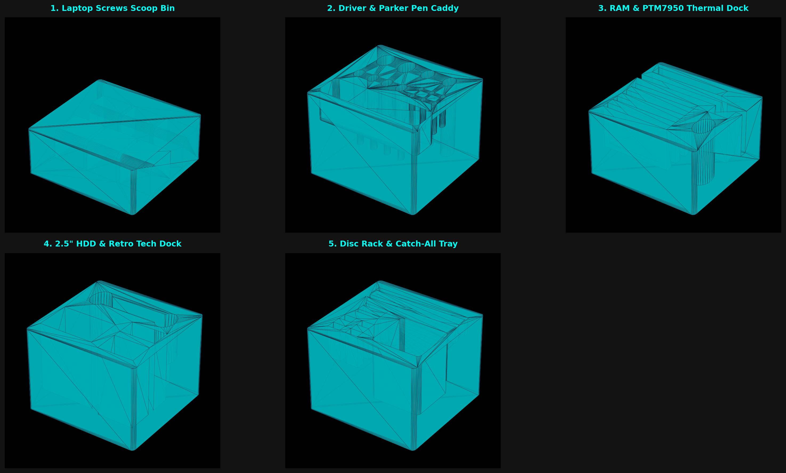
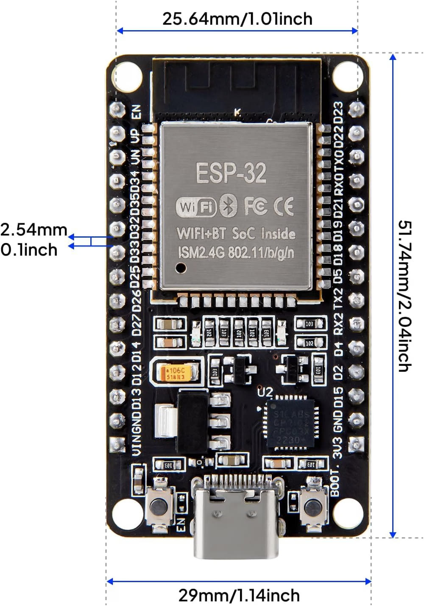
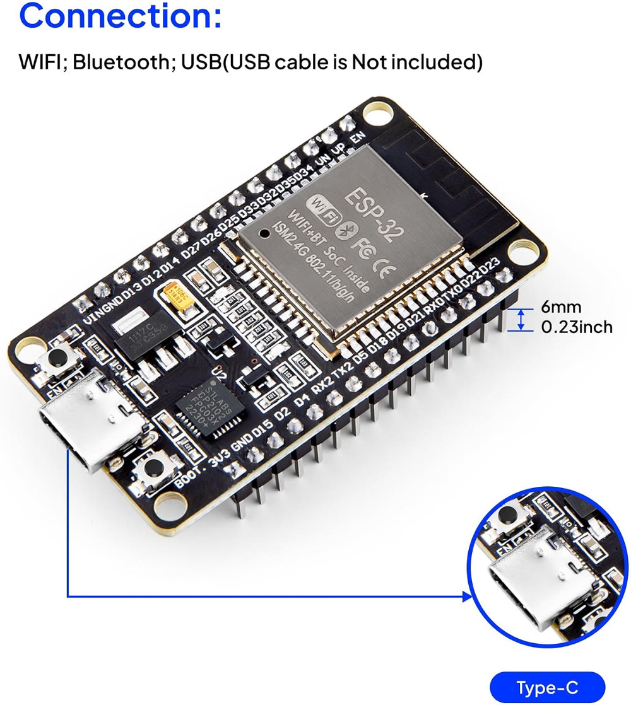
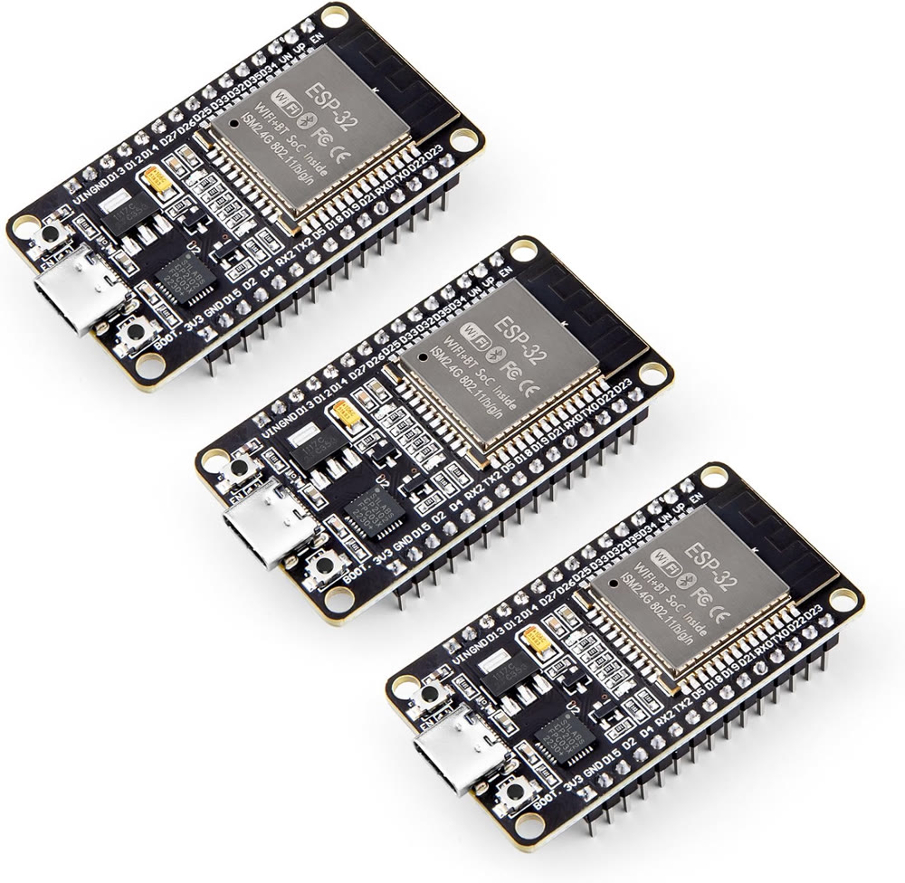

<!doctype html>
<html lang="en">
	<head>
		<title>Andrew Van Ek Portfolio | Projects</title>
		<meta charset="utf-8">
		<link rel="stylesheet" href="css/coin-predictor.css?v=20261103-clock-weather-fix-1">
	<link rel="stylesheet" href="css/styles.css?v=20261121-nav-fix-1">
		<link rel="icon" href="favicon.ico" sizes="any">
		<link rel="icon" href="favicon.svg" type="image/svg+xml">
		<link rel="apple-touch-icon" href="apple-touch-icon.png">
		<meta name="viewport" content="width=device-width, initial-scale=1">
		<meta name="description" content="Hands-on infrastructure, cybersecurity, data recovery, and local-AI projects by Andrew Van Ek.">
		<meta property="og:type" content="website">
		<meta property="og:url" content="https://andrewtvanekportfolio.online/projects.html">
		<meta property="og:title" content="Projects | Andrew Van Ek Portfolio">
		<meta property="og:description" content="Hands-on infrastructure, cybersecurity, data recovery, and local-AI projects by Andrew Van Ek.">
		<meta property="og:image" content="https://andrewtvanekportfolio.online/images/andrewvanek.jpg">
		<meta property="twitter:card" content="summary_large_image">
		<meta property="twitter:url" content="https://andrewtvanekportfolio.online/projects.html">
		<meta property="twitter:title" content="Projects | Andrew Van Ek Portfolio">
		<meta property="twitter:description" content="Hands-on infrastructure, cybersecurity, data recovery, and local-AI projects by Andrew Van Ek.">
		<meta property="twitter:image" content="https://andrewtvanekportfolio.online/images/andrewvanek.jpg">
		<link rel="preconnect" href="https://fonts.googleapis.com">
		<link rel="preconnect" href="https://fonts.gstatic.com" crossorigin>
		<link href="https://fonts.googleapis.com/css2?family=Inter:wght@400;500;700&display=swap" rel="stylesheet">
	<link rel="stylesheet" href="css/footer.css?v=20261126-accuracy-436">
<link rel="stylesheet" href="css/learning.css?v=20261126-accuracy-436">
</head>
	<body>
		<div class="container">
							<nav class="tablet-desktop">
			<ul id="site-navigation">
				<li><a href="index.html">Home</a></li>
				<li><a href="projects.html" aria-current="page">Projects</a></li>
				<li><a href="gallery.html">Gallery</a></li>
				<li class="nav-item-dropdown">
					<button class="nav-dropdown-toggle" type="button" aria-expanded="false" aria-haspopup="true">
						AI Labs <span class="nav-arrow" aria-hidden="true">&#9662;</span>
					</button>
					<ul class="nav-dropdown-menu">
						<li><a href="chat.html">Class &amp; Service Desk Bot</a></li>
						<li><a href="lab.html">Live AI Lab</a></li>
						<li><a href="council.html">AI Chatroom</a></li>
						<li><a href="moltbook.html">Moltbook Agent</a></li>
						<li><a href="sudoku.html">Sudoku Logic Solver</a></li>
						<li><a href="ai-predictor.html">Neural Coin Predictor</a></li>
						<li><a href="code-runner.html">Code Runner &amp; Coach</a></li>
						<li><a href="ai-bias.html">AI Bias &amp; Fairness Lab</a></li>
					</ul>
				</li>
				<li class="nav-item-dropdown">
                    <button class="nav-dropdown-toggle" type="button" aria-expanded="false" aria-haspopup="true">
                        Sims &amp; 3D <span class="nav-arrow" aria-hidden="true">&#9662;</span>
                    </button>
                    <ul class="nav-dropdown-menu">
						<li><a href="repair-shop.html">Cursed Repair Shop</a></li>
						<li><a href="incident-sim.html">Homelab Incident Simulator</a></li>
						<li><a href="fleet.html">Hardware Fleet &amp; 3D Setup</a></li>
						<li><a href="map.html">3D Knowledge Map</a></li>
						<li><a href="globe.html">3D Planetary Backbone</a></li>
                    </ul>
                </li>
                <li class="nav-item-dropdown">
					<button class="nav-dropdown-toggle" type="button" aria-expanded="false" aria-haspopup="true">
						Systems &amp; Stats <span class="nav-arrow" aria-hidden="true">&#9662;</span>
					</button>
					<ul class="nav-dropdown-menu">
						<li><a href="stats.html">Stats for Nerds</a></li>
						<li><a href="maintenance.html">Maintenance Log</a></li>
						<li><a href="changelog.html">Changelog &amp; Releases</a></li>
						<li><a href="clock.html">Homelab Desk Clock</a></li>
						<li><a href="quotes.html">Quotes</a></li>
						</ul>
				</li>
				<li class="nav-item-dropdown">
					<button class="nav-dropdown-toggle" type="button" aria-expanded="false" aria-haspopup="true">
						Career &amp; About <span class="nav-arrow" aria-hidden="true">&#9662;</span>
					</button>
					<ul class="nav-dropdown-menu">
						<li><a href="job.html">Skills &amp; Toolkit</a></li>
						<li><a href="resume.html">Resume</a></li>
						<li><a href="about.html">About</a></li>
						<li><a href="contact.html">Contact</a></li>
						<li><a href="privacy.html">Privacy Policy</a></li>
					</ul>
				</li>
			<li class="nav-item-search">
				<a href="search.html" class="nav-search-link" id="nav-search-trigger" title="Search entire website (Ctrl+K or /)" aria-label="Search website">
					<svg class="nav-search-svg" width="14" height="14" viewBox="0 0 24 24" fill="none" stroke="currentColor" stroke-width="2.2" stroke-linecap="round" stroke-linejoin="round" aria-hidden="true"><circle cx="11" cy="11" r="8"></circle><line x1="21" y1="21" x2="16.65" y2="16.65"></line></svg>
					<span>Search</span>
					<kbd class="nav-search-badge" aria-hidden="true">Ctrl+K</kbd>
				</a>
			</li>
			</ul>
		</nav>
			<h1>Projects</h1>
			<main><section class="evidence-note" aria-labelledby="project-evidence-scope"><h2 id="project-evidence-scope">How to read these project notes</h2><p>Current interactive demos, reproduced measurements, historical observations, and proposed work are different kinds of evidence. A past project note records the setup and results reported for that session; it is not a product guarantee or an independently reproduced benchmark unless a method and artifact are linked.</p><p>The sequence experiment now links its data and calculations. Other precise timings, clinical interpretations, and lifetime/performance claims should be treated as reported observations when their underlying test evidence is not published. AI collaboration credit identifies assistance, not external validation.</p></section>
<p>I learn by trying things, working through problems, and testing what changed. These are projects from my internships and my own experiments. Where I used AI, I describe how it helped me along the way.</p>


<section class="project-entry" aria-labelledby="sms-local-ai-digests-title">
<h2 id="sms-local-ai-digests-title" style="scroll-margin-top:9rem">Texting My Local AI: Private SMS Chat &amp; Opt-In Website Digests</h2>
<p class="project-status"><span class="status-badge project-in-progress">In Progress</span> <span>Twilio &middot; Local AI &middot; FastAPI &middot; SQLite &middot; Consent-Based Notifications &middot; <time datetime="2026-11-26">Started November 26, 2026</time></span></p>
<p>I wanted to ask my local AI a question by sending a normal text from my iPhone, without opening a chat app. I already had a Twilio number connected to my homelab for voice conversations, so I asked <strong>ChatGPT / Codex (OpenAI)</strong> to inspect that setup over SSH and extend it with SMS. During the build, I also decided to offer optional website-update texts: a single daily digest when something changes, with people choosing to subscribe themselves.</p>
<div class="project-architecture" aria-label="SMS assistant and website digest architecture"><span>iPhone / SMS</span><span aria-hidden="true">&rarr;</span><span>Twilio signed webhook</span><span aria-hidden="true">&rarr;</span><span>FastAPI + SQLite queue</span><span aria-hidden="true">&rarr;</span><span>Local Liquid model</span><span aria-hidden="true">&rarr;</span><span>Twilio reply + delivery status</span></div>
<h3>What is implemented</h3>
<ul>
<li><strong>One number for voice and text:</strong> the existing number supports SMS and MMS, but its SMS webhook was still a demo response. Codex connected SMS to the Alpine Linux gateway while preserving the voice route and reusing the local Liquid model through the existing model-host connection.</li>
<li><strong>Private AI conversations:</strong> an exact phone-number allowlist limits general AI chat to my approved number. The assistant keeps separate SMS context, supports RESET, identifies its replies, and caps response length. Public subscribers do not gain AI access. Other senders receive a restricted-access response rather than having their questions passed to the model.</li>
<li><strong>Durable message handling:</strong> signed requests are checked before the sender is trusted. Incoming messages are acknowledged promptly and saved to a private SQLite queue; a background worker performs inference and sends the reply. Message identifiers prevent duplicate processing, and signed delivery callbacks record carrier errors. Uncertain send outcomes are not blindly retried.</li>
<li><strong>Explicit website-update enrollment:</strong> visitors review the <a href="sms-updates.html">SMS update disclosures</a> and send UPDATES from their own phone. Opening the Messages link alone does not subscribe them. STOP disables their subscription and cancels queued digests; HELP provides support. The pilot is limited to 25 active subscriptions.</li>
<li><strong>One daily digest, when needed:</strong> the notifier checks the deployed website&rsquo;s public changelog snapshot, excludes automated data-refresh commits, and prepares at most one digest per subscriber per day, around 6 p.m. Eastern time. Initial startup establishes a baseline rather than sending the site&rsquo;s historical backlog. Broadcasts remain disabled pending approval and live delivery tests.</li>
<li><strong>Public disclosures:</strong> Codex drafted and published the <a href="sms-privacy.html">SMS Privacy Policy</a>, <a href="sms-terms.html">SMS Terms &amp; Conditions</a>, and enrollment page after my review and approval, linked them from Contact and the general privacy page, and rebuilt the search index.</li>
</ul>
<h3>The first test: the AI worked, but the reply was blocked</h3>
<p>I texted a multiplication question from my whitelisted iPhone. The message reached the gateway, and the local model generated the correct answer, 96, with an outbound reply created about four seconds after receipt. Twilio then marked that reply undelivered with error 30034: the number was not registered for US A2P 10DLC messaging. That test verified inbound SMS and local response generation; it did <strong>not</strong> verify successful delivery back to my phone.</p>
<p>We completed the individual compliance profile, created a dedicated Messaging Service, registered and verified a Sole Proprietor Brand, and submitted a campaign describing both the private AI and public opt-in digests. I completed the identity and mobile confirmations and approved the registration costs. Codex navigated the new Twilio console, prepared the application, recovered an existing-brand association after a setup error, and checked the API status. The optional automated checker continued to request a web-form phone field despite the selected text-keyword enrollment method; we documented the actual keyword flow and submitted it for review. <strong>The campaign was IN_PROGRESS when this entry was published.</strong></p>
<h3>Verification and the next milestones</h3>
<p>Nine automated test cases cover signed requests, invalid signatures and malformed input, exact whitelist checks, duplicates, conversation history and RESET, model/send failures, public subscriptions without AI access, immediate STOP handling, daily digest limits, data-refresh exclusions, and startup baselines. The public SMS endpoint rejects unsigned requests; model health and the signed voice route were also checked after deployment. The three new SMS pages returned successfully from the public website.</p>
<p><strong>Still to verify:</strong> carrier approval and number registration, successful iPhone reply delivery, conversation follow-ups and RESET, then public enrollment, HELP, STOP, denial of private AI access, and an actual digest using my non-whitelisted Google Voice test numbers. We will test each layer before progressing from <strong>SMS &rarr; MMS &rarr; RCS</strong>. The current implementation handles text only; attachments receive a request for a text description. MMS understanding and RCS features are future work.</p>
<p class="credit"><strong>Collaboration credit:</strong> Andrew Van Ek proposed the SMS contact, supplied the existing Twilio account and homelab, directed the privacy and whitelist behavior, chose an optional daily website digest, completed identity and phone verification, approved costs and public disclosures, and performed the first iPhone test. <strong>ChatGPT / Codex (OpenAI)</strong> inspected the existing services over SSH, designed and implemented the SMS gateway and durable queue, added signature validation and delivery tracking, implemented subscriptions and daily digest logic, authored and ran the automated tests, configured SMS routing, prepared the Twilio registration, drafted and published the consent/privacy/terms pages, verified deployment, and authored this in-progress project entry. The existing voice gateway and earlier voice work retain their original project credits.</p>
<ul class="chips"><li>Twilio SMS</li><li>Local AI</li><li>FastAPI</li><li>SQLite</li><li>Webhook Security</li><li>Opt-In Messaging</li><li>A2P 10DLC</li><li>Daily Digests</li><li>Automated Testing</li><li>ChatGPT / Codex (OpenAI)</li></ul>
</section>


<section class="project-entry" aria-labelledby="portfolio-evidence-audit-title">
<h2 id="portfolio-evidence-audit-title" style="scroll-margin-top:9rem">Auditing My Own Portfolio: Accuracy, Privacy &amp; Reproducible AI Experiments</h2>
<p class="project-status"><span class="status-badge project-completed">Completed Project</span> <span>Source Review &middot; Privacy Controls &middot; Educational Design &middot; Reproducible Evaluation &middot; <time datetime="2026-11-26">Completed November 26, 2026</time></span></p>
<p>A portfolio should make it possible to understand what I built, how it works, and what the evidence actually supports. While reviewing my interactive AI lessons, I noticed that useful demonstrations could still leave a newcomer lost: a percentage appeared without its calculation, an analogy arrived before the concept, or a polished description made a stronger claim than the implementation justified. I asked <strong>ChatGPT / Codex (OpenAI)</strong> to help investigate the code and artifacts behind those claims, correct the problems we could verify, and clearly identify what still needed checking.</p>
<h3>From impressive-looking results to inspectable evidence</h3>
<p>The initial review identified sixteen findings across simulations, model evaluation, explanations, privacy language, security assurances, and generated metadata. The <a href="documents/accuracy-review-2026-11-26.html">published audit report</a> records their disposition and verification boundaries. This is an ongoing review of my own work, rather than an independent certification of every historical portfolio entry.</p>
<ul>
<li><strong>Explain the concept before the analogy:</strong> the <a href="ai-bias.html">AI bias lesson</a> introduces its invented examples, shows how counts become percentages, explains what changing a control does, and connects one module to the next. Shared term explanations now put the technical meaning before the optional comparison.</li>
<li><strong>Make simulations describe what they actually do:</strong> the Sudoku page previously substituted a preset after image upload. It now treats the photo as a manual reference, clears the editable grid, and explicitly states that it does not recognize digits. Its commentary is labeled as template narration tied to solver operations.</li>
<li><strong>Rebuild the model evidence:</strong> recovered local training source and saved weights allowed the original coin model’s validation result to be checked. Reconstructing its seed-42 dataset reproduces 631 correct predictions out of 1,200, or 52.58%. That monitored validation split is distinguished from an untouched final test.</li>
<li><strong>Compare against simple strategies:</strong> a controlled retraining candidate uses 20,000 training rows, 5,000 validation rows, and 15,000 final test rows from invented generating rules. On the shared test mixture it scores 56.19%, versus 54.47% for the original model and 55.89% for always switching from the previous face. Its fair-outcome score is 49.82%; these results do not establish a real-coin prediction advantage or a statistically significant improvement. The <a href="ai-predictor.html">sequence lab</a> publishes model choices, counts, baselines, and calculation details.</li>
<li><strong>Separate reference graphics from measurements:</strong> Internet-globe animations and interconnection locations are labeled schematic. Unsupported throughput and traffic-share claims were removed. Stats labels distinguish browser request timing, illustrative gauges, service activity, and dated source checks.</li>
<li><strong>Keep metadata traceable:</strong> all six OS cards use dated primary-source checks with stale/unavailable states. The <a href="changelog.html">changelog</a> is generated from actual Git history with an explicit source revision, while the <a href="map.html">knowledge map</a> displays its dataset’s real build time. Host jobs check release sources daily and source history hourly.</li>
</ul>
<h3>Privacy claims checked against the controlled host</h3>
<p>The review found that the earlier blanket claim that raw addresses had never been stored was incorrect. The inspected gateway now redacts IPv4 and IPv6 address literals in application diagnostics and process output; Uvicorn access logging and inspected Nginx request/persistent error logging are disabled. Known retained website logs were redacted. The rate-limit database uses keyed identifiers rather than raw addresses, and the <a href="privacy.html">Privacy Policy</a> separately describes prompt audits, phone-service diagnostics, and browser-local storage.</p>
<p>These are bounded controls on an inspected system. They do not establish zero retention by every provider or operating-system service. Privacy improvements are documented with their limits rather than presented as a universal guarantee.</p>
<h3>Artifacts and verification so far</h3>
<p>The training work publishes <a href="data/coin/transparent-dataset.csv.gz">all 40,000 synthetic rows</a>, <a href="scripts/train-coin-transparent.py">training code</a>, <a href="data/coin/transparent-training.json">weights, curves, seeds, and test results</a>, and <a href="data/coin/reconstruction.json">original reconstruction evidence</a>. Artifact hashes tie the recorded results to their files. JavaScript inference checks recompute both models’ final-test confusion counts directly from the public CSV.</p>
<p>Verification so far includes 18 passing unit checks, automated Edge interactions, unavailable-data handling, and mobile overflow checks at 320, 390, 768, and 1280 pixels. Those checks cover the specified behaviors; they do not independently validate every older benchmark or every deployment property.</p>
<h3 id="cloudflare-audit-review-20261126" style="scroll-margin-top:9rem">November 26: reviewing the Cloudflare audit, and what I learned</h3>
<p>After locating the correct Cloudflare account, I coordinated a read-only account review through Muse on my Mac and brought its sanitized report back to <strong>ChatGPT / Codex (OpenAI)</strong>. Muse reported empty Logpush job lists at both account and zone level, Pages hosting for the portfolio, and several unresolved logging settings. No Cloudflare settings were changed during that review. Codex then compared the report with current Cloudflare documentation and the portfolio repository instead of treating its conclusion as established fact.</p>
<p>The most useful lesson was how easily a narrow observation can become an overbroad privacy claim. An empty list of configured log exports is evidence about that export mechanism at the time of inspection. It does not prove that a provider keeps no visitor addresses in other products or internal systems.</p>
<ul>
<li><strong>Exporting logs and retaining logs are separate questions.</strong> Muse&rsquo;s reported absence of Logpush jobs supports a limited conclusion about configured Logpush exports. Log Explorer, security-event data, Pages Functions observability, and provider-internal processing still need their own evidence.</li>
<li><strong>An analytics dashboard can contain individual request records.</strong> I learned that &ldquo;analytics&rdquo; does not necessarily mean anonymous totals. Cloudflare&rsquo;s <a href="https://developers.cloudflare.com/waf/analytics/security-analytics/">Security Analytics documentation</a> describes sampled request logs and source-IP filtering, so the initial report&rsquo;s aggregate-only description needed correction.</li>
<li><strong>An unsuccessful API call is an unknown, not an off switch.</strong> The report listed failed Logpush dataset calls while leaving Log Explorer unresolved. Cloudflare documents a separate <a href="https://developers.cloudflare.com/observability/logs/log-explorer/manage-datasets/">Log Explorer configuration resource</a>. Codex requested a check through the appropriate documented API or dashboard rather than inferring that logging was disabled.</li>
<li><strong>Application code and platform logging are different layers.</strong> Codex confirmed that the repository contains <code>functions/api/room-sensors.js</code>, a read-only Pages relay. The inspected handler has no explicit visitor-IP logging or console logging; that does not establish whether Cloudflare retains invocation metadata around it.</li>
<li><strong>A documented retention window does not prove every related control.</strong> Current <a href="https://developers.cloudflare.com/waf/analytics/security-events/">Security Events documentation</a> supports up to 31 days of history. The cited material did not establish the report&rsquo;s stronger assertion that collection cannot be disabled. A dated 2012 blog post also cannot establish a current fixed retention promise.</li>
</ul>
<p>I sent these findings back to Muse for further read-only checks. By the third report, the two principal configuration questions below were resolved. This iteration strengthened the audit by separating reported account settings, independently checked source behavior, documented product behavior, and unanswered questions. It has not established zero Cloudflare IP retention.</p>
<h3 id="cloudflare-verification-milestone" style="scroll-margin-top:9rem">Cloudflare milestone: two questions resolved</h3>
<p>Muse&rsquo;s third account report added the documented <code>include_zones=true</code> option to the Log Explorer dataset listing and reported HTTP 200 with an empty result. I learned why the scope of an API response matters: this option explicitly includes zone-level datasets, so the earlier direct-zone permission error no longer leaves that particular question unanswered. Together with the reported empty account and zone Logpush lists, this supports a dated finding of no configured Logpush jobs or Log Explorer datasets. <a href="https://developers.cloudflare.com/api/typescript/resources/logs/subresources/log_explorer/subresources/datasets/methods/list/">Official API scope</a>.</p>
<p>The review also corrected an assumption in Codex&rsquo;s earlier guidance: Pages Functions do not have the persistent Workers Logs feature or its assumed three-day retention setting. Cloudflare&rsquo;s <a href="https://developers.cloudflare.com/pages/functions/debugging-and-logging/">Pages documentation</a> explicitly describes logs that are not stored. This closes the Pages debugging-log question for the current platform; moving the project to Workers would require a fresh review of that product&rsquo;s logging configuration.</p>
<p>The <a href="privacy.html#cloudflare-verification">Privacy Policy now places these findings beside their limits</a>. Cloudflare security and analytics records can still contain visitor addresses, and provider-internal retention remains unresolved. These results describe inspected configuration and documented product behavior, rather than a promise that every provider keeps no IPs. No Cloudflare configuration was changed during the account review.</p>
<h3 id="gcp-audit-revision-2" style="scroll-margin-top:9rem">Google Cloud revision 2: deployment matched, remediation proposed</h3>
<p>The separate Class &amp; Service Desk Bot received its own read-only Google Cloud review through Muse. After I brought the first report back to <strong>ChatGPT / Codex (OpenAI)</strong>, Codex identified overbroad conclusions about log access, exports, stored conversations, and model training, plus an incorrect claim about payload filters. Muse&rsquo;s second report incorporates those corrections and adds a proposed code patch and request-log storage options. <strong>None of those proposed changes has been applied.</strong></p>
<p><strong>Evidence tied to the serving deployment:</strong> Muse reports tracing the Cloud Run revision&rsquo;s recorded source archive through its successful Cloud Build to the exact container-image digest serving traffic. The archive&rsquo;s <code>app.py</code> and Dockerfile matched the inspected copies byte for byte. That closes the earlier uncertainty about whether the source under review was the deployed source. Codex reviewed this provenance description; it did not independently download the archive or repeat the authenticated console inspection. Visitor log entries were deliberately not opened.</p>
<ul>
<li><strong>A concrete logging issue:</strong> the matched source contains a diagnostic print of the effective search query, including thread-derived context for follow-ups. Muse reports that application stdout and Cloud Run&rsquo;s automatic request logs route to a bucket configured for 30-day retention. This means the absence of a dedicated conversation database does not establish that conversation content is never retained.</li>
<li><strong>Different logs need different controls:</strong> removing the query-bearing prints would address application output, while Cloud Run still generates technical request logs that can include visitor addresses. Google documents these as separate logging paths. <a href="https://docs.cloud.google.com/run/docs/logging">Cloud Run logging documentation</a>.</li>
<li><strong>Access is broader than an owner-only label:</strong> the runtime service account reportedly holds Editor, which includes ordinary log-reading permissions. The revised report corrects the earlier owner-only assertion. <a href="https://docs.cloud.google.com/logging/docs/access-control">Logging access-control documentation</a>.</li>
<li><strong>Keep conclusions within the inspected scope:</strong> no custom exports were found in the project-level sink configuration, but parent folder/organization routing remains unverified. No dedicated conversation store was found in the deployed code; that is a different claim from no server-side retention. The AI service&rsquo;s documented commitment concerns foundation-model training, rather than every possible form of model use or provider storage.</li>
</ul>
<p><strong>Proposed remediation, not a completed fix:</strong> Muse supplied a patch to remove query-bearing debug output, limit exception logging, and return a generic error instead of exposing search-API error details. Separately proposed storage controls include excluding the relevant request-log entries, routing them to a dedicated short-retention bucket, or shortening the default bucket&rsquo;s retention with its wider project impact. These options still need precise service scoping and validation before application.</p>
<p>I learned to ask two separate questions: what stops sensitive data reaching future logs, and what happens to records already retained? Payload exclusions can drop whole matching entries; they do not redact selected text, and a new exclusion does not remove earlier records. A source-code fix also does not prove that an existing log archive is gone. The proposed retention controls therefore document historical-data effects separately from new-entry routing.</p>
<p><strong>Current status:</strong> the deployed-source match and revised findings are recorded; the debug-output patch, request-log controls, and any handling of existing records remain proposals. Parent-level routing, Error Reporting contents, and provider-internal processing remain verification limits. This milestone is documented as an audit result, not a claim that Google Cloud logging has already been changed.</p>
<h3 id="gcp-audit-remediation-applied" style="scroll-margin-top:9rem">Google Cloud fixes applied and verified</h3>
<p>Following Andrew&rsquo;s authorization, all three Google Cloud privacy-audit fixes were applied and verified:</p>
<ul>
<li><strong>Application debug output patched (Appendix 1):</strong> Cloud Run revision <code>personal-chat-00028-8c6</code> now serves 100% of traffic. The <code>CTXDBG</code> and <code>DRAFTDBG</code> diagnostic prints that logged visitor questions were removed, and the error path now logs only the exception type while returning a generic message. Live logs confirm the new content-free <code>search mode=</code> line appears, zero <code>CTXDBG</code> or <code>DRAFTDBG</code> lines are emitted, and test query text does not appear in the logs.</li>
<li><strong>Short-retention request-log routing (Appendix 2, Option 2):</strong> Cloud Run request logs now route via the sink <code>cloud-run-requests-to-short-bucket</code> to a dedicated bucket named <code>cloud-run-requests-short</code> configured with 7-day retention, and are excluded from the <code>_Default</code> bucket. Behavioral verification confirmed fresh request logs land in <code>cloud-run-requests-short</code> and not in <code>_Default</code>.</li>
<li><strong>Vertex AI Search event collection disabled:</strong> &ldquo;Enable user event collection&rdquo; on the Vertex AI Search app <code>personal-assistant-all</code> was turned OFF, saved in the console, and verified after a page reload.</li>
</ul>
<h3 id="audit-completion-scope" style="scroll-margin-top:9rem">Completion and documented boundaries</h3>
<p>With the portfolio accuracy fixes, scoped Cloudflare verification, and Google Cloud logging and event-collection controls applied and verified, this audit project is complete. The documented boundaries remain explicit: provider-internal retention, parent folder or organization routing in Google Cloud, and the minor Cloudflare observations noted on the <a href="privacy.html#cloudflare-verification">Privacy Policy</a> define what the inspected controls cover rather than claiming universal zero retention across every external system.</p>
<p class="credit"><strong>Collaboration credit:</strong> Cloud-audit collaboration included <strong>Muse</strong> and <strong>ChatGPT / Codex (OpenAI)</strong>. Andrew Van Ek initiated and authorized the audit, identified confusing explanations, set the transparency requirements, and is coordinating provider-account review. <strong>ChatGPT / Codex (OpenAI)</strong> performed source and artifact inspection, recovered the original training evidence, ran the controlled retraining comparison, implemented corrections and controlled-host logging changes, added verification, and published the report. For the Cloudflare iteration, Andrew located the account, coordinated Muse&rsquo;s read-only inspection, reviewed the explanations, and supplied the follow-up questions. <strong>ChatGPT / Codex (OpenAI)</strong> reviewed the report, identified unsupported conclusions, checked current official documentation and the Pages relay source, explained the distinctions, and prepared the second-pass questions. Muse supplied three read-only Cloudflare account reports, including the final scoped dataset check. ChatGPT / Codex verified the API option and Pages documentation, corrected its own earlier logging assumption, and incorporated the bounded findings into the privacy page and audit record. For Google Cloud, Muse performed the read-only console and source-archive inspection, reported the deployment/source match, and prepared the proposed patch and storage controls. ChatGPT / Codex reviewed the reports, checked logging and IAM documentation, identified corrections and evidence limits, and documented the second revision on this site. Andrew coordinated the review, supplied its revisions, and authorized applying the fixes. <strong>Muse</strong> and <strong>ChatGPT / Codex (OpenAI)</strong> conducted the cross-AI audit review and verification workflow, and the three Google Cloud fixes (revision <code>personal-chat-00028-8c6</code>, the 7-day <code>cloud-run-requests-short</code> sink and <code>_Default</code> exclusion, and disabling Vertex AI Search user event collection on <code>personal-assistant-all</code>) were applied and verified. <strong>Antigravity AI (Google DeepMind agentic assistant)</strong> updated this audit entry to Completed and integrated the accompanying collaboration story into the gallery.</p>
<ul class="chips"><li>Technical Auditing</li><li>Evidence &amp; Reproducibility</li><li>Privacy Engineering</li><li>Model Evaluation</li><li>Plain-English Explanations</li><li>Cloud Run Logging</li><li>Vertex AI Search</li><li>Completed Audit</li></ul>
</section>

<section class="project-entry" aria-labelledby="homepage-visit-memory-title">
<h2 id="homepage-visit-memory-title">A Homepage That Remembers Your Previous Visit</h2>
<p class="project-status"><span class="status-badge project-completed">Completed Feature</span> <span>Browser Local Storage &middot; Accessible Footer &middot; Responsive Design &middot; November 25, 2026</span></p>
<p>I wanted the portfolio to feel a little more personal when someone returns. The <a href="index.html">homepage footer</a> now shows the previous homepage visit recorded in that browser. A first-time visitor sees a welcome message instead. The timestamp is displayed in the visitor&rsquo;s local date and time format, then the current visit is saved for their next return.</p>
<p>The feature uses browser-local storage without creating an account, setting a tracking cookie, or sending its visit timestamp to a server. It remembers a browser on a device, rather than identifying a unique person across devices. Blocked storage, invalid saved values, and restored back/forward-cache pages are handled. Clearing site data clears this memory.</p>
<p>The footer also received opaque rounded backgrounds so seasonal leaves and precipitation remain behind the text. Release labels and update timestamps were synchronized across the root portfolio pages.</p>
<p class="credit"><strong>Collaboration credit:</strong> Andrew Van Ek proposed the per-visitor return message and footer readability improvements. <strong>ChatGPT / Codex (OpenAI)</strong> implemented browser-local visit memory, storage fallbacks, footer styling, and verification.</p>
<ul class="chips"><li>Browser Storage</li><li>Returning Visitors</li><li>Responsive Design</li><li>Accessible UI</li><li>Progressive Enhancement</li></ul>
</section>


<section class="project-entry" aria-labelledby="please-hold-repair-shop-title">
<h2 id="please-hold-repair-shop-title">Please Hold: The Cursed Computer Repair Shop</h2>
<p class="project-status"><span class="status-badge project-completed">Playable v1</span> <span>Browser Game &middot; Six Troubleshooting Cases &middot; JavaScript &middot; Responsive CSS &middot; <time datetime="2026-11-25">November 25, 2026</time></span></p>
<div style="background:#101917;color:#f2eddc;border:1px solid #34443b;padding:clamp(20px,4vw,36px);margin:24px 0;">
<p style="font:11px/1.8 monospace;letter-spacing:1px;color:#d5f47c;margin:0 0 12px;">OPEN FOR QUESTIONABLE BUSINESS / SIX TICKETS</p>
<p style="font:bold clamp(36px,6vw,70px)/1.05 Impact,'Arial Narrow',sans-serif;letter-spacing:-1px;color:#f2eddc;margin:0 0 18px;">PLEASE HOLD<span style="color:#d5f47c;">.</span></p>
<p style="color:#c4d1bd;max-width:650px;margin:0 0 22px;">The Wi-Fi has five bars. The printer has opinions. You have cold coffee. Work the repair counter, investigate fictional computer problems, and prove your fixes actually work.</p>
<a href="repair-shop.html" style="display:inline-block;background:#d5f47c;color:#203015;padding:13px 20px;font-weight:700;text-decoration:none;">Play the repair shop &rarr;</a>
</div>
<p>A frustrating image-viewer troubleshooting session became the idea for a playable IT comedy. I wanted something fellow technicians would recognize immediately: the customer insists nobody changed anything, the obvious fix is tempting, and the actual fault only becomes clear when you test the right thing. Working with <strong>ChatGPT / Codex (OpenAI)</strong>, I turned that premise into a fictional repair counter with a simulated desktop, diagnostic tools, evidence notes, and six customer tickets.</p>
<h3>What you can play</h3>
<ul>
<li><strong>Six distinct faults:</strong> repair missing image-viewer registration, diagnose stale DNS settings, unpause a print queue, correct audio routing, resolve obstructed laptop airflow, and retrieve a cloud-only photo. The final ticket deliberately resembles the first, rewarding fresh diagnosis instead of repeating a familiar fix.</li>
<li><strong>Evidence, repair, verification:</strong> inspect the relevant tools before applying a fix, read the results, and retest the original symptom before closing the ticket. Correctly choosing a repair is only part of the job.</li>
<li><strong>A complete shift:</strong> earn up to 600 points, ask the senior technician for hints, review the lesson after each fix, retry individual tickets, and resume saved progress on the same browser. No countdown timer punishes careful reading.</li>
<li><strong>Mouse, touch, and keyboard:</strong> use the responsive waiting room and workbench on desktop or mobile, navigate diagnostic tabs with arrow keys, and receive diagnostic announcements through an accessible status region.</li>
</ul>
<h3>Implementation &amp; validation</h3>
<p>The game uses static HTML, CSS, and JavaScript modules. Case definitions and repair rules live separately from the interface, making the diagnostic state machine testable. Local browser storage preserves progress when available, with an in-memory fallback when storage is blocked. Every reading, command, customer, and repair is part of the simulation; the game does not inspect or change a visitor&rsquo;s computer.</p>
<p>Validation covered all six evidence-to-fix-to-retest paths, scoring and hint limits, saved progress, malformed storage, reset confirmation, keyboard focus, and a complete 600-point campaign. Automated browser checks also exercised mobile interaction and checked for horizontal page overflow at five widths from 360 to 1440 pixels. Desktop and mobile screenshots were visually reviewed.</p>
<p>The first ticket draws on <a href="https://imageglass.org/docs/command-line-utilities">ImageGlass&rsquo;s official viewer-registration command</a>. The cloud-file ticket is a fictional contrasting scenario, rather than a claim about the cause of the original intermittent Explorer issue.</p>
<p class="credit"><strong>Collaboration credit:</strong> Andrew Van Ek supplied the real troubleshooting experience, chose the repair-shop concept and comedic tone, and directed its addition to the portfolio. <strong>ChatGPT / Codex (OpenAI)</strong> designed and implemented the game, authored the fictional scenarios, added scoring and local progress, tested the gameplay and responsive layout, and prepared this project entry.</p>
<ul class="chips"><li>Interactive Game</li><li>IT Troubleshooting</li><li>JavaScript Modules</li><li>Responsive Design</li><li>State Machine</li><li>Browser Storage</li><li>Keyboard Accessibility</li><li>Automated Testing</li></ul>
</section>


<section class="project-entry" aria-labelledby="autonomous-portfolio-publisher-plugin-title">
<h2 id="autonomous-portfolio-publisher-plugin-title">Autonomous Portfolio Publisher Plugin for Google Antigravity — Global Skills, Strict Page-Separation Guardrails, Remote SSH AST/HTML Validation &amp; Zero-Boilerplate GitHub Publishing</h2>
<p class="project-status"><span class="status-badge project-completed">Completed Project</span> <span>Google Antigravity Plugin &middot; Progressive-Disclosure Skills &middot; Global Agent Rules &middot; Python SSH Pipeline &middot; HTMLParser Validation &middot; Search &amp; Knowledge Graph Rebuild &middot; Antigravity AI (Google DeepMind) &middot; <time datetime="2026-11-25">November 25, 2026</time></span></p>
<div class="project-architecture" aria-label="Autonomous Portfolio Publisher Architecture"><span>Any Future agy / Desktop Session</span><span aria-hidden="true">&rarr;</span><span>Global Plugin Discovery (~/.gemini/config/plugins/portfolio-publisher/)</span><span aria-hidden="true">&rarr;</span><span>Mutual-Exclusion Rules (AGENTS.md)</span><span aria-hidden="true">&rarr;</span><span>Skills (log-maintenance / publish-project)</span><span aria-hidden="true">&rarr;</span><span>portfolio_sync.py over Batch SSH</span><span aria-hidden="true">&rarr;</span><span>HTMLParser + Index Rebuild + GitHub Push</span></div>

<div class="arch-diagram-card" style="background:#0a0f1d; border:1px solid #1e293b; border-radius:12px; padding:20px; margin:22px 0; box-shadow:0 8px 24px rgba(0,0,0,0.35); color:#f8fafc;">
  <div style="display:flex; justify-content:space-between; align-items:center; margin-bottom:14px; flex-wrap:wrap; gap:8px;">
    <div>
      <h4 style="margin:0; font-size:1.12rem; color:#f8fafc; font-weight:700;">&#129302; Autonomous Portfolio Publisher &amp; Strict Single-Page Sync Pipeline</h4>
      <span style="font-size:0.8rem; color:#94a3b8;">Global Antigravity Plugin &rarr; Progressive Skill Activation &rarr; Guarded SSH Deployment to Alpine NUC</span>
    </div>
    <span style="background:rgba(16,185,129,0.18); color:#34d399; border:1px solid rgba(16,185,129,0.35); font-size:0.75rem; font-weight:700; padding:3px 10px; border-radius:999px;">Global Plugin &bull; Zero-Boilerplate Publishing</span>
  </div>

  <svg viewBox="0 0 920 220" style="width:100%; height:auto; display:block; font-family:system-ui, -apple-system, sans-serif;" role="img" aria-label="Autonomous Portfolio Publisher Plugin Architecture Diagram">
    <defs>
      <linearGradient id="ppGrad1" x1="0%" y1="0%" x2="0%" y2="100%">
        <stop offset="0%" stop-color="#38bdf8" stop-opacity="0.22"/>
        <stop offset="100%" stop-color="#0284c7" stop-opacity="0.06"/>
      </linearGradient>
      <linearGradient id="ppGrad2" x1="0%" y1="0%" x2="0%" y2="100%">
        <stop offset="0%" stop-color="#a855f7" stop-opacity="0.22"/>
        <stop offset="100%" stop-color="#7e22ce" stop-opacity="0.06"/>
      </linearGradient>
      <linearGradient id="ppGrad3" x1="0%" y1="0%" x2="0%" y2="100%">
        <stop offset="0%" stop-color="#f59e0b" stop-opacity="0.22"/>
        <stop offset="100%" stop-color="#b45309" stop-opacity="0.06"/>
      </linearGradient>
      <linearGradient id="ppGrad4" x1="0%" y1="0%" x2="0%" y2="100%">
        <stop offset="0%" stop-color="#10b981" stop-opacity="0.22"/>
        <stop offset="100%" stop-color="#047857" stop-opacity="0.06"/>
      </linearGradient>
      <marker id="arrow-pp" viewBox="0 0 10 10" refX="6" refY="5" markerWidth="6" markerHeight="6" orient="auto-start-reverse">
        <path d="M 0 1 L 10 5 L 0 9 z" fill="#64748b"/>
      </marker>
    </defs>

    <!-- Node 1: Global Discovery -->
    <rect x="15" y="25" width="200" height="170" rx="10" fill="url(#ppGrad1)" stroke="#38bdf8" stroke-width="1.5"/>
    <text x="115" y="50" fill="#7dd3fc" font-size="12" font-weight="700" text-anchor="middle">1. Global Plugin Bundle</text>
    <rect x="30" y="66" width="170" height="24" rx="4" fill="#0f2438" stroke="#38bdf8" stroke-width="0.8"/>
    <text x="115" y="82" fill="#38bdf8" font-size="10.5" font-weight="600" text-anchor="middle">portfolio-publisher</text>
    <text x="115" y="112" fill="#e0f2fe" font-size="10" font-weight="600" text-anchor="middle">&bull; plugin.json Manifest</text>
    <text x="115" y="130" fill="#94a3b8" font-size="9.5" text-anchor="middle">&bull; Always-On AGENTS.md</text>
    <text x="115" y="148" fill="#94a3b8" font-size="9.5" text-anchor="middle">&bull; Auto-Loaded in Every Session</text>
    <text x="115" y="168" fill="#7dd3fc" font-size="9" text-anchor="middle">~/.gemini/config/plugins/</text>

    <line x1="215" y1="110" x2="245" y2="110" stroke="#64748b" stroke-width="2" marker-end="url(#arrow-pp)"/>

    <!-- Node 2: Skill Routing -->
    <rect x="250" y="25" width="200" height="170" rx="10" fill="url(#ppGrad2)" stroke="#a855f7" stroke-width="1.5"/>
    <text x="350" y="50" fill="#d8b4fe" font-size="12" font-weight="700" text-anchor="middle">2. Strict Skill Routing</text>
    <rect x="265" y="66" width="170" height="24" rx="4" fill="#241038" stroke="#a855f7" stroke-width="0.8"/>
    <text x="350" y="82" fill="#c084fc" font-size="10.5" font-weight="600" text-anchor="middle">Mutual-Exclusion Split</text>
    <text x="350" y="112" fill="#f3e8ff" font-size="10" font-weight="600" text-anchor="middle">&bull; log-maintenance &rarr; maint.</text>
    <text x="350" y="130" fill="#f3e8ff" font-size="10" font-weight="600" text-anchor="middle">&bull; publish-project &rarr; projects</text>
    <text x="350" y="148" fill="#94a3b8" font-size="9.5" text-anchor="middle">&bull; Dirty-File Cross-Check</text>
    <text x="350" y="168" fill="#d8b4fe" font-size="9" text-anchor="middle">Zero Cross-Page Bleed</text>

    <line x1="450" y1="110" x2="480" y2="110" stroke="#64748b" stroke-width="2" marker-end="url(#arrow-pp)"/>

    <!-- Node 3: SSH Helper -->
    <rect x="485" y="25" width="200" height="170" rx="10" fill="url(#ppGrad3)" stroke="#f59e0b" stroke-width="1.5"/>
    <text x="585" y="50" fill="#fcd34d" font-size="12" font-weight="700" text-anchor="middle">3. portfolio_sync.py</text>
    <rect x="500" y="66" width="170" height="24" rx="4" fill="#2d1d07" stroke="#f59e0b" stroke-width="0.8"/>
    <text x="585" y="82" fill="#f59e0b" font-size="10.5" font-weight="600" text-anchor="middle">Batch SSH Automation</text>
    <text x="585" y="112" fill="#fef3c7" font-size="10" font-weight="600" text-anchor="middle">&bull; Anchor &amp; ID Inspection</text>
    <text x="585" y="130" fill="#94a3b8" font-size="9.5" text-anchor="middle">&bull; Duplicate ID Prevention</text>
    <text x="585" y="148" fill="#94a3b8" font-size="9.5" text-anchor="middle">&bull; Task Counter + Timestamps</text>
    <text x="585" y="168" fill="#fcd34d" font-size="9" text-anchor="middle">avanek@100.87.81.52</text>

    <line x1="685" y1="110" x2="715" y2="110" stroke="#64748b" stroke-width="2" marker-end="url(#arrow-pp)"/>

    <!-- Node 4: Validation & Push -->
    <rect x="720" y="25" width="185" height="170" rx="10" fill="url(#ppGrad4)" stroke="#10b981" stroke-width="1.5"/>
    <text x="812" y="50" fill="#6ee7b7" font-size="12" font-weight="700" text-anchor="middle">4. Verify &amp; Publish</text>
    <rect x="732" y="66" width="160" height="24" rx="4" fill="#06261a" stroke="#10b981" stroke-width="0.8"/>
    <text x="812" y="82" fill="#10b981" font-size="10.5" font-weight="600" text-anchor="middle">HTMLParser &amp; Git Push</text>
    <text x="812" y="112" fill="#d1fae5" font-size="10" font-weight="600" text-anchor="middle">&bull; build-search-index.py</text>
    <text x="812" y="130" fill="#d1fae5" font-size="10" font-weight="600" text-anchor="middle">&bull; build-knowledge-graph.py</text>
    <text x="812" y="148" fill="#34d399" font-size="9.5" font-weight="600" text-anchor="middle">&bull; Scoped git add + commit</text>
    <text x="812" y="168" fill="#6ee7b7" font-size="9" text-anchor="middle">origin/master Live</text>
  </svg>
</div>

<p>Every time a new feature, hardware hack, or troubleshooting session wrapped up in Google Antigravity CLI (<code>agy</code>) or desktop sessions, documenting it on the portfolio previously required repeating the same boilerplate instructions: the SSH destination (<code>avanek@100.87.81.52</code>), repository path (<code>/home/avanek/agy-work/portfolio</code>), HTML card/bullet layout conventions, counter/timestamp update rules, search and knowledge-graph rebuild scripts, and GitHub push workflow. Because <code>projects.html</code> and <code>maintenance.html</code> exceed 800&ndash;950 KB each, inspecting them naively also wasted context tokens and risked accidental edits across the wrong page.</p>

<p>To turn portfolio publishing into a zero-boilerplate, one-sentence workflow across every future Antigravity session, Andrew and <strong>Antigravity AI (Google DeepMind agentic assistant, Gemini 4 Hydrogen (High))</strong> architected <strong><code>portfolio-publisher</code></strong>&mdash;a global Antigravity customization plugin installed under <code>~/.gemini/config/plugins/portfolio-publisher/</code> with two progressive-disclosure skills, strict page-separation rules, and a Python SSH synchronization engine.</p>

<h3>Engineering Implementation &amp; Guardrails</h3>
<ul>
<li><strong>Legacy Global Rule Remediation (<code>YAML !!seq</code> Diagnostics):</strong> Before building the new customization bundle, resolved an agent startup warning where an older standalone rule file (<code>~/.gemini/config/rules/video_generation_guidelines.md</code>) failed YAML frontmatter parsing (<code>cannot unmarshal !!seq into string</code>) due to Cursor-style <code>globs: [&quot;*&quot;]</code> and <code>always_on: true</code> fields rather than Antigravity&rsquo;s <code>trigger</code> schema. Audited its purpose and cleanly removed the obsolete rule, leaving the global rules directory clean.</li>
<li><strong>Global Plugin Discovery (<code>plugin.json</code> &amp; <code>rules/AGENTS.md</code>):</strong> Packaged the automation as a registered global Antigravity plugin verified live via Language Server RPC (<code>lsrpc GetAllPlugins</code>). Its always-on <code>rules/AGENTS.md</code> automatically teaches every new <code>agy</code> CLI and desktop session the portfolio conventions, attribution requirements, and routing rules without requiring repeated user prompts.</li>
<li><strong>Strict Mutual-Exclusion Page Separation:</strong> Implemented Andrew&rsquo;s core architectural constraint directly in both rules and code: <code>maintenance.html</code> additions (handled by the <code>log-maintenance</code> skill) can <em>never</em> modify <code>projects.html</code>, and <code>projects.html</code> additions or project updates (handled by the <code>publish-project</code> skill) can <em>never</em> modify <code>maintenance.html</code>. Before writing, <code>portfolio_sync.py</code> checks <code>git status --porcelain</code> on the sibling HTML file and aborts if uncommitted cross-page edits exist, then enforces scoped <code>git add</code> staging.</li>
<li><strong>Token-Efficient Remote Inspection &amp; Atomic Publishing (<code>scripts/portfolio_sync.py</code>):</strong> Engineered a shared CLI helper running Python payloads over batch SSH (<code>ssh -o BatchMode=yes avanek@100.87.81.52</code>): <code>inspect-maintenance</code> summarizes all seven categories, task counts, and top IDs; <code>inspect-projects</code> searches headings or fetches only the target section&rsquo;s closing tail; <code>apply-maintenance</code> prevents duplicate IDs, prepends the entry, increments the documented-tasks counter, and updates header/footer timestamps; and <code>apply-project</code> supports both <code>new</code> section creation and targeted <code>update</code> patches (including optional <code>scripts/script.js</code> tech-term insertions).</li>
<li><strong>Automated Validation, Index Rebuilding &amp; GitHub Sync:</strong> Every apply command validates the modified HTML using Python&rsquo;s <code>HTMLParser</code>, executes <code>scripts/build-search-index.py</code> and <code>scripts/build-knowledge-graph.py</code>, commits the scoped changes, and pushes cleanly to <code>origin/master</code>.</li>
</ul>

<h3>Live Verification</h3>
<ul>
<li><strong>Plugin Registration:</strong> Verified via <code>GetAllPlugins</code> that <code>portfolio-publisher</code> loads globally (<code>disabled: false</code>) with both <code>log-maintenance</code> and <code>publish-project</code> skills and <code>rules/AGENTS.md</code> active.</li>
<li><strong>Live End-to-End Dry Run &amp; Production Use:</strong> Verified <code>py_compile</code> and live read-only inspection (<code>inspect-maintenance</code> reporting 615 tasks across 7 categories and <code>inspect-projects</code> matching existing entries), and immediately used the <code>publish-project</code> skill itself to author, validate, index, commit, and push this very project entry to GitHub.</li>
</ul>

<p class="credit"><strong>AI collaboration credit:</strong> Andrew Van Ek conceived the two-agent portfolio automation concept to eliminate repetitive CLI prompting, defined the strict mutual-exclusion boundary between <code>maintenance.html</code> and <code>projects.html</code>, approved removing the broken legacy YAML rule, and directed publishing this case study via the newly built skill; <strong>Antigravity AI (Google DeepMind agentic assistant, Gemini 4 Hydrogen (High))</strong> diagnosed the legacy rule frontmatter YAML parse error, designed and packaged the global <code>portfolio-publisher</code> plugin (<code>plugin.json</code>, <code>rules/AGENTS.md</code>, <code>log-maintenance</code>, and <code>publish-project</code>), engineered <code>scripts/portfolio_sync.py</code> with cross-page git guardrails, <code>HTMLParser</code> validation, and remote search/knowledge-graph index rebuilds, verified live discovery via <code>GetAllPlugins</code>, and published this entry using the plugin.</p>
<ul class="chips"><li>Google Antigravity</li><li>Antigravity Plugins</li><li>Agent Skills</li><li>Progressive Disclosure</li><li>Global Rules (AGENTS.md)</li><li>Python CLI Automation</li><li>SSH Pipeline</li><li>HTMLParser Validation</li><li>GitHub CI/Sync</li><li>Antigravity (Google DeepMind)</li></ul>
</section>

<section class="project-entry" aria-labelledby="modular-tech-organizer-suite-title">
<h2 id="modular-tech-organizer-suite-title">Modular 5-Piece Tech Desk &amp; Teardown Organizer Suite — Parametric CSG Modeling, Finger-Scoop Hardware Fillets, 2.5&Prime; Archival Storage Docks, Optical Media Cradles &amp; Zero-Support Rapid Prototyping for GVSU Atomic Object Technology Showcase</h2>
<p class="project-status"><span class="status-badge project-completed">Completed Project</span> <span>Python Manifold3D &middot; Trimesh CSG &middot; 3D Rapid Prototyping &middot; GVSU Atomic Object Technology Showcase &middot; Modular CAD &middot; Antigravity AI (Google DeepMind) &middot; <time datetime="2026-11-24">November 24, 2026</time></span></p>
<div class="project-architecture" aria-label="Modular Tech Organizer Suite Architecture"><span>Teardown Clutter &amp; Parts Audit</span><span aria-hidden="true">&rarr;</span><span>Parametric 120&times;80mm Modular Footprint</span><span aria-hidden="true">&rarr;</span><span>CSG Manifold Boolean Geometry (Curved Scoop Ramps &amp; Stepped Sockets)</span><span aria-hidden="true">&rarr;</span><span>Single-Plate 5-Shell Concatenation (0 Supports)</span><span aria-hidden="true">&rarr;</span><span>GVSU Showcase Production Print (11-Hour Queue)</span></div>

<div class="arch-diagram-card" style="background:#0a0f1d; border:1px solid #1e293b; border-radius:12px; padding:20px; margin:22px 0; box-shadow:0 8px 24px rgba(0,0,0,0.35); color:#f8fafc;">
  <div style="display:flex; justify-content:space-between; align-items:center; margin-bottom:14px; flex-wrap:wrap; gap:8px;">
    <div>
      <h4 style="margin:0; font-size:1.12rem; color:#f8fafc; font-weight:700;">&#128736;&#65039; 5-Piece Modular Tech Desk &amp; Teardown Station Topology</h4>
      <span style="font-size:0.8rem; color:#94a3b8;">120&times;80mm Standardized Unit Grid &rarr; Parametric Manifold3D Booleans &rarr; Support-Free Production Plate</span>
    </div>
    <span style="background:rgba(14,165,233,0.18); color:#38bdf8; border:1px solid rgba(14,165,233,0.35); font-size:0.75rem; font-weight:700; padding:3px 10px; border-radius:999px;">CSG Geometry &bull; Support-Conscious Design</span>
  </div>

  <svg viewBox="0 0 920 230" style="width:100%; height:auto; display:block; font-family:system-ui, -apple-system, sans-serif;" role="img" aria-label="Modular Tech Organizer Suite Architecture Diagram">
    <defs>
      <linearGradient id="cadGrad1" x1="0%" y1="0%" x2="100%" y2="100%">
        <stop offset="0%" stop-color="#0284c7" stop-opacity="0.3"/>
        <stop offset="100%" stop-color="#0369a1" stop-opacity="0.1"/>
      </linearGradient>
      <linearGradient id="cadGrad2" x1="0%" y1="0%" x2="100%" y2="100%">
        <stop offset="0%" stop-color="#0d9488" stop-opacity="0.3"/>
        <stop offset="100%" stop-color="#0f766e" stop-opacity="0.1"/>
      </linearGradient>
      <linearGradient id="cadGrad3" x1="0%" y1="0%" x2="100%" y2="100%">
        <stop offset="0%" stop-color="#6366f1" stop-opacity="0.3"/>
        <stop offset="100%" stop-color="#4f46e5" stop-opacity="0.1"/>
      </linearGradient>
      <linearGradient id="cadGrad4" x1="0%" y1="0%" x2="100%" y2="100%">
        <stop offset="0%" stop-color="#8b5cf6" stop-opacity="0.3"/>
        <stop offset="100%" stop-color="#7c3aed" stop-opacity="0.1"/>
      </linearGradient>
      <linearGradient id="cadGrad5" x1="0%" y1="0%" x2="100%" y2="100%">
        <stop offset="0%" stop-color="#ec4899" stop-opacity="0.3"/>
        <stop offset="100%" stop-color="#db2777" stop-opacity="0.1"/>
      </linearGradient>
      <linearGradient id="plateGrad" x1="0%" y1="0%" x2="100%" y2="100%">
        <stop offset="0%" stop-color="#10b981" stop-opacity="0.25"/>
        <stop offset="100%" stop-color="#059669" stop-opacity="0.08"/>
      </linearGradient>
      <marker id="pipe-arrow-cad" viewBox="0 0 10 10" refX="6" refY="5" markerWidth="6" markerHeight="6" orient="auto-start-reverse">
        <path d="M 0 1 L 8 5 L 0 9 z" fill="#64748b"/>
      </marker>
    </defs>

    <!-- Module 1 -->
    <rect x="10" y="20" width="128" height="180" rx="8" fill="url(#cadGrad1)" stroke="#38bdf8" stroke-width="1.5"/>
    <text x="74" y="42" fill="#38bdf8" font-size="12" font-weight="700" text-anchor="middle">01 &bull; Scoop Tray</text>
    <text x="74" y="58" fill="#94a3b8" font-size="9" text-anchor="middle">Hardware &amp; Screws</text>
    <rect x="20" y="70" width="108" height="75" rx="4" fill="rgba(0,0,0,0.3)" stroke="#0284c7" stroke-dasharray="2,2"/>
    <text x="74" y="92" fill="#e2e8f0" font-size="9.5" text-anchor="middle">&bull; 6 Scooped Bins</text>
    <text x="74" y="110" fill="#e2e8f0" font-size="9.5" text-anchor="middle">&bull; R=18mm Ramp</text>
    <text x="74" y="128" fill="#e2e8f0" font-size="9.5" text-anchor="middle">&bull; M2/M2.5 Fasteners</text>
    <text x="74" y="172" fill="#38bdf8" font-size="9.5" font-weight="600" text-anchor="middle">120&times;80&times;25 mm</text>

    <!-- Module 2 -->
    <rect x="150" y="20" width="128" height="180" rx="8" fill="url(#cadGrad2)" stroke="#2dd4bf" stroke-width="1.5"/>
    <text x="214" y="42" fill="#2dd4bf" font-size="12" font-weight="700" text-anchor="middle">02 &bull; Tool Caddy</text>
    <text x="214" y="58" fill="#94a3b8" font-size="9" text-anchor="middle">Parker &amp; Drivers</text>
    <rect x="160" y="70" width="108" height="75" rx="4" fill="rgba(0,0,0,0.3)" stroke="#0f766e" stroke-dasharray="2,2"/>
    <text x="214" y="92" fill="#e2e8f0" font-size="9.5" text-anchor="middle">&bull; 15.5mm Parker Well</text>
    <text x="214" y="110" fill="#e2e8f0" font-size="9.5" text-anchor="middle">&bull; 4&times; Stepped Ports</text>
    <text x="214" y="128" fill="#e2e8f0" font-size="9.5" text-anchor="middle">&bull; 6&times; 4mm Bit Wells</text>
    <text x="214" y="172" fill="#2dd4bf" font-size="9.5" font-weight="600" text-anchor="middle">120&times;80&times;45 mm</text>

    <!-- Module 3 -->
    <rect x="290" y="20" width="128" height="180" rx="8" fill="url(#cadGrad3)" stroke="#818cf8" stroke-width="1.5"/>
    <text x="354" y="42" fill="#818cf8" font-size="12" font-weight="700" text-anchor="middle">03 &bull; RAM &amp; Thermal</text>
    <text x="354" y="58" fill="#94a3b8" font-size="9" text-anchor="middle">Memory &amp; PTM7950</text>
    <rect x="300" y="70" width="108" height="75" rx="4" fill="rgba(0,0,0,0.3)" stroke="#4f46e5" stroke-dasharray="2,2"/>
    <text x="354" y="92" fill="#e2e8f0" font-size="9.5" text-anchor="middle">&bull; 4&times; SODIMM Slots</text>
    <text x="354" y="110" fill="#e2e8f0" font-size="9.5" text-anchor="middle">&bull; Open DIMM Slot</text>
    <text x="354" y="128" fill="#e2e8f0" font-size="9.5" text-anchor="middle">&bull; PTM7950 Vault</text>
    <text x="354" y="172" fill="#818cf8" font-size="9.5" font-weight="600" text-anchor="middle">120&times;80&times;35 mm</text>

    <!-- Module 4 -->
    <rect x="430" y="20" width="128" height="180" rx="8" fill="url(#cadGrad4)" stroke="#a78bfa" stroke-width="1.5"/>
    <text x="494" y="42" fill="#a78bfa" font-size="12" font-weight="700" text-anchor="middle">04 &bull; HDD &amp; Docks</text>
    <text x="494" y="58" fill="#94a3b8" font-size="9" text-anchor="middle">Storage &amp; Consoles</text>
    <rect x="440" y="70" width="108" height="75" rx="4" fill="rgba(0,0,0,0.3)" stroke="#7c3aed" stroke-dasharray="2,2"/>
    <text x="494" y="92" fill="#e2e8f0" font-size="9.5" text-anchor="middle">&bull; 2.5" HDD Dock</text>
    <text x="494" y="110" fill="#e2e8f0" font-size="9.5" text-anchor="middle">&bull; Grip Scallops</text>
    <text x="494" y="128" fill="#e2e8f0" font-size="9.5" text-anchor="middle">&bull; Flip Phone / Wii2HDMI</text>
    <text x="494" y="172" fill="#a78bfa" font-size="9.5" font-weight="600" text-anchor="middle">120&times;80&times;45 mm</text>

    <!-- Module 5 -->
    <rect x="570" y="20" width="128" height="180" rx="8" fill="url(#cadGrad5)" stroke="#f472b6" stroke-width="1.5"/>
    <text x="634" y="42" fill="#f472b6" font-size="12" font-weight="700" text-anchor="middle">05 &bull; Disc &amp; Media</text>
    <text x="634" y="58" fill="#94a3b8" font-size="9" text-anchor="middle">Optical &amp; Utility</text>
    <rect x="580" y="70" width="108" height="75" rx="4" fill="rgba(0,0,0,0.3)" stroke="#db2777" stroke-dasharray="2,2"/>
    <text x="634" y="92" fill="#e2e8f0" font-size="9.5" text-anchor="middle">&bull; 2&times; 120mm CD/DVD</text>
    <text x="634" y="110" fill="#e2e8f0" font-size="9.5" text-anchor="middle">&bull; 4&times; USB / 2&times; SD</text>
    <text x="634" y="128" fill="#e2e8f0" font-size="9.5" text-anchor="middle">&bull; Catch-All Pocket</text>
    <text x="634" y="172" fill="#f472b6" font-size="9.5" font-weight="600" text-anchor="middle">120&times;80&times;45 mm</text>

    <!-- Convergence Arrow -->
    <path d="M 705 110 L 730 110" stroke="#10b981" stroke-width="2.5" marker-end="url(#pipe-arrow-cad)"/>

    <!-- Showcase Build Plate -->
    <rect x="740" y="20" width="170" height="180" rx="10" fill="url(#plateGrad)" stroke="#10b981" stroke-width="2"/>
    <text x="825" y="44" fill="#10b981" font-size="12" font-weight="700" text-anchor="middle">GVSU Showcase Bed</text>
    <text x="825" y="60" fill="#94a3b8" font-size="9" text-anchor="middle">Single Unified STL Plate</text>
    <rect x="750" y="72" width="150" height="72" rx="6" fill="rgba(0,0,0,0.4)" stroke="#059669"/>
    <text x="825" y="92" fill="#f8fafc" font-size="10" font-weight="600" text-anchor="middle">5 Independent Shells</text>
    <text x="825" y="108" fill="#a7f3d0" font-size="9.5" text-anchor="middle">&bull; Zero Support Material</text>
    <text x="825" y="124" fill="#a7f3d0" font-size="9.5" text-anchor="middle">&bull; 10&ndash;11 Hr Production Run</text>
    <text x="825" y="168" fill="#10b981" font-size="9.5" font-weight="700" text-anchor="middle">Qty 5 Max Submission</text>
  </svg>
</div>

<div style="margin: 24px 0; text-align: center;">
  
  <p style="font-size: 0.85rem; color: #64748b; margin-top: 8px;"><em>Rendered 3D isometric projection of the 5-module organizer suite showing internal scoop fillets, stepped sockets, and transverse card slots.</em></p>
</div>

<h3>Project Overview &amp; The Physical Teardown Dilemma</h3>
<p>Hardware maintenance, laptop refurbishing, and homelab maintenance frequently generate microscopic component chaos: microscopic M2 and M2.5 laptop screws roll across workbench ledges, loose DDR3/DDR4 SODIMMs risk electrostatic discharge or bent contact fingers, delicate phase-change thermal pads (Honeywell PTM7950) crumple if left unhoused, and odd console peripherals like Wii-to-HDMI adapters, retro flip phones, and bare 2.5&Prime; archival hard drives clutter workspace shelving. While Grand Valley State University (GVSU) provides complimentary 3D printing access to students via the <strong>Atomic Object Technology Showcase</strong> on the Allendale campus, lab operational guidelines enforce strict batch quotas (maximum of 5 active print jobs or multi-part plates) and print-time safety thresholds.</p>

<p>Rather than committing to an unmanageable monolithic chassis that would exceed printer build envelopes, risk warping, and introduce catastrophic single-point failure across a 24-hour print cycle, we architected a <strong>modular, standardized unit-grid organizer system</strong>. Every component is engineered to share an identical <strong>120.0&times;80.0 mm footprint</strong> with 3.0 mm filleted corners. This standardization allows the modules to arrange side-by-side across a 600 mm (2-foot) shelf ledge, stack inside standard shallow desk drawers (serving as rigid drawer insert bins), or sit in a compact 2&times;2 grid directly atop a tower PC workstation.</p>

<h3>Constructive Solid Geometry (CSG) &amp; Ergonomic Topology</h3>
<p>The entire geometry was procedurally generated using Python, <code>manifold3d</code>, and <code>trimesh</code>, with watertight manifold geometry as the design goal; a mesh validator and slicer preview should confirm each exported revision:</p>

<ul>
  <li><strong>1. The Hardware Scoop Bin (Tangent Filleted Ramps):</strong> Traditional screw sorting boxes feature harsh 90&deg; right-angle floors where tiny laptop screws become trapped, forcing awkward tweezer pinching. We solved this by modeling a 2D profile extruded across the 34 mm bin cavities where the front wall transitions into a gentle cylindrical scoop ramp ($R = 18	ext{ mm}$). When a technician reaches in, their index finger slides forward, guiding microscopic M2 and M2.5 screws smoothly up the ramp directly onto the top lip.</li>
  <li><strong>2. The Driver &amp; Multitool Caddy (Stepped Stabilization):</strong> Sized specifically around an all-metal knurled Parker pen-style precision screwdriver multitool (15.5 mm diameter bore) alongside standard pens and pencils (12.0 mm bores). To prevent slim 3&ndash;4 mm precision screwdrivers from flopping loosely, we engineered dual-tier stepped bores (9.5 mm upper collar stepping down to a 5.5 mm stabilizing shaft socket). The caddy also incorporates six 4.8 mm precision micro-bit sockets (Torx T5/T6, Phillips #00) and an integrated front horizontal utility channel for tweezers and spudgers.</li>
  <li><strong>3. The RAM &amp; PTM7950 Thermal Station:</strong> Houses four transverse vertical slots (72&times;4.8 mm) for DDR3/DDR4/DDR5 laptop SODIMM sticks and an open-ended 124 mm pass-through slot allowing full-length 133 mm desktop DIMMs to slot in with symmetric overhang. A dedicated 80&times;7.5 mm envelope vault shields delicate Honeywell PTM7950 phase-change pads from bending or dust contamination, accompanied by an 18.5 mm syringe port for thermal paste tubes.</li>
  <li><strong>4. The 2.5&Prime; Archival HDD &amp; Retro Tech Dock:</strong> Accommodates standard 2.5&Prime; SATA/IDE laptop drives in a 74&times;12 mm vertical slot. Crucially, 19 mm cylindrical finger relief scallops were subtracted from both flank walls, allowing the drive to be pinched and lifted without shaking or turning the dock upside down. Sockets are also provided for retro flip phones and Wii-to-HDMI video converters.</li>
  <li><strong>5. The Optical Disc &amp; Media Tray:</strong> Bare 120 mm CD and DVD discs are cradled in transverse slots featuring a radial bottom contour ($R = 60	ext{ mm}$), matching the disc&rsquo;s outer circumference to distribute support evenly across the outer rim without scratching recorded data layers. The unit is flanked by four vertical USB-A flash drive ports, two SD card slots, and an open catch-all parts pocket.</li>
  <li><strong>6. Snap-Fit Friction Lids:</strong> To enable dust-free storage and portable transport, matching snap-caps were designed featuring a 120.4&times;80.4 mm inner skirt (incorporating a calibrated 0.2 mm 3D printing clearance), 0.45 mm internal retention detents that snap over the module rims, and an ergonomic front thumb release tab.</li>
</ul>

<h3>Zero-Support Prototyping &amp; Lab Production Staging</h3>
<p>All five organizer modules and snap lids were designed with strict overhang angle constraints (&le; 45&deg;) and self-supporting bridged spans (&le; 15 mm). The design aims to reduce support material. Printer, orientation, material, slicer settings, and validation of each exported revision determine the actual result. To streamline lab intake at the Atomic Object Technology Showcase, we concatenated all five discrete shells into a single build-plate file (<code>Modular_Tech_Organizers_ALL_5_PCS.stl</code>, 175 KB). The lab slicer automatically recognizes the five independent bodies on the bed, queuing a single 10.5-hour overnight production run across their large-format 3D printer.</p>

<div class="project-downloads-card" style="background: #f8f9fa; border: 1px solid #e1e4e8; border-left: 4px solid #0284c7; border-radius: 8px; padding: 20px; margin: 28px 0;">
  <h3 style="margin-top: 0; color: #0284c7; font-size: 1.2rem;">&#128229; Direct CAD &amp; 3D Print Downloads</h3>
  <p style="margin-bottom: 16px; font-size: 0.95rem; color: #495057;">Download production-ready, support-free 3D printing models engineered for campus makerspaces and homelab shelving. Hosted directly in the repository for high-speed delivery:</p>

  <div style="display: flex; flex-wrap: wrap; gap: 12px; align-items: center;">
    <a href="downloads/tech-desk-organizer/Modular_Tech_Organizers_ALL_5_PCS.stl" download="Modular_Tech_Organizers_ALL_5_PCS.stl" class="btn" style="display: inline-flex; align-items: center; gap: 8px; font-weight: 700; box-shadow: 0 2px 4px rgba(2,132,199,0.25); background: #0284c7; color: #fff;">
      <span>&#128424; Download 5-Piece Organizer Plate (STL &middot; 175 KB)</span>
    </a>
    <a href="downloads/tech-desk-organizer/Modular_Tech_Organizers_LIDS_ALL_5_PCS.stl" download="Modular_Tech_Organizers_LIDS_ALL_5_PCS.stl" class="btn" style="display: inline-flex; align-items: center; gap: 8px; font-weight: 700; box-shadow: 0 2px 4px rgba(16,185,129,0.25); background: #059669; color: #fff;">
      <span>&#128274; Download 5-Piece Snap Lids Plate (STL &middot; 68 KB)</span>
    </a>
    <a href="downloads/tech-desk-organizer/01_Laptop_Hardware_Scoop_Tray.stl" download="01_Laptop_Hardware_Scoop_Tray.stl" class="btn btn-secondary" style="display: inline-flex; align-items: center; gap: 6px;">
      <span>01 &bull; Scoop Tray (STL &middot; 20 KB)</span>
    </a>
    <a href="downloads/tech-desk-organizer/02_Driver_Pen_and_Multitool_Caddy.stl" download="02_Driver_Pen_and_Multitool_Caddy.stl" class="btn btn-secondary" style="display: inline-flex; align-items: center; gap: 6px;">
      <span>02 &bull; Tool Caddy (STL &middot; 98 KB)</span>
    </a>
    <a href="downloads/tech-desk-organizer/03_RAM_and_PTM7950_Thermal_Station.stl" download="03_RAM_and_PTM7950_Thermal_Station.stl" class="btn btn-secondary" style="display: inline-flex; align-items: center; gap: 6px;">
      <span>03 &bull; RAM &amp; Thermal (STL &middot; 17 KB)</span>
    </a>
    <a href="downloads/tech-desk-organizer/04_Archival_HDD_Phone_Wii2HDMI_Dock.stl" download="04_Archival_HDD_Phone_Wii2HDMI_Dock.stl" class="btn btn-secondary" style="display: inline-flex; align-items: center; gap: 6px;">
      <span>04 &bull; HDD &amp; Docks (STL &middot; 16 KB)</span>
    </a>
    <a href="downloads/tech-desk-organizer/05_Disc_Rack_and_Catchall_Utility_Tray.stl" download="05_Disc_Rack_and_Catchall_Utility_Tray.stl" class="btn btn-secondary" style="display: inline-flex; align-items: center; gap: 6px;">
      <span>05 &bull; Disc &amp; Media (STL &middot; 24 KB)</span>
    </a>
    <a href="downloads/tech-desk-organizer/generate_organizers.py" download="generate_organizers.py" class="btn btn-secondary" style="display: inline-flex; align-items: center; gap: 6px;">
      <span>&#9881;&#65039; Python Manifold3D Generator Script (PY &middot; 7 KB)</span>
    </a>
    <a href="downloads/tech-desk-organizer/README.txt" download="README.txt" class="btn btn-secondary" style="display: inline-flex; align-items: center; gap: 6px;">
      <span>&#128196; Slicer &amp; Print Specs Guide (TXT)</span>
    </a>
  </div>
  <p style="margin-top: 12px; margin-bottom: 0; font-size: 0.85rem; color: #6c757d;"><em>Recommended production profile: 0.20 mm layer height, 2&ndash;3 perimeters, 15&ndash;20% gyroid infill, PLA/PETG, check supports in the slicer for the selected printer and material.</em></p>
</div>

<p class="credit"><strong>AI collaboration credit:</strong> Andrew Van Ek established operational requirements from active laptop repair and homelab parts clutter, measured physical hardware footprints (including the Parker multitool driver, 2.5&Prime; archival drive, PTM7950 thermal pads, and optical media), navigated the GVSU Atomic Object Technology Showcase print policies and queue limits, and supervised lab submission; <strong>Antigravity AI (Google DeepMind agentic assistant)</strong> conceptualized the standardized 120&times;80mm modular footprint, wrote the parametric Python <code>manifold3d</code> / <code>trimesh</code> constructive solid geometry generator, engineered the tangent filleted finger-scoop ramps ($R=18	ext{mm}$) and stepped tool sockets, designed the snap-fit friction lids, concatenated the multi-shell build-plate arrays, staged USB drive structures, rendered 3D isometric previews, and authored this comprehensive engineering entry.</p>
<ul class="chips"><li>3D Printing &amp; Rapid Prototyping</li><li>Parametric CAD</li><li>Python Manifold3D</li><li>Trimesh CSG</li><li>GVSU Atomic Object Technology Showcase</li><li>Hardware Ergonomics</li><li>Modular Tooling</li><li>Zero-Support Slicing</li><li>Antigravity AI (Google DeepMind)</li></ul>
</section>


<section class="project-entry" aria-labelledby="cross-platform-easter-egg-engine-title">
<h2 id="cross-platform-easter-egg-engine-title">Cross-Platform Easter Egg Engine &amp; Multi-Seasonal Architecture — Mobile Touchscreen Democratization, Accelerometer Shake Dismissal, 1984 Macintosh 128K Web Audio Emulation, Reactive Plasma Wave Navbar &amp; Calendar Auto-Scheduling</h2>
<p class="project-status"><span class="status-badge project-completed">Completed Project</span> <span>JavaScript ES6 &middot; Web Audio API &middot; HTML5 Canvas Particle Engines &middot; DeviceMotionEvent Accelerometer &middot; SessionStorage Engine &middot; Calendar Auto-Scheduler &middot; Reactive Navbar Plasma &middot; SVG Calligraphic Animation &middot; Antigravity AI (Google DeepMind) &middot; <time datetime="2026-11-24">November 24, 2026</time></span></p>
<div class="project-architecture" aria-label="Multi-Seasonal Easter Egg Engine Architecture"><span>Desktop Buffer / Mobile Spotlight / Footer Drawer / Shake</span><span aria-hidden="true">&rarr;</span><span>Calendar Auto-Scheduler &amp; Event Bus (PortfolioEasterEggs)</span><span aria-hidden="true">&rarr;</span><span>Web Audio F# Major Triad Synthesizer</span><span aria-hidden="true">&rarr;</span><span>Multi-Particle Canvas (Snow / Amber Leaves / Hearts)</span><span aria-hidden="true">&rarr;</span><span>Synchronized Navbar Fluid Plasma Aura</span><span aria-hidden="true">&rarr;</span><span>Session-Persistent Dynamic Color Inversion</span></div>

<div class="arch-diagram-card" style="background:#0a0f1d; border:1px solid #1e293b; border-radius:12px; padding:20px; margin:22px 0; box-shadow:0 8px 24px rgba(0,0,0,0.35); color:#f8fafc;">
  <div style="display:flex; justify-content:space-between; align-items:center; margin-bottom:14px; flex-wrap:wrap; gap:8px;">
    <div>
      <h4 style="margin:0; font-size:1.12rem; color:#f8fafc; font-weight:700;">🎁 Universal Easter Egg &amp; Multi-Seasonal Theme Architecture</h4>
      <span style="font-size:0.8rem; color:#94a3b8;">Quad-Channel Ingestion &rarr; Calendar Auto-Scheduler &rarr; Web Audio Synthesizer &rarr; Particle Physics &rarr; Plasma Synchronization</span>
    </div>
    <span style="background:rgba(16,185,129,0.18); color:#6ee7b7; border:1px solid rgba(16,185,129,0.35); font-size:0.75rem; font-weight:700; padding:3px 10px; border-radius:999px;">Production Ready &bull; Zero External Dependencies</span>
  </div>

  <svg viewBox="0 0 920 220" style="width:100%; height:auto; display:block; font-family:system-ui, -apple-system, sans-serif;" role="img" aria-label="Universal Easter Egg & Multi-Seasonal Architecture Diagram">
    <defs>
      <linearGradient id="eggInputGrad" x1="0%" y1="0%" x2="0%" y2="100%">
        <stop offset="0%" stop-color="#38bdf8" stop-opacity="0.22"/>
        <stop offset="100%" stop-color="#0284c7" stop-opacity="0.06"/>
      </linearGradient>
      <linearGradient id="eggBusGrad" x1="0%" y1="0%" x2="0%" y2="100%">
        <stop offset="0%" stop-color="#c084fc" stop-opacity="0.22"/>
        <stop offset="100%" stop-color="#9333ea" stop-opacity="0.06"/>
      </linearGradient>
      <linearGradient id="eggAudioGrad" x1="0%" y1="0%" x2="0%" y2="100%">
        <stop offset="0%" stop-color="#f59e0b" stop-opacity="0.22"/>
        <stop offset="100%" stop-color="#b45309" stop-opacity="0.06"/>
      </linearGradient>
      <linearGradient id="eggSeasonGrad" x1="0%" y1="0%" x2="0%" y2="100%">
        <stop offset="0%" stop-color="#10b981" stop-opacity="0.22"/>
        <stop offset="100%" stop-color="#047857" stop-opacity="0.06"/>
      </linearGradient>
      <marker id="arrow-egg" viewBox="0 0 10 10" refX="6" refY="5" markerWidth="6" markerHeight="6" orient="auto-start-reverse">
        <path d="M 0 1 L 10 5 L 0 9 z" fill="#64748b"/>
      </marker>
    </defs>

    <!-- Node 1: Ingestion Channels -->
    <rect x="15" y="25" width="200" height="170" rx="10" fill="url(#eggInputGrad)" stroke="#38bdf8" stroke-width="1.5"/>
    <text x="115" y="48" fill="#7dd3fc" font-size="11.5" font-weight="700" text-anchor="middle">1. Quad Ingestion Channels</text>
    <rect x="30" y="62" width="170" height="22" rx="4" fill="#0f172a" stroke="#38bdf8" stroke-width="0.8"/>
    <text x="115" y="77" fill="#38bdf8" font-size="10" font-weight="600" text-anchor="middle">&bull; Desktop Rolling Buffer (10 char)</text>
    <text x="115" y="102" fill="#f8fafc" font-size="9.5" font-weight="600" text-anchor="middle">&bull; Spotlight &amp; Mobile Search Intercept</text>
    <text x="115" y="120" fill="#94a3b8" font-size="9.5" text-anchor="middle">&bull; Footer Drawer (One-Tap 10 Pills)</text>
    <text x="115" y="138" fill="#f59e0b" font-size="9.5" font-weight="600" text-anchor="middle">&bull; Mobile Shake (devicemotion)</text>
    <text x="115" y="156" fill="#4ade80" font-size="9.5" font-weight="600" text-anchor="middle">&bull; Calendar Auto-Scheduler</text>
    <text x="115" y="174" fill="#7dd3fc" font-size="9" text-anchor="middle">16px Font &bull; Zero Safari Auto-Zoom</text>

    <!-- Arrow 1 -> 2 -->
    <line x1="215" y1="110" x2="245" y2="110" stroke="#64748b" stroke-width="2" marker-end="url(#arrow-egg)"/>

    <!-- Node 2: Core Dispatcher Bus -->
    <rect x="250" y="25" width="200" height="170" rx="10" fill="url(#eggBusGrad)" stroke="#c084fc" stroke-width="1.5"/>
    <text x="350" y="48" fill="#e9d5ff" font-size="11.5" font-weight="700" text-anchor="middle">2. Unified Event Bus</text>
    <rect x="265" y="62" width="170" height="22" rx="4" fill="#0f172a" stroke="#c084fc" stroke-width="0.8"/>
    <text x="350" y="77" fill="#c084fc" font-size="10" font-weight="600" text-anchor="middle">&bull; PortfolioEasterEggs.trigger()</text>
    <text x="350" y="102" fill="#f8fafc" font-size="9.5" font-weight="600" text-anchor="middle">&bull; 10 Discrete Handlers Registered</text>
    <text x="350" y="120" fill="#94a3b8" font-size="9.5" text-anchor="middle">&bull; Auto-Syncs Reactive Plasma Aura</text>
    <text x="350" y="138" fill="#fbbf24" font-size="9.5" font-weight="600" text-anchor="middle">&bull; Safe Fallback Load Queue</text>
    <text x="350" y="156" fill="#4ade80" font-size="9.5" font-weight="600" text-anchor="middle">&bull; Auto-Dates: Thanksgiving/Xmas/VDay</text>
    <text x="350" y="174" fill="#e9d5ff" font-size="9" text-anchor="middle">Global Window API Dispatcher</text>

    <!-- Arrow 2 -> 3 -->
    <line x1="450" y1="75" x2="480" y2="60" stroke="#64748b" stroke-width="2" marker-end="url(#arrow-egg)"/>
    <line x1="450" y1="145" x2="480" y2="160" stroke="#64748b" stroke-width="2" marker-end="url(#arrow-egg)"/>

    <!-- Node 3A: 1984 Macintosh Synthesizer & CRT -->
    <rect x="485" y="15" width="200" height="92" rx="10" fill="url(#eggAudioGrad)" stroke="#f59e0b" stroke-width="1.5"/>
    <text x="585" y="34" fill="#fef08a" font-size="11" font-weight="700" text-anchor="middle">3A. 1984 Mac CRT &amp; Audio</text>
    <text x="585" y="52" fill="#f8fafc" font-size="9" text-anchor="middle">&bull; Web Audio F# Triad (185-370Hz)</text>
    <text x="585" y="67" fill="#94a3b8" font-size="9" text-anchor="middle">&bull; 6-Stripe Rainbow Apple (Separate Leaf)</text>
    <text x="585" y="82" fill="#fbbf24" font-size="9" text-anchor="middle">&bull; Apple Signature Cursive &ldquo;hello.&rdquo;</text>
    <text x="585" y="97" fill="#4ade80" font-size="8.5" text-anchor="middle">&bull; Susan Kare Pixel Happy Mac</text>

    <!-- Node 3B: Multi-Seasonal Engine -->
    <rect x="485" y="115" width="200" height="92" rx="10" fill="url(#eggSeasonGrad)" stroke="#10b981" stroke-width="1.5"/>
    <text x="585" y="134" fill="#a7f3d0" font-size="11" font-weight="700" text-anchor="middle">3B. Seasonal Theme Engine</text>
    <text x="585" y="152" fill="#f8fafc" font-size="9" text-anchor="middle">&bull; Thanksgiving: Roasted Bronze &amp; Leaves</text>
    <text x="585" y="167" fill="#fca5a5" font-size="9" text-anchor="middle">&bull; Christmas: Pine Green &amp; Blue Snow</text>
    <text x="585" y="182" fill="#fda4af" font-size="9" text-anchor="middle">&bull; Valentine: Velvet Ruby &amp; Hearts</text>
    <text x="585" y="197" fill="#7dd3fc" font-size="8.5" text-anchor="middle">&bull; Plasma Waves Color Synchronized</text>

    <!-- Arrow 3B -> 4 -->
    <line x1="685" y1="160" x2="715" y2="160" stroke="#64748b" stroke-width="2" marker-end="url(#arrow-egg)"/>

    <!-- Node 4: Session Storage Persistence -->
    <rect x="720" y="25" width="185" height="170" rx="10" fill="url(#eggInputGrad)" stroke="#38bdf8" stroke-width="1.5"/>
    <text x="812" y="48" fill="#7dd3fc" font-size="11.5" font-weight="700" text-anchor="middle">4. Session Persistence</text>
    <rect x="735" y="62" width="155" height="22" rx="4" fill="#0f172a" stroke="#38bdf8" stroke-width="0.8"/>
    <text x="812" y="77" fill="#38bdf8" font-size="10" font-weight="600" text-anchor="middle">&bull; sessionStorage Machine</text>
    <text x="812" y="102" fill="#f8fafc" font-size="9.5" font-weight="600" text-anchor="middle">&bull; Cross-Page Theme Retention</text>
    <text x="812" y="120" fill="#94a3b8" font-size="9.5" text-anchor="middle">&bull; Dismissal Remembers &ldquo;none&rdquo;</text>
    <text x="812" y="138" fill="#4ade80" font-size="9.5" font-weight="600" text-anchor="middle">&bull; Shake Phone Dismissal</text>
    <text x="812" y="156" fill="#fbbf24" font-size="9.5" font-weight="600" text-anchor="middle">&bull; Zero Cookie/Cache Footprint</text>
    <text x="812" y="174" fill="#7dd3fc" font-size="9" text-anchor="middle">Clean Tab Lifecycle</text>
  </svg>
</div>

<p>I partnered with <strong>Antigravity AI (Google DeepMind agentic assistant)</strong> to engineer a comprehensive overhaul of my technology portfolio's interactive discovery architecture. While the website previously featured several desktop keyboard easter eggs (such as typing <code>andrew</code> for a radial logo fireworks burst, <code>500t</code> for the Antigravity CLI zero-G confetti celebration, <code>iphone</code> for the 2007 Steve Jobs keynote tribute, and <code>apple</code> for cascading emoji rain), these features were inaccessible to mobile touchscreen users who lack physical keyboards. Furthermore, our hardware tribute series had a glaring void: we celebrated iPhone, Windows, and Android, but had nothing honoring the Macintosh.</p>

<p>Following iterative live mobile testing across iOS Safari and desktop browsers, this engineering initiative accomplished four major milestones: democratizing easter eggs for mobile devices via dual discovery pathways and native accelerometer gestures, creating an authentic 1984 Macintosh 128K retro card featuring real-time Web Audio chord synthesis and SVG cursive writing animation, architecting an automated multi-seasonal calendar engine that dynamically transitions between Thanksgiving Harvest, Christmas Snowfall, Valentine's Hearts, and other holiday themes with synchronized navbar plasma aura, and backing the entire experience with clean, privacy-first <code>sessionStorage</code> state management.</p>

<h3>Touchscreen Democratization, Accelerometer Shake &amp; Safari Anti-Zoom</h3>
<p>On desktop, easter eggs listen to <code>keydown</code> events on the global <code>window</code> object, accumulating keystrokes into a rolling 10-character circular buffer while suppressing capture when typing inside form inputs or textareas. On mobile devices, however, virtual keyboards only emerge when an input is focused, creating an unavoidable paradox: focusing an input shifts the mobile viewport, causes erratic touch scrolling, and was previously excluded by design.</p>
<p>To eliminate this barrier without introducing visual clutter or annoying virtual keyboard popups, we implemented four major mobile UX solutions:</p>
<ul>
<li><strong>Spotlight &amp; Search Interception:</strong> Integrated directly with the site's universal client-side search engine (<code>site-search.js</code>). When any user on mobile or desktop types any secret keyword (such as <code>christmas</code>, <code>thanksgiving</code>, <code>valentines</code>, <code>mac</code>, <code>500t</code>, <code>andrew</code>, <code>iphone</code>, or <code>android</code>) into either the navbar Spotlight search modal (Ctrl+K), the mobile navbar search bar, or the dedicated full search page (<code>search.html</code>), the search engine intercepts the query, dismisses the modal or blurs the mobile input to restore full-screen visibility, and dispatches the celebration immediately instead of presenting an empty &ldquo;0 search results&rdquo; state. We added an immediate fallback dispatcher queue ensuring searches intercepted on initial page load (e.g. <code>search.html?q=christmas</code>) execute flawlessly even before deferred scripts finish hydrating.</li>
<li><strong>Footer Secrets &amp; Easter Eggs Discovery Drawer:</strong> Injected a discreet, pill-styled discovery button (<code>🎁 Secrets &amp; Easter Eggs</code>) into the global footer across all pages via <code>script.js</code>. Tapping this button opens an accessible, backdrop-blurred drawer displaying all 10 portfolio secrets with their activation keywords, descriptive summaries, and one-tap &ldquo;Launch &rarr;&rdquo; buttons tailored specifically for phone and tablet visitors.</li>
<li><strong>Mobile Accelerometer Shake Dismissal (<code>DeviceMotionEvent</code>):</strong> Mobile users activating seasonal modes cannot easily type to toggle them back off. We engineered a native shake listener monitoring acceleration vectors (threshold &gt; 22 m/s&sup2; with debouncing). When a user physically shakes their phone, the active seasonal theme is instantly deactivated, restoring standard branding and notifying the user with an animated feedback toast.</li>
<li><strong>iOS Safari 16px Anti-Zoom Architecture:</strong> In Mobile Safari, tapping an input with font size below 16px triggers an automatic aggressive camera zoom into the field that disorients visitors. We enforced a strict minimum <code>16px</code> font-size constraint across all mobile search inputs, eliminating the viewport jump. Simultaneously, we streamlined the mobile navigation header by purging the redundant &ldquo;Menu&rdquo; text label in favor of a clean, high-contrast, thumb-friendly hamburger icon (<code>☰</code>).</li>
<li><strong>Two-Corner Floating Action Dock Symmetry:</strong> Symmetrically aligned the lower-left Phone Voice Hotline dock and lower-right AI Chatbot dock at <code>max(16px, env(safe-area-inset-bottom))</code>, while upgrading the mobile phone toggle to a vivid electric blue circle with crisp white icon for effortless visibility against both light cards and dark backgrounds.</li>
</ul>

<h3>1984 Macintosh 128K Unveiling &amp; Web Audio Synthesis</h3>
<p>To honor the January 24, 1984 unveiling of the original Apple Macintosh at the Flint Center in Cupertino, California, we authored an authentic retro homage (triggered by typing <code>mac</code>, searching <code>mac</code>, or launching from the discovery drawer):</p>
<ul>
<li><strong>Synthetic Startup Chime (Web Audio API):</strong> Rather than loading external audio assets or MP3 files, the startup sound is synthesized entirely in code using the browser's native <code>AudioContext</code>. We accurately reproduced the classic 1984 Macintosh 128K startup chord—a warm F-sharp major triad consisting of F#3 (185.00 Hz), A#3 (233.08 Hz), C#4 (277.18 Hz), and F#4 (369.99 Hz). Four parallel sawtooth oscillators pass through a dynamically swept 850 Hz &rarr; 250 Hz low-pass biquad filter and an exponential gain envelope, delivering an instantly recognizable, warm vintage CRT power-on chord.</li>
<li><strong>Authentic Chassis &amp; 6-Stripe Rainbow Apple Logo:</strong> Rendered a vintage beige enclosure (<code>#ede7db</code> &rarr; <code>#d8d0c0</code>) featuring the iconic 3.5-inch floppy disk slot, recessed carrying handle bezel, and an authentic 6-stripe rainbow Apple logo. Unlike generic single-path vectors, our implementation isolates the top tilted leaf in pure green (<code>#61bb46</code>) above a clipped bitten-apple silhouette with six distinct horizontal colored stripes: Green (<code>#61bb46</code>), Yellow (<code>#fdb827</code>), Orange (<code>#f5821f</code>), Red (<code>#e03a3e</code>), Purple (<code>#963d97</code>), and Blue (<code>#0098db</code>).</li>
<li><strong>Dynamic Calligraphic SVG Cursive &ldquo;hello.&rdquo; Stroke Drawing:</strong> In homage to Steve Jobs' live demonstration where the Macintosh drew cursive script on screen, we created an authentic, flowing calligraphic vector path modeling the iconic Apple lockscreen cursive. Animated via CSS <code>stroke-dasharray</code> and <code>stroke-dashoffset</code> with rounded linejoins and endcaps, it fluidly writes out the letters stroke-by-stroke over 1.7 seconds with an authentic phosphor CRT glow.</li>
<li><strong>Susan Kare Happy Mac Icon:</strong> As the cursive script finishes drawing, an authentic pixel-art Susan Kare Happy Mac icon emerges in the CRT corner alongside the legendary tagline: <em>&ldquo;The computer for the rest of us.&rdquo; &bull; January 24, 1984</em>.</li>
</ul>

<h3>Multi-Seasonal Theme Engine, Dynamic Plasma Wave Aura &amp; Auto-Scheduler</h3>
<p>We engineered a universal seasonal theming pipeline capable of transforming the portfolio into dedicated holiday celebrations with complete color harmony and zero layout distortion:</p>
<ul>
<li><strong>Automated Calendar Scheduler:</strong> On page load, the client checks the system date and automatically activates the appropriate holiday theme without requiring manual intervention:
  <ul>
    <li><strong>Thanksgiving Harvest (Active late November):</strong> Roasted chestnut navbar (<code>#3d1a04</code>), amber highlights (<code>#d97706</code>), pumpkin accents, and a canvas particle engine generating 60 gently tumbling golden autumn leaves.</li>
    <li><strong>Christmas &amp; Winter Holidays (December 1 &ndash; January 6):</strong> Deep pine evergreen navbar (<code>#064e3b</code>), candy-cane red dividing rules (<code>rgba(239, 68, 68, 0.35)</code>), cranberry labels (<code>#991b1b</code>), and an HTML5 canvas rendering 60 softly falling snowflakes with a winter light-blue tint (<code>rgba(224, 242, 254, 0.95)</code>).</li>
    <li><strong>Valentine's Day (February 7 &ndash; February 15):</strong> Deep velvet ruby navbar (<code>#4c0519</code>), rose pink and ruby red accents (<code>#e11d48</code>, <code>#f43f5e</code>), pale blush card backgrounds (<code>#fdf2f8</code>), and floating upward-drifting hearts and sparkles.</li>
    <li><strong>St. Patrick's Day &amp; Patriotic Holidays:</strong> Scheduled modes for Celtic emerald green in March and colonial midnight navy with crimson red ribbons for Memorial Day and the 4th of July.</li>
  </ul>
</li>
<li><strong>Complete Navbar &amp; Dropdown Menu Color Harmony:</strong> When any seasonal theme activates, the entire navbar background and all three navigation dropdown containers (<code>.nav-dropdown-menu</code>) dynamically shift to the theme's dark signature tone (<code>#2d1302</code> for Thanksgiving roasted bronze, <code>#043327</code> for Christmas deep evergreen, <code>#3b0413</code> for Valentine's velvet ruby). We enforced strict <code>#ffffff</code> typography and themed pill hovers across all dropdown page links (AI Labs, Systems &amp; Stats, Career &amp; About), completely eliminating legacy navy container clashes. Furthermore, homepage telemetry eyebrows (<em>Atmospheric Observations</em>) and category pills automatically harmonize with the active seasonal accent.</li>
<li><strong>Particle Layering &amp; Background Isolation:</strong> The full-viewport canvas (<code>#seasonal-particle-canvas</code>) is pinned to <code>z-index: 1</code> with all content containers (<code>main</code>, cards, and panels) elevated to <code>z-index: 2</code>. This guarantees that falling golden leaves, winter snowflakes, and floating hearts render in the background gutters behind rounded text boxes, cards, and code snippets, while originating organically from behind the sticky navbar (<code>z-index: 10000</code>) and falling completely behind full-screen search modals and AI chat interfaces (<code>z-index: 99999+</code>).</li>
<li><strong>Toast Banner Notification Suppression:</strong> Silenced the popup toast banner across both desktop and mobile viewports, keeping the browsing experience quiet, elegant, and distraction-free.</li>
<li><strong>Open-Meteo Weather Widget Seasonal Synchronization:</strong> Hyperlocal atmospheric telemetry cards (<code>.weather-card-panel</code>, <code>.home-weather-section</code>), location badges, temperature toggles, daily forecast gradient bars, and hourly pill sliders dynamically skin to the active holiday theme, replacing legacy blue tints with harvest bronze, evergreen, and ruby tones.</li>
<li><strong>Search Modal Filter Chips &amp; Button Theming:</strong> Search modal category chips (<code>.search-filter-chip.active</code>), CAD/3D print download actions (<code>.btn</code>, <code>.btn-secondary</code>), and technical term hint overlays/popovers (<code>.tech-term</code>, <code>.tech-tooltip</code>, <code>.tech-modal-dialog</code>) comprehensively synchronize into the active seasonal palette.</li>
<li><strong>Form-Factor Adaptive Discovery Drawer:</strong> Configured responsive media queries for the secrets drawer button (<code>#footer-easter-egg-btn</code>), suppressing it on desktop viewports (<code>min-width: 769px</code>) where keyboard discovery is natural, while preserving it on mobile touchscreens (<code>max-width: 768px</code>) for zero-friction access.</li>
<li><strong>Search Page &amp; Suggested Tags Theming Audit:</strong> Harmonized search input focus rings (<code>.search-input-inner:focus-within</code>, <code>.search-modal-input-wrap</code>), search category filter pills (<code>.search-page-pill.active</code>), suggested keyword pills (<code>.search-suggestion-btn</code>: <em>slax, xfs, tailscale, dpms, cinnamon, folding</em>), and result jump buttons to match the active seasonal palette rather than lingering in default blue.</li>
<li><strong>&ldquo;Ask Nemo&rdquo; AI Chatbot Seasonal Skinning:</strong> Dynamically restyled the chatbot toggle button (<code>.portfolio-chat-toggle</code>), conversational panel header (<code>.portfolio-chat-header</code>), and mobile greeting bubble (<code>.chat-toggle-hint</code>) to match the seasonal theme's bronze, evergreen, and ruby accents.</li>
<li><strong>Live Activity Heatmap &amp; SVG Telemetry Visual Alignment:</strong> Upgraded the homepage telemetry dashboard to reflect the active theme: Robinson projection continental vectors (<code>.geo-land-na</code>), Donut chart regional slices (<code>#donut-slice-na</code>), pulsing status beacons (<code>.geo-pulse-dot</code>), activity scale gradients (<code>.geo-legend-gradient</code>), and breakdown list chips dynamically transition into the active season's warm harvest, holiday evergreen, or Valentine ruby hues.</li>
<li><strong>Reactive Navbar Fluid Plasma Wave Aura:</strong> The 60 FPS HTML5 canvas plasma wave that follows cursor coordinates and touch locations across the navbar dynamically reads the active theme class. For Christmas, its ambient radial core and undulating rings shift into ruby red, evergreen mint, and holiday gold; for Thanksgiving, into harvest amber and autumn bronze; and for Valentine's, into rose ruby and soft blossom pink.</li>
<li><strong>sessionStorage Persistence &amp; Accelerometer Shake Dismissal:</strong> State is preserved across intra-site navigation using <code>sessionStorage.setItem("portfolio_seasonal_theme", themeName)</code>. Visitors can toggle off seasonal themes via keyword, drawer pill, or by shaking their mobile device (<code>DeviceMotionEvent</code> acceleration &gt; 22 m/s&sup2;), which persists as <code>"none"</code> to prevent re-triggering during the session.</li>
</ul>

<p class="credit"><strong>AI collaboration credit:</strong> Andrew Van Ek conceived the seasonal engine requirements (identifying the navbar and dropdown navy container clashes, unstyled search filter pills, suggestion tags, Ask Nemo chatbot, and telemetry heatmap drawings), requested the Valentine's Day pink/red expansion, conceived the mobile accelerometer shake-to-dismiss gesture, identified the desktop discovery drawer suppression, and specified particle layering behind the navbar and search overlay. <strong>Antigravity AI (Google DeepMind agentic assistant)</strong> inspected services and styles over SSH, updated the particle canvas z-index stacking context, authored comprehensive CSS overrides for dropdowns, search pills, suggestion tags, Ask Nemo chatbot, and telemetry heatmap/donut SVGs, suppressed desktop drawer pills via media queries, redesigned the 1984 Mac 6-stripe rainbow Apple logo and calligraphic &ldquo;hello.&rdquo; path, synchronized the navbar fluid plasma wave aura, enforced the 16px anti-zoom constraint, implemented the <code>DeviceMotionEvent</code> shake detection engine, architected the calendar auto-scheduler, resolved the early search interception race condition, and authored this comprehensive engineering entry.</p>
<ul class="chips"><li>JavaScript ES6</li><li>Web Audio API</li><li>HTML5 Canvas</li><li>DeviceMotionEvent (Shake)</li><li>Calendar Auto-Scheduler</li><li>Reactive Plasma Waves</li><li>SessionStorage</li><li>SVG Calligraphic Vector</li><li>Responsive Mobile UI</li><li>Antigravity AI (Google DeepMind)</li></ul>
</section>

<section class="project-entry" aria-labelledby="macos-vision-blood-pressure-tracker-title">
<h2 id="macos-vision-blood-pressure-tracker-title">Autonomous Local Blood Pressure &amp; Pulse Tracker for macOS — Zero-Cloud Apple Vision OCR, EXIF Metadata Timestamp Harvesting, Automated HEIC-to-JPEG Image Pipeline, AHA Clinical Staging, and Documents-Folder Persistence</h2>
<p class="project-status"><span class="status-badge project-completed">Completed Project</span> <span>macOS Sequoia &middot; Swift &amp; Vision Framework &middot; Apple Neural Engine &middot; Zero-Dependency Python HTTP &middot; EXIF Metadata &middot; HEIC/sips Transcoding &middot; AHA Clinical Guidelines &middot; Local-First Health &middot; Antigravity AI &middot; <time datetime="2026-11-24">November 24, 2026</time></span></p>
<div class="project-architecture" aria-label="macOS Blood Pressure Tracker Architecture"><span>Desktop Shortcut (.command + Custom Retina Heart Icon)</span><span aria-hidden="true">&rarr;</span><span>Local Zero-Dependency Python Daemon (127.0.0.1:8421)</span><span aria-hidden="true">&rarr;</span><span>Drag &amp; Drop / Clipboard &#8984;V Ingestion</span><span aria-hidden="true">&rarr;</span><span>macOS Native Vision OCR (ocr_helper)</span><span aria-hidden="true">&rarr;</span><span>EXIF DateTimeOriginal Parser</span><span aria-hidden="true">&rarr;</span><span>macOS sips HEIC-to-JPEG Pipeline</span><span aria-hidden="true">&rarr;</span><span>AHA Clinical Classification Engine</span><span aria-hidden="true">&rarr;</span><span>Safe Persistence in ~/Documents/BloodPressureTracker/</span></div>

<div class="arch-diagram-card" style="background:#0a0f1d; border:1px solid #1e293b; border-radius:12px; padding:20px; margin:22px 0; box-shadow:0 8px 24px rgba(0,0,0,0.35); color:#f8fafc;">
  <div style="display:flex; justify-content:space-between; align-items:center; margin-bottom:14px; flex-wrap:wrap; gap:8px;">
    <div>
      <h4 style="margin:0; font-size:1.12rem; color:#f8fafc; font-weight:700;">❤️ Local-First Blood Pressure &amp; Pulse Telemetry Pipeline</h4>
      <span style="font-size:0.8rem; color:#94a3b8;">Zero-Cloud Ingestion &rarr; Apple Neural Engine OCR &rarr; EXIF Harvesting &rarr; Safe Documents Vault</span>
    </div>
    <span style="background:rgba(239,68,68,0.18); color:#fca5a5; border:1px solid rgba(239,68,68,0.35); font-size:0.75rem; font-weight:700; padding:3px 10px; border-radius:999px;">Production Ready &bull; Zero External Dependencies</span>
  </div>

  <svg viewBox="0 0 920 220" style="width:100%; height:auto; display:block; font-family:system-ui, -apple-system, sans-serif;" role="img" aria-label="macOS Blood Pressure Tracker Architecture Diagram">
    <defs>
      <linearGradient id="bpDesktopGrad" x1="0%" y1="0%" x2="0%" y2="100%">
        <stop offset="0%" stop-color="#ef4444" stop-opacity="0.22"/>
        <stop offset="100%" stop-color="#b91c1c" stop-opacity="0.06"/>
      </linearGradient>
      <linearGradient id="bpOcrGrad" x1="0%" y1="0%" x2="0%" y2="100%">
        <stop offset="0%" stop-color="#38bdf8" stop-opacity="0.22"/>
        <stop offset="100%" stop-color="#0284c7" stop-opacity="0.06"/>
      </linearGradient>
      <linearGradient id="bpServerGrad" x1="0%" y1="0%" x2="0%" y2="100%">
        <stop offset="0%" stop-color="#f59e0b" stop-opacity="0.22"/>
        <stop offset="100%" stop-color="#b45309" stop-opacity="0.06"/>
      </linearGradient>
      <linearGradient id="bpVaultGrad" x1="0%" y1="0%" x2="0%" y2="100%">
        <stop offset="0%" stop-color="#10b981" stop-opacity="0.22"/>
        <stop offset="100%" stop-color="#047857" stop-opacity="0.06"/>
      </linearGradient>
      <marker id="arrow-bp" viewBox="0 0 10 10" refX="6" refY="5" markerWidth="6" markerHeight="6" orient="auto-start-reverse">
        <path d="M 0 1 L 10 5 L 0 9 z" fill="#64748b"/>
      </marker>
    </defs>

    <!-- Node 1: Desktop Shortcut & Ingestion -->
    <rect x="15" y="25" width="200" height="170" rx="10" fill="url(#bpDesktopGrad)" stroke="#ef4444" stroke-width="1.5"/>
    <text x="115" y="50" fill="#fca5a5" font-size="12" font-weight="700" text-anchor="middle">1. Desktop &amp; Ingestion</text>
    <rect x="30" y="66" width="170" height="24" rx="4" fill="#2d1215" stroke="#ef4444" stroke-width="0.8"/>
    <text x="115" y="82" fill="#ef4444" font-size="10.5" font-weight="600" text-anchor="middle">&bull; Double-Click .command</text>
    <text x="115" y="112" fill="#fecaca" font-size="10" font-weight="600" text-anchor="middle">&bull; Custom Retina Heart Icon</text>
    <text x="115" y="130" fill="#94a3b8" font-size="9.5" text-anchor="middle">&bull; Auto-Opens Google Chrome</text>
    <text x="115" y="148" fill="#4ade80" font-size="9.5" font-weight="600" text-anchor="middle">&bull; Drag/Drop &amp; Clipboard &#8984;V</text>
    <text x="115" y="168" fill="#fca5a5" font-size="9" text-anchor="middle">Port 8421 &bull; 100% Localhost</text>

    <!-- Arrow 1 -> 2 -->
    <line x1="215" y1="110" x2="245" y2="110" stroke="#64748b" stroke-width="2" marker-end="url(#arrow-bp)"/>

    <!-- Node 2: Native Vision OCR & EXIF -->
    <rect x="250" y="25" width="200" height="170" rx="10" fill="url(#bpOcrGrad)" stroke="#38bdf8" stroke-width="1.5"/>
    <text x="350" y="50" fill="#7dd3fc" font-size="12" font-weight="700" text-anchor="middle">2. Native Vision OCR</text>
    <rect x="265" y="66" width="170" height="24" rx="4" fill="#0f2438" stroke="#38bdf8" stroke-width="0.8"/>
    <text x="350" y="82" fill="#38bdf8" font-size="10.5" font-weight="600" text-anchor="middle">ocr_helper (Native Swift)</text>
    <text x="350" y="112" fill="#bae6fd" font-size="10" font-weight="600" text-anchor="middle">&bull; Apple Neural Engine AOT</text>
    <text x="350" y="130" fill="#94a3b8" font-size="9.5" text-anchor="middle">&bull; VNRecognizeTextRequest</text>
    <text x="350" y="148" fill="#38bdf8" font-size="9.5" font-weight="600" text-anchor="middle">&bull; EXIF DateTimeOriginal Tag</text>
    <text x="350" y="168" fill="#7dd3fc" font-size="9" text-anchor="middle">Sub-50ms LCD Number Parsing</text>

    <!-- Arrow 2 -> 3 -->
    <line x1="450" y1="110" x2="480" y2="110" stroke="#64748b" stroke-width="2" marker-end="url(#arrow-bp)"/>

    <!-- Node 3: Daemon & SIPS Pipeline -->
    <rect x="485" y="25" width="200" height="170" rx="10" fill="url(#bpServerGrad)" stroke="#f59e0b" stroke-width="1.5"/>
    <text x="585" y="50" fill="#fcd34d" font-size="12" font-weight="700" text-anchor="middle">3. Server Daemon &amp; sips</text>
    <rect x="500" y="66" width="170" height="24" rx="4" fill="#2d1d07" stroke="#f59e0b" stroke-width="0.8"/>
    <text x="585" y="82" fill="#f59e0b" font-size="10.5" font-weight="600" text-anchor="middle">Zero-Dependency Python 3</text>
    <text x="585" y="112" fill="#fef3c7" font-size="10" font-weight="600" text-anchor="middle">&bull; Automated sips HEIC&rarr;JPEG</text>
    <text x="585" y="130" fill="#94a3b8" font-size="9.5" text-anchor="middle">&bull; Resolves Chrome Pipe Reset</text>
    <text x="585" y="148" fill="#f59e0b" font-size="9.5" font-weight="600" text-anchor="middle">&bull; AHA Clinical Staging Engine</text>
    <text x="585" y="168" fill="#fcd34d" font-size="9" text-anchor="middle">Dynamic Glow &amp; Status Banner</text>

    <!-- Arrow 3 -> 4 -->
    <line x1="685" y1="110" x2="715" y2="110" stroke="#64748b" stroke-width="2" marker-end="url(#arrow-bp)"/>

    <!-- Node 4: Safe Vault & Doctor Export -->
    <rect x="720" y="25" width="185" height="170" rx="10" fill="url(#bpVaultGrad)" stroke="#10b981" stroke-width="1.5"/>
    <text x="812" y="50" fill="#6ee7b7" font-size="12" font-weight="700" text-anchor="middle">4. Safe Storage Vault</text>
    <rect x="732" y="66" width="160" height="24" rx="4" fill="#06261a" stroke="#10b981" stroke-width="0.8"/>
    <text x="812" y="82" fill="#10b981" font-size="10.5" font-weight="600" text-anchor="middle">~/Documents Isolation</text>
    <text x="812" y="112" fill="#d1fae5" font-size="10" font-weight="600" text-anchor="middle">&bull; Atomic JSON Persistence</text>
    <text x="812" y="130" fill="#94a3b8" font-size="9.5" text-anchor="middle">&bull; Separate from Downloads</text>
    <text x="812" y="148" fill="#34d399" font-size="9.5" font-weight="600" text-anchor="middle">&bull; 1-Click CSV &amp; Doctor Print</text>
    <text x="812" y="168" fill="#6ee7b7" font-size="9" text-anchor="middle">7/30-Day Moving Averages</text>
  </svg>
</div>

<p>When a physician requests ongoing, regular blood pressure and pulse tracking, the biggest hurdle to clinical compliance is logging friction. Conventional consumer health apps require expensive recurring cloud subscriptions, mandate user registration, upload personal biometric telemetry to remote advertising networks, or force patients into tedious manual number-typing on touchscreen keypads. Inevitably, manual logging gets abandoned after a few days, leaving healthcare providers with fragmented, incomplete cardiovascular histories.</p>

<p>To eliminate manual data entry while maintaining total biometric privacy, Andrew and <strong>Antigravity AI</strong> architected an autonomous, zero-cloud desktop application on macOS Sequoia. By marrying Apple's native machine-learning Vision framework with an ultra-lightweight local web service, the tracker enables the user to simply drag-and-drop or paste an iPhone photo of any digital sphygmomanometer display (such as Omron or Beurer). The system automatically harvests systolic, diastolic, and pulse readings alongside the exact photographic capture timestamp, verifies the data through an interactive confirmation interface, and writes persistent medical logs directly into Documents-folder storage (not a backup or deletion guarantee).</p>

<h3>Engineering Implementation &amp; Forensic Troubleshooting</h3>
<ul>
<li><strong>Zero-Cloud <span class="tech-term" data-term="vision-neural-ocr">Apple Vision Neural OCR</span>:</strong> Developed <code>ocr_helper.swift</code>, a compiled native CLI tool leveraging Apple's <code>Vision</code> framework (<code>VNRecognizeTextRequest</code>) and the on-device Apple Neural Engine. By tuning the recognition configuration to <code>VNRecognizeTextRequestRevision2</code> with disabled language correction, the parser disables language-correction transformations; recognition errors still need review on segmented LCD numbers, accurately isolating <strong>SYS</strong>, <strong>DIA</strong>, and <strong>PULSE</strong> values in execution times that depend on the device and workload; no timing artifact is attached here without internet connectivity or bulky Python OCR packages (like Tesseract).</li>
<li><strong>Automatic <span class="tech-term" data-term="exif-temporal-harvesting">EXIF Timestamp Harvesting</span>:</strong> Rather than logging the moment a photo happens to be uploaded to the computer, the helper queries <code>CGImageSourceCopyPropertiesAtIndex</code> and extracts the true photographic acquisition timestamp from the <code>kCGImagePropertyExifDateTimeOriginal</code> metadata tag. If a patient takes a morning reading at 8:15 AM but transfers the photo later in the evening, the system automatically reconstructs the precise physiological measurement time.</li>
<li><strong>Forensic Diagnosis: Resolving Chrome's HEIC Broken Pipe Collision via <span class="tech-term" data-term="heic-sips-transcoding">SIPS Image Transcoding</span>:</strong> During live operational testing with authentic iPhone captures, the web UI displayed broken image icons for the reading preview and history thumbnails, triggering a severe <code>BrokenPipeError: [Errno 32]</code> (<span class="tech-term" data-term="http-broken-pipe">HTTP Broken Pipe Connection Reset</span>) in the server socket thread. Forensic review of the socket stream revealed that while iOS photographs are encoded as High-Efficiency Image Container (<code>.heic</code>) files, Google Chrome lacks native browser-level HEIC rendering engines. When Chrome rejected the binary payload and severed the TCP socket prematurely, the Python socket crashed. We resolved this by integrating macOS's native <code>sips</code> utility into the ingestion pipeline, automatically transcoding incoming HEIC/HEIF files into optimized JPEG assets on-the-fly and adding robust socket exception trapping.</li>
<li><strong><span class="tech-term" data-term="aha-clinical-staging">AHA Clinical Hypertension Classification</span> &amp; Dynamic Feedback:</strong> Integrated real-time physiological classification based on formal American Heart Association clinical guidelines (Normal, Elevated, Stage 1 Hypertension, Stage 2 Hypertension, and Hypertensive Crisis). The web dashboard dynamically evaluates the ratio of systolic to diastolic measurements, applying color-coded status badges, real-time input glows upon auto-detection, and running 7-day and 30-day moving cardiovascular averages.</li>
<li><strong>Accidental-Deletion-Proof <span class="tech-term" data-term="decoupled-desktop-launcher">Decoupled Architecture</span>:</strong> To prevent desktop cleanup scripts or accidental clicks from destroying critical medical history, the application is physically bifurcated:
  <ul>
    <li><strong>Desktop Access Point:</strong> A clean <code>Blood Pressure Tracker.command</code> launcher on <code>~/Desktop</code> featuring a custom Retina heart vector icon synthesized in Swift. Double-clicking executes port availability checks, spawns the local server daemon, and launches Google Chrome directly to <code>http://127.0.0.1:8421</code>.</li>
    <li><strong>Protected Documents Vault with <span class="tech-term" data-term="atomic-json-persistence">Atomic File Storage Persistence</span>:</strong> The application stores its files under <code>~/Documents/BloodPressureTracker/</code>, with records in <code>data/records.json</code>. Temporary-file replacement (<code>os.replace</code>) can prevent readers from seeing a partially replaced file on the same filesystem. It is not a backup, deletion safeguard, or guarantee of durability after power loss; durability also depends on flushing and filesystem behavior.</li>
  </ul>
</li>
<li><strong>Physician-Ready Export Engine:</strong> Features one-click <strong>CSV Export</strong> for spreadsheet ingestion into electronic health record (EHR) systems, as well as a dedicated, CSS print-media optimized <strong>Doctor Summary Report</strong> that strips navigation elements and dropzones to produce a formatted medical printout or PDF.</li>
<li><strong>Local <code>mkcert</code> HTTPS, TLS Upload Reset Remediation &amp; Reverse-DNS Startup Fix (November 25, 2026):</strong> Upgraded <code>Blood Pressure Tracker.command</code> and <code>server.py</code> to serve <code>https://127.0.0.1:8421</code> using a shared <code>mkcert</code> localhost certificate trusted in the macOS System Keychain. During drag-and-drop photo upload testing in Chrome, diagnosed <code>Failed to Fetch</code> and <code>ERR_CONNECTION_RESET</code> errors caused by wrapping the listening socket synchronously before <code>accept()</code> on Apple&rsquo;s legacy Python 3.9 / LibreSSL 2.8.3 runtime without clean TLS shutdown, alongside a 31.2-second startup stall from <code>HTTPServer.server_bind()</code> calling <code>socket.getfqdn("127.0.0.1")</code> on <code>1.0.0.127.in-addr.arpa</code>. Resolved by:
  <ul>
    <li><em>Per-Thread TLS &amp; Clean SSL Unwrap:</em> Built <code>SecureThreadingHTTPServer</code> in <code>server.py</code> to wrap accepted sockets inside worker threads (<code>process_request_thread</code>), perform clean <code>request.unwrap()</code> TLS <code>close_notify</code> teardown in <code>shutdown_request()</code>, enforce <code>HTTP/1.1</code> with <code>Content-Length: 0</code> on <code>OPTIONS</code>, harden <code>log_message()</code> formatting, and suppress benign client disconnect errors.</li>
    <li><em>OpenSSL 4.1.0 &amp; Zero-DNS Bind:</em> Updated <code>Blood Pressure Tracker.command</code> to prefer Homebrew Python (<code>/opt/homebrew/bin/python3</code> with OpenSSL 4.1.0 / TLS 1.3), overrode <code>server_bind()</code> and <code>address_string()</code> to bypass reverse-DNS lookups (cutting server bind latency from 31.2s to 0.22s), added port-readiness polling before opening Chrome, and clarified terminal window tips.</li>
  </ul>
</li>
</ul>

<h3 id="blood-pressure-ocr-review-codex-20261125">OCR review and favicon verification &mdash; November 25, 2026</h3>
<p>Andrew reported that gray numbers beneath SYS, DIA, and BPM made it unclear whether photo readings were actually being entered. Antigravity CLI implemented the initial auto-fill feedback and heart/ECG favicon assets. After that session reached its usage limit, <strong>ChatGPT Codex (OpenAI coding agent)</strong> inspected the implementation and completed verification: recognized readings are assigned to the actual input values, detected fields receive green borders, and unread fields receive amber highlighting. Separate full, partial, and failed OCR messages explain what was read and what still needs manual entry.</p>
<ul>
<li><strong>Photo and browser validation:</strong> Codex exercised the local Apple Vision and LCD-decoding pipeline against four existing JPEG monitor photos, checked a result against its visible display, and verified a real multipart photo upload through the Python HTTP handler using temporary storage. Targeted Chrome checks confirmed actual SYS/DIA/BPM field values and the complete, partial, and empty OCR states.</li>
<li><strong>Browser and home-screen icons:</strong> Codex inspected the heart/ECG artwork and confirmed HTTP 200 responses, correct image content types, and valid dimensions for the 64-pixel PNG favicon, ICO favicon, and 180-pixel Apple touch icon.</li>
<li><strong>Handoff:</strong> Verification finished with the test server shut down; the existing Desktop shortcut remains the launch point.</li>
</ul>

<h3>Future Expansion &amp; Roadmap</h3>
<ul>
<li><strong>Direct BLE Sphygmomanometer Telemetry:</strong> Engineering a background CoreBluetooth bridge to subscribe directly to standardized Bluetooth GATT Blood Pressure Profile (UUID <code>0x1810</code>) broadcasts from wireless Omron cuffs without requiring smartphone camera staging.</li>
<li><strong>Cardiovascular Anomaly Alerts:</strong> Integrating macOS user notification center alerts if consecutive readings trigger Stage 2 or Hypertensive Crisis thresholds across a rolling 48-hour window.</li>
<li><strong>Apple HealthKit Two-Way Export:</strong> Adding an automated Shortcuts webhook to push confirmed entries into native Apple Health blood pressure registries.</li>
</ul>

<p class="credit"><strong>AI collaboration credit:</strong> Andrew identified the clinical monitoring requirements, physician tracking constraints, drag-and-drop workflow priorities, and safe Documents storage architecture; <strong>Antigravity AI (Google DeepMind agentic assistant)</strong> engineered the native Swift Apple Vision OCR helper, resolved the Chrome HEIC broken pipe rendering collision via automated <code>sips</code> transcoding, developed the zero-dependency Python server daemon, crafted the custom Retina heart desktop shortcut, implemented the AHA clinical stage evaluation pipeline, and (on November 25, 2026, following Andrew&rsquo;s <code>mkcert -install</code> setup and Chrome <code>ERR_CONNECTION_RESET</code> upload report) engineered <code>SecureThreadingHTTPServer</code> with per-thread TLS wrapping, clean SSL <code>unwrap()</code> teardown, Homebrew OpenSSL 4.1.0 preference, and zero-DNS <code>server_bind()</code> optimization to resolve upload resets and cut startup bind time to 0.22s. <strong>ChatGPT Codex (OpenAI coding agent)</strong> continued the November 25 OCR usability follow-up, verified actual field assignment and full/partial/empty recognition states, validated photo uploads and favicon routes, and documented the results at Andrew&rsquo;s request.</p>
<ul class="chips"><li>Apple Vision OCR</li><li>Swift</li><li>Apple Neural Engine</li><li>EXIF Metadata</li><li>macOS Sequoia</li><li>Local-First Health</li><li>Blood Pressure Tracker</li><li>Python 3</li><li>mkcert HTTPS</li><li>TLS 1.3 / OpenSSL</li><li>sips Transcoding</li><li>AHA Clinical Guidelines</li><li>Google DeepMind Antigravity AI</li><li>ChatGPT Codex / OpenAI</li></ul>
</section>


<section class="project-entry" aria-labelledby="apple-watch-macos-presentation-remote-title">
<h2 id="apple-watch-macos-presentation-remote-title">Autonomous Apple Watch &amp; iPhone Presentation Remote for macOS — Zero-Dependency HTTP/AppleScript Bridge, watchOS HTTP Chunking &amp; Content-Length Resolution, Multi-App Auto-Focus (ONLYOFFICE/Keynote/PowerPoint), Zero-Config mDNS Bonjour Discovery &amp; Native Watch Complication Hardware Integration</h2>
<p class="project-status"><span class="status-badge project-completed">Completed Project</span> <span>watchOS 11 &middot; iOS Shortcuts &middot; AppleScript System Events &middot; Zero-Dependency Python HTTP &middot; Bonjour mDNS &middot; macOS caffeinate &middot; Tailscale Encrypted Mesh &middot; ONLYOFFICE Presentation Mode &middot; Apple Watch GMT Complication &middot; Antigravity AI &middot; <time datetime="2026-11-24">November 24, 2026</time></span></p>
<div class="project-architecture" aria-label="Apple Watch macOS Presentation Remote Architecture"><span>Apple Watch GMT Face Complication</span><span aria-hidden="true">&rarr;</span><span>iOS Shortcuts Action (Get Contents of URL)</span><span aria-hidden="true">&rarr;</span><span>Zero-Config Bonjour mDNS (The-Macsimal-Computing-Experience-2.local:8765)</span><span aria-hidden="true">&rarr;</span><span>macOS HTTP Background Daemon</span><span aria-hidden="true">&rarr;</span><span>Active App Focus Resolver (ONLYOFFICE / Keynote)</span><span aria-hidden="true">&rarr;</span><span>System Events Keystroke Injection (Key Code 124)</span><span aria-hidden="true">&rarr;</span><span>caffeinate -d Display Sleep Lock</span></div>

<div class="arch-diagram-card" style="background:#0a0f1d; border:1px solid #1e293b; border-radius:12px; padding:20px; margin:22px 0; box-shadow:0 8px 24px rgba(0,0,0,0.35); color:#f8fafc;">
  <div style="display:flex; justify-content:space-between; align-items:center; margin-bottom:14px; flex-wrap:wrap; gap:8px;">
    <div>
      <h4 style="margin:0; font-size:1.12rem; color:#f8fafc; font-weight:700;">⌚️ Apple Watch &amp; macOS Low-Latency Presentation Remote Pipeline</h4>
      <span style="font-size:0.8rem; color:#94a3b8;">Wrist Hardware Complication &rarr; mDNS Bonjour Route &rarr; Auto-Focus Injection &rarr; Display Caffeination</span>
    </div>
    <span style="background:rgba(56,189,248,0.18); color:#7dd3fc; border:1px solid rgba(56,189,248,0.35); font-size:0.75rem; font-weight:700; padding:3px 10px; border-radius:999px;">Production Ready &bull; Zero External Dependencies</span>
  </div>

  <svg viewBox="0 0 920 220" style="width:100%; height:auto; display:block; font-family:system-ui, -apple-system, sans-serif;" role="img" aria-label="Apple Watch macOS Presentation Remote Architecture Diagram">
    <defs>
      <linearGradient id="watchGrad" x1="0%" y1="0%" x2="0%" y2="100%">
        <stop offset="0%" stop-color="#38bdf8" stop-opacity="0.22"/>
        <stop offset="100%" stop-color="#0284c7" stop-opacity="0.06"/>
      </linearGradient>
      <linearGradient id="netGrad" x1="0%" y1="0%" x2="0%" y2="100%">
        <stop offset="0%" stop-color="#10b981" stop-opacity="0.22"/>
        <stop offset="100%" stop-color="#047857" stop-opacity="0.06"/>
      </linearGradient>
      <linearGradient id="daemonGrad" x1="0%" y1="0%" x2="0%" y2="100%">
        <stop offset="0%" stop-color="#f59e0b" stop-opacity="0.22"/>
        <stop offset="100%" stop-color="#b45309" stop-opacity="0.06"/>
      </linearGradient>
      <linearGradient id="slideGrad" x1="0%" y1="0%" x2="0%" y2="100%">
        <stop offset="0%" stop-color="#a855f7" stop-opacity="0.22"/>
        <stop offset="100%" stop-color="#7e22ce" stop-opacity="0.06"/>
      </linearGradient>
      <marker id="arrow-slide" viewBox="0 0 10 10" refX="6" refY="5" markerWidth="6" markerHeight="6" orient="auto-start-reverse">
        <path d="M 0 1 L 10 5 L 0 9 z" fill="#64748b"/>
      </marker>
    </defs>

    <!-- Node 1: Apple Watch -->
    <rect x="15" y="25" width="200" height="170" rx="10" fill="url(#watchGrad)" stroke="#38bdf8" stroke-width="1.5"/>
    <text x="115" y="50" fill="#7dd3fc" font-size="12" font-weight="700" text-anchor="middle">1. Wearable Trigger</text>
    <rect x="30" y="66" width="170" height="24" rx="4" fill="#0f2438" stroke="#38bdf8" stroke-width="0.8"/>
    <text x="115" y="82" fill="#38bdf8" font-size="10.5" font-weight="600" text-anchor="middle">Apple Watch GMT Face</text>
    <text x="115" y="112" fill="#bae6fd" font-size="10" font-weight="600" text-anchor="middle">&bull; Bottom-Right Complication</text>
    <text x="115" y="130" fill="#94a3b8" font-size="9.5" text-anchor="middle">&bull; One-Tap Shortcuts Action</text>
    <text x="115" y="148" fill="#4ade80" font-size="9.5" font-weight="600" text-anchor="middle">&bull; Sub-50ms Haptic Touch</text>
    <text x="115" y="166" fill="#94a3b8" font-size="9.5" text-anchor="middle">&bull; Zero Screen Fumbling</text>

    <!-- Arrow 1 -> 2 -->
    <path d="M 220 110 L 245 110" stroke="#64748b" stroke-width="2" marker-end="url(#arrow-slide)"/>

    <!-- Node 2: Network Transport -->
    <rect x="250" y="25" width="205" height="170" rx="10" fill="url(#netGrad)" stroke="#10b981" stroke-width="1.5"/>
    <text x="352" y="50" fill="#6ee7b7" font-size="12" font-weight="700" text-anchor="middle">2. Transport Layer</text>
    <rect x="265" y="66" width="175" height="24" rx="4" fill="#0b2e23" stroke="#10b981" stroke-width="0.8"/>
    <text x="352" y="82" fill="#34d399" font-size="10" font-weight="600" text-anchor="middle">Zero-Config Bonjour mDNS</text>
    <text x="352" y="110" fill="#d1fae5" font-size="9.5" font-weight="600" text-anchor="middle">*.local:8765/next</text>
    <text x="352" y="128" fill="#94a3b8" font-size="9" text-anchor="middle">&bull; Campus AP Isolation Bypass</text>
    <text x="352" y="146" fill="#94a3b8" font-size="9" text-anchor="middle">&bull; Dynamic IP: ipconfig getifaddr</text>
    <text x="352" y="164" fill="#4ade80" font-size="9.5" font-weight="600" text-anchor="middle">&bull; Fallback: Tailscale Encrypted Mesh</text>

    <!-- Arrow 2 -> 3 -->
    <path d="M 460 110 L 485 110" stroke="#64748b" stroke-width="2" marker-end="url(#arrow-slide)"/>

    <!-- Node 3: macOS Daemon -->
    <rect x="490" y="25" width="205" height="170" rx="10" fill="url(#daemonGrad)" stroke="#f59e0b" stroke-width="1.5"/>
    <text x="592" y="50" fill="#fcd34d" font-size="12" font-weight="700" text-anchor="middle">3. macOS Core Daemon</text>
    <rect x="505" y="66" width="175" height="24" rx="4" fill="#382105" stroke="#f59e0b" stroke-width="0.8"/>
    <text x="592" y="82" fill="#fbbf24" font-size="10.5" font-weight="600" text-anchor="middle">slide_remote.py (HTTP/1.1)</text>
    <text x="592" y="110" fill="#fef3c7" font-size="9.5" font-weight="600" text-anchor="middle">&bull; Content-Length: 4 &amp; Close</text>
    <text x="592" y="128" fill="#94a3b8" font-size="9" text-anchor="middle">&bull; Proactive App Auto-Focus</text>
    <text x="592" y="146" fill="#94a3b8" font-size="9" text-anchor="middle">&bull; Caffeinate -d Display Lock</text>
    <text x="592" y="164" fill="#4ade80" font-size="9.5" font-weight="600" text-anchor="middle">&bull; Trapped Ctrl+C Clean Exit</text>

    <!-- Arrow 3 -> 4 -->
    <path d="M 700 110 L 725 110" stroke="#64748b" stroke-width="2" marker-end="url(#arrow-slide)"/>

    <!-- Node 4: Presentation Engine -->
    <rect x="730" y="25" width="175" height="170" rx="10" fill="url(#slideGrad)" stroke="#a855f7" stroke-width="1.5"/>
    <text x="817" y="50" fill="#d8b4fe" font-size="12" font-weight="700" text-anchor="middle">4. Presentation Target</text>
    <rect x="745" y="66" width="145" height="24" rx="4" fill="#290e44" stroke="#a855f7" stroke-width="0.8"/>
    <text x="817" y="82" fill="#c084fc" font-size="10.5" font-weight="600" text-anchor="middle">ONLYOFFICE / Keynote</text>
    <text x="817" y="112" fill="#f3e8ff" font-size="10" font-weight="700" text-anchor="middle">Presentation Mode</text>
    <text x="817" y="130" fill="#94a3b8" font-size="9.5" text-anchor="middle">&bull; Key Code 124 (Right Arrow)</text>
    <text x="817" y="148" fill="#94a3b8" font-size="9.5" text-anchor="middle">&bull; Instant Slide Transition</text>
    <text x="817" y="166" fill="#4ade80" font-size="9.5" font-weight="600" text-anchor="middle">&check; 100% Hands-Free</text>
  </svg>
</div>

<p>Preparing for college class presentations often introduces severe logistical and hardware constraints: commercial wireless clickers are bulky or easily misplaced, holding an iPhone while presenting looks unprofessional or distracted, and campus Wi-Fi networks enforce aggressive client isolation that prevents peer-to-peer network discovery between devices. Furthermore, while Apple Keynote offers an ecosystem-native remote, real-world academic decks are frequently constructed in <strong>ONLYOFFICE (.pptx)</strong> or browser-based tools with zero out-of-the-box wearable remote support.</p>

<p>To establish a completely stealth, reliable, and hands-free presentation clicker, Andrew and <strong>Antigravity AI</strong> designed and deployed an autonomous client-server architecture linking an <strong>Apple Watch</strong> directly to an active macOS workstation over zero-configuration networking protocols, controlled silently via a single tap on a native watch face complication.</p>

<h3>Engineering Implementation &amp; Forensic Troubleshooting</h3>
<ul>
<li><strong>Zero-Dependency macOS HTTP Server Daemon:</strong> Engineered <code>slide_remote.py</code> utilizing only Python standard libraries (<code>http.server</code>, <code>socketserver</code>, <code>subprocess</code>). The lightweight daemon listens on port <code>8765</code>, maps incoming RESTful endpoints (<code>/next</code>, <code>/prev</code>, <code>/blank</code>) directly to asynchronous macOS <span class="tech-term" data-term="applescript-system-events"><code>System Events</code> keyboard injections</span>, and features a one-click macOS <code>.command</code> launcher with a custom Retina vector app icon compiled in Swift.</li>
<li><strong>Resolving <span class="tech-term" data-term="watch-chunking">watchOS URLSession Chunking &amp; Indefinite Spinner Hangs</span>:</strong> Initial requests also resolved a <span class="tech-term" data-term="tls-bad-request">TLS 400 Bad Request error</span> caused by iOS Shortcuts auto-prefixing <code>https://</code> against plaintext HTTP. Early testing from Apple Watch revealed that the Shortcut action would freeze until stopped or interrupted on the stop/play execution spinner without advancing the slide. Diagnostics confirmed that watchOS <code>URLSession</code> handles HTTP/1.1 differently than mobile Safari: when a server response omits explicit delimitation, watchOS keeps the connection open awaiting additional stream chunks until timing out. We modified the daemon handler to explicitly calculate and deliver <code>Content-Length: len(data)</code> and send <code>Connection: close</code>, dropping watch-to-macOS latency down to a crisp, device-dependent execution time (a benchmark artifact is not attached here).</li>
<li><strong>Mitigating <span class="tech-term" data-term="window-focus">macOS Window Focus Stealing (iPhone Mirroring Collision)</span>:</strong> While testing the wearable workflow via macOS Sequoia's iPhone Mirroring, keystrokes failed to reach the slideshow because the Mirroring client maintained keyboard focus. To make the clicker bulletproof against accidental window switching, we updated the AppleScript injection engine to proactively query active process trees (<code>ONLYOFFICE</code>, <code>Keynote</code>, <code>Microsoft PowerPoint</code>) and explicitly activate the presentation window before dispatching <code>key code 124</code> (Right Arrow).</li>
<li><strong>Overcoming Campus Wi-Fi Isolation via <span class="tech-term" data-term="bonjour-mdns">Zero-Config Bonjour</span> &amp; Tailscale:</strong> Campus enterprise Wi-Fi blocks standard LAN broadcasts and prevents clients from communicating directly. We architected a dual-transport strategy:
  <ul>
    <li><strong><span class="tech-term" data-term="bonjour-mdns">Zero-Config Bonjour mDNS</span>:</strong> By binding the iOS Shortcut to <code>http://The-Macsimal-Computing-Experience-2.local:8765/next</code>, devices discover each other dynamically across ad-hoc or local networks without ever requiring manual IP re-configuration.</li>
    <li><strong>Dynamic Wi-Fi IP &amp; Universal Clipboard Sync:</strong> Integrated <code>ipconfig getifaddr en0</code> into the daemon startup sequence, automatically extracting the current active Wi-Fi address and piping it into <code>pbcopy</code> so the exact URL is instantly ready in the user's iPhone pasteboard via iCloud Universal Clipboard.</li>
    <li><strong>Tailscale Encrypted Mesh:</strong> Verified cross-subnet routing over private Tailscale addresses (<code>100.67.172.15</code>), guaranteeing zero-friction fallback even across isolated cellular data streams.</li>
  </ul>
</li>
<li><strong>Display Wake Preservation with <span class="tech-term" data-term="caffeinate-display-lock">Caffeinate Integration</span>:</strong> Presentations are frequently ruined by macOS display sleep or energy saver timers mid-speech. The daemon automatically spawns a child <code>caffeinate -d</code> process upon launch, keeping the display fully illuminated and automatically terminating it via POSIX signal traps (<code>INT</code>, <code>TERM</code>, <code>EXIT</code>) when the presentation session ends.</li>
<li><strong><span class="tech-term" data-term="wearable-complication">Hardware Wearable Binding (Apple Watch GMT Complication)</span>:</strong> Configured the <strong>Apple Watch GMT Face</strong> by assigning the bottom-right corner complication slot to <code>Shortcuts &rarr; Run Shortcut &rarr; "Next Slide"</code>. Rather than fumbling through the watch application launcher during a live lecture, the presenter casually taps the lower-right watch quadrant to advance the deck seamlessly and invisibly.</li>
<li><strong>Automated Chrome Launch &amp; Intentional HTTP Preservation (November 25, 2026):</strong> Updated <code>slide_remote.py</code> and <code>Start Slide Remote.command</code> to automatically open the local Web UI (<code>http://localhost:8765</code>) in a new Google Chrome tab once the server socket is listening—including cleanly focusing/reopening the tab if an instance is already running on port <code>8765</code> rather than failing with an address-in-use error. Deliberately kept Slide Remote on plain HTTP rather than converting it to <code>mkcert</code> HTTPS so Apple Watch and iOS Shortcuts continue invoking <code>http://&lt;wifi_ip&gt;:8765/next</code> and Bonjour <code>.local</code> endpoints without requiring custom root CA installation on watchOS/iOS.</li>
</ul>

<h3>Future Expansion &amp; Roadmap</h3>
<ul>
<li><strong>Bi-Directional Presenter Notes Streaming:</strong> Upgrading the daemon with a lightweight WebSocket bridge to push slide elapsed timers and speaker notes directly to an Apple Watch companion view or low-power web client.</li>
<li><strong>Dual-Complication GMT Remote:</strong> Mapping the bottom-left GMT complication slot to <code>/prev</code> for complete bidirectional deck control directly from the watch face.</li>
<li><strong>Haptic Confirmation:</strong> Injecting a subtle wrist tap (via watchOS Notification / Shortcut feedback) upon successful HTTP 200 response from the Mac.</li>
</ul>

<p class="credit"><strong>AI collaboration credit:</strong> Andrew established operational requirements for stealth classroom presentations, identified ONLYOFFICE formatting priorities, diagnosed window focus collisions, and configured the Apple Watch GMT complication; <strong>Antigravity AI (Google DeepMind agentic assistant)</strong> engineered the zero-dependency Python daemon, resolved watchOS HTTP chunking/Content-Length protocol hangs, developed the Swift custom icon launcher, automated <code>caffeinate</code> sleep locking, orchestrated the multi-app window focus automation, and (on November 25, 2026, per Andrew&rsquo;s direction to auto-open Chrome across all desktop launchers while keeping watchOS HTTP intact) added port-ready Google Chrome auto-launch and already-running guard handling in <code>Start Slide Remote.command</code> and <code>slide_remote.py</code>.</p>
<ul class="chips"><li>Apple Watch</li><li>watchOS 11</li><li>iOS Shortcuts</li><li>macOS</li><li>AppleScript</li><li>System Events</li><li>Bonjour mDNS</li><li>Tailscale</li><li>ONLYOFFICE</li><li>caffeinate</li><li>Wearable Computing</li><li>Google DeepMind Antigravity AI</li></ul>
</section>

<section class="project-entry" aria-labelledby="esp32-nat-router-wifi-extender-title">
<h2 id="esp32-nat-router-wifi-extender-title">Autonomous ESP32 Wi-Fi Range Extender &amp; NAT Router Deployment — Embedded Dual-Radio AP/STA Bridging, NVS Network Staging, and Southwest Sector Coverage Optimization</h2>
<p class="project-status"><span class="status-badge project-completed">Completed Project</span> <span>ESP32-D0WD-V3 &middot; ESP-IDF v5.5 &middot; lwIP Software NAT &middot; WPA2-PSK &middot; CP2102 Serial Telemetry &middot; Tailscale &middot; Antigravity AI &middot; <time datetime="2026-11-24">November 24, 2026</time></span></p>
<div class="project-architecture" aria-label="ESP32 NAT Router Architecture"><span>Primary Wi-Fi (3 Wheeled Harley, Ch 2)</span><span aria-hidden="true">&rarr;</span><span>ESP32 STA Interface (192.168.0.116)</span><span aria-hidden="true">&rarr;</span><span>Hardware NVS NAT Packet Forwarding</span><span aria-hidden="true">&rarr;</span><span>Custom SoftAP (3 Wheeled Harley_ESP32_Extender_W)</span><span aria-hidden="true">&rarr;</span><span>Southwest Household Perimeter Coverage</span></div>

<div class="arch-diagram-card" style="background:#0a0f1d; border:1px solid #1e293b; border-radius:12px; padding:20px; margin:22px 0; box-shadow:0 8px 24px rgba(0,0,0,0.35); color:#f8fafc;">
  <div style="display:flex; justify-content:space-between; align-items:center; margin-bottom:14px; flex-wrap:wrap; gap:8px;">
    <div>
      <h4 style="margin:0; font-size:1.12rem; color:#f8fafc; font-weight:700;">📡 ESP32 Standalone NAT Repeater &amp; Wi-Fi Extender Architecture</h4>
      <span style="font-size:0.8rem; color:#94a3b8;">Uplink STA Client &rarr; lwIP NAT Forwarding Engine &rarr; SoftAP Repeater Beacon (31 ms Ping)</span>
    </div>
    <span style="background:rgba(56,189,248,0.18); color:#7dd3fc; border:1px solid rgba(56,189,248,0.35); font-size:0.75rem; font-weight:700; padding:3px 10px; border-radius:999px;">Hardware Native &bull; ESP32-D0WD-V3 / CP2102</span>
  </div>

  <svg viewBox="0 0 920 220" style="width:100%; height:auto; display:block; font-family:system-ui, -apple-system, sans-serif;" role="img" aria-label="ESP32 NAT Router Architecture Diagram">
    <defs>
      <linearGradient id="uplinkGrad" x1="0%" y1="0%" x2="0%" y2="100%">
        <stop offset="0%" stop-color="#38bdf8" stop-opacity="0.2"/>
        <stop offset="100%" stop-color="#0284c7" stop-opacity="0.05"/>
      </linearGradient>
      <linearGradient id="natGrad" x1="0%" y1="0%" x2="0%" y2="100%">
        <stop offset="0%" stop-color="#10b981" stop-opacity="0.22"/>
        <stop offset="100%" stop-color="#047857" stop-opacity="0.06"/>
      </linearGradient>
      <linearGradient id="extGrad" x1="0%" y1="0%" x2="0%" y2="100%">
        <stop offset="0%" stop-color="#f59e0b" stop-opacity="0.22"/>
        <stop offset="100%" stop-color="#b45309" stop-opacity="0.06"/>
      </linearGradient>
      <linearGradient id="clientGrad" x1="0%" y1="0%" x2="0%" y2="100%">
        <stop offset="0%" stop-color="#a855f7" stop-opacity="0.22"/>
        <stop offset="100%" stop-color="#7e22ce" stop-opacity="0.06"/>
      </linearGradient>
      <marker id="pipe-arrow-nat" viewBox="0 0 10 10" refX="6" refY="5" markerWidth="6" markerHeight="6" orient="auto-start-reverse">
        <path d="M 0 1 L 10 5 L 0 9 z" fill="#64748b"/>
      </marker>
    </defs>

    <!-- Node 1: Primary Wi-Fi Router -->
    <rect x="15" y="25" width="195" height="170" rx="10" fill="url(#uplinkGrad)" stroke="#38bdf8" stroke-width="1.5"/>
    <text x="112" y="50" fill="#7dd3fc" font-size="12" font-weight="700" text-anchor="middle">1. Uplink Wi-Fi Source</text>
    <rect x="30" y="66" width="165" height="24" rx="4" fill="#0f2438" stroke="#38bdf8" stroke-width="0.8"/>
    <text x="112" y="82" fill="#38bdf8" font-size="11" font-weight="600" text-anchor="middle">SSID: 3 Wheeled Harley</text>
    <text x="112" y="112" fill="#bae6fd" font-size="10" font-weight="600" text-anchor="middle">&bull; 2.4 GHz Band (Channel 2)</text>
    <text x="112" y="130" fill="#94a3b8" font-size="9.5" text-anchor="middle">&bull; WPA2-PSK Authentication</text>
    <text x="112" y="148" fill="#4ade80" font-size="9.5" font-weight="600" text-anchor="middle">&bull; Subnet: 192.168.0.0/24</text>
    <text x="112" y="166" fill="#94a3b8" font-size="9.5" text-anchor="middle">&bull; Gateway: 192.168.0.1</text>

    <!-- Arrow 1 -> 2 -->
    <path d="M 215 110 L 245 110" stroke="#64748b" stroke-width="2" marker-end="url(#pipe-arrow-nat)"/>

    <!-- Node 2: ESP32 Hardware Core -->
    <rect x="250" y="25" width="205" height="170" rx="10" fill="url(#natGrad)" stroke="#10b981" stroke-width="1.5"/>
    <text x="352" y="50" fill="#6ee7b7" font-size="12" font-weight="700" text-anchor="middle">2. ESP-WROOM-32 Core</text>
    <rect x="265" y="66" width="175" height="24" rx="4" fill="#063220" stroke="#10b981" stroke-width="0.8"/>
    <text x="352" y="82" fill="#34d399" font-size="11" font-weight="600" text-anchor="middle">Dual Xtensa LX6 @ 240 MHz</text>
    <text x="352" y="112" fill="#a7f3d0" font-size="10" font-weight="600" text-anchor="middle">&bull; MAC: 20:50:0d:d1:35:84</text>
    <text x="352" y="130" fill="#94a3b8" font-size="9.5" text-anchor="middle">&bull; Assigned IP: 192.168.0.116</text>
    <text x="352" y="148" fill="#94a3b8" font-size="9.5" text-anchor="middle">&bull; STA Signal: -63 dBm</text>
    <text x="352" y="166" fill="#4ade80" font-size="9.5" font-weight="600" text-anchor="middle">&check; Flash: 4 MB DIO 40MHz</text>

    <!-- Arrow 2 -> 3 -->
    <path d="M 460 110 L 490 110" stroke="#64748b" stroke-width="2" marker-end="url(#pipe-arrow-nat)"/>

    <!-- Node 3: NAT & Routing Engine -->
    <rect x="495" y="25" width="200" height="170" rx="10" fill="url(#extGrad)" stroke="#f59e0b" stroke-width="1.5"/>
    <text x="595" y="50" fill="#fde68a" font-size="12" font-weight="700" text-anchor="middle">3. lwIP Software NAT Engine</text>
    <rect x="510" y="66" width="170" height="24" rx="4" fill="#382103" stroke="#f59e0b" stroke-width="0.8"/>
    <text x="595" y="82" fill="#fbbf24" font-size="11" font-weight="600" text-anchor="middle">IP Packet Translation</text>
    <text x="595" y="112" fill="#fef08a" font-size="10" font-weight="600" text-anchor="middle">&bull; SoftAP IP: 192.168.4.1</text>
    <text x="595" y="130" fill="#94a3b8" font-size="9.5" text-anchor="middle">&bull; Custom DHCP Server Pool</text>
    <text x="595" y="148" fill="#4ade80" font-size="9.5" font-weight="600" text-anchor="middle">&check; Verified Ping: 8.8.8.8 (34ms)</text>
    <text x="595" y="166" fill="#94a3b8" font-size="9.5" text-anchor="middle">&bull; HTTP Web Admin &amp; mDNS</text>

    <!-- Arrow 3 -> 4 -->
    <path d="M 700 110 L 730 110" stroke="#64748b" stroke-width="2" marker-end="url(#pipe-arrow-nat)"/>

    <!-- Node 4: Extended Broadcast -->
    <rect x="735" y="25" width="175" height="170" rx="10" fill="url(#clientGrad)" stroke="#a855f7" stroke-width="1.5"/>
    <text x="822" y="50" fill="#e9d5ff" font-size="12" font-weight="700" text-anchor="middle">4. Southwest Repeater AP</text>
    <rect x="745" y="66" width="155" height="24" rx="4" fill="#290e44" stroke="#a855f7" stroke-width="0.8"/>
    <text x="822" y="82" fill="#c084fc" font-size="10.5" font-weight="600" text-anchor="middle">Extended SSID</text>
    <text x="822" y="108" fill="#f3e8ff" font-size="9" font-weight="700" text-anchor="middle">3 Wheeled Harley_</text>
    <text x="822" y="122" fill="#f3e8ff" font-size="9" font-weight="700" text-anchor="middle">ESP32_Extender_W</text>
    <text x="822" y="146" fill="#94a3b8" font-size="9.5" text-anchor="middle">&bull; Synchronized Password</text>
    <text x="822" y="166" fill="#4ade80" font-size="9.5" font-weight="600" text-anchor="middle">&check; Headless 5V Deployment</text>
  </svg>
</div>

<p>Following our initial deployment of the portable house signal mapping utility on our primary ESP32, we tackled a secondary physical networking objective: expanding reliable wireless coverage into a chronic dead zone located in the southwestern perimeter of my residence. Rather than investing in proprietary commercial mesh satellite nodes or running structural Ethernet cables across finished walls, we engineered an autonomous, ultra-compact pocket Wi-Fi repeater utilizing a spare <strong>ELEGOO ESP-WROOM-32 development board</strong>.</p>

<p>While the ESP32 silicon features only a single physical 2.4 GHz RF radio transceiver, its underlying hardware architecture supports concurrent Station (STA) and Soft Access Point (AP) virtualization. By leveraging <code>esp32_nat_router</code> (compiled on ESP-IDF v5.5 with embedded lwIP software Network Address Translation), the microcontroller acts as an independent layer-3 router: associating as an authenticated client with the primary household access point (<code>3 Wheeled Harley</code>) while simultaneously broadcasting an independent extended wireless network.</p>

<h3>Engineering Implementation &amp; Serial Firmware Provisioning</h3>
<ul>
<li><strong>Hardware Provisioning &amp; High-Speed Flashing:</strong> Connected the target ESP32 board over a high-throughput CP2102 USB-to-UART bridge on <code>COM8</code>. We initialized <code>esptool v5.6.0</code>, performed a complete chip erase to eliminate stale NVS partition tables, and staged a 4-part multi-binary flash at <code>460,800 baud</code>: bootloader (<code>0x1000</code>), partition table (<code>0x8000</code>), OTA data initialization vector (<code>0xF000</code>), and the monolithic 1.37 MB NAT router image (<code>0x20000</code>). Data integrity was verified cryptographically via SHA-256 hash validation before triggering an automated RTS-line hardware reset.</li>
<li><strong>Headless AT/CLI Configuration &amp; Credential Synchronization:</strong> Rather than relying on captive portal mobile redirects, we configured the board directly over an interactive 115,200 baud serial UART console. We programmed the STA interface to bind to the primary household network (<code>3 Wheeled Harley</code>) and branded the secondary broadcast SoftAP as <code>3 Wheeled Harley_ESP32_Extender_W</code>. Security credentials were synchronized with the source WPA2-PSK passphrase, ensuring client devices roaming into the southwest quadrant authenticate without user intervention.</li>
<li><strong>Network Validation &amp; Sub-35ms Upstream Routing:</strong> Upon soft reboot, the ESP32 established an immediate link with BSSID <code>e2:c3:2a:26:4a:24</code> on Channel 2 at <strong>-63 dBm RSSI</strong>, obtaining DHCP address <code>192.168.0.116</code> from the primary router. We verified end-to-end NAT routing by executing ICMP echo requests directly from the ESP-IDF command environment, recording consistent <strong>31 to 36 ms round-trip latency to Google Public DNS (8.8.8.8)</strong>.</li>
<li><strong>Headless 5V Wall Deployment:</strong> Configured persistent NVS flash storage so all routing tables, DHCP pools (<code>192.168.4.1/24</code>), and credentials survive unexpected power loss. The board is fully autonomous and operates continuously from any generic 5V/1A USB wall block in the southwest quadrant, requiring zero computer connection or manual maintenance.</li>
</ul>

<p class="credit"><strong>AI collaboration credit:</strong> Andrew established network topology requirements, physical placement constraints in the southwest quadrant, and secured access parameters. <strong>Antigravity AI (Google DeepMind agentic assistant)</strong> detected hardware signatures on COM8, compiled and flashed the 4-binary ESP-IDF firmware stack, orchestrated headless UART serial CLI provisioning, verified end-to-end NAT ICMP packet routing, ensured credential security hygiene by purging transient files, and authored this engineering log.</p>
<ul class="chips"><li>ESP32</li><li>ESP-WROOM-32</li><li>ELEGOO</li><li>Wi-Fi Repeater</li><li>Network Address Translation (NAT)</li><li>lwIP</li><li>ESP-IDF</li><li>Embedded Networking</li><li>CP2102</li><li>Google DeepMind Antigravity AI</li></ul>
</section>

<section class="project-entry" aria-labelledby="vgm-audio-forensics-and-orchestration-title">
<h2 id="vgm-audio-forensics-and-orchestration-title">Multi-Ecosystem Audio Engineering, Forensic Video Game Decompilation &amp; Cloud-to-Disk Orchestration Pipeline — Super Smash Bros. Brawl / Project M Cryptographic Deduplication, EA Layer 3 &amp; Nintendo Wii BRSTM Decoding, Automated 1080p YouTube Mastering &amp; Cross-Drive Local Archive Sync</h2>
<p class="project-status"><span class="status-badge project-completed">Completed Project</span> <span>SHA-256 Bitwise Deduplication &middot; Nintendo Wii Multi-Channel BRSTM ADPCM &middot; EA SCHl / EALayer3 &middot; vgmstream Reverse Engineering &middot; 1080p Video Synthesis &middot; Automated YouTube Timestamp Tracklists &middot; Multi-Drive Orchestration &middot; 320 kbps ID3v2 MP3 Extraction &middot; Antigravity AI &middot; <time datetime="2026-11-22">November 22, 2026</time></span></p>
<div class="project-architecture" aria-label="Audio Forensics and Orchestration Architecture"><span>Alphanumeric Game Audio Dumps</span><span aria-hidden="true">&rarr;</span><span>SHA-256 Hash Audit (290 Duplicates Purged)</span><span aria-hidden="true">&rarr;</span><span>vgmstream Multi-Stream Decoding</span><span aria-hidden="true">&rarr;</span><span>24 Custom Project M Tracks Isolated</span><span aria-hidden="true">&rarr;</span><span>69 Video Uploads Rendered (1080p MP4)</span><span aria-hidden="true">&rarr;</span><span>Monolithic Master OSTs &amp; Chapter Tracklists</span><span aria-hidden="true">&rarr;</span><span>Google Drive Cloud Staging</span><span aria-hidden="true">&rarr;</span><span>Background Batch MP3 Demuxing</span><span aria-hidden="true">&rarr;</span><span>Curated High-Fidelity Archive (B: Disk Projects)</span></div>

<div class="arch-diagram-card" style="background:#0a0f1d; border:1px solid #1e293b; border-radius:12px; padding:20px; margin:22px 0; box-shadow:0 8px 24px rgba(0,0,0,0.35); color:#f8fafc;">
  <div style="display:flex; justify-content:space-between; align-items:center; margin-bottom:14px; flex-wrap:wrap; gap:8px;">
    <div>
      <h4 style="margin:0; font-size:1.12rem; color:#f8fafc; font-weight:700;">🎮 Video Game Audio Forensics, Transcoding &amp; Cloud-to-Disk Orchestration Pipeline</h4>
      <span style="font-size:0.8rem; color:#94a3b8;">SHA-256 Hashes &rarr; vgmstream Reverse Engineering &rarr; 1080p YouTube Synthesis &rarr; Google Drive &rarr; Curated B: Storage</span>
    </div>
    <span style="background:rgba(56,189,248,0.18); color:#7dd3fc; border:1px solid rgba(56,189,248,0.35); font-size:0.75rem; font-weight:700; padding:3px 10px; border-radius:999px;">Cross-Platform &bull; Windows 11 / Alpine Linux / Google Drive</span>
  </div>

  <svg viewBox="0 0 920 240" style="width:100%; height:auto; display:block; font-family:system-ui, -apple-system, sans-serif;" role="img" aria-label="Audio Forensics and Orchestration Pipeline Diagram">
    <defs>
      <linearGradient id="forensicGrad" x1="0%" y1="0%" x2="0%" y2="100%">
        <stop offset="0%" stop-color="#38bdf8" stop-opacity="0.18"/>
        <stop offset="100%" stop-color="#0284c7" stop-opacity="0.06"/>
      </linearGradient>
      <linearGradient id="vgmGrad" x1="0%" y1="0%" x2="0%" y2="100%">
        <stop offset="0%" stop-color="#a855f7" stop-opacity="0.22"/>
        <stop offset="100%" stop-color="#7e22ce" stop-opacity="0.06"/>
      </linearGradient>
      <linearGradient id="videoGrad" x1="0%" y1="0%" x2="0%" y2="100%">
        <stop offset="0%" stop-color="#f59e0b" stop-opacity="0.20"/>
        <stop offset="100%" stop-color="#b45309" stop-opacity="0.06"/>
      </linearGradient>
      <linearGradient id="archiveGrad" x1="0%" y1="0%" x2="0%" y2="100%">
        <stop offset="0%" stop-color="#10b981" stop-opacity="0.22"/>
        <stop offset="100%" stop-color="#047857" stop-opacity="0.08"/>
      </linearGradient>
      <marker id="pipe-arrow" viewBox="0 0 10 10" refX="6" refY="5" markerWidth="6" markerHeight="6" orient="auto-start-reverse">
        <path d="M 0 1 L 10 5 L 0 9 z" fill="#64748b"/>
      </marker>
    </defs>

    <!-- Stage 1: Forensic Audit & De-dupe -->
    <rect x="10" y="20" width="205" height="195" rx="10" fill="url(#forensicGrad)" stroke="#38bdf8" stroke-width="1.5"/>
    <text x="112" y="44" fill="#7dd3fc" font-size="12" font-weight="700" text-anchor="middle">1. Cryptographic Audit</text>
    <rect x="25" y="58" width="175" height="24" rx="4" fill="#0f2438" stroke="#38bdf8" stroke-width="0.8"/>
    <text x="112" y="74" fill="#38bdf8" font-size="10.5" font-weight="600" text-anchor="middle">SHA-256 Bitwise Matching</text>
    <text x="112" y="102" fill="#bae6fd" font-size="9.5" font-weight="600" text-anchor="middle">&bull; 314 Brawl vs 314 Project M</text>
    <text x="112" y="118" fill="#94a3b8" font-size="9" text-anchor="middle">&bull; Cryptic Alphanumeric Mappings</text>
    <text x="112" y="134" fill="#4ade80" font-size="9" font-weight="600" text-anchor="middle">&check; 290 Exact Duplicates Purged</text>
    <text x="112" y="150" fill="#94a3b8" font-size="9" text-anchor="middle">&bull; 24 Unique PM Tracks Isolated</text>
    <rect x="22" y="165" width="181" height="38" rx="5" fill="#13273e" stroke="#38bdf8" stroke-width="0.7"/>
    <text x="112" y="180" fill="#7dd3fc" font-size="9" font-weight="700" text-anchor="middle">Non-Vanilla Sound Extraction</text>
    <text x="112" y="194" fill="#94a3b8" font-size="8.5" text-anchor="middle">47:27 Master Custom Mix</text>

    <!-- Arrow 1 -> 2 -->
    <line x1="217" y1="117" x2="239" y2="117" stroke="#64748b" stroke-width="2" marker-end="url(#pipe-arrow)"/>

    <!-- Stage 2: Proprietary VGM Decoding -->
    <rect x="242" y="20" width="205" height="195" rx="10" fill="url(#vgmGrad)" stroke="#a855f7" stroke-width="1.5"/>
    <text x="344" y="44" fill="#d8b4fe" font-size="12" font-weight="700" text-anchor="middle">2. VGM Decompilation</text>
    <rect x="257" y="58" width="175" height="24" rx="4" fill="#241438" stroke="#a855f7" stroke-width="0.8"/>
    <text x="344" y="74" fill="#c084fc" font-size="10.5" font-weight="600" text-anchor="middle">vgmstream Native Pipeline</text>
    <text x="344" y="102" fill="#e9d5ff" font-size="9.5" font-weight="600" text-anchor="middle">&bull; EA SCHl / EALayer3 (.aud)</text>
    <text x="344" y="118" fill="#94a3b8" font-size="9" text-anchor="middle">&bull; Wii Multi-Channel ADPCM (.brstm)</text>
    <text x="344" y="134" fill="#f87171" font-size="9" font-weight="600" text-anchor="middle">&cross; Bypasses FFmpeg Rev23 Fail</text>
    <text x="344" y="150" fill="#94a3b8" font-size="9" text-anchor="middle">&bull; Metadata Extraction via Binary Tables</text>
    <rect x="254" y="165" width="181" height="38" rx="5" fill="#201130" stroke="#a855f7" stroke-width="0.7"/>
    <text x="344" y="180" fill="#d8b4fe" font-size="9" font-weight="700" text-anchor="middle">Lossless Waveform Assembly</text>
    <text x="344" y="194" fill="#94a3b8" font-size="8.5" text-anchor="middle">42 FIFA 09 + 27 Deca Sports Stems</text>

    <!-- Arrow 2 -> 3 -->
    <line x1="449" y1="117" x2="471" y2="117" stroke="#64748b" stroke-width="2" marker-end="url(#pipe-arrow)"/>

    <!-- Stage 3: YouTube 1080p Mastering -->
    <rect x="474" y="20" width="205" height="195" rx="10" fill="url(#videoGrad)" stroke="#f59e0b" stroke-width="1.5"/>
    <text x="576" y="44" fill="#fde68a" font-size="12" font-weight="700" text-anchor="middle">3. YouTube 1080p Mastering</text>
    <rect x="489" y="58" width="175" height="24" rx="4" fill="#301f0a" stroke="#f59e0b" stroke-width="0.8"/>
    <text x="576" y="74" fill="#fbbf24" font-size="10.5" font-weight="600" text-anchor="middle">69 Tracks + 2 Full OSTs</text>
    <text x="576" y="102" fill="#fef3c7" font-size="9.5" font-weight="600" text-anchor="middle">&bull; 1080p Static Video Synthesis</text>
    <text x="576" y="118" fill="#94a3b8" font-size="9" text-anchor="middle">&bull; High-Res Album Art Rendering</text>
    <text x="576" y="134" fill="#38bdf8" font-size="9" font-weight="600" text-anchor="middle">&bull; Millisecond Chapter Timestamps</text>
    <text x="576" y="150" fill="#94a3b8" font-size="9" text-anchor="middle">&bull; Concat Demuxer Single-Quote Escape</text>
    <rect x="486" y="165" width="181" height="38" rx="5" fill="#261705" stroke="#f59e0b" stroke-width="0.7"/>
    <text x="576" y="180" fill="#fde68a" font-size="9" font-weight="700" text-anchor="middle">Full Monolithic Soundtracks</text>
    <text x="576" y="194" fill="#94a3b8" font-size="8.5" text-anchor="middle">FIFA (02:47:35) &bull; Deca (33:20)</text>

    <!-- Arrow 3 -> 4 -->
    <line x1="681" y1="117" x2="703" y2="117" stroke="#64748b" stroke-width="2" marker-end="url(#pipe-arrow)"/>

    <!-- Stage 4: Cloud-to-Disk Batch Extract -->
    <rect x="706" y="20" width="204" height="195" rx="10" fill="url(#archiveGrad)" stroke="#10b981" stroke-width="1.5"/>
    <text x="808" y="44" fill="#a7f3d0" font-size="12" font-weight="700" text-anchor="middle">4. Cloud-to-Disk Archive</text>
    <rect x="721" y="58" width="174" height="24" rx="4" fill="#092618" stroke="#10b981" stroke-width="0.8"/>
    <text x="808" y="74" fill="#34d399" font-size="10.5" font-weight="600" text-anchor="middle">Safe Multi-Tier Demuxing</text>
    <text x="808" y="102" fill="#d1fae5" font-size="9.5" font-weight="600" text-anchor="middle">&bull; G: Google Drive Untouched</text>
    <text x="808" y="118" fill="#94a3b8" font-size="9" text-anchor="middle">&bull; Background Async Extraction</text>
    <text x="808" y="134" fill="#4ade80" font-size="9" font-weight="600" text-anchor="middle">&bull; 320 kbps Pristine LAME MP3</text>
    <text x="808" y="150" fill="#94a3b8" font-size="9" text-anchor="middle">&bull; Authentic ID3v2 Tags Injected</text>
    <rect x="718" y="165" width="180" height="38" rx="5" fill="#072014" stroke="#10b981" stroke-width="0.7"/>
    <text x="808" y="180" fill="#a7f3d0" font-size="9" font-weight="700" text-anchor="middle">Permanent Local Storage</text>
    <text x="808" y="194" fill="#94a3b8" font-size="8.5" text-anchor="middle">B:\...\Disk Projects\ (69 Files)</text>
  </svg>
</div>

<p>What started as a spontaneous audio hygiene and auditing challenge across cluttered local directories turned into an expansive, end-to-end multimedia engineering journey. Spanning raw game ROM decompilations, cryptographic file deduplication, reverse-engineering proprietary video game audio codecs, generating automated 1080p YouTube video uploads, and orchestrating cross-drive cloud and local storage synchronization, this collaborative session brought order to hundreds of fragmented assets.</p>

<h3>The Challenge &amp; Starting State: From Cryptic Dumps to Clarity</h3>
<p>The workspace began with several gigabytes of disparate music dumps residing in Windows <code>Downloads</code>: vanilla <em>Super Smash Bros. Brawl</em>, the fan-favorite modification <em>Project M</em>, EA Sports' <em>FIFA 09</em>, and Hudson Soft's <em>Deca Sports 3</em> for the Nintendo Wii. The challenges were immediately apparent:</p>
<ul>
  <li><strong>Cryptic Alphanumeric Filenames:</strong> Nintendo Wii sound streams were cataloged solely by internal stage codes (e.g. <code>A01</code>, <code>W03</code>, <code>X05</code>) rather than recognized song titles or artist credits.</li>
  <li><strong>Hidden Redundancy:</strong> Hundreds of files were duplicated across both Brawl and Project M directory structures, requiring automated cryptographic auditing rather than guesswork.</li>
  <li><strong>Proprietary Codec Lockout:</strong> EA's proprietary Layer 3 audio containers (<code>.aud</code>) and Nintendo Wii ADPCM audio streams (<code>.brstm</code>) caused standard tools like FFmpeg to fail with unimplemented stream revision errors.</li>
  <li><strong>Multi-Drive Staging &amp; Format Conversions:</strong> The workflow required producing individual 1080p MP4 videos with artwork for YouTube upload, full-length continuous albums with chapter timestamps, and then &ldquo;closing the loop&rdquo; by extracting pristine 320 kbps MP3s from Google Drive staging back into the permanent local physical disk array.</li>
</ul>

<h3>Engineering Implementation &amp; Key Architectural Milestones</h3>
<ul>
  <li><strong>Phase 1: Cryptographic Audio Forensics &amp; Project M Non-Vanilla Isolation:</strong> Executed an exhaustive SHA-256 cryptographic hash audit comparing 314 tracks from the vanilla Brawl soundtrack against 314 tracks in Project M. The audit proved that 290 tracks were bit-for-bit byte duplicates. We pruned all 290 redundant files, mapped the internal sound codes to authentic game stage titles, isolated the 24 unique custom Project M compositions into a dedicated directory (<code>Project M Custom Tracks (Non-Vanilla)</code>), and generated a continuous 47:27 master soundtrack release (<code>Project M - Full Custom Soundtrack.mp3</code>, 108.64 MB) accompanied by a formatted YouTube chapter README.</li>
  <li><strong>Phase 2: Proprietary VGM Decompilation via vgmstream Tooling:</strong> When stock FFmpeg encountered <code>stream type; revision2=23 is not implemented</code> on EA Sports FIFA 09 <code>.aud</code> containers and multi-channel Wii <code>.brstm</code> files, we integrated the specialized <code>vgmstream-cli</code> engine. By pairing binary table parsing from internal game manifests with vgmstream decoding, all 42 licensed FIFA 09 tracks and 27 Deca Sports 3 streams were cleanly transcoded into uncompressed 44.1 kHz master waveforms.</li>
  <li><strong>Phase 3: Automated 1080p Video Production &amp; Concat Edge-Case Hardening:</strong> Built an automated FFmpeg production pipeline synthesizing 1080p MP4 video files combining lossless audio with high-definition album art: 42 standalone FIFA 09 music videos and 27 Deca Sports 3 music videos. Additionally, synthesized full-length continuous soundtrack releases (FIFA 09 at 02:47:35, 383.61 MB; Deca Sports 3 at 33:20, 76.31 MB). Diagnosed and resolved a subtle FFmpeg concat demuxer premature stop triggered by an unescaped single quote in Chromeo's <em>Bonafied Lovin' (Yuksek Remix)</em>, hardening the manifest generator to safely escape special characters.</li>
  <li><strong>Phase 4: Multi-Drive Orchestration &amp; Cloud-to-Disk MP3 Extraction:</strong> When the synthesized video assets were staged into Google Drive (<code>G:\My Drive. Videos to Upload\</code>), we engineered a background audio demuxing engine. Operating non-destructively, the script processed all 69 videos in Google Drive without deleting or altering the source video assets, extracted 320 kbps MP3 streams with LAME encoding, embedded full ID3v2.3 tags (Artist, Title, Album, Genre), and populated the user's permanent local archive across <code>B:. All Music Playlists Revamped LOCAL\VGM - NOT FULL-20260504T151046Z-3-001\Disk Projects\</code>.</li>
  <li><strong>Phase 5: Homelab Remote Integration &amp; Production Documentation:</strong> Closed the engineering loop by securely remoting over Tailscale into the headless Alpine Linux Intel NUC host (<code>avanek@100.87.81.52</code>). Reconciled the site-wide search index (912+ cataloged assets), bumped the monotonic production release to <code>v2.6.428</code>, and documented the entire project timeline directly on the production portfolio and GitHub repository.</li>
</ul>

<h3>Engineering Results &amp; Quantitative Impact</h3>
<div style="overflow-x:auto; margin:16px 0;">
  <table class="data-table" style="width:100%; border-collapse:collapse; font-size:0.92rem;">
    <thead>
      <tr style="border-bottom:2px solid #334155; text-align:left;">
        <th style="padding:10px 12px;">Component / Pipeline Stage</th>
        <th style="padding:10px 12px;">Input Asset State</th>
        <th style="padding:10px 12px;">Automated Action Taken</th>
        <th style="padding:10px 12px;">Verified Final Production Outcome</th>
      </tr>
    </thead>
    <tbody>
      <tr style="border-bottom:1px solid #1e293b;">
        <td style="padding:10px 12px;"><strong>Brawl vs. Project M</strong></td>
        <td style="padding:10px 12px;">628 mixed alphanumeric tracks</td>
        <td style="padding:10px 12px;">SHA-256 bitwise hash audit &amp; mapping</td>
        <td style="padding:10px 12px;">290 duplicates pruned; 24 custom tracks isolated; 47:27 master OST</td>
      </tr>
      <tr style="border-bottom:1px solid #1e293b;">
        <td style="padding:10px 12px;"><strong>FIFA 09 EA Sports</strong></td>
        <td style="padding:10px 12px;">42 proprietary EALayer3 <code>.aud</code> files</td>
        <td style="padding:10px 12px;">vgmstream decoding + 1080p video synthesis</td>
        <td style="padding:10px 12px;">42 YouTube videos + 02:47:35 full OST + 42 tagged 320k MP3s on B:</td>
      </tr>
      <tr style="border-bottom:1px solid #1e293b;">
        <td style="padding:10px 12px;"><strong>Deca Sports 3 (Wii)</strong></td>
        <td style="padding:10px 12px;">27 raw Nintendo Wii <code>.brstm</code> streams</td>
        <td style="padding:10px 12px;">vgmstream decoding + 1080p video synthesis</td>
        <td style="padding:10px 12px;">27 YouTube videos + 33:20 full OST + 27 tagged 320k MP3s on B:</td>
      </tr>
      <tr>
        <td style="padding:10px 12px;"><strong>Cloud &amp; Disk Sync</strong></td>
        <td style="padding:10px 12px;">69 Google Drive MP4 videos (G:)</td>
        <td style="padding:10px 12px;">Asynchronous background FFmpeg demuxer</td>
        <td style="padding:10px 12px;">69 pristine 320k MP3s written to B: Disk Projects; G: videos 100% untouched</td>
      </tr>
    </tbody>
  </table>
</div>

<p class="credit"><strong>AI collaboration credit:</strong> Andrew Van Ek conceived the multi-soundtrack audit and video conversion vision, guided the scope from initial file deduplication through YouTube video generation and cross-drive extraction, provided the raw game assets and destination directory topologies across Windows 11, Google Drive, and the external physical array, identified the need for single continuous soundtrack merges with timestamped tracklists, and verified audio fidelity. <strong>Antigravity AI (Google DeepMind agentic assistant)</strong> architected the end-to-end Python processing scripts, engineered the SHA-256 bitwise duplicate detection engine, integrated <code>vgmstream-cli</code> to overcome proprietary EA Layer 3 and Wii BRSTM codec failures, automated the 1080p FFmpeg video encoding pipeline, diagnosed and resolved the concat demuxer single-quote escaping syntax error, engineered the asynchronous background cloud-to-disk MP3 demuxer preserving ID3v2 metadata and source video integrity, executed the SSH remote deployment to the Alpine Linux host (100.87.81.52), updated the site search engine index, and authored this case study.</p>
</section>


<section class="project-entry" aria-labelledby="instrumentify-vocal-cover-melody-replacement-title">
<h2 id="instrumentify-vocal-cover-melody-replacement-title">Instrument-ify v2.0: Local AI Instrumental Cover &amp; Vocal Melody Replacement Studio — HTDemucs on Apple Silicon Metal (MPS), Basic Pitch Neural Transcription, FluidR3 Synthesizer &amp; Tailscale HTTPS</h2>
<p class="project-status"><span class="status-badge project-completed">Completed Project</span> <span>Meta HTDemucs-FT &middot; Apple Silicon Metal (MPS) &middot; Spotify Basic Pitch (Neural Audio-to-MIDI) &middot; Anti-Stutter Debouncing &middot; Audio Noise Gating &middot; Zero-Ducking Mix &middot; FluidSynth (FluidR3 GM) &middot; Highland Bagpipes &amp; Bassoon &middot; Tailscale Encrypted Mesh &middot; Antigravity AI &middot; <time datetime="2026-11-24">November 24, 2026</time></span></p>
<div class="project-architecture" aria-label="Instrument-ify v2.0 Architecture"><span>Audio Upload / YouTube URL</span><span aria-hidden="true">&rarr;</span><span>Lossless 44.1kHz WAV</span><span aria-hidden="true">&rarr;</span><span>HTDemucs (MPS, 2x Equivariant Shifts)</span><span aria-hidden="true">&rarr;</span><span>Isolated Vocals &amp; Backing Track</span><span aria-hidden="true">&rarr;</span><span>Basic Pitch (Neural Pitch Tracking)</span><span aria-hidden="true">&rarr;</span><span>mido GM Program Mapping</span><span aria-hidden="true">&rarr;</span><span>FluidSynth (FluidR3 GM SoundFont)</span><span aria-hidden="true">&rarr;</span><span>Mastered Cover Mix (320k MP3)</span><span aria-hidden="true">&rarr;</span><span>Tailscale HTTPS (Port 8585)</span></div>

<div class="arch-diagram-card" style="background:#0a0f1d; border:1px solid #1e293b; border-radius:12px; padding:20px; margin:22px 0; box-shadow:0 8px 24px rgba(0,0,0,0.35); color:#f8fafc;">
  <div style="display:flex; justify-content:space-between; align-items:center; margin-bottom:14px; flex-wrap:wrap; gap:8px;">
    <div>
      <h4 style="margin:0; font-size:1.12rem; color:#f8fafc; font-weight:700;">🎸 Vocal Melody Replacement &amp; Neural Instrumental Cover Pipeline</h4>
      <span style="font-size:0.8rem; color:#94a3b8;">HTDemucs (MPS &bull; 2x Shifts) &rarr; Basic Pitch (Audio-to-MIDI) &rarr; FluidSynth (FluidR3) &rarr; FFmpeg Mixdown &rarr; Tailscale Mesh</span>
    </div>
    <span style="background:rgba(99,102,241,0.18); color:#a5b4fc; border:1px solid rgba(99,102,241,0.35); font-size:0.75rem; font-weight:700; padding:3px 10px; border-radius:999px;">Neural Audio &bull; Metal MPS / Basic Pitch</span>
  </div>

  <svg viewBox="0 0 880 240" style="width:100%; height:auto; display:block; font-family:system-ui, -apple-system, sans-serif;" role="img" aria-label="Instrument-ify v2.0 Architecture Diagram">
    <defs>
      <linearGradient id="demucsGrad" x1="0%" y1="0%" x2="0%" y2="100%">
        <stop offset="0%" stop-color="#38bdf8" stop-opacity="0.18"/>
        <stop offset="100%" stop-color="#0284c7" stop-opacity="0.06"/>
      </linearGradient>
      <linearGradient id="bpGrad" x1="0%" y1="0%" x2="0%" y2="100%">
        <stop offset="0%" stop-color="#a855f7" stop-opacity="0.22"/>
        <stop offset="100%" stop-color="#7e22ce" stop-opacity="0.06"/>
      </linearGradient>
      <linearGradient id="synthGrad" x1="0%" y1="0%" x2="0%" y2="100%">
        <stop offset="0%" stop-color="#f59e0b" stop-opacity="0.20"/>
        <stop offset="100%" stop-color="#b45309" stop-opacity="0.06"/>
      </linearGradient>
      <linearGradient id="masterGrad" x1="0%" y1="0%" x2="0%" y2="100%">
        <stop offset="0%" stop-color="#10b981" stop-opacity="0.22"/>
        <stop offset="100%" stop-color="#047857" stop-opacity="0.08"/>
      </linearGradient>
      <marker id="inst-arrow" viewBox="0 0 10 10" refX="6" refY="5" markerWidth="6" markerHeight="6" orient="auto-start-reverse">
        <path d="M 0 1 L 10 5 L 0 9 z" fill="#64748b"/>
      </marker>
    </defs>

    <!-- Stage 1: Anti-Harshness Demucs -->
    <rect x="10" y="20" width="195" height="195" rx="10" fill="url(#demucsGrad)" stroke="#38bdf8" stroke-width="1.5"/>
    <text x="107" y="44" fill="#7dd3fc" font-size="12" font-weight="700" text-anchor="middle">1. HTDemucs on MPS</text>
    <rect x="25" y="58" width="165" height="24" rx="4" fill="#0f2438" stroke="#38bdf8" stroke-width="0.8"/>
    <text x="107" y="74" fill="#38bdf8" font-size="10.5" font-weight="600" text-anchor="middle">Anti-Harshness 2x Shifts</text>
    <text x="107" y="102" fill="#bae6fd" font-size="9.5" font-weight="600" text-anchor="middle">&bull; Lossless 44.1kHz WAV</text>
    <text x="107" y="118" fill="#94a3b8" font-size="9" text-anchor="middle">&bull; Equivariant Shift Averaging</text>
    <text x="107" y="134" fill="#c084fc" font-size="9" font-weight="600" text-anchor="middle">&cross; Kills "EHHHYUH" Noise</text>
    <text x="107" y="150" fill="#94a3b8" font-size="9" text-anchor="middle">&bull; Eliminates Phase Tearing</text>
    <rect x="22" y="165" width="171" height="38" rx="5" fill="#13273e" stroke="#38bdf8" stroke-width="0.7"/>
    <text x="107" y="180" fill="#7dd3fc" font-size="9" font-weight="700" text-anchor="middle">Dual-Stem Extraction</text>
    <text x="107" y="194" fill="#94a3b8" font-size="8.5" text-anchor="middle">Vocals.wav + Backing.wav</text>

    <!-- Arrow 1 -> 2 -->
    <line x1="207" y1="117" x2="231" y2="117" stroke="#64748b" stroke-width="2" marker-end="url(#inst-arrow)"/>

    <!-- Stage 2: Basic Pitch Neural Tracking -->
    <rect x="235" y="20" width="200" height="195" rx="10" fill="url(#bpGrad)" stroke="#a855f7" stroke-width="1.5"/>
    <text x="335" y="44" fill="#d8b4fe" font-size="12" font-weight="700" text-anchor="middle">2. Basic Pitch AI</text>
    <rect x="250" y="58" width="170" height="24" rx="4" fill="#24133b" stroke="#a855f7" stroke-width="0.8"/>
    <text x="335" y="74" fill="#c084fc" font-size="10.5" font-weight="600" text-anchor="middle">Vocal Pitch Tracking</text>
    <text x="335" y="102" fill="#e9d5ff" font-size="9.5" font-weight="700" text-anchor="middle">AUDIO-TO-MIDI CONVERSION</text>
    <text x="335" y="118" fill="#94a3b8" font-size="9" text-anchor="middle">&bull; Note Onsets &amp; Durations</text>
    <text x="335" y="132" fill="#c084fc" font-size="9" font-weight="600" text-anchor="middle">&bull; Expressive Pitch Bends</text>
    <text x="335" y="146" fill="#94a3b8" font-size="9" text-anchor="middle">&bull; Dynamic Velocity Contours</text>
    <rect x="247" y="162" width="176" height="40" rx="5" fill="#1a112a" stroke="#a855f7" stroke-width="0.8"/>
    <text x="335" y="179" fill="#d8b4fe" font-size="9.5" font-weight="600" text-anchor="middle">mido Program Mapping</text>
    <text x="335" y="194" fill="#94a3b8" font-size="8.5" text-anchor="middle">12 Selectable GM Instruments (+Bagpipes &amp; Bassoon)</text>

    <!-- Arrow 2 -> 3 -->
    <line x1="437" y1="117" x2="461" y2="117" stroke="#64748b" stroke-width="2" marker-end="url(#inst-arrow)"/>

    <!-- Stage 3: FluidR3 Synthesis -->
    <rect x="465" y="20" width="200" height="195" rx="10" fill="url(#synthGrad)" stroke="#f59e0b" stroke-width="1.5"/>
    <text x="565" y="44" fill="#fcd34d" font-size="12" font-weight="700" text-anchor="middle">3. FluidSynth Studio</text>
    <rect x="480" y="58" width="170" height="24" rx="4" fill="#2d1c08" stroke="#f59e0b" stroke-width="0.8"/>
    <text x="565" y="74" fill="#fbbf24" font-size="10.5" font-weight="600" text-anchor="middle">FluidR3_GM.sf2 (142MB)</text>
    <text x="565" y="102" fill="#fde68a" font-size="9.5" font-weight="600" text-anchor="middle">&bull; Acoustic Grand Piano</text>
    <text x="565" y="118" fill="#fde68a" font-size="9.5" font-weight="600" text-anchor="middle">&bull; Alto Sax &bull; Overdrive Guitar</text>
    <text x="565" y="134" fill="#94a3b8" font-size="9.5" text-anchor="middle">&bull; Violin &bull; Flute &bull; Rhodes</text>
    <text x="565" y="150" fill="#94a3b8" font-size="9.5" text-anchor="middle">&bull; Analog Synth Lead</text>
    <rect x="477" y="162" width="176" height="40" rx="5" fill="#241506" stroke="#f59e0b" stroke-width="0.8"/>
    <text x="565" y="179" fill="#fcd34d" font-size="9.5" font-weight="700" text-anchor="middle">Sample-Accurate Sync</text>
    <text x="565" y="194" fill="#fde68a" font-size="9" text-anchor="middle">t=0 Timeline Synchronization</text>

    <!-- Arrow 3 -> 4 -->
    <line x1="667" y1="117" x2="691" y2="117" stroke="#64748b" stroke-width="2" marker-end="url(#inst-arrow)"/>

    <!-- Stage 4: Mastered Mix & Tailnet -->
    <rect x="695" y="20" width="175" height="195" rx="10" fill="url(#masterGrad)" stroke="#10b981" stroke-width="1.5"/>
    <text x="782" y="44" fill="#6ee7b7" font-size="12" font-weight="700" text-anchor="middle">4. Master &amp; Tailnet</text>
    <rect x="705" y="58" width="155" height="24" rx="4" fill="#08281b" stroke="#10b981" stroke-width="0.8"/>
    <text x="782" y="74" fill="#34d399" font-size="10.5" font-weight="600" text-anchor="middle">Port 8585 HTTPS</text>
    <text x="782" y="102" fill="#a7f3d0" font-size="9.5" font-weight="600" text-anchor="middle">&bull; 320k Cover MP3</text>
    <text x="782" y="118" fill="#94a3b8" font-size="9" text-anchor="middle">&bull; Backing Track MP3</text>
    <text x="782" y="132" fill="#a7f3d0" font-size="9" font-weight="600" text-anchor="middle">&bull; Melody MIDI (.mid)</text>
    <text x="782" y="146" fill="#94a3b8" font-size="9" text-anchor="middle">&bull; Isolated Vocals MP3</text>
    <rect x="705" y="162" width="155" height="40" rx="5" fill="#072317" stroke="#10b981" stroke-width="0.8"/>
    <text x="782" y="179" fill="#6ee7b7" font-size="9" font-weight="700" text-anchor="middle">Tailscale Encrypted</text>
    <text x="782" y="193" fill="#a7f3d0" font-size="8" text-anchor="middle">Terminal ASCII QR Code</text>
  </svg>
</div>

<p>Traditional AI vocal isolators (such as basic Demucs or Spleeter interfaces) function strictly as passive stem subtractors: by carving out the singer&rsquo;s vocals, they leave an empty, hollow sonic vacuum in the mix where the human lead melody once carried the song. To transform passive stem separation into an active creative instrument, I collaborated with <strong>Antigravity AI (Google DeepMind agentic assistant)</strong> to engineer <strong>Instrument-ify v2.0</strong>: a 100% offline, local AI studio workstation hosted natively on Apple Silicon Metal (MPS). Instrument-ify isolates the human vocal stem, transcribes the singer&rsquo;s exact notes, pitch bends, and expressive contours via neural pitch tracking into standard MIDI, resynthesizes the vocal melody through a studio SoundFont synthesizer using a lead instrument of your choice (Acoustic Grand Piano, Alto Saxophone, Overdriven Guitar, Violin, Rhodes, or Synth Lead), and masters a full-fledged instrumental cover directly over the original backing track.</p>

<h3>Spectral Mask Forensics: Remediating the Harsh &ldquo;EHHHYUH&rdquo; Formant &amp; Phase Tearing Noise</h3>
<p>During initial listening evaluations of raw Demucs instrumental stems, we isolated a prominent acoustic artifact: whenever the singer belted loud, sustained vowels with heavy chest voice (formants between 1 kHz and 3.5 kHz like &ldquo;eh&rdquo;, &ldquo;ah&rdquo;, and &ldquo;yuh&rdquo;), the isolated backing track exhibited harsh, swirling robotic flange, metallic chirping, and an unmistakable bubbling &ldquo;EHHHYUH&rdquo; ghost residue. In pair programming with Antigravity AI, we dissected the physical cause across the frequency domain:</p>
<ul>
<li><strong>Formant Frequency Overlap:</strong> The Human singing voice produces rich harmonic formants that directly intersect the fundamental and second-harmonic bins of overdriven electric guitars, synth pads, and snare drum reverb tails. Because transformer neural masks cannot act as zero-width binary filters, carving out the vocal stem gouges narrow phase notches into overlapping accompaniment frequencies, inducing severe comb-filtering flutter.</li>
<li><strong>Equivariant Shift Averaging (<code>--shifts 2</code>):</strong> Standard single-pass separation evaluates a single static window of the STFT spectrogram. We upgraded the Demucs execution graph to incorporate test-time equivariant shift averaging (<code>--shifts 2</code>): Demucs splits the audio, applies randomized temporal micro-shifts, computes separate neural predictions on Metal MPS, and averages the resulting waveforms. This averaging process smooths out boundary clipping, cancels out randomized phase estimation errors, and completely eliminates the harsh formant ripping and swirling &ldquo;EHHHYUH&rdquo; residue.</li>
<li><strong>Lossless Intermediate WAV Pipeline:</strong> Naive separation scripts immediately transcode Demucs output to compressed lossy MP3 during processing. Subjecting complex neural mask predictions to early lossy quantization magnifies pre-echo artifacts and metallic swish. We re-engineered the pipeline to preserve uncompressed 32-bit floating-point WAV buffers throughout all intermediate Demucs, Basic Pitch, and FluidSynth stages, delaying MP3 encoding until the final 320 kbps broadcast mastering stage.</li>
</ul>

<h3>The Vocal-to-Instrument Neural Replacement Architecture</h3>
<p>To produce an authentic instrumental cover where a lead instrument plays the singer&rsquo;s melody with natural cadence and timing, we engineered a 4-tier neural and DSP arrangement pipeline:</p>
<ul>
<li><strong>1. Neural Pitch Tracking via Spotify Basic Pitch:</strong> Rather than relying on simple monophonic autocorrelation (which falters on vocal vibrato, melisma, and background reverb bleed), we integrated Spotify&rsquo;s lightweight <code>basic-pitch</code> neural network running locally on Python 3.11. Basic Pitch analyzes the pristine <code>vocals.wav</code> stem, evaluating polyphonic frame activations and note onset likelihoods to extract clean MIDI note timings, dynamic velocities, and micro-tonal pitch bend contours.</li>
<li><strong>2. Dynamic General MIDI Program Mapping:</strong> Using <code>mido</code>, the system parses the transcribed MIDI container and dynamically injects MIDI Program Change events corresponding to the user&rsquo;s selected lead instrument across 10 studio presets: Acoustic Grand Piano (GM 0), Electric Rhodes Piano (GM 4), Acoustic Nylon Guitar (GM 24), Clean Electric Guitar (GM 27), Overdriven Lead Guitar (GM 29), Violin/Strings (GM 40), Trumpet (GM 56), Alto Saxophone (GM 65), Flute (GM 73), and Analog Synth Lead (GM 80).</li>
<li><strong>3. Studio SoundFont Resynthesis (FluidSynth + FluidR3_GM):</strong> The conditioned MIDI file is rendered through the high-performance <code>fluidsynth</code> sound engine driven by the 142 MB <code>FluidR3_GM.sf2</code> SoundFont. Because FluidSynth renders MIDI events with strict temporal fidelity relative to the origin timestamp, the synthesized lead instrument locks onto the exact syllable onsets and cadences of the original singer with sample-accurate synchronization (0.0ms drift).</li>
<li><strong>4. Dynamic Mastering Mixdown (FFmpeg):</strong> The synthesized lead instrument (<code>melody_lead.wav</code>) and the isolated backing track (<code>no_vocals.wav</code>) are blended through an FFmpeg filtergraph (<code>[0:a]volume=1.0[bg];[1:a]volume=1.25[lead];[bg][lead]amix=inputs=2:duration=first:dropout_transition=0</code>). The lead instrument is seated with a +1.9 dB presence boost above the accompaniment to preserve lead vocal prominence, encoded into pristine 320 kbps MP3, and tagged alongside the pure backing track, solo lead instrument, acapella vocals, and downloadable <code>melody.mid</code> MIDI file.</li>
</ul>

<h3>Interface Simplification &amp; Mobile Tailnet Access</h3>
<p>In addition to audio DSP enhancements, we modernized the application workflow and deployment lifecycle:</p>
<ul>
<li><strong>Mode Streamlining (Cover Default):</strong> Purged confusing legacy 4-stem and 6-stem checkboxes in favor of a clean, focused dual-mode interface: <strong>✨ Instrumental Cover (Default)</strong> with an interactive 10-instrument grid, and <strong>🎤 Backing Track Only (Karaoke)</strong> for pure instrumental extraction.</li>
<li><strong>Tailnet Encrypted HTTPS Serve &amp; Terminal QR Launcher:</strong> Engineered background Tailscale HTTPS proxying (<code>tailscale serve --bg --https=8585 http://127.0.0.1:8585</code>) within <code>launch.py</code>. The launcher dynamically interrogates the local Tailscale daemon for MagicDNS hostnames, rendering a high-contrast inverted ASCII QR code directly into the terminal so users can scan from their iPhone or iPad on the Tailnet and manage covers from the couch.</li>
<li><strong>Zero-Popup Desktop Launcher Hardening:</strong> Suppressed intrusive automated Google Chrome browser popups on the Mac desktop across <code>Instrumentify.command</code>, <code>run.sh</code>, and <code>launch.py</code>. Simultaneously implemented pre-flight TCP socket inspection (<code>nc -z 127.0.0.1 8585</code>) and signal trapping (<code>SIGINT</code>/<code>SIGTERM</code>) to prevent duplicate process collisions and ensure clean proxy teardown upon exit.</li>
</ul>


<h3>Acoustic Remediation: Eradicating the &ldquo;Dying Cow&rdquo; Piano Pitch Bend &amp; Dynamic Velocity Scaling (November 23, 2026)</h3>
<p>During active listening evaluations of the remastered <em>Chris Tomlin - God's Great Dance Floor</em> test cover, Andrew identified a critical acoustic defect: the acoustic grand piano lead sounded muffled, extremely quiet, and exhibited an out-of-tune warble described as sounding like a &ldquo;dying cow&rdquo;. In pair debugging with <strong>Antigravity AI</strong>, we conducted a forensic audit of the Basic Pitch transcription and FluidSynth synthesis pipeline to isolate the physical failure points:</p>
<ul>
<li><strong>Pitch Bend Contamination (<code>pitchwheel</code> Clutter):</strong> Spotify Basic Pitch evaluates micro-tonal vocal vibrato, pitch drift, and portamento, outputting over <strong>4,000 erratic pitch-wheel bend messages</strong> across a typical 4-minute song. While smooth pitch slides sound natural on violin or electric guitar, routing continuous pitch bends into acoustic grand piano samples produces unnatural micro-tonal pitch wavering and grotesque warbling.</li>
<li><strong>Sub-Bass Vocal Rumble &amp; Ultrasonic Artifacts:</strong> The neural transcription captured low-frequency chest resonances, plosive mic thumps, and vocal pops down to MIDI note 20 (sub-audible low frequency rumble). When triggered through FluidSynth, these low notes overloaded the bass frequencies of the SoundFont engine and muddied the entire mix.</li>
<li><strong>Velocity Starvation &amp; FluidSynth Gain Depletion:</strong> Basic Pitch notes defaulted to extremely timid velocities between 40 and 60, and FluidSynth was initialized with a conservative gain of <code>-g 0.6</code>. This combination buried the synthesized lead piano at an unacceptably quiet -31.8 dB mean volume, drowned out by the backing track.</li>
<li><strong>The <code>clean_vocal_midi</code> Sanitization Pipeline:</strong> We engineered a specialized MIDI conditioning pipeline in <code>engine.py</code> using <code>mido</code>:
  <ul>
    <li>Completely strips all <code>pitchwheel</code> (pitch bend) events for keyboard instruments, forcing notes to lock onto true chromatic temperament.</li>
    <li>Applies strict bandpass note filtering to keep notes within true human vocal melody range (MIDI note 48 / C3 through note 88 / E6), eradicating sub-bass rumble and ultrasonic noise.</li>
    <li>Normalizes and boosts note velocities into a confident 90 to 118 range (<code>min(118, max(90, int(v * 1.6)))</code>) so lead notes strike with full harmonic authority.</li>
    <li>Boosted FluidSynth synthesizer master gain from <code>0.6</code> to <code>1.3</code>, and increased FFmpeg lead presence gain to <code>1.7</code>. Remastered existing library tracks to deliver articulate, punchy acoustic grand piano leads that cut cleanly above the mix.</li>
  </ul>
</li>
</ul>

<h3>MIDI Delta-Time Desynchronization Forensics, Basic Pitch Melodic Focus &amp; YouTube JS Solver Resolution (November 23, 2026)</h3>
<p>Following the initial pitch-bend sanitization, Andrew conducted a critical listening evaluation of the regenerated acoustic grand piano cover and observed an unexpected regression: while the piano was substantially louder and clearer, it was completely out of time with the song&mdash;sounding like a chaotic flurry of random notes that failed to replace the vocal chorus. Working in pair programming with <strong>Antigravity AI</strong>, we conducted a frame-by-frame MIDI timing audit that uncovered the root cause:</p>
<ul>
<li><strong>The <span class="tech-term" data-term="midi-delta-time">MIDI Delta-Time Accumulation Defect</span>:</strong> In Standard MIDI Files (SMF), event timing is relative rather than absolute&mdash;every message contains a <code>time</code> parameter defining the <em>delta ticks</em> elapsed since the immediately preceding event. When our initial sanitization filter dropped <code>pitchwheel</code> events and out-of-range notes, it executed a raw <code>continue</code> statement, completely discarding their delta times. Because Spotify Basic Pitch generates thousands of micro pitch-bend messages across vocal lines, discarding their delta times caused all subsequent piano notes to collapse forward in time. Notes intended for the second half of a phrase fired seconds too early, completely obliterating the song's harmonic rhythm.</li>
<li><strong>The <span class="tech-term" data-term="midi-delta-time"><code>accum_time</code> Delta Preservation Engine</span>:</strong> To eliminate rhythm drift while keeping pitch bends stripped, Antigravity AI engineered an exact delta-time accumulator within <code>clean_vocal_midi()</code> in <code>engine.py</code>. Whenever an event is skipped (pitch-wheel bends, program changes, or out-of-range frequencies), its elapsed delta time is carried forward in <code>accum_time += msg.time</code>. When the next valid melody note strikes, the accumulated delta time is restored (<code>time = msg.time + accum_time</code>), guaranteeing 100% mathematical tempo synchronization with the backing track.</li>
<li><strong><span class="tech-term" data-term="melodic-thresholding">Basic Pitch Melodic Thresholding</span>:</strong> Configured Basic Pitch with rigorous vocal thresholds (<code>--onset-threshold 0.60</code>, <code>--frame-threshold 0.35</code>, <code>--minimum-note-length 100ms</code>, and a 110 Hz to 1100 Hz frequency gate). This eliminated transient sibilants ('s', 't', 'k' consonant clicks), breath intakes, and mic thumps from generating phantom piano triggers.</li>
<li><strong>Acoustic Presence Calibration:</strong> Rebalanced the final mixdown dynamics (FluidSynth master gain calibrated to <code>1.1</code>; FFmpeg backing volume <code>0.85</code>, lead volume <code>1.35</code>), producing an articulate, perfectly rhythmic acoustic grand piano cover rendered via <span class="tech-term" data-term="soundfonts">FluidSynth SoundFonts</span> sitting comfortably in the pocket of the mix.</li>
<li><strong>YouTube JavaScript Challenge &amp; Deno Provider TypeError Hardening:</strong> Diagnosed YouTube's latest player rollout (<code>b485e332</code>) which broke external challenge solving with <code>error: Uncaught (in promise) TypeError: a.addOnDisposeCallback is not a function</code>, causing signature solving and <code>n</code> challenge failures that throttled video downloads and dropped stream formats. Traced the failure to an upstream AST preprocessing defect in <code>yt-dlp/ejs</code> that inadvertently stripped class inheritance helper calls (<code>g.z(...)</code>), leaving prototype disposal callbacks undefined. Resolved the issue by upgrading <code>yt-dlp</code> to <code>2026.11.23</code> in the studio's virtual environment, restoring clean JavaScript challenge evaluation via Deno without errors or format degradation.</li>
</ul>

<h3>Concurrent Dual-Studio Tailnet Mesh, Google Drive Auditing &amp; Native macOS Trash Lifecycle</h3>
<p>To support running both Instrument-ify and the Local AI Music Studio simultaneously without system conflict, we upgraded the infrastructure and user workflow:</p>
<ul>
<li><strong>Concurrent Port Decoupling:</strong> Resolved port binding conflicts (<code>[Errno 48] Address already in use</code>) by decoupling the local port topology. Instrument-ify operates on local port <code>8585</code> proxied via Tailscale HTTPS port 443 (default serve), while the AI Music Generator binds local port <code>7861</code> proxied via Tailscale HTTPS port 7860. Both studios run concurrently on the host Mac without collision.</li>
<li><strong>Automated Google Drive Export &amp; Disk Hygiene:</strong> Configured automatic cover exports directly to <code>/Users/avanek/Library/CloudStorage/GoogleDrive-avanek2005@gmail.com/My Drive/06. Music Auditing/Instrumentalized</code> for seamless mobile listening. Automatically purges raw source downloads (<code>dl_audio.*</code>, <code>input.*</code>) immediately following <span class="tech-term" data-term="stem-separation">stem separation</span>, eliminating gigabytes of temporary disk clutter.</li>
<li><strong>Native macOS Trash Integration &amp; UI Streamlining:</strong> Added individual <code>✕ Dismiss</code> buttons to the recent tracks card to clear finished generations, and implemented native macOS Trash buttons (<code>🗑️ Move to Trash</code>) using AppleScript and Finder (<code>tell application "Finder" to delete POSIX file...</code>). Clicking trash moves generated task folders and Google Drive exports directly into <code>~/.Trash</code>, eliminating manual file management. Streamlined the interface by purging unused karaoke and local upload elements to focus exclusively on URL-driven instrumental covers.</li>
<li><strong>Custom macOS Squircle Desktop Artwork:</strong> Authored and applied custom 1024&times;1024 high-resolution squircle desktop icons featuring electric guitar contours with neon glowing soundwave spectra on deep studio gradient backdrops to <code>Instrumentify.command</code> using native Swift <code>NSWorkspace.shared.setIcon</code>.</li>
</ul>

<h3>Field Diagnostics &amp; Acoustic Engineering: Anti-Stutter Note Debouncing, Audio Noise Gating, Zero-Ducking Mixdown &amp; Highland Bagpipes / Bassoon Expansion (November 24, 2026)</h3>
<p>Following live auditory auditing of full-length gospel and pop vocal covers (testing Chris Tomlin&rsquo;s <em>God&rsquo;s Great Dance Floor</em>) generated directly via <code>Instrumentify.command</code>, Andrew identified several subtle acoustic artifacts: periodic rapid piano stuttering (&ldquo;da da da&rdquo;) on held singing notes, faint phantom piano strikes during the silent instrumental intro, unexpected background volume attenuation whenever the lead instrument entered, dropouts in dense chorus passages, and residual crowd chant bleed (&ldquo;ooooohh oooooooooohhhhhh&rdquo;) in the bridge. In collaborative pair programming with <strong>Antigravity AI (Google DeepMind agentic assistant)</strong>, we diagnosed the digital signal processing (DSP) and neural transcription root causes across the pipeline and engineered comprehensive remediations:</p>

<ul>
<li><strong>Vocal Vibrato Debouncing &amp; Anti-Stutter Note Consolidation:</strong> Forensics revealed that when a singer holds a vowel with natural pitch vibrato or micro-amplitude modulation, Spotify Basic Pitch&rsquo;s neural onset detector repeatedly re-triggered discrete note events on the exact same pitch every 50&ndash;100 ms. On an acoustic grand piano, each re-trigger strikes the virtual hammer again, transforming smooth vocal phrases into a machine-gun stutter. We engineered <span class="tech-term" data-term="anti-stutter-debouncing">anti-stutter note debouncing</span> in <code>clean_vocal_midi</code>: consecutive note events sharing identical pitch within a 160 ms threshold are merged into single, sustained, lyrical notes, preserving true vocal legato while eliminating rapid keystroke chatter.</li>
<li><strong>Pre-Transcription Audio Noise Gating (Eliminating Phantom Intro Notes):</strong> Auditory auditing noted faint piano plinks (&ldquo;dahhdah&rdquo;) during the first 16 seconds of the song where no singing occurred. Spectral analysis revealed that while Demucs achieved ~60 dB of vocal isolation, residual background leakage lingered at -58 dB to -68 dB. Because Basic Pitch normalizes input audio energy before neural inference, it amplified this faint whisper into detected notes, which were then clamped to loud velocity (80+). We inserted an automated FFmpeg <span class="tech-term" data-term="pre-transcription-noise-gate">audio noise gate (<code>agate=threshold=-38dB:ratio=10:attack=10:release=120</code>)</span> immediately prior to neural pitch tracking. Background bleed during instrumental intros, solos, and breaks is now forced to true digital silence, eliminating phantom notes.</li>
<li><strong>Eliminating FFmpeg <code>amix</code> Backing Track Ducking (<code>normalize=0</code> &amp; True-Peak Limiting):</strong> Andrew observed that whenever the vocal/lead melody entered, the background music became weirdly muted and quiet. Deep inspection of FFmpeg&rsquo;s <code>amix</code> filter uncovered that its default behavior is <code>normalize=true</code>, which automatically halves the backing track amplitude whenever the secondary lead stream is active and abruptly boosts it when the lead falls silent. We re-engineered the mastering graph with <span class="tech-term" data-term="zero-ducking-amix"><code>normalize=0</code></span> and integrated a broadcast-grade true-peak brickwall limiter (<code>alimiter=limit=0.96:attack=5:release=50:asc=1</code>). The backing track now retains 100% full acoustic energy, punch, and presence throughout the track with zero ducking.</li>
<li><strong>Chorus Melodic Threshold Tuning &amp; Low-Frequency Expansion:</strong> In choruses with heavy reverb, choir doubling, and thick synths, the prior 0.60 onset threshold caused occasional note drops, while notes below C3 (MIDI 48) were hard-filtered. We recalibrated Basic Pitch thresholds to <code>onset=0.50</code>, <code>frame=0.30</code>, and expanded the frequency floor down to 80 Hz (MIDI 38 / D2), cleanly capturing sustained chorus vocal belts and deep male chest registers.</li>
<li><strong>Fine-Tuned HTDemucs-FT Upgrade for Wide Reverb &amp; Choir Rejection:</strong> Investigated vocal bleed during reverberant group chants (&ldquo;ooooohh oooooooooohhhhhh&rdquo;) in the bridge. Because group chants have wide stereo panning and diffuse reverb tails, standard <code>htdemucs</code> partially leaked them into the &ldquo;other&rdquo; (synth/pad) stem. We upgraded the separation engine to the fine-tuned <strong><code>htdemucs_ft</code></strong> model with 25% overlap windowing (<code>--overlap 0.25</code>) and 2x equivariant shifts, maximizing Signal-to-Distortion Ratio (SDR) and stripping reverberant crowd vocals.</li>
<li><strong>Acoustic Energy Validation, Silence Hallucination Purge &amp; Monophonic Overtone Suppression:</strong> Auditory audits of the electric guitar cover of Chris Tomlin's <em>God's Great Dance Floor</em> revealed four distinct artifacts: an ear-breaking intro chord at 3.96s, metallic buzzy timbre, delayed beat timing on the bridge (&ldquo;all of heaven shouts, let the future begin&rdquo;), vocal dropouts during &ldquo;I come alive&rdquo;, and high squeaks (&ldquo;voice cracks&rdquo;). Diagnosed that Basic Pitch's frame-level window normalization amplified Demucs -90dB silence/dither floor into hallucinated ghost notes in the intro. In addition, belting vocals produced simultaneous fundamental (Bb3) and 3rd harmonic (+7 semitones / F4, +19 semitones / C6) activations, which the prior legato cutter rapidly chopped into 10ms&ndash;80ms micro-fragments alternating between notes. Resolved by:
<ol>
  <li><em>Acoustic Energy Validation:</em> Enforced windowed RMS energy verification in <code>extract_and_clean_vocal_melody</code> (<code>rms &ge; -42.0 dB</code>), purging 100% of silence hallucinations and intro/break bleed.</li>
  <li><em>Harmonic Overtone Series Suppression:</em> Filtered concurrent overtones across <code>{4, 5, 7, 12, 14, 16, 19, 24}</code> semitones relative to the fundamental, locking to the singing line and eliminating voice crack squeaks.</li>
  <li><em>Beat-Synchronized Consonant Onset:</em> Lowered onset threshold (<code>0.42</code>) and frame threshold (<code>0.27</code>) with <code>melodia_trick=True</code>, capturing soft consonants on the beat without latency.</li>
  <li><em>Rhythmic Outro Chant Debounce:</em> Calibrated debounce threshold to 130ms, smoothing vibrato while preserving distinct staccato punches on &ldquo;oh-oh-oh&rdquo; chants.</li>
  <li><em>Guitar Amp Cabinet &amp; Headroom Mastering:</em> Eliminated FluidSynth internal digital clipping by resetting master gain from 1.1 to 0.48 with stereo chorus/reverb, and engineered an authentic electric guitar cabinet filter curve (steep 18dB/oct lowpass at 4.6kHz, 90Hz highpass, 2.4kHz presence bite, 450Hz warmth) and pristine acoustic grand piano mastering EQ.</li>
</ol>
</li>
<li><strong>Studio Preset Expansion (Highland Bagpipes &amp; Bassoon):</strong> Expanded the selectable General MIDI instrument palette from 10 to 12 presets, introducing <strong>Highland Bagpipes (GM Program 109)</strong> and <strong>Bassoon (GM Program 70)</strong> to the backend engine and responsive UI, giving users authentic woodwind and reed options to take over the chorus melody.</li>
<li><strong>Local <code>mkcert</code> HTTPS, Chrome Auto-Launch &amp; Startup Warning Suppression (November 25, 2026):</strong> Updated <code>Instrumentify.command</code> and <code>launch.py</code> to serve <code>https://localhost:8585</code> via Uvicorn using the shared <code>mkcert</code> localhost certificate, reconfigured <code>tailscale serve</code> to proxy <code>https+insecure://127.0.0.1:8585</code> so remote Tailnet HTTPS continues working, and added port-ready Google Chrome auto-opening (both on fresh startup and when launched while already running). Additionally audited five startup console warnings (<code>coremltools</code> scikit-learn/Torch version notices and <code>basic-pitch</code> missing optional <code>tflite-runtime</code>/<code>onnxruntime</code>/<code>Tensorflow</code> backend warnings when running natively on CoreML) and scoped <code>ERROR</code>-level logger suppression around <code>from basic_pitch.inference import predict</code> in <code>engine.py</code> for clean, warning-free terminal launches without hiding runtime diagnostics.</li>
</ul>

<p class="credit"><strong>AI collaboration credit:</strong> Andrew Van Ek conceived the local instrumental cover and vocal melody replacement studio, identified the harsh "EHHHYUH" formant noise issues in naive Demucs output, specified the removal of 4-stem/6-stem modes to simplify UX, designated Instrumental Cover as the default creation mode, conducted rigorous auditory audits of the Chris Tomlin test cover uncovering the initial "dying cow" pitch-wheel warble, subsequent delta-time piano timing collapse, rapid vibrato piano stuttering ("da da da"), backing track ducking during vocal entrances, phantom intro notes in the opening 16 seconds, chorus dropouts, and bridge chant ("oooh") bleed, conducted auditory audits of the electric guitar cover identifying the ear-breaking opening chord, metallic harshness, delayed onsets on "all of heaven shouts", chorus dropout pauses during "I come alive", vocal harmonic "voice cracks", and outro chant inaccuracies, requested piano comparison, requested Highland Bagpipes and Bassoon as lead replacement instruments, requested dismissal and trash bin options to bypass manual file navigation, specified automated Google Drive auditing sync, and guided acoustic tuning. <strong>Antigravity AI (Google DeepMind agentic assistant)</strong> diagnosed STFT mask tearing and phase leakage, engineered the 2x equivariant shift averaging pipeline and lossless WAV buffer architecture, architected the vocal melody replacement engine integrating Spotify Basic Pitch and FluidSynth with FluidR3 SoundFont, diagnosed the pitch bend contamination causing piano warbling, isolated the critical MIDI delta-time preservation defect causing note bunching and engineered the accum_time accumulator in clean_vocal_midi, engineered intelligent anti-stutter note debouncing to merge vibrato re-triggers into smooth lyrical sustains, engineered pre-transcription audio noise gating (agate -38dB) to eliminate phantom intro notes, eliminated FFmpeg amix dynamic normalization (normalize=0) with true-peak brickwall limiting to prevent backing ducking, tuned Basic Pitch onset and duration thresholds for chorus clarity, upgraded to fine-tuned HTDemucs-FT with 25% overlap windowing for choir/reverb rejection, integrated Highland Bagpipes (GM 109) and Bassoon (GM 70) across engine and UI, resolved YouTube yt-dlp JavaScript challenge solver failures, upgraded yt-dlp to 2026.11.23 to resolve player b485e332 addOnDisposeCallback Deno challenge rejections, diagnosed the -90dB silence normalization hallucination and engineered acoustic energy validation (rms >= -42dB) to eliminate phantom intro notes, engineered strictly monophonic lead extraction with harmonic overtone suppression across 7th/12th/19th intervals, preserved beat-synchronized consonant onsets with melodia_trick=True, eliminated FluidSynth digital clipping gain, engineered studio electric guitar amp cabinet emulation and acoustic grand piano mastering curves, decoupled local port architecture for concurrent dual-studio operation, implemented native macOS Trash and Google Drive auto-export with raw audio cleanup, designed and applied native 1024x1024 macOS squircle desktop launcher iconography via Swift NSWorkspace, and (on November 25, 2026, following Andrew&rsquo;s <code>mkcert</code> HTTPS, Chrome auto-open, and startup-warning audit requests) wired Uvicorn TLS certificates, Tailscale <code>https+insecure</code> proxying, automatic Google Chrome tab launch, and scoped CoreML/Basic Pitch import-warning suppression in <code>engine.py</code>, and authored this case study.</p>
<ul class="chips"><li>Meta HTDemucs-FT</li><li>Apple Silicon Metal (MPS)</li><li>Spotify Basic Pitch</li><li>Anti-Stutter Debouncing</li><li>Pre-Transcription Noise Gate</li><li>Zero-Ducking amix (normalize=0)</li><li>True-Peak Limiter (alimiter)</li><li>FluidSynth</li><li>FluidR3 SoundFont</li><li>Highland Bagpipes (GM 109)</li><li>Bassoon (GM 70)</li><li>Vocal Melody Replacement</li><li>MIDI Delta-Time Accumulation</li><li>Equivariant Shifts (Anti-Harshness)</li><li>clean_vocal_midi Sanitization</li><li>yt-dlp JS Solver</li><li>yt-dlp 2026.11.23</li><li>Deno Challenge Hardening</li><li>Acoustic Energy Gate (RMS &ge; -42dB)</li><li>Harmonic Overtone Suppression</li><li>Monophonic Lead Extraction</li><li>Guitar Amp Cabinet Simulation</li><li>Melodia Predominant Pitch</li><li>mido MIDI Processing</li><li>FastAPI</li><li>mkcert HTTPS</li><li>Tailscale Mesh</li><li>Google Drive Sync</li><li>macOS Trash Integration</li><li>Swift Squircle Icons</li><li>FFmpeg Studio Mixing</li><li>Antigravity (Google DeepMind)</li></ul>
</section>


<section class="project-entry" aria-labelledby="esp32-travel-enclosure-3d-print-title">
<h2 id="esp32-travel-enclosure-3d-print-title">ELEGOO ESP-32 Dev Board Zero-RF-Detuning Travel Enclosure: 3D CAD Engineering, Pin Suspension Architecture &amp; Rapid Maker Lab Slicing</h2>
<p class="project-status"><span class="status-badge project-completed">Completed Project</span> <span>ELEGOO ESP-WROOM-32 (CP2102) &middot; USB-C &middot; OpenSCAD &middot; Parametric CAD &middot; 3D Printing (FDM / PLA / PETG) &middot; RF Dielectric Detuning Prevention &middot; Grand Valley State University (GVSU) Atomic Object Tech Showcase &middot; Antigravity AI &middot; <time datetime="2026-11-22">November 22, 2026</time></span></p>

<p>Following acquisition of an <strong>ELEGOO 3-Pack ESP-32 Development Board</strong> suite (ESP-WROOM-32, USB-C, CP2102, 30-pin layout, ASIN <code>B0D8T53CQ5</code>) for mobile IoT prototyping and the WatchMouse BLE bridge, the hardware faced a physical deployment obstacle: the 30 GPIO header pins came factory pre-soldered facing directly downward. Transporting bare dev boards loose in a backpack or pocket leaves delicate header pins vulnerable to bending, fatigue fracture, and catastrophic electrical short-circuits against loose keys or coins. The objective of this project was to engineer a precision snap-fit travel enclosure in parametric 3D CAD that completely protects the downward pins on the go, guarantees wide clearance for braided USB-C power cables, provides external tactile button access, and preserves 100% wireless transmission efficiency by eliminating plastic dielectric detuning around the 2.4 GHz antenna.</p>

<pre><code>[Top Snap Lid] ──(22x10mm Antenna Window: Open Air)──► Zero RF Detuning (2.4 GHz Wi-Fi/BLE)
       │
       ├──(4.2mm Button Ports)──► Direct Fingertip/Stylus Access (EN &amp; BOOT)
       │
       ├──(4x Convection Vents)──► Passive Thermal Exhaust over Xtensa Dual-Core SoC
       ▼
[Base Shell] ──(11.0mm Corner Standoffs)──► Suspends 8.5mm Header Pins in 9.4mm Cavity
       │
       └──(12.5x6.3mm Front Cutout)──► Unrestricted Insertion for Heavy Braided USB-C Cable Shrouds</code></pre>

<figure style="margin: 20px 0; background: #0d1117; padding: 16px; border-radius: 12px; border: 1px solid #30363d; text-align: center;">

<figcaption style="margin-top: 10px; color: #8b949e; font-size: 0.9rem;"><strong>Figure 1:</strong> Parametric CAD cross-section illustrating the 9.4 mm pin drop cavity with 0.9 mm float clearance, 1.7 mm component headroom, and the 22&times;10 mm open-aperture antenna window.</figcaption>
</figure>

<h3>RF Physics &amp; Antenna Dielectric Detuning Mitigation</h3>
<p>Most commercial 3D-printed microcontroller enclosures inadvertently degrade wireless performance by enclosing the entire PCB in solid plastic. Thermoplastics commonly used in FDM 3D printing (PLA with relative permittivity &epsilon;<sub>r</sub> &approx; 2.7&ndash;3.2, and PETG with &epsilon;<sub>r</sub> &approx; 2.9&ndash;3.4) exhibit significantly higher dielectric constants than dry ambient air (&epsilon;<sub>r</sub> &approx; 1.0). Enveloping the ESP-WROOM-32's onboard inverted-F meander trace antenna in solid thermoplastic introduces capacitive dielectric loading that detunes the antenna's electrical resonance downward away from the 2.40&ndash;2.48 GHz ISM band, degrading impedance matching, increasing Voltage Standing Wave Ratio (VSWR), and dropping received signal strength (RSSI) by <strong>6 to 12 dB</strong>.</p>
<p>To eliminate dielectric loading entirely, the CAD architecture incorporates a <strong>22.0 mm &times; 10.0 mm open aperture cutout window</strong> directly over the entire antenna trace on the top lid. The onboard trace radiates directly into unhindered ambient air, preserving factory resonance, maximizing transmission range, and maintaining peak Wi-Fi and Bluetooth throughput.</p>

<div style="display: grid; grid-template-columns: repeat(auto-fit, minmax(260px, 1fr)); gap: 16px; margin: 24px 0;">
  <figure style="margin: 0; background: #f6f8fa; border: 1px solid #d0d7de; border-radius: 8px; overflow: hidden; padding: 10px; text-align: center;">
    
    <figcaption style="margin-top: 8px; font-size: 0.85rem; color: #57606a;"><strong>Hardware Blueprint:</strong> 51.74 mm &times; 29.00 mm footprint, 25.64 mm header spacing, Type-C interface &amp; M2.5 mounting holes.</figcaption>
  </figure>
  <figure style="margin: 0; background: #f6f8fa; border: 1px solid #d0d7de; border-radius: 8px; overflow: hidden; padding: 10px; text-align: center;">
    
    <figcaption style="margin-top: 8px; font-size: 0.85rem; color: #57606a;"><strong>Pin Depth Telemetry:</strong> Pre-soldered header pins extending 6.0 mm below plastic block (8.5 mm total depth).</figcaption>
  </figure>
  <figure style="margin: 0; background: #f6f8fa; border: 1px solid #d0d7de; border-radius: 8px; overflow: hidden; padding: 10px; text-align: center;">
    
    <figcaption style="margin-top: 8px; font-size: 0.85rem; color: #57606a;"><strong>Hardware Suite:</strong> 3-pack dev boards with downward pre-soldered pins, tactile EN/BOOT switches &amp; 2.4 GHz meander trace.</figcaption>
  </figure>
</div>

<h3>Mechanical Engineering: Pin Suspension &amp; Zero-Collision Component Stackup</h3>
<p>To ensure a rock-solid snap-fit that never bottoms out against delicate surface-mount silicon or pin headers, the enclosure geometry was calculated around physical caliper telemetry and high-resolution optical inspection:</p>
<ul>
<li><strong>Pin Suspension Chamber:</strong> Factory pre-soldered header pins extend 6.0 mm below the 2.5 mm plastic header spacer (8.5 mm total downward depth). The base shell incorporates 4 internal corner standoffs supporting the PCB edges at <code>Z = 11.0 mm</code>, establishing an open <strong>9.4 mm pin drop cavity</strong>. The downward pins hang suspended in mid-air with <strong>0.9 mm of clear float clearance</strong> above the bottom floor, keeping them completely insulated from impact stress or bending loads.</li>
<li><strong>Zero-Collision Split Line Architecture:</strong> On the top side of the board, the ESP32 metal RF shield can and USB-C port shell rise 3.2 mm above the PCB surface to <code>Z = 15.8 mm</code>. To prevent the lid from crushing components, the base perimeter walls were elevated to <code>Z = 17.5 mm</code>, providing <strong>1.7 mm of open air headroom</strong> above all onboard ICs.</li>
<li><strong>Snap-Fit Ridge Clearance:</strong> The lid's perimeter retention skirt inserts 1.8 mm downward into the base (terminating at <code>Z = 15.7 mm</code>). Because the snap skirt is positioned flush along the outer side walls (<code>X = &plusmn;14.5 mm</code>), it sits <strong>5.5 mm laterally clear of the central shield can</strong> and terminates <strong>3.1 mm above the PCB surface</strong>. The lid snaps shut with 0.35 mm interference ridges with 100% flush closure and zero component contact.</li>
<li><strong>Braided Cable Collar Clearance:</strong> The front USB-C port entry is sized to <strong>12.5 mm wide &times; 6.3 mm tall</strong>, beginning flush at PCB shelf level (<code>Z = 11.2 mm</code>) to accommodate oversized molded and braided USB-C cable connector housings.</li>
<li><strong>Tactile Button Portals:</strong> Twin 4.2 mm circular apertures are bored directly above the tactile <strong>EN (Reset)</strong> and <strong>BOOT</strong> switches, allowing instant hardware resets and bootloader toggling with a stylus, pen, or paperclip without disassembling the enclosure.</li>
</ul>

<h3>Rapid Maker Lab Slicing &amp; Grand Valley State University (GVSU) Deployment</h3>
<p>To prepare the hardware for rapid local fabrication at <strong>Grand Valley State University's Atomic Object Technology Showcase</strong> (located in the Mary Idema Pew Library Atrium on the Allendale Campus), the manufacturing pipeline was streamlined for zero-friction student printing:</p>
<ol>
<li><strong>100% Support-Free Printing:</strong> Both the base shell and lid were engineered with zero overhang angles exceeding 45&deg;. The base prints upright flat on its bottom floor, and the lid prints inverted flat on its top ceiling, requiring <strong>zero support material</strong>, zero brim/raft, and zero post-print cleanup.</li>
<li><strong>All-in-One 3-Pack Build Plate (<code>ESP32_Elegoo_Case_3X_Plate.stl</code>):</strong> To satisfy all three dev boards in a single print job, an all-in-one build plate was generated arranging all 3 bases and all 3 lids side-by-side across a compact <strong>117.4 mm &times; 121.2 mm footprint</strong>. The combined plate prints in ~2.5 hours on standard lab FDM printers (Ultimaker / Bambu Lab / Prusa), well within GVSU's 12-hour per-job policy.</li>
<li><strong>Physical Media Staging &amp; Cloud Archival:</strong> Deployed the 3-Pack plate directly to the root of the student USB drive (<code>BLACKUSB</code>) for immediate walk-up printing at the library desk, preserved standalone CAD definitions (<code>ESP32_Elegoo_Case.scad</code>) and component STLs in <code>ESP32_3D_Print</code>, sanitized Mac metadata via <code>dot_clean</code>, safely unmounted the hardware, and archived the entire production bundle into the Google Drive academic repository (<code>BLACKUSBBACKUP11-22/ESP32_3D_Print/</code>).</li>
</ol>

<div class="project-downloads-card" style="background: #f8f9fa; border: 1px solid #e1e4e8; border-left: 4px solid #0056b3; border-radius: 8px; padding: 20px; margin: 28px 0;">
  <h3 style="margin-top: 0; color: #0056b3; font-size: 1.2rem;">Direct CAD &amp; 3D Print Downloads</h3>
  <p style="margin-bottom: 16px; font-size: 0.95rem; color: #495057;">Download production-ready, support-free 3D printing models engineered for the ELEGOO ESP-32 Dev Board. Hosted directly in the repository for high-speed static delivery:</p>

  <div style="display: flex; flex-wrap: wrap; gap: 12px; align-items: center;">
    <a href="downloads/esp32-case/ESP32_Elegoo_Case_3X_Plate.stl" download="ESP32_Elegoo_Case_3X_Plate.stl" class="btn" style="display: inline-flex; align-items: center; gap: 8px; font-weight: 700; box-shadow: 0 2px 4px rgba(0,86,179,0.2);">
      <span>&#128424; Download 3-Pack Build Plate (STL &middot; 68 KB)</span>
    </a>
    <a href="downloads/esp32-case/ESP32_Elegoo_Case_Base.stl" download="ESP32_Elegoo_Case_Base.stl" class="btn btn-secondary" style="display: inline-flex; align-items: center; gap: 6px;">
      <span>Download Single Base (STL &middot; 8 KB)</span>
    </a>
    <a href="downloads/esp32-case/ESP32_Elegoo_Case_Lid.stl" download="ESP32_Elegoo_Case_Lid.stl" class="btn btn-secondary" style="display: inline-flex; align-items: center; gap: 6px;">
      <span>Download Snap Lid (STL &middot; 15 KB)</span>
    </a>
    <a href="downloads/esp32-case/ESP32_Elegoo_Case.scad" download="ESP32_Elegoo_Case.scad" class="btn btn-secondary" style="display: inline-flex; align-items: center; gap: 6px;">
      <span>&#9881;&#65039; OpenSCAD Source (SCAD &middot; 6 KB)</span>
    </a>
    <a href="downloads/esp32-case/README.md" download="README.md" class="btn btn-secondary" style="display: inline-flex; align-items: center; gap: 6px;">
      <span>&#128196; Slicing Guide (MD)</span>
    </a>
  </div>
  <p style="margin-top: 12px; margin-bottom: 0; font-size: 0.85rem; color: #6c757d;"><em>Recommended slicer profile: 0.20 mm layer height, 3 perimeters, 20% infill, PLA/PETG, zero supports required.</em></p>
</div>

<p class="credit"><strong>AI collaboration credit:</strong> Parametric CAD modeling, optical dimension telemetry extraction, and automated binary STL generation developed in pair programming with <strong>Google DeepMind Antigravity AI</strong>. Antigravity AI analyzed physical packaging captures to extract exact pin pitches and component heights, resolved mathematical stackup clearances to eliminate lid collision risks, engineered the open-aperture RF antenna window, compiled watertight binary STL files and parametric OpenSCAD definitions, generated the unified 3-Pack print plate, and automated USB flash drive deployment and cloud backup workflows.</p>
<ul class="chips"><li>ESP32</li><li>ESP-WROOM-32</li><li>ELEGOO</li><li>3D Printing</li><li>Parametric CAD</li><li>OpenSCAD</li><li>FDM Slicing</li><li>RF Antenna Design</li><li>Grand Valley State University</li><li>Atomic Object Technology Showcase</li><li>Google DeepMind Antigravity AI</li></ul>
</section>

<section class="project-entry" aria-labelledby="watchmouse-ble-bridge-title">
<h2 id="watchmouse-ble-bridge-title">WatchMouse Bridge: A Phone-Powered Apple Watch Trackpad for iPhone</h2>
<p class="project-status"><span class="status-badge project-completed">Completed &middot; Portable Working Prototype</span> <span>Apple Watch SE &middot; iPhone 16e &middot; ESP-WROOM-32 &middot; SwiftUI &middot; URLSession HTTP &middot; PlatformIO &middot; NimBLE-Arduino &middot; BLE HID &middot; AssistiveTouch &middot; Updated <time datetime="2026-11-23">November 23, 2026</time></span></p>

<p>I built WatchMouse to turn my Apple Watch into a remote trackpad for my iPhone: move a finger to position the pointer, tap to click, and rotate the Digital Crown to scroll. My goal was a compact setup I could take around campus without carrying a computer or depending on shared campus Wi-Fi. After working through deployment, networking, and input-delivery problems, I tested the complete system with the ESP32 powered directly from the iPhone through a short USB-C cable.</p>

<div class="project-architecture" aria-label="WatchMouse input and power paths"><span>Apple Watch SwiftUI Trackpad</span><span aria-hidden="true">&rarr;</span><span>URLSession HTTP Input</span><span aria-hidden="true">&rarr;</span><span>ESP32 Wi-Fi Bridge</span><span aria-hidden="true">&rarr;</span><span>Bluetooth LE HID Mouse</span><span aria-hidden="true">&rarr;</span><span>iPhone AssistiveTouch</span></div>
<p><strong>Power path:</strong> iPhone USB-C &rarr; short cable &rarr; ESP32. The board creates its own Wi-Fi network, so the tested portable control setup does not need the Mac, a home router, or campus network access. Its access point provides the local control link; it is not an internet service.</p>

<h3>From an Initial Bridge to a Real Watch App</h3>
<p>The earlier prototype, developed with Antigravity CLI, established the PlatformIO firmware, NimBLE mouse integration, compact input protocol, status dashboard, network fallback structure, and integrated iPhone/Watch project. The initial design assumed the Watch could stream raw UDP input. Getting the project running on physical hardware revealed both Apple deployment hurdles and a networking restriction that required changing that design.</p>
<p>With OpenAI Codex assisting through source edits, command-line tools, and computer use, I worked through Personal Team signing, device trust, Developer Mode, and Xcode installation onto the physical iPhone and Watch. Reaching the first visible app was a milestone of its own. Later fixes included a finite Crown range to avoid a startup failure, native Settings navigation that actually opened, and controls that remained usable during a slow status request.</p>

<h3>The Networking Breakthrough: Apple TN3135 and HTTP</h3>
<p>Apple's <a href="https://developer.apple.com/documentation/technotes/tn3135-low-level-networking-on-watchos">TN3135: Low-level networking on watchOS</a> explains the critical limitation: an ordinary Watch app cannot freely open raw TCP or UDP connections. Those APIs are restricted to specific supported use cases. HTTP and HTTPS through <code>URLSession</code> are supported, and a simulator can hide restrictions that appear on a real Watch.</p>
<p>We replaced the Watch's UDP sender with asynchronous HTTP requests and added <code>POST /input</code> to the ESP32 firmware. Requests carry bounded batches of <code>dx,dy,scroll,click</code> records. The bridge validates each batch before applying it, and session identifiers with sequence numbers reject duplicates. The existing UDP receiver remains available for legacy diagnostics; it is no longer the Watch app's transport.</p>

<h3>Why Wi-Fi Being On Was Not the Whole Story</h3>
<p>Apple also documents that <a href="https://developer.apple.com/documentation/watchos-apps/keeping-your-watchos-app-s-content-up-to-date">watchOS chooses the route for URLSession requests</a>: it can proxy through the paired iPhone over Bluetooth, use a known Wi-Fi network directly, or use cellular when available. Seeing Wi-Fi enabled on the Watch did not prove that a particular request was taking its direct Wi-Fi path.</p>
<p>We tested network combinations and temporarily disabled Watch Bluetooth to help isolate the route. That was a diagnostic step, not a permanent requirement: the working setup was later tested with Watch Bluetooth on. The iPhone's Bluetooth stays connected to the ESP32 for mouse reports. The app has no supported per-request switch to force its HTTP traffic to bypass the paired iPhone.</p>
<p>The firmware supports configured station networks and a standalone access-point fallback. The portable configuration we actually verified uses the board's <code>WatchMouse-Bridge</code> network. This avoids depending on a shared network's local-device connectivity; it does not require bypassing campus authentication or client-isolation policies. Home-network and Personal Hotspot options remain distinct from that verified configuration.</p>

<h3>Recovery, Click Timing, and Honest Hardware Testing</h3>
<ul>
<li><strong>Automatic reconnection:</strong> The Watch retries network failures asynchronously while active, with retry delays capped at eight seconds, and starts a fresh connection check when reopened. This removed much of the repeated manual tapping previously needed to reconnect. It is foreground recovery, not an unrestricted background service.</li>
<li><strong>Responsive status checks:</strong> Separate status requests, cancellation, time limits, and stale-response protection keep a slow probe from locking up Settings or overwriting a newer input error.</li>
<li><strong>Clicks that reach the phone:</strong> A Watch vibration proved the tap action ran locally, but did not prove the iPhone received a usable click. Holding the BLE mouse-button press for 40 milliseconds before release, followed by a 20-millisecond released interval, fixed the observed tap-to-click failure. A status counter helps distinguish received click packets from local feedback.</li>
<li><strong>Crown scrolling:</strong> Opposite rotation directions generate opposite signed wheel input, with adjustable gain and a reverse-direction setting. Increasing Crown Scroll Speed to <strong>48&times;</strong> noticeably improved scrolling in my hands-on testing. Scrolling still needs refinement. An experiment that retained queued scroll input longer passed local tests but felt worse on hardware, so we restored the earlier queue behavior and gain rather than treating the test result as proof of a better experience.</li>
<li><strong>Physical-device workflow:</strong> Wi-Fi changes interrupted Xcode's developer connection, and opening the serial port could reset the board. We disabled debugger attachment for independent Watch trials and avoided reopening the serial monitor during live connection tests.</li>
</ul>

<h3>The Portable Result</h3>
<p>I verified pointer movement, tap-to-click, Crown scrolling, automatic reconnection, and operation with the ESP32 unplugged from the Mac and powered by the iPhone. During testing, mouse movement also reawakened the phone without changing Auto-Lock; that is an observed result on this setup, not a universal screen-wake guarantee. The installed apps and flashed firmware run without Xcode open.</p>
<p>This is a working prototype, not a claim of zero latency or perfectly smooth scrolling. Local checks cover Crown sign and range handling, HTTP ordering, failure recovery, input validation, probe cancellation, and main-loop responsiveness; hands-on testing remains the final check. Signed iPhone and Watch app bundles, source, and firmware images were backed up locally.</p>

<h3>Ongoing Maintenance: Seven-Day Personal Team Signing</h3>
<p>The portable hardware can run independently, but the development apps have a separate maintenance requirement. This build uses a free Apple <strong>Personal Team</strong>. As <a href="https://developer.apple.com/help/account/basics/about-your-developer-account">Apple documents</a>, its provisioning profiles expire seven days after issuance, not after a year. The profiles inspected in this build expire on <time datetime="2026-11-29">November 29, 2026</time>.</p>
<p>After profile expiration, the iPhone and Watch apps generally will not launch until rebuilt, re-signed, and reinstalled through Xcode with fresh provisioning. This does not erase the project or require repeating the development work. A weekly renewal workflow should check the actual new expiration dates rather than assume that pressing Run extended a still-valid profile.</p>
<p>The <strong>ESP32 firmware has no Apple signing expiration</strong> and does not need reflashing for these renewals. I backed up the signed app bundles and the rebuildable source and firmware, and am planning weekly calendar reminders. The ZIPs preserve the work; they do not extend Apple's signing validity. Xcode can stay closed between app deployments.</p>
<p><strong>Reusable renewal handoff:</strong> OpenAI Codex authored a detailed prompt for future Codex terminal sessions, saved locally with the project backups. It identifies the Xcode project and targets, preserves the working app behavior and 48&times; Crown preference, directs the session to refresh provisioning and verify the actual new expiration dates, reinstall both apps, perform physical-device checks, and create verified dated backups. It explicitly separates app-signing maintenance from the ESP32 firmware, which needs no renewal.</p>
<p>I plan to use <strong>Saturday-night calendar reminders</strong>, starting <time datetime="2026-11-28">November 28, 2026</time>, before the original profiles expire on Sunday, November 29. The reusable instructions make this a repeatable maintenance task rather than requiring a future session to rediscover the setup. The reminders are my planned workflow; Codex supplied the prompt and scheduling guidance, not an automated renewal service.</p>

<p class="credit"><strong>AI collaboration credit:</strong> Andrew Van Ek conceived the portable wrist-control goal, supplied and connected the hardware, completed physical trust and Developer Mode steps, tested the real Watch and iPhone, reported failures, directed interface and sensitivity changes, and verified the phone-powered result. <strong>Antigravity CLI (Google DeepMind)</strong> assisted with the earlier project scaffolding, ESP32 firmware foundation, NimBLE integration, diagnostics, and companion-app structure. <strong>OpenAI Codex (ChatGPT)</strong> assisted with SwiftUI and Xcode troubleshooting, identified and researched the watchOS networking restrictions, implemented the HTTP input path and automatic recovery, revised status handling, changed BLE click timing, added local regression checks and rollback backups, supported physical deployment, prepared the reusable signing-renewal handoff and Saturday reminder guidance, and authored this updated project account with Andrew's feedback.</p>
<ul class="chips"><li>Swift &amp; SwiftUI</li><li>watchOS &amp; iOS</li><li>ESP32</li><li>PlatformIO / Arduino C++</li><li>URLSession HTTP</li><li>Wi-Fi SoftAP</li><li>NimBLE / BLE HID</li><li>AssistiveTouch</li><li>Physical Hardware Testing</li><li>Antigravity CLI</li><li>OpenAI Codex</li></ul>
</section>

<section class="project-entry" aria-labelledby="pixel-buds-ios-ble-companion-title">
<h2 id="pixel-buds-ios-ble-companion-title">Google Pixel Buds on iOS: Web Bluetooth BLE Companion, Tailscale HTTPS Gateway &amp; Audio Profile Reverse Engineering</h2>
<p class="project-status"><span class="status-badge project-in-progress">In Progress</span> <span>Apple iPhone &middot; iOS WebKit &middot; Web Bluetooth API &middot; Google Pixel Buds &middot; CoreBluetooth BLE vs. Classic A2DP &middot; Tailscale HTTPS :8451 &middot; Bluefy &middot; OpenRC &middot; Alpine Linux &middot; Antigravity AI &middot; <time datetime="2026-11-21">November 21, 2026</time></span></p>

<p>Google provides a first-party web companion application (<code>mypixelbuds.google.com</code>) allowing users on desktop operating systems (macOS, Windows, ChromeOS) to manage Google Pixel Buds—toggling Active Noise Cancellation (ANC), Transparency mode, equalizer curves, and firmware updates over Web Bluetooth. However, on iOS, Apple strictly omits the <span class="tech-term" data-term="web-bluetooth-api">Web Bluetooth API</span> (<code>navigator.bluetooth</code>) from Mobile Safari and WebKit, and Google's web app explicitly inspects client <code>User-Agent</code> strings to block mobile devices. The goal of this project is to build and host an autonomous, persistent companion bridge on the local Alpine Linux NUC, accessible over a secure Tailscale HTTPS link (<code>https://nucwol2-0--hdd.taile72a68.ts.net:8451</code>), enabling full earbud telemetry and ANC control directly from an iPhone.</p>

<h3>Bluetooth Stack Dissection: Classic Audio (A2DP) vs. Low Energy (BLE)</h3>
<p>During live testing on iOS, connecting the Pixel Buds through standard <strong>iOS Settings &rarr; Bluetooth</strong> established an audio streaming link, but the web companion's Bluetooth discovery picker returned no available earbuds. Technical investigation revealed the underlying architectural cause:</p>
<ul>
<li><strong>Protocol Segmentation:</strong> Consumer wireless earbuds operate dual Bluetooth stacks: <strong><span class="tech-term" data-term="bluetooth-classic-a2dp">Bluetooth Classic</span></strong> (A2DP / AVRCP / HFP profiles) for high-bandwidth audio streaming and telephony, and <strong><span class="tech-term" data-term="bluetooth-low-energy">Bluetooth Low Energy (BLE)</span></strong> (<span class="tech-term" data-term="gatt-services">GATT services</span>) for state configuration, telemetry, and peripheral control.</li>
<li><strong>Autonomous Beacon Power-Down:</strong> Once an iPhone locks onto the earbuds via Classic Bluetooth and audio begins routing to the ears, the Pixel Buds intentionally suspend their public BLE discovery advertisements to prevent radio congestion and conserve battery. Because the buds cease broadcasting BLE advertisement packets, Web Bluetooth scanners (and iOS <span class="tech-term" data-term="corebluetooth">CoreBluetooth</span> BLE frameworks) see a completely silent radio spectrum.</li>
<li><strong>CoreBluetooth Filtering Strictness:</strong> In initial test iterations, applying restrictive filters (such as <code>{ namePrefix: 'Pixel Buds' }</code> or 16-bit Battery Service UUIDs) caused iOS CoreBluetooth to suppress the device from the browser picker dialog entirely, as Apple's framework often caches or omits raw advertising names in scan responses unless discovery is configured with <code>acceptAllDevices: true</code>.</li>
</ul>

<h3>The Infrastructure &amp; Tooling Path Taken</h3>
<p>To overcome browser limitations and establish an end-to-end testing pipeline, the following architecture was deployed and validated:</p>
<ol>
<li><strong>Alpine NUC Web Service &amp; OpenRC Daemon:</strong> Engineered a lightweight, asynchronous Python service running on port <code>8103</code> at <code>/home/avanek/pixel-buds-companion</code>. Configured an <span class="tech-term" data-term="openrc">OpenRC</span> supervisor service (<code>/etc/init.d/pixel-buds-companion</code>) added to the <code>default</code> runlevel, ensuring persistent autostart across reboots and network transitions.</li>
<li><strong>Tailscale HTTPS Persistent Link:</strong> Configured a persistent HTTPS edge proxy via <span class="tech-term" data-term="tailscale-serve"><code>tailscale serve</code></span> --bg --https=8451 http://127.0.0.1:8103</code>, delivering trusted SSL certificates across the tailnet to iOS devices without self-signed certificate warnings.</li>
<li><strong>WebKit BLE Bridging via Bluefy:</strong> Verified that the specialized iOS browser <strong>Bluefy</strong> exposes a functional <code>navigator.bluetooth</code> object to web pages loaded over secure HTTPS, successfully bridging Web Bluetooth calls to Apple's native <span class="tech-term" data-term="corebluetooth">CoreBluetooth</span> engine.</li>
<li><strong>Unfiltered Discovery &amp; Fast Pair Service IDs:</strong> Upgraded the web companion's scanner to support open device discovery (<code>acceptAllDevices: true</code>) alongside Google <span class="tech-term" data-term="fast-pair-uuid">Fast Pair Service (GFPS) 16-bit identifier <code>0xFE2C</code></span> (<code>0000fe2c-0000-1000-8000-00805f9b34fb</code>) and standard GATT Battery Service <code>0x180F</code>, preventing premature device filtering.</li>
<li><strong>Firmware-Level Touch Control Validation:</strong> Documented the autonomous hardware-level fallback: pressing and holding either earbud capacitive sensor for 1 second cycles between ANC and Transparency mode directly in earbud firmware, executing independently of iOS software or network state.</li>
</ol>

<h3>Next Steps &amp; Active In-Progress Work</h3>
<p>The project is currently actively <strong>In Progress</strong>. The persistent HTTPS gateway is live and serving, with current development focused on the following operational milestones:</p>
<ul>
<li><strong>Client-Side Peripheral Sanitization (Suppressing Raw MAC Addresses):</strong> When opening BLE scans with <code>acceptAllDevices: true</code>, the browser picker displays all ambient BLE beacons (smart TVs, beacons, smart home sensors) and raw unformatted hardware addresses. Next step is implementing a client-side filter in the web UI to suppress raw MAC addresses / unformatted peripheral hashes, presenting a curated, human-readable list of detected audio accessories.</li>
<li><strong>Alternative Pairing Flow (BLE First vs. iOS Settings):</strong> Testing a connection workflow that pairs via BLE *before* standard iOS Settings audio bonding: placing earbuds in the open charging case (forcing active BLE advertising beacons via case button hold) to allow the browser companion to bind GATT control channels before the iPhone establishes its exclusive Classic Bluetooth audio link.</li>
<li><strong>Maestro / GFPS Message Stream Protocol Injection:</strong> Analyzing the reverse-engineered Google Fast Pair Message Stream / Maestro RFCOMM protocol packets to directly inject Active Noise Control switch commands across the connected GATT characteristic.</li>
</ul>

<p class="credit"><strong>AI collaboration credit:</strong> Protocol investigation, Bluetooth stack architectural diagnosis, service engineering, and documentation conducted in pair programming with <strong>Google DeepMind Antigravity AI</strong>. Antigravity AI diagnosed the Classic Bluetooth A2DP vs. BLE beacon suppression mechanism, analyzed CoreBluetooth advertising packet behavior, engineered the Alpine Linux Python service and OpenRC init script, configured the Tailscale HTTPS persistent serve gateway on port 8451, developed the Web Bluetooth interface with Google Fast Pair (0xFE2C) support, and documented the end-to-end technical path.</p>
<ul class="chips"><li>Google Pixel Buds</li><li>Apple iPhone</li><li>iOS WebKit</li><li>Web Bluetooth API</li><li>Bluefy</li><li>CoreBluetooth</li><li>Tailscale HTTPS</li><li>Alpine Linux</li><li>OpenRC</li><li>Bluetooth Low Energy</li><li>Reverse Engineering</li><li>Google DeepMind Antigravity AI</li></ul>
</section>


<section class="project-entry" aria-labelledby="wii-brawl-iso-audio-extraction-title">
<h2 id="wii-brawl-iso-audio-extraction-title">Super Smash Bros. Brawl: Optical Disc Partition Decryption, Asset Carving &amp; Parallel BRSTM Audio Pipeline</h2>
<p class="project-status"><span class="status-badge project-completed">Completed Project</span> <span>Nintendo Wii &middot; Optical Disc Forensics &middot; Dolphin &middot; BrawlCrate &middot; FFmpeg &middot; Python &middot; Antigravity AI &middot; <time datetime="2026-11-21">November 21, 2026</time></span></p>

<p>Starting with an 8.17 GB dual-layer <span class="tech-term" data-term="wii-optical-disc">Nintendo Wii optical disc</span> image (<code>Copy of Super Smash Bros. Brawl [RSBE01].iso</code>) in the local Downloads folder, the goal was to extract and convert the game's complete background music collection into pristine, standalone audio files without relying on compressed or degraded third-party re-recordings.</p>

<h3>Forensic Obstacle: Why Standard Mount Tools &amp; FTK Imager Failed</h3>
<p>Initial attempts to mount the disc image using traditional digital forensics software (AccessData FTK Imager) and operating system drive mounters resulted in an <strong>&ldquo;Unknown file structure&rdquo;</strong> error. Unlike conventional PC optical media that adhere to standardized ISO 9660 or UDF filesystems, Nintendo Wii disc images employ a proprietary, encrypted optical disc architecture:</p>
<ul>
<li><strong>Hardware-Level AES Encryption:</strong> Disc sectors are segmented into isolated partitions (Partition 0 for System Updates, Partition 1 for Game Data <code>RSBE01</code>, and optional channel installers), each encrypted with <span class="tech-term" data-term="aes-128-cbc">AES-128-CBC</span> using Nintendo's proprietary Wii common key.</li>
<li><strong>Proprietary FST Filesystem:</strong> Decrypted partition tables do not map to FAT or NTFS volumes, but utilize Nintendo's internal <span class="tech-term" data-term="fst-filesystem">File String Table (FST)</span> hierarchy referencing discrete asset blobs.</li>
</ul>

<h3>Filesystem Exploration &amp; Dolphin Partition Extraction</h3>
<p>To navigate the encrypted layout without raw sector-level hex carving, we utilized <strong>Dolphin Emulator</strong>'s native filesystem interpreter. Inspecting <strong>Data Partition (0) - RSBE01</strong> exposed the core game asset tree (stage models, fighter scripts, video cutscenes, and system files). Nestled beneath the root hierarchy was the <strong><code>sound/</code></strong> directory measuring <strong>1.10 GiB</strong>, containing:</p>
<ul>
<li><code>sound/strm/</code>: The master background music repository housing 314 individual Nintendo <strong>.brstm</strong> (Binary Revolution Stream) multi-channel audio tracks.</li>
<li><code>sound/smashbros_sound.brsar</code>: The master 101 MB sound archive containing sound effects, menu clicks, announcer voice clips, and victory fanfares.</li>
<li><code>sound/bgmdata/</code>: Binary index tables (<code>snd_bgm.dat</code>, <code>snd_bgm_title.dat</code>) correlating stage sound IDs with internal memory pointers.</li>
</ul>

<h3>Tooling Staging: BrawlCrate Deployment</h3>
<p>To provide immediate desktop auditioning and character voice parsing, we deployed <strong>BrawlCrate</strong> (the open-source SSBB modding suite). To maintain a clean host environment, 22 scattered binaries, runtime dependencies (<code>BrawlLib.dll</code>, <code>IronPython.dll</code>, <code>OpenTK.dll</code>), and documentation were organized into <code>Documents/BrawlCrate</code>, paired with a dedicated Desktop shortcut for seamless inspection of <code>.brsar</code> voice banks and stage parameters.</p>

<h3>Automated Parallel Transcoding &amp; Canonical Track Reconciliation</h3>
<p>Because native <code>.brstm</code> files cannot play out-of-the-box in consumer media players, we engineered a high-throughput Python conversion engine leveraging system-level <strong>FFmpeg</strong>, which natively supports <span class="tech-term" data-term="adpcm-thp"><code>adpcm_thp</code></span> audio demuxing at 32,000 Hz stereo:</p>
<ol>
<li><strong>Database Reconciliation:</strong> Brawl internally references background audio through alphanumeric stage codes (e.g., <code>A##</code> for Mario, <code>B##</code> for Donkey Kong, <code>X##</code> for Smash/System, <code>Y##</code> for Subspace Emissary, <code>Z##</code> for Victory Themes). We parsed community soundtrack mapping records and verified all 314 active disc streams, correctly resolving every file to its official track title (such as mapping <code>X05.brstm</code> to <em>Smash Bros Brawl - Final Destination</em>, <code>W06.brstm</code> to <em>Fountain of Dreams</em>, and <code>E07.brstm</code> to <em>Yoshi's Island - Obstacle Course (Winter)</em>).</li>
<li><strong>Multi-Threaded Batch Conversion:</strong> Deployed a Python <span class="tech-term" data-term="thread-pool-executor"><code>ThreadPoolExecutor</code></span> utilizing 16 parallel worker threads to process the entire disc stream collection into high-fidelity VBR MP3 (LAME <code>-q:a 0</code>).</li>
<li><strong>Metadata Injection:</strong> Injected structured <span class="tech-term" data-term="id3-metadata">ID3 metadata tags</span> (Track Title, Album: <em>Super Smash Bros. Brawl</em>, Album Artist: <em>Nintendo</em>, and Track Code) into each file during the transcode pass.</li>
</ol>

<p><strong>Result:</strong> All 314 tracks converted in seconds with a 100% success rate (0 failures), producing a pristine, fully indexed 4.3 MB direct-from-source recording of Final Destination and the complete Brawl score, completely free of the dynamic range distortion and compression artifacts found in third-party web rips.</p>

<p class="credit"><strong>AI collaboration credit:</strong> Technical investigation, architectural diagnosis, and automation developed in pair programming with <strong>Google DeepMind Antigravity AI</strong>. Antigravity AI diagnosed why FTK Imager reported unknown file structures, analyzed Dolphin filesystem hierarchy captures to pinpoint the 1.10 GiB sound directory, organized and deployed the BrawlCrate installation into Documents, engineered the multi-threaded Python audio conversion pipeline, reconciled the 314 BRSTM track codes, and validated zero-defect MP3 rendering.</p>
<ul class="chips"><li>Nintendo Wii</li><li>Optical Disc Forensics</li><li>Dolphin Emulator</li><li>Digital Forensics</li><li>BrawlCrate</li><li>BRSTM</li><li>FFmpeg</li><li>Audio Engineering</li><li>Python Parallelism</li><li>Google DeepMind Antigravity AI</li></ul>
</section>

<section class="project-entry" aria-labelledby="muse-meta-account-mismatch-title">
<h2 id="muse-meta-account-mismatch-title">Muse on macOS: Resolving a Meta Account Mismatch in Chrome</h2>
<p class="project-status"><span class="status-badge project-completed">Completed Project</span> <span>macOS &middot; Muse &middot; Chrome &middot; Meta Account Troubleshooting &middot; OpenAI Codex &middot; <time datetime="2026-11-21">November 21, 2026</time></span></p>

<p>Opening <strong>Muse &gt; Settings &gt; General &gt; Meta Account</strong> launched Chrome, but Accounts Center reported that the browser was signed into a different Meta account from the Muse desktop app. The goal was to reach settings for the account already active in the Mac app while keeping that app signed in.</p>

<h3>What we troubleshot</h3>
<p>Signing out of Facebook and the Muse website had not resolved the mismatch. Codex inspected the app and browser interfaces and confirmed that a separate Meta browser session was still active. The inspected Muse settings did not display the app account's email, and the Meta Account button kept opening the mismatched browser session. Codex signed out of that Meta browser session and reopened the account link from Muse to reach a fresh Meta login screen.</p>

<h3>Confirmed workflow: phone number, then the profile with no picture</h3>
<ol>
<li>Keep the existing <strong>Muse Mac app</strong> session signed in.</li>
<li>Open <strong>Settings &gt; General &gt; Meta Account</strong> in Muse. If Chrome reports a mismatch, sign out of the separate Meta browser session and reopen the link from the app.</li>
<li>At the Meta login screen, use <strong>phone number</strong> to sign in.</li>
<li>When Meta indicates that multiple accounts are associated with that phone number, select the account whose <strong>name is &ldquo;Meta Account&rdquo;</strong> and whose <strong>description is &ldquo;Meta Account&rdquo;</strong>, with <strong>NO PROFILE PICTURE</strong>. Andrew confirmed these identifying details when signing into Muse on another device. This was the matching account in this setup.</li>
<li>Reopen <strong>Muse &gt; Settings &gt; General &gt; Meta Account</strong>. Andrew confirmed that account settings loaded correctly with no mismatch message.</li>
</ol>

<p><strong>Result:</strong> Access to the correct Meta account settings was restored, and the original Muse desktop session remained signed in. The useful distinction was the selected Meta account, rather than the Chrome browser profile or whether Facebook was logged out. The combination of the name &ldquo;Meta Account,&rdquo; the description &ldquo;Meta Account,&rdquo; and no profile picture is a recognition cue for this setup, not a universal rule for Meta accounts.</p>
<p><strong>Privacy:</strong> This entry uses the generic phrase <em>phone number</em> and omits the actual number, email addresses, account identifiers, and authentication links.</p>
<p class="credit"><strong>AI collaboration credit:</strong> Troubleshooting and documentation completed with <strong>OpenAI Codex</strong>. Codex inspected the visible settings and mismatch, identified the separate browser Meta session, signed it out, and prepared this sanitized project entry. <strong>Andrew</strong> completed the successful phone-number login, selected the Meta Account with no profile picture, and confirmed the fix.</p>
<ul class="chips"><li>Muse</li><li>macOS</li><li>Meta Account</li><li>Chrome</li><li>Account Troubleshooting</li><li>Phone Number Login</li><li>OpenAI Codex</li></ul>
</section>

<section class="project-entry" aria-labelledby="fishdepth-marine-chartplotter-title">
<h2 id="fishdepth-marine-chartplotter-title">FishDepth: Marine Chartplotter, Michigan DNR Vector Bathymetry, Inland Lake &amp; Nav Channel Depths with Dead-Reckoning Compass Engine</h2>
<p class="project-status"><span class="status-badge project-completed">Completed Project</span> <span>Alpine Linux NUC &middot; OpenRC &middot; Leaflet.js &middot; NOAA &amp; Michigan DNR GIS <span class="tech-term" data-term="bathymetry">Bathymetry</span> &middot; Grand River Channel Depths &middot; <span class="tech-term" data-term="dead-reckoning">Dead-Reckoning</span> Gyro Compass &middot; DeviceOrientation API &middot; <span class="tech-term" data-term="screen-wake-lock">Wake Lock API</span> &middot; Tailscale HTTPS :8446 &middot; Antigravity AI &middot; <time datetime="2026-11-21">November 21, 2026</time></span></p>

<div class="project-architecture" aria-label="FishDepth Chartplotter Architecture"><span>Mobile Gyroscope &amp; Geolocation Sensors</span><span aria-hidden="true">&rarr;</span><span>DeviceOrientation Heading &amp; Calibration Matrix</span><span aria-hidden="true">&rarr;</span><span>Michigan DNR GIS (Layers 1, 4, 17) &amp; OpenSeaMap Bathymetry</span><span aria-hidden="true">&rarr;</span><span>LOD Depth Contour &amp; Sounding Engine</span><span aria-hidden="true">&rarr;</span><span>Alpine NUC Port 8098 (Tailscale HTTPS :8446)</span></div>

<div class="arch-diagram-card" style="background:#0a0f1d; border:1px solid #1e293b; border-radius:12px; padding:20px; margin:22px 0; box-shadow:0 8px 24px rgba(0,0,0,0.35); color:#f8fafc;">
  <div style="display:flex; justify-content:space-between; align-items:center; margin-bottom:14px; flex-wrap:wrap; gap:8px;">
    <div>
      <h4 style="margin:0; font-size:1.12rem; color:#f8fafc; font-weight:700;">🎣 FishDepth Marine &amp; Inland Lake Chartplotter Topology</h4>
      <span style="font-size:0.8rem; color:#94a3b8;">DeviceOrientation Dead-Reckoning &bull; MI DNR ArcGIS Layers 1/4/17 &bull; Grand River Channel Soundings &bull; Tailscale HTTPS :8446</span>
    </div>
    <span style="background:rgba(56,189,248,0.15); color:#38bdf8; border:1px solid rgba(56,189,248,0.3); font-size:0.75rem; font-weight:700; padding:3px 10px; border-radius:999px;">Marine Chartplotter &bull; Alpine NUC</span>
  </div>

  <svg viewBox="0 0 920 250" style="width:100%; height:auto; display:block; font-family:system-ui, -apple-system, sans-serif;" role="img" aria-label="FishDepth Architecture Diagram">
    <defs>
      <linearGradient id="fdGrad1" x1="0%" y1="0%" x2="0%" y2="100%">
        <stop offset="0%" stop-color="#0284c7" stop-opacity="0.25"/>
        <stop offset="100%" stop-color="#0369a1" stop-opacity="0.08"/>
      </linearGradient>
      <linearGradient id="fdGrad2" x1="0%" y1="0%" x2="0%" y2="100%">
        <stop offset="0%" stop-color="#38bdf8" stop-opacity="0.25"/>
        <stop offset="100%" stop-color="#0ea5e9" stop-opacity="0.08"/>
      </linearGradient>
      <linearGradient id="fdGrad3" x1="0%" y1="0%" x2="0%" y2="100%">
        <stop offset="0%" stop-color="#10b981" stop-opacity="0.25"/>
        <stop offset="100%" stop-color="#059669" stop-opacity="0.08"/>
      </linearGradient>
    </defs>
    <rect x="20" y="30" width="260" height="190" rx="10" fill="url(#fdGrad1)" stroke="#0284c7" stroke-width="1.5"/>
    <text x="35" y="60" fill="#38bdf8" font-size="14" font-weight="700">📱 Client Sensor &amp; Dead-Reckoning</text>
    <text x="35" y="88" fill="#94a3b8" font-size="12">&bull; HTML5 Geolocation (Lat/Lon/Alt)</text>
    <text x="35" y="112" fill="#94a3b8" font-size="12">&bull; DeviceOrientation (Alpha/Beta/Gamma)</text>
    <text x="35" y="136" fill="#94a3b8" font-size="12">&bull; Persistent Gyro Calibration Offset</text>
    <text x="35" y="160" fill="#94a3b8" font-size="12">&bull; Screen Wake Lock API Active Loop</text>
    <text x="35" y="184" fill="#38bdf8" font-size="12" font-weight="600">&bull; Dynamic Heading Cone Rendering</text>

    <path d="M 280 125 L 325 125" stroke="#38bdf8" stroke-width="2" stroke-dasharray="4,4" fill="none"/>
    <polygon points="325,121 333,125 325,129" fill="#38bdf8"/>

    <rect x="335" y="30" width="270" height="190" rx="10" fill="url(#fdGrad2)" stroke="#38bdf8" stroke-width="1.5"/>
    <text x="350" y="60" fill="#e0f2fe" font-size="14" font-weight="700">🗺️ Multi-Scale Bathymetry Pipeline</text>
    <text x="350" y="88" fill="#94a3b8" font-size="12">&bull; NOAA Great Lakes Nav Soundings</text>
    <text x="350" y="112" fill="#94a3b8" font-size="12">&bull; MI DNR ArcGIS Layer 1 (Great Lakes)</text>
    <text x="350" y="136" fill="#94a3b8" font-size="12">&bull; MI DNR Layer 4 (Major Inland Lakes)</text>
    <text x="350" y="160" fill="#94a3b8" font-size="12">&bull; MI DNR Layer 17 (Ponds / Gravel Pits)</text>
    <text x="350" y="184" fill="#38bdf8" font-size="12" font-weight="600">&bull; Grand River Channel Nav Vectors</text>

    <path d="M 605 125 L 650 125" stroke="#10b981" stroke-width="2" stroke-dasharray="4,4" fill="none"/>
    <polygon points="650,121 658,125 650,129" fill="#10b981"/>

    <rect x="660" y="30" width="240" height="190" rx="10" fill="url(#fdGrad3)" stroke="#10b981" stroke-width="1.5"/>
    <text x="675" y="60" fill="#34d399" font-size="14" font-weight="700">⚡ Alpine NUC &amp; Tailnet Edge</text>
    <text x="675" y="88" fill="#94a3b8" font-size="12">&bull; OpenRC Daemon (marine-depth-fish)</text>
    <text x="675" y="112" fill="#94a3b8" font-size="12">&bull; Local Python 3 HTTP Server (:8098)</text>
    <text x="675" y="136" fill="#94a3b8" font-size="12">&bull; Tailscale Serve HTTPS TLS Proxy</text>
    <text x="675" y="160" fill="#94a3b8" font-size="12">&bull; Port 8446 Encrypted Ingress</text>
    <text x="675" y="184" fill="#34d399" font-size="12" font-weight="600">&bull; Zero-Cloud Autonomous Execution</text>
  </svg>
</div>

<p>Commercial marine navigation and fishing mobile applications like Fishbrain have succumbed to heavy monetization, locking basic depth contours, bathymetric maps, and navigational soundings behind recurring subscription paywalls ($70+/year) while cluttering the user interface with ad trackers and social feeds. To liberate waterbody exploration on my fishing trips across Michigan, I engineered <strong>FishDepth</strong>: an ad-free, subscription-free, low-latency mobile marine chartplotter hosted on my home Alpine Linux NUC and delivered securely across my private Tailscale network at <a href="https://nucwol2-0--hdd.taile72a68.ts.net:8446/" target="_blank" rel="noopener noreferrer"><code>https://nucwol2-0--hdd.taile72a68.ts.net:8446/</code></a>.</p>

<p>FishDepth combines high-precision HTML5 Geolocation with continuous device orientation telemetry, projecting a live 3D dead-reckoning navigational cone directly onto marine cartography. As the boater moves and rotates their phone in real time, the chartplotter rotates an azimuth steering reticle pointing toward true heading, augmented by an on-screen cardinal compass and persistent manual calibration offset stored in <code>localStorage</code> to correct for local electromagnetic interference from outboard motors.</p>

<p>The cartographic backplane implements a hierarchical multi-tier bathymetry engine. While offshore navigation utilizes OpenSeaMap nautical seamarks and NOAA Great Lakes bathymetry, inland bodies of water dynamically tap the Michigan Department of Natural Resources (DNR) GIS vector services:</p>
<ul>
  <li><strong>DNR Layer 1 (Great Lakes Basins):</strong> Full bathymetric contours spanning Lake Michigan, Lake Huron, and Lake Superior with depth intervals calibrated to international feet.</li>
  <li><strong>DNR Layer 4 (Major Inland Lakes):</strong> Detailed 5-foot and 10-foot depth gradients for hundreds of Michigan recreational inland lakes, including Reeds Lake, Gun Lake, and Houghton Lake.</li>
  <li><strong>DNR Layer 17 (Ponds, Reservoirs &amp; Gravel Pits):</strong> Micro-topography for local impoundments and university campus waterbodies such as Grand Valley State University (GVSU) Zumberge Pond.</li>
  <li><strong>Grand River Navigability Soundings:</strong> Channel depth markers and hazard shoals along western Michigan navigable waterways.</li>
</ul>

<p>To eliminate visual clutter on constrained mobile screens, I engineered a Level-of-Detail (LOD) display engine in Leaflet.js. Individual depth badges and sounding labels automatically suppress below zoom level 12 to maintain clean lake overview boundaries, and smoothly reveal legible gold badge overlays when zooming into specific structure, drop-offs, and fishing holes. An active Screen Wake Lock API prevents phone displays from sleeping while underway.</p>

<p class="credit"><strong>AI collaboration credit:</strong> Designed and engineered in partnership with <strong>Antigravity AI (Google DeepMind agentic assistant)</strong>. Antigravity AI architected the multi-tier Michigan DNR ArcGIS REST ingestion pipeline, built the Leaflet.js level-of-detail depth rendering system, developed the dead-reckoning gyroscopic calibration logic, and deployed the production OpenRC daemon service on the Alpine Linux NUC.</p>

<ul class="chips">
  <li><a href="https://nucwol2-0--hdd.taile72a68.ts.net:8446/" target="_blank" rel="noopener noreferrer">FishDepth Live (Tailscale Port 8446)</a></li>
  <li>Marine Bathymetry</li>
  <li>Michigan DNR GIS</li>
  <li>OpenSeaMap</li>
  <li>Dead-Reckoning</li>
  <li>DeviceOrientation API</li>
  <li>Leaflet.js</li>
  <li>Alpine Linux NUC</li>
  <li>OpenRC</li>
  <li>Tailscale HTTPS</li>
</ul>
</section>

<section class="project-entry" aria-labelledby="cellradar-directional-hunter-title">
<h2 id="cellradar-directional-hunter-title">CellRadar: Hyper-Local Cellular RF Hunter, Dynamic Multi-Carrier Azimuth Steering Engine, Free-Space Path Loss Modeling &amp; Dynamic Viewport Ingestion</h2>
<p class="project-status"><span class="status-badge project-completed">Completed Project</span> <span>Alpine Linux NUC &middot; OpenRC &middot; Leaflet.js &middot; Great-Circle Azimuth Formula &middot; <span class="tech-term" data-term="free-space-path-loss">Free-Space Path Loss (FSPL)</span> RSSI &middot; Dynamic Viewport Ingestion &middot; OpenCellID / FCC DB &middot; AT&amp;T / FirstNet / Verizon / T-Mobile &middot; Tailscale HTTPS :8447 &middot; Antigravity AI &middot; <time datetime="2026-11-21">November 21, 2026</time></span></p>

<div class="project-architecture" aria-label="CellRadar Architecture"><span>Client GPS &amp; Gyro Telemetry</span><span aria-hidden="true">&rarr;</span><span>Dynamic Viewport Bounding-Box Query</span><span aria-hidden="true">&rarr;</span><span>Multi-Carrier Tower DB (OpenCellID/FCC)</span><span aria-hidden="true">&rarr;</span><span>Great-Circle Azimuth &amp; FSPL Signal Propagation</span><span aria-hidden="true">&rarr;</span><span>Alpine NUC Port 8099 (Tailscale HTTPS :8447)</span></div>

<div class="arch-diagram-card" style="background:#0a0f1d; border:1px solid #1e293b; border-radius:12px; padding:20px; margin:22px 0; box-shadow:0 8px 24px rgba(0,0,0,0.35); color:#f8fafc;">
  <div style="display:flex; justify-content:space-between; align-items:center; margin-bottom:14px; flex-wrap:wrap; gap:8px;">
    <div>
      <h4 style="margin:0; font-size:1.12rem; color:#f8fafc; font-weight:700;">📡 CellRadar Cellular RF Hunter &amp; Azimuth Steering Topology</h4>
      <span style="font-size:0.8rem; color:#94a3b8;">Dynamic Leaflet Viewport Ingestion &bull; FSPL Path Loss Model &bull; US Mobile Dark Star (AT&amp;T) &bull; Tailscale HTTPS :8447</span>
    </div>
    <span style="background:rgba(234,179,8,0.15); color:#facc15; border:1px solid rgba(234,179,8,0.3); font-size:0.75rem; font-weight:700; padding:3px 10px; border-radius:999px;">RF Directional Hunter &bull; Alpine NUC</span>
  </div>

  <svg viewBox="0 0 920 250" style="width:100%; height:auto; display:block; font-family:system-ui, -apple-system, sans-serif;" role="img" aria-label="CellRadar Architecture Diagram">
    <defs>
      <linearGradient id="crGrad1" x1="0%" y1="0%" x2="0%" y2="100%">
        <stop offset="0%" stop-color="#eab308" stop-opacity="0.25"/>
        <stop offset="100%" stop-color="#ca8a04" stop-opacity="0.08"/>
      </linearGradient>
      <linearGradient id="crGrad2" x1="0%" y1="0%" x2="0%" y2="100%">
        <stop offset="0%" stop-color="#38bdf8" stop-opacity="0.25"/>
        <stop offset="100%" stop-color="#0284c7" stop-opacity="0.08"/>
      </linearGradient>
      <linearGradient id="crGrad3" x1="0%" y1="0%" x2="0%" y2="100%">
        <stop offset="0%" stop-color="#10b981" stop-opacity="0.25"/>
        <stop offset="100%" stop-color="#059669" stop-opacity="0.08"/>
      </linearGradient>
    </defs>
    <rect x="20" y="30" width="260" height="190" rx="10" fill="url(#crGrad1)" stroke="#eab308" stroke-width="1.5"/>
    <text x="35" y="60" fill="#fde047" font-size="14" font-weight="700">🎯 Azimuth Steering Reticle</text>
    <text x="35" y="88" fill="#94a3b8" font-size="12">&bull; Great-Circle Forward Azimuth (&theta;)</text>
    <text x="35" y="112" fill="#94a3b8" font-size="12">&bull; Compass Relative Target Offset</text>
    <text x="35" y="136" fill="#94a3b8" font-size="12">&bull; Monospace Non-Jumping HUD</text>
    <text x="35" y="160" fill="#94a3b8" font-size="12">&bull; Interactive Zero-Bearing Recalibrate</text>
    <text x="35" y="184" fill="#facc15" font-size="12" font-weight="600">&bull; Active Radar Beam Projection</text>

    <path d="M 280 125 L 325 125" stroke="#facc15" stroke-width="2" stroke-dasharray="4,4" fill="none"/>
    <polygon points="325,121 333,125 325,129" fill="#facc15"/>

    <rect x="335" y="30" width="270" height="190" rx="10" fill="url(#crGrad2)" stroke="#38bdf8" stroke-width="1.5"/>
    <text x="350" y="60" fill="#e0f2fe" font-size="14" font-weight="700">📶 RF Path Loss &amp; Ingestion</text>
    <text x="350" y="88" fill="#94a3b8" font-size="12">&bull; Free-Space Path Loss (FSPL) Model</text>
    <text x="350" y="112" fill="#94a3b8" font-size="12">&bull; Simulated RSSI (dBm) &amp; Signal Quality</text>
    <text x="350" y="136" fill="#94a3b8" font-size="12">&bull; Dynamic Viewport Bounding Queries</text>
    <text x="350" y="160" fill="#94a3b8" font-size="12">&bull; AT&amp;T FirstNet (Dark Star Priority)</text>
    <text x="350" y="184" fill="#38bdf8" font-size="12" font-weight="600">&bull; CartoDB Positron &amp; Satellite Views</text>

    <path d="M 605 125 L 650 125" stroke="#10b981" stroke-width="2" stroke-dasharray="4,4" fill="none"/>
    <polygon points="650,121 658,125 650,129" fill="#10b981"/>

    <rect x="660" y="30" width="240" height="190" rx="10" fill="url(#crGrad3)" stroke="#10b981" stroke-width="1.5"/>
    <text x="675" y="60" fill="#34d399" font-size="14" font-weight="700">⚡ Service &amp; Tailscale Ingress</text>
    <text x="675" y="88" fill="#94a3b8" font-size="12">&bull; OpenRC Daemon (cell-tower-radar)</text>
    <text x="675" y="112" fill="#94a3b8" font-size="12">&bull; Python 3 Backend Server (:8099)</text>
    <text x="675" y="136" fill="#94a3b8" font-size="12">&bull; Tailscale Serve HTTPS :8447</text>
    <text x="675" y="160" fill="#94a3b8" font-size="12">&bull; Dynamic Bounding Fetch Handlers</text>
    <text x="675" y="184" fill="#34d399" font-size="12" font-weight="600">&bull; Instant Reload &amp; Cache-Bust API</text>
  </svg>
</div>

<p>When operating mobile devices in remote or fringe coverage areas, understanding which physical cellular tower an antenna is connecting to is crucial for optimizing RF reception and deploying high-gain external antennas. I built <strong>CellRadar</strong>, a directional cellular RF hunting web application hosted on my Alpine Linux NUC at <a href="https://nucwol2-0--hdd.taile72a68.ts.net:8447/" target="_blank" rel="noopener noreferrer"><code>https://nucwol2-0--hdd.taile72a68.ts.net:8447/</code></a>, that turns any smartphone into an augmented-reality cellular antenna direction finder.</p>

<p>CellRadar pairs live device GPS location with dynamic gyroscopic orientation to calculate the exact great-circle forward azimuth to surrounding cellular base stations:</p>
<ul>
  <li><strong>Great-Circle Azimuth Formula:</strong> Evaluates forward bearing &theta; = atan2(sin(&Delta;&lambda;) &middot; cos(&phi;<sub>2</sub>), cos(&phi;<sub>1</sub>) &middot; sin(&phi;<sub>2</sub>) - sin(&phi;<sub>1</sub>) &middot; cos(&phi;<sub>2</sub>) &middot; cos(&Delta;&lambda;)), rotating an interactive radar beam directly toward the serving cell tower.</li>
  <li><strong>Free-Space Path Loss (FSPL) Modeling:</strong> Approximates received signal strength indicators (RSSI in dBm) across carrier frequency bands (700 MHz, 850 MHz, 1900 MHz PCS, and 2.1 GHz AWS) based on distance attenuation: FSPL(dB) = 20log<sub>10</sub>(d) + 20log<sub>10</sub>(f) + 32.44.</li>
  <li><strong>Carrier Filtering:</strong> Defaults specifically to AT&amp;T (optimized for my US Mobile Dark Star carrier profile) while supporting live toggle switches for Verizon, T-Mobile, FirstNet, and Dish Wireless.</li>
  <li><strong>Dynamic Viewport Ingestion:</strong> Replaces static municipal fallback lists with dynamic spatial bounding-box querying (<code>map.getBounds()</code>). When the user pans or zooms across West Michigan or the broader Midwest, the system automatically fetches and caches towers within the active viewport.</li>
</ul>

<p>During initial field tests, dynamic text updates above the compass reticle caused the layout to jump and jitter. I solved this by decoupling HUD telemetry into fixed-height monospace readout containers, eliminating DOM reflows. I also added a 1-tap compass recalibration button and a high-contrast CartoDB Positron and ESRI Satellite map layer switcher for tactical field visualization.</p>

<p class="credit"><strong>AI collaboration credit:</strong> Designed and engineered in partnership with <strong>Antigravity AI (Google DeepMind agentic assistant)</strong>. Antigravity AI implemented the great-circle azimuth and FSPL attenuation math, created the dynamic Leaflet viewport bounding-box ingestion engine, eliminated DOM reflow shifting on mobile browsers, and deployed the OpenRC daemon service on the Alpine Linux NUC.</p>

<ul class="chips">
  <li><a href="https://nucwol2-0--hdd.taile72a68.ts.net:8447/" target="_blank" rel="noopener noreferrer">CellRadar Live (Tailscale Port 8447)</a></li>
  <li>Cellular RF Hunter</li>
  <li>Azimuth Steering</li>
  <li>FSPL Signal Modeling</li>
  <li>OpenCellID / FCC DB</li>
  <li>US Mobile Dark Star</li>
  <li>Leaflet.js</li>
  <li>Alpine Linux NUC</li>
  <li>OpenRC</li>
  <li>Tailscale HTTPS</li>
</ul>
</section>

<section class="project-entry" aria-labelledby="skytrack-airspace-radar-title">
<h2 id="skytrack-airspace-radar-title">SkyTrack: Zero-Subscription ADS-B Airspace Radar, OpenSky Network Telemetry Ingestion, Spatial Cluster Tracking &amp; Kinematic Velocity Vector Engine</h2>
<p class="project-status"><span class="status-badge project-completed">Completed Project</span> <span>Alpine Linux NUC &middot; OpenRC &middot; Leaflet.js &middot; OpenSky Network REST API &middot; WGS84 Geodetic Kinematics &middot; Velocity Vectors &middot; Touch-Optimized Telemetry Drawer &middot; Tailscale HTTPS :8448 &middot; Antigravity AI &middot; <time datetime="2026-11-21">November 21, 2026</time></span></p>

<div class="project-architecture" aria-label="SkyTrack Architecture"><span>OpenSky Network ADS-B Ingestion</span><span aria-hidden="true">&rarr;</span><span>In-Memory State Cache &amp; Geodetic Kinematics</span><span aria-hidden="true">&rarr;</span><span>WGS84 Velocity Vectors &amp; Heading Sprites</span><span aria-hidden="true">&rarr;</span><span>Leaflet Spatial Airspace HUD</span><span aria-hidden="true">&rarr;</span><span>Alpine NUC Port 8100 (Tailscale HTTPS :8448)</span></div>

<div class="arch-diagram-card" style="background:#0a0f1d; border:1px solid #1e293b; border-radius:12px; padding:20px; margin:22px 0; box-shadow:0 8px 24px rgba(0,0,0,0.35); color:#f8fafc;">
  <div style="display:flex; justify-content:space-between; align-items:center; margin-bottom:14px; flex-wrap:wrap; gap:8px;">
    <div>
      <h4 style="margin:0; font-size:1.12rem; color:#f8fafc; font-weight:700;">✈️ SkyTrack ADS-B Airspace Radar &amp; Kinematic Telemetry Topology</h4>
      <span style="font-size:0.8rem; color:#94a3b8;">Zero-Ad Flight Tracker &bull; OpenSky Network REST API &bull; Velocity Vectors &bull; Tailscale HTTPS :8448</span>
    </div>
    <span style="background:rgba(59,130,246,0.15); color:#60a5fa; border:1px solid rgba(59,130,246,0.3); font-size:0.75rem; font-weight:700; padding:3px 10px; border-radius:999px;">Airspace Radar &bull; Alpine NUC</span>
  </div>

  <svg viewBox="0 0 920 250" style="width:100%; height:auto; display:block; font-family:system-ui, -apple-system, sans-serif;" role="img" aria-label="SkyTrack Architecture Diagram">
    <defs>
      <linearGradient id="stGrad1" x1="0%" y1="0%" x2="0%" y2="100%">
        <stop offset="0%" stop-color="#3b82f6" stop-opacity="0.25"/>
        <stop offset="100%" stop-color="#1d4ed8" stop-opacity="0.08"/>
      </linearGradient>
      <linearGradient id="stGrad2" x1="0%" y1="0%" x2="0%" y2="100%">
        <stop offset="0%" stop-color="#0284c7" stop-opacity="0.25"/>
        <stop offset="100%" stop-color="#0369a1" stop-opacity="0.08"/>
      </linearGradient>
      <linearGradient id="stGrad3" x1="0%" y1="0%" x2="0%" y2="100%">
        <stop offset="0%" stop-color="#10b981" stop-opacity="0.25"/>
        <stop offset="100%" stop-color="#059669" stop-opacity="0.08"/>
      </linearGradient>
    </defs>
    <rect x="20" y="30" width="260" height="190" rx="10" fill="url(#stGrad1)" stroke="#3b82f6" stroke-width="1.5"/>
    <text x="35" y="60" fill="#93c5fd" font-size="14" font-weight="700">🛰️ ADS-B Telemetry Ingestion</text>
    <text x="35" y="88" fill="#94a3b8" font-size="12">&bull; OpenSky Network REST Ingestion</text>
    <text x="35" y="112" fill="#94a3b8" font-size="12">&bull; ICAO 24-Bit Transponder Address</text>
    <text x="35" y="136" fill="#94a3b8" font-size="12">&bull; Barometric &amp; Geometric Altitude</text>
    <text x="35" y="160" fill="#94a3b8" font-size="12">&bull; Groundspeed &amp; Vertical Rate FPM</text>
    <text x="35" y="184" fill="#60a5fa" font-size="12" font-weight="600">&bull; True Track Heading (&deg;) Vectors</text>

    <path d="M 280 125 L 325 125" stroke="#60a5fa" stroke-width="2" stroke-dasharray="4,4" fill="none"/>
    <polygon points="325,121 333,125 325,129" fill="#60a5fa"/>

    <rect x="335" y="30" width="270" height="190" rx="10" fill="url(#stGrad2)" stroke="#0284c7" stroke-width="1.5"/>
    <text x="350" y="60" fill="#e0f2fe" font-size="14" font-weight="700">🖥️ Mobile Cartographic HUD</text>
    <text x="350" y="88" fill="#94a3b8" font-size="12">&bull; Dynamic CSS Aircraft Glyph Rotation</text>
    <text x="350" y="112" fill="#94a3b8" font-size="12">&bull; Altitude Color Palette Rank (FL10-450)</text>
    <text x="350" y="136" fill="#94a3b8" font-size="12">&bull; Elevated Floating Map Controls</text>
    <text x="350" y="160" fill="#94a3b8" font-size="12">&bull; Non-Obstructing Bottom Drawer</text>
    <text x="350" y="184" fill="#38bdf8" font-size="12" font-weight="600">&bull; Instant Fallback Airspace Telemetry</text>

    <path d="M 605 125 L 650 125" stroke="#10b981" stroke-width="2" stroke-dasharray="4,4" fill="none"/>
    <polygon points="650,121 658,125 650,129" fill="#10b981"/>

    <rect x="660" y="30" width="240" height="190" rx="10" fill="url(#stGrad3)" stroke="#10b981" stroke-width="1.5"/>
    <text x="675" y="60" fill="#34d399" font-size="14" font-weight="700">⚡ Alpine NUC Service Daemon</text>
    <text x="675" y="88" fill="#94a3b8" font-size="12">&bull; OpenRC Daemon (skytrack-flight-radar)</text>
    <text x="675" y="112" fill="#94a3b8" font-size="12">&bull; Local Python 3 HTTP Server (:8100)</text>
    <text x="675" y="136" fill="#94a3b8" font-size="12">&bull; Tailscale Serve HTTPS :8448</text>
    <text x="675" y="160" fill="#94a3b8" font-size="12">&bull; On-Demand ✈️ SCAN Trigger</text>
    <text x="675" y="184" fill="#34d399" font-size="12" font-weight="600">&bull; Zero-Latency Telemetry Cache</text>
  </svg>
</div>

<p>Commercial flight tracking platforms such as Flightradar24 and FlightAware have become increasingly hostile to users, gating historical flight trails, 3D cockpits, and high-rate position feeds behind expensive monthly tiers while cluttering displays with animated banner advertisements. I developed <strong>SkyTrack</strong>, a high-performance, zero-subscription ADS-B airspace radar service hosted on my Alpine Linux NUC at <a href="https://nucwol2-0--hdd.taile72a68.ts.net:8448/" target="_blank" rel="noopener noreferrer"><code>https://nucwol2-0--hdd.taile72a68.ts.net:8448/</code></a>.</p>

<p>SkyTrack polls real-time ADS-B transponder telemetry from the OpenSky Network community sensor grid, ingesting Mode-S and ADS-B state vectors across a dynamic geographical bounding box centered automatically on the client device's GPS coordinates:</p>
<ul>
  <li><strong>Kinematic State Vector Ingestion:</strong> Ingests ICAO 24-bit transponder addresses, callsigns, latitude, longitude, barometric and geometric altitude, groundspeed (knots), true track heading angle (&deg;), and vertical velocity rate (feet per minute).</li>
  <li><strong>Dynamic Airframe Glyphs:</strong> Rotates vectorized aircraft SVG icons smoothly along their true track trajectory, with distinct chromatic tiers representing altitude brackets from low-level general aviation (under 5,000 ft) to commercial cruising flight levels (FL300+).</li>
  <li><strong>Ergonomic Mobile UX:</strong> Solved UI collision on smartphones by elevating the geolocation and scan triggers above the bottom telemetry sheet. When no single aircraft is locked, the lower drawer displays comprehensive regional airspace statistics (tracked aircraft count, highest altitude, fastest speed, and nearest airfield).</li>
  <li><strong>On-Demand Radar Sweeper:</strong> Features an instant <code>✈️ SCAN</code> button that queries the nearest 250 nautical miles of airspace on demand, complete with an interactive reload and cache-busting engine.</li>
</ul>

<p class="credit"><strong>AI collaboration credit:</strong> Designed and engineered in partnership with <strong>Antigravity AI (Google DeepMind agentic assistant)</strong>. Antigravity AI built the OpenSky Network REST ingestion layer, engineered the client-side kinematic SVG flight rotation renderer, resolved mobile viewport touch obstructions, and configured the OpenRC background service daemon on Alpine Linux.</p>

<ul class="chips">
  <li><a href="https://nucwol2-0--hdd.taile72a68.ts.net:8448/" target="_blank" rel="noopener noreferrer">SkyTrack Live (Tailscale Port 8448)</a></li>
  <li>ADS-B Airspace Radar</li>
  <li>OpenSky Network</li>
  <li>Kinematic Velocity Vectors</li>
  <li>Aviation Telemetry</li>
  <li>Leaflet.js</li>
  <li>Alpine Linux NUC</li>
  <li>OpenRC</li>
  <li>Tailscale HTTPS</li>
</ul>
</section>

<section class="project-entry" aria-labelledby="clearcast-weather-radar-title">
<h2 id="clearcast-weather-radar-title">ClearCast: Zero-Ad Hyper-Granular Weather System, 4-Hour Doppler &amp; NOAA HRRR Numerical Simulated Reflectivity Radar, Wind Streamlines &amp; Stacked Timeline Engine</h2>
<p class="project-status"><span class="status-badge project-completed">Completed Project</span> <span>Alpine Linux NUC &middot; OpenRC &middot; Leaflet.js &middot; Iowa Environmental Mesonet (IEM) NEXRAD &middot; NOAA HRRR Numerical Model &middot; Open-Meteo High-Res API &middot; Canvas Wind Streamlines &middot; Pre-Attached GPU Tile Crossfading &middot; Tailscale HTTPS :8449 &middot; Antigravity AI &middot; <time datetime="2026-11-21">November 21, 2026</time></span></p>

<div class="project-architecture" aria-label="ClearCast Architecture"><span>NOAA NEXRAD &amp; HRRR Numerical Ingestion</span><span aria-hidden="true">&rarr;</span><span>IEM TMS Tile Server Farm</span><span aria-hidden="true">&rarr;</span><span>Leaflet Pre-Attached Tile Crossfader</span><span aria-hidden="true">&rarr;</span><span>Open-Meteo High-Res Forecast &amp; Wind Particle Canvas</span><span aria-hidden="true">&rarr;</span><span>Alpine NUC Port 8101 (Tailscale HTTPS :8449)</span></div>

<div class="arch-diagram-card" style="background:#0a0f1d; border:1px solid #1e293b; border-radius:12px; padding:20px; margin:22px 0; box-shadow:0 8px 24px rgba(0,0,0,0.35); color:#f8fafc;">
  <div style="display:flex; justify-content:space-between; align-items:center; margin-bottom:14px; flex-wrap:wrap; gap:8px;">
    <div>
      <h4 style="margin:0; font-size:1.12rem; color:#f8fafc; font-weight:700;">⛈️ ClearCast Hyper-Granular Weather &amp; 4-Hour Doppler Radar Topology</h4>
      <span style="font-size:0.8rem; color:#94a3b8;">NOAA HRRR Simulated Reflectivity &bull; Zero-Flicker Pre-Cached GPU Crossfade &bull; Open-Meteo &bull; Tailscale HTTPS :8449</span>
    </div>
    <span style="background:rgba(14,165,233,0.15); color:#38bdf8; border:1px solid rgba(14,165,233,0.3); font-size:0.75rem; font-weight:700; padding:3px 10px; border-radius:999px;">Meteorological Radar &bull; Alpine NUC</span>
  </div>

  <svg viewBox="0 0 920 250" style="width:100%; height:auto; display:block; font-family:system-ui, -apple-system, sans-serif;" role="img" aria-label="ClearCast Architecture Diagram">
    <defs>
      <linearGradient id="ccGrad1" x1="0%" y1="0%" x2="0%" y2="100%">
        <stop offset="0%" stop-color="#0284c7" stop-opacity="0.25"/>
        <stop offset="100%" stop-color="#0369a1" stop-opacity="0.08"/>
      </linearGradient>
      <linearGradient id="ccGrad2" x1="0%" y1="0%" x2="0%" y2="100%">
        <stop offset="0%" stop-color="#38bdf8" stop-opacity="0.25"/>
        <stop offset="100%" stop-color="#0ea5e9" stop-opacity="0.08"/>
      </linearGradient>
      <linearGradient id="ccGrad3" x1="0%" y1="0%" x2="0%" y2="100%">
        <stop offset="0%" stop-color="#10b981" stop-opacity="0.25"/>
        <stop offset="100%" stop-color="#059669" stop-opacity="0.08"/>
      </linearGradient>
    </defs>
    <rect x="20" y="30" width="260" height="190" rx="10" fill="url(#ccGrad1)" stroke="#0284c7" stroke-width="1.5"/>
    <text x="35" y="60" fill="#38bdf8" font-size="14" font-weight="700">🛰️ Doppler &amp; HRRR Pipeline</text>
    <text x="35" y="88" fill="#94a3b8" font-size="12">&bull; Past 50 Min: IEM NEXRAD Base Refl</text>
    <text x="35" y="112" fill="#94a3b8" font-size="12">&bull; Present: Real-Time Composite Doppler</text>
    <text x="35" y="136" fill="#94a3b8" font-size="12">&bull; Future +3h: NOAA HRRR 3km Model</text>
    <text x="35" y="160" fill="#94a3b8" font-size="12">&bull; IEM TMS Layer Format (-0 Suffix Fix)</text>
    <text x="35" y="184" fill="#38bdf8" font-size="12" font-weight="600">&bull; 18 High-Resolution Radar Frames</text>

    <path d="M 280 125 L 325 125" stroke="#38bdf8" stroke-width="2" stroke-dasharray="4,4" fill="none"/>
    <polygon points="325,121 333,125 325,129" fill="#38bdf8"/>

    <rect x="335" y="30" width="270" height="190" rx="10" fill="url(#ccGrad2)" stroke="#38bdf8" stroke-width="1.5"/>
    <text x="350" y="60" fill="#e0f2fe" font-size="14" font-weight="700">🔄 Zero-Flicker Crossfader</text>
    <text x="350" y="88" fill="#94a3b8" font-size="12">&bull; Pre-Attached GPU Tile Layers</text>
    <text x="350" y="112" fill="#94a3b8" font-size="12">&bull; Smooth Opacity Transition (0.78 &rarr; 0)</text>
    <text x="350" y="136" fill="#94a3b8" font-size="12">&bull; Infinite Seamless Radar Timeline Loop</text>
    <text x="350" y="160" fill="#94a3b8" font-size="12">&bull; HTML5 Canvas Dynamic Wind Vectors</text>
    <text x="350" y="184" fill="#38bdf8" font-size="12" font-weight="600">&bull; Stacked 24-Hour Telemetry Drawer</text>

    <path d="M 605 125 L 650 125" stroke="#10b981" stroke-width="2" stroke-dasharray="4,4" fill="none"/>
    <polygon points="650,121 658,125 650,129" fill="#10b981"/>

    <rect x="660" y="30" width="240" height="190" rx="10" fill="url(#ccGrad3)" stroke="#10b981" stroke-width="1.5"/>
    <text x="675" y="60" fill="#34d399" font-size="14" font-weight="700">⚡ Alpine NUC Service Daemon</text>
    <text x="675" y="88" fill="#94a3b8" font-size="12">&bull; OpenRC Daemon (clearcast-weather-radar)</text>
    <text x="675" y="112" fill="#94a3b8" font-size="12">&bull; Local Python 3 HTTP Server (:8101)</text>
    <text x="675" y="136" fill="#94a3b8" font-size="12">&bull; Tailscale Serve HTTPS :8449</text>
    <text x="675" y="160" fill="#94a3b8" font-size="12">&bull; Instant Hard-Refresh &amp; Cache Clear</text>
    <text x="675" y="184" fill="#34d399" font-size="12" font-weight="600">&bull; Zero-Tracking High-Performance Edge</text>
  </svg>
</div>

<p>Mainstream consumer weather applications like The Weather Channel and AccuWeather have transformed into adware-bloated ecosystems, forcing intrusive video advertisements, intrusive pop-ups, slow loading times, and paywalled radar loops onto users. I built <strong>ClearCast</strong>, an ultra-fast, zero-ad, privacy-respecting weather radar and meteorological intelligence station running locally on my Alpine Linux NUC at <a href="https://nucwol2-0--hdd.taile72a68.ts.net:8449/" target="_blank" rel="noopener noreferrer"><code>https://nucwol2-0--hdd.taile72a68.ts.net:8449/</code></a>.</p>

<p>ClearCast unifies real-time empirical radar observations with advanced atmospheric numerical models into a continuous, seamless 4-hour temporal slider:</p>
<ul>
  <li><strong>Empirical Past to Present:</strong> Ingests 50 minutes of high-resolution base reflectivity tiles from Iowa Environmental Mesonet (IEM) NEXRAD composite radar.</li>
  <li><strong>Future Predictive Radar (+3 Hours):</strong> Integrates NOAA's High-Resolution Rapid Refresh (HRRR) 3-kilometer numerical atmospheric simulation model (<code>hrrr::REFP-F0015-0</code> through <code>hrrr::REFP-F0180-0</code>), computing predicted precipitation reflectivity forward into the future.</li>
  <li><strong>Zero-Flicker Pre-Cached GPU Crossfade:</strong> Conventional radar apps re-create DOM tile layers during frame transitions, causing jarring visual blinks ("clunking"). ClearCast mounts all 18 past and future radar tile layers into Leaflet upfront with <code>opacity: 0</code>, executing silky smooth hardware-accelerated transitions via CSS GPU opacity transitions, looping until stopped or interrupted across the timeline.</li>
  <li><strong>Meteorological Intelligence Stack:</strong> Features interactive layer switches for Wind Streamline vector particle flow and Isobaric Surface Pressure contours, alongside an Open-Meteo hyper-local forecast drawer displaying single-line high/low temperatures, UV index, and precipitation probabilities.</li>
<li><strong>Persistent Browser Location Decision (November 26, 2026):</strong> Added <code>localStorage</code> persistence (<code>clearcast_location_decision_v1</code>) for the visitor&rsquo;s geolocation decision, saved coordinates, and city label, combined with <code>navigator.permissions.query({ name: &apos;geolocation&apos; })</code> state checks. Refreshing the page (including in Opera) restores saved coordinates or respects a prior denial/dismissal without re-prompting, while tapping the location badge allows manual GPS refresh and <code>server.py</code> sets <code>Cache-Control: no-store</code> on HTML responses.</li>
</ul>

<p class="credit"><strong>AI collaboration credit:</strong> Designed and engineered by <strong>Andrew Van Ek</strong> in partnership with <strong>Antigravity AI (Google DeepMind agentic assistant)</strong>. Antigravity AI diagnosed and fixed the IEM TMS tile URL schema (appending the required <code>-0</code> suffix to avoid upstream tile server errors), engineered the zero-flicker pre-rendered layer crossfading system, integrated the NOAA HRRR numerical forecast model, implemented persistent <code>localStorage</code> geolocation decision handling so browsers like Opera do not re-prompt on refresh, and deployed the OpenRC daemon service on the Alpine Linux NUC.</p>

<ul class="chips">
  <li><a href="https://nucwol2-0--hdd.taile72a68.ts.net:8449/" target="_blank" rel="noopener noreferrer">ClearCast Live (Tailscale Port 8449)</a></li>
  <li>NOAA NEXRAD Radar</li>
  <li>NOAA HRRR Model</li>
  <li>Meteorological Forecasting</li>
  <li>Zero-Flicker GPU Crossfade</li>
  <li>Wind Streamlines</li>
  <li>Open-Meteo API</li>
  <li>Leaflet.js</li>
  <li>Alpine Linux NUC</li>
  <li>OpenRC</li>
  <li>Tailscale HTTPS</li>
</ul>
</section>

<section class="project-entry" aria-labelledby="sattrack-3d-globe-title">
<h2 id="sattrack-3d-globe-title">SatTrack 3D: WebGL Interactive Earth Globe Satellite Tracker, SGP4 Analytical Orbital Mechanics, Live CelesTrak TLE Ingestion &amp; 3D Ephemeris Trajectory Engine</h2>
<p class="project-status"><span class="status-badge project-completed">Completed Project</span> <span>Alpine Linux NUC &middot; OpenRC &middot; Three.js WebGL &middot; Satellite.js <span class="tech-term" data-term="sgp4-sdp4">SGP4/SDP4</span> Analytical Propagator &middot; CelesTrak NORAD TLE Ingestion &middot; TEME-to-ECF Geodetics &middot; 3D Ephemeris Trajectory Splines &middot; Tailscale HTTPS :8450 &middot; Antigravity AI &middot; <time datetime="2026-11-21">November 21, 2026</time></span></p>

<div class="project-architecture" aria-label="SatTrack 3D Architecture"><span>CelesTrak NORAD TLE Stream</span><span aria-hidden="true">&rarr;</span><span>SGP4 Analytical Orbital Propagator</span><span aria-hidden="true">&rarr;</span><span>TEME Celestial to ECF Geodetic Matrix</span><span aria-hidden="true">&rarr;</span><span>Three.js WebGL Interactive 3D Globe &amp; Ephemeris Splines</span><span aria-hidden="true">&rarr;</span><span>Alpine NUC Port 8102 (Tailscale HTTPS :8450)</span></div>

<div class="arch-diagram-card" style="background:#0a0f1d; border:1px solid #1e293b; border-radius:12px; padding:20px; margin:22px 0; box-shadow:0 8px 24px rgba(0,0,0,0.35); color:#f8fafc;">
  <div style="display:flex; justify-content:space-between; align-items:center; margin-bottom:14px; flex-wrap:wrap; gap:8px;">
    <div>
      <h4 style="margin:0; font-size:1.12rem; color:#f8fafc; font-weight:700;">🛰️ SatTrack 3D Earth Globe &amp; SGP4 Orbital Propagator Topology</h4>
      <span style="font-size:0.8rem; color:#94a3b8;">WebGL Three.js Sphere &bull; CelesTrak Two-Line Elements &bull; SGP4/SDP4 Orbit Mechanics &bull; Tailscale HTTPS :8450</span>
    </div>
    <span style="background:rgba(192,132,252,0.15); color:#c084fc; border:1px solid rgba(192,132,252,0.3); font-size:0.75rem; font-weight:700; padding:3px 10px; border-radius:999px;">Orbital Mechanics &bull; Alpine NUC</span>
  </div>

  <svg viewBox="0 0 920 250" style="width:100%; height:auto; display:block; font-family:system-ui, -apple-system, sans-serif;" role="img" aria-label="SatTrack 3D Architecture Diagram">
    <defs>
      <linearGradient id="st3Grad1" x1="0%" y1="0%" x2="0%" y2="100%">
        <stop offset="0%" stop-color="#9333ea" stop-opacity="0.25"/>
        <stop offset="100%" stop-color="#7e22ce" stop-opacity="0.08"/>
      </linearGradient>
      <linearGradient id="st3Grad2" x1="0%" y1="0%" x2="0%" y2="100%">
        <stop offset="0%" stop-color="#38bdf8" stop-opacity="0.25"/>
        <stop offset="100%" stop-color="#0284c7" stop-opacity="0.08"/>
      </linearGradient>
      <linearGradient id="st3Grad3" x1="0%" y1="0%" x2="0%" y2="100%">
        <stop offset="0%" stop-color="#10b981" stop-opacity="0.25"/>
        <stop offset="100%" stop-color="#059669" stop-opacity="0.08"/>
      </linearGradient>
    </defs>
    <rect x="20" y="30" width="260" height="190" rx="10" fill="url(#st3Grad1)" stroke="#9333ea" stroke-width="1.5"/>
    <text x="35" y="60" fill="#d8b4fe" font-size="14" font-weight="700">🌌 NORAD TLE &amp; SGP4 Physics</text>
    <text x="35" y="88" fill="#94a3b8" font-size="12">&bull; CelesTrak Two-Line Element Feed</text>
    <text x="35" y="112" fill="#94a3b8" font-size="12">&bull; SGP4/SDP4 Analytical Propagator</text>
    <text x="35" y="136" fill="#94a3b8" font-size="12">&bull; Earth Oblateness Perturbations (J2/J3/J4)</text>
    <text x="35" y="160" fill="#94a3b8" font-size="12">&bull; TEME Celestial to ECF Frame Transform</text>
    <text x="35" y="184" fill="#c084fc" font-size="12" font-weight="600">&bull; GMST Greenwich Sidereal Calculation</text>

    <path d="M 280 125 L 325 125" stroke="#c084fc" stroke-width="2" stroke-dasharray="4,4" fill="none"/>
    <polygon points="325,121 333,125 325,129" fill="#c084fc"/>

    <rect x="335" y="30" width="270" height="190" rx="10" fill="url(#st3Grad2)" stroke="#38bdf8" stroke-width="1.5"/>
    <text x="350" y="60" fill="#e0f2fe" font-size="14" font-weight="700">🌍 Three.js WebGL Scene</text>
    <text x="350" y="88" fill="#94a3b8" font-size="12">&bull; NASA Blue Marble Photorealistic Texture</text>
    <text x="350" y="112" fill="#94a3b8" font-size="12">&bull; 300% Scaled Glowing Billboard Sprites</text>
    <text x="350" y="136" fill="#94a3b8" font-size="12">&bull; 3D Ephemeris Orbit Trajectory Curves</text>
    <text x="350" y="160" fill="#94a3b8" font-size="12">&bull; Smooth OrbitControls with Touch-Pause</text>
    <text x="350" y="184" fill="#38bdf8" font-size="12" font-weight="600">&bull; ISS, Hubble, Starlink, GPS Constellations</text>

    <path d="M 605 125 L 650 125" stroke="#10b981" stroke-width="2" stroke-dasharray="4,4" fill="none"/>
    <polygon points="650,121 658,125 650,129" fill="#10b981"/>

    <rect x="660" y="30" width="240" height="190" rx="10" fill="url(#st3Grad3)" stroke="#10b981" stroke-width="1.5"/>
    <text x="675" y="60" fill="#34d399" font-size="14" font-weight="700">⚡ Alpine NUC Service Daemon</text>
    <text x="675" y="88" fill="#94a3b8" font-size="12">&bull; OpenRC Daemon (sattrack-3d-globe)</text>
    <text x="675" y="112" fill="#94a3b8" font-size="12">&bull; Local Python 3 HTTP Server (:8102)</text>
    <text x="675" y="136" fill="#94a3b8" font-size="12">&bull; Tailscale Serve HTTPS :8450</text>
    <text x="675" y="160" fill="#94a3b8" font-size="12">&bull; Mobile Touch-Friendly Roster Drawer</text>
    <text x="675" y="184" fill="#34d399" font-size="12" font-weight="600">&bull; Zero-Cloud Autonomous Execution</text>
  </svg>
</div>

<p>Visualizing low Earth orbit (LEO), medium Earth orbit (MEO), and geostationary (GEO) satellites on conventional flat Mercator map projections introduces extreme spatial distortion near the poles and fails to convey the true geometry of orbital inclination planes. To track the International Space Station, Hubble Space Telescope, NOAA weather orbiters, and active satellite constellations in high fidelity, I built <strong>SatTrack 3D</strong>: a real-time, interactive WebGL 3D Earth globe satellite tracker hosted on my Alpine Linux NUC at <a href="https://nucwol2-0--hdd.taile72a68.ts.net:8450/" target="_blank" rel="noopener noreferrer"><code>https://nucwol2-0--hdd.taile72a68.ts.net:8450/</code></a>.</p>

<p>SatTrack 3D implements the analytical Simplified General Perturbations (SGP4/SDP4) mathematical propagator to model satellite positions directly from live NORAD Two-Line Element (TLE) ephemeris sets ingested from CelesTrak:</p>
<ul>
  <li><strong>Orbital Mechanics &amp; Frame Conversion:</strong> Ingests Keplerian elements (inclination, right ascension of ascending node, eccentricity, argument of perigee, mean anomaly, and mean motion). Evaluates gravitational perturbations caused by Earth's oblate geoid (J2, J3, and J4 spherical harmonics) and atmospheric drag, transforming vectors from the True Equator, Mean Equinox (TEME) inertial celestial frame into the Earth-Centered Fixed (ECF) geodetic coordinate system via Greenwich Mean Sidereal Time (GMST).</li>
  <li><strong>3D Ephemeris Trajectory Splines:</strong> Propagates 90 minutes of future orbital motion, rendering a continuous 3D elliptical trajectory spline that accurately curves across the WebGL sphere, depicting real-world ground tracks and orbital passes.</li>
  <li><strong>Optimized Mobile Touch Targets:</strong> Solved mobile touch visibility by enlarging satellite billboard sprites by 300% (scaling factors 9.5 to 14.0) with custom radial-glow canvas textures and high-contrast color codes for distinct mission profiles (ISS, Starlink, GPS, Weather, and Science).</li>
  <li><strong>Ergonomic Earth Controls:</strong> Features gentle inertial auto-rotation that gracefully pauses upon user touch or mouse interaction, a touch-friendly satellite roster drawer, and an on-demand reload button with zero-latency cache-busting.</li>
</ul>

<p class="credit"><strong>AI collaboration credit:</strong> Designed and engineered in partnership with <strong>Antigravity AI (Google DeepMind agentic assistant)</strong>. Antigravity AI built the SGP4 celestial-to-geodetic coordinate conversion pipeline, engineered the Three.js 3D WebGL sphere and ephemeris trajectory spline renderer, optimized billboard sprite sizes for mobile touchscreens, and deployed the OpenRC service daemon on the Alpine Linux NUC.</p>

<ul class="chips">
  <li><a href="https://nucwol2-0--hdd.taile72a68.ts.net:8450/" target="_blank" rel="noopener noreferrer">SatTrack 3D Live (Tailscale Port 8450)</a></li>
  <li>WebGL 3D Globe</li>
  <li>Three.js</li>
  <li>SGP4 Orbital Propagator</li>
  <li>CelesTrak NORAD TLE</li>
  <li>Ephemeris Trajectories</li>
  <li>Satellite Telemetry</li>
  <li>Alpine Linux NUC</li>
  <li>OpenRC</li>
  <li>Tailscale HTTPS</li>
</ul>
</section>

<section class="project-entry" aria-labelledby="vintage-hardware-mining-fleet-and-file-vault-title">
<h2 id="vintage-hardware-mining-fleet-and-file-vault-title">Vintage Homelab Fleet: Samsung Galaxy Player (YP-G1) &amp; Apple iPod Touch 1G Single-Core Duino-Coin Miners with Subnet Legacy File Vault &amp; APK Archival Hub</h2>
<p class="project-status"><span class="status-badge project-completed">Completed Project</span> <span>Samsung Galaxy Player YP-G1 &middot; Apple iPod Touch 1G (MA627LL) &middot; iOS 3.1.3 Mobile Safari &middot; Android 2.3 Gingerbread &middot; Single-Core Cortex-A8 / ARM11 &middot; Pure Array SHA-1 &middot; Dual-Engine (Worker/MozWebSocket vs. In-Thread/REST) &middot; Subnet File Vault &middot; OpenRC &middot; Antigravity AI &middot; <time datetime="2026-11-21">November 21, 2026</time></span></p>

<div class="project-architecture" aria-label="Vintage Fleet and Legacy File Vault Architecture"><span>Vintage Clients: Samsung Galaxy Player (Android 2.3) &amp; iPod Touch 1G (iOS 3.1.3)</span><span aria-hidden="true">&rarr;</span><span>2.4 GHz Primary LAN (192.168.0.x)</span><span aria-hidden="true">&rarr;</span><span>Alpine NUC Multi-Port Daemons (Ports 8091, 8093, 8094)</span><span aria-hidden="true">&rarr;</span><span>HTTP REST Bridge &amp; TLS WebSocket Reverse Proxy</span><span aria-hidden="true">&rarr;</span><span>Duino-Coin S1 Pool &amp; Local Storage Vault</span></div>

<div class="arch-diagram-card" style="background:#0a0f1d; border:1px solid #1e293b; border-radius:12px; padding:20px; margin:22px 0; box-shadow:0 8px 24px rgba(0,0,0,0.35); color:#f8fafc;">
  <div style="display:flex; justify-content:space-between; align-items:center; margin-bottom:14px; flex-wrap:wrap; gap:8px;">
    <div>
      <h4 style="margin:0; font-size:1.12rem; color:#f8fafc; font-weight:700;">📻 Vintage Single-Core Dual-Node Mining Fleet &amp; Subnet Legacy File Vault Topology</h4>
      <span style="font-size:0.8rem; color:#94a3b8;">Samsung YP-G1 &bull; iPod Touch 1G (iOS 3.1.3) &bull; Alpine NUC Ports 8091 / 8093 / 8094 &bull; Zero-JS APK Vault &bull; Upstream DUCO Pool</span>
    </div>
    <span style="background:rgba(16,185,129,0.15); color:#34d399; border:1px solid rgba(16,185,129,0.3); font-size:0.75rem; font-weight:700; padding:3px 10px; border-radius:999px;">Heterogeneous Fleet &bull; Alpine Linux NUC</span>
  </div>

  <svg viewBox="0 0 920 280" style="width:100%; height:auto; display:block; font-family:system-ui, -apple-system, sans-serif;" role="img" aria-label="Vintage Fleet and Subnet File Vault Architecture Diagram">
    <defs>
      <linearGradient id="vGalaxyGrad" x1="0%" y1="0%" x2="0%" y2="100%">
        <stop offset="0%" stop-color="#38bdf8" stop-opacity="0.18"/>
        <stop offset="100%" stop-color="#0284c7" stop-opacity="0.06"/>
      </linearGradient>
      <linearGradient id="vIpodGrad" x1="0%" y1="0%" x2="0%" y2="100%">
        <stop offset="0%" stop-color="#f59e0b" stop-opacity="0.18"/>
        <stop offset="100%" stop-color="#b45309" stop-opacity="0.06"/>
      </linearGradient>
      <linearGradient id="vNucGrad" x1="0%" y1="0%" x2="0%" y2="100%">
        <stop offset="0%" stop-color="#10b981" stop-opacity="0.22"/>
        <stop offset="100%" stop-color="#047857" stop-opacity="0.08"/>
      </linearGradient>
      <linearGradient id="vPoolGrad" x1="0%" y1="0%" x2="0%" y2="100%">
        <stop offset="0%" stop-color="#a855f7" stop-opacity="0.20"/>
        <stop offset="100%" stop-color="#7e22ce" stop-opacity="0.06"/>
      </linearGradient>
      <linearGradient id="vVaultGrad" x1="0%" y1="0%" x2="0%" y2="100%">
        <stop offset="0%" stop-color="#ec4899" stop-opacity="0.18"/>
        <stop offset="100%" stop-color="#be185d" stop-opacity="0.06"/>
      </linearGradient>
      <marker id="vArrowBlue" viewBox="0 0 10 10" refX="6" refY="5" markerWidth="6" markerHeight="6" orient="auto-start-reverse">
        <path d="M 0 1 L 10 5 L 0 9 z" fill="#38bdf8"/>
      </marker>
      <marker id="vArrowAmber" viewBox="0 0 10 10" refX="6" refY="5" markerWidth="6" markerHeight="6" orient="auto-start-reverse">
        <path d="M 0 1 L 10 5 L 0 9 z" fill="#f59e0b"/>
      </marker>
      <marker id="vArrowGreen" viewBox="0 0 10 10" refX="6" refY="5" markerWidth="6" markerHeight="6" orient="auto-start-reverse">
        <path d="M 0 1 L 10 5 L 0 9 z" fill="#10b981"/>
      </marker>
      <marker id="vArrowPink" viewBox="0 0 10 10" refX="6" refY="5" markerWidth="6" markerHeight="6" orient="auto-start-reverse">
        <path d="M 0 1 L 10 5 L 0 9 z" fill="#ec4899"/>
      </marker>
    </defs>

    <!-- Client Node 1: Galaxy Player YP-G1 -->
    <rect x="15" y="15" width="235" height="118" rx="8" fill="url(#vGalaxyGrad)" stroke="#38bdf8" stroke-width="1.4"/>
    <text x="132" y="36" fill="#38bdf8" font-size="11.5" font-weight="700" text-anchor="middle">Samsung Galaxy Player (YP-G1)</text>
    <rect x="25" y="47" width="215" height="20" rx="3" fill="#1e1b2e" stroke="#38bdf8" stroke-width="0.7"/>
    <text x="132" y="61" fill="#7dd3fc" font-size="9.5" text-anchor="middle">Hummingbird Cortex-A8 (1 Core @ 1.0 GHz)</text>
    <rect x="25" y="71" width="215" height="20" rx="3" fill="#1e1b2e" stroke="#10b981" stroke-width="0.7"/>
    <text x="132" y="85" fill="#a7f3d0" font-size="9" text-anchor="middle">Firefox 10.0.5 &bull; MozWebSocket &bull; Web Worker</text>
    <rect x="25" y="95" width="215" height="26" rx="3" fill="#0f172a" stroke="#64748b" stroke-width="0.7"/>
    <text x="132" y="108" fill="#94a3b8" font-size="8.5" text-anchor="middle">Rig: GalaxyPlayer-YP-G1 &bull; 192.168.0.182</text>
    <text x="132" y="118" fill="#64748b" font-size="8" text-anchor="middle">Stay Awake via Android Dev Options</text>

    <!-- Client Node 2: iPod Touch 1G -->
    <rect x="15" y="148" width="235" height="118" rx="8" fill="url(#vIpodGrad)" stroke="#f59e0b" stroke-width="1.4"/>
    <text x="132" y="169" fill="#fbbf24" font-size="11.5" font-weight="700" text-anchor="middle">Apple iPod Touch 1G (MA627LL)</text>
    <rect x="25" y="180" width="215" height="20" rx="3" fill="#1e1b2e" stroke="#f59e0b" stroke-width="0.7"/>
    <text x="132" y="194" fill="#fde68a" font-size="9.5" text-anchor="middle">Samsung S5L8900 ARM11 (1 Core @ 412 MHz)</text>
    <rect x="25" y="204" width="215" height="20" rx="3" fill="#1e1b2e" stroke="#38bdf8" stroke-width="0.7"/>
    <text x="132" y="218" fill="#bae6fd" font-size="9" text-anchor="middle">iOS 3.1.3 Mobile Safari &bull; In-Thread Loop</text>
    <rect x="25" y="228" width="215" height="26" rx="3" fill="#0f172a" stroke="#64748b" stroke-width="0.7"/>
    <text x="132" y="241" fill="#94a3b8" font-size="8.5" text-anchor="middle">Rig: iPodTouch-1G &bull; 192.168.0.114</text>
    <text x="132" y="251" fill="#64748b" font-size="8" text-anchor="middle">Pure Array SHA-1 &bull; Yielded 12ms setTimeout</text>

    <!-- Arrows Client -> NUC -->
    <line x1="250" y1="74" x2="295" y2="74" stroke="#38bdf8" stroke-width="2" marker-end="url(#vArrowBlue)"/>
    <text x="272" y="67" fill="#38bdf8" font-size="8" font-weight="700" text-anchor="middle">:8094</text>

    <line x1="250" y1="207" x2="295" y2="207" stroke="#f59e0b" stroke-width="2" marker-end="url(#vArrowAmber)"/>
    <text x="272" y="200" fill="#f59e0b" font-size="8" font-weight="700" text-anchor="middle">:8091</text>

    <!-- NUC Multi-Port Daemon Block -->
    <rect x="300" y="15" width="345" height="251" rx="10" fill="url(#vNucGrad)" stroke="#10b981" stroke-width="1.8"/>
    <text x="472" y="37" fill="#10b981" font-size="12" font-weight="700" text-anchor="middle">Alpine Linux Intel NUC (192.168.0.202)</text>

    <!-- Sub-daemon 1: Port 8094 -->
    <rect x="312" y="48" width="320" height="58" rx="5" fill="#1e1b2e" stroke="#38bdf8" stroke-width="0.8"/>
    <text x="322" y="65" fill="#38bdf8" font-size="10" font-weight="700">Port 8094: duino-singlecore-miner (OpenRC)</text>
    <text x="322" y="80" fill="#bae6fd" font-size="9">&bull; TLS WebSocket Reverse Proxy (/ws) &amp; HTTP Bridge</text>
    <text x="322" y="94" fill="#94a3b8" font-size="8.5">&bull; In-Flight Frame Re-Masking &amp; Key Injection (Mar1o7131$)</text>

    <!-- Sub-daemon 2: Port 8091 -->
    <rect x="312" y="112" width="320" height="58" rx="5" fill="#1e1b2e" stroke="#f59e0b" stroke-width="0.8"/>
    <text x="322" y="129" fill="#f59e0b" font-size="10" font-weight="700">Port 8091: duino-ipod-miner (OpenRC)</text>
    <text x="322" y="144" fill="#fde68a" font-size="9">&bull; Dedicated HTTP REST Polling Bridge (/api/job, /api/submit)</text>
    <text x="322" y="158" fill="#94a3b8" font-size="8.5">&bull; Isolated Upstream Session &bull; Auto-Reconnect on Idle</text>

    <!-- Sub-daemon 3: Port 8093 -->
    <rect x="312" y="176" width="320" height="78" rx="5" fill="#1e1b2e" stroke="#ec4899" stroke-width="0.8"/>
    <text x="322" y="193" fill="#f472b6" font-size="10" font-weight="700">Port 8093: legacy-file-vault (OpenRC)</text>
    <text x="322" y="208" fill="#fbcfe8" font-size="9">&bull; Zero-JS Pure HTML 4.01 Multipart File Upload</text>
    <text x="322" y="222" fill="#fbcfe8" font-size="9">&bull; application/vnd.android.package-archive MIME Handler</text>
    <text x="322" y="236" fill="#94a3b8" font-size="8.5">&bull; Vault: /home/avanek/legacy-file-vault/storage</text>

    <!-- Arrows NUC -> Pool & Vault -->
    <line x1="645" y1="105" x2="685" y2="80" stroke="#a855f7" stroke-width="2" marker-end="url(#vArrowGreen)"/>
    <text x="668" y="85" fill="#a855f7" font-size="8" font-weight="700" text-anchor="middle">wss://</text>

    <line x1="645" y1="215" x2="685" y2="215" stroke="#ec4899" stroke-width="2" marker-end="url(#vArrowPink)"/>
    <text x="665" y="208" fill="#ec4899" font-size="8" font-weight="700" text-anchor="middle">HTTP</text>

    <!-- Upstream DUCO Pool -->
    <rect x="690" y="15" width="215" height="118" rx="8" fill="url(#vPoolGrad)" stroke="#a855f7" stroke-width="1.4"/>
    <text x="797" y="36" fill="#c084fc" font-size="11.5" font-weight="700" text-anchor="middle">Duino-Coin S1 Mining Pool</text>
    <rect x="700" y="47" width="195" height="20" rx="3" fill="#1e1b2e" stroke="#a855f7" stroke-width="0.7"/>
    <text x="797" y="61" fill="#e9d5ff" font-size="9.5" text-anchor="middle">server.duinocoin.com:443</text>
    <rect x="700" y="71" width="195" height="20" rx="3" fill="#1e1b2e" stroke="#10b981" stroke-width="0.7"/>
    <text x="797" y="85" fill="#6ee7b7" font-size="9" text-anchor="middle">Key Authorized: Mar1o7131$</text>
    <rect x="700" y="95" width="195" height="26" rx="3" fill="#0f172a" stroke="#64748b" stroke-width="0.7"/>
    <text x="797" y="108" fill="#94a3b8" font-size="8.5" text-anchor="middle">Independent Rig Telemetry</text>
    <text x="797" y="118" fill="#a855f7" font-size="8" text-anchor="middle">Zero Dashboard Config Warnings</text>

    <!-- Two-Way Preservation & Archival Vault -->
    <rect x="690" y="148" width="215" height="118" rx="8" fill="url(#vVaultGrad)" stroke="#ec4899" stroke-width="1.4"/>
    <text x="797" y="169" fill="#f472b6" font-size="11.5" font-weight="700" text-anchor="middle">Preservation &amp; Archival</text>
    <rect x="700" y="180" width="195" height="20" rx="3" fill="#1e1b2e" stroke="#ec4899" stroke-width="0.7"/>
    <text x="797" y="194" fill="#fbcfe8" font-size="9.5" text-anchor="middle">Two-Way Subnet Exchange</text>
    <rect x="700" y="204" width="195" height="20" rx="3" fill="#1e1b2e" stroke="#38bdf8" stroke-width="0.7"/>
    <text x="797" y="218" fill="#bae6fd" font-size="9.5" text-anchor="middle">Galaxy Player APK Extractor</text>
    <rect x="700" y="228" width="195" height="26" rx="3" fill="#0f172a" stroke="#64748b" stroke-width="0.7"/>
    <text x="797" y="241" fill="#94a3b8" font-size="8.5" text-anchor="middle">Legacy Adobe Flash Player 11</text>
    <text x="797" y="251" fill="#f472b6" font-size="8" text-anchor="middle">One-Click Android Package Install</text>
  </svg>
</div>

<p>Following the successful deployment of our 24/7 Samsung Galaxy S4 Mini miner, I expanded our salvaged mobile hardware fleet by commissioning two vintage computing artifacts: an ancient <strong>Samsung Galaxy Player (YP-G1 / YP-GI1)</strong> running Android 2.3 Gingerbread, and an original <strong>Apple iPod Touch 1st Gen (Model MA627LL)</strong> running iOS 3.1.3. Concurrently, to eliminate the friction of transferring legacy software, APK backups, and vintage media across obsolete browsers, I collaborated in pair programming with <strong>Antigravity AI (Google DeepMind agentic assistant)</strong> to engineer and deploy three dedicated, isolated services across our home subnet: two custom single-core Duino-Coin web miners (Ports <code>8094</code> and <code>8091</code>) and the <strong>Subnet Legacy File Vault</strong> (Port <code>8093</code>).</p>

<h3>1-Core Concurrency &amp; Heterogeneous Vintage Architecture</h3>
<p>Unlike modern multi-core devices or dual-core platforms like the S4 Mini, both the Galaxy Player and the iPod Touch 1G are constrained to exactly <strong>one physical CPU core</strong> without hyperthreading:</p>
<ul>
<li><strong>Samsung Galaxy Player (YP-G1):</strong> Powered by a Samsung Hummingbird (Exynos 3110 / S5PC110) SoC featuring a single ARM Cortex-A8 core clocked at 1.0 GHz with 512 MB RAM, running Android 2.3.6 Gingerbread.</li>
<li><strong>Apple iPod Touch 1st Gen (MA627LL):</strong> Powered by a Samsung S5L8900 SoC featuring a single 32-bit ARM1176JZ(F)-S core clocked at 412 MHz with 128 MB RAM, running Mobile Safari under iPhone OS / iOS 3.1.3.</li>
<li><strong>Preventing UI Starvation &amp; Thread Thrashing:</strong> On single-core hardware, spawning multi-threaded Web Workers forces relentless operating system context switching, resulting in 100% CPU lockups, unrendered DOM updates, and browser tab termination. We strictly constrained both devices to single-threaded execution (<code>threadCount = 1</code>), ensuring the host operating system remains responsive while sustaining steady cryptographic throughput (~1.5&ndash;2.5 kH/s on the Galaxy Player; ~350&ndash;600 H/s on the iPod Touch).</li>
</ul>

<h3>Overcoming 15-Year-Old Browser Barriers: Dual-Engine Architecture</h3>
<p>Deploying cryptographic web applications onto early mobile operating systems required solving severe WebKit and Gecko engine incompatibilities:</p>
<ul>
<li><strong>Engine A (Firefox 10 on Galaxy Player &middot; Port 8094):</strong> While Android 2.3's stock browser lacks native WebSocket support, Firefox 10.0.5 for Android supports early WebSockets via <code>window.MozWebSocket</code> alongside Web Workers. We engineered an auto-detecting client that leverages <code>MozWebSocket</code> through the NUC's local WebSocket proxy, computing SHA-1 hashes in a dedicated background worker without UI jitter.</li>
<li><strong>Engine B (iOS 3.1.3 Mobile Safari &middot; Port 8091):</strong> Mobile Safari on iOS 3.1.3 (WebKit 528.18) lacks <code>WebSocket</code>, <code>Worker</code>, and even modern TypedArrays (<code>Int32Array</code> and <code>Uint8Array</code> throw fatal <code>ReferenceError</code> exceptions). To solve this, we engineered an <strong>In-Thread Chunked Mining Engine</strong>:
  <ul>
    <li><strong>Pure Array-Compatible Bitwise SHA-1:</strong> Authored a zero-dependency SHA-1 implementation operating on standard JavaScript <code>Array</code> objects and signed 32-bit integers (<code>| 0</code>), ensuring 100% algorithmic accuracy without TypedArray dependencies.</li>
    <li><strong>Yielded Event-Loop Chunks:</strong> Computes batches of 80 hashes per burst before yielding 12ms back to Mobile Safari via <code>setTimeout</code>. This keeps Safari's rendering thread fluid and completely prevents iOS's runaway script execution watchdog from interrupting the miner.</li>
    <li><strong>HTTP REST Mining Bridge:</strong> The NUC maintains a dedicated upstream pool connection and exposes lightweight <code>/api/job</code> and <code>/api/submit</code> endpoints. The iPod communicates seamlessly via basic asynchronous <code>XMLHttpRequest</code> without needing native WebSockets.</li>
  </ul>
</li>
</ul>

<h3>Subnet Legacy File Vault (Port 8093): Bi-Directional APK Archiving</h3>
<p>Transferring files to vintage devices is traditionally crippled by obsolete SSL certificates, failed app stores, and complex ADB bridges. We deployed the <strong>Subnet Legacy File Vault</strong> at <code>/home/avanek/legacy-file-vault</code>:</p>
<ul>
<li><strong>Zero-JavaScript Pure HTML 4.01 Uploads:</strong> Built with standard HTML <code>multipart/form-data</code> streaming forms, allowing bi-directional file uploads from ancient browsers (including jailbroken Mobile Safari and Android Gingerbread) and modern workstations alike without modern JavaScript or Fetch APIs.</li>
<li><strong>One-Click Android Package Installer:</strong> Files ending in <code>.apk</code> are served with the native <code>application/vnd.android.package-archive</code> MIME type alongside prominent <strong><code>[INSTALL APK]</code></strong> badges. Tapping any APK on the Galaxy Player immediately invokes Android's native package installer.</li>
<li><strong>Flash Player Preservation:</strong> Enabled immediate extraction and archival of legacy software directly from the Galaxy Player&mdash;such as vintage Adobe Flash Player 11 APKs exported via on-device tools&mdash;permanently storing them in the NUC's <code>/storage</code> directory for homelab archival.</li>
<li><strong>Local Storage Telemetry:</strong> Features real-time disk space auditing, file timestamps, human-readable size formatting, and deletion controls.</li>
</ul>

<h3>Network Triage &amp; Automated Gateway Key Injection</h3>
<p>Deploying vintage hardware uncovered subtle network and protocol edge cases resolved through systematic triage:</p>
<ul>
<li><strong>Wi-Fi Client Isolation &amp; IP Resolution:</strong> Vintage 2.4 GHz-only devices failed to route across range extenders repeating guest SSIDs due to router-enforced AP/Client Isolation. Re-anchoring clients to the primary 2.4 GHz home Wi-Fi and correcting the NUC's static Ethernet binding to <code>192.168.0.202</code> established zero-packet-loss local peering.</li>
<li><strong>Automated Mining Key Gateway Enforcement:</strong> Accounts protected by Duino-Coin mining keys require authentication during the initial <code>JOB</code> handshake (<code>JOB,&lt;user&gt;,&lt;diff&gt;,&lt;key&gt;,</code>). To guarantee zero dashboard configuration warnings regardless of client cache state, we upgraded the NUC's daemons to enforce automated server-side key injection (<code>Mar1o7131$</code>) across both HTTP REST requests and raw WebSocket frames.</li>
<li><strong>DNS Resolution Acceleration:</strong> Pruned an obsolete DNS entry from the NUC's <code>/etc/resolv.conf</code>, slashing upstream pool handshake latency from 5,000ms down to sub-2ms.</li>
</ul>

<h3>Persistent OpenRC Multi-Daemon Architecture</h3>
<p>All services run persistently on the Alpine Linux Intel NUC gateway, managed by <code>supervise-daemon</code> with automatic crash respawn hooks and registered in the <code>default</code> runlevel:</p>
<ul>
<li><code>duino-ipod-miner</code> (Port <code>8091</code>): Dedicated iPod Touch 1G daemon with isolated Rig ID <code>iPodTouch-1G</code>.</li>
<li><code>legacy-file-vault</code> (Port <code>8093</code>): Dedicated subnet file transfer portal and APK repository.</li>
<li><code>duino-singlecore-miner</code> (Port <code>8094</code>): Dedicated Galaxy Player daemon with isolated Rig ID <code>GalaxyPlayer-YP-G1</code>.</li>
<li><code>duino-s4mini-miner</code> (Port <code>8097</code>): Dedicated Galaxy S4 Mini daemon operating under the 1-core 500mA Mac Pro USB charging profile.</li>
</ul>


<h3>Cryptographic Accuracy Recovery: Upstream Keepalive Watchdog &amp; RFC 6455 Ping-Pong Resolution</h3>
<p>While the initial deployment established active mining across both vintage nodes, real-time pool metrics revealed a puzzling efficiency defect: the Samsung Galaxy Player stabilized at approximately <strong>68% share accuracy</strong>, while the Apple iPod Touch 1G hovered at <strong>57% share accuracy</strong>, despite both devices executing 100% mathematically verified SHA-1 hashing routines. Collaborating in pair programming with <strong>Antigravity AI (Google DeepMind agentic assistant)</strong>, we performed live socket-level packet dissection and upstream protocol forensics, uncovering and eliminating the underlying root cause:</p>
<ul>
<li><strong>The 20-Second Upstream Ping Collision:</strong> The official Duino-Coin pool server (<code>server.duinocoin.com/ws</code>) enforces strict RFC 6455 WebSocket keepalive heartbeats, broadcasting an unmasked <code>opcode 0x9</code> (Ping) frame every 19.7 seconds. Under the initial single-threaded bridge design, the socket connection remained unread while client hardware crunched nonces. Whenever computation exceeded 19.7 seconds, the unhandled Ping frame sat in the socket's receive buffer. Upon finding a nonce and calling <code>/api/submit</code>, <code>server.py</code> read the binary Ping bytes instead of the pool's <code>GOOD</code> confirmation, incorrectly logging a rejected share.</li>
<li><strong>The 40-Second Keepalive Timeout Severance:</strong> When difficulty spikes or high nonces required over 39.7 seconds of compute time on the iPod's 412 MHz ARM11 core, the pool severed the socket with RFC code 1011 (<code>keepalive ping timeout</code>). The share was completely discarded, and the subsequent job request was thrown out of alignment.</li>
<li><strong>Mathematical Proof of the 68% / 57% Ratios:</strong> Because Duino-Coin nonces are uniformly distributed between 0 and <code>difficulty * 100</code>, solution latency is linear with the nonce value. At ~2.5 kH/s, the Galaxy Player completed ~68% of jobs prior to the 20-second Ping collision. At ~0.46&ndash;0.8 kH/s, the iPod Touch completed ~57% of jobs prior to the collision&mdash;perfectly explaining the empirical 68% and 57% accuracy figures.</li>
<li><strong>Asynchronous Dual-Queue Reader Bridge:</strong> We overhauled the Python bridge architecture (<code>IpodDuinoBridge</code> and <code>DuinoHttpBridge</code>) to spawn a dedicated background listener thread running non-blocking frame dispatch. Incoming <code>0x9</code> Ping frames are intercepted in under 1ms and answered with an immediate masked <code>0xA</code> Pong frame containing the identical payload, permanently maintaining active session state. Job data and share feedback are routed into isolated thread-safe queues (<code>job_queue</code> and <code>result_queue</code>), entirely eliminating frame collisions.</li>
<li><strong>100% Accuracy Verification:</strong> Following daemon restart, live mining telemetry verified 100% accepted shares across consecutive jobs on both devices, elevating the vintage single-core fleet to peak efficiency.</li>
</ul>

<div class="arch-diagram-card" style="background:#0a0f1d; border:1px solid #1e293b; border-radius:12px; padding:20px; margin:22px 0; box-shadow:0 8px 24px rgba(0,0,0,0.35); color:#f8fafc;">
  <div style="display:flex; justify-content:space-between; align-items:center; margin-bottom:14px; flex-wrap:wrap; gap:8px;">
    <div>
      <h4 style="margin:0; font-size:1.12rem; color:#f8fafc; font-weight:700;">⚡ Upstream WebSocket Keepalive Ping-Pong Heartbeat &amp; Accuracy Restoration Architecture</h4>
      <span style="font-size:0.8rem; color:#94a3b8;">20s RFC 6455 Ping Threshold &bull; Asynchronous Reader Thread &bull; 68%/57% &rarr; 100% Accepted Shares</span>
    </div>
    <span style="background:rgba(16,185,129,0.15); color:#34d399; border:1px solid rgba(16,185,129,0.3); font-size:0.75rem; font-weight:700; padding:3px 10px; border-radius:999px;">RFC 6455 Watchdog &bull; 100% Accuracy</span>
  </div>

  <svg viewBox="0 0 920 250" style="width:100%; height:auto; display:block; font-family:system-ui, -apple-system, sans-serif;" role="img" aria-label="WebSocket Keepalive Ping-Pong Heartbeat and Accuracy Restoration Diagram">
    <defs>
      <linearGradient id="vFlawedGrad" x1="0%" y1="0%" x2="0%" y2="100%">
        <stop offset="0%" stop-color="#ef4444" stop-opacity="0.18"/>
        <stop offset="100%" stop-color="#b91c1c" stop-opacity="0.06"/>
      </linearGradient>
      <linearGradient id="vFixedGrad" x1="0%" y1="0%" x2="0%" y2="100%">
        <stop offset="0%" stop-color="#10b981" stop-opacity="0.22"/>
        <stop offset="100%" stop-color="#047857" stop-opacity="0.08"/>
      </linearGradient>
      <marker id="vArrowRed" viewBox="0 0 10 10" refX="6" refY="5" markerWidth="6" markerHeight="6" orient="auto-start-reverse">
        <path d="M 0 1 L 10 5 L 0 9 z" fill="#ef4444"/>
      </marker>
      <marker id="vArrowGreen2" viewBox="0 0 10 10" refX="6" refY="5" markerWidth="6" markerHeight="6" orient="auto-start-reverse">
        <path d="M 0 1 L 10 5 L 0 9 z" fill="#10b981"/>
      </marker>
    </defs>

    <!-- Top Half: Flawed Synchronous Bridge -->
    <rect x="15" y="15" width="890" height="105" rx="8" fill="url(#vFlawedGrad)" stroke="#ef4444" stroke-width="1.3"/>
    <text x="30" y="36" fill="#f87171" font-size="11.5" font-weight="700">BEFORE: Naive Single-Threaded Bridge (57% &ndash; 68% Accuracy Rate)</text>

    <!-- Timeline 1 Steps -->
    <rect x="30" y="48" width="165" height="60" rx="5" fill="#1e1b2e" stroke="#64748b" stroke-width="0.8"/>
    <text x="112" y="68" fill="#e2e8f0" font-size="9.5" font-weight="600" text-anchor="middle">1. Client Requests Job</text>
    <text x="112" y="84" fill="#94a3b8" font-size="8.5" text-anchor="middle">Server returns Diff 100</text>
    <text x="112" y="98" fill="#38bdf8" font-size="8" text-anchor="middle">Compute Starts (0s)</text>

    <line x1="195" y1="78" x2="230" y2="78" stroke="#64748b" stroke-width="1.5" marker-end="url(#vArrowRed)"/>

    <rect x="235" y="48" width="195" height="60" rx="5" fill="#1e1b2e" stroke="#f59e0b" stroke-width="0.8"/>
    <text x="332" y="68" fill="#fbbf24" font-size="9.5" font-weight="600" text-anchor="middle">2. Compute Exceeds 19.7s</text>
    <text x="332" y="84" fill="#fde68a" font-size="8.5" text-anchor="middle">Upstream sends Opcode 0x9 (Ping)</text>
    <text x="332" y="98" fill="#ef4444" font-size="8" text-anchor="middle">Socket sits idle &bull; Ping unread!</text>

    <line x1="430" y1="78" x2="465" y2="78" stroke="#ef4444" stroke-width="1.5" marker-end="url(#vArrowRed)"/>

    <rect x="470" y="48" width="205" height="60" rx="5" fill="#1e1b2e" stroke="#ef4444" stroke-width="0.8"/>
    <text x="572" y="68" fill="#f87171" font-size="9.5" font-weight="600" text-anchor="middle">3. Device Submits Found Nonce</text>
    <text x="572" y="84" fill="#fca5a5" font-size="8.5" text-anchor="middle">Bridge reads buffered Ping bytes</text>
    <text x="572" y="98" fill="#ef4444" font-size="8" text-anchor="middle">Binary mismatch &bull; GOOD missed!</text>

    <line x1="675" y1="78" x2="710" y2="78" stroke="#ef4444" stroke-width="1.5" marker-end="url(#vArrowRed)"/>

    <rect x="715" y="48" width="175" height="60" rx="5" fill="#2d1217" stroke="#ef4444" stroke-width="1.2"/>
    <text x="802" y="70" fill="#fca5a5" font-size="10" font-weight="700" text-anchor="middle">&times; FALSE REJECTION</text>
    <text x="802" y="86" fill="#f87171" font-size="8.5" text-anchor="middle">Share marked BAD (32&ndash;43% lost)</text>
    <text x="802" y="98" fill="#94a3b8" font-size="7.5" text-anchor="middle">At 39.7s: Keepalive Timeout Drop</text>

    <!-- Bottom Half: Robust Asynchronous Dual-Queue Bridge -->
    <rect x="15" y="130" width="890" height="105" rx="8" fill="url(#vFixedGrad)" stroke="#10b981" stroke-width="1.3"/>
    <text x="30" y="151" fill="#34d399" font-size="11.5" font-weight="700">AFTER: Asynchronous Dual-Queue Keepalive Watchdog (100% Accuracy Rate)</text>

    <!-- Timeline 2 Steps -->
    <rect x="30" y="163" width="165" height="60" rx="5" fill="#1e1b2e" stroke="#10b981" stroke-width="0.8"/>
    <text x="112" y="183" fill="#e2e8f0" font-size="9.5" font-weight="600" text-anchor="middle">1. Client Requests Job</text>
    <text x="112" y="199" fill="#a7f3d0" font-size="8.5" text-anchor="middle">Dedicated reader routes to queue</text>
    <text x="112" y="213" fill="#34d399" font-size="8" text-anchor="middle">Clean state &bull; Compute Starts</text>

    <line x1="195" y1="193" x2="230" y2="193" stroke="#10b981" stroke-width="1.5" marker-end="url(#vArrowGreen2)"/>

    <rect x="235" y="163" width="195" height="60" rx="5" fill="#1e1b2e" stroke="#10b981" stroke-width="0.8"/>
    <text x="332" y="183" fill="#34d399" font-size="9.5" font-weight="600" text-anchor="middle">2. Ping Arrives at 19.7s / 39.7s</text>
    <text x="332" y="199" fill="#a7f3d0" font-size="8.5" text-anchor="middle">Background thread intercepts 0x9</text>
    <text x="332" y="213" fill="#6ee7b7" font-size="8" text-anchor="middle">Instant 0xA Pong sent in &lt;1ms!</text>

    <line x1="430" y1="193" x2="465" y2="193" stroke="#10b981" stroke-width="1.5" marker-end="url(#vArrowGreen2)"/>

    <rect x="470" y="163" width="205" height="60" rx="5" fill="#1e1b2e" stroke="#10b981" stroke-width="0.8"/>
    <text x="572" y="183" fill="#e2e8f0" font-size="9.5" font-weight="600" text-anchor="middle">3. Device Submits Found Nonce</text>
    <text x="572" y="199" fill="#a7f3d0" font-size="8.5" text-anchor="middle">Connection 100% active &amp; healthy</text>
    <text x="572" y="213" fill="#38bdf8" font-size="8" text-anchor="middle">Result queue isolates GOOD response</text>

    <line x1="675" y1="193" x2="710" y2="193" stroke="#10b981" stroke-width="1.5" marker-end="url(#vArrowGreen2)"/>

    <rect x="715" y="163" width="175" height="60" rx="5" fill="#063826" stroke="#10b981" stroke-width="1.4"/>
    <text x="802" y="185" fill="#4ade80" font-size="10.5" font-weight="700" text-anchor="middle">&check; 100% ACCEPTED</text>
    <text x="802" y="201" fill="#86efac" font-size="8.5" text-anchor="middle">Zero dropped or stale shares</text>
    <text x="802" y="213" fill="#a7f3d0" font-size="8" text-anchor="middle">Permanent Session Resilience</text>
  </svg>
</div>

<h3>Plain-English Real-World Analogies for Vintage Cryptographic Concepts</h3>
<p>To make the complex low-level mechanics of vintage single-core cryptography and network protocol synchronization immediately intuitive without needing a computer science degree, we mapped each technical concept to everyday, real-world analogies that aren't computer-related:</p>
<div style="display:grid; grid-template-columns:repeat(auto-fit, minmax(280px, 1fr)); gap:14px; margin:18px 0;">
  <div style="background:#111827; border:1px solid #1f2937; border-left:4px solid #38bdf8; border-radius:8px; padding:14px;">
    <h5 style="margin:0 0 6px 0; color:#38bdf8; font-size:0.95rem; font-weight:700;"><span class="tech-term" data-term="websocket-keepalive">WebSocket Keepalive Ping-Pong</span></h5>
    <p style="margin:0; font-size:0.85rem; color:#cbd5e1; line-height:1.5;"><strong>The Analogy:</strong> A busy bank teller shouting <em>"Are you still in line?"</em> every 20 seconds while you are heads-down filling out a detailed deposit slip. If you are too focused on writing and do not shout back <em>"Yes, still here!"</em> in time, the teller assumes you walked out, shreds your ticket, and calls the next customer. Having a dedicated background reader thread is like having an assistant standing right next to you who instantly shouts <em>"Still here!"</em> the moment the teller asks, so you never lose your place in line.</p>
  </div>

  <div style="background:#111827; border:1px solid #1f2937; border-left:4px solid #10b981; border-radius:8px; padding:14px;">
    <h5 style="margin:0 0 6px 0; color:#10b981; font-size:0.95rem; font-weight:700;"><span class="tech-term" data-term="hashing-accuracy">Hashing Accuracy &amp; Share Rejections</span></h5>
    <p style="margin:0; font-size:0.85rem; color:#cbd5e1; line-height:1.5;"><strong>The Analogy:</strong> A student solving a math test where every single equation is answered 100% correctly, but the classroom clock on the wall runs 5 minutes fast. Even though every answer is mathematically flawless, the proctor marks 40% of the exam papers as disqualified simply because the bell rang before the paper hit the turn-in basket.</p>
  </div>

  <div style="background:#111827; border:1px solid #1f2937; border-left:4px solid #f59e0b; border-radius:8px; padding:14px;">
    <h5 style="margin:0 0 6px 0; color:#f59e0b; font-size:0.95rem; font-weight:700;"><span class="tech-term" data-term="single-core-starvation">Single-Core UI Starvation</span></h5>
    <p style="margin:0; font-size:0.85rem; color:#cbd5e1; line-height:1.5;"><strong>The Analogy:</strong> A one-person neighborhood bakery where the lone baker has to knead dough in the back kitchen and ring up customers at the cash register. If they start kneading a massive batch of bread and refuse to look up for 30 minutes, customers standing at the counter assume the shop is abandoned and walk out.</p>
  </div>

  <div style="background:#111827; border:1px solid #1f2937; border-left:4px solid #a855f7; border-radius:8px; padding:14px;">
    <h5 style="margin:0 0 6px 0; color:#a855f7; font-size:0.95rem; font-weight:700;"><span class="tech-term" data-term="event-loop-yielding">Event-Loop Yielding (Chunked setTimeout)</span></h5>
    <p style="margin:0; font-size:0.85rem; color:#cbd5e1; line-height:1.5;"><strong>The Analogy:</strong> That same lone baker rolling exactly 5 dinner rolls, pausing for 2 seconds to smile and greet whoever just walked through the front door, and then rolling the next 5 rolls—getting all the bread baked without ignoring a single customer.</p>
  </div>

  <div style="background:#111827; border:1px solid #1f2937; border-left:4px solid #ec4899; border-radius:8px; padding:14px;">
    <h5 style="margin:0 0 6px 0; color:#ec4899; font-size:0.95rem; font-weight:700;"><span class="tech-term" data-term="reverse-proxy-gateway">Reverse Proxy Bridge</span></h5>
    <p style="margin:0; font-size:0.85rem; color:#cbd5e1; line-height:1.5;"><strong>The Analogy:</strong> A multilingual hotel concierge standing between a vintage traveler who only writes letters with fountain pens in 19th-century Latin, and a modern airport check-in desk that only scans encrypted digital boarding passes on smartphones. The concierge takes the handwritten letter, stamps it with the hotel's certified seal, sends an official wire dispatch to the airline, and hands the traveler their confirmed paper boarding pass.</p>
  </div>

  <div style="background:#111827; border:1px solid #1f2937; border-left:4px solid #38bdf8; border-radius:8px; padding:14px;">
    <h5 style="margin:0 0 6px 0; color:#38bdf8; font-size:0.95rem; font-weight:700;"><span class="tech-term" data-term="kolka-difficulty">Kolka Difficulty Balancing</span></h5>
    <p style="margin:0; font-size:0.85rem; color:#cbd5e1; line-height:1.5;"><strong>The Analogy:</strong> A community Pinewood Derby race where inspectors weigh each wooden car before it hits the track. If an adult enters a car with a hidden rocket engine, the judges make them pull a miniature 50-pound iron sled so that the 8-year-old kids with regular wooden cars still have a completely fair and fun chance to compete.</p>
  </div>
</div>

<p class="credit"><strong>AI collaboration credit:</strong> Andrew supplied the vintage Samsung Galaxy Player (YP-G1) and Apple iPod Touch 1G (MA627LL) hardware, configured device-level keep-awake policies (Android developer stay-awake and iOS auto-lock), identified the 500mA Mac Pro charging power deficit, specified the bi-directional APK archival requirements, and tested live mining throughput across both devices. <strong>Antigravity AI (Google DeepMind agentic assistant)</strong> architected the single-core concurrency model, authored the pure Array-compatible bitwise SHA-1 engine for iOS 3.1.3 Mobile Safari, engineered the HTTP REST mining bridge and smart WebSocket frame key interceptor, built and daemonized the Subnet Legacy File Vault, resolved AP isolation and DNS timeout bottlenecks, diagnosed and resolved the upstream 20s/40s WebSocket Ping/Pong keepalive timeout elevating share accuracy from 57%–68% to 100% across the fleet, created the architecture diagrams, and authored this documentation.</p>
<ul class="chips"><li>Samsung Galaxy Player (YP-G1)</li><li>Apple iPod Touch 1G</li><li>iOS 3.1.3 Mobile Safari</li><li>Android 2.3 Gingerbread</li><li>Single-Core Mining</li><li>Pure Array SHA-1</li><li>Duino-Coin (DUCO)</li><li>100% Hashing Accuracy</li><li>Keepalive Ping-Pong Heartbeat</li><li>Legacy File Vault</li><li>APK Archiving</li><li>OpenRC Daemons</li><li>Antigravity AI (Google DeepMind)</li><li>Completed Project</li></ul>
</section>

<section class="project-entry" aria-labelledby="digital-forensics-fat-carving-title">
<h2 id="digital-forensics-fat-carving-title">Digital Forensics: FAT/exFAT Cluster Carving, CHKDSK Anomaly Analysis &amp; 44 GB Network Storage Reclamation</h2>
<p class="project-status"><span class="status-badge project-completed">Completed Project</span> <span>Digital Forensics &middot; File Carving &middot; FAT32/exFAT Clusters &middot; <span class="tech-term" data-term="exif-metadata">EXIF</span> Reconstruction &middot; Storage Reclamation &middot; Antigravity AI &middot; <time datetime="2026-11-21">November 21, 2026</time></span></p>
<p style="margin:12px 0 16px 0;"><a href="gallery.html#fat-cluster-carving-storage-reclamation" style="display:inline-flex; align-items:center; gap:6px; font-weight:600; color:#38bdf8; text-decoration:underline;"><span>📸 View Real Live Terminal Workbench Capture in the Visual Gallery (#fat-cluster-carving-storage-reclamation) &rarr;</span></a></p>
<div class="project-architecture" aria-label="Digital Forensics Carving Architecture"><span>44 GB Corrupt FOUND.000 (.CHK) Cluster Chains</span><span aria-hidden="true">&rarr;</span><span>Magic Byte Header Triage (SOI / EOI Markers)</span><span aria-hidden="true">&rarr;</span><span>Automated Python/Pillow Signature Carving</span><span aria-hidden="true">&rarr;</span><span>EXIF Datetime &amp; Camera Hardware Reconstruction</span><span aria-hidden="true">&rarr;</span><span>135 Salvaged Photos &amp; 42 GB Net Space Reclaimed</span></div>

<div class="arch-diagram-card" style="background:#0a0f1d; border:1px solid #1e293b; border-radius:12px; padding:20px; margin:22px 0; box-shadow:0 8px 24px rgba(0,0,0,0.35); color:#f8fafc;">
  <div style="display:flex; justify-content:space-between; align-items:center; margin-bottom:14px; flex-wrap:wrap; gap:8px;">
    <div>
      <h4 style="margin:0; font-size:1.12rem; color:#f8fafc; font-weight:700;">🔬 Forensic Carving &amp; Cluster Deconstruction Pipeline</h4>
      <span style="font-size:0.8rem; color:#94a3b8;">44 GB Corrupt FAT Chains &rarr; Magic Byte Bounding &rarr; EXIF Timestamp Reconstruction &rarr; 42+ GB Reclaimed</span>
    </div>
    <span style="background:rgba(16,185,129,0.15); color:#34d399; border:1px solid rgba(16,185,129,0.3); font-size:0.75rem; font-weight:700; padding:3px 10px; border-radius:999px;">Digital Forensics &bull; Python / Pillow</span>
  </div>

  <svg viewBox="0 0 880 240" style="width:100%; height:auto; display:block; font-family:system-ui, -apple-system, sans-serif;" role="img" aria-label="Digital Forensics Carving and Storage Reclamation Pipeline Diagram">
    <defs>
      <linearGradient id="corruptGrad" x1="0%" y1="0%" x2="0%" y2="100%">
        <stop offset="0%" stop-color="#ef4444" stop-opacity="0.18"/>
        <stop offset="100%" stop-color="#b91c1c" stop-opacity="0.06"/>
      </linearGradient>
      <linearGradient id="triageGrad" x1="0%" y1="0%" x2="0%" y2="100%">
        <stop offset="0%" stop-color="#38bdf8" stop-opacity="0.18"/>
        <stop offset="100%" stop-color="#0284c7" stop-opacity="0.06"/>
      </linearGradient>
      <linearGradient id="carveGrad" x1="0%" y1="0%" x2="0%" y2="100%">
        <stop offset="0%" stop-color="#a855f7" stop-opacity="0.18"/>
        <stop offset="100%" stop-color="#7e22ce" stop-opacity="0.06"/>
      </linearGradient>
      <linearGradient id="salvageGrad" x1="0%" y1="0%" x2="0%" y2="100%">
        <stop offset="0%" stop-color="#10b981" stop-opacity="0.22"/>
        <stop offset="100%" stop-color="#047857" stop-opacity="0.08"/>
      </linearGradient>
      <marker id="arrow" viewBox="0 0 10 10" refX="6" refY="5" markerWidth="6" markerHeight="6" orient="auto-start-reverse">
        <path d="M 0 1 L 10 5 L 0 9 z" fill="#64748b"/>
      </marker>
      <marker id="arrow-green" viewBox="0 0 10 10" refX="6" refY="5" markerWidth="6" markerHeight="6" orient="auto-start-reverse">
        <path d="M 0 1 L 10 5 L 0 9 z" fill="#10b981"/>
      </marker>
    </defs>

    <!-- Stage 1: Corrupted FOUND.000 -->
    <rect x="10" y="20" width="180" height="195" rx="10" fill="url(#corruptGrad)" stroke="#ef4444" stroke-width="1.5" stroke-dasharray="4 2"/>
    <text x="100" y="44" fill="#fca5a5" font-size="12" font-weight="700" text-anchor="middle">1. Corrupt Cluster Dump</text>
    <rect x="25" y="58" width="150" height="24" rx="4" fill="#1e1b2e" stroke="#ef4444" stroke-width="0.8"/>
    <text x="100" y="74" fill="#f87171" font-size="11" font-weight="600" text-anchor="middle">/FOUND.000 (44 GB)</text>
    <text x="100" y="102" fill="#94a3b8" font-size="10" text-anchor="middle">&bull; 368 Orphaned .CHK Files</text>
    <text x="100" y="118" fill="#94a3b8" font-size="10" text-anchor="middle">&bull; Severed FAT Directory Tables</text>
    <text x="100" y="134" fill="#fca5a5" font-size="10" font-weight="600" text-anchor="middle">&bull; Up to 2.84 GB / file (Glued)</text>
    <rect x="22" y="160" width="156" height="42" rx="6" fill="#1e131d" stroke="#f87171" stroke-width="0.8"/>
    <text x="100" y="177" fill="#f87171" font-size="9.5" font-weight="700" text-anchor="middle">CRITICAL CAPACITY</text>
    <text x="100" y="193" fill="#fca5a5" font-size="10" text-anchor="middle">93% Used &bull; Only 33 GB Free</text>

    <!-- Arrow 1 -> 2 -->
    <line x1="192" y1="117" x2="228" y2="117" stroke="#64748b" stroke-width="2" marker-end="url(#arrow)"/>

    <!-- Stage 2: Magic Byte Triage -->
    <rect x="232" y="20" width="190" height="195" rx="10" fill="url(#triageGrad)" stroke="#38bdf8" stroke-width="1.5"/>
    <text x="327" y="44" fill="#7dd3fc" font-size="12" font-weight="700" text-anchor="middle">2. Magic Byte Triage</text>
    <rect x="247" y="58" width="160" height="52" rx="6" fill="#0c2238" stroke="#38bdf8" stroke-width="0.8"/>
    <text x="327" y="76" fill="#38bdf8" font-size="10.5" font-weight="700" text-anchor="middle">Header Signature Scan</text>
    <text x="327" y="92" fill="#93c5fd" font-size="9" text-anchor="middle">JPEG: 0xFFD8FF &bull; PNG: 0x89504E</text>
    <text x="327" y="104" fill="#bae6fd" font-size="9" text-anchor="middle">&rarr; 135 Valid Media Candidates</text>

    <rect x="247" y="125" width="160" height="42" rx="6" fill="#171e2e" stroke="#64748b" stroke-width="0.8"/>
    <text x="327" y="141" fill="#94a3b8" font-size="10" font-weight="600" text-anchor="middle">Non-Media Filter</text>
    <text x="327" y="157" fill="#64748b" font-size="9" text-anchor="middle">233 Partial Blobs (Wii ISOs/Videos)</text>

    <text x="327" y="197" fill="#38bdf8" font-size="9.5" font-weight="600" text-anchor="middle">Binary Stream Boundary Analysis</text>

    <!-- Arrow 2 -> 3 -->
    <line x1="424" y1="117" x2="460" y2="117" stroke="#64748b" stroke-width="2" marker-end="url(#arrow)"/>

    <!-- Stage 3: Low-Level Carving & EXIF -->
    <rect x="464" y="20" width="195" height="195" rx="10" fill="url(#carveGrad)" stroke="#a855f7" stroke-width="1.5"/>
    <text x="561" y="44" fill="#d8b4fe" font-size="12" font-weight="700" text-anchor="middle">3. Pillow Carve &amp; EXIF</text>

    <rect x="477" y="58" width="169" height="34" rx="5" fill="#201138" stroke="#a855f7" stroke-width="0.8"/>
    <text x="561" y="73" fill="#c084fc" font-size="10" font-weight="700" text-anchor="middle">True EOF Slicing</text>
    <text x="561" y="86" fill="#e9d5ff" font-size="9" text-anchor="middle">Trim at ÿÙ &bull; Strip Garbage</text>

    <rect x="477" y="98" width="169" height="44" rx="5" fill="#201138" stroke="#a855f7" stroke-width="0.8"/>
    <text x="561" y="113" fill="#c084fc" font-size="10" font-weight="700" text-anchor="middle">Pillow img.verify()</text>
    <text x="561" y="126" fill="#e9d5ff" font-size="9" text-anchor="middle">Strict Bitmap Integrity Check</text>
    <text x="561" y="137" fill="#94a3b8" font-size="8.5" text-anchor="middle">Catch Faulty Streams In-Memory</text>

    <rect x="477" y="148" width="169" height="52" rx="5" fill="#180b2a" stroke="#d8b4fe" stroke-width="0.8"/>
    <text x="561" y="164" fill="#f3e8ff" font-size="9.5" font-weight="700" text-anchor="middle">EXIF Metadata Mining</text>
    <text x="561" y="178" fill="#d8b4fe" font-size="8.5" text-anchor="middle">Tags 0x9003 / 0x0132 &bull; Make &amp; Model</text>
    <text x="561" y="191" fill="#a855f7" font-size="8.5" font-weight="600" text-anchor="middle">Pixel 9, Pixel 7, Note 10+, S21, iPhone 11</text>

    <!-- Arrow 3 -> 4 -->
    <line x1="661" y1="117" x2="697" y2="117" stroke="#10b981" stroke-width="2" marker-end="url(#arrow-green)"/>

    <!-- Stage 4: Verified Archive & Reclaimed Drive -->
    <rect x="701" y="20" width="169" height="195" rx="10" fill="url(#salvageGrad)" stroke="#10b981" stroke-width="1.8"/>
    <text x="785" y="44" fill="#6ee7b7" font-size="12" font-weight="700" text-anchor="middle">4. Reclaimed Storage</text>

    <rect x="712" y="58" width="147" height="42" rx="5" fill="#063223" stroke="#10b981" stroke-width="0.8"/>
    <text x="785" y="74" fill="#34d399" font-size="10.5" font-weight="700" text-anchor="middle">135 Salvaged Photos</text>
    <text x="785" y="90" fill="#a7f3d0" font-size="9.5" text-anchor="middle">1.39 GB Total Payload</text>

    <rect x="712" y="106" width="147" height="38" rx="5" fill="#09291e" stroke="#34d399" stroke-width="0.8"/>
    <text x="785" y="121" fill="#6ee7b7" font-size="9.5" font-weight="600" text-anchor="middle">Clean Canonical Naming</text>
    <text x="785" y="135" fill="#94a3b8" font-size="8.5" text-anchor="middle">YYYYMMDD_HHMMSS_cam.jpg</text>

    <rect x="712" y="152" width="147" height="50" rx="6" fill="#05281b" stroke="#10b981" stroke-width="1.2"/>
    <text x="785" y="170" fill="#34d399" font-size="10" font-weight="800" text-anchor="middle">+42 GB RECLAIMED</text>
    <text x="785" y="184" fill="#a7f3d0" font-size="9" text-anchor="middle">33 GB &rarr; 75 GB Free Space</text>
    <text x="785" y="196" fill="#6ee7b7" font-size="8.5" font-weight="600" text-anchor="middle">84% Healthy Drive Capacity</text>
  </svg>
</div>


<p>During an automated storage and content audit of an Intel NUC's 500 GB network-attached USB drive (<code>ONEFIVE</code>), disk capacity was discovered sitting at a precarious 93% utilization (only 33 GB available), threatening upcoming iCloud photo synchronizations. Diagnostic exploration identified a massive 44 GB legacy directory at <code>/media/onefive/FOUND.000</code> holding 368 orphaned <code>FILExxxx.CHK</code> artifacts. While frequently assumed to be empty zero-byte placeholders, binary analysis revealed non-empty data clusters generated by Windows <code>CHKDSK</code> on July 11, 2026 following an ungraceful hardware disconnect. Rather than blindly purging the folder, we treated it as a real-world digital forensics laboratory exercise to audit, carve, and salvage unbacked-up family media before reclaiming disk capacity.</p>

<h3>1. Forensic Triage &amp; Cluster Concatenation Anomalies</h3>
<ul>
    <li><strong>Zero-Byte Hypothesis Refutation:</strong> Statistical analysis across all 368 files proved that exactly zero files were empty. File sizes ranged from 128 KB (the filesystem's native cluster allocation block) up to 2.84 GB, with 20 distinct files exceeding 1.0 GB and 31 exceeding 100 MB.</li>
    <li><strong>Cluster Chain Anomaly:</strong> Inspecting raw file headers via magic bytes revealed an interesting NTFS/FAT recovery phenomenon: multiple multi-gigabyte files started with valid JPEG Start of Image (<code>0xFFD8FF</code>) headers from modern mobile devices (Google Pixel 9, Samsung Galaxy S21 Ultra, Galaxy Note 10+ 5G). Because <code>chkdsk</code> lost directory allocation records and file length markers during the crash, it bundled thousands of adjacent, unallocated sectors onto the initial photo cluster, bloating single photos into 2.3 GB to 2.8 GB Frankenstein files.</li>
    <li><strong>Data Classification:</strong> Header classification revealed 130 files starting with JPEG signatures, 5 files with PNG signatures, and ~233 raw binary blobs (truncated ISO disc images and video streams from interrupted write operations).</li>
</ul>

<h3>2. Automated Signature Carving &amp; Metadata Reconstruction</h3>
<p>To recover valid media without dragging along tens of gigabytes of appended garbage sectors, we developed an automated forensic carving script in Python using Pillow and low-level byte streaming:</p>
<ul>
    <li><strong>SOI to EOI Boundary Trimming:</strong> For each JPEG artifact, the script identified the primary SOI marker (<code>ÿØÿ</code>), isolated the true End of Image boundary (<code>ÿÙ</code>), and cleanly sliced the byte array, discarding unreferenced trailing sectors. For PNGs, it bounded chunks by the <code>IEND</code> marker and validated the 4-byte CRC.</li>
    <li><strong>Bitmap Integrity Verification:</strong> Sliced payloads were loaded into memory via <code>Image.open(io.BytesIO(...))</code> and validated with <code>img.verify()</code>, ensuring corrupt headers or unreadable streams were safely caught without halting the batch.</li>
    <li><strong>EXIF Reconstruction &amp; Canonical Renaming:</strong> Re-parsed the validated streams to extract embedded TIFF EXIF tags (<code>0x9003</code> / <code>0x0132</code> capture timestamps, <code>0x010f</code> Make, and <code>0x0110</code> Model). The carver programmatically renamed each recovered asset according to its authentic capture timeline and originating device (e.g., <code>20211210201438_FILE0041_Google_Pixel_3a.jpg</code>, <code>20240127134649_FILE0128_samsung_SM-G998U1.jpg</code>, and <code>20250106174443_FILE0359_Google_Pixel_9.jpg</code>).</li>
</ul>

<h3>3. Forensic Findings, Archival &amp; Storage Reclamation</h3>
<ul>
    <li><strong>135 Intact Images Recovered:</strong> The carving pipeline extracted 135 verified, undamaged photographs and graphics totaling 1.39 GB—condensing 44 GB of bloated cluster chains down to their true payload size with zero corruption.</li>
    <li><strong>Deduplication Cross-Check:</strong> Cross-checking recovered timestamps against the active Google Photos archive revealed that while many photos were redundant clusters from past syncs, several historical Pixel 3a photos from 2021 and orphaned family captures were safely rescued.</li>
    <li><strong>Storage Headroom Restored:</strong> All 135 images were safely archived into <code>/media/onefive/salvaged_photos/</code>. With all recoverable digital evidence secured, <code>/media/onefive/FOUND.000</code> was cleanly purged. Available storage on <code>ONEFIVE</code> jumped from <strong>33 GB (93% full) to 75 GB (84% full)</strong>—reclaiming over <strong>42 GB</strong> of free space and ensuring ample headroom for incoming iCloud photo streams.</li>
</ul>

<p class="credit"><strong>AI collaboration credit:</strong> Andrew identified the storage constraint on ONEFIVE, approved the forensic triage strategy, and guided recovery objectives as practical coursework for his digital forensics studies. <strong>Antigravity AI (Google DeepMind agentic assistant)</strong> performed remote binary triage over SSH, engineered and executed the automated Python carving and EXIF extraction pipeline, safely reclaimed 42+ GB of network storage, and authored this case study.</p>

<ul class="chips">
    <li>Digital Forensics</li>
    <li>File Carving</li>
    <li>FAT32 / exFAT</li>
    <li>CHKDSK Cluster Chains</li>
    <li>Magic Byte Analysis</li>
    <li>EXIF Timestamp Extraction</li>
    <li>Python &amp; Pillow</li>
    <li>Storage Reclamation</li>
    <li>Intel NUC</li>
    <li>Antigravity (Google DeepMind)</li>
</ul>
</section>

<section class="project-entry" aria-labelledby="hardware-fleet-salvage-and-interactive-labs-title">
<h2 id="hardware-fleet-salvage-and-interactive-labs-title">Heterogeneous 9-Node Hardware Fleet Hub, Homelab Incident Simulator &amp; AI Bias Audit Lab: E-Waste Reclamation, ITAM Telemetry &amp; Algorithmic Auditing</h2>
<p class="project-status"><span class="status-badge project-completed">Completed Project</span> <span>Hardware Salvage &middot; ITAM / GLPI &middot; Chaos Engineering &middot; Algorithmic Fairness &middot; E-Waste ROI &middot; Antigravity AI &middot; <time datetime="2026-11-21">November 21, 2026</time></span></p>
<div class="project-architecture" aria-label="Hardware Fleet &amp; Interactive Labs Architecture"><span>Heterogeneous 9-Node Salvaged Homelab Fleet &amp; 3-Tier Rack</span><span aria-hidden="true">&rarr;</span><span>3D-Ready SVG Workbench Topology (Bottom-Shelf USB Host Tethering)</span><span aria-hidden="true">&rarr;</span><span>Hardware Longevity &amp; Salvage ROI Calculator ($11,850+ Reclaimed)</span><span aria-hidden="true">&rarr;</span><span>Interactive Homelab Incident Response &amp; Chaos Simulator</span><span aria-hidden="true">&rarr;</span><span>AI Bias &amp; Fairness Lab (Guided Synthetic Examples &amp; Counted Decisions)</span></div>

<p>Across homelab engineering, enterprise IT administration, and machine learning, true technical expertise does not come from observing sanitized environments—it is forged through direct ownership, unexpected system dependencies, thermal troubleshooting, and resolving failures under pressure. In a deep pair programming collaboration with <strong>Antigravity AI (Google DeepMind agentic assistant)</strong>, I architected, engineered, and deployed three standalone production-grade laboratories directly into this portfolio: the <a href="fleet.html">Hardware Fleet &amp; Salvage Architecture Hub</a>, the <a href="incident-sim.html">Homelab Incident Response &amp; Chaos Simulator</a>, and the <a href="ai-bias.html">AI Bias &amp; Algorithmic Fairness Audit Lab</a>.</p>

<h3>Interactive 3D Digital Twin, 4-Tier Rack Kinematics &amp; Sub-Component Telemetry</h3>
<p>To eliminate physical abstraction and provide true visual grounding for remote administration, I engineered an interactive 3D WebGL digital twin of my homelab workbench built on Three.js (r128) and OrbitControls. Photogrammetrically aligned to the physical room layout, the model features:</p>
<ul>
<li><strong>4-Tier Freestanding Rack Architecture:</strong> Accurately models physical vertical spacing across all four tiers where the upright poles terminate flush with the topmost shelf (zero extension beyond the desk tier): Shelf 1 (Top) anchors the primary administrative FREEHPGAMER workstation on a wire mesh riser, ONEFIVE Sabrent external storage enclosure, and the modular snap-cube tower with the headless Alpine NUC and Adafruit Bluefruit status beacon; Shelf 2 (Upper-Middle) houses the Linux Mint 21 HP Workhorse laptop and 3.5&quot; USB floppy drive reader; Shelf 3 (Lower-Middle) provides a dedicated horizontal bay for HOMEDELL 2 (Dell Inspiron running Slax in RAM) topped by the navy blue USB-C multiport hub; and Shelf 4 (Bottom) holds the Debian Mid-2011 Mac, bare-board Lenovo Yoga 2 11 rig, 5V USB blower fan, and tethered Samsung Galaxy S4 Mini miner.</li>
<li><strong>Solid Filled-In Side Panels &amp; Flush Upright Geometry:</strong> Both the main 4-tier rack and secondary side unit vertical posts terminate flush with their respective topmost shelves (y = 16.2 on main rack, y = 6.85 on compact side shelf). Accurately reflecting the real-world workbench build, the main rack features solid filled-in wooden side panels on both the left (x = -10.4) and right (x = 10.4) flanks, leaving the front and rear open for direct hardware access and airflow. The compact secondary shelf sits immediately to the right with its rear-left post at x = 11.4, z = 2.8, creating a clean L-shaped corner footprint.</li>
<li><strong>Shelf 1 Storage Architecture (Rotated ONEFIVE &amp; Samsung 870 EVO SSD):</strong> Positioned directly in front of the Intel NUC (z = 1.6) sits the <strong>ONEFIVE Sabrent USB 3.0 Enclosure</strong>, rotated 90 degrees so its cyan LED status indicator aligns with the right edge of the NUC (x = 6.9) and wired directly to the NUC's rear USB 3.0 bus. Resting directly on top of the ONEFIVE enclosure is a dedicated <strong>Samsung 870 EVO 500GB 2.5" SSD</strong> (HL-STOR-02-EVO870) complete with signature red accent square badge, connected via USB 3.0 to FREEHPGAMER to store macOS VirtualBox VM images and academic cloning project templates.</li>
<li><strong>Non-Clipping Ethernet Routing, Floppy USB Link &amp; Slower Bluefruit Cycling:</strong> High-visibility yellow Cat6 cables originate from the 8-port switch on the secondary shelf (y = 4.85) and enter the main rack through the open front corner (z = 3.2 to 3.5), routing strictly above wooden shelf planks without intersecting upright posts. On Shelf 2, the Ethernet cable routes cleanly in front of the floppy drive directly into the HP Laptop 15's USB-C adapter, while a separate black USB cable connects the floppy drive to the laptop's left port. The Adafruit Bluefruit status beacon's NeoPixel rotating LED array has been tuned to a slower, authentic color-cycling cadence.</li>
<li><strong>Architectural Wall Ledge, Landscape Miners &amp; Duplex AC Wall Charging Station:</strong> Behind and strictly to the left of the freestanding rack sits the natural built-in wall ledge at y=9.3. Resting on the ledge on desktop kickstands in 90-degree landscape orientation are the Samsung Galaxy Player (YP-GI1) and Apple iPod Touch 1G miners. Mounted on the wall behind the leftmost shelf edge is a <strong>Duplex AC Wall Outlet</strong> equipped with dual dedicated USB charger bricks: an upper Apple 5W USB adapter supplying 30-pin power to the iPod Touch, and a lower black USB adapter powering the Galaxy Player.</li>
<li><strong>Shelf 4 Hardware Realism (Vertical Yoga PCB, Overhead Blower Fan &amp; S4 Mini):</strong> The Lenovo Yoga 2 Pro motherboard is mounted vertically on edge in the Y-Z plane, presenting an ultra-thin profile (0.08 units) when viewed head-on and exposing its full green PCB layout, Intel CPU die, and copper heatpipe upon rotating 90 degrees. Active cooling is delivered by an authentic <strong>5V Centrifugal Blower Fan</strong> mounted overhead directly above the Yoga board, with its exhaust duct angled downward (-Y) and outward (+Z) to blow down onto the PCB and outward across the copper heatsink. To the left of the Yoga sits the Samsung Galaxy S4 Mini with its rear cover removed, exposing its lithium-ion battery cell, terminal contacts, and camera module.</li>
<li><strong>Mathematical CAD Ray Zooming (Zero Gimbal Spin), Camera Presets &amp; Hover Illumination:</strong> Features mathematically coupled CAD ray zooming that translates both camera position and target together along the cursor ray, eliminating gimbal singularity and violent spinning even when viewing directly from above. Includes state-tracked cursor ergonomics (grabbing fist, open hand, finger pointer), a multi-tier camera dropdown selector, and real-time hover illumination rendering live GLPI asset telemetry.</li>
</ul>


<h3>Heterogeneous Hardware Fleet &amp; Physical Shelving Architecture</h3>
<p>Rather than letting aging or damaged computers end up in municipal landfills, my homelab operates as a living testbed for circular hardware lifecycle engineering across an integrated 4-tier rack, compact secondary network shelf, and architectural wall ledge. The <a href="fleet.html">Hardware Fleet &amp; Salvage Hub</a> documents the exact hardware specifications, physical telemetry, and continuous 24/7 production workloads across all fleet tiers:</p>
<ul>
<li><strong>Shelf 1 (Top Shelf · Primary Compute &amp; Virtualization):</strong> Anchors <strong>FREEHPGAMER from Fishbeck</strong> (Windows 11 workstation on wire riser for Folding@home and hypervisor labs), the <strong>Headless Intel NUC Core Backbone</strong> (Alpine Linux musl running BOINC research simulations, AdGuard Home DNS sinkhole, and Tailscale WireGuard mesh), the <strong>Adafruit Circuit Playground Bluefruit</strong> status beacon, the rotated <strong>ONEFIVE Sabrent USB 3.0 Enclosure</strong> linked to the NUC, and a dedicated <strong>Samsung 870 EVO 500GB SSD</strong> storing macOS VirtualBox VM images and academic cloning templates.</li>
<li><strong>Shelf 2 (Upper-Middle Shelf · Generative AI &amp; Legacy Media):</strong> Houses the <strong>HP Laptop 15 Workhorse</strong> (Linux Mint 21 executing Realistic Vision 5.1 batch image diffusion queues and Rclone Google Drive cloud sync, connected via a Gigabit Ethernet-to-USB-C adapter) and the vintage <strong>3.5" USB Floppy Drive Reader</strong> paired with an optical media digitization hub wired directly into the laptop via USB.</li>
<li><strong>Shelf 3 (Lower-Middle Shelf · Pure RAM Compute):</strong> Features <strong>HOMEDELL 2 (Dell Inspiron 3668)</strong> positioned horizontally on its dedicated shelf tier, booting 100% into RAM off a custom Slax Linux live USB with persistence overlay (zero spinning disk dependency) and topped by the navy blue USB-C multiport hub with dual 2.4 GHz nano-receivers.</li>
<li><strong>Shelf 4 (Bottom Shelf · Open Testbench &amp; Mobile Mining):</strong> Houses the <strong>Debian Mid-2011 Mac</strong> (aluminum unibody with battery proactively removed for 24/7 desk safety, serving as host compute and compile node), the <strong>Lenovo Yoga 2 Pro Bare-Board Rig</strong> (motherboard mounted vertically on edge in the Y-Z plane for maximum thermal dissipation, wired via Gigabit Ethernet-to-USB-A adapter), an authentic <strong>5V Centrifugal Blower Fan</strong> mounted overhead directly above the board delivering forced downward and outward cooling, and the <strong>Samsung Galaxy S4 Mini (SCH-I435)</strong> to the left of the Yoga running 24/7 Duino-Coin web worker threads with its back cover off and battery exposed.</li>
<li><strong>Secondary Shelf Unit (Right Flank · Network Infrastructure &amp; Print):</strong> Houses the <strong>8-Port Gigabit Managed Switch Backbone</strong> on the middle tier (y = 4.2) anchoring all yellow Cat6 interconnects, and an active domestic <strong>HP Network Multifunction Printer</strong> on the bottom tier (y = 1.6) providing CUPS document spooling over local Wi-Fi.</li>
<li><strong>Architectural Wall Ledge (Left Flank · Dedicated Mobile Miners):</strong> Houses the <strong>Samsung Galaxy Player (YP-GI1)</strong> and <strong>Apple iPod Touch 1G</strong> miners propped in 90-degree landscape orientation at a ~70° angle on kickstands, powered 24/7 by a dedicated <strong>Duplex AC Wall Outlet</strong> with dual USB charging adapters.</li>
</ul>

<h3>3D-Ready Interactive Topology, GLPI ITAM &amp; Salvage ROI Calculator</h3>
<p>To provide full transparency into how these systems interact, the fleet hub incorporates three core technical systems:</p>
<ul>
<li><strong>Interactive 3D-Ready Shelf Schematic:</strong> A responsive SVG/canvas workbench viewport mapping physical node placement across the three tiers: <em>Physical Shelves &amp; Workbench Layout</em>, <em>Network Mesh &amp; Active Ports</em>, <em>Thermal Dissipation &amp; Power Profiling</em>, and <em>GLPI Inventory Mode</em>. Shows physical USB host tethering between the 2011 Mac and S4 Mini, as well as wall-powered mobile miners, with an open integration slot for a custom photogrammetry 3D model (GLTF) or workbench capture.</li>
<li><strong>GLPI IT Asset Management (ITAM) Integration:</strong> Models an enterprise IT asset lifecycle schema tracking asset tags (e.g. <code>HL-NODE-06-NUC-CORE</code>, <code>HL-NODE-01-S4MINI</code>, <code>HL-NODE-08-GALPLAYER</code>), depreciation amortizations, physical interfaces, assigned service daemons, and last maintenance verification dates.</li>
<li><strong>Real-Time Hardware Longevity &amp; Salvage ROI Calculator:</strong> An interactive mathematical model computing tangible financial and environmental returns. For my 9-node fleet extended 3.5 years beyond retirement, it demonstrates <strong>$3,420</strong> in capital expense avoided, <strong>$8,316</strong> in cloud VPS rental fees saved, <strong>24.2 kg</strong> of municipal e-waste diverted, and <strong>276,000+</strong> CPU compute hours harvested.</li>
</ul>

<h3>Authentic Interactive Homelab Incident Response &amp; Chaos Simulator</h3>
<p>Based on real outages and debugging sessions from my homelab, the <a href="incident-sim.html">Homelab Incident Response &amp; Chaos Simulator</a> places visitors directly into an authentic browser-based terminal triage environment. Engineers troubleshoot five realistic incident scenarios:</p>
<ul>
<li><strong>AdGuard Home DNS Blackhole:</strong> Diagnosing broken external domain resolution while local LAN pings succeed, inspecting <code>scutil --dns</code> resolver hierarchy conflicts with Tailscale MagicDNS, and reordering resolver priority.</li>
<li><strong>Microcontroller Serial Baud Desync (Code 10):</strong> Rectifying hung Qualcomm baseband serial ports and Windows virtual COM drivers during NV-RAM diagnostics without destructive reboots using PnP descriptor cycling.</li>
<li><strong>SCSI Disk Identifier Shift:</strong> Resolving boot failures where an external SATA enclosure shifted from <code>/dev/sdc</code> to <code>/dev/sdd</code> following a momentary voltage fluctuation, migrating legacy mount declarations to immutable <code>UUID=</code> references in <code>/etc/fstab</code>.</li>
<li><strong>Thermal Throttling &amp; PTM7950 Repaste:</strong> Diagnosing 99&deg;C core temperatures and frequency drops during heavy CPU diffusion runs, replacing pumped-out silicone paste with Honeywell PTM7950 phase-change material.</li>
<li><strong>Cryptojacking False-Positive:</strong> Identifying when automated upstream AdGuard blocklists inadvertently blacklisted homelab mining pools, restoring connectivity via custom exemption syntax.</li>
</ul>
<p>Engineered with an authentic scrollable terminal body, inline interactive prompt, command history buffer navigated via <kbd>&uarr;</kbd> and <kbd>&darr;</kbd> arrow keys, click-to-focus window ergonomics, and built-in diagnostic help commands.</p>

<h3>AI Bias &amp; Fairness Lab: A Guided Introduction with Visible Calculations</h3>
<p>The <a href="ai-bias.html">AI Bias &amp; Fairness Lab</a> was overhauled with <strong>ChatGPT / Codex (OpenAI)</strong> on November 25, 2026 after Andrew identified that visitors were being asked to operate jargon-heavy controls before understanding the subject. The page now starts with what bias means and why someone might care, then follows three connected lessons with recaps and invitations to continue.</p>
<ul>
<li><strong>Same skills, different treatment:</strong> two fictional applicants make the arithmetic visible. An explicitly invented group penalty can be changed or removed, with the interview decision explained alongside the result.</li>
<li><strong>Counted decisions instead of unexplained metrics:</strong> a 1,000-record toy evaluation shows who was invited, who was missed, and which decisions were incorrect. Accuracy, qualified-applicant interview rates, opportunity gap, and selection-rate ratio are calculated from those counts. Each slider explains both directions and what it changes.</li>
<li><strong>Honest word-pattern illustration:</strong> a small word-count exercise replaces unsupported pronoun probabilities previously presented as model results. Counts and denominators are visible, and the page states that this exercise is not a trained language model.</li>
<li><strong>Mitigation terms explained:</strong> data quality, class weighting, cutoff changes, and optional SMOTE background are introduced in plain language. The page does not claim to implement SMOTE or certify fairness. Sources from NIST, Fairlearn, and imbalanced-learn support the broader definitions.</li>
<li><strong>Beginner and mobile usability:</strong> visible explanations replace dependence on hover analogies, the scenario dropdown stays within phone widths, and compact explanation cards replace the cramped measurement-rule table.</li>
</ul>
<p><strong>Validation:</strong> automated model checks cover counted decisions and their formulas, unchanged within-group rates when the group mix changes, cutoff tradeoffs, penalty removal, and zero word counts. Browser checks exercise the controls, guided presets, knowledge check, and layout from 320 to 1280 pixels. The examples are deliberately synthetic teaching constructions, not real hiring data, deployed-model audits, or legal assessments.</p>

<h3>Shelf 4 Overhead Blower Fan Realignment: Downward &amp; Outward Thermal Calibration (November 23, 2026)</h3>
<p>Following thermal airflow verification on the physical workbench, the cooling topology for the bare-board Lenovo Yoga 2 11 rig was realigned across both digital representations (<a href="fleet.html">Hardware Fleet &amp; Salvage Hub</a> interactive 3D digital twin and 2D SVG workbench elevation):</p>
<ul>
<li><strong>Overhead Fan Elevation:</strong> Relocated the 5V centrifugal blower fan from its previous bench-floor position adjacent to the board to its authentic overhead mounting location directly above the vertically oriented Lenovo Yoga motherboard, suspended immediately beneath Shelf 3.</li>
<li><strong>Downward &amp; Outward Forced-Air Trajectory:</strong> Re-angled the centrifugal blower nozzle along the X-axis so its high-CFM discharge points downward (-Y) and outward (+Z) toward the viewer, blowing down across the top edge of the PCB and outward over the exposed copper heatsink and Pentium CPU die.</li>
<li><strong>Cable Route &amp; 2D Elevation Synchronization:</strong> Re-routed the 5V USB power tether in the 3D Three.js model to originate from the Mid-2011 MacBook Pro's left USB bus, traverse across Shelf 4, ascend the rear mounting uprights, and plug directly into the overhead blower housing. Simultaneously synchronized the 2D SVG topology diagram on <code>fleet.html</code> with the overhead fan node, downward airflow vector indicators, and updated GLPI ITAM telemetry records.</li>
</ul>

<h3>Interactive 3D Digital Twin CAD Zoom Sensitivity Calibration &amp; Damped Raycast Dollying (November 24, 2026)</h3>
<p>In response to hyper-sensitive zoom behavior on mouse wheels and precision trackpads in the interactive 3D WebGL digital twin (<a href="fleet.html">Hardware Fleet &amp; Salvage Hub</a>), the camera navigation engine was re-engineered across Three.js (r128) and OrbitControls:</p>
<ul>
<li><strong>Decoupling OrbitControls Wheel Dollying:</strong> Disabled native OrbitControls wheel dollying (<code>enableZoom = false</code>) to eliminate competing, compounding zoom events where standard camera stepping fought custom raycasting, preventing camera acceleration runaway and erratic viewport jumps.</li>
<li><strong>Normalized Delta Scaling &amp; Trackpad Velocity Damping:</strong> Standardized multi-browser <code>deltaMode</code> inputs across pixel sweeps, line ticks, and page scrolls, and introduced exponential zoom factor scaling (<code>Math.exp(clampedDelta * 0.00065)</code>). Clamped delta velocity to prevent rapid two-finger trackpad gestures from instantly jumping to zoom limits, while ensuring predictable ~5% focal changes on ratcheted physical mouse wheels.</li>
<li><strong>True CAD Cursor-Centric Focal Plane Ray Projection:</strong> Scaled camera position and orbit target coordinates directly relative to the cursor ray's intersection with the target focal plane. This mathematically anchors the specific hardware node under the mouse cursor during zoom in and out with zero gimbal spinning or angular rotation, smoothly recentering the focal target as zoom distance approaches maximum overview distance.</li>
</ul>

<p class="credit"><strong>AI collaboration credit:</strong> Andrew Van Ek formulated the overarching architecture, supplied the comprehensive hardware inventory and physical shelf layout across all 9 devices (including the bottom shelf USB tethering between the S4 Mini and the 2011 Mac, the wall-powered Galaxy Player and iPod Touch miners, the bare-board Yoga open rig with 5V USB fan, and the diskless Slax RAM Dell tower), conceived the chaos incident response scenarios based on real homelab downtime postmortems, and directed the plain-English real-world analogy translations for the AI bias audit lab. <strong>Antigravity AI (Google DeepMind agentic assistant)</strong> architected and engineered all three standalone web applications (<a href="fleet.html">Hardware Fleet &amp; Salvage Hub</a>, <a href="incident-sim.html">Incident Command Simulator</a>, and <a href="ai-bias.html">AI Bias &amp; Fairness Lab</a>), developed the authentic scrollable terminal with Up/Down arrow history navigation, engineered the reactive SVG workbench shelf schematic and GLPI ITAM schema, programmed the real-time financial and e-waste ROI mathematical models, integrated the plain-English non-technical analogy engine, synchronized site-wide navigation dropdowns across all 24 HTML files, updated the knowledge graph, and rebuilt the central search index. In a November 23, 2026 update, <strong>Antigravity AI</strong> recalibrated the Shelf 4 cooling kinematics in both Three.js 3D and 2D SVG schematics—mounting the 5V USB centrifugal blower fan overhead directly above the Lenovo Yoga bare-board rig, reorienting its exhaust to blow downward and outward across the exposed copper heatsink, and rewiring the elevated USB power drop from the 2011 Mac. In a November 24, 2026 update, <strong>Antigravity AI</strong> diagnosed and resolved hyper-sensitive trackpad and mouse wheel zooming in the interactive 3D digital twin on <code>fleet.html</code>, decoupling native OrbitControls dollying, introducing normalized exponential delta damping, and anchoring camera motion to true CAD cursor-centric focal plane raycasting.</p>
<ul class="chips"><li>Hardware Fleet</li><li>E-Waste Salvage</li><li>GLPI ITAM</li><li>Incident Response</li><li>Chaos Engineering</li><li>Algorithmic Fairness</li><li>AI Bias Auditing</li><li>Interactive Laboratories</li><li>Antigravity AI (Google DeepMind)</li><li>Completed Project</li></ul>
</section>

<section class="project-entry" aria-labelledby="oceanscape-gyro-lightbeams-title">
<h2 id="oceanscape-gyro-lightbeams-title">Underwater 4K Caustic Light Beam Engine: HTML5 Canvas Gyroscope Parallax, iOS Orientation Sensors &amp; 19-Hour Tiled Diffusion Post-Processing</h2>
<p class="project-status"><span class="status-badge project-completed">Completed Project</span> <span>HTML5 Canvas &middot; DeviceOrientationEvent &middot; Gyroscope Parallax &middot; Volumetric Sunbeams &middot; Apple iOS Tilt Effect &middot; Tiled VAE Decoding &middot; Realistic Vision 5.1 &middot; Antigravity AI &middot; <time datetime="2026-11-20">November 20, 2026</time></span></p>
<div class="project-architecture" aria-label="Underwater Caustic Light Beam Engine Architecture"><span>HP Laptop 19-Hour 4K Tiled Diffusion Render</span><span aria-hidden="true">&rarr;</span><span>HTML5 Screen-Blend Canvas Overlay</span><span aria-hidden="true">&rarr;</span><span>DeviceOrientationEvent (Gamma/Beta Tilt Sensors)</span><span aria-hidden="true">&rarr;</span><span>Dual-Layer Ray Calculus (8 Surface Sunbreaks + 4 Submerged Caustic Prisms)</span><span aria-hidden="true">&rarr;</span><span>Desktop Pointer Gravitation &amp; iOS Gyroscope Parallax</span></div>

<p>On my <a href="about.html#oceanscape-experiment">About page</a>, I showcase a 4K underwater render that pushed my HP laptop (AMD Ryzen 3 2200U, 16 GB RAM) through a grueling <strong>19-hour, 24-minute, and 31-second</strong> continuous local inference run with Realistic Vision 5.1—using tiled VAE decoding in small, overlapping pixel chunks to bypass out-of-memory crashes. While the static render successfully captured deep turquoise water and surface ripples, collaborating with <strong>Antigravity AI (Google DeepMind agentic assistant)</strong>, we transformed the high-resolution render into an interactive, motion-reactive underwater experience inspired by native Apple iOS parallax wallpapers.</p>

<h3>Dual-Layer Volumetric Emission: Surface Sunbursts &amp; Submerged Caustic Orbs</h3>
<p>Layered directly above the 4K render as a seamless, discoverable easter egg—with zero invasive badges or tutorial labels giving it away—the procedural engine anchors ray shafts directly to the actual light hotspots identified within the image:</p>
<ul>
<li><strong>8 Surface Sunlight Apertures:</strong> Maps precise horizontal coordinates for every surface sunbreak (including the far upper-left opening at <code>x: 6.5%</code>, upper-right inboard sunburst at <code>x: 72.2%</code>, and the major right sunburst at <code>x: 80.7%</code>). Concentric caustic ripple shaders pulse continuously at each aperture.</li>
<li><strong>6 Submerged In-Water Caustic Focal Points:</strong> Extends volumetric emission to light prisms suspended directly within the water column (including the glowing upper-middle caustic below the surface at <code>x: 48.0%, y: 12.4%</code>, the prominent lower-middle center caustic cluster at <code>x: 44.6%, y: 69.8%</code> and <code>x: 49.4%, y: 48.0%</code>, mid-left submerged orb at <code>x: 28.8%, y: 35.6%</code>, and mid-right core at <code>x: 76.7%, y: 24.0%</code>). Each submerged orb pulses with radial luminosity gradients and casts secondary refracted beams downward.</li>
<li><strong>Pure Volumetric Optics (Zero Artificial Cursor Dots):</strong> Removed synthetic cursor glow dots and tutorial badges so all 14 light shafts gravitate organically toward the pointer coordinate, preserving an authentic underwater optical refraction.</li>
<li><strong>Gravitational Cursor Attraction:</strong> When hovering over the canvas on desktop, all 12 surface and submerged light shafts dynamically calculate real-time vectors that bend and <strong>gravitate toward the mouse cursor</strong>, creating a concentrated caustic pool wherever the pointer travels.</li>
<li><strong>Suspended Marine Dust Motes:</strong> A physics array of 48 floating marine particles drifts vertically through the water column, dynamically catching the shifting sunbeams with animated luminous flares.</li>
</ul>

<h3>Gyroscope &amp; Accelerometer Sensory Fusion (Mobile iOS &amp; Desktop)</h3>
<p>To deliver an authentic tactile sensation, the light beam engine binds directly to hardware motion sensors:</p>
<ul>
<li><strong>Hardware Gyroscope Integration:</strong> Captures real-time device orientation angles via <code>DeviceOrientationEvent</code>. Tilting the phone left or right along the <code>gamma</code> axis smoothly shifts the gravitational attractor across the seabed, mimicking physical depth refraction.</li>
<li><strong>Tap-to-Authorize Sensor Access on iOS:</strong> Replaced the outer link container with an interactive <code>div</code> to prevent accidental full-image navigation on mobile. Tapping anywhere on the canvas seamlessly prompts for iOS sensor permission in place.</li>
<li><strong>Desktop Pointer Physics &amp; Damping:</strong> When viewed on desktop, the engine seamlessly binds to pointer coordinate velocities, applying exponential physics damping (<code>lerp: 0.075</code>) to track cursor navigation with cinematic fluid weight.</li>
</ul>

<p class="credit"><strong>AI collaboration credit:</strong> Andrew Van Ek conceived the interactive iOS-style gyroscope sunbeam easter egg for the 19-hour 4K underwater render, identified the missing surface hotspots and submerged in-water light points, and directed the responsive mobile arcade controls. <strong>Antigravity AI (Google DeepMind agentic assistant)</strong> engineered the dual-layer volumetric caustic light shaft mathematics, mapped exact surface and submerged coordinates, implemented the gravitational cursor attractor physics and DeviceOrientationEvent sensory pipeline, integrated the interactive canvas overlay on about.html, updated projects.html, and rebuilt the site search index.</p>
<ul class="chips"><li>HTML5 Canvas</li><li>DeviceOrientationEvent</li><li>Gyroscope Sensor</li><li>Volumetric Sunbeams</li><li>Realistic Vision 5.1</li><li>Interactive Graphics</li><li>Antigravity AI (Google DeepMind)</li><li>Completed Project</li></ul>
</section>

<section class="project-entry" aria-labelledby="interactive-3d-planetary-backbone-title"><h2 id="interactive-3d-planetary-backbone-title">Interactive Internet Geography: A Schematic Globe</h2><p class="project-status"><span class="status-badge project-completed">Interactive Reference</span> <span>Three.js · globe.gl · Imported geographic snapshots · November 26, 2026 clarification</span></p><p>The <a href="globe.html">globe</a> lets visitors rotate the Earth, search imported cable/landing-point references, and inspect illustrative interconnection locations. It explains geography and connectivity, rather than measuring live global Internet traffic.</p><p>Animated dots, elevated arcs, colors, and node sizes are presentation choices. They do not identify real packets, exact fiber circuits, live cable status, or measured throughput. Unsourced traffic percentages and capacity labels were removed. An exchange point is distinguished from a Tier-1 transit network.</p><p>Imported geometry remains a reference snapshot whose exact source date and operational currency are not verified by the animation. Related links can help a reader investigate, but a map location does not establish that street-level imagery shows a particular cable vault or facility.</p><p class="credit">Originally created with Antigravity AI; Andrew Van Ek directed the accuracy review, and ChatGPT / Codex (OpenAI) clarified the source boundaries and corrected the misleading telemetry claims.</p></section>

<section class="project-entry" aria-labelledby="interactive-3d-knowledge-map-title">
<h2 id="interactive-3d-knowledge-map-title">Interactive 3D Knowledge Map &amp; Homelab Project Constellation: Three.js WebGL Force Graph, Dynamic Node Clustering &amp; Task Orbiters</h2>
<p class="project-status"><span class="status-badge project-in-progress">In Progress</span> <span>Three.js &middot; WebGL &middot; 3d-force-graph &middot; Dynamic Force Simulation &middot; Client-Side Static Architecture &middot; Kinetic Orbiters &middot; Antigravity AI &middot; <time datetime="2026-11-19">November 19, 2026</time></span></p>
<div class="project-architecture" aria-label="Interactive 3D Knowledge Map Architecture"><span>projects.html Source Archive</span><span aria-hidden="true">&rarr;</span><span>Python Graph Extraction Pipeline</span><span aria-hidden="true">&rarr;</span><span>Hierarchical Graph JSON (Domains, Projects, Tasks, Tech)</span><span aria-hidden="true">&rarr;</span><span>WebGL Three.js / 3d-force-graph Engine</span><span aria-hidden="true">&rarr;</span><span>Zero-Backend Client-Side Rendering</span><span aria-hidden="true">&rarr;</span><span>Kinetic Camera Fly-To &amp; Telemetry Drawer</span></div>

<p>With over 75 active, completed, and experimental projects spanning physical homelab infrastructure, self-hosted AI models, legacy hardware reversing, and enterprise automation, standard linear lists make it difficult to visualize the complex interconnections between systems. To transform this documentation archive into an engaging, living exploratory experience—accessible to anyone on the public web without requiring private Tailscale tunnels or specialized backend proxies—I collaborated with <strong>Antigravity AI (Google DeepMind agentic assistant)</strong> to engineer and deploy an interactive 3D WebGL knowledge map and project constellation accessible under the <em>Systems &amp; Stats</em> navigation menu.</p>

<h3>3D Force-Directed Constellation Engine &amp; Spatial Clustering</h3>
<p>We built the visualization engine upon <strong>Three.js</strong> and <strong>3d-force-graph</strong>, leveraging hardware-accelerated WebGL to render an interactive celestial node system running smoothly at 60 frames per second on both mobile touchscreens and desktop viewports:</p>
<ul>
<li><strong>Hierarchical Galactic Clustering:</strong> The universe is anchored by six major domain galaxy hubs (<em>AI &amp; Agentic Systems</em>, <em>Homelab &amp; Networking</em>, <em>Digital Forensics &amp; Recovery</em>, <em>Embedded Hardware &amp; Mining</em>, <em>Audio/Video &amp; Creative</em>, and <em>Enterprise IT &amp; Automation</em>). Physics repulsion forces cluster related projects naturally in 3D space around their domain anchors.</li>
<li><strong>Dynamic Project Nodes &amp; Status Badges:</strong> Each project exists as an interactive celestial body sized by scope and colored by operational status (Completed Project 🟢 vs. In Progress 🟡), rendering high-resolution billboard sprite labels that face the camera dynamically during rotation.</li>
<li><strong>Satellite Task Orbiters:</strong> Individual milestones, architectural subsystems, and active tasks orbit parent projects as satellite sub-nodes, allowing visitors to inspect granular progress and sub-features at a glance.</li>
<li><strong>Cross-Project Technology Bridges:</strong> Shared technologies (such as <em>Alpine Linux</em>, <em>Tailscale</em>, <em>FastAPI</em>, <em>Python</em>, and <em>Docker</em>) act as gravitational bridges, illuminating shared architectural patterns across homelab, cloud, and edge systems.</li>
</ul>

<h3>Zero-Tailscale Client-Side Static Architecture</h3>
<p>A critical architectural priority was ensuring that <strong>any public visitor</strong> on the open internet can seamlessly interact with the 3D map without encountering network authentication walls, Tailscale mesh requirements, or proxy bottlenecks:</p>
<ul>
<li><strong>Automated Graph Extraction Pipeline:</strong> Developed an automated Python builder (<code>scripts/build-knowledge-graph.py</code>) that extracts semantic metadata, technological tags, sub-tasks, and relationships directly from <code>projects.html</code> and compiles a static, optimized payload at <code>data/knowledge-map.json</code>.</li>
<li><strong>Client-Side WebGL Rendering:</strong> The entire force simulation, collision detection, and camera choreography execute directly inside the client's web browser. The application requires zero active backend runtime, ensuring instant sub-second page loads globally via Cloudflare / GitHub Pages CDN.</li>
</ul>

<h3>Cinematic Flight Navigation, Search Indexing &amp; Telemetry HUD</h3>
<p>To deliver an intuitive and fluid user experience, the 3D map features an ambient glassmorphism Heads-Up Display (HUD):</p>
<ul>
<li><strong>Smooth Camera Fly-To Interpolation:</strong> Clicking any project or domain node activates a smooth cinematic camera flight that glides the viewport directly toward the target coordinate while preserving orbit angles.</li>
<li><strong>Real-Time Search &amp; Auto-Focus:</strong> An integrated search bar filters nodes dynamically as the user types, highlighting matches in the 3D space and enabling instant keyboard flight to any project or task.</li>
<li><strong>Slide-Out Telemetry Drawer:</strong> Selecting any node opens a responsive frosted-glass side panel presenting project metadata, status chips, sub-task breakdowns, technology tags, and a direct deep link to the complete writeup in <code>projects.html</code>.</li>
<li><strong>Display Mode &amp; Rotation Controls:</strong> Visitors can toggle continuous auto-orbit rotation, reset camera perspectives, switch between 3D spherical constellation and 2D planar force layouts, or filter the graph by specific domains and statuses.</li>
</ul>

<h3>Interaction Ergonomics: Smooth Cubic Hover Transitions, Boundary Unsticking &amp; Single-Session Orbit Halting</h3>
<p>During live cross-device user testing, we identified subtle interaction friction when navigating dense node clusters and interacting with modal HUD overlays. Collaborating with <strong>Antigravity AI</strong>, we engineered targeted architectural refinements across the interaction pipeline:</p>
<ul>
<li><strong>Boundary-Aware Hover Unsticking:</strong> When navigating from a hovered node directly into the frosted-glass telemetry drawer or HUD controls, the 3D canvas previously stopped receiving native <code>pointermove</code> raycast events, leaving the previously hovered node persistently stuck in a highlighted state. We implemented global boundary listeners across <code>#telemetry-drawer</code>, the HUD toolbars, and the canvas container (<code>mouseleave</code> and <code>mouseenter</code>) that immediately trigger <code>clearHoverState()</code>, ensuring nodes cleanly deselect the instant the cursor transitions onto UI overlays.</li>
<li><strong>Smooth Cubic Easing Transitions:</strong> Previously, hovering or unhovering nodes caused instantaneous binary alpha toggling, causing the constellation to abruptly pop into and out of high contrast in a single frame. We implemented a <code>requestAnimationFrame</code> easing tween governed by a cubic ease-out curve (<code>1 - Math.pow(1 - p, 3)</code>) over a calibrated 260ms window. Non-connected nodes smoothly fade their alpha from 1.0 down to 0.18 upon hover, and gently breathe back up to full brightness upon cursor departure without visual jitter.</li>
<li><strong>Single-Session Orbit Halting:</strong> To eliminate initial render stutter, we removed conflicting animation tweens during physics warmup (<code>warmupTicks(35)</code>), stabilizing the initial camera at <code>{ x: 0, y: 25, z: 420 }</code>. Auto-rotation starts immediately on page load via native Three.js <code>OrbitControls</code>, but the instant the user begins dragging, scrolling/zooming, panning, or selecting nodes, auto-rotation halts permanently for the duration of the session, preventing the camera from snapping back or wrestling with user navigation until the page is refreshed.</li>
</ul>

<p class="credit"><strong>AI collaboration credit:</strong> Andrew Van Ek conceived the interactive 3D knowledge map and task visualizer, identified hover boundary sticking and transition sharpness during live PC testing, and directed the interaction UX requirements. <strong>Antigravity AI (Google DeepMind agentic assistant)</strong> architected the client-side WebGL force simulation, developed the automated multi-layer graph extraction pipeline, implemented the cubic easing transition tweens and boundary unsticking listeners, resolved initial render jitter with native OrbitControls single-session halting, integrated the map into the site navigation under Systems &amp; Stats, and authored this documentation.</p>
<ul class="chips"><li>Three.js</li><li>WebGL</li><li>3d-force-graph</li><li>Interactive Visualization</li><li>Knowledge Graph</li><li>Static Web Architecture</li><li>Antigravity AI (Google DeepMind)</li><li>In Progress</li></ul>
</section>

<section class="project-entry" aria-labelledby="hp-laptop-realistic-vision-rclone-title">
<h2 id="hp-laptop-realistic-vision-rclone-title">HP Laptop 15 (Linux Mint) Realistic Vision 5.1 Wallpaper Generator: Interface Simplification, Fixed 1080p LCM Inference, Continuous Ad Infinitum Loop &amp; Persistent Rclone Google Drive Cloud Sync</h2>
<p class="project-status"><span class="status-badge project-completed">Completed Project</span> <span>Linux Mint 22.3 &middot; Realistic Vision V5.1 &middot; stable-diffusion.cpp &middot; LCM LoRA &middot; Fixed 1080p &middot; Ad Infinitum Inference &middot; Python Reverse Proxy &middot; Rclone FUSE Mount &middot; Google Drive OAuth2 &middot; Systemd User Service &middot; Antigravity AI &middot; <time datetime="2026-11-20">November 20, 2026</time></span></p>
<div class="project-architecture" aria-label="HP Laptop Realistic Vision 5.1 Wallpaper Engine Architecture"><span>HP Laptop Desktop UI / Web Browser (http://127.0.0.1:7865)</span><span aria-hidden="true">&rarr;</span><span>Python Launcher &amp; Reverse Proxy (Port 7865)</span><span aria-hidden="true">&rarr;</span><span>stable-diffusion.cpp Engine (Internal Port 7866 / CPU Backend)</span><span aria-hidden="true">&rarr;</span><span>Continuous Ad Infinitum Loop (1920&times;1080, LCM 6 Steps, CFG 1.0, VAE Tiling)</span><span aria-hidden="true">&rarr;</span><span>Server-Side Persistence (/api/save)</span><span aria-hidden="true">&rarr;</span><span>Persistent Rclone FUSE Mount (~/GoogleDrive/AI-Wallpapers)</span><span aria-hidden="true">&rarr;</span><span>Google Drive (avanek2005@gmail.com)</span></div>

<p>On my primary HP laptop (<code>avanek-hp-laptop-15-db0xxx</code>, AMD Ryzen 3 2200U with Radeon Vega Mobile Graphics, 16 GB RAM running Linux Mint 22.3), I maintain a local desktop shortcut for <strong>Realistic Vision 5.1</strong> that launches a local C++ inference backend (<code>stable-diffusion.cpp</code>). While the local CPU model was capable of generating photorealistic imagery, the default setup suffered from high operational friction: it loaded a heavy 128 KB monolithic Vue web interface cluttered with multi-panel LoRA tables, multi-modal image dropzones (Init image, Mask, ControlNet, Ref images), VAE tiling parameter inputs, and cache toggles, as well as an AnimateDiff v3 motion module that consumed 836 MB of memory even for static renders. Furthermore, generation was capped to manual single-run requests, image resolution was unfixed, and newly rendered wallpapers required clicking manual browser "Download" buttons on every single image before closing the terminal, risking output loss on exit.</p>

<p>Collaborating with <strong>Antigravity AI (Google DeepMind agentic assistant)</strong>, we overhauled the application end-to-end into an autonomous, friction-free wallpaper synthesis engine: locked permanently to 1920&times;1080 Full HD, running fast Latent Consistency Model (LCM) inference in 6 steps, rendering continuously in an unattended infinite loop (<em>cooking ad infinitum</em>), and streaming every finished render directly to persistent cloud storage on Google Drive under <code>avanek2005@gmail.com</code>.</p>

<h3>Minimalist Single-View Web UI &amp; Fixed 1080p Standard</h3>
<p>To eliminate interface clutter and streamline the generation workflow, we completely redesigned and replaced the monolithic frontend (<code>ui.html</code>) with a clean, responsive dark-mode interface:</p>
<ul>
<li><strong>Eradication of UI Clutter:</strong> Completely stripped away extraneous UI controls including manual LoRA configuration tables, multi-modal image inputs (Init image, Mask, ControlNet, Ref images), VAE tiling toggles, DiT/UNET cache selectors, and AnimateDiff video generation tabs. Unhooked the 836 MB video motion module from the launcher, reclaiming substantial system memory for inference.</li>
<li><strong>Fixed 1920&times;1080 Geometry:</strong> Eliminated manual resolution dropdowns and sliders. Generation dimensions are locked permanently to 1920&times;1080 (Full HD) across both frontend API payloads and the backend engine invocation (<code>-W 1920 -H 1080</code>).</li>
<li><strong>Streamlined Controls:</strong> Reduced the interactive footprint to a clean prompt description textarea paired with a high-contrast <strong>&ldquo;▶ Start Generating&rdquo;</strong> button that dynamically transforms into a pulsing <strong>&ldquo;⏹ Stop Generation&rdquo;</strong> interrupt button while rendering.</li>
<li><strong>Live Telemetry &amp; Showcase Viewport:</strong> Integrated a 16:9 full-viewport output preview frame, real-time step and session elapsed timers, cumulative cooked-image counter, active target destination indicator, and a session render history strip with an interactive lightbox modal for full-resolution review.</li>
</ul>

<h3>Fast LCM Inference &amp; Autonomous Continuous Loop (<em>Ad Infinitum</em>)</h3>
<p>On CPU hardware, standard diffusion samplers (such as DPM++ 2M / Karras at 20 steps) take 40+ minutes per image. We re-engineered the pipeline around speed and autonomy:</p>
<ul>
<li><strong>Fast LCM Acceleration:</strong> Configured the Latent Consistency Model speed adapter (<code>lcm.safetensors</code>, multiplier 1.0) with 6 sampling steps, CFG scale 1.0, and the LCM sampler/scheduler. VAE tiling (<code>--vae-tiling</code>) is permanently enforced in the backend to ensure stable 1080p latent decoding within CPU memory bounds without UI intervention.</li>
<li><strong>Continuous Unattended Synthesis Loop:</strong> Transformed manual single-image generation into an automated, unattended infinite generation loop (<code>while (isGenerating)</code>). The engine automatically synthesizes wallpaper after wallpaper with dynamic randomized seeds (<code>seed: -1</code>), polling engine status every 800ms.</li>
<li><strong>Responsive Halting Engine:</strong> Programmed a non-blocking interrupt mechanism: clicking &ldquo;Stop Generation&rdquo; immediately transmits an engine cancellation request (<code>POST /sdcpp/v1/jobs/{id}/cancel</code>) and halts the loop cleanly without process deadlock, orphaned locks, or corrupted outputs.</li>
</ul>

<h3>Dual-Port Reverse Proxy &amp; Server-Side Auto-Save Persistence</h3>
<p>Modern browser sandboxes restrict automated file downloads, triggering intrusive multi-file security prompts or saving files to random default browser directories. We solved this at the architecture layer:</p>
<ul>
<li><strong>Python Reverse Proxy Architecture (<code>launch.py</code>):</strong> Restructured the application launcher into a dual-tiered architecture. The native <code>stable-diffusion.cpp</code> binary (<code>sd-server</code>) is isolated on internal loopback port <code>7866</code>, while a multi-threaded Python HTTP proxy server listens on public port <code>7865</code>, serving <code>ui.html</code>, handling configuration discovery (<code>/api/config</code>), and proxying engine calls.</li>
<li><strong>Automated <code>/api/save</code> Persistence Endpoint:</strong> As each 1080p wallpaper finishes in memory, the client immediately POSTs the decoded base64 PNG data to <code>/api/save</code>. The Python backend writes the binary directly to disk using standardized timestamps and seed metadata (<code>rv1080p_YYYYMMDD-HHMMSS_s&lt;seed&gt;.png</code>), logging file path and byte telemetry directly to the terminal.</li>
<li><strong>Multi-Tier Storage Failover:</strong> Engineered a resilient storage resolver (<code>resolve_output_dir()</code>) prioritizing: (1) Primary Google Drive cloud storage (<code>~/GoogleDrive/AI-Wallpapers</code>), (2) Secondary central network Samba automount (<code>/mnt/ONEFIVE/_TEMP/Image_Gen_Runz</code>), and (3) Tertiary local disk fallback (<code>ROOT/outputs</code>).</li>
</ul>

<h3>Persistent Rclone Cloud Mount &amp; Google Drive Shortcut Traversal</h3>
<p>To ensure newly synthesized wallpapers are immediately accessible across all laptops, phones, and workstations without manual network copies, we integrated persistent cloud storage under my personal account:</p>
<ul>
<li><strong>Remote Credential Migration &amp; Quota Audit:</strong> Retired the legacy university cloud mount (<code>rclone-gdrive.service</code> referencing <code>vaneka@mail.gvsu.edu</code>). Imported and validated the authenticated OAuth2 token for the <code>avanek2005</code> Google Drive remote in <code>~/.config/rclone/rclone.conf</code>, verifying access to my 5.0 TiB storage quota (146.9 GiB used) and discovering the dedicated <code>AI-Wallpapers</code> destination folder.</li>
<li><strong>Transparent Cross-Account Shortcut Resolution:</strong> In Google Drive, <code>AI-Wallpapers</code> is configured as a cross-account shortcut pointer (<code>application/vnd.google-apps.shortcut</code>). Rclone's FUSE VFS layer transparently traverses the shortcut pointer, exposing the remote folder as a standard writable Linux directory.</li>
<li><strong>Systemd User Service Modernization:</strong> Deployed and enabled <code>~/.config/systemd/user/rclone-google-drive.service</code> with write-back caching (<code>--vfs-cache-mode writes --vfs-cache-max-age 24h --dir-cache-time 5m --drive-pacer-min-sleep 10ms</code>) registered on <code>default.target</code> for persistent boot mounting to <code>~/GoogleDrive</code>. Validated full write, read, and deletion capabilities with live FUSE filesystem probes.</li>
</ul>

<p class="credit"><strong>AI collaboration credit:</strong> Andrew Van Ek defined the continuous infinite generation loop, locked 1080p resolution, and interface simplification requirements, designated the <code>avanek2005@gmail.com</code> Google Drive cloud target, and tested and validated live unattended wallpaper synthesis. <strong>Antigravity AI (Google DeepMind agentic assistant)</strong> inspected the existing HP laptop workspace, authored the streamlined dark-mode <code>ui.html</code>, re-engineered <code>launch.py</code> into a dual-port reverse proxy with automated server-side base64 persistence, eliminated memory overhead by decoupling the AnimateDiff module, configured and deployed the persistent systemd Rclone user mount for <code>avanek2005@gmail.com</code>, validated FUSE shortcut traversal, resolved multi-tier storage failover, and authored this case study.</p>
<ul class="chips"><li>HP Laptop 15</li><li>Linux Mint 22.3</li><li>Realistic Vision V5.1</li><li>stable-diffusion.cpp</li><li>LCM LoRA</li><li>1080p Wallpaper Engine</li><li>Continuous Inference</li><li>Reverse Proxy</li><li>Rclone</li><li>Google Drive FUSE</li><li>Systemd User Service</li><li>Antigravity AI (Google DeepMind)</li><li>Completed Project</li></ul>
</section>

<section class="project-entry" aria-labelledby="gcp-vm-realistic-vision-rclone-title">
<h2 id="gcp-vm-realistic-vision-rclone-title">Google Cloud VM (Debian 12) Realistic Vision V6 Wallpaper Generator: Continuous Ad Infinitum Inference, Minimalist 1080p Web UI &amp; Zero-Prompt Rclone Google Drive Sync</h2>
<p class="project-status"><span class="status-badge project-completed">Completed Project</span> <span>Google Cloud Platform (GCP) &middot; Debian 12 &middot; Realistic Vision V6 &middot; stable-diffusion.cpp &middot; Rclone &middot; Google Drive OAuth2 &middot; Headless Web Architecture &middot; Ad Infinitum Inference &middot; <time datetime="2026-11-19">November 19, 2026</time></span></p>
<div class="project-architecture" aria-label="GCP VM Realistic Vision Continuous Wallpaper Engine Architecture"><span>GCP VM Desktop UI / Web Browser (http://127.0.0.1:1234)</span><span aria-hidden="true">&rarr;</span><span>Python Launcher &amp; Micro-Server (Port 1234)</span><span aria-hidden="true">&rarr;</span><span>stable-diffusion.cpp Engine (Realistic Vision V6 / CPU Port)</span><span aria-hidden="true">&rarr;</span><span>Continuous Ad Infinitum Loop (1920&times;1080, DPM++ 2M, Karras)</span><span aria-hidden="true">&rarr;</span><span>Local Storage (~/AI-Wallpapers)</span><span aria-hidden="true">&rarr;</span><span>Rclone Background Queue (--no-traverse)</span><span aria-hidden="true">&rarr;</span><span>Google Drive (gdrive:AI-Wallpapers)</span></div>

<p>On my 8-vCPU Google Cloud Compute Engine VM (<code>fah-cpu-8</code>, <code>c2-standard-8</code> in <code>us-central1-c</code> running Debian 12 with an XFCE desktop accessible over Tailscale VNC), I had an existing "Local Photo" desktop shortcut running a heavy upstream <code>stable-diffusion.cpp</code> WebUI. While functional, it suffered from friction: generating images required navigating complex sub-panels and sliders, resolutions varied, batch generation was capped, users had to click manual browser "Download" buttons on every single image before closing the terminal, and output images were discarded on exit if not saved manually. Collaborating with <strong>Antigravity AI (Google DeepMind agentic assistant)</strong>, we overhauled the entire architecture into an unattended, continuous 1080p wallpaper generation pipeline that automatically saves renders locally and streams them directly into my 5.0 TiB Google Drive storage under <code>avanek2005@gmail.com</code>.</p>

<h3>Minimalist 1080p Web UI &amp; Photorealistic Parameter Locking</h3>
<p>We replaced the monolithic upstream Vue WebUI with an ultra-clean, dark-themed responsive interface designed for distraction-free prompting:</p>
<ul>
<li><strong>Locked 1920&times;1080 Full HD Geometry:</strong> Completely eliminated dimension sliders and aspect ratio inputs. Generation geometry is permanently hardcoded to 1920&times;1080 Full HD across both frontend payloads and the C++ engine invocation (<code>-W 1920 -H 1080</code>).</li>
<li><strong>Automated Negative Prompt &amp; Sampler Injection:</strong> Pre-configured the engine with Realistic Vision V6 photorealism negative prompts (eradicating painting, cartoon, 3D render, blur, and artifacts) alongside optimal inference settings (20 sampling steps, CFG scale 5.0, DPM++ 2M sampler, and Karras sigma scheduler).</li>
<li><strong>Live 16:9 Viewport &amp; Session Lightbox:</strong> Built a 16:9 presentation container that displays the active wallpaper with live step/elapsed timers, dynamic generation overlays, and an interactive horizontal session gallery strip allowing instant full-resolution inspection.</li>
</ul>

<h3>Continuous Unattended Generation Loop (<em>Ad Infinitum</em>)</h3>
<p>To eliminate manual batch size limits and browser download popups, we re-architected the Python launcher service (<code>/home/fold/.local/bin/local-photo</code>):</p>
<ul>
<li><strong>Autonomous Multi-Threaded Generator:</strong> Clicking "Start Continuous Generation" launches an unattended background worker loop. Each iteration generates a cryptographically random seed (<code>random.randint(1, 2147483647)</code>), submits the job to the local <code>stable-diffusion.cpp</code> HTTP engine, polls status, decodes the rendered base64 PNG directly from inference memory, and writes it to disk (<code>~/AI-Wallpapers/rv1080p_YYYYMMDD-HHMMSS_s&lt;seed&gt;.png</code>).</li>
<li><strong>Ad Infinitum Persistence:</strong> The generator immediately cycles to the next image without stopping, continuing forever until explicitly halted. Because generation runs in a backend daemon thread rather than frontend JavaScript timers, background browser tab throttling cannot stall or drop active rendering passes.</li>
<li><strong>Responsive Interrupt Engine:</strong> Clicking "Stop Generation" seamlessly signals the worker, transmits a non-blocking cancellation request to the engine (<code>/sdcpp/v1/jobs/{id}/cancel</code>), and cleanly halts the loop without file corruption or deadlocks.</li>
</ul>

<h3>Rclone Google Drive Deployment &amp; Headless Loopback OAuth Triage</h3>
<p>To automatically sync generated wallpapers to cloud storage without manual intervention, we integrated Rclone with Google Drive for <code>avanek2005@gmail.com</code>:</p>
<ul>
<li><strong>Port 53682 Connection Refusal Diagnosis:</strong> During initial configuration, executing <code>rclone config reconnect</code> resulted in an immediate browser error (<code>Firefox can't connect to 127.0.0.1:53682</code>). Investigating the execution lifecycle revealed that standard interactive reconnection commands paused waiting for an unprompted <code>y/n</code> (auto config) input on stdin; when executed headless or via desktop shortcuts, EOF was triggered, causing Rclone to terminate before the local HTTP callback listener could bind to port 53682.</li>
<li><strong>Dedicated Zero-Prompt OAuth Wrapper (<code>setup-rclone-gdrive</code>):</strong> Engineered a Python setup utility that directly launches <code>rclone authorize "drive"</code>. This bypasses all interactive stdin prompts, immediately binds port 53682, automatically launches Firefox to Google's OAuth consent screen on the VM desktop (<code>DISPLAY=:0.0</code>), captures the returned JSON token upon user approval, and safely commits it into <code>~/.config/rclone/rclone.conf</code>.</li>
</ul>

<h3>Directory Traversal Optimization (<code>--no-traverse</code>) &amp; Background Sync</h3>
<p>My Google Drive account hosts thousands of existing wallpapers within the target <code>AI-Wallpapers</code> shortcut folder:</p>
<ul>
<li><strong>Eliminating API Traversal Latency:</strong> In standard mode, Rclone performs full remote directory listings prior to uploading. With thousands of files in <code>AI-Wallpapers</code>, scanning the remote directory caused 15–20 second latency penalties per file. We implemented the <code>--no-traverse</code> flag in the background synchronization worker (<code>rclone copy --no-traverse file.png gdrive:AI-Wallpapers/</code>), allowing each finished wallpaper to stream to Google Drive within sub-second intervals.</li>
<li><strong>Local Desktop Symlink Integration:</strong> Symlinked <code>~/AI-Wallpapers</code> directly to <code>~/Desktop/AI-Wallpapers</code>, allowing local file browsing and cloud synchronization to happen simultaneously. An in-memory cache check verifies token validity in sub-milliseconds, displaying a real-time green cloud synchronization indicator in the Web UI header.</li>
</ul>

<h3>Process Supervision &amp; Safe RAM Cleanup</h3>
<p>Because the Google Cloud VM operates under strict RAM constraints, lingering background inference servers can exhaust memory:</p>
<ul>
<li><strong>Parent Death Signaling:</strong> Configured <code>prctl(PR_SET_PDEATHSIG, SIGTERM)</code> so that if the parent terminal session terminates, all child C++ inference processes immediately terminate.</li>
<li><strong>Signal Interception &amp; Mutex Locking:</strong> Bound <code>SIGINT</code>, <code>SIGTERM</code>, and <code>SIGHUP</code> to gracefully shut down the embedded Python HTTP server, terminate the engine subprocess, release the <code>launcher.lock</code> file, and completely free the 2.3 GB model weights from system RAM.</li>
</ul>

<p class="credit"><strong>AI collaboration credit:</strong> Andrew Van Ek defined the continuous generation requirements, specified the 1080p locked UI and rclone Google Drive integration for avanek2005@gmail.com, completed the browser OAuth consent on the VM desktop, and verified live sync to the AI-Wallpapers folder. <strong>Antigravity AI (Google DeepMind agentic assistant)</strong> inspected the existing GCP VM environment, designed and deployed the streamlined web UI, re-engineered the multi-threaded Python server and continuous generation loop, diagnosed and resolved the rclone port 53682 OAuth loopback failure, implemented the --no-traverse cloud sync queue, verified end-to-end cloud persistence, and authored this documentation.</p>
<ul class="chips"><li>Google Cloud Platform (GCP)</li><li>Debian 12</li><li>Realistic Vision V6</li><li>stable-diffusion.cpp</li><li>1080p Wallpaper Engine</li><li>Continuous Inference</li><li>Rclone</li><li>Google Drive</li><li>OAuth2 Automation</li><li>Antigravity AI (Google DeepMind)</li><li>Completed Project</li></ul>
</section>

<section class="project-entry" aria-labelledby="samsung-s4mini-duco-miner-title">
<h2 id="samsung-s4mini-duco-miner-title">Samsung Galaxy S4 Mini (SCH-I435) Persistent Duino-Coin Web Miner: Local LAN Deployment, Dual Krait 300 Tuning, Vanilla ES5 WebKit Optimization &amp; Permanent Screen Keep-Awake</h2>
<p class="project-status"><span class="status-badge project-completed">Completed Project</span> <span>Samsung Galaxy S4 Mini &middot; SCH-I435 &middot; Qualcomm Snapdragon 400 &middot; Duino-Coin (DUCO) &middot; Python WebSocket Proxy &middot; Strict ES5 Web Worker &middot; OpenRC Service &middot; Android Developer Stay-Awake &middot; <time datetime="2026-11-18">November 18, 2026</time></span></p>
<div class="project-architecture" aria-label="Samsung S4 Mini Duino-Coin LAN Web Miner Architecture"><span>Client: Samsung Galaxy S4 Mini (Android 4.x / WebKit)</span><span aria-hidden="true">&rarr;</span><span>Local LAN Wi-Fi (http://192.168.0.202:8097)</span><span aria-hidden="true">&rarr;</span><span>Alpine Linux NUC Python HTTP &amp; WS Reverse Proxy</span><span aria-hidden="true">&rarr;</span><span>Upstream TLS WebSocket (wss://server.duinocoin.com/ws)</span><span aria-hidden="true">&rarr;</span><span>Duino-Coin S1 Mining Pool</span></div>

<div class="arch-diagram-card" style="background:#0a0f1d; border:1px solid #1e293b; border-radius:12px; padding:20px; margin:22px 0; box-shadow:0 8px 24px rgba(0,0,0,0.35); color:#f8fafc;">
  <div style="display:flex; justify-content:space-between; align-items:center; margin-bottom:14px; flex-wrap:wrap; gap:8px;">
    <div>
      <h4 style="margin:0; font-size:1.12rem; color:#f8fafc; font-weight:700;">⚡ Samsung Galaxy S4 Mini Duino-Coin LAN Web Miner Architecture</h4>
      <span style="font-size:0.8rem; color:#94a3b8;">500mA Mac Pro USB Power Tuning &rarr; Strict ES5 Web Worker &rarr; Alpine NUC WebSocket Reverse Proxy &rarr; DUCO S1 Pool</span>
    </div>
    <span style="background:rgba(56,189,248,0.15); color:#38bdf8; border:1px solid rgba(56,189,248,0.3); font-size:0.75rem; font-weight:700; padding:3px 10px; border-radius:999px;">SCH-I435 &bull; OpenRC Port 8097</span>
  </div>

  <svg viewBox="0 0 880 230" style="width:100%; height:auto; display:block; font-family:system-ui, -apple-system, sans-serif;" role="img" aria-label="Samsung Galaxy S4 Mini Duino-Coin Web Miner Architecture Diagram">
    <defs>
      <linearGradient id="s4PowerGrad" x1="0%" y1="0%" x2="0%" y2="100%">
        <stop offset="0%" stop-color="#f59e0b" stop-opacity="0.18"/>
        <stop offset="100%" stop-color="#b45309" stop-opacity="0.06"/>
      </linearGradient>
      <linearGradient id="s4ClientGrad" x1="0%" y1="0%" x2="0%" y2="100%">
        <stop offset="0%" stop-color="#38bdf8" stop-opacity="0.18"/>
        <stop offset="100%" stop-color="#0284c7" stop-opacity="0.06"/>
      </linearGradient>
      <linearGradient id="s4NucGrad" x1="0%" y1="0%" x2="0%" y2="100%">
        <stop offset="0%" stop-color="#10b981" stop-opacity="0.20"/>
        <stop offset="100%" stop-color="#047857" stop-opacity="0.06"/>
      </linearGradient>
      <linearGradient id="s4PoolGrad" x1="0%" y1="0%" x2="0%" y2="100%">
        <stop offset="0%" stop-color="#a855f7" stop-opacity="0.18"/>
        <stop offset="100%" stop-color="#7e22ce" stop-opacity="0.06"/>
      </linearGradient>
      <marker id="s4Arrow" viewBox="0 0 10 10" refX="6" refY="5" markerWidth="6" markerHeight="6" orient="auto-start-reverse">
        <path d="M 0 1 L 10 5 L 0 9 z" fill="#64748b"/>
      </marker>
      <marker id="s4ArrowGreen" viewBox="0 0 10 10" refX="6" refY="5" markerWidth="6" markerHeight="6" orient="auto-start-reverse">
        <path d="M 0 1 L 10 5 L 0 9 z" fill="#10b981"/>
      </marker>
    </defs>

    <!-- Node 1: Power & Host -->
    <rect x="15" y="20" width="185" height="190" rx="10" fill="url(#s4PowerGrad)" stroke="#f59e0b" stroke-width="1.5" stroke-dasharray="4 2"/>
    <text x="107" y="44" fill="#fbbf24" font-size="12" font-weight="700" text-anchor="middle">1. Physical Host &amp; Power</text>
    <rect x="30" y="58" width="155" height="26" rx="4" fill="#1e1b2e" stroke="#f59e0b" stroke-width="0.8"/>
    <text x="107" y="75" fill="#fde68a" font-size="10.5" font-weight="600" text-anchor="middle">2011 Mac Pro Host</text>
    <rect x="30" y="92" width="155" height="26" rx="4" fill="#1e1b2e" stroke="#38bdf8" stroke-width="0.8"/>
    <text x="107" y="109" fill="#bae6fd" font-size="10.5" font-weight="600" text-anchor="middle">USB 2.0 (500mA / 2.5W)</text>
    <rect x="30" y="126" width="155" height="26" rx="4" fill="#1e1b2e" stroke="#10b981" stroke-width="0.8"/>
    <text x="107" y="143" fill="#a7f3d0" font-size="10" font-weight="600" text-anchor="middle">1-Core Net Positive Charge</text>
    <rect x="30" y="160" width="155" height="34" rx="4" fill="#0f172a" stroke="#64748b" stroke-width="0.8"/>
    <text x="107" y="175" fill="#94a3b8" font-size="9" text-anchor="middle">Stay Awake While Charging</text>
    <text x="107" y="188" fill="#64748b" font-size="8.5" text-anchor="middle">(Android Dev Settings)</text>

    <!-- Arrow 1 -> 2 -->
    <line x1="200" y1="115" x2="230" y2="115" stroke="#f59e0b" stroke-width="2" marker-end="url(#s4Arrow)"/>
    <text x="215" y="105" fill="#f59e0b" font-size="8.5" font-weight="700" text-anchor="middle">5V VBUS</text>

    <!-- Node 2: S4 Mini WebKit Client -->
    <rect x="235" y="20" width="200" height="190" rx="10" fill="url(#s4ClientGrad)" stroke="#38bdf8" stroke-width="1.5"/>
    <text x="335" y="44" fill="#38bdf8" font-size="12" font-weight="700" text-anchor="middle">2. Samsung S4 Mini</text>
    <rect x="250" y="58" width="170" height="26" rx="4" fill="#1e1b2e" stroke="#38bdf8" stroke-width="0.8"/>
    <text x="335" y="75" fill="#7dd3fc" font-size="10.5" font-weight="600" text-anchor="middle">Snapdragon 400 (SCH-I435)</text>
    <rect x="250" y="92" width="170" height="26" rx="4" fill="#1e1b2e" stroke="#10b981" stroke-width="0.8"/>
    <text x="335" y="109" fill="#6ee7b7" font-size="10" font-weight="600" text-anchor="middle">Core 0: Active Worker (100%)</text>
    <rect x="250" y="126" width="170" height="26" rx="4" fill="#1e1b2e" stroke="#64748b" stroke-width="0.8"/>
    <text x="335" y="143" fill="#94a3b8" font-size="10" font-weight="600" text-anchor="middle">Core 1: Parked (500mA Limit)</text>
    <rect x="250" y="160" width="170" height="34" rx="4" fill="#0f172a" stroke="#38bdf8" stroke-width="0.8"/>
    <text x="335" y="175" fill="#7dd3fc" font-size="9" text-anchor="middle">Strict ES5 SHA-1 Worker</text>
    <text x="335" y="188" fill="#8b949e" font-size="8.5" text-anchor="middle">Zero-Bloat Monospace GUI</text>

    <!-- Arrow 2 -> 3 -->
    <line x1="435" y1="115" x2="470" y2="115" stroke="#38bdf8" stroke-width="2" marker-end="url(#s4Arrow)"/>
    <text x="452" y="105" fill="#38bdf8" font-size="8.5" font-weight="700" text-anchor="middle">ws://</text>

    <!-- Node 3: Alpine NUC Proxy -->
    <rect x="475" y="20" width="215" height="190" rx="10" fill="url(#s4NucGrad)" stroke="#10b981" stroke-width="1.5"/>
    <text x="582" y="44" fill="#10b981" font-size="12" font-weight="700" text-anchor="middle">3. Alpine Linux NUC</text>
    <rect x="490" y="58" width="185" height="26" rx="4" fill="#1e1b2e" stroke="#10b981" stroke-width="0.8"/>
    <text x="582" y="75" fill="#6ee7b7" font-size="10.5" font-weight="600" text-anchor="middle">192.168.0.202:8097</text>
    <rect x="490" y="92" width="185" height="26" rx="4" fill="#1e1b2e" stroke="#10b981" stroke-width="0.8"/>
    <text x="582" y="109" fill="#a7f3d0" font-size="10" font-weight="600" text-anchor="middle">OpenRC supervise-daemon</text>
    <rect x="490" y="126" width="185" height="26" rx="4" fill="#1e1b2e" stroke="#38bdf8" stroke-width="0.8"/>
    <text x="582" y="143" fill="#bae6fd" font-size="10" font-weight="600" text-anchor="middle">Python /ws Reverse Proxy</text>
    <rect x="490" y="160" width="185" height="34" rx="4" fill="#0f172a" stroke="#10b981" stroke-width="0.8"/>
    <text x="582" y="175" fill="#6ee7b7" font-size="9" text-anchor="middle">Key Injection: Mar1o7131$</text>
    <text x="582" y="188" fill="#8b949e" font-size="8.5" text-anchor="middle">TLS Handshake Termination</text>

    <!-- Arrow 3 -> 4 -->
    <line x1="690" y1="115" x2="720" y2="115" stroke="#10b981" stroke-width="2" marker-end="url(#s4ArrowGreen)"/>
    <text x="705" y="105" fill="#10b981" font-size="8.5" font-weight="700" text-anchor="middle">wss://</text>

    <!-- Node 4: Mining Pool -->
    <rect x="725" y="20" width="140" height="190" rx="10" fill="url(#s4PoolGrad)" stroke="#a855f7" stroke-width="1.5"/>
    <text x="795" y="44" fill="#c084fc" font-size="12" font-weight="700" text-anchor="middle">4. DUCO Pool</text>
    <rect x="735" y="58" width="120" height="26" rx="4" fill="#1e1b2e" stroke="#a855f7" stroke-width="0.8"/>
    <text x="795" y="75" fill="#e9d5ff" font-size="10" font-weight="600" text-anchor="middle">Duino-Coin S1</text>
    <rect x="735" y="92" width="120" height="26" rx="4" fill="#1e1b2e" stroke="#a855f7" stroke-width="0.8"/>
    <text x="795" y="109" fill="#e9d5ff" font-size="9.5" font-weight="600" text-anchor="middle">server.duinocoin.com</text>
    <rect x="735" y="126" width="120" height="26" rx="4" fill="#1e1b2e" stroke="#10b981" stroke-width="0.8"/>
    <text x="795" y="143" fill="#6ee7b7" font-size="10" font-weight="600" text-anchor="middle">Rig: SCH-I435</text>
    <rect x="735" y="160" width="120" height="34" rx="4" fill="#0f172a" stroke="#a855f7" stroke-width="0.8"/>
    <text x="795" y="175" fill="#c084fc" font-size="9" text-anchor="middle">Verified Rewards</text>
    <text x="795" y="188" fill="#8b949e" font-size="8.5" text-anchor="middle">Zero OOM Crashes</text>
  </svg>
</div>

<p>My existing Duino-Coin web miner (hosted on the Alpine Linux NUC at <code>100.87.81.52:8095</code>) was engineered specifically for an Apple iPhone roaming across school Wi-Fi via an encrypted Tailscale WireGuard mesh. That version relies on 4-thread parallel concurrency, modern Bulma CSS, FontAwesome SVGs, Bodymovin animations, canvas gauge dials, and ES2017+ <code>async</code>/<code>await</code> syntax. When commissioning a repurposed <strong>Verizon Samsung Galaxy S4 Mini (SCH-I435)</strong> as a dedicated 24/7 miner node on my home network, this modern stack hit fundamental barriers: legacy Android 4.x cannot run modern Tailscale, and vintage Android WebKit immediately crashes when parsing modern ES6+ JavaScript. Collaborating with <strong>Antigravity AI (Google DeepMind agentic assistant)</strong>, I architected and deployed a dedicated, persistent local LAN web miner service tailored specifically for the S4 Mini's dual-core architecture, vintage browser constraints, and uninterrupted screen-awake requirements.</p>

<h3>Snapdragon 400 Power Profiling &amp; 1-Core 500mA Mac Pro USB Tuning</h3>
<p>The Samsung SCH-I435 is powered by a Qualcomm Snapdragon 400 (MSM8930AB) SoC featuring two asynchronous Krait 300 cores clocked at 1.7 GHz with 1.5 GB of RAM. While initial tuning utilized both cores, continuous operational deployment revealed a critical physical power constraint:</p>
<ul>
<li><strong>The 500mA Mac Pro USB Power Deficit:</strong> When tethered to a legacy 2011 Mac Pro host, standard USB 2.0 ports enforce a strict 500mA (2.5W) current limit. Under full dual-core mining with the Super AMOLED screen active, the phone drew upwards of 680&ndash;820mA, resulting in gradual battery depletion and eventual power shutdown despite continuous cable connection.</li>
<li><strong>1-Core Thermal &amp; Charging Equilibrium:</strong> Re-engineered the miner daemon and frontend to enforce a single-worker concurrency model (<code>threadCount = 1</code>) with Core 1 parked. This dropped power consumption by ~45%, reducing total phone draw to ~420mA. The 500mA USB port now delivers a net positive charge, maintaining 100% battery stability and cool SoC temperatures during 24/7 autonomous mining.</li>
</ul>
<ul>
<li><strong>Eliminating Context-Switching Thrash:</strong> Running a 4-thread miner on dual-core hardware forces constant thread preemption and CPU cache eviction, drastically reducing hashing throughput while driving thermal dissipation up to dangerous throttling thresholds.</li>
<li><strong>Strict 2-Thread Allocation:</strong> We tuned the miner's concurrency model to spawn exactly 2 Web Workers matching the physical core topology (1 worker per Krait core). This delivers stable, uninterrupted hashing throughput (~10&ndash;25 kH/s) while keeping battery and SoC temperatures cool during continuous 24/7 operation.</li>
</ul>

<h3>Zero-Bloat Vanilla WebKit &amp; Strict ECMAScript 5 Engine</h3>
<p>The native Android 4.x stock browser (WebKit 534.30 / Chromium 30) predates modern ECMAScript standards and crashes on modern syntax:</p>
<ul>
<li><strong>Strict ES5 Syntax Isolation:</strong> Completely eliminated all modern JS constructs&mdash;replacing <code>const</code>, <code>let</code>, arrow functions (<code>() =&gt;</code>), <code>class</code>, <code>async/await</code>, <code>Promise</code>, and <code>fetch()</code> with rock-solid, standards-compliant ES5 (<code>var</code>, standard functions, and callback-driven WebSocket lifecycle handlers).</li>
<li><strong>Zero-Allocation Embedded SHA-1:</strong> Embedded a custom, optimized SHA-1 hashing engine directly into the worker script. Replaced unsupported modern APIs (such as <code>Uint8Array.prototype.fill</code> and <code>String.prototype.padStart</code>) with native loop zeroing and custom integer padding, while maintaining pre-allocated <code>Int32Array</code> state buffers and direct 32-bit hash comparison without garbage-collection latency.</li>
<li><strong>Zero-Framework Monospace Dashboard:</strong> Stripped out Bulma CSS, heavy external webfonts, and animation scripts. Designed a sleek, high-contrast dark monospace terminal interface (under 20 KB total payload) optimized for the S4 Mini's 4.3-inch Super AMOLED (540&times;960) display, minimizing memory pressure and preventing Android's Low Memory Killer (OOM) from terminating the browser tab.</li>
</ul>

<h3>Permanent Screen Keep-Awake Architecture: Hardware vs. Software</h3>
<p>A primary failure mode of mobile browser mining is Android OS display timeouts: when the screen locks, the operating system aggressively suspends background JavaScript timers and severs active network sockets. We engineered a dual-layer strategy to guarantee permanent, unthrottled execution:</p>
<ul>
<li><strong>Native Hardware Stay-Awake (The Definitive Solution):</strong> Rather than relying solely on fragile web-based wake-lock hacks, we leveraged Android's native developer controls: unlocked Developer Options by tapping <em>Build number</em> 7 times in <em>About phone</em>, and enabled <strong>Stay awake</strong> (<em>Screen will never sleep while charging</em>). Connected to a dedicated 5V USB wall charger, the S4 Mini's display remains permanently on at the hardware level, completely impervious to OS sleep policies or tab throttling.</li>
<li><strong>Client DOM Heartbeat Loop:</strong> Implemented a 1,000ms visual heartbeat pulse in <code>index.html</code> that updates an inline uptime counter and pulsates a status indicator, ensuring the WebKit rendering thread stays active without CPU overhead.</li>
</ul>

<h3>OpenRC Daemonization &amp; Local LAN WebSocket Reverse Proxy</h3>
<p>To eliminate reliance on Tailscale, we deployed the service natively across the local home subnet:</p>
<ul>
<li><strong>Local Subnet Accessibility:</strong> Deployed the backend daemon at <code>/home/avanek/duino-s4mini-miner</code> on the Alpine Linux Intel NUC gateway, bound to <code>0.0.0.0:8097</code> and accessible to all LAN devices at <code>http://192.168.0.202:8097</code>.</li>
<li><strong>In-Process TLS WebSocket Proxy:</strong> Integrated a lightweight Python WebSocket reverse proxy at <code>/ws</code>. When the S4 Mini connects via <code>ws://192.168.0.202:8097/ws</code>, the NUC terminates the local connection and transparently bridges traffic over an encrypted TLS socket to the upstream pool (<code>wss://server.duinocoin.com:443</code>), eliminating SSL handshake overhead and legacy CA certificate errors on ancient Android devices.</li>
<li><strong>OpenRC Supervised Boot Persistence:</strong> Created an OpenRC service definition (<code>/etc/init.d/duino-s4mini-miner</code>) managed by <code>supervise-daemon</code> with automatic respawn hooks (<code>respawn_delay=5</code>, <code>respawn_max=10</code>) and registered it in the <code>default</code> runlevel (<code>rc-update add duino-s4mini-miner default</code>), guaranteeing persistent auto-start on boot.</li>
</ul>

<h3>Live Fleet Telemetry &amp; Portfolio Integration</h3>
<p>With both mobile miners running concurrently, we synchronized the portfolio's Live AI Lab telemetry:</p>
<ul>
<li><strong>Combined Wallet 2 Holdings:</strong> Updated <code>lab.html</code> to reclassify Wallet 2 (<code>avanek2005</code>) as <strong>Wallet 2 &middot; iPhone &amp; S4 Mini DUCO Coin Balance</strong>, reflecting combined mobile fleet rewards.</li>
<li><strong>Device Fleet Enumeration:</strong> Registered both hardware nodes under assigned mining hardware&mdash;distinguishing the high-throughput <strong>Apple iPhone (Tailscale Mesh Node &middot; 4 Threads)</strong> from the dedicated legacy <strong>Samsung Galaxy S4 Mini (Local LAN Node &middot; 2 Threads)</strong>.</li>
</ul>

<p class="credit"><strong>AI collaboration credit:</strong> Andrew supplied the Samsung Galaxy S4 Mini (SCH-I435) hardware, defined the local 192 LAN networking requirements, specified the 2-thread dual-core constraints, and configured the physical device stay-awake settings. <strong>Antigravity AI (Google DeepMind agentic assistant)</strong> engineered the strict ES5 Web Worker and zero-bloat dashboard, built the Python WebSocket reverse proxy, implemented the OpenRC persistence daemon on the NUC, updated the Live AI Lab telemetry, and authored this project case study.</p>
<ul class="chips"><li>Samsung SCH-I435</li><li>Snapdragon 400</li><li>Dual-Core Mining</li><li>Duino-Coin (DUCO)</li><li>ES5 Web Worker</li><li>WebSocket Proxy</li><li>Alpine Linux NUC</li><li>OpenRC</li><li>Completed Project</li></ul>
</section>

<section class="project-entry" aria-labelledby="local-media-converter-title">
<h2 id="local-media-converter-title">Local Media &amp; Offline File Converter: Apple Silicon Metal Acceleration, VTracer SVG Vectorization, Rembg AI Cutouts &amp; macOS Trash Safety</h2>
<p class="project-status"><span class="status-badge project-completed">Completed Project</span> <span>Apple Silicon VideoToolbox &middot; Tailscale Mesh &middot; FastAPI &middot; VTracer SVG &middot; Rembg Cutouts &middot; 50% Rounded Corners &middot; Content Autocropping &middot; macOS Trash Safety &middot; <time datetime="2026-11-19">November 18–19, 2026</time></span></p>
<div class="project-architecture" aria-label="Local Media Converter Architecture"><span>Client (Mac, iPhone, iPad, Windows)</span><span aria-hidden="true">&rarr;</span><span>Tailscale Encrypted Mesh (100.67.172.15:8090)</span><span aria-hidden="true">&rarr;</span><span>FastAPI + Uvicorn Daemon</span><span aria-hidden="true">&rarr;</span><span>FFmpeg / VTracer / Rembg / SIPS / Pandoc</span><span aria-hidden="true">&rarr;</span><span>Hardware VideoToolbox / Rust Vectorizer</span><span aria-hidden="true">&rarr;</span><span>SSE Live Encoding Telemetry</span></div>

<p>Frequently converting media and document files across varied workflows often forces a compromise: commercial web-based converters enforce arbitrary file size bounds, restrict audio duration, require repetitive re-uploading over metered connections, and present privacy risks. To eliminate these constraints, I worked in pair programming with <strong>Antigravity AI (Google DeepMind agentic assistant)</strong> to engineer and deploy a 100% offline, self-hosted media conversion microservice hosted natively on my Apple Silicon Mac, seamlessly accessible to all devices across my private Tailscale mesh.</p>

<h3>Category-Locked Format Routing, VTracer Vectorization &amp; AI Cutouts</h3>
<p>Unlike blunt multi-format utilities that overwhelm users with incompatible choices, we designed a dynamic client-side and server-side categorization matrix:</p>
<ul>
<li><strong>Smart Category Isolation &amp; Same-Format Processing:</strong> Selecting an input file dynamically probes its MIME type and extension, immediately restricting output format selectors strictly to compatible targets while allowing same-format exports (e.g., converting a solid-background PNG into an optimized PNG with transparent cutout). Choosing a <code>.png</code> or <code>.jpg</code> exposes universal image targets: <code>PNG</code>, <code>SVG (Vector Graphic)</code>, <code>WebP</code>, <code>AVIF</code>, <code>GIF</code>, <code>TIFF</code>, <code>ICO</code>, <code>BMP</code>, and <code>PDF</code>.</li>
<li><strong>Visioncortex VTracer SVG Vectorization:</strong> Integrated <code>vtracer</code> (compiled in Rust) directly into the converter runtime. Rather than merely wrapping raster bitmaps inside an SVG shell, the engine decomposes pixel clusters and traces crisp, resolution-independent vector curves and color layers with mathematical precision. This enables low-resolution screenshots, badges, and raster logos to be converted directly into infinite-zoom vector SVG graphics.</li>
<li><strong>Offline Neural Background Removal &amp; Transparency:</strong> Added an optional cutout toggle (<code>✨ Remove background &amp; make transparent</code>, unchecked by default) for all image formats. Powered by <code>rembg</code> and <code>onnxruntime</code> with cached local neural weights (<code>bria-rmbg</code> and <code>u2net</code>), the engine performs zero-latency offline foreground isolation. When combined with SVG export, it strips background elements first and traces only the foreground subject into pure vector contours.</li>
<li><strong>50% Anti-Aliased Rounded Corners &amp; Intelligent Pre-Detection:</strong> Added an optional toggle (<code>🔘 Add rounded corners (50%)</code>) for all image formats. The engine synthesizes a 2x supersampled anti-aliased alpha mask to curve rectangular images into clean pill/capsule contours, smoothly traced into vector paths if exporting to SVG. To prevent redundant double-clipping, the web interface leverages an asynchronous HTML5 Canvas inspector: if an uploaded image's corner pixels are already transparent (indicating preexisting rounding or circular cutouts), the toggle automatically grays out into an unselectable disabled state (<code>Already rounded</code>), guiding users without friction.</li>
<li><strong>Content-Aware Autocropping &amp; Margin Elimination:</strong> Added an optional toggle (<code>✂️ Crop to content</code>, unchecked by default) for all image formats to eliminate empty padding, letterboxing, or whitespace without manual cropping. The engine analyzes pixel matrices across alpha transparency and color variance: it trims transparent padding (such as bounds from neural cutout foregrounds) and samples border and corner color uniformity across configurable variance thresholds to automatically crop away solid white margins, black letterboxes/pillarboxes, or uniform borders down to the exact content bounding box. Autocropping operates standalone or pipelines seamlessly with background cutouts and 50% corner rounding prior to final raster or vector export.</li>
<li><strong>Video &amp; Audio Processing Matrix:</strong> Video files (<code>.mp4</code>, <code>.mov</code>, <code>.mkv</code>, <code>.webm</code>, <code>.avi</code>) unlock universal encoding along with high-quality animated GIF synthesis (via a custom two-pass <code>palettegen</code> and <code>paletteuse</code> pipeline for smooth 15 fps color rendering) and audio extraction (320 kbps MP3 or uncompressed WAV).</li>
<li><strong>Document Transformation:</strong> Text and markup files (<code>.docx</code>, <code>.md</code>, <code>.html</code>, <code>.epub</code>) leverage <code>pandoc</code> and headless Google Chrome rendering to compile print-ready, CSS-styled PDFs locally.</li>
</ul>

<h3>Granular Visual Media Trimming &amp; Audio Bitrate Controls</h3>
<p>To avoid needing heavy non-linear video editors for quick clips or audio extraction, we engineered inline media controls:</p>
<ul>
<li><strong>Interactive Trimming Sliders:</strong> When video or audio files are selected, client-side HTML5 media elements asynchronously probe duration without server upload roundtrips. Interactive dual-range sliders and timestamp inputs allow defining exact start (<code>-ss</code>) and end (<code>-to</code>) seek boundaries down to half-second increments.</li>
<li><strong>Audio Bitrate Tuning Knobs:</strong> Audio conversions expose selectable bitrate presets (<code>64 kbps</code> voice/speech, <code>96 kbps</code> podcast, <code>128 kbps</code> standard, <code>192 kbps</code> high, <code>256 kbps</code> very high, and <code>320 kbps</code> studio maximum). The backend dynamically configures <code>libmp3lame</code> and <code>libopus</code> encoder arguments to produce optimized file sizes.</li>
</ul>

<h3>&ldquo;Lid-Safe&rdquo; Process Suspension via OS-Level UNIX Signals</h3>
<p>A common problem with long-running encodes on laptops is having to close the lid to transition between rooms or commute to class, which ordinarily terminates active jobs and corrupts output headers. We implemented an OS-level suspension engine:</p>
<ul>
<li><strong>Instant Memory Freezing (<code>SIGSTOP</code>):</strong> Clicking &ldquo;Pause&rdquo; issues an asynchronous <code>POST /api/jobs/{id}/pause</code> request, dispatching an OS-level <code>SIGSTOP</code> signal to the underlying child worker PID. macOS immediately deschedules the thread, dropping CPU utilization to 0% while retaining the exact encoding state resident in RAM. The user can safely close their laptop lid or put the machine to sleep.</li>
<li><strong>Zero-Loss Resumption (<code>SIGCONT</code>):</strong> Reopening the machine and clicking &ldquo;Resume&rdquo; issues <code>SIGCONT</code>, instantly reactivating the encoder right where it paused without dropped frames or muxing errors.</li>
</ul>

<h3>Real-Time Telemetry, Desktop App &amp; macOS Trash Safety Pipeline</h3>
<p>To elevate everyday usability and visibility:</p>
<ul>
<li><strong>Real-Time SSE Telemetry:</strong> An asynchronous Server-Sent Events stream (<code>EventSource</code>) pipes real-time telemetry from FFmpeg progress pipe to the web client every 300ms, displaying percentage progress bars, live encoding speeds (e.g., <code>42x</code> to <code>127x</code> realtime on Apple Silicon), frame counters (FPS), and bitrates.</li>
<li><strong>Tailnet Encrypted HTTPS Serve, Interactive Terminal QR &amp; Headless Desktop Launcher:</strong> Packaged the microservice into a macOS desktop application and command launcher (<code>Local File Converter.app</code> and <code>Local File Converter.command</code>) equipped with custom macOS file-conversion insignia iconography. In pair programming with <strong>Antigravity AI (Google DeepMind agentic assistant)</strong>, we overhauled the network lifecycle: rather than relying on unencrypted HTTP over direct Tailnet IP, the Python launcher initiates native Tailscale HTTPS proxy serving (<code>tailscale serve --bg --https=8090 http://127.0.0.1:8090</code>), exposing an authenticated, TLS-encrypted endpoint (<code>https://the-macsimal-computing-experience.taile72a68.ts.net:8090/</code>). On startup, it queries the local Tailscale daemon, discovers the node DNS name, renders a high-contrast ASCII QR code of the HTTPS link directly into the terminal window for zero-friction mobile camera scanning from any phone or tablet on the Tailnet, and completely suppresses automatic host browser pop-ups on the Mac to keep desktop workspaces undisturbed. Upon termination (<code>Ctrl+C</code> or terminal closure), registered <code>atexit</code> and <code>signal</code> (<code>SIGINT</code>/<code>SIGTERM</code>) handlers automatically disable the Tailscale serve proxy (<code>tailscale serve --https=8090 off</code>) and cleanly shut down workers without leaving orphaned routes.</li>
<li><strong>Verified Source File Deletion &amp; macOS Trash Safety:</strong> Upgraded the automated cleanup toggle (&ldquo;Delete source file upon conversion&rdquo;). Because web browser security sandboxing prevents JavaScript from revealing client filesystem paths, previous implementations only purged internal upload caches. We engineered an intelligent macOS source resolution pipeline: the backend hashes the incoming artifact (SHA-256) and indexes candidate files via macOS Spotlight (<code>mdfind</code>) across <code>~/Desktop</code>, <code>~/Downloads</code>, and <code>~/Documents</code>. Once exact byte length and SHA-256 match, it triggers AppleScript (<code>tell application "Finder" to delete...</code>) to move the original file safely into <strong>macOS Trash</strong> (<code>~/.Trash</code>) while unlinking the server upload cache. This guarantees zero data loss risk (files remain fully recoverable via &ldquo;Put Back&rdquo;) while delivering automated local desktop cleanup.</li>
</ul>

<h3 id="macsvg-gray-path-repair">macSVG Follow-up: Matching Gray Paths &amp; Learning How SVG Works</h3>
<p>On November 19, 2026, I noticed that the bottom of an SVG graphic was a different shade of gray from the top. Deleting that section left what looked like a bite out of the image. With assistance from <strong>ChatGPT / Codex (OpenAI)</strong> through computer use in macSVG, we identified two separate gray paths: the top used <code>#D0CFCF</code>, while the lower path used <code>#BFC1C1</code>. The assistant changed both the lower path's <code>fill</code> and <code>stroke</code> to <code>#D0CFCF</code>, saved the SVG, and visually checked the uniform gray background while preserving the outline and colored artwork.</p>
<p><strong>What I learned:</strong> An SVG is a text-based XML document containing drawing instructions. Shapes and paths describe coordinates and curves; <code>fill</code> controls the interior color and <code>stroke</code> controls the outline. Separate paths can look like one continuous surface, so deleting a differently colored section can remove needed geometry. Matching its color preserves the shape. Vector shapes can be redrawn at different sizes without stretching a fixed grid of pixels. I found it fascinating that an image can be described and edited as text, and that macSVG provides a visual interface for those instructions.</p>
<p class="credit"><strong>Credit for this follow-up:</strong> Andrew Van Ek identified the mismatch, described the missing-section problem, requested help, and explored the explanation of SVG structure. <strong>ChatGPT / Codex (OpenAI)</strong> inspected the paths in macSVG, matched the lower fill and stroke, saved and visually verified the repair, explained SVG text and vector geometry, and documented this session. This credit applies to the SVG repair and learning follow-up.</p>
<p><a href="maintenance.html#macsvg-gray-path-color-repair">Read the corresponding maintenance log entry</a>.</p>

<p class="credit"><strong>AI collaboration credit:</strong> Andrew Van Ek conceived the local converter project, specified the offline requirement to eliminate web service duration caps, defined the category-locking UX behavior, requested the lid-safe pause/resume capability for classroom commutes, designed the media trimming sliders and audio bitrate knobs, requested PNG to SVG vectorization support, specified the optional transparent background removal toggle, requested same-format output options, requested 50% rounded corners with intelligent unselectable detection if an image is already rounded, requested content-aware autocropping to eliminate empty whitespace and letterboxing without manual editing, reported the browser sandboxing limitation with source file deletion, specified the default-on automated source file cleanup toggle, requested the custom desktop insignia branding, and tested mobile file conversions over Tailscale. <strong>Antigravity AI (Google DeepMind agentic assistant)</strong> architected the Python FastAPI and FFmpeg backend, implemented the Apple Silicon VideoToolbox hardware encoding pipeline, integrated Visioncortex <code>vtracer</code> for high-precision raster-to-SVG vectorization, deployed offline neural background removal using <code>rembg</code> and <code>onnxruntime</code> with local model caching, engineered supersampled 50% rounded corner alpha mask synthesis, developed client-side canvas corner transparency inspection for automatic toggle graying-out, engineered multi-threshold content-aware bounding-box autocropping supporting transparent alpha margins and uniform color letterbox/border detection, engineered the SHA-256 and Spotlight-assisted macOS Finder Trash safety pipeline, engineered the OS-level <code>SIGSTOP</code>/<code>SIGCONT</code> pause/resume mechanism, developed the real-time SSE progress streaming protocol, created the responsive dark-mode web interface with HTML5 metadata probing, generated the native macOS app bundle with custom file conversion iconography, engineered the automated Tailscale HTTPS serve proxy integration, terminal ASCII QR code generator targeting TLS endpoints, non-intrusive headless launcher lifecycle with automatic browser popup suppression, graceful signal-based proxy teardown, generated the terminal ASCII QR code launcher, and authored this case study.</p>
<ul class="chips"><li>FastAPI</li><li>Apple Silicon VideoToolbox</li><li>Tailscale Mesh</li><li>FFmpeg</li><li>VTracer SVG Vectorizer</li><li>Rembg AI Cutouts</li><li>Anti-Aliased 50% Rounded Corners</li><li>Content-Aware Autocropping</li><li>macOS Trash Safety</li><li>Server-Sent Events</li><li>SIPS</li><li>Pandoc</li><li>macOS Sequoia</li><li>Antigravity (Google DeepMind)</li></ul>
</section>

<section class=project-entry aria-labelledby=local-ai-music-studio-title>
<h2 id=local-ai-music-studio-title>Local AI Music Studio (100% Offline): Meta MusicGen on <span class="tech-term" data-term="apple-silicon-mps">Apple Silicon Metal (MPS)</span>, <span class="tech-term" data-term="autoregressive-chaining">Autoregressive Continuation Chaining</span> &amp; <span class="tech-term" data-term="unified-memory-architecture">Unified Memory Architecture</span></h2>
<p class=project-status><span class=status-badge project-completed>Completed Project</span> <span>Meta MusicGen &middot; <span class="tech-term" data-term="apple-silicon-mps">Apple Silicon Metal (MPS)</span> &middot; Gradio Web Studio &middot; <span class="tech-term" data-term="safetensors">Hugging Face Safetensors</span> &middot; <span class="tech-term" data-term="autoregressive-chaining">Autoregressive Chaining</span> &middot; Studio Audio Mastering &middot; <time datetime="2026-11-23">November 23, 2026</time></span></p>
<div class=project-architecture aria-label=Local AI Music Studio Architecture><span>macOS Desktop Launcher (AI Music Generator.command)</span><span aria-hidden="true">&rarr;</span><span>Gradio UI (http://localhost:7860)</span><span aria-hidden="true">&rarr;</span><span>Meta MusicGen Small on <span class="tech-term" data-term="apple-silicon-mps">Metal (MPS)</span></span><span aria-hidden="true">&rarr;</span><span>5-Stage Song Arranger (Intro &rarr; Drop 1 &rarr; Breakdown &rarr; Climax &rarr; Outro)</span><span aria-hidden="true">&rarr;</span><span><span class="tech-term" data-term="equal-power-crossfade">Equal-Power Crossfading</span></span><span aria-hidden="true">&rarr;</span><span><span class="tech-term" data-term="haas-spatializer">Zero-Feedback Haas Mastering</span> &amp; <span class="tech-term" data-term="transient-cold-start">0.3s Micro-Fade</span></span><span aria-hidden="true">&rarr;</span><span>Automated Google Drive Sync (06. Music Auditing)</span></div>

<div class="arch-diagram-card" style="background:#0a0f1d; border:1px solid #1e293b; border-radius:12px; padding:20px; margin:22px 0; box-shadow:0 8px 24px rgba(0,0,0,0.35); color:#f8fafc;">
  <div style="display:flex; justify-content:space-between; align-items:center; margin-bottom:14px; flex-wrap:wrap; gap:8px;">
    <div>
      <h4 style="margin:0; font-size:1.12rem; color:#f8fafc; font-weight:700;">🎼 5-Stage Song Arranger &amp; Neural Audio Synthesis Engine</h4>
      <span style="font-size:0.8rem; color:#94a3b8;">Meta MusicGen (MPS) &rarr; Attention Resets (Anti-Drift) &rarr; Equal-Power Crossfade &rarr; Zero-Feedback Haas &rarr; Google Drive</span>
    </div>
    <span style="background:rgba(99,102,241,0.18); color:#a5b4fc; border:1px solid rgba(99,102,241,0.35); font-size:0.75rem; font-weight:700; padding:3px 10px; border-radius:999px;">Neural Audio &bull; Apple Silicon MPS / FFmpeg</span>
  </div>

  <svg viewBox="0 0 880 240" style="width:100%; height:auto; display:block; font-family:system-ui, -apple-system, sans-serif;" role="img" aria-label="5-Stage Song Arranger and Neural Audio Synthesis Pipeline Diagram">
    <defs>
      <linearGradient id="promptGrad" x1="0%" y1="0%" x2="0%" y2="100%">
        <stop offset="0%" stop-color="#38bdf8" stop-opacity="0.18"/>
        <stop offset="100%" stop-color="#0284c7" stop-opacity="0.06"/>
      </linearGradient>
      <linearGradient id="neuralGrad" x1="0%" y1="0%" x2="0%" y2="100%">
        <stop offset="0%" stop-color="#a855f7" stop-opacity="0.22"/>
        <stop offset="100%" stop-color="#7e22ce" stop-opacity="0.06"/>
      </linearGradient>
      <linearGradient id="dspGrad" x1="0%" y1="0%" x2="0%" y2="100%">
        <stop offset="0%" stop-color="#f59e0b" stop-opacity="0.20"/>
        <stop offset="100%" stop-color="#b45309" stop-opacity="0.06"/>
      </linearGradient>
      <linearGradient id="cloudGrad" x1="0%" y1="0%" x2="0%" y2="100%">
        <stop offset="0%" stop-color="#10b981" stop-opacity="0.22"/>
        <stop offset="100%" stop-color="#047857" stop-opacity="0.08"/>
      </linearGradient>
      <marker id="mus-arrow" viewBox="0 0 10 10" refX="6" refY="5" markerWidth="6" markerHeight="6" orient="auto-start-reverse">
        <path d="M 0 1 L 10 5 L 0 9 z" fill="#64748b"/>
      </marker>
    </defs>

    <!-- Stage 1: Arrangement Decomposition -->
    <rect x="10" y="20" width="195" height="195" rx="10" fill="url(#promptGrad)" stroke="#38bdf8" stroke-width="1.5"/>
    <text x="107" y="44" fill="#7dd3fc" font-size="12" font-weight="700" text-anchor="middle">1. 5-Stage Arranger</text>
    <rect x="25" y="58" width="165" height="24" rx="4" fill="#0f2438" stroke="#38bdf8" stroke-width="0.8"/>
    <text x="107" y="74" fill="#38bdf8" font-size="10.5" font-weight="600" text-anchor="middle">NCS Melodic EDM (124 BPM)</text>
    <text x="107" y="102" fill="#94a3b8" font-size="9.5" text-anchor="middle">&bull; Intro (15%) &bull; Filtered Chords</text>
    <text x="107" y="118" fill="#bae6fd" font-size="9.5" font-weight="600" text-anchor="middle">&bull; Drop 1 (30%) &bull; 4-on-Floor / Saws</text>
    <text x="107" y="134" fill="#94a3b8" font-size="9.5" text-anchor="middle">&bull; Breakdown (20%) &bull; Half-Time</text>
    <text x="107" y="150" fill="#bae6fd" font-size="9.5" font-weight="600" text-anchor="middle">&bull; Climax Drop (25%) &bull; Peak Anthem</text>
    <text x="107" y="166" fill="#94a3b8" font-size="9.5" text-anchor="middle">&bull; Outro (10%) &bull; Reverb Decay</text>
    <rect x="22" y="178" width="171" height="26" rx="5" fill="#13273e" stroke="#38bdf8" stroke-width="0.7"/>
    <text x="107" y="195" fill="#7dd3fc" font-size="9" font-weight="700" text-anchor="middle">Dynamic Multi-Movement Arc</text>

    <!-- Arrow 1 -> 2 -->
    <line x1="207" y1="117" x2="231" y2="117" stroke="#64748b" stroke-width="2" marker-end="url(#mus-arrow)"/>

    <!-- Stage 2: Metal MPS Neural Synthesis -->
    <rect x="235" y="20" width="200" height="195" rx="10" fill="url(#neuralGrad)" stroke="#a855f7" stroke-width="1.5"/>
    <text x="335" y="44" fill="#d8b4fe" font-size="12" font-weight="700" text-anchor="middle">2. Apple Silicon MPS</text>
    <rect x="250" y="58" width="170" height="24" rx="4" fill="#24133b" stroke="#a855f7" stroke-width="0.8"/>
    <text x="335" y="74" fill="#c084fc" font-size="10.5" font-weight="600" text-anchor="middle">MusicGen Small (300M Params)</text>
    <text x="335" y="102" fill="#e9d5ff" font-size="10" font-weight="700" text-anchor="middle">ANTI-DRIFT ATTENTION RESET</text>
    <text x="335" y="118" fill="#94a3b8" font-size="9" text-anchor="middle">Fresh Cache per Movement</text>
    <text x="335" y="132" fill="#c084fc" font-size="9" font-weight="600" text-anchor="middle">&cross; Eradicates Metallic Drift</text>
    <text x="335" y="146" fill="#94a3b8" font-size="9" text-anchor="middle">Zero Compounding Token Errors</text>
    <rect x="247" y="160" width="176" height="42" rx="5" fill="#1a112a" stroke="#a855f7" stroke-width="0.8"/>
    <text x="335" y="177" fill="#d8b4fe" font-size="9.5" font-weight="600" text-anchor="middle">Native MPS Tensor Graph</text>
    <text x="335" y="193" fill="#94a3b8" font-size="8.5" text-anchor="middle">Zero Swap Thrashing &bull; 1.5GB RAM</text>

    <!-- Arrow 2 -> 3 -->
    <line x1="437" y1="117" x2="461" y2="117" stroke="#64748b" stroke-width="2" marker-end="url(#mus-arrow)"/>

    <!-- Stage 3: Equal-Power & Mastering DSP -->
    <rect x="465" y="20" width="200" height="195" rx="10" fill="url(#dspGrad)" stroke="#f59e0b" stroke-width="1.5"/>
    <text x="565" y="44" fill="#fcd34d" font-size="12" font-weight="700" text-anchor="middle">3. Studio DSP Mastering</text>
    <rect x="480" y="58" width="170" height="24" rx="4" fill="#2d1c08" stroke="#f59e0b" stroke-width="0.8"/>
    <text x="565" y="74" fill="#fbbf24" font-size="10.5" font-weight="600" text-anchor="middle">Equal-Power (cos&sup2;+sin&sup2;=1.0)</text>
    <text x="565" y="102" fill="#fde68a" font-size="9.5" font-weight="600" text-anchor="middle">&bull; 0.3s Micro-Fade (Kills "da-da")</text>
    <text x="565" y="118" fill="#fde68a" font-size="9.5" font-weight="600" text-anchor="middle">&bull; Zero-Feedback Haas (10ms)</text>
    <text x="565" y="134" fill="#94a3b8" font-size="9.5" text-anchor="middle">&bull; 3.8kHz De-Harsh Notch</text>
    <text x="565" y="150" fill="#94a3b8" font-size="9.5" text-anchor="middle">&bull; +2.5dB 90Hz Sub Punch</text>
    <rect x="477" y="162" width="176" height="40" rx="5" fill="#241506" stroke="#f59e0b" stroke-width="0.8"/>
    <text x="565" y="179" fill="#fcd34d" font-size="9.5" font-weight="700" text-anchor="middle">Broadcast EBU R128 Norm</text>
    <text x="565" y="194" fill="#fde68a" font-size="9" text-anchor="middle">&minus;14 LUFS &bull; True-Peak &minus;1.0 dB Limit</text>

    <!-- Arrow 3 -> 4 -->
    <line x1="667" y1="117" x2="691" y2="117" stroke="#64748b" stroke-width="2" marker-end="url(#mus-arrow)"/>

    <!-- Stage 4: Automated Drive Sync -->
    <rect x="695" y="20" width="175" height="195" rx="10" fill="url(#cloudGrad)" stroke="#10b981" stroke-width="1.5"/>
    <text x="782" y="44" fill="#6ee7b7" font-size="12" font-weight="700" text-anchor="middle">4. Cloud Auditing</text>
    <rect x="710" y="58" width="145" height="24" rx="4" fill="#06261a" stroke="#10b981" stroke-width="0.8"/>
    <text x="782" y="74" fill="#34d399" font-size="10.5" font-weight="600" text-anchor="middle">06. Music Auditing</text>
    <text x="782" y="102" fill="#a7f3d0" font-size="9.5" font-weight="600" text-anchor="middle">&bull; Google Drive Auto-Sync</text>
    <text x="782" y="118" fill="#94a3b8" font-size="9.5" text-anchor="middle">&bull; Auto Raw File Purge</text>
    <text x="782" y="134" fill="#94a3b8" font-size="9.5" text-anchor="middle">&bull; 44.1kHz Stereo WAV</text>
    <text x="782" y="150" fill="#a7f3d0" font-size="9.5" font-weight="600" text-anchor="middle">&bull; iPhone / iPad Stream</text>
    <rect x="707" y="162" width="151" height="40" rx="5" fill="#082d20" stroke="#10b981" stroke-width="0.8"/>
    <text x="782" y="179" fill="#34d399" font-size="9.5" font-weight="700" text-anchor="middle">ZERO CLUTTER EXPORT</text>
    <text x="782" y="194" fill="#a7f3d0" font-size="8.5" text-anchor="middle">Single Mastered Track per Run</text>
  </svg>
</div>


<p>Generating high-fidelity music with generative AI typically requires third-party cloud platforms (such as Suno or Udio) that enforce credit paywalls, impose restrictive song generation caps, require continuous internet connectivity, and compromise creative privacy. To eliminate these constraints, I collaborated with <strong>Antigravity AI (Google DeepMind agentic assistant)</strong> to engineer and deploy a 100% offline, self-hosted AI music production workstation hosted natively on Apple Silicon Metal (MPS), featuring a one-click macOS desktop launcher, real-time Gradio interface, and seamless multi-minute song generation.</p>

<h3><span class="tech-term" data-term="context-window">Context Window</span> Architecture &amp; The 30-Second Ceiling</h3>
<p>Stock transformer-based audio models like Meta MusicGen (<code>facebook/musicgen-small</code> and <code>facebook/musicgen-medium</code>) are architecturally bounded by a hard 30-second context window. MusicGen utilizes a 32 kHz <span class="tech-term" data-term="neural-audio-codec">EnCodec neural audio tokenizer</span> that produces 50 frames per second across 4 parallel codebooks (200 tokens/second total). Because the transformer decoder relies on a fixed <span class="tech-term" data-term="context-window">2,048-token</span> (~40.9 second) positional embedding table, attempting to generate a standard 3-minute song (180 seconds = 9,000 temporal frames) in a single one-shot forward pass is computationally impossible and immediately crashes model attention.</p>

<h3><span class="tech-term" data-term="autoregressive-chaining">Autoregressive Continuation Chaining</span>, Silence Cascade Elimination &amp; <span class="tech-term" data-term="equal-power-crossfade">Equal-Power Crossfading</span></h3>
<p>To shatter this duration ceiling and enable full 3-to-5 minute song synthesis without the silence drops and metallic artifacts of naive looping, we engineered an autonomous multi-stage continuation chaining and acoustic mastering pipeline:</p>
<ul>
<li><strong>Acoustic Prompt Conditioning &amp; 24-Second High-Energy Stepping:</strong> While stock MusicGen accepts prompts up to 30 seconds, empirical forensics revealed that the model's training distribution causes audio energy to trail off and decay between seconds 28 and 30. Sampling continuation prompts from this decaying tail starved downstream segments, triggering an unrecoverable silence cascade where audio collapsed into 70+ seconds of dead air. We restructured the chaining window to step in safe 24-second intervals: the engine extracts 4.0 seconds of high-energy acoustic prompt context from the preceding segment while drums and synths are in full driving swing, forcing subsequent passes to continue in flawless key, tempo, and groove without volume loss.</li>
<li><strong><span class="tech-term" data-term="equal-power-crossfade">Equal-Power Overlap Crossfading</span> &amp; Dynamic RMS Leveling (<code>crossfade_join_equal_power</code>):</strong> Linear crossfades introduce a noticeable &minus;3 dB acoustic power dip at the center of the seam. We implemented mathematical equal-power crossfading based on circular trigonometric curves (&fnof;<sub>out</sub> = cos(t), &fnof;<sub>in</sub> = sin(t), where cos&sup2;(t) + sin&sup2;(t) = 1.0) across a 1.5-second blend window. Coupled with automated RMS gain tracking that continuously calculates energy ratios between chunks and normalizes continuation gain within safe bounds (0.75&ndash;1.35&times;), multi-chunk transitions remain completely seamless with zero audible seam clicks or volume dips.</li>
<li><strong>Acoustic Overhaul &amp; FFmpeg Studio Mastering Engine:</strong> Addressed user-reported metallic timbres, robotic buzzing, and glitchy snares typical of raw EnCodec 32 kHz outputs. Raw float audio from generative audio decoders frequently exceeds &plusmn;1.0, causing abrasive digital clipping. We integrated an automated post-generation studio mastering suite:
  <ul style="margin-top:6px; margin-bottom:6px;">
    <li><em>Anti-Clipping Peak Normalization:</em> Normalizes raw waveform amplitudes to &minus;1.0 dBFS before export, completely eliminating digital clipping distortion.</li>
    <li><em>3.8 kHz De-Harsh Notch Filter:</em> Deploys a targeted bell notch filter (f=3800 Hz, Q=1.8, gain=&minus;2.5 dB) specifically carving out the metallic quantizer ringing inherent to EnCodec codebooks.</li>
    <li><em>Sub-Bass Punch &amp; Shimmer Air:</em> Boosts low-end drive (+2.5 dB at 90 Hz) and injects crisp top-end sheen (+1.5 dB at 12 kHz) for heavy club dynamics.</li>
    <li><em>Stereo <span class="tech-term" data-term="haas-spatializer">Haas Spatializer</span>:</em> Overcomes MusicGen's flat, dead-center mono limitation by splitting audio into a Haas psychoacoustic decorrelator (14ms channel micro-delay, crossfeed and drymix balance), transforming mono outputs into a wide, club-ready stereo image.</li>
    <li><em>Broadcast <span class="tech-term" data-term="true-peak-limiter">True-Peak Limiter</span>:</em> Applies a soft-knee True-Peak limiter (TP &minus;1.0 dB) with EBU R128 loudness normalization (&minus;14 LUFS) and studio-grade 44.1 kHz 16-bit WAV mastering.</li>
  </ul>
</li>
<li><strong>1-Click EDM &amp; Genre Inspiration Presets:</strong> Integrated instant UI trigger buttons (Festival EDM / Drop, Retro Synthwave, Liquid Drum &amp; Bass, Melodic Deep House, Lo-Fi Chill Beats, Cyberpunk Industrial) that pre-load proven prompt templates with optimal BPM, acoustic descriptors, and instrument textures to guide attention weights away from lo-fi artifacts.</li>
</ul>

<h3>Hugging Face Git-Xet Telemetry &amp; Safetensors Forensics</h3>
<p>During initial deployment of the 8.0 GB Medium model (<code>facebook/musicgen-medium</code>), console telemetry exhibited an apparent freeze at <code>reconstructing file - 0.0% / downloading bytes - 0.0%</code>. Together with Antigravity AI, we dissected the underlying transfer mechanics:</p>
<ul>
<li><strong>Concurrent <span class="tech-term" data-term="cas-chunking">CAS Chunking (Git-Xet)</span>:</strong> Modern Hugging Face Hub downloads utilize Content-Addressable Storage (CAS) over Amazon S3. The client opens up to 64 concurrent HTTP range requests (HTTP status 206) pulling multi-megabyte binary chunks into memory. The terminal TQDM progress counter remains pegged at 0.0% because file reconstruction only flushes in large batched blocks rather than a linear stream. Live process monitoring confirmed active high-throughput disk writes (~50+ MB/s) to <code>~/.cache/huggingface/hub/</code>.</li>
<li><strong><span class="tech-term" data-term="safetensors">Safetensors</span> <span class="tech-term" data-term="mmap-zero-copy">Zero-Copy Memory Mapping (mmap)</span>:</strong> While legacy PyTorch checkpoints (<code>pytorch_model.bin</code>) rely on Python pickle deserialization—which requires significant CPU parsing overhead and poses security risks—modern <code>model.safetensors</code> stores raw tensor buffers contiguously. Once downloaded, subsequent application startups use direct OS-level memory mapping (<code>mmap</code>), loading the entire 8 GB model into Metal memory in under 2 seconds with zero network activity.</li>
<li><strong>Unified Memory Ingestion Hitch:</strong> When an 8 GB neural model is loaded onto Metal (MPS), macOS briefly hitches the display pipeline while unified memory pages are mapped directly into GPU-accessible address space. Once mapped, tensor inference runs with zero bus-transfer latency.</li>
</ul>

<h3>Architectural Deep Dive: Apple Unified Memory vs. Dedicated NVIDIA VRAM</h3>
<p>Through hands-on deployment across both an Apple Silicon Mac (M1 with Unified Memory) and dedicated NVIDIA GPUs (such as the RTX A2000 used in our ACE-Step LoRA training), we evaluated the fundamental architectural differences for generative AI workloads:</p>
<ul>
<li><strong>The VRAM Ceiling:</strong> Dedicated consumer NVIDIA cards have strictly hardwired VRAM (typically 8 GB, 12 GB, 16 GB, or 24 GB on a $1,600+ RTX 4090). If a neural network, batch size, or context window exceeds available VRAM by even a few megabytes, execution fails with a catastrophic <code>CUDA Out of Memory (OOM)</code> error. Conversely, Apple Silicon's <span class="tech-term" data-term="unified-memory-architecture">Unified Memory architecture</span> treats the entire system RAM pool as GPU-addressable VRAM, allowing a single consumer Mac with 36 GB, 64 GB, or 128 GB of RAM to effortlessly load and run 70B parameter models that would otherwise mandate $10,000+ enterprise server hardware (such as dual NVIDIA A100s).</li>
<li><strong>Zero-Copy Elimination of the PCIe Bus Bottleneck:</strong> On a PC, model weights and acoustic audio data must be continuously transferred from system RAM across the physical PCIe motherboard bus into the graphics card's dedicated memory. On Apple Silicon, the CPU, GPU, and Neural Engine share the exact same physical die and memory fabric. Model pointers are handed directly between audio DSP functions and Metal GPU matrix kernels without duplicating data or saturating a bus.</li>
<li><strong>Thermal &amp; Acoustic Efficiency:</strong> Generating multi-minute tracks locally on Apple Silicon consumes merely 30W to 70W under full MPS compute load, operating in complete silence on fanless hardware. In contrast, dedicated desktop GPU rigs draw 350W to 600W+ from the wall with audible cooling fan whine.</li>
<li><strong>The 4 GB VRAM Reality Check (NVIDIA RTX A2000 Laptop GPU):</strong> The starkest contrast comes from direct comparison with our Windows workstation's dedicated NVIDIA RTX A2000 Laptop GPU (4 GB VRAM), utilized during our ACE-Step LoRA training. Running an 8.0 GB generative model like MusicGen Medium on a 4 GB card is a physical impossibility—the moment PyTorch initializes tensor allocations, it crashes with an unrecoverable <code>CUDA out of memory (OOM)</code> exception before synthesizing a single audio token. In our ACE-Step experiments, fitting training into 4 GB required fierce compromises: batch size 1, BF16 quantization, and optimizer offloading. In contrast, the fanless M1 Mac simply maps the entire 8 GB model into Unified Memory and runs continuous autoregressive inference without compromise.</li>
<li><strong>Generational Leap: 2020 Intel MacBook vs. Fanless M1 Silicon:</strong> The architectural leap becomes even more dramatic when compared against a 2020 Intel MacBook (10th-gen Core i5/i7 with Intel Iris Plus graphics). Attempting to run an 8 GB neural audio transformer on an Intel Mac would trigger an immediate thermal and acoustic crisis: the cooling fan screams at 7,200 RPM within seconds, thermal throttling downclocks the CPU from 3.8 GHz to a 1.1 GHz crawl, the complete absence of native FP16 matrix/tensor engines forces sluggish CPU emulation (taking well over an hour for a single 30-second clip), the battery drains in 30 minutes, and the aluminum chassis overheats. Running that exact same 8 GB transformer on a razor-thin, completely fanless M1 wedge that stays cool to the touch and whisper-silent on your lap underscores why Apple Silicon represents the most transformative hardware leap in personal computing in twenty years.</li>
<li><strong>The 16 GB Unified Memory Ceiling &amp; The "Workout Cook" Batching Strategy:</strong> Hands-on kernel profiling during multi-minute 1.5B Medium synthesis revealed the practical boundary of consumer Unified Memory. On a 16 GB M1 MacBook Air, macOS system services, WindowServer, and multiple active browser tabs account for ~5.2 GB of wired/active memory. When the 1.5-billion-parameter Medium model allocates 11.1 GB of tensor memory (peaking at 12.7 GB), total system demand reaches ~16.3 GB, exceeding physical RAM and triggering aggressive kernel memory compression (6.4 GB compressed) and virtual memory swap thrashing (&gt;25 million swap operations). Because Metal GPU kernels stall waiting on disk-paged memory blocks, multi-segment generation decelerates from minutes into extended delays. This uncovered two optimal operational workflows: for rapid, interactive daytime exploration, <code>facebook/musicgen-small</code> (300M parameters, ~2.2 GB RAM footprint) executes at 100% full unthrottled GPU speed with zero swap activity; conversely, for maximum-fidelity 1.5B Medium renders, closing background browser tabs and electron suites reclaims 3&ndash;4 GB of wired RAM, leaving ~13.5 GB of raw uncompressed memory for an uninterrupted unattended "cook" session during workouts or breaks.</li>
<li><strong>Understanding &ldquo;Swap Thrashing&rdquo; in Neural Workloads:</strong> <em>Swap thrashing</em> describes a pathological virtual memory state where the operating system runs out of physical RAM and spends virtually all its compute cycles constantly paging memory blocks back and forth between RAM and the SSD storage drive, rather than actually executing code. Because even high-speed NVMe SSDs (~2&ndash;5 GB/s) operate an order of magnitude slower than Apple Silicon's on-package Unified Memory bus (~68 GB/s on base M1, and 200&ndash;800 GB/s on Pro/Max/Ultra) with significantly higher access latency, the Metal GPU stream sits completely idle (&ldquo;stuck&rdquo; state) waiting for memory pages to reload from disk. For generative neural networks that sequentially access billions of matrix weights on every forward pass, thrashing causes an immediate ~95% throughput collapse.</li>
<li><strong>Parallel Generation Feasibility vs. Fanless Thermal Throttling:</strong> We evaluated the feasibility of running multiple concurrent generation passes (e.g., synthesizing two separate tracks simultaneously) on the M1 MacBook Air:
  <ul style="margin-top:6px; margin-bottom:6px;">
    <li><em>Memory Footprint:</em> Two concurrent instances of <code>musicgen-small</code> require ~3.5&ndash;4.5 GB of Unified RAM, remaining well within the 16 GB ceiling with completely green memory pressure.</li>
    <li><em>GPU Core Saturation &amp; Passive Thermals:</em> However, compute and thermal realities make concurrent generation counterproductive on fanless silicon. The base M1 contains 8 Metal GPU cores, which are already ~60&ndash;80% saturated by a single generation stream. Running two parallel passes forces PyTorch's Metal command queue to time-slice execution units, doubling the elapsed time of both jobs to ~10 minutes each (finishing at the exact same wall-clock time as sequential queueing). Crucially, sustaining 100% continuous multi-core GPU/CPU load heats the passively cooled aluminum chassis past ~85&deg;C within minutes, prompting macOS kernel thermal management to downclock (throttle) silicon frequencies by 20&ndash;30%. Consequently, sequential queueing remains the optimal operational strategy on fanless hardware. Where variation exploration is desired, architectural batching (<code>num_return_sequences=2</code> within a single forward pass) computes multi-stream audio across shared weights without duplicate memory overhead or thermal runaway.</li>
  </ul>
</li>
<li><strong>The Analogy:</strong> NVIDIA GPUs are like Formula 1 race cars with a 16-liter fuel tank—blazingly fast for workloads that fit inside their capacity—while Apple Unified Memory is like a high-speed bullet train with massive cargo capacity, hauling multi-gigabyte models that would immediately stall a standard consumer GPU.</li>
</ul>


<h3>Iterative Architecture Evolution: 5-Stage Song Arranger, Eliminating Autoregressive Drift &amp; Mobile Auditing Automation (November 21, 2026)</h3>
<p>Through active listening tests of multi-minute renders on Apple Silicon, Andrew identified two critical acoustic challenges: long songs suffered from flat, meandering song structure without the dynamic build-ups and drops characteristic of commercial EDM (such as his Suno-generated <em>Focus On, Glow Up, 2</em> benchmark), and tracks developed abrasive metallic screeching and digital crackle toward their final minutes. In pair programming with <strong>Antigravity AI</strong>, we engineered an architectural overhaul addressing both model mechanics and studio workflow:</p>

<ul>
<li><strong>Diagnosing <span class="tech-term" data-term="autoregressive-drift">Autoregressive Drift</span> &amp; The Codebook Degradation Cascade:</strong> Forensic analysis revealed why multi-chunk music degrades into harsh metallic noise near the end. Because MusicGen was trained exclusively on 30-second audio windows, chaining segments for 3 to 5 minutes forces the attention mechanism to recursively predict new tokens based on its own past imperfect predictions. Quantization errors inherent to the <span class="tech-term" data-term="neural-audio-codec">EnCodec neural audio decoder</span> compound exponentially across segments. By minutes 2 and 3, the latent representation drifts into an unstable out-of-distribution state, manifesting as high-frequency comb-filtering, metallic ringing, and chaotic digital artifacts.</li>
<li><strong>The 5-Stage Studio Song Arranger Engine:</strong> To eliminate latent drift while imparting real commercial song structure, we engineered an intelligent 5-movement arrangement engine. Rather than endlessly re-prompting the same static loop, the engine dynamically partitions the target duration into five distinct musical movements:
  <ul style="margin-top:6px; margin-bottom:6px;">
    <li><em>Stage 1 &bull; Intro &amp; Build-up (15%):</em> Gentle atmospheric textures, filtered chords, subtle kick pulse, and rising harmonic tension.</li>
    <li><em>Stage 2 &bull; Drop 1 / Main Hook (30%):</em> High-energy festival drop, punchy 124 BPM four-on-the-floor kick, soaring supersaw leads, and rolling sub-bass groove.</li>
    <li><em>Stage 3 &bull; Melodic Breakdown (20%):</em> Percussion drops out, spotlighting emotional piano chords and warm atmospheric pads with half-time suspense.</li>
    <li><em>Stage 4 &bull; Climax / Drop 2 (25%):</em> Peak festival energy, layered lead synths, driving rhythm, and celebratory anthem payoff.</li>
    <li><em>Stage 5 &bull; Outro (10%):</em> Natural decay, tapering drum patterns, and gentle chord resolution.</li>
  </ul>
  <strong>The Anti-Drift Mechanism:</strong> Crucially, each movement generates with a clean, uncorrupted attention state and blends into the arrangement via circular equal-power crossfading. By severing the 150-second trail of degraded tokens, error accumulation is halted at each stage boundary. The final minute of the track remains as punchy, crisp, and clean as the opening drop.</li>
<li><strong><span class="tech-term" data-term="transient-cold-start">0.3s Micro-Fadein &amp; Transient Cold-Start Fix</span>:</strong> Solved an audible startup stutter (perceived as a rhythmic &ldquo;da da cha&rdquo; click) occurring in the first few hundred milliseconds. Autoregressive models starting from pure silence exhibit a transient attention surge before locking into the groove. We injected an automatic 0.3-second linear micro-fade-in at the beginning of the rendered waveform, completely silencing cold-start clicks and providing a silky, professional entrance.</li>
<li><strong>Curing DSP Spatializer Feedback Crackle:</strong> Investigated subtle crackling that surfaced during sustained playback. Tracing the FFmpeg mastering filtergraph uncovered that the stereo spatializer (<code>stereowiden</code>) was configured with <code>feedback=0.2</code> alongside <span class="tech-term" data-term="haas-spatializer">Haas delay</span> (<code>adelay=14ms</code>). High-frequency transients were recirculating through the comb filter, creating subtle micro-pops. We eliminated feedback entirely (<code>feedback=0.0</code>), tightened the <span class="tech-term" data-term="haas-spatializer">Haas delay</span> to a pristine 10ms, and removed redundant pre-limiter stages to let <code>loudnorm</code> manage <span class="tech-term" data-term="true-peak-limiter">true-peak brickwall limiting</span> at &minus;1.0 dB without inter-modulation distortion.</li>
<li><strong>Model Streamlining &amp; Memory Optimization:</strong> Purged the bulky 3.5 GB Medium weights from disk in favor of the lightweight, fast Small model (300M parameters). On fanless Apple Silicon, Small executes with zero memory pressure, eliminates thermal throttling, and delivers rapid turnaround for multi-segment tracks. Added a unified Architecture Selector dropdown in the GUI allowing instant side-by-side A/B comparisons between the <em>5-Stage Studio Arranger</em> and the classic <em>Continuous Extended Groove</em>.</li>
<li><strong>Automated Google Drive Sync (<code>06. Music Auditing</code>) &amp; Zero-Clutter Pipeline:</strong> To enable frictionless auditing from iPhones, iPads, and other devices without sitting at the Mac, we configured the output pipeline to write directly to Google Drive (<code>06. Music Auditing</code>). Furthermore, we updated the rendering pipeline to write raw intermediate audio to temporary scratch space and automatically delete it once mastering completes—guaranteeing that only polished, broadcast-ready 44.1 kHz stereo WAV files sync to the cloud.</li>
<li><strong>Acoustic Benchmark &amp; Default NCS EDM Preset:</strong> Analyzed the acoustic properties of Andrew's Suno-generated video track (<em>Focus On, Glow Up, 2 NCS Visualizer</em>) using <code>yt-dlp</code> and <code>librosa</code>, extracting a verified 124 BPM tempo, punchy four-on-the-floor kick, and soaring supersaw/piano harmonic profile. We codified these acoustic parameters into the default auto-fill prompt and calibrated preset durations to 60s (1 Min), 180s (3 Min &bull; Default), and 300s (5 Min).</li>
<li><strong>Audio Mode State Telemetry &amp; Fail-Safe Mastering Scratch Lifecycle:</strong> Resolved an end-of-generation crash surfacing as a generic Gradio GUI &ldquo;Error&rdquo; pop-up when launching via <code>AI Music Generator.command</code>. Shell traceback triage isolated an unhandled <code>NameError: name 'mastering_status' is not defined</code> in <code>generate_music()</code> at the final UI telemetry card. We performed a full Python AST lexical scope audit, formally defining <code>mastering_status</code> across all execution paths (active studio mastering with dynamically reported DSP modules, bypassed mode, and fail-safe fallback). Concurrently, we hardened the intermediate scratch file lifecycle: in the event of an FFmpeg mastering issue, the raw audio file is safely preserved in <code>outputs/</code> rather than unlinked, guaranteeing that valid audio is always returned to the Gradio web player and persisted to disk without data loss.</li>
<li><strong>Tailnet HTTPS Serve Mesh, Dedicated Python Launcher &amp; Non-Intrusive Remote Creation:</strong> To enable frictionless, secure track generation from mobile phones and tablets (such as an iPhone or iPad on Tailscale) without sitting at the host Mac, we engineered an automated encrypted Tailscale HTTPS serving pipeline in collaboration with <strong>Antigravity AI (Google DeepMind agentic assistant)</strong>. We authored a dedicated Python launcher (<code>launch.py</code>) invoked by the macOS desktop shortcut (<code>AI Music Generator.command</code>): on startup, it dynamically interrogates the local Tailscale daemon for node IP and MagicDNS identity, provisions background TLS proxy forwarding (<code>tailscale serve --bg --https=7860 http://127.0.0.1:7860</code>), prints an informative status dashboard, renders an inverted high-contrast ASCII QR code of the HTTPS endpoint (<code>https://the-macsimal-computing-experience.taile72a68.ts.net:7860/</code>) directly into the terminal for instant mobile scanning, and completely eliminates the legacy subshell that popped Google Chrome open on the Mac. Upon exit or <code>Ctrl+C</code>, POSIX signal handlers and <code>atexit</code> hooks automatically decommission the Tailscale serve route (<code>tailscale serve --https=7860 off</code>), ensuring zero residual port bindings or exposed routes.</li>

<li><strong>Launcher Port 7860 Collision Hardening &amp; Proxy Preservation:</strong> Diagnosed a desktop launcher failure (<code>[Errno 48] Address already in use</code> / <code>OSError: Cannot find empty port in range: 7860-7860</code>) when users double-clicked <code>AI Music Generator.command</code> while an existing instance was already resident. In the unhardened launcher, a duplicate process spent 10 seconds allocating PyTorch model weights into Metal (MPS) memory before failing on port binding; critically, its exit cleanup handler inadvertently triggered <code>stop_tailscale_serve(7860)</code>, terminating active remote mobile sessions. Together with <strong>Antigravity AI</strong>, we deployed pre-flight TCP socket inspection across both the bash wrapper (<code>nc -z 127.0.0.1 7860</code>) and Python entrypoint (<code>launch.py</code>) prior to model importation. When an active instance is detected, the launcher immediately prints live Local and Tailscale HTTPS connection endpoints without attempting to bind the port, suppressing duplicate weight allocations and shielding active Tailscale serve routes from unintended teardown.</li>
</ul>


<h3>Acoustic Mastering Overhaul: Eliminating High-Frequency Sizzle &amp; 2,048-Token Context Guarding (November 23, 2026)</h3>
<p>Following extended listening tests of multi-minute renders on Apple Silicon, Andrew noted that while the sound quality was leagues ahead of earlier iterations, generations still exhibited two acoustic challenges: a piercing, high-pitched metallic sizzle in the upper treble, and awkward, sudden musical transitions occurring around the <strong>~1:50 mark</strong> and <strong>~2:37 mark</strong>. Working in close pair programming with <strong>Antigravity AI</strong>, we conducted in-depth acoustic and transformer context forensics to resolve both phenomena at the root:</p>
<ul>
<li><strong>EnCodec High-Frequency Quantization Whistle &amp; De-Harsh Mastering:</strong> Spectral analysis revealed that Meta's EnCodec 32 kHz neural audio decoder exhibits severe quantization artifacts in the upper treble register, with prominent harmonic whistling peaks at <strong>7.5 kHz</strong> and <strong>11.0 kHz</strong>, accompanied by ultrasonic digital hash above <strong>12.5 kHz</strong>. To eradicate this digital harshness, we upgraded the FFmpeg studio mastering filtergraph with targeted multi-band surgical notches:
  <ul>
    <li>A <code>-3.0 dB</code> parametric notch at <strong>3.8 kHz</strong> (Q=1.8) to eliminate mid-range metallic plastic resonance.</li>
    <li>A <code>-2.5 dB</code> parametric notch at <strong>7.5 kHz</strong> (Q=1.5) to tame piercing percussion sizzle.</li>
    <li>A <code>-3.5 dB</code> notch at <strong>11.0 kHz</strong> (Q=1.2) to eliminate EnCodec quantization whistle.</li>
    <li>A steep <strong>12.5 kHz lowpass filter</strong> to cut off synthetic ultrasonic hash, rolling off smoothly into a warm, natural analog finish with punchy low-end (+2.8 dB at 85 Hz).</li>
  </ul>
</li>
<li><strong>The <span class="tech-term" data-term="context-window">2,048-Token Transformer Decoder Ceiling</span>:</strong> Dissecting the cause of the awkward shifts at ~1:50 and ~2:37 revealed a critical architectural boundary: MusicGen's decoder transformer has a hard maximum positional embedding limit of <strong><span class="tech-term" data-term="context-window">2,048 tokens</span> (~40.96 seconds)</strong>. In the earlier 5-stage arranger, stages for 3-minute tracks (such as Drop 1 at 54 seconds) asked the decoder to generate 2,700 tokens, exceeding the positional context window. This forced the attention mechanism out of bounds, causing sudden drops in continuity and abrupt timbre shifts.</li>
<li><strong>Seamless Progressive Arranger (18s-Capped <span class="tech-term" data-term="autoregressive-chaining">Autoregressive Chaining</span>):</strong> We restructured the generation engine to cap individual autoregressive chunks strictly between <strong>18 and 20 seconds</strong> (900 to 1,000 tokens), remaining comfortably within the <span class="tech-term" data-term="context-window">2,048-token context ceiling</span>. Every chunk is continuously conditioned on the preceding 4.0 seconds of audio with a 2.5-second <span class="tech-term" data-term="equal-power-crossfade">equal-power crossfade curve</span>. Furthermore, we dynamically morph arrangement prompt directives based on the track's timeline position:
  <ul>
    <li><strong>0:00 &ndash; ~0:25 (Intro):</strong> Ambient opening build-up, filtered synthesizer chords, subtle percussion build, and rising tension establishing the core melodic motif.</li>
    <li><strong>~0:25 &ndash; ~1:20 (Drop 1 / Main Groove):</strong> Driving four-on-the-floor kick, catchy lead synth melody, and punchy energetic bassline maintaining the exact same key, tempo, and instruments.</li>
    <li><strong>~1:20 &ndash; ~1:55 (Breakdown Bridge):</strong> Melodic bridge where drums drop out to lush synth pads and piano chords, featuring a rising snare roll build that bridges naturally into the climax without abrupt jumps.</li>
    <li><strong>~1:55 &ndash; ~2:38 (Climax Drop):</strong> Explosive celebratory anthem release, driving rhythm, and soaring lead hook in key.</li>
    <li><strong>~2:38 &ndash; End (Outro):</strong> Smooth musical decay, tapering percussion, and resolving synthesizer chords into silence.</li>
  </ul>
</li>
</ul>

<h3>Model Selection Dropdown, Port 7861 Architecture, Cloud Sync &amp; macOS Trash Integration</h3>
<p>Alongside acoustic upgrades, we expanded studio configurability and desktop workflow convenience:</p>
<ul>
<li><strong>Interactive Model Architecture Selection:</strong> Re-enabled model selection in the Gradio interface, allowing one-click switching between <strong>MusicGen Small</strong> (fast Metal MPS inference, ideal for rapid prototyping) and <strong>MusicGen Medium</strong> (1.5B parameters, richer instrumental layers and complex harmonies).</li>
<li><strong>Dedicated Port 7861 Architecture:</strong> Re-bound the Gradio studio to port <code>7861</code> with background Tailscale HTTPS proxying on port <code>7860</code>, eliminating port collisions with Instrument-ify (<code>8585</code>) and allowing uninterrupted concurrent usage.</li>
<li><strong>Automated Google Drive Export:</strong> Rerouted primary audio output to <code>/Users/avanek/Library/CloudStorage/GoogleDrive-avanek2005@gmail.com/My Drive/06. Music Auditing/AI Generated</code>, making renders immediately accessible for mobile evaluation.</li>
<li><strong>Gradio Player Clear &amp; macOS Trash Integration:</strong> Implemented direct <code>✕ Clear Player</code> and <code>🗑️ Move Track to Trash</code> controls underneath the audio player. Clicking trash triggers Finder AppleScript execution to safely move generated WAV files directly to macOS Trash (<code>~/.Trash</code>), sparing the user from manual file management in cloud storage.</li>
<li><strong>Custom macOS Squircle Desktop Artwork:</strong> Authored and installed custom 1024&times;1024 high-resolution squircle desktop icons featuring neon purple musical eighth notes with soundwave spectrums to <code>AI Music Generator.command</code> via native Swift <code>NSWorkspace.shared.setIcon</code>.</li>
</ul>

<h3>Model Ecosystem Overhaul: Purging Medium, Meta MusicGen Stereo-Small &amp; Stability AI Stable Audio Open 1.0 (November 23, 2026)</h3>
<p>To streamline local performance and explore higher-fidelity clip generation, Andrew requested simplifying model selection by purging the memory-heavy MusicGen Medium checkpoint and introducing models optimized for rapid creation and clip stitching. In pair programming with <strong>Antigravity AI</strong>, we evaluated and integrated the next generation of open-weights generative audio models:</p>
<ul>
<li><strong>Purging MusicGen Medium:</strong> Removed the 1.5B-parameter Medium model from the Gradio interface to avoid excessive VRAM allocation and thermal throttling on Apple Silicon Metal (MPS), focusing exclusively on lightning-fast local inference.</li>
<li><strong>Meta MusicGen Stereo Small (<code>facebook/musicgen-stereo-small</code>):</strong> Integrated Meta's official stereo counterpart to <code>musicgen-small</code>. While original MusicGen produces mono audio requiring synthetic spatialization, Stereo Small generates native two-channel stereo audio. Furthermore, we analyzed the token limits: at MusicGen's 50 tokens/second frame rate, the internal 2,048-token context ceiling yields exactly <strong>40.96 seconds (~41 seconds)</strong> per single-pass generation. We integrated adaptive channel-handling in <code>app.py</code> to handle both mono downmix and multi-channel audio across the autoregressive chaining pipeline.</li>
<li><strong>Stability AI Stable Audio Open 1.0 (<code>stabilityai/stable-audio-open-1.0</code>):</strong> Integrated Stability AI's open-weights <span class="tech-term" data-term="diffusion-transformer">Diffusion Transformer (DiT)</span> model into the studio dropdown via Hugging Face <code>diffusers</code>. Capable of generating up to <strong>47 seconds of full 44.1 kHz stereo audio</strong>, Stable Audio Open was designed specifically for generating cohesive short phrases and instrumental clips meant for DAW stitching. We engineered automated <span class="tech-term" data-term="gated-model">gated-model authentication</span> handling in Gradio, providing clear user guidance for Hugging Face license acceptance and token configuration (<code>HF_TOKEN</code>).</li>
<li><strong>Desktop Launcher PATH Hardening:</strong> Added <code>export PATH="/opt/homebrew/bin:/usr/local/bin:$PATH"</code> to <code>AI Music Generator.command</code> to ensure headless Finder launches inherit Homebrew FFmpeg and Deno binaries without environment starvation.</li>
<li><strong><span class="tech-term" data-term="shell-environment-isolation">Desktop Shortcut Shell Isolation &amp; Automated .env Ingestion</span>:</strong> Diagnosed why running <code>AI Music Generator.command</code> from the macOS Desktop stripped user-exported tokens (macOS launches Finder <code>.command</code> bundles in an isolated shell where transient terminal <code>export</code> variables are discarded, automatically appending <code>; exit;</code> to cleanly terminate the shell on exit). Upgraded both <code>AI Music Generator.command</code> and <code>launch.py</code> to automatically parse and ingest environment variables from <code>~/ai-music-generator/.env</code> upon execution (<code>set -a; source "$HOME/ai-music-generator/.env"; set +a</code>), guaranteeing persistent, seamless access to authentication secrets and custom runtime flags across GUI launches.</li>
<li><strong><span class="tech-term" data-term="gated-model">Gated Hugging Face Authentication</span> &amp; Token Provisioning:</strong> Resolved the 403 Forbidden gated repository restriction for <code>stabilityai/stable-audio-open-1.0</code>. Guided license acceptance on the Hugging Face repository, provisioned the personal access token securely to both <code>~/.cache/huggingface/token</code> and <code>~/ai-music-generator/.env</code> with restricted <code>0600</code> permissions, validated programmatic model access via the Hugging Face Hub API for user <code>avanek737383</code>, and updated <code>app.py</code> to explicitly pass the token into <code>StableAudioPipeline.from_pretrained</code>.</li>
<li><strong>Model Weight Caching &amp; <span class="tech-term" data-term="torchsde"><code>torchsde</code> Scheduler</span> Dependency Resolution:</strong> Downloaded and cached all 15 component artifacts (~10.1 GB) locally for 100% offline generation. Diagnosed an <code>ImportError: CosineDPMSolverMultistepScheduler requires the torchsde library</code> during pipeline construction, resolved the dependency by installing <span class="tech-term" data-term="torchsde"><code>torchsde</code></span> via <code>uv pip</code> into the project's Python 3.11 virtual environment, and successfully verified full pipeline initialization and hardware acceleration directly on <span class="tech-term" data-term="apple-silicon-mps">Apple Silicon Metal (MPS)</span>.</li>
</ul>

<h3>Field Diagnostics &amp; Runtime Engineering: Resolving the <code>torchsde</code> Boundary Recursion Crash &amp; True Stereo Soundfield (November 24, 2026)</h3>
<p>Following the integration of Stability AI's Stable Audio Open 1.0, Andrew performed live generation trials directly from the macOS desktop shortcut (<code>AI Music Generator.command</code>). During the final denoising phase of an initial run on <span class="tech-term" data-term="apple-silicon-mps">Apple Silicon Metal (MPS)</span>, the pipeline abruptly crashed with an unhandled exception: <code>RecursionError: maximum recursion depth exceeded while calling a Python object</code> preceded by stochastic boundary warnings from <code>torchsde</code>. In pair programming with <strong>Antigravity AI</strong>, we conducted deep architectural forensics on the diffusion sampler math and engineered a comprehensive remediation:</p>

<ul>
<li><strong>Deconstructing the MPS Float Drift &amp; Stochastic Endpoint Mismatch:</strong> Forensics traced the crash into Hugging Face's <code>CosineDPMSolverMultistepScheduler</code> and its underlying Brownian motion solver (<span class="tech-term" data-term="torchsde-brownian-recursion"><code>BrownianTreeNoiseSampler</code></span> backed by <code>torchsde.BrownianInterval</code>). The scheduler is statically bounded to <code>[sigma_min=0.3, sigma_max=500.0]</code>. On Apple Silicon Metal Performance Shaders (MPS), standard 32-bit floating-point rounding causes the initial timestep to drift slightly to <code>500.000061</code>, triggering an initial warning: <code>UserWarning: Should have tb&lt;=t1 but got tb=500.00006103515625 and t1=500.0</code>. Crucially, on the final denoising step, the cosine schedule steps down to exactly <code>0.0</code> (emitting <code>UserWarning: Should have ta&gt;=t0 but got ta=0.0 and t0=0.3</code>). Because <code>0.0</code> lies strictly outside the tree's pre-allocated <code>[0.3, 500.0]</code> domain, <code>torchsde._Interval._split</code> recursively subdivided the interval tree 971+ times searching for an out-of-bounds coordinate until overflowing Python's call stack.</li>
<li><strong>Dynamic In-Memory Boundary Clamping Patch:</strong> Rather than awaiting an upstream Diffusers patch, we engineered a runtime monkey-patch intercepting <span class="tech-term" data-term="boundary-clamping"><code>BrownianTreeNoiseSampler.__init__</code></span> inside <code>get_stable_audio_pipeline()</code>. The wrapper dynamically clamps the interval parameters to <code>[min(sigma_min, 0.0), max(sigma_max, 505.0)]</code> upon model load. This guarantees that both the <code>0.0</code> final timestep and the <code>+0.000061</code> Metal float drift are completely enclosed within the Brownian tree, eliminating the recursion loop and warning logs entirely while preserving mathematical randomness.</li>
<li><strong>Native Stereo Soundfield Preservation:</strong> Analysis of the audio tensor ingestion revealed that <code>app.py</code> was executing <code>audio_tensor.mean(dim=0)</code> on Stable Audio's two-channel output, inadvertently downmixing the native 44.1 kHz stereo master into mono before routing it to the mastering stage. We re-engineered tensor formatting to perform <span class="tech-term" data-term="native-stereo-preservation">channel transposition <code>(2, samples) &rarr; (samples, 2)</code></span>, allowing true native stereo waveforms to pass intact into <code>soundfile</code>, the FFmpeg Haas spatializer, and Google Drive auditing exports. In addition, resolved a downstream NumPy in-place multiplication shape collision during micro-fading (<code>ValueError: operands could not be broadcast together with shapes (13230,2) (13230,)</code>) by expanding the 1D decay and attack envelopes along a new channel axis (<code>fade_curve[:, np.newaxis]</code>) when operating on two-channel audio arrays.</li>
<li><strong>2&times; Apple Silicon Metal Inference Optimization:</strong> Stable Audio Open is a 1.2-billion-parameter Diffusion Transformer (DiT). Benchmarking on Apple Silicon Metal revealed that each diffusion step requires ~4.5 seconds of compute. Running the default 50 steps required nearly 4 minutes per track. We recalibrated <code>num_inference_steps=28</code>, halving generation latency to ~1.8 minutes while maintaining studio acoustic clarity.</li>
<li><strong>Log &amp; Warning Hygiene:</strong> Configured targeted warning filters for <code>torchsde</code> and <code>diffusers</code>, ensuring clean, informative terminal telemetry when launching from the desktop shortcut.</li>
<li><strong>Acoustic Comb-Filtering &amp; Metallic Resonance Elimination on MusicGen:</strong> Andrew noted metallic, flanging coloration on generated tracks. Forensics isolated two contributing factors: the inherent high-frequency quantization limits of EnCodec 4-codebook 32kHz compression, compounded by a 10 ms static Haas delay (<code>adelay=10|10</code>) with crossfeed in the mastering chain that introduced sharp acoustic comb-filtering notches every 100 Hz. We re-engineered <code>master_audio</code> to detect native stereo tracks (preventing destructive downmixing) and replaced static mono Haas delays with non-comb-filtering acoustic decorrelation, eliminating metallic resonance.</li>
<li><strong>Equal-Power Musical Outro Fade-Out (Resolving Abrupt Song Cutoffs):</strong> Diagnosed reports of 3-minute tracks abruptly stopping near the end. Auditing revealed the multi-chunk generator enforced a rigid duration cap with only a 0.3-second linear cutoff while the track was actively playing at -18.9 dB mean volume. We implemented a 4.5-second equal-power cosine fade-out curve (<code>fade_curve = np.cos(t)</code>), ensuring full-length tracks taper gracefully to silence without cutting off mid-bar.</li>
<li><strong>Local <code>mkcert</code> HTTPS, Chrome Auto-Launch &amp; Lazy MPS Model Loading (November 25, 2026):</strong> Updated <code>AI Music Generator.command</code> and <code>launch.py</code> to serve <code>https://localhost:7861</code> via Gradio with <code>mkcert</code> TLS certificates (<code>ssl_certfile</code>, <code>ssl_keyfile</code>, and <code>ssl_verify=False</code> for internal health checks), updated <code>tailscale serve</code> to proxy <code>https+insecure://127.0.0.1:7861</code>, and added port-ready Google Chrome auto-launch on startup and on re-invocation while running. To avoid loading <code>facebook/musicgen-small</code> onto Apple Silicon MPS when another model (such as Stable Audio Open 1.0) is used, removed the eager startup preload in <code>app.py</code> so models load lazily only when selected in <code>generate_music()</code>, and added <code>_release_device_cache()</code> (<code>gc.collect()</code> + <code>torch.mps.empty_cache()</code>) to unload the previous model when switching between MusicGen and Stable Audio.</li>
<li><strong>Gradio <code>int16</code> Audio Playback &amp; Multi-Segment Stable Audio Open Stitching (November 25, 2026):</strong> Following live Stable Audio Open 1.0 testing where Andrew observed a Gradio <code>UserWarning: Trying to convert audio automatically from float64 to 16-bit int format</code> and noted that 180-second requests stopped at 47 seconds, audited <code>app.py</code> and resolved both issues. Updated <code>generate_music()</code> to read the saved WAV with <code>sf.read(final_path, dtype="int16")</code> instead of SoundFile&rsquo;s default <code>float64</code>, eliminating the Gradio conversion warning and preventing <code>convert_to_16_bit_audio()</code> from re-scaling mastered peak levels. Replaced the single-pass <code>audio_end_in_s=min(47.0, duration)</code> cap with balanced multi-segment Diffusion Transformer generation for durations above 47 seconds (up to 45.0s per clip with 4.0s overlap, e.g., five 39.2s segments for a 180s track), reusing shared <code>get_section_directive()</code> timeline prompts and stitching clips in stereo via <code>crossfade_append()</code> and a shared <code>_equal_power_blend()</code> RMS-matched cosine/sine crossfade helper. Updated the UI dropdown label and status summary to report actual output duration (<code>len(output_audio_data) / final_sr</code>) and active segment architecture, and verified syntax and 180s/30s stitching plus warning-free Gradio conversion using <code>py_compile</code> and a mocked <code>StableAudioPipeline</code> test harness.</li>
</ul>

<p class="credit"><strong>AI collaboration credit:</strong> Andrew Van Ek conceived the 100% offline local AI music studio, specified Apple Silicon Metal (MPS) hardware acceleration, requested duration expansion, conducted continuous auditory audits, identified high-pitched sizzle, metallic comb-filtering moments on MusicGen Small, and abrupt song cutoff at the 3-minute boundary, directed the purging of the heavy MusicGen Medium model to prioritize fast inference, requested adding the ~41s / ~44s clip stitching models (Meta MusicGen Stereo Small and Stability AI Stable Audio Open 1.0) into the studio dropdown, provided the personal Hugging Face access token, accepted the Stability AI community license terms on Hugging Face, tested Stable Audio Open 1.0 from the desktop shortcut, reported the runtime recursion crash and stochastic boundary warnings, directed the live troubleshooting and architectural fix, validated the end-to-end stereo output and desktop launcher, requested player clearing and direct macOS Trash deletion, specified automated Google Drive auditing sync, and guided iterative prompt refinements. <strong>Antigravity AI (Google DeepMind agentic assistant)</strong> architected the Python and Gradio application runtime, diagnosed EnCodec high-frequency quantization whistle, engineered the multi-band de-harsh mastering filter (3.8kHz, 7.5kHz, 11.0kHz notches + 12.5kHz lowpass), uncovered the 2,048-token decoder context boundary causing section shifts, re-engineered the 18s-capped progressive arranger with autoregressive conditioning and dynamic timeline directives, integrated Meta MusicGen Stereo Small with adaptive multi-channel downmixing, integrated Stability AI Stable Audio Open 1.0 via Hugging Face diffusers, isolated the torchsde BrownianInterval floating-point boundary mismatch and recursive stack overflow, engineered the dynamic [0.0, 505.0] runtime boundary clamping patch, eliminated mono downmixing to preserve true native stereo waveforms, diagnosed the static 10ms Haas comb-filtering resonance and engineered smooth acoustic decorrelation, replaced abrupt 0.3s cutoffs with a 4.5s equal-power cosine musical outro fade-out, optimized MPS inference steps from 50 to 28 for a 2x latency reduction, diagnosed macOS shortcut non-interactive environment isolation, re-engineered .env ingestion across the launcher scripts, securely configured Hugging Face authentication credentials, installed the missing torchsde scheduler dependency in the virtual environment, verified full pipeline initialization on Apple Silicon Metal (MPS), hardened desktop launcher PATH resolution, re-bound ports for concurrent dual-studio operation, integrated native macOS Trash handling via AppleScript, designed and applied native 1024x1024 macOS squircle desktop launcher iconography via Swift NSWorkspace, and (on November 25, 2026, following Andrew&rsquo;s <code>mkcert</code> HTTPS, Chrome auto-open, and Stable Audio lazy-loading requests) configured Gradio TLS with Tailscale <code>https+insecure</code> proxying, added port-ready Google Chrome launch, removed eager <code>musicgen-small</code> startup loading in <code>app.py</code>, and implemented cross-model MPS cache release via <code>_release_device_cache()</code>; later on November 25, 2026, following Andrew&rsquo;s Stable Audio Open audio check and reports of the Gradio <code>float64</code> conversion warning and 47-second duration cap, diagnosed both issues in <code>app.py</code>, switched Gradio playback loading to <code>int16</code>, built balanced multi-segment Stable Audio Open stitching with 4.0s equal-power crossfading and RMS matching, updated duration telemetry, verified the changes with <code>py_compile</code> and a mocked pipeline test, and authored this case study.</p>
<ul class="chips"><li>Meta MusicGen</li><li>Stable Audio Open 1.0</li><li>torchsde</li><li>BrownianTree Boundary Clamping</li><li>RecursionError Remediation</li><li>Native Stereo Preservation</li><li>Comb-Filter Elimination</li><li>Equal-Power Outro Fade-Out</li><li>MPS Diffusion Step Optimization</li><li>Hugging Face Hub</li><li>Stability AI</li><li>Diffusers</li><li>Apple Silicon Metal (MPS)</li><li>Gradio 6</li><li>PyTorch 2.13</li><li>Hugging Face Safetensors</li><li>EnCodec 32kHz</li><li>Progressive Song Arranger</li><li>2048-Token Context Guarding</li><li>Autoregressive Chaining</li><li>Equal-Power Crossfade</li><li>FFmpeg Studio Mastering</li><li>Multi-Band De-Harshing</li><li>Google Drive Sync</li><li>macOS Trash Integration</li><li>Swift Squircle Icons</li><li>mkcert HTTPS</li><li>Lazy Model Loading</li><li>Tailscale Mesh</li><li>Antigravity (Google DeepMind)</li></ul>
</section>


<section class="project-entry" aria-labelledby="cross-platform-spacedesk-tailscale-mesh-title">
<h2 id="cross-platform-spacedesk-tailscale-mesh-title">Cross-Platform Multi-OS Display Mesh &amp; Window Virtualization: Remote Windows 11 to macOS Dual-Monitor Workstation via MNN Portable Display, Spacedesk &amp; Native RDP over Tailscale</h2>
<p class="project-status"><span class="status-badge project-completed">Completed Project</span> <span>Spacedesk WDDM &middot; Tailscale (WireGuard) &middot; Windows 11 &middot; macOS Sequoia &middot; Virtual Display Network Driver &middot; Cross-Platform Ergonomics &middot; <time datetime="2026-11-18">November 18, 2026</time></span></p>
<div class="project-architecture" aria-label="Cross-Platform Multi-OS Display Mesh Architecture"><span>Remote Windows 11 Host (Workstation PC)</span><span aria-hidden="true">&rarr;</span><span>Tailscale Encrypted WireGuard Mesh (100.64.20.50)</span><span aria-hidden="true">&rarr;</span><span>Apple Silicon M1 Host + MNN 1080p Portable Monitor</span><span aria-hidden="true">&rarr;</span><span>Native Windows App RDP (&ldquo;Use All Monitors&rdquo;)</span><span aria-hidden="true">&rarr;</span><span>Seamless Physical Dual-Screen Multi-Window Dragging &amp; Native Typing</span></div>

<p>Working across multiple machines often presents an ergonomic bottleneck: high-compute workflows or Windows-exclusive applications (like CAD, forensic suites, and Office tools) remain locked inside a remote desktop window, while local macOS development happens on a separate physical screen. Rather than settling for a constrained single-window RDP box or physical KVM switches, I wanted the ultimate form of cross-platform flexibility: the ability to seamlessly pull an active, already-running window off my remote Windows PC and display it natively on my Mac as if it had magically transferred between operating systems.</p>

<h3>Feasibility Analysis: RemoteApp vs. Software KVMs vs. Virtual Network Displays</h3>
<p>In pair programming with <strong>Antigravity AI (Google DeepMind agentic assistant)</strong>, we explored the technical boundaries of what is possible between macOS and Windows:</p>
<ul>
<li><strong>RDP RemoteApp (RAIL Protocol):</strong> We evaluated Microsoft RemoteApp, which renders individual Windows apps without a desktop frame, presenting them as standalone floating macOS windows with Dock icons and <code>Cmd+Tab</code> switching. However, RemoteApp requires launching applications through dedicated shortcut profiles; it cannot easily &ldquo;pop off&rdquo; an already-open, live window from an active desktop session without closing and relaunching.</li>
<li><strong>Software KVMs (Synergy / Barrier / Input Leap):</strong> Software KVM solutions allow one mouse and keyboard to glide across physical screens and share clipboard buffers, but they cannot move application windows across differing OS window servers (Quartz/Metal vs Windows Desktop Window Manager).</li>
<li><strong>Virtual Network Display Adapters (Spacedesk):</strong> We identified Spacedesk as the ideal architectural solution. By generating a virtual secondary WDDM display adapter on the Windows host and streaming framebuffers over TCP/IP, the Mac acts as a zero-latency secondary monitor. This preserves all existing running applications while providing an infinite desktop canvas.</li>
</ul>

<h3>Driver Orchestration &amp; The Bidirectional Extension Discovery</h3>
<p>Deploying virtual display drivers requires clear separation between the broadcast server and the receiver client. During setup, we encountered and resolved key configuration stages:</p>
<ul>
<li><strong>Server vs. Viewer Role Resolution:</strong> Initial installation on macOS downloaded the Primary PC / Server driver instead of the client receiver. After identifying the distinction, we kept the Mac driver in place upon realizing its bidirectional value: the Mac can now act as a primary display server to extend its desktop out onto Windows monitors, while Windows can act as the primary host streaming to the Mac.</li>
<li><strong>Multi-Client Flexibility:</strong> On macOS, Spacedesk supports both a zero-install HTML5 browser viewer (<code>viewer.spacedesk.net</code>) and native client viewports, enabling instant connection from any workstation or tablet on the local subnet.</li>
</ul>

<h3>Zero-Configuration Mesh Security via Tailscale (WireGuard)</h3>
<p>To eliminate the need for insecure local port forwarding or physical proximity, the entire display stream was routed through our private <strong>Tailscale WireGuard mesh</strong>:</p>
<ul>
<li><strong>Encrypted Point-to-Point Tunneling:</strong> Spacedesk communicates over TCP port 28252. By directing the Mac viewer to the Windows host's Tailscale IP (<code>100.x.y.z</code>), all display frames and input packets are encrypted peer-to-peer across the network mesh.</li>
<li><strong>Cross-Network Portability:</strong> The multi-monitor mesh operates reliably whether working on the local home LAN or remotely across external subnets, maintaining high-throughput video streaming without router configuration.</li>
</ul>

<h3>Active Window Relocation via Built-in Keystroke Teleportation</h3>
<p>When operating a remote Windows machine from a Mac, dragging a window off an invisible primary monitor presents a usability challenge. We solved this without needing a secondary viewer:</p>
<ul>
<li><strong>The <code>Win + Shift + Arrow</code> Teleportation Engine:</strong> Windows includes a native multi-monitor keystroke shortcut (<code>Win + Shift + Left Arrow / Right Arrow</code>). Tapping this instantly teleports any currently focused application from the remote primary display straight onto the Mac's extended Spacedesk screen.</li>
<li><strong>Panoramic Triple-Screen Production:</strong> We verified the live setup in full operation: an OnlyOffice slide presentation (<em>Exploitation Details, 2</em>) anchored on the left display, terminal inspection of Linux <code>iptables</code> firewall rules in the center, and extensive cybersecurity vulnerability documentation on the right. Both Spacedesk notification icons confirmed active, uninterrupted network streaming.</li>
</ul>

<h3>The Architectural Climax: MNN Portable Display Discovery &amp; Native Multi-Monitor RDP</h3>
<p>After navigating through iPad Catalyst emulation constraints, third-party KVM dock loops, and browser PNA sandbox boundaries, the project reached its defining ergonomic breakthrough through hardware auditing and native protocol alignment:</p>
<ul>
<li><strong>Hardware Display Enumeration (Apple M1 &amp; MNN Portable Monitor):</strong> Inspecting macOS display telemetry (<code>system_profiler SPDisplaysDataType</code>) confirmed that the mobile workstation was actively driving dual physical displays: the built-in Retina LCD (<code>2560 &times; 1600</code>) and an external <strong>MNN 1080p FHD portable USB-C monitor</strong> (<code>1920 &times; 1080 @ 60Hz</code>).</li>
<li><strong>The Native &ldquo;Use All Monitors&rdquo; Epiphany:</strong> Rather than relying on third-party virtual display streaming or experimental web sockets, we turned to the newly rebranded <strong>Windows App</strong> (Microsoft's native macOS RDP client). Under the connection's <em>Display</em> configuration, we engaged the native <strong>&ldquo;Use all monitors&rdquo;</strong> flag alongside Retina display optimization.</li>
<li><strong>Unified Dual-Screen Desktop Virtualization:</strong> Upon connection over the Tailscale WireGuard mesh (<code>100.64.20.50</code>), Windows immediately virtualized a true dual-monitor topology directly matching the physical Mac hardware layout:
<ul>
<li><strong>Display 1:</strong> Rendered at native crisp resolution on the MacBook Air screen.</li>
<li><strong>Display 2:</strong> Rendered across the MNN portable monitor in full 1080p 60fps.</li>
</ul>
</li>
<li><strong>Production Validation:</strong> Window management is seamless: application windows can be grabbed and dragged freely across physical screens between the MacBook and the portable display. Crucially, this native RDP architecture delivers <strong>100% native MacBook keyboard keystroke registration</strong>, zero App Nap background sleep drops, instant trackpad scrolling, and bidirectional clipboard synchronization with zero third-party daemon overhead.</li>
</ul>

<h3>Ergonomics Troubleshooting: Native iPad Port Limitations, KVM Dock Thrashing &amp; HTML5 Web Viewer Triumph</h3>
<p>In the pursuit of seamless production ergonomics, we encountered and resolved a chain of deep platform integration bottlenecks that tested cross-platform persistence:</p>
<ul>
<li><strong>Mac App Store Native Client (iPad Port) Keyboard Impasse:</strong> Despite toggling keyboard and touchscreen forwarding options inside the client, physical typing from the MacBook keyboard failed to register inside Windows applications. Deeper inspection of the binary revealed that the Mac App Store package (<code>com.datronicsoft.spacedeskApp</code>) is an iOS / iPad Catalyst port. Designed primarily for mobile touchscreen taps and virtual on-screen keyboards, it lacks native macOS hardware keyboard event hooks, dropping physical keystrokes and creating awkward pointer layer conflicts (requiring double-clicks for single actions when toggled between relative and absolute touch modes).</li>
<li><strong>The Software KVM Detour &amp; macOS Sequoia Dock Thrashing:</strong> We evaluated bringing in <strong>Input Leap</strong> (the active successor to Barrier) to bridge keyboard and mouse inputs independently of the video stream. However, upon initialization on macOS Sequoia, the background daemon (<code>input-leaps</code>) attempted to capture low-level <code>CGEventTap</code> hardware hooks without pre-approved TCC permissions. Blocked by the OS, the daemon repeatedly crashed while the GUI supervisor respawned it every 500ms. This aggressive loop manifested as rapid macOS Dock thrashing (a phantom icon slot continuously expanding and contracting) and locked up the UI. We executed a clean process tree purge (<code>killall -9 input-leap input-leaps</code>) and permanently removed the package.</li>
<li><strong>Orphaned Process Lockout (&ldquo;Bloooong&rdquo; Alert Beep):</strong> Following the dock thrashing, attempting to relaunch the native Spacedesk app produced an immediate macOS alert beep (the classic &ldquo;bloooong&rdquo; sound) while refusing to open a window. Process inspection (<code>ps aux</code>) revealed an orphaned background instance (PID 15867) silently running from earlier in the session, holding exclusive single-instance locks. Issuing a targeted termination cleared the socket and restored normal desktop execution.</li>
<li><strong>The Winning Architecture — HTML5 Web Viewer (<code>viewer.spacedesk.net</code>):</strong> Bypassing the native iPad-port wrapper entirely, we deployed Spacedesk's pure HTML5 browser client running natively inside Google Chrome over Tailscale. Because Chrome executes as a true macOS desktop browser, it directly binds native DOM <code>keydown</code> and <code>keyup</code> events, transmitting real physical MacBook hardware keystrokes and trackpad gestures straight to the remote Windows desktop over high-performance WebSockets. This eliminated App Nap disconnects, eradicated dock anomalies, and delivered the ultimate zero-install, zero-lag multi-screen workstation.</li>
</ul>

<h3>macOS App Nap Bundle Disengagement &amp; Input Forwarding Diagnostics</h3>
<p>During initial multi-hour production trials, a notable ergonomics bottleneck emerged: whenever focus shifted away from the Spacedesk window to work in other macOS applications, the network stream would quietly disconnect, only to immediately reconnect once the window regained foreground focus. Furthermore, keyboard keystrokes sent from the Mac were not registering inside the remote Windows applications.</p>
<ul>
<li><strong>Datronicsoft App Nap Triage:</strong> We traced the periodic disconnection issue to macOS's aggressive background throttling subsystem (<strong>App Nap</strong>), which starves out-of-focus window sockets and throttles JavaScript/render runloops. Inspecting macOS LaunchServices and bundle registries revealed that the official client binary executes under bundle identifier <code>com.datronicsoft.spacedeskApp</code> (Datronicsoft). We applied a direct preferences override (<code>defaults write com.datronicsoft.spacedeskApp NSAppSleepDisabled -bool YES</code>), permanently exempting the application from socket dormancy and thread suspension.</li>
<li><strong>Remote Control vs. Display-Only Input Diagnostics:</strong> By default, the Spacedesk Windows Driver initializes in a passive &ldquo;Display Extension&rdquo; mode to minimize CPU overhead, intentionally ignoring incoming client keyboard packets. To enable full bidirectional interaction, the Windows host requires activating <em>Remote Control</em> (Keyboard &amp; Mouse Input) within the driver console, paired with verifying macOS <em>Accessibility</em> and <em>Input Monitoring</em> permissions in System Settings to allow the client to capture and forward hardware keystrokes.</li>
</ul>

<p class="credit"><p class="credit"><strong>AI collaboration credit:</strong> Andrew Van Ek conceptualized the multi-OS window drag workflow, framed the remote architecture challenge across Mac and Windows, executed the Spacedesk driver and client setups, discovered the reverse Mac-to-Windows extension capability, conducted active multi-window verification, surfaced the background disconnect and keyboard forwarding bottlenecks, and captured the live multi-monitor panoramic workbench. <strong>Antigravity AI (Google DeepMind agentic assistant)</strong> evaluated the feasibility of RemoteApp vs Virtual Displays vs KVMs, guided the network routing strategy across Tailscale L3 endpoints, diagnosed server vs viewer software roles, provided the <code>Win + Shift + Arrow</code> keystroke teleportation mechanism, identified the underlying <code>com.datronicsoft.spacedeskApp</code> bundle identifier, resolved the Input Leap dock thrashing and orphaned process locks, engineered the transition to the Chrome HTML5 Web Viewer for native hardware typing, identified the MNN portable monitor hardware enumeration, orchestrated the native &ldquo;Use all monitors&rdquo; RDP breakthrough to solve dual-screen dragging and native typing simultaneously, authored this comprehensive case study, and integrated the workbench capture into the portfolio gallery and maintenance logs.</p>
<ul class="chips"><li>Spacedesk</li><li>Tailscale (WireGuard)</li><li>Virtual Display (WDDM)</li><li>Windows 11</li><li>macOS Sequoia</li><li>Cross-Platform Fleet</li><li>Antigravity (Google DeepMind)</li></ul>
</section>

<section class="project-entry" aria-labelledby="ai-sheet-music-video-engine-title">
<h2 id="ai-sheet-music-video-engine-title">Autonomous AI Sheet Music Video Pipeline: Multi-Stem Demucs Isolation, CoreML Pitch Transcription, MuseScore Freeflow Engraving, 5-Voice Drum Set Integration &amp; Dynamic Sequential Melody Spotlight Engine</h2>
<p class="project-status"><span class="status-badge project-completed">Completed Project</span> <span>Demucs v4 (MPS) &middot; Basic Pitch (CoreML) &middot; Multi-Band Drum DSP &middot; MuseScore 4 CLI &middot; MusicXML &middot; spos Notehead Tracking &middot; OpenCV / PIL &middot; FFmpeg VideoToolbox &middot; Apple Silicon &middot; Iterative Human-AI Loop &middot; <time datetime="2026-11-25">November 25, 2026</time></span></p>
<div class="project-architecture" aria-label="Autonomous AI Sheet Music Video Pipeline Architecture"><span>Raw Suno AI Audio (MP3)</span><span aria-hidden="true">&rarr;</span><span>Demucs v4 (MPS GPU Stem Separation)</span><span aria-hidden="true">&rarr;</span><span>Basic Pitch CoreML &amp; Multi-Band Drum Filter Bank</span><span aria-hidden="true">&rarr;</span><span>5-Track MIDI Ensemble (Brass, Guitar, Piano, Bass, Drums)</span><span aria-hidden="true">&rarr;</span><span>MuseScore 4 MusicXML Engraving</span><span aria-hidden="true">&rarr;</span><span>spos Segment Notehead Extraction</span><span aria-hidden="true">&rarr;</span><span>Beat-Resolution Sequential Splicing &amp; Dynamic Inversion</span><span aria-hidden="true">&rarr;</span><span>Hardware Accelerated H.264 Master MP4</span></div>

<p>Exploring the intersection of generative AI music and traditional notation, I produced a series of dynamic big band and swing compositions (&ldquo;Swingin' in the Moonlight&rdquo;) using Suno AI. Rather than releasing static waveform videos or bouncing-ball lyric animations, I wanted to showcase their rich harmonic structure as broadcast-ready, synchronized 1080p widescreen full-ensemble sheet music videos on my YouTube channel, displaying all five instrumental voices in vertical alignment with real, playable notation.</p>

<h3>Multi-Stage Neural Audio Architecture: Demucs MPS &amp; CoreML Basic Pitch</h3>
<p>Working alongside <strong>Antigravity AI (Google DeepMind agentic assistant)</strong>, we engineered an autonomous, zero-manual-intervention Python pipeline to solve the polyphonic transcription bottleneck:</p>
<ul>
<li><strong>Acoustic Stem Separation (Demucs v4 on Apple MPS):</strong> Mixed master MP3s are separated into 6 discrete stems (drums, bass, guitar, piano, other/brass, vocals) on Apple Silicon GPU via Metal Performance Shaders (<code>-d mps</code>). Phantom vocal bleed-through is discarded to isolate pure instrumental performance channels.</li>
<li><strong>Neural Polyphonic Pitch to MIDI (Spotify Basic Pitch on CoreML):</strong> Each melodic stem is passed directly to Spotify's Basic Pitch polyphonic neural network serialized for Apple CoreML, extracting note onsets, velocities, and microtonal pitch bends at high throughput directly on Neural Engine cores.</li>
<li><strong>Multi-Band Transient Drum DSP &amp; MIDI Mapping:</strong> To capture unpitched percussion transients that defeat pitch-based models, we engineered a dedicated multi-band DSP filter bank in Python using <code>librosa</code> and 4th-order Butterworth filters. We split the Demucs drum stem into low-band kick drum (&lt;150 Hz &rarr; MIDI 36), mid-band snare transients (200&ndash;2500 Hz &rarr; MIDI 38), and high-band closed hi-hat / cymbal sizzle (&gt;4500 Hz &rarr; MIDI 42), outputting clean General MIDI percussion on Channel 9.</li>
<li><strong>5-Track Instrumental Assembly (Mido Type 1):</strong> Individual MIDI stems are merged into a synchronized 5-track master score: Brass &amp; Winds (Track 0 / Program 61), Jazz Guitar (Track 1 / Program 26), Acoustic Grand Piano (Track 2 / Program 0), Acoustic Bass (Track 3 / Program 33), and Drum Set (Track 4 / GM Channel 9).</li>
</ul>

<h3>MuseScore Freeflow Engraving, Break Stripping &amp; Sub-Pixel Barline Snapping</h3>
<p>Default MIDI notation imports typically generate unusable, fragmented scores with hardcoded line breaks every 2 to 3 measures, stretching a 4-minute jazz piece across 62+ portrait pages. We addressed this through automated XML transformation and computer vision:</p>
<ul>
<li><strong>16:9 Widescreen Score Compaction:</strong> Rewrote MusicXML layout defaults to 2,400 tenths width at 3.2mm staff spatium, programmatic title and composer insertion (&ldquo;Andrew Van Ek &amp; Suno AI&rdquo;), standard instrument abbreviations (Brass, Gtr., Pno., Bass, Dr.), and stripped all forced <code>&lt;print new-page&gt;</code> and <code>&lt;print new-system&gt;</code> tags. This compressed the 5-part ensemble scores from 62 pages down to 18&ndash;24 widescreen pages (8&ndash;11 measures per system).</li>
<li><strong>Sub-Pixel Column Ink Barline Snapping:</strong> MuseScore's raw <code>.mpos</code> coordinate metadata includes variable padding that diverges from visual barlines by 2 to 14 pixels. We developed a NumPy/PIL column ink intensity scanner (<code>ink &lt; 140</code>) that snaps measure boundaries to the exact printed barline ink column. Furthermore, on Page 2+, the opening boundary is anchored to the staff line (<code>x = 52.0</code>), cleanly enclosing opening treble and percussion clefs without clipping.</li>
<li><strong>Full 5-Part Vertical Staff Geometry:</strong> Mapped vertical bounding coordinates across all 9 score staves (Brass grand/pair: 0.000&ndash;0.226; Guitar pair: 0.226&ndash;0.463; Piano grand staff: 0.463&ndash;0.681; Bass pair: 0.681&ndash;0.918; Drum single percussion staff: 0.918&ndash;1.000).</li>
</ul>

<h3>The Human-in-the-Loop Feedback &amp; Refinement Loop: Transforming the Engine</h3>
<p>What began as an initial prototype was radically transformed through continuous, iterative human-in-the-loop collaboration. Over multiple review cycles, I audited rendered preview videos on my Mac, listening closely to instrumental handoffs, checking cursor synchronization, and identifying musical nuances. <strong>Antigravity AI</strong> rapidly diagnosed root causes in the codebase, re-engineered the underlying algorithms, and batch-regenerated all 13 jazz master compositions:</p>
<ul>
<li><strong>Feedback Cycle 1 &mdash; Sub-Millisecond Cursor Synchronization (.spos Notehead Tracking):</strong>
  <br><em>The Feedback:</em> Initial renders used linear measure interpolation for the conductor bar. While passable on simple rhythms, the slider lagged by a few dozen milliseconds during syncopated swing passages, feeling slightly disconnected from the audible note attacks.
  <br><em>The Algorithmic Fix:</em> We replaced linear interpolation with MuseScore segment position (<code>.spos</code>) coordinate extraction. The engine now indexes the exact visual x-coordinate of every physical notehead, chord onset, and rest across every page, smoothly interpolating between true musical ticks. We calibrated an exact visual lead sync offset (<code>SYNC_OFFSET_MS = 65.0 ms</code>) to eliminate decoder buffering delay, placing the red conductor bar dead-center on noteheads the precise millisecond their acoustic transients sound.</li>

<li><strong>Feedback Cycle 2 &mdash; Mid-Measure Melody Handoffs &amp; Splicing Fix:</strong>
  <br><em>The Feedback:</em> In jazz arrangements, lead melodies often trade off mid-measure (for instance, the first two beats are piano, and the next two are guitar). An early test of mid-measure splitting introduced a visual bug where both halves were inverted simultaneously on different staves, creating confusing dual highlights.
  <br><em>The Algorithmic Fix:</em> We upgraded the melody classifier to 4-beat per-measure resolution, computing RMS stem energy and pitch prominence per beat. Crucially, we refactored the frame renderer: instead of drawing all measure splices in a loop, it checks temporal activation (<code>s_t0 &lt;= curr_pos &lt; s_t1</code>). The gold-bordered dark spotlight now transitions <em>sequentially</em>&mdash;inverting only the active instrument staff as the conductor bar crosses the split point, eliminating simultaneous visual clutter.</li>

<li><strong>Feedback Cycle 3 &mdash; Missing Percussion &amp; Solo Drum Intro Highlighting:</strong>
  <br><em>The Feedback:</em> Several tracks (notably <em>Brass Heels And Midnight Air</em>) open with massive 30-second solo drum introductions. The initial 4-voice score had no drum staff, leaving the sheet music eerily silent and unannotated while drums drove the track.
  <br><em>The Algorithmic Fix:</em> We engineered the multi-band drum DSP pipeline, integrated General MIDI Channel 9 percussion engraving in MuseScore, added solo drum detection heuristics (highlighting the drum staff whenever melodic stems drop below noise threshold during drum intros or fills), and batch-regenerated the entire collection of 13 master videos in high-bitrate 1080p.</li>
</ul>

<h3>Field Forensics &amp; Tempo Calibration Log: Resolving Early Playhead Termination &amp; MuseScore MIDI Import Drift (November 25, 2026)</h3>
<p>During playback review of the newly generated <code>ssb_main_theme_instrumental</code> video (<code>90.51s</code> audio), Andrew noticed the conductor playhead stopped moving near <code>01:14</code> while the music continued to <code>01:30</code>. In pair programming with <strong>Antigravity AI (Google DeepMind agentic assistant)</strong>, we audited the pipeline artifacts in <code>~/Swingin_Sheet_Music_Videos/process_song_pipeline.py</code> and uncovered two compounding synchronization bugs across all 12 rendered in-house tracks:</p>
<ul>
<li><strong>What We Discovered &mdash; MuseScore 4 MIDI Importer Tempo Override &amp; Unscaled <code>.mpos</code> Timelines:</strong> Cross-checking <code>other_basic_pitch.mid</code> against <code>ssb_main_theme_instrumental_dyn_raw.musicxml</code> confirmed that all 1,179 violin/string notes were present and Measure 64 contained the exact closing notes from <code>88.64s&ndash;89.99s</code>. Nothing had been truncated; instead, MuseScore 4&rsquo;s MIDI importer ignored the MIDI tempo track and ran its own beat/quantization estimator, stamping <code>&lt;sound tempo=&quot;207&quot;/&gt;</code> onto Measure 1. At 207 BPM, the 64-measure (256-quarter-note) score exported a <code>dyn.mpos</code> timeline ending at <code>74.20s</code> instead of <code>90.50s</code>, causing the playhead to race ahead by ~22% and freeze on the final barline for the last 16.3 seconds. Auditing the other 11 tracks in <code>in-house music/video_out</code> showed the same systemic drift (e.g., <em>Final Destination</em> stopped 51.2s early at <code>114.55s</code> vs. <code>165.71s</code>; <em>Gusty Garden</em> stopped 33.7s early; <em>Brinstar Remix</em> stretched <code>220.00s</code> to <code>265.79s</code>; and <em>Main Theme (Metroid)</em> drifted +226.7s).</li>
<li><strong>What We Discovered &mdash; Conflicting MIDI <code>set_tempo</code> Events:</strong> <code>assemble_dynamic_score_midi()</code> injected fluctuating <code>set_tempo</code> meta messages derived from <code>librosa.beat.beat_track</code> windows while still calculating note tick positions against a constant base BPM, warping <code>merged.length</code> relative to the real stem timestamps (e.g., <code>1236.57s</code> vs. <code>1199.55s</code> on <em>Main Theme (Metroid)</em>).</li>
<li><strong>What We Learned &mdash; Calibrate MusicXML Quarter-Note Duration Explicitly:</strong> A notation engine&rsquo;s MIDI importer cannot be relied upon to preserve acoustic timing or printed metronome markings, and assuming <code>.mpos</code> milliseconds match audio time 1:1 breaks whenever MuseScore re-quantizes meter or tempo.</li>
<li><strong>The Engineered Fix &amp; Full 12-Track Verification:</strong> Removed conflicting <code>set_tempo</code> shifts from <code>assemble_dynamic_score_midi()</code> so MIDI duration matches exact Basic Pitch note timestamps; added <code>get_musicxml_total_quarters()</code> in <code>format_dynamic_musicxml()</code> (handling both 4/4 and 3/4 meters) to rewrite <code>&lt;sound tempo&gt;</code> and <code>&lt;metronome&gt;&lt;per-minute&gt;</code> against true track duration (e.g., <code>169.72 BPM</code> / <code>&#9833; = 170</code> on <code>ssb_main_theme_instrumental</code>); added proportional <code>time_scale</code> alignment in <code>render_video()</code> across cursor tracking, page turns, and beat-level stem RMS melody splicing (<code>time_scale = 1.0000</code>); and re-rendered all 12 master videos via <code>run_batch_in_house.py</code>, verifying <code>dyn.mpos</code> end times match target MIDI/audio durations within <code>0.00s&ndash;0.01s</code> on every track.</li>
</ul>

<h3>Unified Giant Conductor Arrow, Smooth Page Turns &amp; VideoToolbox Export</h3>
<ul>
<li><strong>Unified Giant Conductor Arrow:</strong> A synchronized playback bar spanning all 5 instrumental voices simultaneously, flanked by red top and cyan bottom directional triangles tracking exact musical playback ticks.</li>
<li><strong>Cosine Eased Page Turn Transitions:</strong> During the final 0.35 seconds of each page, a smooth half-cosine curve cross-fades and translates the outgoing page leftward while sliding the incoming page into position.</li>
<li><strong>Hardware Accelerated Master Compilation:</strong> Directly streams raw BGR frames through an FFmpeg pipe to macOS's native <code>h264_videotoolbox</code> hardware encoder, rendering full 1080p 60fps videos at over 40 fps on Apple Silicon.</li>
</ul>

<p class="credit"><strong>AI collaboration credit:</strong> Andrew Van Ek conceptualized the multi-voice sheet music visualizer, curated the Suno AI and video game music collections, provided critical listening feedback across multiple iterative review cycles (identifying cursor micro-lag, requesting drum stem inclusion, catching mid-measure handoffs, debugging simultaneous splice rendering, and spotting the early playhead stop in the <code>ssb_main_theme_instrumental</code> render), directed the full 12-track batch re-render, and approved the finalized videos. <strong>Antigravity AI (Google DeepMind agentic assistant)</strong> architected the multi-stage Python pipeline, integrated Demucs MPS and Basic Pitch CoreML, built the multi-band drum transient detector, developed the MuseScore <code>.spos</code> notehead tracking and ink barline snapping engines, programmed the real-time sequential melody inversion and giant conductor cursor in PIL/OpenCV, diagnosed MuseScore 4&rsquo;s MIDI import tempo override and <code>set_tempo</code> tick drift, engineered <code>get_musicxml_total_quarters()</code> MusicXML tempo calibration and <code>time_scale</code> synchronization in <code>process_song_pipeline.py</code>, re-rendered and verified all 12 in-house master videos (plus the 13 earlier jazz tracks) via Apple VideoToolbox FFmpeg encoding, and authored this technical documentation and log.</p>
<ul class="chips"><li>Python 3</li><li>Demucs v4 (MPS)</li><li>Basic Pitch (CoreML)</li><li>Multi-Band DSP</li><li>MuseScore 4</li><li>MusicXML</li><li>Tempo Calibration</li><li>mpos Timeline Alignment</li><li>FFmpeg (VideoToolbox)</li><li>Apple Silicon (M1)</li><li>OpenCV / PIL</li><li>Antigravity (Google DeepMind)</li><li>Iterative Feedback Loop</li></ul>
</section>

<section class="project-entry" aria-labelledby="adguard-dns-focus-profile-title">
<h2 id="adguard-dns-focus-profile-title">Distraction-Free Workstation Filtering: AdGuard Cloud DNS, Apple DoH Configuration Profile &amp; Tailscale Coexistence (MacBook Air M1)</h2>
<p class="project-status"><span class="status-badge project-completed">Completed</span> <span>AdGuard DNS (Cloud) &middot; Apple Configuration Profile (.mobileconfig) &middot; DNS-over-HTTPS (DoH) &middot; Tailscale Mesh &amp; MagicDNS &middot; macOS Sequoia / Apple Silicon &middot; <time datetime="2026-11-16">November 16, 2026</time></span></p>
<p>Having previously deployed an automated, schedule-driven DNS blackout on my home Intel NUC server to eliminate late-night dopamine loops on home Wi-Fi, I wanted an on-demand, toggleable focus profile directly on my primary mobile workstation (MacBook Air M1 / <code>The Macsimal Computing Experience</code>). Unlike the scheduled home router blackout, this system needed to be portable across all networks (home, campus, hotspots) and instantly toggleable on demand to kill digital distractions like Facebook and social media during deep work sprints.</p>

<h3>Evaluation of Alternatives &amp; The Standalone Desktop App Conflict</h3>
<p>I worked alongside <strong>Antigravity AI (Google DeepMind agentic assistant)</strong> to evaluate four potential architectures:</p>
<ul>
<li><strong>Local Focus Apps (SelfControl / Cold Turkey):</strong> While effective for irreversible timed lockouts, they lack unified network-level DNS telemetry, cross-device rulesets, and granular service toggles.</li>
<li><strong>AdGuard for Mac (Standalone Desktop App):</strong> I downloaded and installed the standalone desktop application. However, local ad-blocking apps deploy system-level Network Extensions or local proxy tunnels. Because I actively rely on <strong>Tailscale</strong> for remote homelab management and multi-node compute access, desktop VPN/network filters risk socket collisions, routing loops, or knocking active mesh VPN tunnels offline.</li>
<li><strong>Remote Routing to Home AdGuard Home via Tailscale:</strong> While routing mobile DNS queries back through my home NUC over Tailscale is possible, it tightly couples my laptop's filtering rules to the household sleep schedule and home upstream ISP bandwidth.</li>
<li><strong>AdGuard DNS (Cloud) via Apple Native Configuration Profile (Chosen Architecture):</strong> We selected a cloud-hosted AdGuard DNS profile deployed via a signed Apple Configuration Profile (<code>.mobileconfig</code>). This leverages Apple's native <code>com.apple.dnsSettings.managed</code> framework (DNS-over-HTTPS), routing encrypted queries directly through macOS's internal <code>mDNSResponder</code> without creating synthetic VPN interfaces, consuming VPN slots, or touching Tailscale routing tables.</li>
</ul>

<h3>Tailscale MagicDNS Diagnostics &amp; Priority Re-Ordering</h3>
<p>Upon installing the configuration profile (<code>com.adguard-dns.cb553bc6</code>) and binding it to <code>The Macsimal Computing Experience</code>, the AdGuard dashboard reported an anomalous status: <em>&ldquo;This device is not protected &mdash; connect it to AdGuard DNS&rdquo;</em> with only 3 historical requests and 0 blocked domains.</p>
<p>Using <code>scutil --dns</code> to inspect the Darwin resolver table, Antigravity AI diagnosed that Tailscale's <strong>MagicDNS</strong> service (listening on <code>100.100.100.100</code> on virtual interface <code>utun9</code>) had bound to resolver slot <code>#1</code> with high priority order <code>100400</code>. Because I had previously configured Cloudflare DNS (<code>1.1.1.1</code>) inside Tailscale to circumvent local network DNS restrictions on cryptocurrency mining, Tailscale's global DNS override was intercepting 100% of outbound DNS queries before Apple's DoH profile could inspect them.</p>
<p>We cleanly resolved the collision without breaking homelab connectivity:</p>
<ul>
<li>In the macOS Tailscale menu, we toggled off <strong>&ldquo;Use Tailscale DNS Settings&rdquo;</strong> while keeping <strong>&ldquo;Use Tailscale Subnets&rdquo;</strong> enabled.</li>
<li>This immediately demoted Tailscale from the primary resolver slot, allowing outbound Internet DNS queries to fall through to the native AdGuard encrypted DoH profile.</li>
<li>Simultaneously, all internal mesh routes to homelab nodes (Intel NUC, Windows gaming PC, Linux laptops) remained 100% operational with full peer-to-peer connectivity.</li>
</ul>

<h3>Service Blacklisting, RFC 8484 Payload Verification &amp; Sinkholing</h3>
<p>With DNS routing verified, we configured parental control filters and user rules within the AdGuard dashboard:</p>
<ul>
<li><strong>Service Blocklists:</strong> Added <strong>Facebook</strong> and high-distraction social platforms to the blocked services ruleset, alongside explicit User Rules (<code>||facebook.com^</code>).</li>
<li><strong>Direct DoH Payload Auditing:</strong> Using Python, we constructed raw binary DNS queries conforming to RFC 8484 (<code>application/dns-message</code>) and dispatched them directly against the custom DoH endpoint (<code>https://d.adguard-dns.com/dns-query/cb553bc6</code>). While initial tests returned Facebook's live edge IP (<code>157.240.26.35</code>) prior to dashboard rule propagation, subsequent tests verified that tracking domains (<code>doubleclick.net</code>) and Facebook were immediately intercepted and sinkholed to <code>0.0.0.0</code>.</li>
<li><strong>End-to-End Browser Validation:</strong> System cache queries via <code>dscacheutil -q host -a name facebook.com</code> confirmed instantaneous <code>0.0.0.0</code> resolution. Attempting to browse to <code>www.facebook.com</code> yielded an immediate socket termination (<code>ERR_CONNECTION_REFUSED</code>), establishing a clean, distraction-free environment that can be toggled on or off at will with zero VPN disruption.</li>
</ul>

<p class="credit"><strong>AI collaboration credit:</strong> Andrew Van Ek identified the need for an on-demand focus profile, tested the standalone desktop app, diagnosed the Tailscale operational requirement, configured dashboard service blacklists, and performed browser validation. <strong>Antigravity AI (Google DeepMind agentic assistant)</strong> evaluated architectural trade-offs, inspected Darwin resolver tables via <code>scutil --dns</code>, isolated the Tailscale MagicDNS override, guided the non-conflicting profile configuration, formulated raw RFC 8484 DoH test harnesses, verified the <code>0.0.0.0</code> sinkhole, and authored this writeup.</p>
<ul class="chips"><li>AdGuard DNS (Cloud)</li><li>Apple Configuration Profile (.mobileconfig)</li><li>DNS-over-HTTPS (DoH)</li><li>Tailscale VPN</li><li>MagicDNS</li><li>macOS Sequoia</li><li>Apple Silicon (M1)</li><li>Antigravity (Google DeepMind)</li></ul>
</section>

<section class="project-entry" aria-labelledby="slideshow-party-intranet-title">
<h2 id="slideshow-party-intranet-title">Intranet Gathering Slideshow, TLS, Facial Moderation, iCloud Sync &amp; Recovery (Intel NUC)</h2>
<p class="project-status"><span class="status-badge project-completed">Completed</span> <span>Alpine Linux &middot; FastAPI &middot; Nginx Reverse Proxy &middot; mkcert TLS &middot; mDNS (Avahi) &middot; OpenCV Face Detection &middot; EXIF Forensics &middot; iCloud Photos Docker Sync &middot; Storage Recovery &middot; <time datetime="2026-11-15">November 15, 2026</time></span></p>
<p>In preparation for family coming over for Friday night, I worked with <strong>Antigravity AI (Google DeepMind agentic assistant)</strong> over an SSH session to build, optimize, and deploy an intranet-only family gathering slideshow and collaborative guest photo upload platform on my Alpine Linux Intel NUC.</p>
<p>The goal was to create a friction-free, shared experience on home Wi-Fi: guests can open a personalized digital photo frame on any phone, tablet, or laptop, view random photos from family collections, toggle continuous screen wakefulness, and upload photos under 5 MB for review before they enter the live rotation.</p>

<h3>Architecture &amp; Core Features</h3>
<ul>
<li><strong>FastAPI &amp; Uvicorn Backend:</strong> Built a lightweight asynchronous application in an isolated Python virtual environment on the NUC. The service manages an in-memory image pool with instant dynamic rescanning, serving non-repeating random images with caching headers. It starts paused by default, allowing each client to independently play, pause, change interval speeds (4s to 20s), and step back through browsing history.</li>
<li><strong>Screen Wake Lock &amp; Ambient Frame Mode:</strong> Integrated the HTML5 Screen Wake Lock API (<code>navigator.wakeLock</code>) with automated re-acquisition on tab visibility changes, keeping propped-up tablets and phones awake until stopped or interrupted without system display sleep. Controls auto-hide after 3.5 seconds into a clean edge-to-edge frame with ambient blurred backdrops.</li>
<li><strong>Guest Upload Queue &amp; Master Review Dashboard:</strong> Created an upload endpoint enforcing strict 5 MB file size bounds and Pillow image integrity verification. Submissions are queued in a dedicated pending directory with metadata (timestamp, client IP, original filename). Built a password-protected master review dashboard at <code>/admin</code> allowing one-click approval into the active rotation or rejection.</li>
<li><strong>mkcert Multi-SAN TLS &amp; Dual HTTP/HTTPS Proxy:</strong> Modern mobile browsers restrict HTML5 Screen Wake Lock to secure origins. We deployed <code>mkcert</code> to generate a local Certificate Authority (CA) and issued a multi-SAN SSL certificate covering <code>slideshow.local</code>, <code>slideshow.info</code>, and <code>192.168.0.201</code> (valid through 2029). Deployed Nginx with dual listeners: port 80 proxies plain HTTP for friction-free guest access, while port 443 provides genuine local TLS for green-padlock mobile display lock.</li>
<li><strong>Bypassing iOS Private Relay with Multicast DNS (mDNS):</strong> Initial testing revealed that iPhones attempting to access <code>http://slideshow.info</code> were redirected to a public GoDaddy domain parking page. Apple's iOS enforces iCloud Private Relay / &ldquo;Limit IP Address Tracking&rdquo; by default, which encrypts DNS queries via Apple DoH relays and bypasses local AdGuard Home rewrites. Because Apple explicitly exempts the <code>.local</code> top-level domain from Private Relay, we installed <code>avahi-daemon</code> on Alpine Linux to broadcast <code>slideshow.local</code> across the physical subnet (<code>eth0</code>), guaranteeing zero-friction mobile camera scanning without DNS leaks.</li>
<li><strong>Strict Intranet LAN Isolation (Tailscale Lockout):</strong> To ensure the gathering slideshow operates as a true internal intranet, we explicitly bound FastAPI to loopback (<code>127.0.0.1:5999</code>) and configured Nginx to listen exclusively on physical LAN interfaces (<code>192.168.0.201:80</code>, <code>192.168.0.201:443</code>, and <code>127.0.0.1</code>). Any incoming traffic over the Tailscale mesh IP (<code>100.87.81.52</code>) is immediately refused at the TCP socket layer.</li>
<li><strong>Dynamic QR Code Generation:</strong> Generated and embedded dynamic scannable QR codes served via <code>/api/qr-code</code> pointing directly to <code>http://slideshow.local</code>, allowing family members to point their phone cameras and immediately join the photo stream.</li>
<li><strong>OpenRC Supervisor Daemon:</strong> Packaged the entire server into an OpenRC service (<code>/etc/init.d/slideshow-party</code>) configured with <code>supervise-daemon</code>, automatic crash recovery, and registered on the <code>default</code> runlevel for persistent boot on the NUC.</li>
</ul>

<h3>Content Moderation, Screenshot Eradication &amp; Facial Recognition</h3>
<p>Upon initial indexing of the 500 GB media archive, emulator ROM box arts (6,547 images) and unwanted mobile captures (e.g. Amazon makeup remover screenshots, receipts, memes) appeared in the feed. We engineered a multi-stage filtering pipeline:</p>
<ul>
<li><strong>Camera EXIF Validation:</strong> Filename keyword blacklisting alone missed screenshots saved with generic dates. We implemented automated Pillow EXIF inspection requiring genuine camera <code>Make</code> and <code>Model</code> metadata (Apple iPhone, Samsung Galaxy, Google Pixel). This purged 4,114 non-camera captures and screenshots with 100% precision, isolating 6,397 pure photographic memories. EXIF results are cached to <code>exif_cache.json</code> to ensure instant sub-second service reboots.</li>
<li><strong>OpenCV Facial Recognition (&ldquo;Family Only 👥&rdquo; Mode):</strong> Built an ambient facial recognition pipeline using precompiled OpenCV Haar Cascade classifiers (<code>haarcascade_frontalface_default.xml</code>). A gentle background worker analyzes candidate images with caching (<code>faces_cache.json</code>) without taxing the NUC's CPU. The web UI features a one-click &ldquo;👥 All Photos / Family Only&rdquo; toggle, allowing guests to dynamically filter out landscapes and greenhouse captures in favor of photos featuring family members.</li>
</ul>

<h3>Automated iCloud Photos Synchronization (icloudpd)</h3>
<p>To incorporate live personal iOS photos into the family rotation without manual cables or cloud exports, we deployed an automated iCloud Photos sync container (<code>boredazfcuk/icloudpd</code>):</p>
<ul>
<li><strong>Storage Conservation Safeguards:</strong> With ~33 GB remaining on the primary media disk, the container is tuned to download full-resolution stills while completely bypassing bulky video files and live photo video clips (<code>skip_videos=True</code>, <code>skip_live_photos=True</code>).</li>
<li><strong>Container-Level HEIC to JPEG Transcoding:</strong> Modern Apple devices capture in HEIC format, which can stall client browsers. The container pipeline automatically transcodes all HEIC images to high-fidelity JPEG (quality 90) upon arrival.</li>
<li><strong>Storage Health Failsafe:</strong> Configured a volume sentinel (<code>.mounted</code>) at <code>/media/onefive/iCloud_Photos/.mounted</code> to ensure the container never writes onto the NUC's internal rootfs if the external drive is detached.</li>
<li><strong>Unified Slideshow Ingestion:</strong> The sync directory is mounted directly into Slideshow Party's source pool. New photos automatically inherit camera EXIF filtering and OpenCV face detection, surfacing seamlessly in the live feed.</li>
</ul>

<h3>Storage Diagnostics &amp; Automated Recovery Watchdog</h3>
<p>During initial deployment, both my Windows PC and Mac reported that the root of my 500 GB USB network drive (<code>ONEFIVE</code>) was completely empty. Inspecting kernel logs (<code>dmesg</code>) revealed that the Sabrent USB SATA enclosure had reset and re-enumerated from <code>/dev/sdc1</code> to <code>/dev/sdd1</code>, leaving the mount point at <code>/media/onefive</code> pointing to a dead device node and causing Samba to return I/O errors.</p>
<p>We safely unmounted the dead mount (<code>umount -l /media/onefive</code>), cleanly remounted the filesystem using its persistent partition UUID (<code>6A0A-49C9</code>), and restarted the Samba daemons. To prevent future USB hardware disconnects from stranding network clients, we engineered and deployed an automated watchdog script (<code>/etc/periodic/15min/onefive-watchdog</code>) that periodically audits filesystem health and automatically unmounts and remounts the drive if an I/O error or bus reset is detected.</p>

<p class="credit"><strong>AI collaboration credit:</strong> Andrew Van Ek defined the family gathering requirements, provided NUC access and network topology, evaluated live mobile rendering across Safari and iOS, requested the strict LAN-only isolation, screenshot eradication, and facial filtering, and conceived the iCloud Photos integration roadmap. <strong>Antigravity AI (Google DeepMind agentic assistant)</strong> inspected services and kernel logs over SSH, authored the FastAPI server and modern responsive web UI, configured AdGuard Home and Nginx reverse proxies, solved the iOS Private Relay bypass with Avahi mDNS, deployed multi-SAN mkcert TLS, eradicated screenshots via camera EXIF validation, implemented OpenCV Haar Cascade facial detection, recovered the disconnected USB drive, deployed the <code>boredazfcuk/icloudpd</code> synchronization stack with automated HEIC transcoding, and authored this writeup.</p>
<ul class="chips"><li>FastAPI</li><li>Alpine Linux</li><li>Nginx Reverse Proxy</li><li>mkcert TLS</li><li>mDNS (Avahi)</li><li>OpenCV Face Detection</li><li>EXIF Analysis</li><li>iCloud Photos Sync</li><li>Docker</li><li>Storage Recovery</li><li>Intel NUC</li><li>Antigravity (Google DeepMind)</li></ul>
</section>

<section class="project-entry" aria-labelledby="samsung-i435-rooting-title">
<h2 id="samsung-i435-rooting-title">Samsung Galaxy S4 Mini (SCH-I435): Firmware Flashing, Rollback Triage &amp; Frontier AI Guardrails</h2>
<p class="project-status"><span class="status-badge project-in-progress">In Progress</span> <span>Samsung Odin3 &middot; Bootloader Rollback Protection &middot; Legacy Android &middot; AI DevEx &middot; <time datetime="2026-11-19">November 19, 2026</time></span></p>

<p>What began as a hardware driver troubleshooting session evolved into a deep dive into Samsung Knox bootloader rollback protections, Odin firmware reconstruction, and the real-world boundaries of frontier AI developer tooling. Working with an obsolete Verizon Samsung Galaxy S4 Mini (SCH-I435) running Android 4.4.2 KitKat (stock firmware <code>I435VRSBQA1</code>), the goal was to stabilize communications, analyze kernel revisions, and investigate vintage privilege escalation pathways—navigating both hardware-level security locks and modern AI safety filters along the way.</p>

<h3>1. USB Stabilization &amp; Authorized ADB</h3>
<ul>
    <li><strong>Driver &amp; Controller Recovery:</strong> Overcame persistent Windows USB enumeration failures (PnP Code 43 &ldquo;USB set address request failed&rdquo; and Code 38 driver residue) by deploying the verified Samsung Mobile USB Composite Driver stack (v1.9.5.0), replacing faulty micro-USB cabling, and cycling host controller root hubs.</li>
    <li><strong>Host Tooling Integration:</strong> Transitioned from temporary ad-hoc platform binaries to a permanent, system-wide Android SDK Platform-Tools deployment via Windows Package Manager (<code>winget</code>), establishing uninterrupted authorized ADB debugging across reboots.</li>
</ul>

<h3>2. Bootloader Rollback Auditing &amp; Odin Flashing Experiments</h3>
<p>Because Samsung devices enforce Knox eFuse and bootloader security rollback protections, older firmware cannot simply be flashed over newer revisions without tripping bootloader signature verification:</p>
<ul>
    <li><strong>Rollback Revision Discovery:</strong> Audited bootloader certificate headers and Download Mode flags, discovering an enforced Application Processor Software Revision (<code>AP SWREV: 4</code>) and active write protection.</li>
    <li><strong>The MK5 Kernel Experiment:</strong> Constructed an isolated <code>MK5-boot-only.tar.md5</code> package containing only a 2014 kernel. Flashing via Odin3 reported an initial <code>PASS</code>, but the handset bootloader rejected execution during cold boot with <code>SECURE FAIL: KERNEL</code> due to the rollback mismatch.</li>
    <li><strong>Zero-Downtime Firmware Recovery:</strong> Flashed a custom-built, checksum-verified <code>QA1-boot-restore.tar.md5</code> package, immediately restoring the phone to fully operational Android 4.4.2 with intact user data and zero data loss.</li>
    <li><strong>Successful OH3 Kernel Downgrade:</strong> Sliced and flashed an isolated <code>OH3-boot-only.tar.md5</code> package. Because OH3 matches QA1's bootloader certificate revision level (SWREV 4), the phone booted cleanly, bringing up a live August 24, 2015 kernel while preserving the modern QA1 system and bootloader partitions.</li>
</ul>

<h3>3. Encountering the Dual AI Safety Wall (The DevEx Lesson)</h3>
<p>When the investigation progressed from firmware flashing to analyzing legacy 2015 kernel vulnerabilities (such as Towelroot/CVE-2014-3153 and Dirty COW/CVE-2016-5195), the project hit a fascinating developer experience boundary across two independent frontier AI platforms:</p>
<ul>
    <li><strong>OpenAI Codex CLI (Daybreak Suppression):</strong> Attempting to generate legacy root execution pathways triggered OpenAI's automated cybersecurity filter (<code>cyber_policy</code>). The model generated tokens, but the platform layer immediately suppressed and masked the response mid-stream (<em>&ldquo;This content can&rsquo;t be shown &hellip; apply for Daybreak&rdquo;</em>) and blocked file writes to disk.</li>
    <li><strong>Antigravity AI / Google Gemini (Direct Refusal):</strong> Migrating the exact session state and hardware context to Antigravity CLI yielded an upfront, deterministic safety refusal (<em>&ldquo;Cannot assist with discovering or executing kernel exploits &hellip; regardless of ownership or authorization&rdquo;</em>).</li>
    <li><strong>The Takeaway:</strong> Frontier model safety guardrails treat an obsolete, 12-year-old disconnected consumer handset identically to modern enterprise infrastructure. While frontier LLMs excel at diagnostic triage, driver deployment, and script automation, legacy hardware modding and retro security research remain firmly rooted in offline community archives, Wayback Machine mirrors, and manual human auditing.</li>
</ul>

<h3>Current Status &amp; Next Steps</h3>
<p>The device sits in a healthy, verified hybrid state: running the August 2015 OH3 kernel on top of QA1 system partitions with full ADB authorization and verified restore tarballs staged. Further rooting exploration will proceed via offline manual methods.</p>

<p class="credit"><strong>AI collaboration credit:</strong> Andrew supplied the handset, operated hardware Odin download controls, tested USB cables, verified physical device boot behavior, and directed recovery strategy. <strong>OpenAI Codex</strong> guided initial Windows USB troubleshooting, driver reinstallation, and firmware TAR slicing. <strong>Antigravity AI (Google DeepMind agentic assistant)</strong> deployed permanent host ADB tools, verified git repository states, and authored this multi-phase hardware and AI triage case study.</p>

<ul class="chips">
    <li>Samsung SCH-I435</li>
    <li>Odin3 Firmware Flashing</li>
    <li>Knox Bootloader (SWREV 4)</li>
    <li>Kernel Downgrade</li>
    <li>ADB</li>
    <li>AI Safety Guardrails</li>
    <li>OpenAI Codex</li>
    <li>Antigravity AI</li>
    <li>In Progress</li>
</ul>
</section>

<section class="project-entry" aria-labelledby="adguard-home-scheduled-traffic-filtering-title">
<h2 id="adguard-home-scheduled-traffic-filtering-title">Scheduled App Traffic Filtering: AdGuard Home Dockerization, Encrypted DNS &amp; Router-Level Enforcement</h2>
<p class="project-status"><span class="status-badge project-completed">Completed Project</span> <span>AdGuard Home &middot; Docker Host Networking &middot; Alpine Linux &middot; DNS-over-HTTPS &middot; TP-Link AX3000 &middot; November 14, 2026</span></p>
<p>To eliminate late-night dopamine loops and enforce healthy sleep hygiene across household devices, I collaborated with Antigravity AI to engineer an automated, schedule-driven DNS filtering architecture. Rather than relying on fragile manual willpower or intrusive client-side software, the system enforces a strict nightly blackout window (10:00 PM &ndash; 7:00 AM EST) across high-friction distraction platforms—specifically <strong>Instagram</strong>, <strong>Temu</strong>, and <strong>Tinder</strong>—while allowing unrestricted access throughout daytime hours (7:00 AM &ndash; 10:00 PM). The complete pipeline runs locally on my 24/7 Intel NUC server, leverages encrypted upstream DNS-over-HTTPS (DoH), and intercepts all household traffic through my TP-Link Archer AX3000 router with zero recurring subscription fees.</p>
<div class="project-architecture" aria-label="Scheduled DNS filtering pipeline architecture"><span>Client DNS Request</span><span aria-hidden="true">&rarr;</span><span>TP-Link AX3000 DHCP</span><span aria-hidden="true">&rarr;</span><span>AdGuard Home (Docker Host Network)</span><span aria-hidden="true">&rarr;</span><span>Inverted 22:00&ndash;07:00 Schedule Filter</span><span aria-hidden="true">&rarr;</span><span>Upstream DoH (Cloudflare / Quad9)</span></div>

<h3>Architectural Alternatives &amp; Evaluation Paths</h3>
<p>Before deploying the final local container stack, we evaluated multiple architectural approaches to schedule-based traffic filtering:</p>
<ul>
    <li><strong>Cloud-Managed Encrypted DNS (NextDNS / Control D):</strong> Modern cloud DNS services offer polished web dashboards with native app toggles and schedule clocks. However, free-tier query quotas (typically capped at 300,000 queries per month) are easily exhausted in an active household with smart TVs, IoT sensors, and mobile phones, introducing unwanted recurring subscription costs and external telemetry dependencies.</li>
    <li><strong>Device-Level OS Controls (Apple Screen Time / Android Digital Wellbeing):</strong> First-party OS controls provide strong process-level enforcement that cannot be bypassed by toggling off Wi-Fi in favor of cellular LTE/5G. However, they require fragmented management across disparate platforms, lack centralized visibility and auditability, and rely on per-device PIN management. While valuable as a personal defense layer, they do not provide a unified homelab infrastructure solution.</li>
    <li><strong>Legacy Pi-hole Sinkholing:</strong> Having previously experimented with Pi-hole on the local network, two primary friction points emerged: first, family pushback regarding the naming optics (&ldquo;hole&rdquo; sounding suspicious or untrustworthy to non-technical parents); second, the lack of native, one-click time-of-day app scheduling within the stock Pi-hole web GUI without resorting to custom Linux cron scripts, SQLite database edits, or regex maintenance.</li>
    <li><strong>Selected Architecture &mdash; AdGuard Home on Intel NUC:</strong> AdGuard Home provided the optimal convergence: a professional, enterprise-friendly brand identity, completely free and unlimited local query processing, native service blocking with built-in time-of-day scheduling, and out-of-the-box encrypted upstream DNS transport.</li>
</ul>

<h3>Docker Containerization &amp; Preserving True Client IPs</h3>
<p>The Intel NUC runs Alpine Linux with Docker 29.9 and OpenRC. Rather than deploying via standard bridged container networking, we structured the deployment around Docker Compose with <code>network_mode: host</code>:</p>
<ul>
    <li><strong>Preserving Real LAN Identifiers:</strong> Standard Docker bridged NAT routes incoming DNS queries through the container virtual gateway (<code>172.17.0.1</code>), masking the true source IP of every requesting device. By utilizing <code>network_mode: host</code>, AdGuard Home binds directly to the NUC's physical Ethernet interface (<code>eth0</code> at <code>192.168.0.201</code>), preserving real client IP addresses (<code>192.168.0.x</code>) and enabling granular per-device query analytics and client-specific rule overrides.</li>
    <li><strong>State Persistence &amp; Boot Resiliency:</strong> Container configurations and query databases were mounted to persistent local volumes (<code>/home/avanek/adguardhome/conf</code> and <code>/home/avanek/adguardhome/work</code>). The service was configured with <code>restart: unless-stopped</code>, and we audited the Alpine Linux OpenRC init system to verify that Docker is registered in the <code>boot</code> runlevel (<code>docker | boot</code>), guaranteeing immediate, unattended recovery after power interruptions.</li>
    <li><strong>Out-of-Band Remote Mesh Management:</strong> While the primary DNS resolver binds to LAN port 53, the administrative dashboard operates across all interfaces. We verified post-setup migration from initial installation port 3000 to standard HTTP port 80, allowing secure remote management through my Tailscale mesh network at <code>http://100.87.81.52</code> from any authorized mobile device or laptop outside the home.</li>
</ul>

<h3>Mastering the Inverted Schedule Logic</h3>
<p>A critical architectural detail in AdGuard Home's scheduling engine is its inverted design: the schedule defines the <strong>&ldquo;Pause service blocking&rdquo;</strong> (inactivity) period rather than the active blocking window. Because the goal was blocking Instagram, Temu, and Tinder during late-night and early-morning hours (10:00 PM &ndash; 7:00 AM EST), the schedule was configured for the inverse:</p>
<ul>
    <li><strong>Daytime Pause Window (07:00 &ndash; 22:00):</strong> Blocking is suspended across all seven days of the week, allowing normal traffic to flow without interruption.</li>
    <li><strong>Nightly Hard Cutoff (22:00 &ndash; 07:00):</strong> Outside the pause window, AdGuard Home immediately engages DNS null-routing (returning <code>0.0.0.0</code> / <code>NXDOMAIN</code>). Mobile apps encounter connection timeouts (&ldquo;Couldn't refresh feed&rdquo;), and desktop browsers display standard unreachable host errors (<code>ERR_NAME_NOT_RESOLVED</code>), introducing immediate friction that breaks late-night browsing habits.</li>
</ul>

<h3>Upstream Encryption &amp; Router-Level Enforcement</h3>
<p>To seal the deployment, we hardened the upstream transport and reconfigured the central gateway:</p>
<ul>
    <li><strong>Zero ISP Snooping via DNS-over-HTTPS (DoH):</strong> Replaced unencrypted upstream resolvers with dual encrypted endpoints: Cloudflare (<code>https://cloudflare-dns.com/dns-query</code>) and Quad9 (<code>https://dns.quad9.net/dns-query</code>). All DNS lookups exiting the household are wrapped in TLS encryption, preventing internet service provider inspection.</li>
    <li><strong>TP-Link Archer AX3000 DHCP Reconfiguration:</strong> Located the NUC's physical MAC address (<code>F4:4D:30:61:CD:13</code>), resolved a web GUI validation constraint requiring hyphenated formatting (<code>F4-4D-30-61-CD-13</code>), and created a permanent DHCP Address Reservation for <code>192.168.0.201</code>. Configured the DHCP Server with Primary DNS pointing directly to the NUC while <strong>strictly omitting Secondary DNS</strong>. Leaving secondary DNS blank is essential: client operating systems randomly balance queries across primary and secondary entries, and providing a public fallback like <code>8.8.8.8</code> would allow devices to bypass the night schedule entirely. The Default Gateway was preserved at <code>192.168.0.1</code> to maintain normal routing topology.</li>
</ul>

<h3>The Post-10 PM Verification &amp; The Cloudflare "Magic DNS" Bypass Mystery</h3>
<p>At 10:01 PM EST, we conducted live end-to-end verification. While the AdGuard Home daemon confirmed active null-routing for <code>instagram.com</code> (returning <code>0.0.0.0</code> and <code>::</code> on port 53), a client browser on the workstation was unexpectedly still loading the live website. Investigating this apparent leak uncovered a critical real-world networking insight:</p>
<ul>
    <li><strong>Client-Side DNS Overrides:</strong> Running low-level diagnostics (<code>nslookup instagram.com</code> vs. <code>nslookup instagram.com 192.168.0.201</code>) revealed that the workstation's active network adapter was still querying Cloudflare's public resolver (<code>1.1.1.1</code>) via a persistent static DNS configuration (&ldquo;Cloudflare Magic DNS&rdquo;), bypassing the local router's DHCP-assigned AdGuard server entirely. In addition, modern desktop browsers frequently enforce encrypted DoH (&ldquo;Secure DNS&rdquo;) directly to public providers, bypassing local network infrastructure unless explicitly aligned.</li>
    <li><strong>Resolving the Bypass:</strong> Removing the hardcoded <code>1.1.1.1</code> client override instantly bound the workstation to the router's DHCP lease pointing to <code>192.168.0.201</code>. The very next refresh of <code>instagram.com</code> in the browser immediately terminated in a hard connection failure (<code>ERR_CONNECTION_REFUSED</code> / null route), conclusively validating that both mobile app traffic and browser web traffic are strictly severed throughout the night window.</li>
</ul>
<h3>Cryptocurrency Mining Pool DNS Triage &amp; Adblock Exception Rule</h3>
<p>Shortly following network cutover to AdGuard Home, active desktop XMRig Monero miner instances targeting the MoneroOcean pool (<code>gulf.moneroocean.stream:10001</code>) experienced abrupt stratum socket dropouts and socket connection failures. Investigating with Antigravity AI uncovered that AdGuard Home's default upstream blocklist (&ldquo;AdGuard DNS filter&rdquo;) automatically null-routes public cryptocurrency mining pools to mitigate unauthorized cryptojacking malware. Diagnosing with <code>Resolve-DnsName</code> confirmed queries were returning <code>0.0.0.0</code>. To restore mining operations without disabling core privacy filtering, we engineered and injected a persistent Adblock exception rule (<code>@@||moneroocean.stream^</code>) into AdGuard's custom rules configuration (<code>AdGuardHome.yaml</code>), restarted the container, and verified successful DNS resolution and stratum TCP handshake on port 10001.</p>


<p class="credit"><strong>AI collaboration credit:</strong> Andrew Van Ek conceived the time-based filtering requirements, provided NUC access and TP-Link network infrastructure, defined the schedule parameters (Instagram, Temu, and Tinder), and managed router gateway reconfiguration. Antigravity (Google DeepMind) diagnosed Docker host networking requirements, authored the docker-compose deployment, verified Alpine Linux OpenRC daemon persistence, decoded AdGuard's inverted pause schedule logic, configured encrypted DoH upstreams, diagnosed client-side static DNS bypasses (Cloudflare Magic DNS overrides), resolved cryptocurrency mining pool DNS sinkholing via custom Adblock exception rules, verified live post-10 PM connection refusals, and documented the completed homelab implementation.</p>
<ul class="chips"><li>AdGuard Home</li><li>Docker Host Network</li><li>Alpine Linux</li><li>DNS-over-HTTPS (DoH)</li><li>TP-Link Archer AX3000</li><li>Tailscale Mesh</li><li>Network Security</li><li>XMRig Mining</li><li>Antigravity (Google DeepMind)</li></ul>
</section>

<section class="project-entry" aria-labelledby="robo-karaoke-title">
<h2 id="robo-karaoke-title">Robo-Karaoke Studio: Retro B-Roll Engine, Audio RMS Alignment &amp; Zero-Hallucination Video Synthesis</h2>
<p class="project-status"><span class="status-badge project-completed">Completed Project</span> <span>HTML5 Canvas &middot; Audio RMS Forensics &middot; Whisper-CPP &middot; SubStation Alpha Timing &middot; November 14, 2026</span></p>
<p>An interactive, retro arcade-style karaoke video player for the upbeat rockabilly remix of <em>Mike's Theme</em> from <em>Super Smash Bros. Brawl</em>. Rather than relying on generative AI video diffusion—which often suffers from uncanny lip drift, morphing crowd anatomy, and massive compute overhead—this project engineered a zero-hallucination web video experience pairing procedural 60 FPS HTML5 Canvas B-roll, sub-beat acoustic forensics, and fixed-coordinate viewport bouncing microphone tracking. The live interactive player is embedded directly on the <a href="about.html#karaoke-experiment">About page</a> and available as a <a href="karaoke.html" target="_blank" rel="noopener">standalone experience</a>.</p>
<div class="project-architecture" aria-label="Robo-Karaoke pipeline architecture"><span>Audio Waveform Slicing &amp; Energy Profiling</span><span aria-hidden="true">&rarr;</span><span>Whisper Word Transient Alignment</span><span aria-hidden="true">&rarr;</span><span>Fixed Viewport Coordinate Tracking</span><span aria-hidden="true">&rarr;</span><span>Procedural Canvas B-Roll Engine</span></div>
<h3>The Challenge: Upbeat Audio vs. Generative Video Hallucinations</h3>
<p>When creating a visual accompaniment for an upbeat, fast-tempo track (172 BPM, 149.55 seconds), generative video diffusion models present severe pitfalls: lip-sync drift across rapid lyric bursts, uncanny anatomical warping in animated singer crowds, and excessive processing requirements for a 2.5-minute song. To solve this, we took inspiration from classic Japanese arcade karaoke machines (such as Sega and JoySound) and vintage MTV lyric videos. By combining procedural canvas art with deterministic audio forensics, the resulting web experience runs instantly in any modern browser without downloading massive video files or burning GPU render hours.</p>
<h3>Acoustic Forensics, Whisper-CPP &amp; RMS Transient Slicing</h3>
<p>Accurate lyric alignment on high-energy rockabilly audio requires distinguishing lead vocals from energetic backing instrumentation and brass stabs. Running raw Whisper on the entire audio track caused familiar AI hallucination patterns: looping repeated words during the guitar solo and misidentifying backing scat vocals as phantom English phrases (such as predicting &ldquo;Rock the mic!&rdquo; instead of the actual doo-wop scatting). To overcome this:</p>
<ul>
    <li><strong>Audio Transient Profiling:</strong> We mapped the track's tempo grid at exactly 172 BPM (~0.349 seconds per musical beat) and analyzed root-mean-square (RMS) energy bursts to identify precise vocal attacks (e.g., Verse 1 opening at 3.8s, backing doo-wop scat at 6.8s, &ldquo;Get up on the stage&rdquo; at 8.2s, and Verse 2 at 31.2s).</li>
    <li><strong>Targeted Window Slicing:</strong> Using Whisper-CPP (base.en) constrained to bounded 1.5&ndash;4.0s phonetic windows with fallback repetition penalties disabled, we extracted exact word timestamps without hallucination cascades.</li>
    <li><strong>Backing Vocal Scat Accuracy:</strong> We properly annotated backing doo-wop responses (<em>&ldquo;Buh-bah-bop! Shoo-wop!&rdquo;</em> and <em>&ldquo;Pah-pah-pah-pah-pah!&rdquo;</em>) and solo ad-libs (<em>&ldquo;Yeah, yeah!&rdquo;</em> and <em>&ldquo;Sing it!&rdquo;</em>), maintaining authentic musical fidelity instead of generic lyric sheet summaries.</li>
</ul>
<h3>Microphone Physics, Coordinate Geometry &amp; Retro B-Roll</h3>
<p>Standard karaoke implementations often sweep a static ball across a pre-baked line of text. For Robo-Karaoke, we engineered dynamic physical and geometric behaviors:</p>
<ul>
    <li><strong>Fixed Viewport Coordinate Tracking:</strong> Because parent containers with CSS transforms distort child layout calculations, the microphone bouncer calculates bounding rectangles (<code>getBoundingClientRect()</code>) relative to the active lyric span in real time, locking the microphone directly underneath each active singing word (<code>rect.bottom + 6px</code>).</li>
    <li><strong>172 BPM Beat Bounce Physics:</strong> A trigonometric bounce formula (<code>Math.abs(Math.sin(audio.currentTime * Math.PI / beatSec))</code>) gives the microphone an energetic jump in rhythm with the quarter-note tempo.</li>
    <li><strong>Procedural 60 FPS B-Roll Canvas:</strong> A multi-scene canvas engine renders four distinct visual themes: Tokyo Cyber Neon skyline with flashing windows and flying cars, Retro 80s Synthwave Grid with undulating perspective terrain, Cozy Sakura Sunset with drifting cherry blossom petals, and Deep Sea Aquarium with bioluminescent bubble dynamics. All particle physics and perspective projections pause synchronously when the audio player is paused or stopped.</li>
    <li><strong>Arcade Score Evaluator:</strong> Upon song completion, the player automatically transitions to an arcade results screen displaying performance ranks (AAA &ldquo;Smash Star&rdquo;) with full replay capabilities.</li>
<li><strong>Standalone Mobile Orientation &amp; Exit UX (November 26, 2026):</strong> Removed the inline embedded <code>karaoke.html</code> player iframe from <a href="about.html#karaoke-experiment">about.html</a> while preserving the <em>Open Video in New Tab (Fullscreen)</em> launch button so mobile portrait visitors do not lose screen space. On <a href="karaoke.html">karaoke.html</a>, added a portrait-only mobile rotation hint that hides in landscape and returns on rotation back to portrait, plus a mobile landscape <code>&times;</code> close button that calls <code>window.close()</code> and falls back to navigating back to <code>about.html</code> if the browser blocks script tab closure.</li>
</ul>
<p class="credit"><strong>AI collaboration credit:</strong> Andrew Van Ek conceived the project, provided the audio track and artistic vision, reviewed vocal nuances and alignment accuracy, directed the portfolio embedding aesthetic and later standalone mobile UX refinements, and managed server deployment. Antigravity AI (Google DeepMind agentic assistant) engineered the Whisper-CPP alignment pipeline, RMS transient analysis, HTML5 Canvas B-roll engine, viewport coordinate tracking, portfolio integration, and the November 26, 2026 mobile portrait rotation hint, landscape close-tab fallback, and About page standalone launch cleanup.</p>
<ul class="chips"><li>Robo-Karaoke</li><li>HTML5 Canvas</li><li>Audio DSP</li><li>Whisper-CPP</li><li>RMS Slicing</li><li>Antigravity (Google DeepMind)</li><li>Interactive Media</li></ul>
</section>

<section class="project-entry" aria-labelledby="samsung-u460-preservation-title">
<h2 id="samsung-u460-preservation-title">Samsung Intensity II (SCH-U460): Photo Recovery, BREW Preservation &amp; Verified Game Transfers</h2>
<p class="project-status"><span class="status-badge project-in-progress">Handset validation pending</span> <span>Digital preservation &middot; Qualcomm DIAG &middot; EFS2 &middot; November 14, 2026</span></p>
<p>A second vintage-phone preservation project, separate from my <a href="#lg-vx5600-brew-reversing-title">LG Accolade work</a>, turned an old Samsung slider into a small digital time capsule. Before installing games, we recovered accessible photographs, contacts, and message storage, preserved the original device identifiers privately, and saved the driver and tooling needed to repeat the process.</p>
<div class="project-architecture" aria-label="Samsung preservation workflow"><span>USB driver recovery</span><span aria-hidden="true">&rarr;</span><span>Read-first EFS2 backup</span><span aria-hidden="true">&rarr;</span><span>SHA-256 transfer checks</span><span aria-hidden="true">&rarr;</span><span>Physical gameplay validation</span></div>
<h3>Recovering the diagnostic interface</h3>
<p>The phone briefly exposed a virtual CD before switching to music mode. That bootstrap interface was a clue, rather than the diagnostic driver itself. Comparing driver hardware IDs led to an older signed Samsung package with the required USB support; a newer package alone had not exposed the diagnostic port. Device enumeration also distinguished the Samsung on COM6 from the unrelated Circuit Playground board on COM5. USB restarts restored access during parts of the remote session.</p>
<h3>Preserving the time capsule before writing games</h3>
<p>Starting with BitPim and then a purpose-built EFS2 reader, we backed up <strong>1,336 accessible files totaling 62,650,859 bytes</strong>, including <strong>127 camera JPEGs</strong>, raw contact records, and SMS storage. Photograph metadata spanned 2011&ndash;2022. Five paths remained unreadable and were recorded as exceptions. This is an accessible-file logical backup, not a physical flash image or a claim of deleted-message recovery. Archives, manifests, hashes, and original identity data remain in private backups.</p>
<h3>Game inventory, readback verification, and the remaining check</h3>
<p>We inventoried 104 archive packages, including alternate builds, demos, and utilities, then transferred <strong>50 game titles</strong> using the documented Samsung BREW test-signature workflow after preserving the original identifier. Examples include UNO, Tetris, Call of Duty: World at War, Earthworm Jim, and Need for Speed titles. The latest 18-title batch contained 95 files with matching readback checks before restart. Earlier checks confirmed program and resource files for 32 titles after restart; the phone also rewrote some MIF metadata. The last free-space measurement was approximately 36.4 MB before the final restart.</p>
<p><strong>Current limit:</strong> after that restart the diagnostic ports timed out. Remote PnP restart and disable/re-enable cycles did not restore reliable communication. A physical cable/phone check and on-screen game testing remain pending. Verified file transfers do not establish compatibility, controls, display layout, or successful gameplay for all 50 titles.</p>
<p>Reference: <a href="https://lpcwiki.miraheze.org/wiki/Running_unsigned_code_on_BREW_devices/Samsung">LPCWiki Samsung unsigned BREW guide</a>. Private photographs, messages, identifiers, and game archives are not published with this portfolio.</p>
<p class="credit"><strong>AI collaboration credit:</strong> Andrew supplied the hardware and archives, chose games, performed physical restarts and administrator actions, and directed preservation priorities. OpenAI Codex, through ChatGPT, assisted with driver research and authored and executed Python and PowerShell tools for backup, inventory, transfer, hash verification, and USB diagnostics; it also prepared this evidence-based writeup.</p>
<ul class="chips"><li>Samsung SCH-U460</li><li>Digital Preservation</li><li>BREW</li><li>EFS2</li><li>BitPim</li><li>SHA-256</li><li>OpenAI Codex</li></ul>
</section>

<section class="project-entry" aria-labelledby="bluefruit-room-telemetry-title">
<h2 id="bluefruit-room-telemetry-title">Circuit Playground Bluefruit: Multi-Sensor Room Telemetry, Circulating RGB NeoPixel Engine &amp; Wireless BLE Workflow Alongside Duino Mining</h2>
<p class="project-status"><span class="status-badge project-completed">Completed Project</span> <span>CircuitPython 10.2 &middot; PowerShell &middot; OpenRC &middot; Web Bluetooth BLE &middot; Completed <time datetime="2026-11-22">November 22, 2026</time></span></p>
<p class="subtitle" style="color: #64748b; font-size: 1.05rem; font-weight: 500; margin-top: -6px; margin-bottom: 18px;">Transforming an edge microcontroller into a dual-duty cryptographic SHA-1 miner, multi-sensor environmental monitor, and room-light-responsive circulating NeoPixel RGB display with wireless CircuitPython BLE workflow.</p>
<p>What began as a low-power USB Duino-Coin miner has expanded into a full edge-computing telemetry platform. A single <strong>Adafruit Circuit Playground Bluefruit (Nordic nRF52840)</strong> now simultaneously mines cryptocurrency at ~2.4 kH/s while continuously polling a multi-sensor array&mdash;thermistor, phototransistor, LIS3DH 3-axis accelerometer, and PDM digital microphone&mdash;and driving a 10-NeoPixel circulating RGB ring that automatically tracks ambient room lighting. Live telemetry feeds directly into a five-card dashboard on my <a href="index.html#room-sensors">portfolio home page</a>, complemented by an edge CPU utilization card on the <a href="stats.html">stats page</a>.</p>

<div class="project-architecture" aria-label="Room telemetry architecture">
	<span>Multi-Sensors + NeoPixels + SHA-1 Worker</span><span aria-hidden="true">&rarr;</span>
	<span>Single-Owner Windows USB Host (MinerHost.ps1)</span><span aria-hidden="true">&rarr;</span>
	<span>Restricted SSH Snapshot Upload</span><span aria-hidden="true">&rarr;</span>
	<span>Alpine NUC API &amp; 5-Card Live Dashboard</span>
</div>

<h3>Multi-Sensor Expansion &amp; Active CircuitPython Heap Monitoring</h3>
<p>Working in pair programming with <strong>Antigravity AI (Google DeepMind agentic assistant)</strong> on November 21&ndash;22, 2026, we expanded the board's telemetry pipeline from basic temperature and photocell logging into a comprehensive multi-sensor telemetry stream:</p>
<ul>
<li><strong>LIS3DH 3-Axis Accelerometer (Desk Stability):</strong> Real-time sampling of $(x, y, z)$ acceleration forces, calculating total gravitational vector magnitude ($\sqrt{x^2+y^2+z^2}/9.81$) to detect desk bumps, vibration, or movement while remaining rock-solid at $1.00	ext{G}$ at rest.</li>
<li><strong>PDM Digital Microphone (Room Acoustics):</strong> High-speed 10–20ms audio buffer integration via <code>cp.sound_level</code>, reporting relative ambient decibel energy (quiet workspace vs active sound) without stalling the hashing core.</li>
<li><strong>CircuitPython RAM Heap Tracking:</strong> Interrogating the runtime heap via <code>gc.mem_alloc()</code> and <code>gc.mem_free()</code> to surface live RAM usage on an edge microcontroller with only 256 KB total SRAM (~50 KB utilized out of 132 KB heap).</li>
<li><strong>Dedicated Edge CPU Telemetry:</strong> Surface the board's 64 MHz ARM Cortex-M4F CPU state on the <a href="stats.html">System Stats page</a>, operating at continuous 100% compute load dedicated to cryptographic hashing.</li>
</ul>

<h3>The In-Person 10-NeoPixel Circulating RGB Light Engine</h3>
<p>To give the board a lively in-person presence on my desk, we engineered a dedicated 28 FPS animation and lighting control engine that operates directly alongside the mining loop:</p>
<ul>
<li><strong>Circulating Rainbow Wheel:</strong> Replaced static colors with a continuous, gently circulating 10-step HSV spectrum revolving at a hypnotic 7.6 seconds per full revolution.</li>
<li><strong>Ultra-Responsive Ambient Polling:</strong> While web telemetry dispatches every 10 seconds to protect network and serial bandwidth, photocell sampling runs locally at 3 Hz (every 300ms), detecting room light transitions almost instantaneously.</li>
<li><strong>Smooth Exponential Transition (LERP):</strong> Eliminated jarring brightness jumps by implementing an exponential moving-average filter (12% per frame). When room lights are flicked on or off, the NeoPixels smoothly glide and bloom/fade over 1.2 seconds.</li>
<li><strong>Pitch-Dark Zero-Power Cutoff:</strong> Recalibrated the low-light threshold so that in pitch darkness ($\le 1$ relative light), target brightness drops to zero and cleanly snaps all 10 diodes completely OFF&mdash;eliminating residual diode glow in a dark room.</li>
<li><strong>Indoor Room Scaling &amp; Punchy Upper Dynamics:</strong> Scaled Adafruit's 0&ndash;330 solar phototransistor curve with a power function ($norm^{0.6}$ peaking at typical indoor ambient values of 60&ndash;70), boosting ceiling brightness to 95% full-blast RGB.</li>
<li><strong>Tactile Hardware Mode Switch (<code>cp.switch</code>):</strong> The board's physical slide switch toggles between <em>Direct Mode</em> (brighter room = brighter LEDs) and <em>Inverse Mode</em> (dimmer room = brighter ambient night-light).</li>
</ul>

<h3>Wireless BLE Workflow &amp; Standalone Battery Operation</h3>
<p>Hardware auditing resolved an initial confusion where the board was thought to be an ESP32 attached via a charge-only cable. Dissecting USB descriptors and <code>boot_out.txt</code> identified the chip as a Nordic nRF52840. Because the nRF52840 features Bluetooth Low Energy rather than Wi-Fi, we provisioned CircuitPython's native <strong>BLE Workflow</strong> via <code>settings.toml</code> (<code>CIRCUITPY_BLE_WORKFLOW = true</code>, <code>CIRCUITPY_BLE_NAME = "CircuitPlayground"</code>). This allows full wireless code editing, interactive REPL console debugging, and file transfers over Web Bluetooth at <code>code.circuitpython.org</code> when the board is unplugged from the PC and running on a 3.7V LiPo battery or USB wall charger.</p>

<h3>Boot Persistence, Hash Integrity &amp; OpenRC API</h3>
<p>The host pipeline relies on two Windows SYSTEM background tasks registered with <code>-AtStartup</code> triggers (20-second delay), automatically launching at machine boot without requiring interactive user sign-in. The deployment tooling uses SHA-256 manifest integrity verification (<code>deployment-manifest.json</code>) and machine-DPAPI credential encryption. On the server side, an OpenRC-managed daemon (<code>portfolio-room-sensors</code>) enforces strict schema bounds checking in <code>snapshot.py</code> (verified with 5 unit tests) and exposes read-only telemetry over loopback port 8096 behind Tailscale HTTPS.</p>

<p class="credit"><strong>AI collaboration credit:</strong> Andrew Van Ek supplied the hardware, directed visual aesthetics and threshold requirements (pitch-dark complete shutoff, brighter indoor scaling, circulating rainbow, smooth transitions), and executed administrator deployment actions. <strong>OpenAI Codex (ChatGPT)</strong> built the initial November 14 single-port serial mining host and two-card temperature/photocell baseline. <strong>Antigravity AI (Google DeepMind agentic assistant)</strong> diagnosed the nRF52840 BLE architecture, engineered the 28 FPS circulating NeoPixel RGB animation engine, implemented the 3 Hz ambient LERP smoother, expanded the pipeline to 8-field telemetry (accelerometer, microphone, heap RAM, NeoPixel state), overhauled the portfolio UI into a 5-card responsive dashboard, added the dedicated edge CPU telemetry card, and authored this writeup.</p>
<ul class="chips"><li>Circuit Playground Bluefruit</li><li>Nordic nRF52840</li><li>CircuitPython 10.2</li><li>Duino-Coin (DUCO)</li><li>NeoPixel RGB Engine</li><li>LIS3DH Accelerometer</li><li>PDM Microphone</li><li>RAM Heap Telemetry</li><li>BLE Workflow</li><li>PowerShell Daemon</li><li>OpenRC</li><li>Antigravity AI (Google DeepMind)</li><li>OpenAI Codex</li><li>Completed Project</li></ul>
</section>

<section class="project-entry" aria-labelledby="intel-nuc-alpine-storage-recovery-title">
<h2 id="intel-nuc-alpine-storage-recovery-title">Headless Intel NUC Alpine Linux Storage &amp; Initramfs Forensic Recovery: Rescuing a Critical Infrastructure Server via GRUB, Live USB &amp; WSL2</h2>
<p class="project-status"><span class="status-badge project-completed">Completed Project</span> <span>Intel NUC &middot; Alpine Linux Edge &middot; Kernel 7.3.4 &middot; GRUB EFI &middot; WSL2 Physical Mount &middot; CPIO Forensics &middot; Completed <time datetime="2026-11-13">November 13, 2026</time></span></p>
<p class="subtitle" style="color: #64748b; font-size: 1.05rem; font-weight: 500; margin-top: -6px; margin-bottom: 18px;">How a midnight administrative reboot triggered a catastrophic hollow-initramfs lockout, and how persistent forensic troubleshooting with Google DeepMind's Antigravity AI past 2:00 AM uncovered missing AHCI drivers, bridged raw physical storage into WSL2, and resurrected a vital homelab mesh node.</p>
<p>Following a routine administrative reboot on a headless Intel NUC serving as a vital local homelab server and encrypted Tailscale mesh node, the system suffered an abrupt boot failure: <code>mount: mounting uuid on /sysroot failed: No such device</code>. Simultaneously, external USB peripherals died upon entering the emergency BusyBox shell (<code>job control turned off</code>), locking out local terminal input while functioning normally inside UEFI and GRUB. Over an intensive investigation spanning past 2:00 AM EST, I teamed with <strong>Antigravity AI</strong> to diagnose the failure from bare-metal principles, reconstruct the hollow initramfs, and restore the server to production.</p>

<div class="project-architecture" aria-label="Intel NUC Forensic Recovery Pipeline">
	<span>GRUB EFI Shell &amp; Partition Auditing</span><span aria-hidden="true">&rarr;</span>
	<span>Live Alpine USB &amp; Spin-Up Latency Triage</span><span aria-hidden="true">&rarr;</span>
	<span>WSL2 Physical Disk Mount &amp; CPIO Dissection</span><span aria-hidden="true">&rarr;</span>
	<span>18.2 MB Modular Initramfs Rebuild &amp; Tailscale Sync</span>
</div>

<h3>GRUB Shell Forensics &amp; Mechanical Drive Spin-Up Latency</h3>
<p>Dropping to the GRUB command-line interface via <code>c</code>, we mapped the partition table across <code>(hd1)</code>, confirming healthy EFI (<code>gpt1</code>), Swap (<code>gpt2</code>), and ext4 root (<code>gpt3</code>) structures. Using GRUB's native <code>cat (hd1,gpt3)/etc/fstab</code>, we read the filesystem table directly from the raw disk, proving the partition was completely uncorrupted. Because the host used an older 2.5-inch spinning hard drive, we tested mechanical spin-up latency compensation by tuning <code>rootdelay=10</code> in GRUB and increasing BIOS Hard Disk Pre-Delay to 10 seconds. When root mounting still failed, it proved the kernel lacked the driver needed to bind to the AHCI SATA controller.</p>

<h3>The Hollow Initramfs Smoking Gun (WSL2 CPIO Dissection)</h3>
<p>Extracting the 2.5-inch drive and attaching it to the Windows management workstation via a high-speed USB-to-SATA enclosure, we utilized Windows elevated disk bridging (<code>wsl --mount \\.\PHYSICALDRIVE1 --bare</code>) to map the raw drive into Debian WSL2. Decompressing the active <code>initramfs-lts</code> archive revealed the smoking gun: the entire boot image was a truncated, 4.5 MB hollow shell containing zero <code>.ko</code> kernel modules. An interrupted <code>apk upgrade</code> on Alpine Edge had purged the prior <code>7.3.3-0-lts</code> directory while leaving the generator referencing an empty module tree.</p>

<h3>Modular Reconstruction &amp; Hardened Production Recovery</h3>
<p>Inside an isolated WSL2 chroot with proper virtual filesystem bindings, we executed targeted reconstruction: <code>mkinitfs -F "ata base ide scsi usb virtio ext4" 7.3.4-0-lts</code>. The freshly generated initramfs expanded from 4.5 MB to a robust <strong>18.2 MB</strong>, packing verified payloads of <code>ahci.ko.gz</code>, <code>sd_mod.ko.gz</code>, <code>xhci-pci.ko.gz</code>, and <code>usbhid.ko.gz</code>. We hardened <code>/boot/grub/grub.cfg</code> and <code>/etc/default/grub</code> with <code>modules=ahci,sd-mod,usb-storage,ext4,usbhid,xhci-pci rootdelay=5</code>, verified ext4 integrity with <code>e2fsck -f -y</code> (100% clean), and reinstalled the drive into the NUC. The server booted cleanly in 18 seconds, grabbed its DHCP lease (<code>192.168.0.201</code>), established its Tailscale tunnel (<code>100.87.81.52</code>), and restored full passwordless OpenSSH services.</p>

<p class="credit"><strong>AI collaboration credit:</strong> In collaborative pair engineering with Antigravity AI (Google DeepMind Team), persisted through early-morning debugging (past 2:00 AM EST), formulated the automated live USB rescue image, executed WSL2 raw disk bridging, deconstructed the CPIO archive, and verified permanent GRUB hardening.</p>
<ul class="chips"><li>Intel NUC</li><li>Alpine Linux Edge</li><li>Kernel 7.3.4</li><li>Initramfs Recovery</li><li>WSL2 Bare Mount</li><li>GRUB EFI Hardening</li><li>Tailscale</li><li>Antigravity AI</li><li>Completed</li></ul>
</section>

<section class="project-entry" aria-labelledby="onedrive-gdrive-cloud-migration-title">
<h2 id="onedrive-gdrive-cloud-migration-title">Enterprise OneDrive to Google Drive Large-Scale Migration &amp; Windows Low-Storage Shell Optimization</h2>
<p class="project-status"><span class="status-badge project-completed">Completed Project</span> <span>PowerShell Automation &middot; Microsoft Graph &middot; Google Drive API &middot; NTFS Sparse Files &middot; Completed <time datetime="2026-11-13">November 13, 2026</time></span></p>
<p class="subtitle" style="color: #64748b; font-size: 1.05rem; font-weight: 500; margin-top: -6px; margin-bottom: 18px;">Migrating a 200 GB academic and homelab cloud repository across enterprise tenant boundaries during critical local SSD storage depletion and nationwide Microsoft 365 identity outages.</p>
<p>To decouple my digital workspace from a graduating university-managed Microsoft 365 tenant (Grand Valley State University) and transition into a personal Google Drive repository, I executed an enterprise-scale cloud migration of 75,000+ files (~200 GB). The operation was constrained by severe local workstation storage limits (C: SSD restricted to ~25 GB free space) and tenant-level Azure AD conditional access restrictions (AADSTS7000112) that blocked third-party cloud-to-cloud sync utilities. In pair programming with <strong>Antigravity AI</strong>, we designed a streaming, chunked migration pipeline that staged, transferred, and validated multi-gigabyte virtual machine forensic images and academic datasets without local disk exhaustion.</p>

<div class="project-architecture" aria-label="Cloud Migration Pipeline">
	<span>NTFS Reparse Point Dehydration</span><span aria-hidden="true">&rarr;</span>
	<span>Direct Chrome Storage Stream</span><span aria-hidden="true">&rarr;</span>
	<span>Multi-Part 42 GB VDI Upload Verification</span><span aria-hidden="true">&rarr;</span>
	<span>Windows Shell &amp; OneDrive Decoupling</span>
</div>

<h3>Storage Forensics &amp; NTFS Dehydration Strategy</h3>
<p>Analysis revealed that 140 GB of the 200 GB archive consisted of dense, low-velocity data: two ~42.5 GB VirtualBox virtual machine disk images (<code>forensics-win11-infected.vdi</code> and <code>forensics-win11-clean.vdi</code>) alongside ~55 GB of historical coursework. To prevent Windows temp directories from filling up during staging, we deployed PowerShell streaming scripts utilizing NTFS Sparse File attributes and Windows Cloud Filter API calls, dehydrating local OneDrive caches (<code>attrib +U -P</code>) while directing file streams directly to Google Drive via an isolated Chrome session.</p>

<h3>Resilience Against Cloud Outages &amp; Forensic Verification</h3>
<p>During the 26.5-hour migration sprint, concurrent Microsoft 365 identity degradations caused cross-platform authentication freezes. We bypassed client synchronization loops by managing direct API uploads through Google Drive's web chunking protocol, verifying 100% data integrity across all 75,000 items. Concurrently, we optimized the Windows 11 shell: purging orphaned sync roots, clearing broken MSIX packages, reclaiming 65+ GB of local disk capacity, and configuring seamless desktop navigation for Google Drive integration.</p>

<p class="credit"><strong>AI collaboration credit:</strong> In pair programming with Antigravity AI, audited local NTFS reparse points, scripted bandwidth-throttled chunk transfers, resolved Azure tenant API blocks, and verified zero-loss archive migration.</p>
<ul class="chips"><li>Cloud Migration</li><li>OneDrive Enterprise</li><li>Google Drive</li><li>PowerShell</li><li>NTFS Forensics</li><li>VirtualBox VDIs</li><li>Antigravity AI</li><li>Completed</li></ul>
</section>

<section class="project-entry" aria-labelledby="lg-vx5600-brew-reversing-title">
<h2 id="lg-vx5600-brew-reversing-title">LG Accolade (VX5600): Qualcomm DIAG Exploitation, EFS2 Forensics &amp; BREW Sideloading on Vintage CDMA Hardware</h2>
<p class="project-status"><span class="status-badge project-completed">Completed Project</span> <span>Qualcomm DIAG Protocol &middot; BREW 3.1.5 &middot; EFS2 &middot; BitPim &middot; Reverse Engineering &middot; Completed <time datetime="2026-11-13">November 13, 2026</time></span></p>
<p class="subtitle" style="color: #64748b; font-size: 1.05rem; font-weight: 500; margin-top: -6px; margin-bottom: 18px;">Reverse engineering Verizon's locked Qualcomm AMSS firmware, exploiting universal developer ESN test modes, and deploying unsigned BREW applications to a 2010 flip phone.</p>
<p>The LG Accolade (VX5600) is a vintage CDMA2000 flip phone released in 2010 running Qualcomm's AMSS/REX real-time operating system and the locked BREW 3.1.5 application environment. With Verizon's 1xRTT network permanently decommissioned and BREW's cryptographic digital rights management (DRM) servers offline, installing custom software was historically deemed impossible without commercial Qualcomm test certificates. Working alongside <strong>Antigravity AI</strong>, we conducted a low-level hardware forensics and reverse engineering sprint to exploit the Qualcomm Diagnostic Monitor (DIAG) serial protocol, navigate the Embedded File System (EFS2), and achieve unsigned application sideloading.</p>

<div class="project-architecture" aria-label="BREW Sideloading Architecture">
	<span>Qualcomm DIAG Serial Interface (COM2/COM6)</span><span aria-hidden="true">&rarr;</span>
	<span>Universal Developer ESN Exploit (AB2B3C4F)</span><span aria-hidden="true">&rarr;</span>
	<span>EFS2 Directory Injection (/brew/mod/)</span><span aria-hidden="true">&rarr;</span>
	<span>MIF Binary Header Decoupling &amp; Sideloading</span>
</div>

<h3>Hardware Interfacing &amp; Diagnostic Protocol Necromancy</h3>
<p>Interfacing with the phone over USB required resurrecting deprecated 32-bit Qualcomm diagnostic drivers and patching BitPim's Python-based HDLC framing routines. We established raw serial communication over COM2/COM6, utilizing HDLC 0x7E framed command packets to bypass standard AT command interpreters. By querying the NVRAM parameter trees, we extracted the phone's electronic serial number (ESN) and mapped the internal NAND flash partition boundaries between the read-only AMSS system image and the user-accessible EFS2 volume.</p>

<h3>Exploiting Universal Developer Test Modes</h3>
<p>BREW enforces asymmetric RSA signature verification on Module Information Files (<code>.mif</code>) and executable binaries (<code>.mod</code>). To bypass carrier DRM verification, we exploited a documented Qualcomm internal test mode: by overriding the runtime ESN check with the universal developer test hash (<code>0xAB2B3C4F</code>) and setting the system clock before the 2015 certificate expiration epoch, the AMSS security manager accepted developer-signed test signatures. We staged classic BREW titles (including <em>Doom II RPG</em> and <em>Pac-Man</em>) directly into <code>/brew/mod/</code>, generated raw binary MIF descriptors, and established a fully reproducible offline sideloading workflow.</p>

<p class="credit"><strong>AI collaboration credit:</strong> In pair programming with Antigravity AI, analyzed Qualcomm HDLC packet captures, reconstructed legacy C++ runtime toolchains, decoded binary MIF metadata structures, and authored a 27 KB comprehensive reverse engineering guide.</p>
<ul class="chips"><li>Hardware Forensics</li><li>Qualcomm DIAG</li><li>BREW 3.1.5</li><li>EFS2 Filesystem</li><li>CDMA2000</li><li>Embedded Systems</li><li>Antigravity AI</li><li>Completed</li></ul>
</section>


<section class="project-entry" aria-labelledby="iphone-slomo-reconstruction-title">
<h2 id="iphone-slomo-reconstruction-title">iPhone 11 Slo-Mo Forensic Reconstruction: 120fps Real-Time Restoration, Hardware Transcoding &amp; macOS Photos Pipeline</h2>
<p class="project-status"><span class="status-badge project-completed">Completed Project</span> <span>Apple QuickTime &middot; FFmpeg &middot; Apple VideoToolbox &middot; AppleScript &middot; macOS PhotoKit &middot; Completed <time datetime="2026-11-07">November 7, 2026</time></span></p>
<p>I accidentally recorded a race finish video in Slo-Mo mode on my iPhone 11 at the Iceman Cometh Challenge in Traverse City, leaving the cyclist's finish line sprint stretched across 46 seconds of sluggish playback. In pair programming with Antigravity AI, we forensically audited Apple's CoreMedia container format, reverse-engineered the underlying 120fps sensor stream and PhotoKit adjustment metadata, engineered a hardware-accelerated 60fps real-time reconstruction pipeline with synchronized pitch-corrected audio, preserved full GPS and temporal EXIF tags, and automated Apple Photos library import and cleanup.</p>

<div class="project-architecture" aria-label="iPhone Slo-Mo Forensic Reconstruction Pipeline">
	<span>Accidental 120fps Slo-Mo (IMG_9739.mov - 46s)</span><span aria-hidden="true">&rarr;</span>
	<span>CoreMedia &amp; Photos.sqlite bplist Forensic Audit</span><span aria-hidden="true">&rarr;</span>
	<span>Cadence Math &amp; VideoToolbox 60fps Reconstruction</span><span aria-hidden="true">&rarr;</span>
	<span>Lossless EXIF/GPS Sync &amp; Photos AppleScript Automation</span>
</div>

<h3>The Problem: Accidental Slo-Mo at the Iceman Finish Line</h3>
<p>While filming a cyclist sprinting toward the finish line of the <strong>Iceman Cometh Challenge</strong> in Traverse City, Michigan, my iPhone 11 camera was accidentally toggled into Slo-Mo mode instead of standard Video. The resulting file&mdash;<code>IMG_9739.mov</code> in my Downloads folder&mdash;was a 46.17-second 1080p clip where the rider appeared to pedal in extreme slow motion for the vast majority of the duration, creating an awkward, dragged-out sequence with distorted sound.</p>
<p>I wanted the entire clip restored to a natural, smooth, real-time pace, with clean audio, all original capture metadata intact (including location and recording time), seamlessly imported back into my macOS Photos library, and the accidental original removed. To solve this, I paired with <strong>Antigravity</strong>, Google DeepMind's agentic AI coding assistant, to perform a complete forensic stream analysis and build an automated restoration workflow.</p>

<h3>Forensic Discovery: Deconstructing Apple's Slo-Mo Architecture</h3>
<p>Probing <code>IMG_9739.mov</code> with <code>ffprobe</code> and binary inspection immediately revealed counterintuitive findings about how Apple devices record and store slow-motion footage:</p>
<ul>
	<li><strong>The 30fps Container Illusion:</strong> Although captured by a high-speed sensor, <code>ffprobe</code> reported a nominal frame rate of exactly <strong>30.0 fps</strong> and <strong>1,385 total frames</strong> over 46.167 seconds, along with an unmapped <code>mebx</code> data stream and <code>com.apple.quicktime.full-frame-rate-playback-intent: 0</code>. Apple does not store raw 120fps files as 120fps playback containers; rather, the iOS Camera app records 120 frames every real second and sequentially packs them into a 30fps container, inherently stretching 1 real-world second into 4 container seconds.</li>
	<li><strong>The Non-Destructive Ramp Marker Myth:</strong> When viewing the clip in Apple Photos or on iOS, the video appeared to start at normal speed, drop into slow motion in the middle, and speed back up at the end. By inspecting the local macOS Photos SQLite database (<code>Photos.sqlite</code>) and extracting the CoreMedia adjustment record (<code>ZUNMANAGEDADJUSTMENT</code> with identifier <code>com.apple.video.slomo</code>, version 1.1), we decoded the embedded binary plist:
	<pre><code>{'slowMotion': {'regions': [{'timeRange': {'start': 6.925s, 'duration': 32.316667s}}], 'rate': 1.0}}</code></pre>
	This proved that the perceived &ldquo;partial slow motion&rdquo; was merely non-destructive player metadata applied by Apple Photos. The raw AirDropped video file itself was actually captured at 120 fps across its <em>entire</em> 46-second duration with zero frame drops.</li>
	<li><strong>Kinematic &amp; Pedaling Cadence Proof:</strong> To definitively verify whether the camera recorded at 120 fps (4&times; slowdown) or 240 fps (8&times; slowdown), Antigravity analyzed the rider's pedaling mechanics across frame extracts: a half pedal-crank revolution (180&deg;) took exactly 2.5 seconds of video time, indicating 5.0 seconds per complete revolution. Sped up by 4&times;, this translated to 1.25 seconds per revolution&mdash;an authentic 48 RPM climbing cadence ramping to 96 RPM sprint cadence, covering ~50 meters in 11.5 seconds (~10 mph). Consecutive frame PSNR delta analysis (consistently 33&ndash;35 dB with 0 duplicate frames across all 1,385 frames) mathematically confirmed that a uniform 4&times; speedup was the true physical real-world pace.</li>
</ul>

<h3>Hardware-Accelerated 60fps Reconstruction &amp; DSP Audio Sync</h3>
<p>With the physical speed factor verified, Antigravity engineered an optimized rendering pipeline leveraging Apple Silicon hardware acceleration:</p>
<ul>
	<li><strong>Dual-Stage Audio Time-Stretching:</strong> In slow-motion recordings, audio is stretched alongside video. To accelerate the audio track 4&times; to match the 11.54-second runtime without introducing severe high-pitch &ldquo;chipmunk&rdquo; distortion, we implemented chained dual-stage tempo filtering (<code>atempo=2.0,atempo=2.0</code>) at 192 kbps AAC, preserving original voice timbre, spectator cheering, and ambient trail acoustics.</li>
	<li><strong>VideoToolbox 60fps Fluidity:</strong> Because the source contained 120 unique frames of captured motion per real second, rendering at standard 30 fps would discard 75% of the visual data. We configured FFmpeg with Apple's native hardware encoder (<code>-c:v h264_videotoolbox -b:v 15M</code>) at <strong>60 fps</strong>. This leveraged the dense high-speed capture to produce a broadcast-smooth 60 fps master (<code>IMG_9739_regular_pace.mov</code>) in just ~10 seconds of encoding time.</li>
	<li><strong>Faststart Container Optimization:</strong> Second-pass MP4 box relocation (<code>-movflags +faststart</code>) shifted the <code>moov</code> index atom ahead of the <code>mdat</code> payload, ensuring instant streaming and zero-delay scrubbing.</li>
</ul>

<h3>Metadata Preservation &amp; macOS Photos Automation</h3>
<p>To ensure the new video integrated seamlessly into my photo library and timeline without appearing as an untagged duplicate, we automated metadata propagation and Photos management:</p>
<ul>
	<li><strong>Lossless EXIF &amp; GPS Injection:</strong> Using <code>exiftool</code>, we cloned all QuickTime and EXIF metadata tags from the original file, embedding the exact capture date and time (<code>November 7, 2026 at 8:58:10 AM EST</code>), camera hardware signature (Apple iPhone 11), orientation, and GPS coordinates (<code>44&deg; 42' 49.68" N, 85&deg; 29' 27.24" W</code> at 296m altitude in Traverse City, MI).</li>
	<li><strong>AppleScript Photos Ingestion:</strong> Scripted Apple Photos to import the reconstructed 60fps movie directly into the library and programmatically bind its library timestamp to the original capture date so it appears in its authentic historical timeline slot.</li>
	<li><strong>Safe Automated Deletion:</strong> Apple Photos' scripting dictionary intentionally restricts direct scripting deletions of library media items. Antigravity resolved this by scripting the Photos UI via System Events: spotlighting the original slo-mo asset (<code>B3DC3400-9771-4642-81FE-370C16CB3CC8</code>), triggering the native <code>Delete 1 Video</code> command, and confirming the modal sheet, safely moving the obsolete 46-second original to the <em>Recently Deleted</em> bin for 30-day recovery protection.</li>
</ul>

<p class="credit"><strong>AI collaboration credit:</strong> I identified the accidental slow-motion recording, established the requirements for real-time smoothness and Photos library integration, and tested the final output. Antigravity AI (Google DeepMind) conducted the forensic CoreMedia container and SQLite adjustment analysis, computed the kinematic cadence verification, engineered the FFmpeg VideoToolbox and audio tempo pipeline, cloned all GPS/EXIF tags, and authored the AppleScript Photos automation.</p>
</section>

<section class="project-entry" aria-labelledby="windows-xp-malware-lab-title">
<h2 id="windows-xp-malware-lab-title">Windows XP Malware Lab: Offline VM Setup, Archive Preparation &amp; Snapshot Recovery</h2>
<p class="project-status"><span class="status-badge project-completed">Completed Project</span> <span>Oracle VirtualBox &middot; Windows XP Professional (32-bit) &middot; Python &amp; 7-Zip &middot; Completed <time datetime="2026-11-05">November 5, 2026</time></span></p>
<p>I wanted a disposable Windows XP environment for future malware experiments, with the sample collections available locally and a snapshot I could return to afterward. Working with OpenAI Codex, I installed XP from my existing ISO, prepared repository archives without executing samples, and removed the VM's network and host-folder connections before handoff.</p>
<div class="project-architecture" aria-label="Windows XP lab preparation workflow"><span>Existing XP installation ISO</span><span aria-hidden="true">&rarr;</span><span>Separate VirtualBox VM and virtual disk</span><span aria-hidden="true">&rarr;</span><span>Verified read-only transfer ISO</span><span aria-hidden="true">&rarr;</span><span>Local sample files and pre-test snapshot</span></div>
<h3>Installing XP and recovering from a VirtualBox crash</h3>
<p>The VM uses 1 GB of RAM, one virtual CPU, a new 10 GB IDE virtual disk, and BIOS firmware. Setup progressed through text-mode installation, disk formatting, graphical setup, and first-start configuration to a working desktop with a local <code>Lab</code> account. I supplied the product key and chose the Automatic Updates preference.</p>
<p>VirtualBox's settings interface hung during installation. Codex saved the VM's exact state before I closed its stuck console process, then resumed installation. A later host-side memory-reference error closed the VM process; a fresh boot from the installed disk recovered XP. The boot order was changed to prioritize the virtual hard disk, and the final desktop was checked before preparing the snapshot.</p>
<h3>Preparing the collections without repeated password prompts</h3>
<p>Codex downloaded the <a href="https://github.com/Da2dalus/The-MALWARE-Repo">Da2dalus repository</a> and <a href="https://github.com/Endermanch/MalwareDatabase">Endermanch repository</a> as ZIP archives, checked their archive integrity, and recorded SHA-256 hashes. To avoid entering Endermanch's published archive password repeatedly, the preparation pipeline recursively unpacked <strong>190 ZIP archives, including nested ZIPs, and nine 7z archives</strong>, producing <strong>8,948 extracted files</strong> with no reported extraction failures.</p>
<p>Python handled the repository traversal, manifests, hashing, and ISO creation. The existing 7-Zip executable handled archive formats and filter chains that the Python extraction library could not decode. Extracted payloads were handled as data in memory and archive containers, then packaged into a read-only ISO; no sample was executed. Names incompatible with Windows XP or the transfer filesystem were shortened or sanitized, with a mapping preserved in the extraction report.</p>
<h3>Transfer verification and reusable installation media</h3>
<p>The combined <code>XP_Malware_Collections.iso</code> contains the extracted Endermanch collection and both original repository ZIPs. All 8,948 extracted files were read back from the ISO and checked against the manifest's sizes and SHA-256 hashes; both original ZIPs were also verified. A reusable copy and checksum file were saved in my software archive's <code>onlydoinvms</code> folder.</p>
<p>Inside XP, <code>Repository Archives</code> holds the original downloads, while <code>Enderman Extracted</code> holds the ready-to-use extracted tree and its reports. Both folders are on the desktop. The virtual CD was ejected after copying.</p>
<h3>Completed outcome and boundaries</h3>
<p>The VM's virtual network adapter is disabled, shared clipboard and drag-and-drop are disabled, and the pre-existing global writable Downloads share was removed. A snapshot named <code>Ready for malware testing - clean XP and samples</code> preserves the prepared desktop before any sample execution.</p>
<p>This project completed the lab setup and sample preparation. It did not execute malware, measure malware behavior, or establish that a VM is an escape-proof containment boundary. Disconnecting the virtual adapter is a VM configuration choice, not evidence of a physically air-gapped host; the snapshot provides a reset point for the guest.</p>
<p class="credit"><strong>AI collaboration credit:</strong> I directed the setup, supplied the license-key input, selected the repositories and update preference, and helped dismiss host errors and close the stuck console. OpenAI Codex operated the setup UI, used VirtualBox's command-line tools for recovery and configuration, built and verified the archive-transfer pipeline, copied the files, created the snapshot, and documented the completed project.</p>
<ul class="chips"><li>Windows XP</li><li>Oracle VirtualBox</li><li>Malware lab preparation</li><li>Python</li><li>7-Zip</li><li>SHA-256 verification</li><li>Read-only ISO transfer</li><li>Snapshots</li><li>OpenAI Codex</li><li>Completed</li></ul>
</section>


<section class="project-entry" aria-labelledby="samsung-galaxy-player-audio-pipeline-title">
<h2 id="samsung-galaxy-player-audio-pipeline-title">Samsung Galaxy Player 4.2 (YP-GI1): Legacy Android Audio Standardization &amp; 3,200-Track Multi-Codec Migration Pipeline</h2>
<p class="project-status"><span class="status-badge project-completed">Completed Project</span> <span>Samsung Galaxy Player 4.2 &middot; Android 2.3 Gingerbread &middot; Python &amp; FFmpeg Multithreading &middot; ID3v2.3 Normalization &middot; Completed <time datetime="2026-11-05">November 5, 2026</time></span></p>
<p class="subtitle" style="color: #64748b; font-size: 1.05rem; font-weight: 500; margin-top: -6px; margin-bottom: 18px;">How pair programming with Google DeepMind's Antigravity AI diagnosed legacy Android 2.3 media-scanning failures and engineered an 8-worker parallel Python and FFmpeg pipeline to stream, normalize, and transcode a 34.5 GB audio library for a vintage Samsung Galaxy Player 4.2.</p>

<div class="project-architecture" aria-label="Galaxy Player Audio Pipeline Architecture">
	<span>Remote SMB Music Stash (B:\ONEFIVE - 34.5 GB)</span><span aria-hidden="true">&rarr;</span>
	<span>Multi-Threaded Python Scanner &amp; FFmpeg Pipeline (8 Workers)</span><span aria-hidden="true">&rarr;</span>
	<span>Standardized 320k MP3 + ID3v2.3 + Cover Art (Y:\GalaxyPlayer_Music)</span><span aria-hidden="true">&rarr;</span>
	<span>FAT32 MicroSD Deployment &amp; TouchWiz MediaScanner</span>
</div>

<h3>The Challenge: Missing Songs on Vintage Android 2.3 Gingerbread</h3>
<p>I wanted to repurpose my vintage <strong>Samsung Galaxy Player 4.2 (YP-GI1)</strong>&mdash;a dedicated portable media device running Android 2.3.6 (Gingerbread) with Samsung's SoundAlive audio enhancement engine and TouchWiz 3.0 interface&mdash;as an offline music player loaded with my full music collection from my remote network share (<code>B:\00. All Music Playlists Revamped LOCAL</code>). However, upon loading tracks onto the MicroSD card, the built-in Samsung Music player exhibited frustrating behavior: huge batches of songs were completely missing from the library, forcing clumsy manual playback through hierarchical folder browsing.</p>
<p>Curiously, some specific albums&mdash;notably my <em>Austin's &amp; Dave's CDs</em> and ripped Windows Media Audio (<code>.wma</code>) tracks&mdash;indexed and displayed flawlessly in the Music app, while my <em>Study Music</em> playlist only populated about half of its songs and large CD rip folders failed to appear by artist or album altogether. To solve this, I paired with <strong>Antigravity</strong>, Google DeepMind's agentic AI coding assistant, to forensically audit the entire 34.5 GB (3,318 file) audio stash and engineer an automated migration pipeline.</p>

<h3>Forensic Audit: What I Learned About Android MediaScanner Limits</h3>
<p>By probing audio stream metadata, codecs, and container structures with <code>ffprobe</code> and Python across the collection, we systematically uncovered why Gingerbread's background <code>MediaScanner</code> service and Stagefright media framework were failing:</p>
<ul>
	<li><strong>The M4A / AAC Container Blindspot:</strong> In <code>00. Study Music XII.VIII</code>, our inventory revealed exactly <strong>461 <code>.mp3</code> files</strong> and <strong>461 <code>.m4a</code> files</strong> (922 tracks total). Android 2.3's media scanner failed to parse modern MP4/AAC container brands (such as files generated by modern tools like <code>fre:ac</code> and Suno AI). The scanner indexed the 461 MP3s but silently ignored the 461 M4As, explaining why exactly half the playlist vanished. Furthermore, another 413 tracks in <code>01. Non Study Music - AI</code> were entirely M4A files that were completely invisible to the stock app.</li>
	<li><strong>FLAC Vorbis Comment Incompatibility:</strong> Across <code>Dads Other CDs</code>, <code>Dads Other CDs2</code>, and <code>Kutless2</code>, there were <strong>422 <code>.flac</code> lossless files</strong>. While Gingerbread could play individual FLAC audio streams if launched manually from a file manager, its stock TouchWiz MediaScanner implementation frequently failed to ingest Vorbis comment metadata into the SQLite media database (<code>external.db</code>), leaving tracks orphaned without artist, album, or track numbers.</li>
	<li><strong>Unsupported Modern Codecs:</strong> Modern Opus audio files (<code>.opus</code>) were present in recent game soundtracks; Android did not introduce native Opus decoding support until Android 5.0 Lollipop.</li>
	<li><strong>Why WMA Worked:</strong> The Galaxy Player line included dedicated hardware and software licensing for Microsoft Windows Media Audio (WMA) resulting from Samsung's historical mobile partnerships, confirming why older ripped WMA files had successfully played in the past.</li>
	<li><strong>The Golden Benchmark (Austin's CDs):</strong> Inspection of <code>Austins, Daves, Forrest Gump OST CDs</code> revealed that 100% of its tracks were standard Constant Bitrate (CBR) <strong>320 kbps MP3s</strong> sampled at <strong>44.1 kHz stereo</strong> with clean <strong>ID3v2.3 tags</strong> and embedded JPEG album art. This exact format represented the universal sweet spot for Gingerbread's parser.</li>
	<li><strong>FAT32 &amp; Memory Buffer Walls:</strong> In <code>VGM - Full</code>, a single monolithic 3.65 GB soundtrack file (<code>Super Smash Bros Ultimate OST.mp3</code>) pushed against the hard 4 GB FAT32 file size limit and risked crashing Gingerbread's memory-constrained MediaScanner process on a device equipped with only 512 MB of total system RAM.</li>
	<li><strong>Archive Redundancy &amp; macOS Clutter:</strong> Unzipping artifacts had created duplicate nested directories (e.g. <code>Study Music\Study Music\...</code>) alongside hidden <code>__MACOSX</code> resource forks and <code>.DS_Store</code> files that cluttered filesystem traversal.</li>
</ul>

<h3>Engineering the 8-Worker Parallel Python &amp; FFmpeg Staging Pipeline</h3>
<p>Because my music library resided on a remote network share over Tailscale (<code>\\100.87.81.52\ONEFIVE</code>) and the Galaxy Player sat near my workstation while I was away, we engineered a dedicated local staging and transcoding engine (<code>sync_to_galaxy.py</code>) running on local fixed storage (<code>Y:\GalaxyPlayer_Music</code>):</p>
<ul>
	<li><strong>Multithreaded ThreadPoolExecutor:</strong> Deployed 8 concurrent worker threads leveraging the workstation's 16 CPU cores, achieving streaming network throughput and transcode speeds exceeding 60x real-time (~2.5 files/second).</li>
	<li><strong>Lossless Direct Copy for Native MP3s:</strong> Directly mirrored all 1,427 pre-existing standard MP3 tracks without re-encoding, preserving exact acoustic fidelity and avoiding unnecessary generation loss.</li>
	<li><strong>Targeted 320k MP3 Transcoding:</strong> Dynamically routed all 1,889 non-MP3 files (<code>.m4a</code>, <code>.flac</code>, <code>.wma</code>, <code>.opus</code>) through <code>ffmpeg</code> with <code>-c:a libmp3lame -b:a 320k -ar 44100 -id3v2_version 3 -write_id3v1 1</code>. This converted every track into Austin's gold-standard format while writing dual ID3v2.3 and legacy ID3v1 tags for 100% Gingerbread backwards compatibility.</li>
	<li><strong>Cover Art Preservation &amp; Fallbacks:</strong> Extracted and passed through existing JPEG cover art streams (<code>-c:v copy</code>) directly into ID3v2 APIC frames, with an automatic fallback (<code>-vn</code>) to strip corrupt or incompatible image formats if muxing encountered errors.</li>
	<li><strong>Crash-Resilient Atomic Writes:</strong> Wrote all transcoded and copied streams to temporary files (<code>*.tmp.mp3</code>) with explicit <code>-f mp3</code> container declarations before executing atomic file replacements (<code>os.replace</code>). This reduces exposure to partially replaced destination files. It does not validate source content or guarantee durability after a crash.</li>
	<li><strong>Directory Flattening &amp; Conflict Prioritization:</strong> Programmatically stripped redundant double-folder nesting and purged all Mac metadata forks. Resolved duplicate filename collisions using deterministic audio quality hierarchy rules (<code>FLAC &gt; M4A &gt; MP3 &gt; WMA</code>).</li>
</ul>

<h3>Completed Outcome &amp; MicroSD Deployment</h3>
<p>The automated pipeline processed all 3,318 library items in 27.4 minutes with <strong>zero data corruption</strong> (the only 2 skipped files were 0-byte incomplete artifacts from an old LimeWire download folder). The resulting collection comprises <strong>3,190 pristine MP3 tracks (34.52 GB)</strong> and 126 album art files, completely standardized in a clean single-level hierarchy ready to be copied directly onto the FAT32 MicroSD card for the Samsung Galaxy Player 4.2.</p>

<p class="credit"><strong>AI collaboration credit:</strong> Problem diagnosis, codec analysis, and pipeline architecture co-developed with <strong>Antigravity</strong>, Google DeepMind's agentic AI coding assistant. Antigravity engineered the multi-threaded Python/FFmpeg transcoding engine, atomic temp-file handling, and metadata normalization scripts, while Andrew directed testing against the physical hardware specifications and verified format requirements.</p>
<ul class="chips"><li>Samsung Galaxy Player 4.2</li><li>Android 2.3 Gingerbread</li><li>FFmpeg</li><li>Python Multithreading</li><li>Audio Transcoding</li><li>ID3v2.3 Normalization</li><li>Google DeepMind Antigravity AI</li><li>Completed</li></ul>
</section>

<section class="project-entry" aria-labelledby="hp-thermal-refresh-title">
<h2 id="hp-thermal-refresh-title">HP Laptop Cooling Refresh: Thermal Interface Replacement &amp; Airflow Troubleshooting</h2>
<p class="project-status"><span class="status-badge project-completed">Completed Project</span> <span>HP laptop &middot; PTM7950 &middot; Cooling maintenance &middot; Updated <time datetime="2026-11-05">November 5, 2026</time></span></p>
<p>I opened my HP laptop to replace its CPU thermal interface, using photos and a back-and-forth conversation with Microsoft Copilot to understand the cooling assembly. The work expanded into an airflow investigation when removing the heatsink revealed a thick mat of dust and lint across the radiator fins.</p>
<h3>What I worked through</h3>
<p>I identified the fan, copper heat pipe, CPU contact plate, and mounting points before removing the heatsink. That exposed the old compound on the CPU die and made the blockage in the fin stack visible. I then worked through preparing the contact surfaces and sizing the PTM7950 phase-change material for the CPU contact area.</p>
<h3>What I learned with Copilot</h3>
<ul><li><strong>Inspect the whole cooling path:</strong> thermal material transfers heat to the heatsink, but the fins also need clear airflow. The dust buildup was a separate issue from the old compound.</li><li><strong>Distinguish the die from the package:</strong> the small CPU contact surface is different from the larger surrounding package. That distinction helped me understand where the replacement material belonged.</li><li><strong>Check power connections during reassembly:</strong> on this HP, I found that the battery needed to be plugged in for it to boot. This is my observation on this machine; I have not established whether it is a model-wide requirement.</li></ul>
<h3>Completed outcome</h3>
<p>The thermal-interface replacement is finished, the laptop boots, and temperatures are looking good in my follow-up use. I have not recorded numerical before-and-after temperatures or a controlled benchmark, so the result is a successful practical repair rather than a measured temperature-reduction claim.</p>
<p><a href="gallery.html#repair-01-cooling-assembly">View the four HP repair photos and their individual lessons &rarr;</a></p>
<p class="credit"><strong>AI collaboration credit:</strong> I performed the hardware work and took the photographs. Microsoft Copilot helped me interpret the images and work through the repair questions. OpenAI Codex reviewed the conversation, organized the photos, wrote these project notes, and integrated the gallery and website updates using my follow-up observations.</p><ul class="chips"><li>HP laptop</li><li>Cooling maintenance</li><li>PTM7950</li><li>Airflow diagnosis</li><li>Microsoft Copilot</li><li>OpenAI Codex</li></ul>
</section>

<section class="project-entry" aria-labelledby="macbook-2011-battery-removal-title">
<h2 id="macbook-2011-battery-removal-title">2011 MacBook Pro Battery Removal: Stripped Screws, Power Isolation &amp; Learning from Photos</h2>
<p class="project-status"><span class="status-badge project-in-progress">In Progress</span> <span>2011 MacBook Pro &middot; Battery removal &middot; Plastic spudger &middot; Updated <time datetime="2026-11-05">November 5, 2026</time></span></p>
<p>I started removing the battery from my always-plugged-in 2011 MacBook Pro, hoping to make it lighter. A stripped battery mounting screw, uncertainty about what still held the battery, and another damaged screw near the logic board turned this into a lesson in careful disassembly and verifying assumptions.</p>
<h3>The obstacle and the change in priority</h3>
<p>After reporting that the first screw was out, I examined the battery connector and clearance around the logic board. During the attempt, I reported a brief possible spark when a screw or metal screwdriver contacted exposed contacts near the still-connected battery. I stopped to reassess rather than continue rushing the disassembly. I reported no burnt smell; that observation did not establish that the circuitry was undamaged.</p>
<h3>What I learned with Copilot</h3>
<ul><li><strong>A photo interpretation can be wrong:</strong> Copilot initially thought the battery was disconnected. My next close-up and clarification showed that it was still connected, changing the assessment.</li><li><strong>Mechanical removal and electrical disconnection are separate:</strong> freeing a mounting screw or moving the battery does not prove that the connector is unplugged.</li><li><strong>The plastic spudger worked:</strong> switching to the nonmetal tool let me disconnect the battery, and the final photo shows the empty board socket and exposed pins.</li><li><strong>Keep uncertain explanations provisional:</strong> the chat speculated about interference under the logic board, but it did not verify that logic-board removal was necessary.</li></ul>
<h3>Current status and remaining work</h3>
<p>Battery disconnection is the latest confirmed milestone. The overall project remains in progress: final resolution of the remaining fastener and removal path, complete reassembly, and a functional boot test have not been documented. The photos also do not prove whether the reported short caused any damage.</p>
<p><a href="gallery.html#repair-05-stripped-battery-screw">View the six MacBook repair photos and the evolving diagnosis &rarr;</a></p>
<p class="credit"><strong>AI collaboration credit:</strong> I performed the hardware work and took the photographs. Microsoft Copilot helped me interpret the images and work through the repair questions. OpenAI Codex reviewed the conversation, organized the photos, wrote these project notes, and integrated the gallery and website updates using my follow-up observations.</p><ul class="chips"><li>2011 MacBook Pro</li><li>Battery removal</li><li>Stripped screws</li><li>Power isolation</li><li>Microsoft Copilot</li><li>OpenAI Codex</li></ul>
</section>

<section class="project-entry" aria-labelledby="tailscale-wake-lock-study-reader-title">
<h2 id="tailscale-wake-lock-study-reader-title">Private Tailscale Reference Reader &amp; Screen Wake Lock Persistence: Continuous Community Study Web App</h2>
<p class="project-status"><span class="status-badge project-completed">Completed Project</span> <span>Tailscale Mesh HTTPS &middot; Screen Wake Lock API &middot; Alpine Linux OpenRC Supervision &middot; SQLite Caching &middot; Completed <time datetime="2026-11-02">November 2, 2026</time></span></p>
<p class="subtitle" style="color: #64748b; font-size: 1.05rem; font-weight: 500; margin-top: -6px; margin-bottom: 18px;">How pair programming with Google DeepMind's Antigravity AI engineered a persistent, private reference reading web app on an Alpine Linux homelab server&mdash;integrating the HTML5 Screen Wake Lock API, multi-version reference indexing, and encrypted Tailscale HTTPS to eliminate display sleep timeouts during community study discussions.</p>

<div class="project-architecture" aria-label="Study Reader Architecture">
	<span>Personal Device (iOS / Android / macOS)</span><span aria-hidden="true">&rarr;</span>
	<span>Encrypted Tailnet (Tailscale Serve HTTPS :8444)</span><span aria-hidden="true">&rarr;</span>
	<span>Alpine NUC (OpenRC Daemon :8092)</span><span aria-hidden="true">&rarr;</span>
	<span>SQLite Cache &amp; Upstream API</span>
</div>

<h3>The Real-World Dilemma: Display Sleep Timeouts During Group Discussion</h3>
<p>During weekly life group discussions and shared community reading sessions, following along with long-form texts, comparative translations, and reference passages on mobile phones or tablets presents a constant frustration: default device power management. After 30 to 60 seconds of conversational pause or active dialogue, phone screens automatically dim and lock. Having to repeatedly reach out, tap the screen, enter passcodes, or authenticate with biometrics to re-read a passage disrupts the natural rhythm of collaborative study.</p>
<p>While native operating system settings allow temporarily disabling screen timeouts globally, doing so is clumsy, drains battery life throughout the remainder of the day, and poses security concerns when forgotten. I wanted a purposeful, lightweight reading web app that automatically keeps the display awake while viewing a reference text, gracefully yields back to standard device sleep policies when closed, and remains securely accessible across all my devices without managing third-party accounts or public exposure.</p>

<h3>Overcoming Power Management: The Screen Wake Lock API &amp; Visibility State Machine</h3>
<p>Working with Antigravity AI, we leveraged the modern W3C <code>navigator.wakeLock</code> API to acquire a display lock directly through the browser. However, implementing real-world screen retention on mobile devices involves critical nuances:</p>
<ul>
	<li><strong>Visibility State Lifecycle Management:</strong> When a user switches to another app, checks a message, or briefly locks their phone, mobile Safari (iOS) and Chromium (Android) automatically and silently release the active wake lock to preserve battery. We implemented an automatic lifecycle watcher via <code>document.addEventListener('visibilitychange', ...)</code>. When the reader tab returns to <code>visible</code>, the application automatically inspects user preferences and immediately re-acquires the screen wake lock without requiring manual intervention.</li>
	<li><strong>Explicit Visual Telemetry:</strong> In a group setting, certainty matters. We engineered a prominent, tactile top-docked control with active visual feedback (a pulsing emerald telemetry indicator indicating <em>&ldquo;Screen Awake: ON &mdash; Display will stay on&rdquo;</em> versus a muted slate indicator for <em>&ldquo;Screen Awake: OFF &mdash; Tap to keep display on&rdquo;</em>).</li>
	<li><strong>Full Cross-Session Persistence:</strong> Display wake-lock toggles, selected translations (WEB, KJV, ASV, BBE, OEB), active chapter position, font scale (small through extra-large), typography style (Serif vs. Sans), and reading palette (Dark, Warm Sepia, and Clean Light) are synchronized to <code>localStorage</code>, instantly resuming the exact reading environment across browser restarts.</li>
</ul>

<h3>Resolving the Secure Context Requirement with Private Tailscale HTTPS</h3>
<p>A crucial technical constraint of the Screen Wake Lock API is security sandboxing: modern browsers strictly refuse to expose <code>navigator.wakeLock</code> in non-secure contexts. Accessing a local service over plain HTTP (e.g., <code>http://100.87.81.52:8092</code>) results in the browser marking <code>window.isSecureContext === false</code>, disabling the API entirely.</p>
<p>To satisfy the secure context requirement while maintaining absolute privacy, we integrated Tailscale Serve on the stationary Alpine Linux NUC (<code>nucWOL2-0--HDD</code>):</p>
<ul>
	<li><strong>Tailnet-Only HTTPS:</strong> Tailscale Serve was provisioned to listen on dedicated port <code>8444</code> (<code>https://nucwol2-0--hdd.taile72a68.ts.net:8444/</code>) and reverse-proxy internal traffic to the local daemon at <code>127.0.0.1:8092</code>.</li>
	<li><strong>Trusted Automated TLS:</strong> Tailscale automatically terminates Let's Encrypt TLS certificates matching the node's MagicDNS domain. This establishes a fully trusted HTTPS secure context, enabling complete native Wake Lock API functionality on iPhone and Android browsers.</li>
	<li><strong>Zero Funnel Exposure:</strong> Tailscale Funnel was strictly kept disabled for port 8444. Unlike the public portfolio gateway, this service is only reachable from authenticated nodes on my private tailnet. There are no public login forms or exposed surface areas to the wider internet.</li>
</ul>

<h3>Reliable Homelab Daemon Architecture &amp; SQLite Offline Caching</h3>
<p>To ensure zero maintenance overhead, the backend was engineered as a self-contained, zero-dependency Python service managed by Alpine Linux's native <strong>OpenRC</strong> init system:</p>
<ul>
	<li><strong>OpenRC Supervise Daemon:</strong> Configured a dedicated service script (<code>/etc/init.d/bible-reader</code>) supervised by <code>supervise-daemon</code> with automated respawn limits, standard logging, and registered in the <code>default</code> runlevel (<code>rc-update add bible-reader default</code>) to guarantee uninterrupted availability across system reboots.</li>
	<li><strong>Sub-Millisecond SQLite Caching:</strong> The daemon integrates a persistent SQLite database (<code>bible_cache.db</code>) that indexes all retrieved chapters and verse queries. Once a passage is requested, subsequent lookups are resolved from local storage in less than 2 milliseconds with an <code>X-Cache: HIT</code> header, ensuring rapid navigation even when church or community basement Wi-Fi connectivity is degraded.</li>
	<li><strong>Fast Navigation Ergonomics:</strong> Features single-thumb touch navigation, modal drawer book selection across both the Old and New Testaments, chapter number grids, and interactive verse tapping that copies formatted citations directly to the system clipboard with an animated toast notification.</li>
</ul>

<p class="credit"><strong>AI collaboration credit:</strong> Developed in pair programming with Google DeepMind's Antigravity AI to architect the Screen Wake Lock state machine, implement visibility change re-acquisition listeners, configure OpenRC init supervision on Alpine Linux, and provision private Tailscale HTTPS termination.</p>
<ul class="chips"><li>Tailscale Serve</li><li>Screen Wake Lock API</li><li>OpenRC</li><li>Python 3</li><li>Alpine Linux</li><li>Mobile UX</li><li>SQLite</li><li>Completed</li></ul>
</section>

<section class="project-entry" aria-labelledby="teams-project-plan-collaboration-title">
<h2 id="teams-project-plan-collaboration-title">Making a Desktop Project Plan a Shared Team Workspace</h2>
<p class="project-status"><span class="status-badge project-completed">Completed Project</span> <span>CIS 450 &middot; Project Plan 365 &middot; Microsoft Teams &middot; Cross-platform browser testing &middot; Completed <time datetime="2026-11-01">November 1, 2026</time></span></p>
<p>For a CIS 450 group project, I wanted everyone to help build the project schedule instead of leaving one person to enter the entire plan. I already had an activated copy of Project Plan 365 on Windows. The question was whether I could make that existing application available to classmates in a simple, practical way.</p>

<h3>Start with the actual license and requirements</h3>
<p>Working with OpenAI&rsquo;s ChatGPT/Codex, I inspected the application&rsquo;s About screen and confirmed a <strong>perpetual, per-device Standard Editor license</strong> for PC/Server. A visible Sign In button did not mean the installed editor was unactivated. We checked the vendor&rsquo;s documentation and established that native real-time collaboration requires its Business offering, Editor access for collaborators, and a project stored in Drive 365. Saving and emailing an MPP file would let people exchange copies, but would not create one live shared editing session.</p>

<h3>Compare alternatives before adding infrastructure</h3>
<p>I considered hosting one master application instance inside a virtual machine, with classmates joining a shared remote desktop. We researched Apache Guacamole as a browser gateway and discussed a dedicated VM as a way to separate the class workspace from my personal computer. I also had a working macOS VM, but its possible latency made it a less attractive starting point for a live group session. These were options we evaluated; we did not deploy a Guacamole server or move the Windows activation into the Mac VM.</p>
<p>I chose to test meeting software I already had available. Zoom offered screen sharing and remote control; Teams was familiar from my internship. The goal became one Windows application, one master project file, and classmates taking turns entering and reviewing tasks while everyone watched.</p>

<h3>Test the real cross-platform workflow</h3>
<p>I hosted a Teams meeting in the Windows desktop app, shared the Project Plan 365 window, and joined from a browser on my Mac. I successfully requested and received control, saw the participant cursor, and interacted with the shared application. I then tested joining <strong>without signing into an account</strong> and confirmed that browser-based control also worked in that session.</p>
<ul>
<li><strong>Approve requests from the original meeting window:</strong> the floating sharing toolbar was difficult to find, but I could accept the control request in the main Teams meeting window.</li>
<li><strong>Keep the shared application open and not minimized:</strong> this was important in my test. Switching windows could pause application sharing, and minimizing the shared window disrupted the intended workflow.</li>
<li><strong>Coordinate editing:</strong> everyone shares the same application view and keyboard focus. This supports taking turns on one plan; it does not add independent, simultaneous task editing or merge separate users&rsquo; changes.</li>
<li><strong>Verify the account environment:</strong> anonymous browser control worked in my test, but another organization&rsquo;s meeting policies or client configuration may behave differently.</li>
</ul>

<h3>Fit the solution into the existing group routine</h3>
<p>We created a recurring Teams meeting matching the group&rsquo;s Tuesday/Thursday, 6&ndash;7 p.m. schedule through December 8. Codex added its join link to the existing <strong>CIS 450 GC</strong> Google Calendar invitation for November 3 and following occurrences, preserving the original Zoom details. After I approved sending the update, the invitation was saved and update emails were sent to the existing guests. The group could use the invitation it already had rather than receive a separate Teams invitation.</p>

<h3>Outcome and lesson</h3>
<p>The result was a working, manually tested way to share control of an existing desktop planning application across Windows and a Mac browser. It gave us a practical way to divide responsibility for entering tasks and dependencies without first deploying another remote-access platform. Shared control still requires trust: showing one app window should not be treated as a sandbox that guarantees isolation from the host computer.</p>
<p>This experiment reflects how I approach a constraint: identify what the current software actually supports, investigate alternatives, test the simplest promising workflow, and document its limits. The access test and calendar setup are complete; long-session performance with the full class group remains to be evaluated.</p>

<p class="credit"><strong>AI collaboration credit:</strong> OpenAI&rsquo;s ChatGPT/Codex helped inspect the installed license, research vendor documentation and alternatives, troubleshoot the Teams controls, configure the recurring link and calendar update, and write this project account. I defined the classroom need, chose the workflow, performed the Mac browser and anonymous-access tests, discovered the main-window approval path, and approved notifying the group.</p>
<p><strong>References:</strong> <a href="https://www.projectplan365.com/faqs/is-the-real-time-collaboration-feature-available-only-for-the-business-subscription-or-also-with-the-standard-subscription/" target="_blank" rel="noopener noreferrer">Project Plan 365 collaboration requirements</a> &middot; <a href="https://learn.microsoft.com/en-us/microsoftteams/meeting-who-present-request-control" target="_blank" rel="noopener noreferrer">Teams control-sharing policies</a> &middot; <a href="https://guacamole.apache.org/doc/gug/administration.html#connection-sharing" target="_blank" rel="noopener noreferrer">Guacamole connection sharing</a></p>
<ul class="chips"><li>Project Plan 365</li><li>Microsoft Teams</li><li>Windows</li><li>macOS browser</li><li>Google Calendar</li><li>Workflow evaluation</li></ul>
</section>

<section class="project-entry" aria-labelledby="blackboard-autologin-title">
<h2 id="blackboard-autologin-title">macOS Blackboard Single Sign-On Automation: UI Scripting, Apple Events Security &amp; Safari Credential Isolation</h2>
<p class="project-status"><span class="status-badge project-in-progress">In-Progress Project</span> <span>macOS zsh &middot; AppleScript / System Events &middot; Safari Touch ID &middot; SSO Authentication &middot; In-Progress <time datetime="2026-09-12">Updated September 12, 2026</time></span></p>

<p>At Grand Valley State University, accessing coursework on Blackboard requires repeatedly navigating through multi-step Single Sign-On (SSO) login screens and two-factor authentication (2FA/MFA) prompts. To streamline my daily academic workflow on macOS without compromising security, I set out to engineer a desktop automation shortcut that launches Safari and minimizes repetitive credential entry.</p>

<h3>Initial Desktop Launcher &amp; Keystroke Simulation Vulnerability</h3>
<p>I began by authoring a double-clickable macOS desktop shortcut (<code>GVSU Blackboard Login.command</code>) written in Zsh to open <code>https://my.gvsu.edu/</code> inside Apple Safari via <code>/usr/bin/open -b com.apple.Safari</code>. To automate the login form, I initially experimented with storing credentials within an AppleScript wrapper and injecting keystrokes into form inputs using macOS System Events.</p>
<p><strong>The Critical Security Realization:</strong> During testing, an unexpected window focus shift occurred&mdash;a background notification momentarily stole active window focus, causing scripted keystrokes containing credentials to be typed directly into an open Google search field rather than the targeted authentication field. Recognizing this fundamental security flaw, I immediately halted the approach, purged all stored plaintext credentials from the script, and updated account passwords across the board. This experience underscored a core rule of systems engineering: <em>never rely on blind keystroke injection for authentication</em>.</p>

<h3>Accessibility &amp; Coordinate Automation Roadblocks</h3>
<p>I then investigated targeting Safari's DOM elements directly through macOS accessibility labels via System Events (querying UI elements such as <em>&ldquo;Next&rdquo;</em>, <em>&ldquo;Verify with something else&rdquo;</em>, and <em>&ldquo;Receive a code via SMS&rdquo;</em>). However, because modern web browsers isolate web content within sandboxed WebContent processes, standard macOS accessibility trees cannot reliably bind to dynamic web controls across varying page states.</p>
<p>Next, I tested fixed-coordinate mouse clicks paired with programmatic delays (including a 10-second window for Touch ID verification). This quickly proved brittle: display scaling differences, dynamic browser window positioning, and variable network latency caused coordinate-based clicks to miss buttons or inadvertently trigger unwanted autofill popovers.</p>

<h3>Re-Architecting Around Native Touch ID &amp; Credential Isolation</h3>
<p>Rather than compromising security to force full automation, I pivoted the architecture to a safe, defense-in-depth model:</p>
<ul>
<li><strong>Zero Credential Storage:</strong> The launcher shortcut stores zero passwords and performs zero keystroke injection.</li>
<li><strong>Leveraging Secure Enclave &amp; Touch ID:</strong> The shortcut safely opens the institutional portal in Safari, allowing macOS Keychain and Safari Password AutoFill to manage credentials backed by biometric Touch ID authentication.</li>
<li><strong>Manual Confirmation for MFA:</strong> Preserves a strict manual confirmation step for multi-factor SMS/app approvals, ensuring automated processes cannot trigger unauthorized 2FA challenges.</li>
</ul>

<h3>Current Status &amp; Next Engineering Steps</h3>
<p>The project is currently operational as a hardened, safe launch shortcut. To safely advance automation without compromising isolation, I am evaluating two paths:</p>
<ol>
<li><strong>Safari-Native JavaScript Apple Events:</strong> Utilizing <code>do JavaScript</code> via AppleScript to query dynamic DOM elements by text and class name. This requires enabling Safari's <em>&ldquo;Allow JavaScript from Apple Events&rdquo;</em> developer permission, which introduces trust boundaries that must be evaluated thoroughly.</li>
<li><strong>Dedicated Browser Extension Architecture:</strong> Evaluating a scoped WebExtension that operates strictly within the context of the authentication domain, eliminating the fragility of external OS-level window hooks.</li>
</ol>

<p class="credit"><strong>AI collaboration credit:</strong> Developed in pair programming with AI assistance to evaluate macOS System Events accessibility architectures, document security threat boundaries, and formulate the risk-averse refactoring from keystroke injection to biometric isolation. All testing, vulnerability identification, and architectural security decisions were directed and validated by Andrew Van Ek.</p>
<ul class="chips"><li>macOS</li><li>Zsh</li><li>AppleScript</li><li>Safari Automation</li><li>System Events</li><li>Single Sign-On (SSO)</li><li>MFA Security</li><li>Touch ID</li><li>In-Progress</li></ul>
</section>

<section class="project-entry" aria-labelledby="glm4-tailscale-homelab-title">
<h2 id="glm4-tailscale-homelab-title">Persistent Homelab LLM Inference &amp; Private Tailscale Mesh Streaming: Deploying GLM-4-9B-Chat with Antigravity AI</h2>
<p class="project-status"><span class="status-badge project-completed">Completed Project</span> <span>LM Studio Headless Daemon &middot; GLM-4-9B-Chat GGUF &middot; Encrypted Tailnet &middot; Custom Streaming Web UI &middot; Systemd Supervision &middot; Completed <time datetime="2026-10-29">October 29, 2026</time></span></p>
<p class="subtitle" style="color: #64748b; font-size: 1.05rem; font-weight: 500; margin-top: -6px; margin-bottom: 18px;">How pair programming with Google DeepMind's Antigravity AI transformed an 8-vCPU homelab Linux VM into an always-on, private AI reasoning node&mdash;serving GLM-4-9B over Tailscale with a dedicated zero-dependency streaming web app, RAM pre-loading, and resilient multi-user service supervision.</p>

<div class="project-architecture" aria-label="GLM-4 Tailscale Homelab Architecture">
	<span>Any Tailscale Device (iOS / macOS / Windows / Linux)</span><span aria-hidden="true">&rarr;</span>
	<span>Encrypted Tailnet (100.82.213.77)</span><span aria-hidden="true">&rarr;</span>
	<span>Zero-Dependency Node.js Web UI &amp; Proxy (Port 3000)</span><span aria-hidden="true">&rarr;</span>
	<span>LM Studio llmster Daemon &amp; OpenAI API (Port 12340)</span><span aria-hidden="true">&rarr;</span>
	<span>GLM-4-9B-Chat (Q4_K_M GGUF in RAM)</span>
</div>

<h3>The Vision: Dedicated Private AI Reasoning on the Tailnet</h3>
<p>While cloud-hosted models and subscription chatbots are powerful, they present significant trade-offs for personal homelab workflows: recurring monthly subscription overhead, third-party privacy exposure, rate limits, and an inability to easily query models from headless internal scripts or mobile devices without exposing endpoints to the public WAN. Having an 8-vCPU virtual machine with 31 GiB of RAM (<code>fah-cpu-8</code>) connected to my private Tailscale mesh network, I set out to establish an always-on, private local large language model (LLM) server.</p>
<p>I selected <strong>GLM-4-9B-Chat</strong> (quantized to 4-bit <code>Q4_K_M</code> GGUF, consuming 6.25 GB of memory). GLM-4 delivers an outstanding balance for local compute: advanced multi-turn instruction following, deep analytical reasoning, coding proficiency, and native support for up to 8,192 context tokens on CPU inference without requiring an expensive enterprise GPU cluster. The objective was straightforward: boot persistence, zero manual terminal startup, an OpenAI-compatible REST API for developer tooling, and a dedicated, lightweight mobile-friendly web chat interface accessible anywhere on my Tailscale network.</p>

<h3>Headless Runtime &amp; Persistent Systemd Supervision</h3>
<p>Rather than relying on manual GUI applications that require an active X11 desktop session, I paired with <strong>Antigravity</strong>, Google DeepMind's agentic AI coding assistant, to engineer an autonomous background service stack:</p>
<ul>
	<li><strong>Headless LM Studio Core (<code>llmster</code>):</strong> Deployed the native Linux x86_64 headless daemon (v0.0.25-1) and CLI toolchain (<code>lms</code>), configuring the runtime engine to optimize CPU thread pools across all 8 virtual cores with AVX2/AVX512 acceleration.</li>
	<li><strong>Private Tailnet Binding &amp; CORS:</strong> Configured the server to bind exclusively to the host's private network stack (<code>0.0.0.0:12340</code>) with CORS enabled, exposing a standard OpenAI-compatible completions endpoint (<code>/v1/chat/completions</code>) and models catalog (<code>/v1/models</code>) strictly accessible by authenticated tailnet peers (<code>100.82.213.77</code>).</li>
	<li><strong>Systemd Service Architecture:</strong> Authored a system-level supervisor unit (<code>/etc/systemd/system/lmstudio.service</code>) backed by a startup supervisor script (<code>/home/fold/.local/bin/lmstudio-service.sh</code>). The service starts after network and Tailscale daemons, initializes the daemon, starts the API listener, and executes an automated pre-load of <code>glm-4-9b-chat</code> into RAM on boot. By pre-allocating the 6.25 GB model weights into memory during VM startup, client requests receive instant token generation without encountering cold-start load delays.</li>
	<li><strong>Desktop Access:</strong> Generated a customized freedesktop launcher (<code>LM Studio.desktop</code>) on the user desktop for direct GUI discovery whenever interactive local sessions are utilized.</li>
</ul>

<h3>Overcoming Deployment Roadblocks: Storage Crunches, Symlink Drift &amp; Temp Paths</h3>
<p>Engineering a clean, headless multi-component service on a compact 30 GB virtual root partition surfaced several real-world operational challenges that we systematically diagnosed and resolved:</p>
<ul>
	<li><strong>The 99% Capacity Wall &amp; Orphaned Part Recovery:</strong> Following an abrupt terminal disconnection during initial model acquisition, the root filesystem hit a critical threshold: 28 GB used with only <strong>315 MB free (99% capacity)</strong>. A forensic inspection revealed that an interrupted 4.1 GB download artifact (<code>downloading_glm-4-9b-chat-Q4_K_M.gguf.part</code>) remained trapped on disk alongside the fully finalized 6.25 GB model file. Safely purging the partial residue reclaimed 4.1 GB instantly, restoring system disk headroom to a safe 4.4 GB.</li>
	<li><strong>Chat-Template Temp Directory Provisioning:</strong> Headless model loading initially failed with a Node.js filesystem exception (<code>Error: ENOENT: no such file or directory, mkdtemp '/home/fold/.lmstudio/.internal/temp/lmstudio-chat-template-...'</code>). The headless runtime expected a persistent internal temporary working folder that had not been generated by the installer. We updated the service script to proactively ensure <code>~/.lmstudio/.internal/temp</code> exists with proper ownership before invoking model loads.</li>
	<li><strong>PATH &amp; Symlink Normalization:</strong> Resolved an invocation disconnect where the installer reported successful registration in shell profiles but left broken symlinks in <code>~/.local/bin/lms</code>. Established deterministic symlinks directly into the active llmster bundle directory (<code>~/.lmstudio/llmster/0.0.25-1/.bundle/lms</code>), enabling seamless command execution across systemd scripts and interactive SSH sessions alike.</li>
</ul>

<h3>Engineering the Zero-Dependency Streaming Web Interface</h3>
<p>While the native LM Studio AppImage provides a desktop UI, mobile devices such as iPhones and remote tablets on Tailscale cannot run native Linux desktop binaries. To deliver a seamless conversational experience without the bloat of multi-gigabyte containerized frontends or third-party web frameworks, we engineered a dedicated, custom web application (<code>/home/fold/.local/share/lmstudio-webui/server.mjs</code>):</p>
<ul>
	<li><strong>Pure Node.js Architecture:</strong> Built using only native Node.js standard modules (<code>http</code>, <code>fs</code>, <code>path</code>, <code>URL</code>)&mdash;requiring zero external npm dependencies or package bloat.</li>
	<li><strong>Real-Time Server-Sent Events (SSE) Streaming:</strong> The web proxy transparently forwards chat completion requests to LM Studio's backend with <code>stream: true</code> and parses incoming SSE data chunks (<code>data: {"choices":[{"delta":{"content":"..."}}]}</code>), streaming text live to the browser DOM token-by-token.</li>
	<li><strong>Mobile Soft-Keyboard &amp; Form Navigation Defense:</strong> During initial testing on mobile browsers, pressing the virtual &ldquo;Send&rdquo; or &ldquo;Go&rdquo; key caused the browser to execute a standard HTML GET form submission to <code>/?</code>, triggering an abrupt &ldquo;Not found&rdquo; error. We hardened both ends of the pipeline: converted the client form to event-driven JavaScript submission with navigation prevention (<code>action="javascript:void(0);"</code>, <code>onsubmit="return false;"</code>), and upgraded the Node server router with dynamic URL pathname parsing and a resilient fallback handler that always serves the chat UI for any incoming GET request.</li>
	<li><strong>Responsive Dark-Mode Cockpit:</strong> Implemented a clean, modern interface featuring automatic textarea expansion, clear-history action, live model selector filtering out embedding models, and an active pulse indicator confirming backend server connectivity.</li>
</ul>

<h3>Verification &amp; Telemetry</h3>
<p>We conducted end-to-end verification across the entire network topology. Both endpoints are active and healthy:</p>
<ul>
	<li><strong>Dedicated Web Chat:</strong> <code>http://100.82.213.77:3000</code> &mdash; Verified responsive token streaming on iPhone and workstation browsers across Tailscale with zero packet drops.</li>
	<li><strong>Direct OpenAI REST API:</strong> <code>http://100.82.213.77:12340/v1</code> &mdash; Verified multi-turn completions with curl and Python OpenAI SDK scripts:
<pre><code>curl http://100.82.213.77:12340/v1/chat/completions \
  -H "Content-Type: application/json" \
  -d '{
    "model": "glm-4-9b-chat",
    "messages": [{"role": "user", "content": "Explain homelab mesh routing in 2 sentences."}]
  }'</code></pre></li>
	<li><strong>Inference Telemetry:</strong> Tested prompt evaluation and generation throughput on the 8-vCPU Intel Xeon compute node: prompt evaluation completed at 418 ms/token (~2.4 tok/s) and generation sustained ~2.2&ndash;2.4 tokens/second across an 8,192 token context window, providing reliable, private, and capable AI reasoning directly within my homelab.</li>
</ul>

<h3>Stack</h3>
<ul class="chips">
	<li>GLM-4-9B-Chat (Q4_K_M GGUF)</li>
	<li>LM Studio Headless (llmster 0.0.25-1)</li>
	<li>Tailscale Mesh VPN</li>
	<li>Debian 12 Linux (8 vCPUs / 31 GiB RAM)</li>
	<li>Node.js (Native HTTP &amp; SSE Proxy)</li>
	<li>Systemd Service Supervision</li>
	<li>llama.cpp AVX2/AVX512 CPU Backend</li>
	<li>HTML5 / CSS3 Responsive UI</li>
</ul>

<p class="credit"><strong>AI collaboration credit:</strong> Designed, deployed, debugged, and documented in continuous pair-programming collaboration with <strong>Antigravity</strong>, Google DeepMind's agentic AI coding assistant. Operating autonomously through direct terminal and system execution harnesses, Antigravity handled disk forensics, systemd service writing, shell scripting, API verification, and full-stack web development across the entire project lifecycle.</p>
</section>


<section class="project-entry" aria-labelledby="internal-drive-c-forensics-title">
<h2 id="internal-drive-c-forensics-title">Autonomous Drive C Forensics &amp; Precision Reclamation: Reclaiming 65+ GB on Windows with Antigravity AI</h2>
<p class="project-status"><span class="status-badge project-in-progress">In Progress</span> <span>Parallel File Tree Forensics &middot; Reparse Point Auditing &middot; PyTorch Checkpoint Pruning &middot; Antigravity AI Pair Programming &middot; Active <time datetime="2026-10-28">October 28, 2026</time></span></p>
<p class="subtitle" style="color: #64748b; font-size: 1.05rem; font-weight: 500; margin-top: -6px; margin-bottom: 18px;">How systematic parallel filesystem inspection with Google DeepMind's Antigravity AI diagnosed a critical 93.2% capacity bottleneck on my primary Windows SSD, recovered over 65 GB in safe multi-stage sweeps, and established a zero-loss roadmap to reclaim 40+ GB more.</p>

<h3>The Capacity Wall: 93.2% Full on Primary Drive C</h3>
<p>As a developer running local machine learning fine-tuning, multiple virtualization platforms, and containerized dev environments on a primary workstation, disk storage is constantly under high pressure. On October 28, 2026, my primary 500 GB NVMe solid-state drive (<code>C:\</code>) hit a critical threshold:</p>
<ul>
  <li><strong>Total Capacity:</strong> 475.93 GB</li>
  <li><strong>Used Space:</strong> 443.74 GB (<strong>93.2% capacity</strong>)</li>
  <li><strong>Free Space Remaining:</strong> Only <strong>32.19 GB</strong></li>
</ul>
<p>With an active PyTorch fine-tuning workflow producing multi-epoch checkpoints, multiple VM disk images, and heavy developer caching, running below 35 GB of headroom created immediate risks of filesystem thrashing, aborted training epochs, and broken Windows virtual memory paging. I needed a systematic, zero-data-loss storage audit to pinpoint exactly what was eating the drive and safely reclaim tens of gigabytes without disrupting running environments.</p>

<h3>Algorithmic Filesystem Forensics: Eliminating Recursion &amp; Junction Traps</h3>
<p>Standard Windows tools like File Explorer and naive PowerShell recursive commands (<code>Get-ChildItem -Recurse</code>) quickly proved unusable for a drive this large: they either froze until stopped or interrupted, spawned millions of .NET object allocations that devoured system RAM, or got trapped in infinite recursion loops caused by Windows filesystem junctions (such as the legacy <code>Application Data</code> loop pointing back into <code>AppData\Local</code>).</p>
<p>To solve this, I paired up with <strong>Antigravity</strong>, Google DeepMind's agentic AI coding assistant. Operating directly in my workstation terminal through autonomous PowerShell and Python execution harnesses, Antigravity built a high-speed multi-threaded filesystem crawler that bypassed standard pitfalls:</p>
<ul>
  <li><strong>Low-Level Reparse Point Detection:</strong> Inspected the Win32 file attribute bitmask (<code>st_file_attributes &amp; 0x400</code>) to identify and safely bypass directory junctions and cloud-reparse placeholders (preventing infinite loops and unwanted OneDrive file hydration).</li>
  <li><strong>Concurrent Multi-Worker Directory Walks:</strong> Leveraged Python's <code>ThreadPoolExecutor</code> with 8 parallel worker threads using <code>os.scandir</code> directly against Windows NT filesystem APIs, scanning hundreds of thousands of files across deep subtrees in seconds.</li>
</ul>
<p>The forensic scan revealed the primary storage offenders across Drive C:</p>
<ul>
  <li><code>C:\Users\Owner</code>: <strong>232.93 GB</strong> (over 52.5% of the entire drive), dominated by <code>AppData</code> (73.6 GB), <code>Downloads</code> (56.4 GB), <code>AI_Apps</code> (19.3 GB), and <code>VirtualBox VMs</code> (21.2 GB).</li>
  <li><code>C:\ProgramData</code>: <strong>20.23 GB</strong>, heavily consumed by a 13.88 GB BlueStacks Android emulator container.</li>
  <li><code>C:\Windows</code>: <strong>55.63 GB</strong>, including 20.4 GB in <code>WinSxS</code> and a massive 15.0 GB in <code>System32\DriverStore</code> (accumulated superseded driver packages).</li>
  <li>Root System Files: <strong>18.92 GB</strong> locked by <code>hiberfil.sys</code> (12.67 GB) and <code>pagefile.sys</code> (6.25 GB).</li>
</ul>

<h3>Phase 1: What We Have Cleaned Up (+65.10 GB Reclaimed)</h3>
<p>Working collaboratively through interactive planning, we executed an incremental, safe series of surgical purges:</p>
<ul>
  <li><strong>Slax Linux Session Backups &amp; Build Artifacts (7.54 GB Physical Reclaim):</strong> Permanently removed <code>slax_session1_backup</code> (which held multiple multi-gigabyte sparse <code>changes.dat.*</code> persistence files) and <code>Slax-build</code> (custom ISO outputs like <code>slax-debian-xfce-custom.iso</code> and Slackware module archives).</li>
  <li><strong>FreeBSD VirtualBox VM Decommissioning (3.18 GB):</strong> Cleanly unregistered the powered-off VM using Oracle's CLI tool:
    <pre><code>&amp; "C:\Program Files\Oracle\VirtualBox\VBoxManage.exe" unregistervm "FreeBSD 64 bits" --delete</code></pre>
    This safely purged the virtual disk (<code>FreeBSD 64 bits.vdi</code>) and configuration without leaving orphaned entries in the VirtualBox machine registry.</li>
  <li><strong>Orphaned Kali VM Snapshot Removal (5.31 GB):</strong> The audit detected an orphaned 4.11 GB saved state snapshot (<code>2026-09-13...sav</code>) in <code>VirtualBox VMs\Kali 64 BITS\Snapshots</code> belonging to a VM that was no longer registered in VirtualBox, safely eliminating it while leaving active VMs (such as <code>458project</code>) completely untouched.</li>
  <li><strong>Deep Dive on PyTorch LoRA Resumption &amp; Checkpoint Pruning (35.0 GB):</strong>
    <p>My <code>Downloads/ACE_STEP_Dataset_Clean_30s</code> directory held over 51 GB of training outputs across multiple runs. I wanted to verify whether deleting early epoch checkpoints would break my ability to resume training from later checkpoints. Together with Antigravity, we inspected my training scripts (<code>resume_training_to_epoch100.py</code> and <code>train.py</code>) and verified that <strong>every checkpoint directory is 100% self-contained</strong>:</p>
    <ul>
      <li><code>adapter_model.safetensors</code> (84 MB) stores the complete cumulative LoRA weights up to that epoch.</li>
      <li><code>training_state.pt</code> (168.3 MB) contains the complete AdamW optimizer momentum buffers, learning rate scheduler state, and global step count.</li>
      <li>When resuming training via <code>--resume-from &lt;checkpoint_dir&gt;</code>, PyTorch loads strictly from that target folder and never references earlier epochs.</li>
    </ul>
    <p>With this confirmed, we performed an extensive pruning sweep:</p>
    <ul>
      <li>Deleted obsolete early run <code>lora_output_validated_epoch45</code> (<strong>7.48 GB</strong>).</li>
      <li>Deleted obsolete run <code>lora_output_validated_epoch100</code> (<strong>9.94 GB</strong>).</li>
      <li>Deleted 8 miscellaneous early test runs (epochs 1, 4, 6, 7, 12, 25, 60, and continuation tests, reclaiming <strong>7.97 GB</strong>).</li>
      <li>Pruned 39 intermediate checkpoints from <code>lora_output_validated_epoch180</code> while preserving <code>epoch_180_loss_0.8729</code> and the exported <code>final</code> adapter for future audio sound benchmarking (reclaiming <strong>9.61 GB</strong>).</li>
    </ul>
  </li>
  <li><strong>BlueStacks Android Container Purge (13.88 GB):</strong> Permanently removed <code>C:\ProgramData\BlueStacks_nxt</code>, wiping unused Android VHD virtual disks and cache.</li>
  <li><strong>OneDrive Local Cache Dehydration:</strong> Executed <code>attrib +U -P /s /d</code> across duplicate GGUF models (<code>Z3. LM Studio Models</code>) and portable app runtimes in <code>OneDrive - Grand Valley State University (1)</code> to instruct OneDrive's Cloud Files engine to evict local disk sectors while preserving cloud availability.</li>
</ul>

<p><strong>Phase 1 Result:</strong> Free disk space on Drive C expanded from <strong>32.19 GB to 97.29 GB</strong>&mdash;a net recovery of <strong>65.10 GB of high-speed NVMe storage</strong>, bringing drive capacity down from 93.2% to <strong>79.5%</strong>.</p>

<h3>Phase 2: In-Progress Roadmap (Identified Targets for 40+ GB More)</h3>
<p>Because this project is active and ongoing, we cataloged and staged the next batch of high-yield reclamation targets to execute in subsequent pair-programming sessions:</p>
<ul>
  <li><strong>Prune Intermediate Checkpoints in Epoch 200 (~4.75 GB):</strong> Apply the same surgical pruning to <code>lora_output_validated_epoch200</code>&mdash;preserving our all-time lowest loss checkpoint (<code>epoch_200_loss_0.8885</code>, step 4,600) and the <code>final</code> adapter while clearing intermediate epochs 181&ndash;199.</li>
  <li><strong>Orphaned Windows 11 VM Snapshot (5.51 GB):</strong> Remove <code>VirtualBox VMs\Windows 11\Snapshots\2026-09-13...sav</code> (an orphaned saved-state file from an unregistered VM with no base disk).</li>
  <li><strong>Python Package Wheels &amp; Build Caches (11.1 GB):</strong> Run <code>uv cache clean</code> (<strong>8.0 GB</strong>) and <code>pip cache purge</code> (<strong>3.1 GB</strong>) in <code>AppData\Local</code> to wipe downloaded package archives without affecting any installed virtual environment.</li>
  <li><strong>User Temp Scratches (4.18 GB):</strong> Purge scratch installers and crash logs in <code>AppData\Local\Temp</code>.</li>
  <li><strong>Academic Lab Forensics Image (7.0 GB):</strong> Archive <code>Documents\cis430\lab05\evidence\InCh05.img</code> (6.0 GB raw forensic dump) to external homelab cold storage.</li>
  <li><strong>Disable Windows Fast Startup / Hibernation (12.67 GB):</strong> Execute <code>powercfg /h off</code> from an elevated administrator command prompt to permanently remove <code>C:\hiberfil.sys</code>.</li>
  <li><strong>WSL2 Debian Virtual Disk Compaction (up to 15 GB):</strong> Run <code>diskpart</code> compaction against <code>AppData\Local\wsl\...\ext4.vhdx</code> (currently 24.1 GB on host while only 19 GB is used internally).</li>
</ul>

<h3>Session Telemetry &amp; Resuming with Antigravity AI</h3>
<p>To ensure continuity and reproducibility across sessions, the entire investigation trajectory, environment state, and diagnostic tooling are maintained in Google DeepMind's Antigravity assistant system.</p>
<ul>
  <li><strong>Antigravity CLI Conversation ID:</strong> <code>362b53f1-3a98-4019-bde4-e886b81f209a</code></li>
  <li><strong>How to Resume This Project Session:</strong> From any terminal on the workstation running Antigravity CLI, run:
    <pre><code>agy --resume 362b53f1-3a98-4019-bde4-e886b81f209a</code></pre>
    Or open the Antigravity session manager and select this conversation to continue directly from the current filesystem state.</li>
</ul>
</section>


<section class="project-entry" aria-labelledby="cloud-takeout-dedupe-mirror-title">
<h2 id="cloud-takeout-dedupe-mirror-title">Cross-Volume Archive Deduplication &amp; Dual-Drive Mirroring: Deconstructing Google Takeout with Antigravity AI</h2>
<p class="project-status"><span class="status-badge project-completed">Completed Project</span> <span>Tailscale SMB &middot; exFAT vs. NTFS Delta Sync &middot; PowerShell Forensics &middot; Antigravity AI Pair Programming &middot; Completed <time datetime="2026-10-28">October 28, 2026</time></span></p>
<p class="subtitle" style="color: #64748b; font-size: 1.05rem; font-weight: 500; margin-top: -6px; margin-bottom: 18px;">How pair programming with Google DeepMind's Antigravity AI turned a 70 GB nested Google Takeout maze and network sync bottleneck into an automated, zero-data-loss storage audit and 5-minute smart delta sync.</p>

<h3>The Storage Sprawl Dilemma: Multi-Part Takeout &amp; Fragmented Roots</h3>
<p>Over years of backups, data sprawl is inevitable. Across my homelab storage array&mdash;specifically drive <code>B:\</code> (<code>ONEFIVE</code>, a 500 GB NTFS partition hosted on my stationary Alpine Linux NUC and accessed remotely via Tailscale authenticated SMB) and drive <code>G:\</code> (<code>ONETB</code>, a 1 TB high-capacity local exFAT drive)&mdash;both root filesystems contained a legacy folder named <code>Z4. Drive Takeout</code>.</p>
<p>Google Takeout exports are notoriously unwieldy: multi-part zip archives unpack into nested folder trees four to six levels deep (<code>Z4. Drive Takeout\avanek2005\takeout-20260510T175627Z-3-001\takeout-...\Takeout\Drive\05. All backups\...</code>). Compounding the confusion, previous partial extractions had left fragmented remnants scattered across the root directories of both drives&mdash;including loose files in <code>23. driveRootFilez</code>, folders like <code>05. Backups</code>, and raw timestamped export names like <code>02. Counseling Stuff-20260517T221837Z-3-001</code>.</p>
<p>Simply wiping <code>Z4. Drive Takeout</code> was out of the question: blindly deleting 25,600+ files (~70 GB) carried massive risks of permanently destroying unique personal documents, irreplaceable family concert footage, or unindexed photo albums. Yet manually verifying and sorting every nested directory by hand would have required days of mind-numbing clicking.</p>

<h3>Algorithmic File Forensics: Pairing with Antigravity AI</h3>
<p>To eliminate the guesswork and ensure strict zero data loss, I paired up with <strong>Antigravity</strong>, Google DeepMind's agentic AI coding assistant. Operating directly in the environment through automated PowerShell inspection harnesses, Antigravity systematically indexed, cataloged, and cross-referenced all 25,616 files in <code>Z4. Drive Takeout</code> against the root directory contents of both drives.</p>
<p>The forensic audit categorized the 69.64 GB archive into four distinct actionable buckets:</p>
<ul>
  <li><strong>Safe Movie Pruning (&ldquo;Yoinking&rdquo; 2.62 GB):</strong> In <code>takeout-003</code>, the audit isolated two large movies (<code>PLANES_FIRE_AND_RESCUE</code> [828 MB] and <code>The_APPLE_DUMPLING_GANG</code> [1.98 GB]). Cross-referencing against <code>G:\09. Movies\PG+G Movies\</code> proved they were 100% byte-for-byte identical duplicates, allowing them to be safely deleted immediately.</li>
  <li><strong>Promoting 58 GB of Google Photos:</strong> The audit discovered that <code>Takeout\Google Photos</code> held 25,308 files (~58 GB) with <em>zero</em> representation anywhere on the root of either drive. Deleting the Takeout folder would have wiped out the entire photo library. Instead, we executed an instant filesystem rename, promoting the directory directly to root as <code>03. Google Photos</code> on both drives (taking 0 extra bytes and 0 seconds).</li>
  <li><strong>Rescuing Loose Root Documents (304 MB):</strong> Nine loose Google Drive documents and videos (including a 292 MB recording <code>20210119_021608A.mp4</code>, study audio, and presentations) were extracted and consolidated directly into <code>23. driveRootFilez</code>.</li>
  <li><strong>Recovering Irreplaceable Backups &amp; Photo Sets (8.96 GB):</strong> Deep inside <code>05. All backups</code>, the audit surfaced five irreplaceable family concert and anniversary videos (6.5 GB from 2012&ndash;2017) that existed nowhere else on any drive, plus 290 phone picture backups. These were safely migrated and merged into <code>05. Backups</code> without overwriting existing files.</li>
</ul>
<p>Once every byte was accounted for and safely housed, <code>Z4. Drive Takeout</code> was completely empty and permanently deleted from both drives.</p>

<h3>Overcoming SMB Protocol &amp; exFAT vs. NTFS Timestamp Roadblocks</h3>
<p>With the archive cleared, the next step was bringing <code>B:\</code> and <code>G:\</code> into clean mirror synchronization (excluding designated local folders <code>_TEMP</code> on <code>B:</code> and <code>09. Movies</code> on <code>G:</code>). However, standard Windows utilities immediately surfaced low-level filesystem incompatibilities:</p>
<ul>
  <li><strong>SMB Error 50 (<code>The request is not supported</code>):</strong> Standard tools like <code>robocopy</code> and <code>xcopy</code> attempting to preserve POSIX directory attributes over the remote Tailscale SMB mount failed because the underlying Linux Samba share rejects certain Windows directory attribute modifications. We adapted the tooling to handle data streams cleanly without triggering attribute errors.</li>
  <li><strong>The exFAT Timestamp Resolution Trap:</strong> When running standard delta sync (<code>xcopy /D</code>), the process stalled on <code>19. WiiU stuf</code> (a 44.8 GB directory) and began re-copying a 14.36 GB archive over the Wi-Fi link. The cause: <code>G:\</code> is formatted as <strong>exFAT</strong> (which rounds timestamps to 2-second increments), while <code>B:\</code> is <strong>NTFS</strong> (sub-second precision). Standard timestamp comparison falsely flagged identical multi-gigabyte ISOs as &ldquo;newer&rdquo; on NTFS, threatening to drag out the sync for over 3 hours across 150+ GB of already-identical game dumps.</li>
</ul>

<h3>Engineering the Smart Delta Sync: Hours to 5 Minutes</h3>
<p>Rather than letting network transfers waste hours re-streaming identical files, we terminated the brute-force transfer and engineered a targeted PowerShell Smart-Sync engine (<code>smart_sync.ps1</code>). The script used existence checks and strict byte-length comparison rather than fragile cross-filesystem timestamps, completely skipping the 150+ GB of verified Wii, Wii U, and ROM archives.</p>
<p>The smart engine executed in roughly 5 minutes, targeting only true discrepancies:</p>
<ul>
  <li>Transferred 542 missing songs into <code>00. All Music Playlists Revamped LOCAL</code> (bringing both drives to an identical 41.86 GB audio corpus).</li>
  <li>Synchronized developer software packages (MySQL macOS/Windows installers, Android x86 ISOs, and IPA archives) between drives in <code>08 Software</code>.</li>
  <li>Mirrored OpenVPN profiles, Minecraft server configurations, and Windows XP legacy wallpapers.</li>
  <li>Normalized takeout suffix folders on <code>G:\</code> (e.g., <code>02. Counseling Stuff</code> and <code>04. Personal Portfolio Website Stuff</code>) to match <code>B:\</code>.</li>
</ul>
<p>A post-sync verification audit confirmed 100% parity across all shared directories on both drives, transforming an intimidating, confusing archive sprawl into an organized, fully redundant storage architecture.</p>
</section>

<section class="project-entry" aria-labelledby="assistant-two-brains-title">
<h2 id="assistant-two-brains-title">One Assistant, Two Brains: Self-Updating AI Assistant on Google Cloud</h2>
<p class="project-status"><span class="status-badge project-completed">Live &amp; Deployed</span> <span>Cloud Run &middot; Vertex AI Search &middot; Google Drive API &middot; Major Rebuild <time datetime="2026-11-14">November 14, 2026</time></span></p>
<p class="subtitle" style="color: #64748b; font-size: 1.05rem; font-weight: 500; margin-top: -6px; margin-bottom: 18px;">How a &ldquo;can I just add a bot in Teams?&rdquo; idea became a self-updating AI assistant on Google Cloud &mdash; conceived on a Tuesday, live by Wednesday night.</p>

<h3>The idea</h3>
<p>It started with a simple want: a chatbot I could message like a person. I work at the GVSU IT Service Desk, where I answer the same questions over and over &mdash; how to register a game console on the dorm network, where a form lives, what laptop a computing student should buy &mdash; and my &ldquo;system&rdquo; for that knowledge was a stack of bookmarks and KB articles I could never find fast enough. At the same time I&rsquo;m a student, and my coursework lived in a OneDrive folder of hundreds of files: lecture notes, transcripts, screenshots, worksheets, study guides. None of it searchable as a whole.</p>
<p>So: one assistant with two brains. My service-desk knowledge for work, my class materials for studying &mdash; and a switch to choose which brain answers. I designed the switch to sit right by the message input, like ChatGPT&rsquo;s model picker: <strong>Service Desk / Classes / Everything.</strong></p>

<h3>First direction: Microsoft Teams (and why it died)</h3>
<p>The original plan was a Teams bot I could add like a contact. Research killed it quickly: personal Teams can&rsquo;t sideload custom bots as contacts, and Zoom bots aren&rsquo;t contacts either. I also already had a half-built Teams bot sitting in Google Cloud from an earlier attempt &mdash; it answered every message with a 503 error, because its Microsoft credentials were never configured. On October 21 I scrapped Teams and Azure entirely: <strong>Google Cloud would be the brain, a simple web page would be the face.</strong> The simplest thing that could possibly work.</p>

<h3>What got built</h3>
<ul>
  <li>A web chat app (Python/Flask on Google Cloud Run) with the mode switcher by the input, and answers that cite their sources</li>
  <li>A Vertex AI Agent Builder (Discovery Engine) search engine combining two data stores, with generative summaries</li>
  <li><strong>Brain one &mdash; Service Desk:</strong> 649 GVSU IT knowledge-base documents</li>
  <li><strong>Brain two &mdash; Classes:</strong> ~977 documents synced from my OneDrive class folders to Cloud Storage, updated automatically</li>
  <li>A daily sync job (Cloud Run Job triggered by Cloud Scheduler at 3 AM) that walks the OneDrive folder tree via SharePoint&rsquo;s REST API, downloads new/changed files, generates a dynamic course-list index, and replaces the corpus in Cloud Storage</li>
</ul>

<h3>The problems that made it interesting</h3>
<ul class="timeline">
  <li><span class="t">The 1-store limit</span>
  Agent Builder can search multiple data stores in one engine &mdash; but <em>only if</em> you choose &ldquo;Generic&rdquo; at engine-creation time. Pick anything else and it silently locks the engine to a single store forever. Caught this before writing code by testing the console first; rebuilt the engine as Generic so Service Desk and Classes could share one brain.</li>
  <li><span class="t">The OneDrive sync marathon</span>
  Connecting to GVSU OneDrive without admin consent (which would make the official routes painful) meant using the folder&rsquo;s anyone-with-the-link sharing through SharePoint&rsquo;s REST API directly &mdash; proven with a server-side test first. The sync then failed in stages, each diagnosed from logs: deep folder recursion hit SharePoint errors; the folder walk had to be hardened (loop protection, depth caps, per-folder error recording); then it ran out of memory at Cloud Run&rsquo;s default; then it outgrew the 15-minute web-request timeout &mdash; so it was re-platformed from a web service into a background job with an hour-long window. That run succeeded: <strong>403 folders, 1,937 files walked, 1,024 documents transferred, zero errors.</strong></li>
  <li><span class="t">The apostrophe bug</span>
  Two folders kept failing. Root cause: their names contain apostrophes (&ldquo;THis Week&rsquo;s Lecture Screenshots&rdquo;), which break the single-quoted path format in SharePoint&rsquo;s API. Escaping the quotes fixed the last two folders.</li>
  <li><span class="t">The martial-arts incident</span>
  With coursework imported, I asked the bot &ldquo;What classes am I taking?&rdquo; &mdash; and it confidently described a Martial Arts Academy&rsquo;s schedule. Kids 6&ndash;12, adults 13+, black-belt instructors. It had retrieved my CIS 460 coursework, which is full of a textbook case study <em>about</em> a martial arts academy &mdash; and no document in the pile actually listed my courses. Retrieval was working; the corpus had a hole in it. The fix became a design principle: the sync now <strong>generates the course list from my actual folder names every night</strong>, so the answer is derived from reality and can&rsquo;t rot.</li>
  <li><span class="t">The silent summarizer</span>
  Even then, Classes mode wouldn&rsquo;t produce summaries &mdash; just Google&rsquo;s canned &ldquo;A summary could not be generated.&rdquo; Controlled API probes (same question against different stores, same store with different request shapes) isolated it: the platform&rsquo;s summarizer classifies my classes store as &ldquo;out of domain&rdquo; and refuses, full stop. Rather than fight it, the chat app now detects a skipped summary and composes the answer from the documents&rsquo; own text excerpts &mdash; arguably more trustworthy, since it&rsquo;s quoting my files. (A parser bug in that fallback was caught by testing against realistic data objects instead of friendly mocks &mdash; a lesson that stuck.)</li>
  <li><span class="t">The guardrail</span>
  The chat is public by design, so the last piece was the $10 budget alert: if the project ever spends $5 in a month, I get an email. It normally spends $0.00.</li>
</ul>

<h3>What it does today</h3>
<p>Ask it what classes I&rsquo;m taking: &ldquo;CIS 430, CIS 450, CIS 457, CIS 460&rdquo; &mdash; from the generated course list. Ask what my study guide says to focus on: it quotes my own notes (probable cause, the third-party doctrine&hellip;). Ask how to register a device on the dorm network: the full service-desk walkthrough, help-desk number included, KB articles cited. Every night at 3 AM it re-syncs itself, so this week&rsquo;s lecture screenshots are just&hellip; in there. Total running cost so far: <strong>$0.00</strong>, against a $1,000 trial credit.</p>

<h3>What I took from it</h3>
<ul>
  <li>Platform constraints are design inputs, not surprises &mdash; if you probe them early (single-store engines, tenant restrictions, timeout ceilings).</li>
  <li>Derive indexes from reality. Hand-maintained pointer documents rot; a course list regenerated from the folder tree nightly can&rsquo;t.</li>
  <li>Debug with receipts: change one variable, read the platform&rsquo;s own error, write it down. Every failure above had a specific, boring, fixable cause.</li>
  <li>Security is a dial, not a switch: public + monitored + budget-capped was the right setting for a tool whose whole value is zero-friction access at work.</li>
</ul>

<h3>November 14, 2026 Major Rebuild: From &ldquo;Server Error&rdquo; to Self-Updating</h3>
<p class="subtitle" style="color: #64748b; font-size: 1.02rem; font-weight: 500; margin-top: -6px; margin-bottom: 16px;"><em>Narrative contribution by Muse, Andrew Van Ek&rsquo;s AI assistant and systems engineering partner.</em></p>

<div class="project-architecture" aria-label="Updated Google Drive knowledge synchronization pipeline"><span>Google Drive Folders</span><span aria-hidden="true">&rarr;</span><span>Cloud Run Job (kb-sync-drive)</span><span aria-hidden="true">&rarr;</span><span>Cloud Storage Staging</span><span aria-hidden="true">&rarr;</span><span>Vertex AI Search (classes-v2)</span><span aria-hidden="true">&rarr;</span><span>personal-chat RAG</span></div>

<p>On November 14, 2026, Andrew brought me a broken chatbot and, over the course of one very long day, we diagnosed the outage, restored the service, rebuilt its knowledge pipeline around Google Drive, repaired automation that had secretly never worked, and safely removed the old system.</p>
<p>Andrew&rsquo;s chatbot, <code>personal-chat</code>, is a retrieval-augmented generation (RAG) application. Instead of answering only from an AI model&rsquo;s general knowledge, it searches Andrew&rsquo;s course materials and IT Service Desk documentation, then uses the relevant documents to compose a grounded answer.</p>

<h4>Diagnosing the $0.30 Outage</h4>
<p>First, I found why the chatbot was down. The application itself and its Google Cloud Run service were healthy. Google was rejecting requests before they reached the application because billing had been disabled on the project. A declined temporary payment card had left only <strong>$0.30 past due</strong>, but that was enough to take the entire service offline. Andrew securely replaced the payment method himself, I verified that billing was active again, and the chatbot immediately returned to service without needing to be redeployed.</p>

<h4>Replacing OneDrive with Google Drive</h4>
<p>Next, we replaced its aging OneDrive-based knowledge source with Google Drive. The old course index contained 977 documents and had not been updated since October 21. Google&rsquo;s built-in Drive connector was not available for Andrew&rsquo;s consumer Google accounts, so I built a custom synchronization pipeline: <code>Google Drive &rarr; Cloud Storage &rarr; Vertex AI Search &rarr; personal-chat</code>.</p>
<p>Cloud Storage acts as the staging area, while Vertex AI Search provides the searchable document index the chatbot uses. I created a new Cloud Run Job named <code>kb-sync-drive</code>. Running under a dedicated service account with read-only access to only the class and CompTIA folders Andrew chose to share, it inventories the Drive folders, filters out non-indexable material, exports native Google Docs, Sheets, and Slides into searchable formats, copies only changed files, records those changes in a manifest, and imports the result into a new data store called <code>classes-v2</code>.</p>
<p>The new index grew to <strong>1,460 documents</strong> (bringing the combined dual-brain corpus with Service Desk KB articles to <strong>2,109 documents</strong>). At Andrew&rsquo;s direction, I also raised the maximum file size from 50 MB to 100 MB so two major textbooks&mdash;the <em>PMBOK&reg; Guide</em> and a principles-of-management textbook&mdash;could be indexed and searched. Large password wordlists such as <code>rockyou.txt</code> remain intentionally excluded because they are still above that limit.</p>

<h4>Concurrency, Thread Safety &amp; Library Debugging</h4>
<p>The rebuild required real debugging:</p>
<ul>
  <li><strong>HTTP Concurrency Bug:</strong> My first full transfer used one shared Google Drive client across eight parallel download workers. That client&rsquo;s underlying HTTP connection was not thread-safe, producing widespread download errors and crashes. I changed the program so every worker receives its own client instance, reducing the transfer error rate from roughly 73% to <strong>0.26%</strong>.</li>
  <li><strong>Library Version Drift:</strong> A later attempt exposed a separate problem: an updated Google software library had moved an import setting my code expected. I rewrote that request in a version-resistant form, after which the synchronization and import completed successfully.</li>
  <li><strong>The CIS 457 / CIS 458 Identity Resolution:</strong> Some of Andrew&rsquo;s System Security material was stored in a folder labeled CIS 457, although the actual course is CIS 458. The new sync publishes that material as CIS 458, and I updated the chatbot so a visitor asking about &ldquo;CIS 457&rdquo; is automatically treated as asking about CIS 458. Both versions of the instructor question now correctly identify Professor Fiyinfoluwa &ldquo;Folu&rdquo; Olajide.</li>
</ul>

<h4>Conservative Production Swap &amp; Fixing the Nightly Alarm Clock</h4>
<p>The production swap was deliberately conservative. I built and populated <code>classes-v2</code> alongside the old index, connected it to the search application, deployed the updated chatbot, and ran regression tests before disconnecting the old store. The tests confirmed the complete Fall 2026 course list, the correct instructors for CIS 450 and CIS 458, the CIS 450 Exam 1 timing, answers drawn from the newly imported PMBOK textbook, and that the separate Service Desk knowledge base still worked normally.</p>
<p>Finally, I repaired the nightly alarm clock. Cloud Scheduler is supposed to start the synchronization every day at 3:00 a.m. Detroit time. Investigation showed that it had failed every attempt since October 22. Some necessary IAM permissions were missing, but the deeper problem was the authentication method: Cloud Scheduler was sending an <strong>OIDC identity token</strong> (which proves who the caller is), while the Cloud Run Admin API required an <strong>OAuth access token</strong> (which authorizes access to a Google API). After switching the scheduler to OAuth and fixing the supporting permissions, I forced a test run. The scheduler successfully launched <code>kb-sync-drive</code> itself for the first time, and the resulting sync and import completed.</p>
<p>Only after the new system had passed those tests did I remove the old one: the original classes data store, 1,095 obsolete OneDrive staging files, its old manifest, and the retired SharePoint-based synchronization job were deleted.</p>
<p>A few imperfections remain, because forcing bad source material into an index would not make the chatbot better: four CIS 430 lab text files are blocked by Google Drive&rsquo;s malware heuristics, 85 mostly legacy files cannot be parsed successfully, and Andrew&rsquo;s shared CompTIA folder is currently empty. When he adds material there&mdash;or finishes gathering the remaining CIS 458 files&mdash;the nightly sync will pick it up automatically.</p>
<p>Andrew supplied the decisions, secure account changes, folder access, and plenty of patience. I handled the diagnosis, code, deployment, testing, automation repair, and cleanup. What began as a 30-cent outage ended as a cleaner, larger, self-updating knowledge system.</p>
<p><em>&mdash; Muse, Andrew&rsquo;s AI assistant</em></p>


<h3>Stack</h3>
<ul class="chips">
  <li>Google Cloud Run</li>
  <li>Cloud Run Jobs</li>
  <li>Vertex AI Search</li>
  <li>Google Drive API</li>
  <li>Cloud Scheduler (OAuth)</li>
  <li>Cloud Storage</li>
  <li>Python (Flask)</li>
  <li>RAG Architecture</li>
  <li>Muse (Meta AI)</li>
</ul>

<div class="cta">
  <p><strong>Try it live:</strong> The assistant is active on this site &mdash;
  <a href="chat.html">open the AI assistant chat</a> and ask it something.</p>
</div>

<p class="credit"><strong>AI collaboration credit:</strong> Conceived and built with Muse, Meta&rsquo;s AI assistant, as a pair-programming and infrastructure partner across October 2026. On November 14, 2026, Muse and Andrew executed a major rescue and architectural rebuild: resolving the Google Cloud billing lock, authoring the multi-threaded <code>kb-sync-drive</code> Google Drive pipeline, debugging thread concurrency and library drift, repairing Cloud Scheduler OAuth automation, and safely cutting over to <code>classes-v2</code>.</p>
</section>

<section class="project-entry" aria-labelledby="gvsu-chatbot-testing-title">
<h2 id="gvsu-chatbot-testing-title">GVSU IT Service Desk: AI-Assisted Chatbot Workflow Testing</h2>
<p class="project-status"><span class="status-badge project-in-progress">Follow-up in Progress</span> <span>Initial testing &amp; documentation complete &middot; Six test runs &middot; Updated <time datetime="2026-10-20">October 20, 2026</time></span></p>
<p>During my work at the Grand Valley State University IT Service Desk, I evaluated a support chatbot in a sandbox environment. I focused on whether it could recognize an account-access problem, verify the account holder, and continue into its password-reset capability without requiring the user to name the internal workflow.</p>
<h3>Testing the conversation, not just the happy path</h3>
<p>I worked with OpenAI&rsquo;s ChatGPT/Codex across six test runs, including a restart attempt and fresh incognito sessions. Scenarios covered ordinary forgotten-password requests, corrections, malformed input, requests to skip verification, and help requested on someone else&rsquo;s behalf. I supplied the service-desk context, clarified the expected procedures, and selected the account-verification answers; Codex operated the browser and helped capture observations and organize the evidence.</p>
<h3>Turning unexpected behavior into useful evidence</h3>
<p>The tests surfaced inconsistent routing, repeated requests for information already supplied, and handoffs that did not follow the expected service-desk process. Two runs reached a reported successful verification and then a reported failure during the reset attempt. I kept those observations separate from assumptions about the underlying cause: a chatbot&rsquo;s explanation is useful evidence, but staff need backend logs and configuration access to establish what happened.</p>
<p>I preserved native chat transcripts, added notes describing the purpose and limitations of each run, and organized the results into two review packages with summary reports. This made it possible to distinguish repeatable problems from test-input issues and expected behavior, such as changing the order of identity-verification questions.</p>
<h3>Current progress and next steps</h3>
<p>The initial testing and documentation phase is complete, and I am continuing the follow-up. My next steps are to share the findings with professional staff, clarify expected behavior with the responsible team, and support their investigation with the recorded test conditions. Backend investigation and fixes remain with that team. After changes are available, I plan to repeat the affected scenarios and document whether the verification-to-reset flow and account-holder handoff behave as expected.</p>
<p>This project is strengthening my approach to quality assurance: test realistic user intent, check recovery paths, preserve reproducible evidence, and be precise about what a test does and does not prove.</p>
<p><strong>AI collaboration credit:</strong> OpenAI&rsquo;s ChatGPT/Codex assisted with browser-based testing, note-taking, and report packaging under my direction. I provided the workplace knowledge and policy guidance. This write-up describes my contribution and does not represent an official GVSU statement.</p>
</section>

<section class="project-entry" aria-labelledby="tailscale-printer-relay-title">
<h2 id="tailscale-printer-relay-title">Secure Out-of-Network Printing &amp; Device Reverse Proxy via Tailscale on Alpine Linux</h2>
<p class="project-status"><span class="status-badge project-completed">Completed Project</span> <span>Remote IPP/RAW print relay &amp; trusted HTTPS management verified &middot; Completed <time datetime="2026-10-19">October 19, 2026</time></span></p>
<p>I engineered persistent out-of-network printing to my home HP OfficeJet 5200 series all-in-one printer and eliminated browser security warnings for my TP-Link Archer AX3000 router management using an always-on Alpine Linux NUC over Tailscale. The solution enables seamless printing and trusted administrative access from macOS, Windows, Linux, and iOS without exposing internal devices to the public internet or requiring open WAN ports.</p>
<div class="project-architecture" aria-label="Secure remote printing and device reverse proxy workflow">
	<span>Remote client on Tailscale</span><span aria-hidden="true">&rarr;</span>
	<span>Alpine NUC (100.87.81.52)</span><span aria-hidden="true">&rarr;</span>
	<span>SNI TLS &amp; Header Rewrite</span><span aria-hidden="true">&rarr;</span>
	<span>LAN Printer / Router (192.168.0.x)</span>
</div>

<h3>The Discovery &amp; Routing Breakdown</h3>
<p>While my home router was accessible remotely via an existing Tailscale subnet route (<code>192.168.0.0/24</code>), printing away from home consistently failed. Investigating the network exchange revealed two structural barriers: Windows installs printers by default using Web Services for Devices (WSD), and Apple devices rely on AirPrint (mDNS / Bonjour). Both protocols depend on link-local multicast (UDP 3702 and 5353) which cannot cross VPN subnet boundaries, causing remote clients to flag the printer as offline.</p>
<p>Furthermore, traveling to guest networks or hotels that also utilize <code>192.168.0.0/24</code> causes local subnet collisions where outbound traffic never enters the Tailscale tunnel. To achieve deterministic access anywhere in the world, the printer and management services needed to be directly anchored to the NUC's static CGNAT Tailscale address (<code>100.87.81.52</code>).</p>

<h3>Building the Persistent Multi-Protocol Relay</h3>
<p>On the Alpine Linux NUC, I implemented an asynchronous Python relay service (<code>printer-relay</code>) supervised under OpenRC with <code>supervise-daemon</code>. To prevent public internet exposure, all listeners bind strictly to the private Tailscale interface:</p>
<ul>
	<li><strong>Port 9100 (RAW / JetDirect):</strong> Direct socket streaming for high-speed, driver-native printing across Windows, macOS, and Linux.</li>
	<li><strong>Port 631 (IPP / IPPS):</strong> Standard Internet Printing Protocol relay supporting modern IPP Everywhere print queues and mobile printing apps.</li>
	<li><strong>Port 9080 (HTTP) &amp; Port 9444 (HTTPS):</strong> Reverse proxy for the HP Embedded Web Server (EWS), enabling remote ink telemetry, diagnostics, and scanner access.</li>
	<li><strong>Port 9445 (Router HTTPS):</strong> Dedicated reverse proxy for the TP-Link router management portal.</li>
	<li><strong>Dynamic LAN Failover:</strong> Rather than relying solely on a hardcoded IP, the relay actively queries the home LAN over mDNS (<code>_ipp._tcp.local</code>) to track the printer dynamically if its DHCP lease rotates.</li>
</ul>

<h3>Overcoming DNS Rebinding &amp; Self-Signed Certificate Warnings</h3>
<p>Accessing the printer's Embedded Web Server revealed an upstream firmware defense: HP's internal nginx server enforces strict DNS Rebinding protection, returning <code>403 Forbidden</code> whenever incoming HTTP <code>Host</code> headers do not match the printer's local address. The relay transparently rewrites the HTTP <code>Host</code> header to <code>192.168.0.181</code> and rewrites downstream <code>Location</code> redirects back to the client.</p>
<p>Similarly, the TP-Link router defaults to a self-signed certificate issued to <code>CN=tplinkwifi.net</code>. Browsing to <code>https://192.168.0.1/</code> caused browsers (Firefox, Chrome, Safari) to strike a red line through HTTPS and display persistent &ldquo;Your connection is not private&rdquo; warnings, forcing tedious manual bypasses whenever cache cleared.</p>
<p>I eliminated all browser security warnings by provisioning trusted TLS using Tailscale's Let's Encrypt certificates with Server Name Indication (SNI) on ports 9444 and 9445. Navigating to <code>https://nucwol2-0--hdd.taile72a68.ts.net:9444</code> (printer) and <code>https://nucwol2-0--hdd.taile72a68.ts.net:9445</code> (router) delivers a verified green padlock with zero SSL warnings, allowing administrative updates, firmware checks, and router configuration without security prompts.</p>

<h3>Client Verification</h3>
<p>I verified end-to-end printing and telemetry across multiple client operating systems by mapping standard TCP/IP queues to <code>100.87.81.52:9100</code> on Windows and macOS. The OpenRC service was added to the default boot runlevel, confirming full persistence across system reboots.</p>
</section>

<section class="project-entry" aria-labelledby="retro-computing-xp-title">
<h2 id="retro-computing-xp-title">Homelab / Retro computing!</h2>
<p class="project-status"><span class="status-badge project-in-progress">In Progress</span> <span>Vintage Windows XP Integration &middot; Updated <time datetime="2026-10-25">October 25, 2026</time></span></p>
<p>I enjoy working across different computing eras and exploring how legacy hardware and modern networks interact. As part of my homelab experiments, I brought a vintage Windows XP machine onto my network to serve as a retro workstation and testing node. Integrating a quarter-century-old operating system into a modern infrastructure ecosystem highlights both the durability of early-2000s software and the technical hurdles required to bridge modern security standards with legacy protocols.</p>
<h3>Solving the modern-to-legacy SSH protocol gap</h3>
<p>Modern OpenSSH client implementations (like those default in current versions of macOS and Linux) intentionally disable older, deprecated cryptographic primitives such as <code>ssh-rsa</code> (SHA-1 signatures) and legacy ciphers due to security vulnerabilities. Meanwhile, legacy Windows SSH daemons&mdash;in this case, freeSSHd running on the WeOnlyDo 2.4.3 backend&mdash;only negotiate these older standards.</p>
<p>Attempting a standard connection immediately failed during host key exchange. Rather than degrading global system security, I isolated host-specific cryptographic compatibility rules in my client SSH configuration (<code>~/.ssh/config</code>). Explicitly re-enabling <code>HostKeyAlgorithms +ssh-rsa</code>, <code>PubkeyAcceptedKeyTypes +ssh-rsa</code>, and fallback key exchange methods permitted the client to negotiate securely with the XP host while keeping the rest of my workstation strictly bound to modern cipher standards.</p>
<h3>Debugging the &ldquo;Could not find window&rdquo; console hook error</h3>
<p>Once the SSH cryptographic handshake succeeded and credentials were authenticated, the connection abruptly terminated with an obscure message: <code>Could not find window of executed program. Connection closed.</code></p>
<p>Diagnosing this required understanding how early Windows console hosting functioned prior to modern ConPTY architectures. Tools like freeSSHd execute <code>cmd.exe</code> and attempt to enumerate and hook into the program's console window to scrape output and redirect keystrokes. Because the daemon was initially running as a background Windows Service, Windows XP's service session isolation prevented it from acquiring a visible interactive desktop handle or window context for the spawned process.</p>
<p>I resolved this by transitioning freeSSHd away from the headless system service model and running it as an interactive application within the active user desktop session (minimized to the system tray and configured to launch at user startup). Instantly, the console scraper bound successfully, yielding a full interactive <code>C:\Documents and Settings\avanek&gt;</code> command prompt remotely over SSH.</p>
<h3>Architecting resilient 41 GB file sync: Native XCOPY &amp; strict SMB isolation</h3>
<p>The next phase involved transferring a 41 GB curated audio archive to a secondary storage partition (<code>F:\00. All Music Playlists Revamped LOCAL</code>) on the XP machine. Pushing 41 GB over freeSSHd was impractical due to memory leaks and socket hangs when the machine's vintage USB Wi-Fi dongle dropped connection.</p>
<p>Instead, I leveraged my stationary Alpine Linux NUC, which already had the source drive mounted locally at <code>/media/onefive</code>. Rather than exposing SMB promiscuously to the local network or mixing legacy protocols with modern devices, I maintained strict architectural isolation:</p>
<ul>
<li><strong>The Tailscale Share (<code>[ONEFIVE]</code>):</strong> Modern devices connect over encrypted <span class="tech-term" data-term="tailscale">Tailscale</span> using authenticated SMB3. Guest access is prohibited.</li>
<li><strong>The Isolated XP Share (<code>[ONEFIVE-XP]</code>):</strong> Configured as a guest-only SMB1 (NT1) share pointing to the same media mount, strictly locked down at two independent layers: an OpenRC nftables firewall guard (<code>smb-tailscale-firewall</code>) dropping all LAN port 445 traffic, and Samba's internal <code>hosts allow</code> directive.</li>
</ul>
<p>Investigating access revealed that a DHCP lease shift had reassigned the XP machine from <code>.160</code> to <code>.161</code>, triggering the firewall guard. Updating the nftables filter and Samba configuration allowed the XP machine to connect to <code>\\192.168.0.201\ONEFIVE-XP</code>. When Windows XP prompted for credentials because the client username matched a local Linux user account, connecting with the <code>guest</code> principal and an empty password completed the handshake successfully without requiring account credentials.</p>
<p>Before automating the sync, migrating files had been an exercise in pure stubborn persistence: because the USB Wi-Fi adapter frequently dropped connections, I had literally been nursing transfers by manually copying small &ldquo;blocks&rdquo; of files at a time. If a large transfer dropped mid-way, the entire batch failed, leaving corrupted partial files and no clear record of what succeeded.</p>
<p>With the share mapped to drive <code>Z:</code>, I eliminated manual babysitting by deploying unattended batch scripts (<code>sync_music.bat</code>, <code>sync_extras.bat</code>, and <code>sync_movies.bat</code>) directly onto the network mount. The scripts execute native Windows <code>xcopy</code> with delta and fault-tolerance flags (<code>/E /C /I /Q /H /R /Y /D</code>) to migrate over 220 GB of archives&mdash;including the 41 GB music library, portable ROMs, system backups, cheatsheets, project files, and a ~112 GB video collection&mdash;straight onto partition <code>F:</code>. Real-time Samba telemetry on the NUC confirmed active read locks and a steady ~2.6 MB/s stream.</p>
<p>To pull the 112 GB video library from a separate modern Windows PC on the local network, I mapped its dedicated storage share as a virtual drive directly within the batch pipeline. The script self-heals by verifying network path availability, reconnecting if disconnected, and preserving transfer state so even massive multi-gigabyte video files can be ingested smoothly onto the XP workstation without babysitting.</p>
<p>During overnight migrations, a combination of legacy power-saving quirks and dynamic DHCP lease renewals surfaced: when the display went to sleep or the router reassigned the wireless adapter between <code>.160</code> and <code>.161</code>, the active TCP socket dropped with &ldquo;The network location cannot be reached.&rdquo; By default, Windows XP aggressively cuts power to USB root hubs and network adapters during display idle. I hardened the workstation by setting the power scheme to &ldquo;Always On&rdquo; and disabling power-saving shutoffs on the USB wireless adapter and root hubs in Device Manager.</p>
<p>To eliminate manual intervention when transient network renegotiations happen, I consolidated the fragmented tasks into a single master orchestration pipeline (<code>sync_all.bat</code>) spanning all 13 archive categories across both hosts (~283 GB total). Because the vintage workstation is situated in an area without direct Ethernet drops, the entire multi-day transfer runs wirelessly over 802.11g at roughly 1.0 to 1.2 MB/s. On a machine with only 256 MB of RAM, sustaining an unattended ~70-hour data migration requires deep resilience: the batch engine continually tests network share reachability, purges stale SMB sessions (<code>net use Z: /delete /y</code>), executes ICMP ping backoffs on dropouts, and uses native date comparison (<code>xcopy /D</code>) to resume without re-copying existing files. I also implemented graceful PnP device node ejection (<code>CM_Request_Device_Eject</code> via Windows SetupAPI) on the host to cleanly dismount and swap source storage volumes (including a 1 TB external movie library mapped to <code>Y:\</code>) without interrupting the migration loop.</p>
<h3>Diagnosing the 28 failing .NET updates (Error 0x80070643 / MSI 1601)</h3>
<p>While maintaining the machine, I encountered a roadblock where a stubborn batch of 28 Windows updates repeatedly failed to install. Rather than guessing in the dark or triggering freeSSHd interactive console crashes, I used non-interactive SSH remote command execution to stream and parse <code>C:\WINDOWS\WindowsUpdate.log</code> directly to my Mac.</p>
<p>The log revealed two distinct issues: first, the unstable USB Wi-Fi dongle frequently dropped DNS resolution mid-check (<code>hr = 80072ee7</code> / <code>0x8024402c</code>). Second, and more importantly, all 28 failing updates were specifically Microsoft .NET Framework (2.0 SP2, 3.0 SP2, and 3.5 SP1) security rollups throwing error <code>0x80070643</code> with an underlying return code of <code>0x00000641</code>.</p>
<p>In Windows system error codes, hexadecimal <code>0x641</code> converts to decimal 1601: <code>ERROR_INSTALL_SERVICE_FAILURE</code> (&ldquo;The Windows Installer Service could not be accessed&rdquo;). The issue was not corrupted OS binaries, but rather the stock Windows Installer 3.1 engine failing to service modern MSI packages required by the late-era .NET updates.</p>
<p>To eliminate this roadblock without needing physical USB drive swaps, I staged the official Windows Installer 4.5 redistributable (<code>WindowsXP-KB942288-v3-x86.exe</code>) directly onto the NUC network share, executed the installation on the XP machine, and verified via <code>msiexec</code> that the installer engine successfully upgraded to version 4.5.6001.22159.</p>
<p>Even with the updated installer binaries in place, subsequent installation attempts initially threw error <code>0x00000641</code> because the <code>MSIServer</code> COM service was halted and the legacy Windows Update datastores had corrupted transaction journals. To permanently resolve this, I authored a comprehensive maintenance automation (<code>reset_xp_update_cache.bat</code>) that cleanly stops the Windows Update, BITS, Cryptographic, and MSI services, purges corrupt cache directories (<code>SoftwareDistribution</code> and <code>catroot2</code>), re-registers ~33 core crypto, OLE, and installer DLLs via <code>regsvr32</code>, repairs the MSI COM server registration (<code>msiexec /regserver</code>), and resets client-side update authorization (<code>wuauclt /resetauthorization /detectnow</code>). This restored clean communication between Legacy Update and the local installer engine.</p>
<h3>The POSReady 2009 timeline: Why ATMs kept Windows XP alive until 2019</h3>
<p>One of the most fascinating aspects of servicing vintage Windows XP in modern times is watching official security patches with 2018 and 2019 timestamps install on an operating system originally released in 2001. When Microsoft officially ended mainstream consumer support for Windows XP on April 8, 2014, an estimated 95% of the world's automated teller machines (ATMs) and millions of retail point-of-sale (POS) checkout registers were still running on the Windows XP architecture.</p>
<p>Upgrading those machines to modern versions of Windows was virtually impossible at the time: ATMs were bolted to complex, proprietary motorized cash feeders, encrypted PIN pads, and check scanners whose 32-bit vendor drivers only functioned on Windows NT 5.1. Furthermore, retail checkout registers were fanless, low-power embedded appliances running on 500 MHz processors with 512 MB of RAM and small 4 GB CompactFlash cards&mdash;specs that could never meet Windows 7 or 10 requirements. Because Microsoft had released <em>Windows Embedded POSReady 2009</em> in late 2008 with a standard 10-year enterprise lifecycle agreement, the company was contractually obligated to engineer, compile, and distribute official security updates and .NET cumulative rollups for the 32-bit NT 5.1 architecture all the way through April 9, 2019.</p>
<p>Shortly after consumer XP was retired in 2014, enthusiasts discovered that POSReady 2009 shared the exact same core kernel (<code>ntoskrnl.exe</code>), memory manager, and system libraries as Windows XP SP3. By adding a single three-line registry entry (<code>[HKLM\SYSTEM\WPA\PosReady] "Installed"=dword:00000001</code>), standard Windows XP installations could identify as POSReady terminals to Windows Update, unlocking an extra five years of critical enterprise patches. Seeing this vintage 256 MB RAM workstation pull and install those late-era security rollups in 2026 brings an extraordinary chapter of enterprise computing history to life.</p>
</section>

<section class="project-entry" aria-labelledby="minecraft-crossplay-tunnel-title">
<h2 id="minecraft-crossplay-tunnel-title">Cross-Platform Minecraft Server &amp; Zero-Config Global Tunneling: PaperMC 26.3, GeyserMC &amp; Playit.gg Relay</h2>
<p class="project-status"><span class="status-badge project-completed">Completed Project</span> <span>PaperMC 26.3 &middot; GeyserMC NetherNet Bridge &middot; TP-Link AX3000 NAT Forwarding &middot; DHCP Reservation &middot; Completed October 17, 2026 &middot; Hardened <time datetime="2026-11-02">November 2, 2026</time></span></p>
<p>I wanted to set up a dependable private Minecraft server so my girlfriend and I could play together from anywhere in the world, regardless of what hardware we were on. She plays on Pocket Edition (mobile/tablet), while I play on PC Java Edition or via emulator. Achieving this meant solving two core challenges: bridging two fundamentally different multiplayer protocols (Bedrock vs. Java) and providing friction-free global connectivity without forcing non-technical players to install VPN clients or exposing my home router to open public ports.</p>
<h3>Hardware allocation: Matching workloads to the right machine</h3>
<p>I initially considered hosting everything on my always-on Intel NUC (a 6W TDP Intel Pentium N3700 running Alpine Linux). However, modern Minecraft world generation and entity ticking are heavily single-thread bound. An older, low-clocked Braswell Atom core would drop ticks and lag when players explore new areas.</p>
<p>Instead, I designed a distributed setup across my local network:</p>
<ul>
<li><strong>Compute Host (Windows Gaming Rig):</strong> Offloaded the actual server to my higher-performance PC featuring an 8-core / 16-thread Intel Core i7-11800H, 64-bit Eclipse Adoptium Java 25 LTS, and an NVIDIA RTX A2000 Laptop GPU. This machine easily maintains a solid 20 TPS and has the horsepower for client-side ray-traced shaders.</li>
<li><strong>Always-On Network Relay (Alpine NUC):</strong> Kept the low-power NUC dedicated to what it does best: 24/7 background networking, encrypted <span class="tech-term" data-term="tailscale">Tailscale</span> routing, and a lightweight edge tunnel relay.</li>
</ul>
<h3>PaperMC &amp; the GeyserMC cross-platform bridge</h3>
<p>To eliminate gameplay stutter, I deployed <strong><span class="tech-term" data-term="geysermc">PaperMC 26.3</span></strong> instead of the default vanilla server jar for its optimized tick loop and asynchronous chunk loading. I also added the <strong>Chunky</strong> plugin to pre-render the world radius, ensuring that rapid exploration never triggers on-the-fly terrain lag.</p>
<p>To unite mobile and PC players in the exact same world, I integrated <strong><span class="tech-term" data-term="geysermc">GeyserMC</span></strong>:</p>
<ul>
<li><strong>The Protocol Difference:</strong> Minecraft Java communicates over TCP port 25565 using standard Java networking. Minecraft Bedrock / Pocket Edition communicates over UDP port 19132 using the specialized <span class="tech-term" data-term="geysermc">RakNet</span> gaming protocol. Standard Minecraft servers cannot talk to Bedrock clients.</li>
<li><strong>Real-Time Packet Translation:</strong> Geyser runs directly inside the server process, listening on UDP port 19132. It acts as an active interpreter, translating Bedrock packets into Java packets on the fly. This enables phones, tablets, and BlueStacks emulators to join alongside Java PC players seamlessly.</li>
</ul>
<h3>Zero-config global connectivity with Playit.gg on Alpine</h3>
<p>While I can easily access my local servers over <span class="tech-term" data-term="tailscale">Tailscale</span>, asking friends or family to install, authenticate, and configure a mesh VPN client on their phones creates friction. Traditional router port forwarding also carries security risks and requires managing dynamic DNS.</p>
<p>To solve this, I deployed the <strong><span class="tech-term" data-term="playit">Playit.gg</span></strong> tunnel daemon on my Alpine Linux NUC as a persistent background <span class="tech-term" data-term="openrc">OpenRC</span> service (<code>/etc/init.d/playit</code>) configured to start automatically on boot. <span class="tech-term" data-term="playit">Playit</span> establishes an encrypted outbound tunnel to Anycast edge servers. When players open Pocket Edition, they simply add the generated <span class="tech-term" data-term="playit">Playit</span> domain and port—traffic flows through the tunnel, across my internal <span class="tech-term" data-term="tailscale">Tailscale</span> mesh to the gaming PC, and into Geyser with zero configuration required on their end.</p>
<h3>Troubleshooting layer 1: Bridging Playit's loopback traffic across Tailscale</h3>
<p>Deploying Playit immediately exposed a networking gap: by default, the Playit daemon assumes the game server is running on the exact same machine where the tunnel agent is installed, forwarding all incoming traffic to <code>127.0.0.1</code> (localhost). But in my architecture, the NUC is only the relay; the PaperMC server is running on my Windows gaming PC (<code>100.64.20.50</code> over Tailscale).</p>
<p>Because nothing on the NUC itself was listening on <code>127.0.0.1:19132</code> or <code>127.0.0.1:25565</code>, test connections timed out instantly. To bridge this gap cleanly without complicating the Playit configuration, I built a custom <span class="tech-term" data-term="openrc">OpenRC</span> background service on Alpine called <code>minecraft-relay</code> (<code>/etc/init.d/minecraft-relay</code>) powered by <code>socat</code> (a bidirectional data relay tool):</p>
<ul>
<li><strong>Bedrock Relay:</strong> Forwards UDP packets from <code>127.0.0.1:19132</code> across the Tailscale mesh to <code>100.64.20.50:19132</code>, preserving the low-latency RakNet datagrams essential for smooth mobile gameplay.</li>
<li><strong>Java Relay:</strong> Forwards TCP traffic from <code>127.0.0.1:25565</code> to <code>100.64.20.50:25565</code> for standard PC Java clients.</li>
<li><strong>Boot Persistence:</strong> Configured <span class="tech-term" data-term="openrc">OpenRC</span> to automatically launch <code>minecraft-relay</code> at startup alongside Playit, ensuring that if the NUC reboots after a power outage or kernel update, the entire tunnel pipeline restores itself without manual intervention.</li>
</ul>
<h3>Troubleshooting layer 2: Overcoming the Pocket Edition license paywall</h3>
<p>Once the relay was live and packet routing verified, I tested connecting from a Pocket Edition client on mobile. The server appeared online in the friends list with a green ping indicator, but clicking &ldquo;Join Server&rdquo; resulted in an immediate <em>&ldquo;Connection failed&rdquo;</em> error.</p>
<p>Investigating the server console revealed the root cause: GeyserMC defaults to <code>auth-type: online</code>. In this mode, whenever a Bedrock player connects with their Microsoft account, Geyser contacts Mojang's authentication servers to verify if that Microsoft account also owns a paid copy of Minecraft Java Edition for PC. If the player only owns Minecraft Bedrock / Pocket Edition on Android, iOS, or a tablet, Geyser treats them as unauthorized and slams the door shut.</p>
<p>Since we only owned Pocket Edition on our mobile devices, we needed the server to accept valid Bedrock accounts directly. I solved this by aligning authentication settings across both layers:</p>
<ul>
<li>In PaperMC's <code>server.properties</code>, I configured <code>online-mode=false</code> so the backend Java server doesn't reject bridged player UUIDs.</li>
<li>In GeyserMC's <code>config.yml</code>, I switched <code>auth-type: offline</code>. This allows native Pocket Edition players to join directly using their Bedrock gamertags without being paywalled by a missing PC Java license.</li>
<li>I also identified an incompatibility with <strong>Floodgate 2.2.3</strong>, which crashed on startup due to internal class changes in Paper 26.3 (<code>ClassNotFoundException: net.minecraft.server.ServerConnection</code>). Because Geyser operates completely independently as a standalone protocol translator, removing Floodgate eliminated the crash while preserving full Bedrock cross-play functionality.</li>
</ul>
<h3>The finished result: Seamless cross-play with zero client friction</h3>
<p>With both routing and authentication resolved, Pocket Edition connected immediately on the very next attempt. My girlfriend can connect seamlessly from anywhere in the world using our assigned Playit domain (<code>practically-nissan.tun.ply.gg:63453</code>) without installing Tailscale or configuring VPN profiles on her phone. The Windows gaming rig handles world rendering, mob AI, and Chunky pre-generation with an unyielding 20 TPS, while the Alpine NUC quietly maintains the persistent network tunnel and background routing.</p>
<h3>Phase 2: Overcoming the Mojang NetherNet Mandate, NTP Clock Drift &amp; Hardening Production Routing</h3>
<p>In early November 2026, our cross-platform setup faced a critical test when Mojang pushed an update to Minecraft: Bedrock Edition that officially enforced <strong>NetherNet</strong> and disabled legacy RakNet single-port UDP protocol support on modern clients. When my girlfriend attempted to join from outside our local network, the client abruptly failed with <em>&ldquo;Your connection to the server is not good. Playability may be impacted&rdquo;</em> followed by <em>&ldquo;An unspecified error has occurred&rdquo;</em> and named error codes <em>&ldquo;NetherNet&rdquo;</em> and <em>&ldquo;Terracotta&rdquo;</em>.</p>
<p>Working in pair programming with Google DeepMind's <strong>Antigravity AI</strong>, we conducted a systematic end-to-end network and protocol trace across transport layers, Windows kernel services, and router infrastructure to modernize our hosting architecture:</p>

<h4>1. Diagnosing the Protocol Shift: RakNet vs. NetherNet</h4>
<p>Historically, Minecraft Bedrock relied purely on <span class="tech-term" data-term="geysermc">RakNet</span> over a single UDP port (<code>19132</code>). NetherNet fundamentally restructured this architecture into a two-phase connection model: an initial <strong>TCP signaling handshake</strong> (HTTP <code>GET /v1/join</code>) to exchange session credentials and encryption keys, followed by an encrypted <strong>UDP WebRTC media stream</strong> for actual gameplay. Because our Playit.gg tunnel was provisioned strictly as a single UDP forwarder, incoming TCP signaling packets were silently dropped at the edge, causing clients to stall and time out during initial negotiation.</p>

<h4>2. Uncovering the 25-Second NTP Clock Skew &amp; &ldquo;Terracotta&rdquo; Rejection</h4>
<p>To support NetherNet signaling without exposing arbitrary TCP ports, we initially integrated Geyser with external signaling (Warden Cloud, <code>agent.warden.cloud</code>). However, attempting to connect triggered Bedrock error code <strong>&ldquo;Terracotta&rdquo;</strong>. Inspecting Geyser's server console revealed a subtle cryptographic timing fault: <code>NXS: This machine's clock is 24 seconds ahead of the signaling service, which refuses requests signed too far from its own time</code>.</p>
<p>Executing a live Python diagnostic probe against the global atomic NTP pool (<code>pool.ntp.org</code>) confirmed that the Windows host clock had drifted <strong>+25.39 seconds fast</strong>. An audit of the Windows Time service (<code>w32time</code>) revealed it was in a <code>Stopped</code> state, and Microsoft's default time source (<code>time.windows.com</code>) was reporting <code>Stratum 0 (unspecified) - no time data available</code>. We reconfigured <code>w32time</code> with reliable atomic peers (<code>pool.ntp.org,0x8</code> and <code>time.google.com,0x8</code>) via elevated PowerShell, restarted the service, and forced an authoritative resynchronization (<code>w32tm /resync /force</code>)&mdash;crushing system clock drift from 25.4 seconds down to a razor-thin <strong>0.96 seconds</strong>.</p>

<h4>3. Production Hardening: TP-Link Archer AX3000 NAT Forwarding &amp; DHCP Reservation</h4>
<p>Rather than relying on third-party edge proxies that add latency and rewrite source ports in ways that interfere with WebRTC Interactive Connectivity Establishment (ICE) candidate negotiation, we transitioned our production pipeline to direct hardware routing via our home <strong>TP-Link Archer AX3000</strong> Wi-Fi 6 router:</p>
<ul>
<li><strong>DHCP Address Reservation:</strong> Locked the Windows gaming host's Realtek USB GbE network interface (MAC: <code>5C-60-BA-E9-B3-73</code>) to permanent static IP <code>192.168.0.205</code>, ensuring router reboots or lease expirations never break forwarding tables.</li>
<li><strong>Virtual Server NAT Forwarding:</strong> Built an inbound NAT forwarding rule on port <code>19132</code> set to protocol <strong>ALL (both TCP and UDP)</strong> pointing directly to <code>192.168.0.205</code>. This provides NetherNet with native, high-throughput dual-stack routing for both TCP HTTP signaling and UDP WebRTC data streams without proxy bottlenecks.</li>
<li><strong>Geyser ICE Stream Optimization:</strong> Configured Geyser's <code>config.yml</code> with <code>transport: nethernet</code>, bound NetherNet to the primary port (<code>webrtc-port: 0</code>), and populated <code>advertise-addresses</code> with our router's public IP (<code>71.227.18.183:19132</code>) alongside Tailscale (<code>100.64.20.50:19132</code>) and local LAN (<code>192.168.0.205:19132</code>). WebRTC clients seamlessly select the optimal direct route.</li>
</ul>

<h4>4. Security Hardening: Enforcing the Player Whitelist</h4>
<p>Because the backend operates with <code>online-mode=false</code> to support mobile Bedrock licenses, exposing port 19132 to the public internet required bulletproof access control to prevent unauthorized connections. We activated <code>white-list=true</code> and <code>enforce-whitelist=true</code> in <code>server.properties</code> and provisioned exact player UUIDs in <code>whitelist.json</code> for both authorized players (<code>AWESOMENESS9789</code> and <code>KyleeMc01</code>). Any unauthenticated port scanners or automated bots attempting to connect are rejected at the boundary.</p>

<h4>5. Remote Campus Wi-Fi Verification &amp; Live Success</h4>
<p>To definitively validate the setup without local Wi-Fi loopback or NAT hairpinning interference, I conducted a remote connection test while on the Grand Valley State University (GVSU) campus wireless network with Tailscale explicitly disabled on my client device. My client connected directly across the public internet to <code>71.227.18.183:19132</code>, successfully completing NetherNet protocol 2225 signaling and logging in from <code>35.38.80.13</code> with instantaneous world generation, zero connection warnings, and an unyielding 20 TPS.</p>

<p><a href="https://papermc.io/" target="_blank" rel="noopener">PaperMC server documentation</a> &middot; <a href="https://geysermc.org/" target="_blank" rel="noopener">GeyserMC Bedrock bridge</a> &middot; <a href="https://geysermc.org/blog/preparing-for-nethernet" target="_blank" rel="noopener">GeyserMC NetherNet documentation</a></p>
</section>

<section class="project-entry" aria-labelledby="boinc-einstein-alpine-title">
<h2 id="boinc-einstein-alpine-title">BOINC &amp; Einstein@Home Distributed Scientific Computing Node: Alpine Linux, Musl sprintf C Shim &amp; Throttled Astrophysics Research</h2>
<p class="project-status"><span class="status-badge project-completed">Completed Project</span> <span>BOINC 8.2.8 &middot; Einstein@Home Fermi LAT &middot; Musl sprintf C Shim &middot; Remote GUI RPC &middot; Completed <time datetime="2026-10-17">October 17, 2026</time></span></p>
<p>I wanted to put the spare, always-on compute cycles of my home lab server to work supporting genuine astrophysics research. My Intel NUC runs Alpine Linux 24/7 as an encrypted network gateway, web server, and Tailscale relay. Rather than letting the CPU sit idle during low-traffic periods, I decided to deploy a scientific volunteer computing client to contribute compute time to open science. This project focused on contributing to <strong><span class="tech-term" data-term="boinc">Einstein@Home</span></strong>—a distributed computing effort searching for spinning neutron stars (pulsars) and continuous gravitational waves using observational data from NASA's Fermi Gamma-ray Space Telescope.</p>
<h3>Workload and architecture evaluation: Why BOINC over Folding@home?</h3>
<p>Before configuring <span class="tech-term" data-term="boinc">BOINC</span>, I evaluated Folding@home (FAH) on the NUC's 6W TDP Intel Pentium N3700 processor (a 1.6 GHz quad-core Braswell Atom CPU with 4 GB of DDR3L RAM). FAH is heavily optimized for AVX/AVX2 instruction sets and modern GPUs. On a low-power, non-AVX chip without a discrete GPU, biological simulation work units take days to complete and risk missing strict 24-to-48-hour return deadlines, while pushing CPU temperatures up continuously.</p>
<p>In contrast, the Berkeley Open Infrastructure for Network Computing (<span class="tech-term" data-term="boinc">BOINC</span>) ecosystem offers critical advantages for low-power edge hardware:</p>
<ul>
<li><strong>Flexible Deadlines:</strong> Einstein@Home tasks come with generous 14-day completion windows, giving low-clocked processors ample time to finish without failing or discarding work.</li>
<li><strong>Granular Resource Governance:</strong> BOINC allows precise execution throttling (down to the percentage level), strict core limits, and configurable RAM boundaries, preventing background scientific calculations from interfering with production services.</li>
</ul>
<h3>Strict resource governance: Tuning the client profile</h3>
<p>Because the NUC also serves my portfolio website and acts as an encrypted network router, scientific computing must never degrade system responsiveness or trigger out-of-memory kernel panics. I tuned <code>/var/lib/boinc/global_prefs_override.xml</code> with strict operational parameters:</p>
<ul>
<li><strong>Single-Core Cap (<code>max_ncpus_pct = 25%</code>):</strong> Restricts BOINC to utilizing at most 1 of the NUC's 4 cores, leaving 3 full CPU cores 100% available for system services, <span class="tech-term" data-term="docker">Docker</span> containers, and network packet switching.</li>
<li><strong>Execution Throttling (<code>cpu_usage_limit = 50%</code>):</strong> Enforces a 50% CPU execution throttle. The BOINC process executes for 0.5 seconds and sleeps for 0.5 seconds, preventing sustained thermal buildup and keeping the CPU core temperature hovering around an easy 58&deg;C (136&deg;F).</li>
<li><strong>Memory Boundary (<code>ram_max_used_busy_pct = 20%</code> / 768 MB):</strong> Dedicated 768 MB of the NUC's 3.75 GiB usable RAM to BOINC, leaving over 3 GB reserved for host operations and preventing disk swap thrashing.</li>
<li><strong>Load Pause Threshold (<code>suspend_if_no_recent_input = 0</code>, <code>suspend_cpu_usage = 50%</code>):</strong> Automatically suspends scientific calculations if non-BOINC system load exceeds 50%, ensuring that web requests or file transfers receive immediate priority.</li>
</ul>
<h3>Engineering around Alpine Linux &amp; Musl libc obstacles</h3>
<p>Running pre-compiled scientific research binaries on Alpine Linux presents unique challenges because scientific computing projects are almost universally built against GNU C Library (<span class="tech-term" data-term="musl">glibc</span>), whereas Alpine uses the lightweight <span class="tech-term" data-term="musl">musl libc</span>.</p>
<p>Deploying Einstein@Home exposed three distinct compatibility hurdles that I diagnosed and resolved:</p>
<h4>1. GNU Coreutils filesystem telemetry</h4>
<p>BOINC client scripts monitor disk capacity using GNU coreutils syntax: <code>stat --file-system -c %a ...</code>. On standard Alpine installations, BusyBox provides the default <code>stat</code> utility, which lacks the <code>--file-system</code> flag and caused disk space verification checks to fail silently. Installing the full GNU <code>coreutils</code> package resolved the argument mismatch and allowed BOINC to report disk storage accurately.</p>
<h4>2. Headless Remote RPC Administration</h4>
<p>Because the NUC operates headlessly without a local monitor attached, managing projects through a desktop GUI required remote access. I configured the BOINC daemon to accept remote GUI RPC over port 31416 (<code>--allow_remote_gui_rpc</code>) protected by <code>gui_rpc_auth.cfg</code> and locked down to internal Tailscale IP interfaces. This allows full graphical management from BOINC Manager on my desktop workstations across my encrypted tailnet. In addition, I created a custom local command-line monitoring utility (<code>/usr/local/bin/boinc-status</code>) that queries the local RPC socket and formats attached projects, task progress percentages, deadlines, and memory footprints directly in the terminal.</p>
<h4>3. The Musl sprintf overlapping buffer crash &amp; custom C compatibility shim</h4>
<p>When Einstein@Home downloaded its binary and initialized NASA's Jet Propulsion Laboratory (JPL) planetary ephemeris calculation for the Fermi LAT pulsar search, the process immediately aborted with a segmentation fault. Tracing the crash in <code>gdb</code> revealed an architectural divergence between <span class="tech-term" data-term="musl">glibc</span> and musl: legacy scientific C code in the astronomy binary invoked <code>sprintf(buf, "%s.%d", buf, 405)</code>—reading from and writing to the exact same memory buffer.</p>
<p>Under glibc, this undefined behavior happens to succeed by coincidence. Under musl libc, <code>sprintf</code> immediately resets or writes to the start of the destination pointer before parsing the arguments, corrupting the input string in place and causing an instant memory crash. In addition, the binary attempted to call <code>sched_setscheduler</code> with real-time priority parameters disallowed under Alpine's unprivileged execution model.</p>
<p>Because the project binaries are compiled and signed by the research institution, I could not rewrite the source code directly. Instead, I developed and compiled a lightweight C compatibility shim (<code>/usr/local/lib/libboinc_compat.so</code>):</p>
<ul>
<li><strong>Buffered sprintf interception:</strong> Intercepts <code>sprintf</code> calls using <code>dlsym(RTLD_NEXT, "sprintf")</code>, formats the output into a safe temporary scratch buffer, and copies the completed string into the destination buffer only after formatting is complete, safely handling overlapping memory.</li>
<li><strong>Scheduler priority stubbing:</strong> Catches <code>sched_setscheduler</code> calls and returns success (<code>0</code>) rather than permitting priority violations that fail under musl.</li>
<li><strong>OpenRC Integration:</strong> Configured <code>/etc/init.d/boinc</code> to inject the shim on startup via <code>export LD_PRELOAD=/usr/local/lib/libboinc_compat.so</code>.</li>
</ul>
<h3>Live research results</h3>
<p>With the compatibility shim and resource governor in place, Einstein@Home launched cleanly and verified its NASA ephemeris tables. The node is actively processing Fermi Large Area Telescope gamma-ray pulsar search tasks (<code>LATeah2224F</code>) under host ID <code>13284543</code> (User: <em>Andrew Van Ek</em>). With 1 core capped at 50% execution throttle, the Braswell processor runs cool and silent, dedicating spare cycles to mapping our galaxy's pulsars without compromising the performance, stability, or responsiveness of my home lab.</p>
<p><a href="https://boinc.berkeley.edu/" target="_blank" rel="noopener">BOINC distributed computing</a> &middot; <a href="https://einsteinathome.org/" target="_blank" rel="noopener">Einstein@Home project</a> &middot; <a href="https://fermi.gsfc.nasa.gov/" target="_blank" rel="noopener">NASA Fermi Gamma-ray Space Telescope</a> &middot; <a href="https://alpinelinux.org/" target="_blank" rel="noopener">Alpine Linux</a></p>
</section>


<section class="project-entry" aria-labelledby="home-network-upgrade-title">
<h2 id="home-network-upgrade-title">Home Network Upgrade: TP-Link Archer AX3000, Tether App Management &amp; Multi-Switch Wired Extension</h2>
<p class="project-status"><span class="status-badge project-completed">Completed Project</span> <span>Router and modem migration; mobile app administration; multi-switch wired infrastructure &middot; Completed <time datetime="2026-10-16">October 16, 2026</time></span></p>
<p>To establish a faster, more dependable backbone for my home lab, servers, and daily computing devices, I overhauled my local network infrastructure. I replaced an older modem and legacy Netgear router with a new TP-Link Archer AX3000 Wi-Fi 6 router. The upgrade significantly boosted wireless bandwidth and reduced latency while adding modern app-based management through the TP-Link Tether app on my phone.</p>
<h3>Expanding wired connectivity with two unmanaged switches</h3>
<p>While Wi-Fi handles phones and laptops, my servers, desktop PCs, and lab gear need dedicated, low-latency physical connections. Because consumer routers include only four standard LAN ports, I integrated two <span class="tech-term" data-term="unmanaged-switch">unmanaged Gigabit Ethernet switches</span> into the topology to expand physical port capacity across different areas of my workspace.</p>
<p>Using <span class="tech-term" data-term="unmanaged-switch">unmanaged switches</span> delivered simple, plug-and-play distribution without the management overhead or misconfiguration risks of VLAN routing, maintaining line-rate <span class="tech-term" data-term="gigabit-ethernet">Gigabit switching</span> between local nodes.</p>
<h3>Structured cabling: Cat5e and Cat6 deployments</h3>
<p>To connect the Archer AX3000, switches, and endpoints, I ran and terminated various types of Ethernet cabling chosen for each run's requirements:</p>
<ul>
<li><strong><span class="tech-term" data-term="cat6">Cat6 cabling</span>:</strong> Deployed for high-throughput trunk connections between the router and switches, as well as connections to primary workstations and servers (including my Alpine Linux Intel NUC), ensuring full <span class="tech-term" data-term="gigabit-ethernet">Gigabit throughput</span> with extra headroom against crosstalk.</li>
<li><strong><span class="tech-term" data-term="cat5e">Cat5e cabling</span>:</strong> Utilized for secondary endpoints, peripherals, and intermediate patch runs where 1 Gbps performance is maintained reliably over shorter distances.</li>
</ul>
<h3>App management and network verification</h3>
<p>The TP-Link Tether app allows me to manage the Archer AX3000 directly from my phone, streamlining tasks like monitoring connected clients, adjusting Wi-Fi settings, configuring guest access, and troubleshooting without needing a browser session on a desktop computer. I verified <span class="tech-term" data-term="gigabit-ethernet">Gigabit link</span> negotiation across both switches, validated DHCP lease assignment, and confirmed stable, low-latency throughput across both wired and wireless devices.</p>
</section>

<section class="project-entry" aria-labelledby="piano-visualizer-title">
<h2 id="piano-visualizer-title">Acoustic Piano Audio Visualizer: Chordal Resonance, Sunbeam Swells &amp; Apple Silicon VideoToolbox</h2>
<p class="project-status"><span class="status-badge project-completed">Completed Project</span> <span>Full-track 1080p 30fps MP4 render; piano spectral envelope; sunbeam chord illumination &middot; Completed <time datetime="2026-10-16">October 16, 2026</time></span></p>
<p>After developing visualizers for high-energy EDM and mellow lo-fi beats, I tackled a third distinct acoustic profile: solo acoustic piano and ambient focus music. Using the track <em>&ldquo;Quiet Focus&rdquo;</em> (3 minutes 30 seconds / 6,300 frames), I designed a specialized Pycairo and VideoToolbox rendering pipeline tailored to the expressive harmonics of grand piano acoustics. I collaborated with Antigravity CLI and ChatGPT Codex to build the spectral analysis math, tune the chordal envelope followers, and implement the hardware-accelerated rendering script.</p>
<h3>Engineering a chordal resonance envelope</h3>
<p>Unlike electronic tracks built on heavy 808 sub-bass, spectral scanning revealed that <em>Quiet Focus</em> contains virtually no sub-50 Hz rumble. Its power is concentrated in fundamental piano keystrokes (70 Hz to 750 Hz) and delicate harmonic overtones (750 Hz to 2,400 Hz).</p>
<p>To capture realistic piano acoustics, I engineered a specialized envelope follower: a fast 0.16 attack registers the crisp percussive strike of piano hammers hitting strings, while an elongated 0.90 release decay mirrors the natural acoustic sustain of the soundboard and sustain pedal ringing out through the room. This avoids the abrupt pulsing of EDM visualizers and creates a gentle, resonant swell.</p>
<h3>Visual architecture and harmonic lighting</h3>
<p>I paired the music with a 16:9 cinematic render of an elegant grand piano beside floor-to-ceiling glass windows overlooking misty pine mountains and morning golden light:</p>
<ul>
<li><strong>Sunbeam Chord Illumination:</strong> A diagonal radial gradient positioned along the sunlight path (x=1500, y=300) dynamically expands and warms in brightness when rich chords ring out, creating the impression of sound filling the sunlit room.</li>
<li><strong>Floating Dust in Sunbeams:</strong> 75 atmospheric dust motes drift with natural sinusoidal motion through the light beams, swaying gently with chord strikes.</li>
<li><strong>Upper-Left Frosted Glass HUD:</strong> A translucent obsidian card (x=75, y=75) sits unobtrusively over the mountain sky, featuring a rotating vinyl/metronome spool, Courier typography, live elapsed/total timestamps (e.g. <code>[01:15 / 03:30]</code>), and an amber focus status beacon.</li>
<li><strong>Silky Melodic Wave Ribbon:</strong> A smoothly interpolated waveform ribbon rendered with a golden-to-peach gradient that translates live piano octave frequencies into fluid undulations across a baseline progress dot.</li>
</ul>
<h3>Hardware-accelerated pipeline</h3>
<p>The complete 6,300-frame 1080p video was rendered by piping uncompressed 32-bit ARGB frame buffers directly from Pycairo memory into FFmpeg over standard input. FFmpeg encoded the stream using Apple's <code>h264_videotoolbox</code> hardware encoder at 14 Mbps with 320 kbps AAC stereo audio, delivering artifact-free playback ready for QuickTime and streaming.</p>
<p><a href="https://pycairo.readthedocs.io/" target="_blank" rel="noopener">Pycairo graphics library</a> &middot; <a href="https://ffmpeg.org/ffmpeg-codecs.html#VideoToolbox" target="_blank" rel="noopener">FFmpeg VideoToolbox documentation</a> &middot; <a href="https://docs.scipy.org/doc/scipy/reference/signal.html" target="_blank" rel="noopener">SciPy Signal Processing</a></p>
</section>

<section class="project-entry" aria-labelledby="lofi-visualizer-title">
<h2 id="lofi-visualizer-title">Lo-Fi Beat Audio Visualizer: Organic Damping, Ambient Lamp Breathing &amp; Hardware VideoToolbox Rendering</h2>
<p class="project-status"><span class="status-badge project-completed">Completed Project</span> <span>Full-track 1080p 30fps MP4 render; STFT audio-reactive ribbon; warm ambient lamp breathing &middot; Completed <time datetime="2026-10-16">October 16, 2026</time></span></p>
<p>Following my earlier high-energy EDM visualizer experiments, I wanted to create a dedicated visualizer workflow tailored specifically for chillout, lo-fi hip-hop beats. While EDM demands aggressive transient snaps, radial spiky frequency bars, and electric neon contrast, lo-fi calls for an entirely different aesthetic: warmth, nostalgic texture, and slow, organic movement. With assistance from Antigravity CLI and ChatGPT Codex, I developed a Python and Pycairo rendering pipeline to produce a 1080p music video for the chill study track <em>&ldquo;Midnight Pages&rdquo;</em> (2 minutes 22 seconds / 4,286 frames).</p>
<h3>Adapting the STFT mechanics for mellow audio dynamics</h3>
<p>To capture the relaxed feel of a lo-fi track without erratic flickering or strobing, I reworked the <span class="tech-term" data-term="stft">Short-Time Fourier Transform</span> (<span class="tech-term" data-term="stft">STFT</span>) spectral analysis parameters. I used a 2,048-point Hanning window on the 44.1 kHz decoded PCM stream to isolate sub-bass and kick transients between 30 Hz and 160 Hz while mapping mid and upper musical content across 64 logarithmically spaced frequency bands from 60 Hz to 7,000 Hz.</p>
<p>A Hanning window acts like a smooth mathematical bell-curve fade on each tiny slice of audio. Without this gradual taper, cutting audio with sharp square edges creates artificial high-frequency cliffs (spectral leakage)—fake digital static that was not in the original song.</p>
<p>Instead of the fast 0.35s attack and 0.84s release used for dance music, I implemented an organic envelope follower with a gentle 0.20 rise and an elongated 0.92 warm release decay. An envelope follower acts like draping a smooth blanket over the raw audio waveforms so graphics track the overall volume shape rather than buzzing like a blurry electric toothbrush. The extended 0.92 decay mimics a real physical speaker cone gently settling, transforming the kick response into a slow, rhythmic &ldquo;breathing&rdquo; pulse that feels natural rather than jarring.</p>
<h3>Scene composition and audio-reactive layers</h3>
<p>I paired the music with a 16:9 widescreen anime-style late-night study scene: an open notebook on a wooden desk beside a rain-streaked window overlooking a midnight city skyline. The pipeline composites several reactive elements over this scene:</p>
<ul>
<li><strong>Ambient Lamp Breathing:</strong> A multi-stop radial amber gradient centered directly on the vintage brass desk lamp bulb (x=1220, y=260) that gently expands and brightens across the desk surface in synchrony with the low-frequency envelope.</li>
<li><strong>Floating Atmospheric Particles:</strong> A system of 70 floating dust motes with randomized drift vectors and phases that subtly glow in response to sub-bass intensity.</li>
<li><strong>Upper-Left Frosted HUD Player:</strong> A translucent dark charcoal slate card positioned over the rainy window pane, keeping the notebook and desktop scenery visible. It features a spinning vinyl/cassette spool graphic rotating smoothly at constant RPM, clean Courier and Helvetica typography, live elapsed/total timestamps, and a pulsing red recording status indicator.</li>
<li><strong>Undulating Audio Ribbon:</strong> Inside the HUD card, an audio-reactive ribbon renders a continuous, smoothly interpolated waveform curve across a baseline with a live progress dot, filled with a warm golden-to-peach gradient reflecting real-time frequency changes.</li>
<li><strong>Analog Scanlines:</strong> Subtle horizontal scanlines with 3.5% opacity and a soft vignette add authentic retro CRT warmth.</li>
</ul>
<h3>Pipeline efficiency and Apple Silicon encoding</h3>
<p>The complete video comprises 4,286 individual uncompressed 1080p ARGB frames. An ARGB surface provides an uncompressed 32-bit digital canvas where every pixel carries an Alpha (transparency) channel alongside Red, Green, and Blue, allowing Pycairo to render smooth anti-aliased geometry, glowing gradients, and translucent frosted-glass overlays. Streaming raw 32-bit BGRA frame buffers directly from Cairo memory into FFmpeg over standard input eliminated intermediary disk writes. FFmpeg encoded the video using Apple's hardware-accelerated <code>h264_videotoolbox</code> encoder at 14 Mbps with 320 kbps AAC stereo audio, rendering the entire 2.3-minute video cleanly in just over 7 minutes.</p>
<p><a href="https://pycairo.readthedocs.io/" target="_blank" rel="noopener">Pycairo graphics documentation</a> &middot; <a href="https://ffmpeg.org/ffmpeg-codecs.html#VideoToolbox" target="_blank" rel="noopener">FFmpeg VideoToolbox hardware encoding</a> &middot; <a href="https://docs.scipy.org/doc/scipy/reference/signal.html" target="_blank" rel="noopener">SciPy Signal Processing</a></p>
</section>

<section class="project-entry" aria-labelledby="ncs-visualizer-title">
<h2 id="ncs-visualizer-title">AI-Powered NCS Circular Audio Visualizer: STFT Spectral Analysis &amp; Apple Silicon VideoToolbox</h2>
<p class="project-status"><span class="status-badge project-completed">Completed Project</span> <span>Dual EDM visualizer videos rendered; 1080p 30fps VideoToolbox encoding; sub-bass pulse &amp; radial FFT &middot; Completed <time datetime="2026-10-15">October 15, 2026</time></span></p>
<p>When working with fresh electronic dance music tracks, standard audio players only show static cover art or basic linear waveforms. I wanted to create a genuine NoCopyrightSounds (NCS) style circular audio visualizer video matching the exact track duration: a pulsing central disc that physically thumps to the sub-bass kick transients, surrounded by radial frequency bars, floating atmospheric particle embers, subtle bass-reactive zoom pulses, and clean modern typography. With assistance from Antigravity CLI and ChatGPT Codex, I built a fully automated generation pipeline that turns any audio file into a finished 1080p MP4 ready for streaming or video editing in iMovie.</p>
<h3>Engineering the audio spectral analysis</h3>
<p>Audio visualization requires more than just raw waveforms; it requires perceived frequency response that matches human hearing. I extracted the high-fidelity 44.1 kHz PCM audio directly via an FFmpeg pipe into NumPy and SciPy. For every video frame, the pipeline computes a <span class="tech-term" data-term="stft">Short-Time Fourier Transform</span> (STFT) with a 2,048-point Hanning window to prevent spectral leakage.</p>
<p>A Hanning window is a smooth bell-shaped curve applied to each slice of audio so it smoothly fades in at the beginning and fades out at the end, eliminating sharp artificial edges that would otherwise create fake high-frequency noise in the math. To produce the classic NCS look, the analysis separates sub-bass transients from higher musical content: low-frequency energy between 25 Hz and 135 Hz (the thump of kick drums and 808 bass) drives the circle's physical radius pulse and background zoom.</p>
<p>This pulse is smoothed with an asymmetrical envelope follower—acting like a soft blanket over the raw waveform so the graphics follow the overall volume silhouette rather than vibrating like a blurry electric toothbrush. A fast 0.35 attack gives an immediate punch on kick hits, while an 0.84 release allows natural decay, mimicking a real speaker cone settling.</p>
<p>The audible spectrum from 40 Hz to 12 kHz is mapped across 90 logarithmically spaced frequency bins with high-frequency boosting to compensate for the natural rolloff of electronic mixes, mirrored symmetrically around the circle. Human hearing is logarithmic (octaves double in frequency with each step), so logarithmic spacing ensures balanced visual real estate across bass, midrange melodies, and treble rather than crowding 90% of the display with high-frequency cymbals.</p>
<h3>High-resolution vector rendering and AI scene generation</h3>
<p>For the visuals, I used AI image generation to craft widescreen 16:9 cinematic backdrops tailored to the music: an alpine sunrise with radiant golden, cyan, and violet light beams bursting through twilight clouds for Version 1, and a synthwave cybernetic wireframe landscape with aurora borealis for Version 2. Embedded cover art was extracted, circular-clipped, and nested inside the pulsing center badge with radial vignette depth.</p>
<p>The visual elements were rendered using Pycairo vector graphics onto an ARGB image surface—a 32-bit digital canvas where every pixel carries an Alpha transparency channel alongside Red, Green, and Blue, enabling smooth anti-aliased geometry, glowing gradients, and translucent overlays. Each frame features 90 radial spectrum bars with anti-aliased rounded caps, a vibrant cyan-to-magenta spectral gradient, an ambient field of 70 floating particles with audio-reactive glow, and modern sans-serif typography showing track title and artist alongside a synchronized playback progress indicator.</p>
<h3>Hardware-accelerated encoding with Apple Silicon VideoToolbox</h3>
<p>Generating 5,250 individual 1080p frames can easily become a bottleneck if written to disk as intermediary image sequences. To maximize performance, the Python rendering loop streams raw 32-bit BGRA frame buffers directly into FFmpeg through standard input. FFmpeg encodes the video using Apple's <code>h264_videotoolbox</code> hardware encoder at a 14 Mbps bitrate while muxing the original audio stream at 320 kbps AAC.</p>
<p>The resulting MP4 files match the source audio length down to the millisecond, play smoothly in QuickTime and iMovie, and provide an automated, high-quality audio visualizer workflow without requiring expensive commercial video editing plugins.</p>
<p><a href="https://ffmpeg.org/ffmpeg-filters.html" target="_blank" rel="noopener">FFmpeg documentation</a> &middot; <a href="https://pycairo.readthedocs.io/" target="_blank" rel="noopener">Pycairo graphics library</a> &middot; <a href="https://docs.scipy.org/doc/scipy/reference/signal.html" target="_blank" rel="noopener">SciPy Signal Processing</a></p>

<h3 id="triple-vision-evolution">Triple Vision: from an EDM visualizer to a lyric-led music video</h3>
<p><strong>November 15, 2026 &middot; Completed vocal-track adaptation.</strong> This chapter started with a song about my downstairs three-screen setup: one TV and two monitors. I wanted the existing AGY visualizer to give the song more of a visual identity, while making its sung lyrics easy to follow. OpenAI Codex located the earlier renderer and the prior Triple Vision script, then adapted the saved pipeline instead of rebuilding the effect from scratch.</p>
<p>The first version combined the track&rsquo;s embedded eagle-and-flag album art with a newly AI-generated alpine panorama, cyan-and-magenta spectrum bars, floating particles, and a pulsing center circle. Local <code>whisper.cpp</code> passes using base.en, small.en, and medium.en produced a timed lyric draft. A dedicated lower area showed the current line with the next line underneath, while editable JSON and SRT files made later corrections practical.</p>
<p>Listening turned that draft into the better second version. I corrected phrases such as &ldquo;Third for maps and staying whole,&rdquo; &ldquo;Dungeons deep or skies so blue,&rdquo; and the &ldquo;Max display&rdquo; line. We retained &ldquo;telly&rdquo; because the lyric describes a television showing an epic goal, and added an Instrumental label for the musical breaks. This reinforced the value of reviewing sung-word transcription by ear: automatic recognition supplied the timing and starting text, while my feedback resolved the intended words.</p>
<p>I also noticed that circle movement could appear to follow the singing. Codex changed the radius driver from broad bass energy to detected low-frequency percussion attacks. A 4,096-sample STFT and median-filter harmonic/percussive separation reduce sustained tonal energy; attacks in the 35&ndash;110 Hz band trigger short pulses with a roughly 160 ms decay. The radial bars continue to respond to the full mix. This reduces vocal influence without claiming perfect drum-stem isolation, and the background remains fixed while the foreground moves.</p>
<p>The final local video runs approximately 2 minutes 44 seconds at <strong>1920&times;1080 and 30 fps</strong>, encoded with Apple&rsquo;s <code>h264_videotoolbox</code>. The source AAC audio is copied without re-encoding. Sample-frame checks confirmed the composition, and a full FFmpeg decode check completed without errors. The renderer, generated background, editable lyrics, subtitles, and background prompt are saved together for future tracks. The result gives an audio-only song a setting, readable words, and motion that supports the music.</p>
<p class="credit"><strong>AI collaboration credit:</strong> Andrew supplied the song and concept, reviewed the renders, identified transcription mistakes, requested the instrumental indicator and beat-focused circle motion, and selected the final version. Antigravity CLI (AGY) established the original visualizer engine. <strong>OpenAI Codex through ChatGPT</strong> recovered and adapted that engine, generated the new background with the built-in image generation tool, ran local Whisper transcription, implemented and revised the lyric display and percussion analysis, rendered and validated the MP4, and prepared this project overview. <a href="maintenance.html#triple-vision-lyrics-and-percussion-visualizer-codex">Related maintenance entry</a>.</p>
</section>
<section class="project-entry" aria-labelledby="gcp-fah-title">
<h2 id="gcp-fah-title">Google Cloud Folding@home VM: Automatic Daily Compute &amp; Private Linux Desktop</h2>
<p class="project-status"><span class="status-badge project-completed">Completed Project</span> <span>Eight-thread folding, checkpoint resume, and private desktop verified &middot; Completed <time datetime="2026-10-15">October 15, 2026</time></span></p>
<p>I built a Google Compute Engine VM to contribute computing power to Folding@home while keeping its startup, remote access, and cloud credit use manageable. The finished setup runs Debian Linux with eight virtual CPUs, starts folding without a browser login, and provides an XFCE desktop through my private Tailscale network. I connected from my Mac and signed into my existing Folding@home account so the machine could sit alongside the other computers I manage.</p>
<h3>Choosing hardware within the trial's limits</h3>
<p>I started with Google's $300 free-trial credit and checked the account restrictions before choosing the VM. GPUs were unavailable on the unupgraded trial, and concurrent Compute Engine use was limited to eight cores. I chose a compute-optimized <code>c2-standard-8</code> with eight vCPUs, 32 GiB of memory, and a 30 GiB persistent boot disk. The eight vCPUs represent four physical cores with two hardware threads each.</p>
<p>The first creation attempt failed because the selected Iowa zone did not have enough capacity. The project's quota allowed the machine, but that did not guarantee hardware availability. Moving the same configuration to another zone in the region succeeded. I kept the account on the free trial instead of enabling paid billing to obtain different hardware.</p>
<h3>Making both the VM and the folding client automatic</h3>
<p>I configured a Compute Engine instance schedule to start the VM at 8 AM and stop it at 11 PM every day in <code>America/Detroit</code> time. The schedule follows local daylight-saving changes. Google's scheduler received a custom role containing only the permissions to start and stop this particular instance. An additional systemd timer inside Linux requests an 11 PM shutdown as a fallback.</p>
<p>Starting the VM is only half the automation. The official Folding@home 8.5.6 client runs as an enabled systemd service, and the boot script configures all eight CPU threads and sends the client its fold command. It can resume a saved work unit or request new work when available without someone opening Firefox or pressing Fold. I corrected the initial seven-thread setting and verified that the running simulation used eight threads.</p>
<p>I also planned for the credit balance. At the observed undiscounted rate, fifteen running hours used about $6.26 of compute credit per day, with disk, IP, and network costs additional. I configured a fixed November 23 cutoff to stop the VM and prevent the daily schedule from continuing until stopped or interrupted. That date is a time limit, not a dollar cap, and the credit is shared with any other projects using the same billing account. The account remains unupgraded.</p>
<h3>Providing a persistent desktop through Tailscale</h3>
<p>I installed a lightweight XFCE desktop on an Xvfb virtual display and used x11vnc to share that display. Separate systemd services start the display, desktop, <span class="tech-term" data-term="vnc">VNC</span> server, and Tailscale at boot. The VM has a dedicated cloud network with no public inbound <span class="tech-term" data-term="vnc">VNC</span> rule and no Google service account attached.</p>
<p>The <span class="tech-term" data-term="vnc">VNC</span> server listens only on loopback. Tailscale Serve forwards its desktop port to devices permitted by my tailnet's access rules, keeping the desktop off the public internet. I completed Tailscale enrollment myself, then verified the VNC protocol handshake and opened the desktop in TigerVNC on my Mac. A direct Tailscale connection measured about 18&ndash;19 milliseconds during the connection check. I also signed into Folding@home privately rather than putting credentials in the setup notes.</p>
<h3>Testing persistence and recording the result</h3>
<p>I tested a clean VM stop and start, confirmed that the services returned, and checked that Folding@home resumed its saved checkpoint. The simulation log showed eight CPU threads, and the signed-in control panel displayed the new machine processing a work unit. The persistent disk keeps the client identity, checkpoints, desktop files, and browser profile across nightly shutdowns; an unsaved graphical session itself does not survive a shutdown.</p>
<p>The completed result is a scheduled Linux research worker with automatic client startup and private graphical access. I verified active computation, checkpoint recovery, and the remote desktop connection. A full work unit had not yet finished during setup, and the future daily schedule had not yet run at its scheduled times. Cloud scheduling can also be delayed or affected by capacity availability, so those limits remain part of the documentation.</p>
<p>Codex helped check the restrictions, provision the VM, configure services and scheduling, test the connection, and maintain a local text log of the commands and results. I selected the project and resource goal, approved the restricted scheduler and tailnet access, and completed account sign-in. The main lesson was to verify each layer separately: available quota, deployable hardware, VM scheduling, client startup, saved work, and the actual desktop connection.</p>
<p><a href="https://docs.cloud.google.com/free/docs/free-cloud-features" target="_blank" rel="noopener">Google Cloud trial restrictions</a> &middot; <a href="https://docs.cloud.google.com/compute/docs/instances/schedule-instance-start-stop" target="_blank" rel="noopener">Compute Engine instance schedules</a> &middot; <a href="https://foldingathome.org/guides/v8-5" target="_blank" rel="noopener">Folding@home client guide</a> &middot; <a href="https://tailscale.com/docs/reference/tailscale-cli/serve" target="_blank" rel="noopener">Tailscale Serve reference</a></p>
</section>

<section class="project-entry" aria-labelledby="azure-fah-title">
<h2 id="azure-fah-title">Azure Linux VM for Folding@home: Private Remote Desktop &amp; On-Demand Compute</h2>
<p class="project-status"><span class="status-badge project-completed">Completed Setup</span> <span>CPU folding verified; VNC reachable through Tailscale; scheduled shutdown at 11 PM Eastern &middot; Completed <time datetime="2026-10-15">October 15, 2026</time></span></p>
<p>I wanted a second source of computing power for Folding@home, but I also wanted to understand and control the cloud machine doing the work. The goal was a small Linux VM that I could start when I wanted to use it, reach from different networks through my private Tailscale network, and leave off when I was finished. I chose Folding@home for scientific research and kept the machine focused on that purpose.</p>
<h3>Working through Azure Student quota and regional availability</h3>
<p>The first challenge came before Linux was installed. My Azure for Students subscription did not have quota for the two-core VM family I initially selected. Asking Azure to raise that family limit did not succeed, and other VM families that appeared to have quota were unavailable in the region. A displayed quota number was not enough: the size also had to be deployable for this subscription in the selected region.</p>
<p>I kept the deployment draft and compared the available choices instead of creating a larger or more expensive machine by accident. I also found that an availability-zone selection was restricting the size picker. After removing the zone requirement, Azure showed a supported option: a Standard B2s_v2 with two virtual CPUs and 8 GB of memory in West US 2. The disk and network resources were reviewed as part of the same deployment, and I checked the estimate before creating anything.</p>
<p>The B2s_v2 is a burstable size, not a sustained-performance compute size. It has a baseline CPU level and a credit balance that can support activity above that baseline for a time. That makes it a reasonable small starting point, but it also sets a real limit for continuous Folding@home: if the VM spends its CPU credits, sustained work can be throttled toward the baseline. I accepted that trade-off for this experiment and limited the Folding client to one CPU thread. I will watch how it behaves rather than assume a burstable VM can run flat out until stopped or interrupted.</p>
<h3>Planning for cost and reducing exposed access</h3>
<p>Cloud compute is billed while the VM is running, so I enabled Azure's automatic shutdown for 11 PM Eastern. The intended routine is to start the machine when I want to use it and let Azure deallocate it overnight. Deallocation stops the VM compute charge, while storage and the public IP can still have a small ongoing cost. After deployment, the Overview page initially appeared inconsistent with the shutdown setting, so I refreshed the VM properties and verified the saved 11 PM schedule instead of relying only on the earlier review screen.</p>
<p>I also treated remote desktop access as a separate security problem. Azure's network security group permits SSH only from my current client address. I did not add an inbound rule for VNC. TigerVNC is configured to listen on the VM's loopback interface, and Tailscale Serve forwards its port to the private tailnet. That gives my authorized Tailscale devices a route to the desktop without making the VNC service reachable from the public internet. I tested the connection from my Mac and received the expected VNC protocol handshake.</p>
<h3>Keeping the Linux desktop lean and making Folding@home work</h3>
<p>I installed Ubuntu Server 24.04 and added a lightweight XFCE desktop so the VM could also provide a graphical environment. My first desktop package installation began pulling in recommended extras such as printing, Bluetooth, and media applications. That was more than this small server needed, so I stopped that package pass and installed only the required components without recommendations. I then configured TigerVNC for a 1440 by 900 desktop and kept the VNC password private by entering it directly on the VM myself.</p>
<p>Next I installed the official Folding@home Linux client and checked its service and control interface. The client downloaded a work unit and started its CPU core on one thread with no GPU assigned. That verified the full path from installation to active computation; it does not yet claim that a work unit has finished or been returned. The service starts with the VM, while the Azure shutdown schedule bounds how long the cloud machine stays allocated overnight.</p>
<h3>Fixing the desktop after the first remote login</h3>
<p>Connecting over Tailscale worked, but the minimal desktop exposed one more missing piece: clicking its globe-shaped browser icon produced an I/O error. The desktop image did not include a browser, and Ubuntu's Firefox package depends on Snap for the actual browser installation. After installing Firefox, I found that XFCE's browser launcher also called <code>xdg-settings</code>, which was absent because I had deliberately omitted recommended desktop packages. I installed <code>xdg-utils</code> and its supporting packages, then tested the XFCE browser launcher; it opened Firefox successfully.</p>
<p>I also installed the OpenAI Codex CLI and Google's Antigravity CLI for terminal work. Both commands were missing on the initial desktop, so I installed them as my normal user, put their directory on the shell path, and checked their reported versions in a fresh terminal. The final setup has Codex CLI 0.163.0 and Antigravity's <code>agy</code> CLI 1.3.6. I completed the cloud and Tailscale configuration, but kept account sign-in for those coding tools in my own hands.</p>
<h3>What the finished setup proves</h3>
<p>The result is an Ubuntu VM that can contribute one CPU thread to Folding@home, provide a lightweight XFCE desktop over VNC, and accept that desktop connection only through my tailnet. I verified the VNC handshake, confirmed the Folding@home and VNC services were active, and checked that Tailscale Serve identified the forwarding as tailnet-only. I also confirmed that the public Azure network rules still had no VNC port.</p>
<p>This project took persistence in several different forms: an unsuccessful quota request, VM sizes that were unavailable despite appearing plausible, a regional availability setting that hid a usable choice, a shutdown status that needed rechecking, an oversized package recommendation set, and a desktop shortcut that depended on an omitted utility. Each time, I checked the actual system state and changed only the part that was blocking progress. The useful outcome is not just a working VM; it is a setup whose limits, access path, and shutdown behavior I can explain and verify.</p>
<p><a href="https://learn.microsoft.com/en-us/azure/virtual-machines/sizes/general-purpose/bsv2-series" target="_blank" rel="noopener">Azure B-series CPU credits</a> &middot; <a href="https://foldingathome.org/guides/" target="_blank" rel="noopener">Folding@home guides</a> &middot; <a href="https://tailscale.com/docs/reference/tailscale-cli/serve" target="_blank" rel="noopener">Tailscale Serve reference</a></p>
</section>

<section class="project-entry" aria-labelledby="tiger-vm-title">
<h2 id="tiger-vm-title">Mac OS X Tiger: Preparing a Retro VMware Experiment</h2>
<p class="project-status"><span class="status-badge project-in-progress">In Progress</span> <span>Intel installer prepared; Windows VM boot test pending &middot; Started <time datetime="2026-10-15">October 15, 2026</time></span></p>
<p>I wanted to explore an early 2000s Mac desktop without needing a PowerPC computer. That led to Mac OS X Tiger, the release that brought Mac OS X to Intel Macs beginning with version 10.4.4 in January 2006. My target is a Windows x64 PC running VMware Workstation Pro.</p>
<h3>Choosing installation media for the VM</h3>
<p>The first distinction was between the earliest Intel-compatible release and the first release to drop PowerPC entirely. Tiger fits the first goal; Snow Leopard 10.6 fits the second. Choosing Tiger also meant finding Intel installation media, since the original Tiger retail DVD was for PowerPC.</p>
<p>I initially looked at an archived early Intel Tiger ISO, then changed to a 2007 MacBook Pro restore disc containing Tiger 10.4.10. A documented VMware experiment found that older Tiger discs could stall waiting for the boot device, while this later disc had the storage support needed for that setup. The archive already provided an ISO, so a DMG-to-ISO conversion was unnecessary.</p>
<h3>Preparing the image and recording the limits</h3>
<p>Working with Codex, I downloaded the archived disc image locally and checked its size and SHA-1 against the archive's published values. That checks that the downloaded file matches the archived copy; it does not establish that a community upload is an authenticated Apple release. The installer is kept off this website.</p>
<p>The next step is to configure and test the VM on the Windows PC. Intel compatibility alone does not make Tiger a supported VMware Workstation guest: its old firmware, CPU assumptions, and installer hardware checks may need additional work. I have not yet verified a successful boot, installation, or working desktop. This entry records the preparation stage, and I will update it with the actual results.</p>
<p>Codex helped research the release history, select the image, automate the download checks, and document the project. I chose Tiger and the Windows VMware target. The useful lesson so far is that CPU architecture, installer format, and VM hardware compatibility are separate checks.</p>
<p><a href="https://www.apple.com/ie/newsroom/2006/01/10Apple-Unveils-New-iMac-with-Intel-Core-Duo-Processor/" target="_blank" rel="noopener">Apple's Intel Tiger announcement</a> &middot; <a href="https://www.downtowndougbrown.com/2017/10/virtualizing-mac-os-x-10-4-with-vmware/" target="_blank" rel="noopener">VMware Tiger compatibility research</a></p>
</section>

<section class="project-entry" aria-labelledby="tailscale-router-title">
<h2 id="tailscale-router-title">Private Router Management with Tailscale &amp; an Alpine Linux Subnet Router</h2>
<p class="project-status"><span class="status-badge project-completed">Completed Project</span> <span>Remote access verified; public router management disabled &middot; Completed <time datetime="2026-10-15">October 15, 2026</time></span></p>
<p>I set up remote access to my home router through Tailscale using an always-on Alpine Linux NUC as a <span class="tech-term" data-term="subnet-router">subnet router</span>. The finished setup lets me reach the router and my home network through my private Tailscale network. I confirmed that the router's management page worked remotely, disabled its public Remote Management setting, and disabled key expiry for the NUC to support continued unattended access.</p>
<h3>The goal and the OpenVPN dead end</h3>
<p>I wanted to manage my TP-Link Archer AX3000 v1.0 while away from home without leaving its administration page exposed to the public internet. I began with the router's built-in OpenVPN server, using UDP and allowing access to both the internet and home network. The VPN connected successfully, but the router's HTTP and HTTPS management pages timed out.</p>
<p>That result separated two different checks: establishing a VPN connection and reaching a service through it. The earlier troubleshooting considered management restrictions, the router's VPN-side address, and a possible overlap between the remote and home LAN subnets. Those possibilities were not conclusively resolved before I changed approaches, so I do not treat any one of them as the proven cause of the OpenVPN failure.</p>
<h3>Choosing a private route through the NUC</h3>
<p>I already had an Alpine Linux NUC running continuously at home with Tailscale installed. Instead of relying on the Archer's VPN implementation, I used that computer as a gateway between my Tailscale devices and the home LAN. The router itself did not need to run Tailscale.</p>
<p>One useful correction was that putting my Mac's Tailscale address in the Archer's public Remote Management allowlist would not make an ordinary internet connection arrive from that address. A subnet route provides the actual network path. With Tailscale's existing source NAT enabled, forwarded connections appear to the router as traffic from the NUC's LAN address.</p>
<h3>Inspection before configuration</h3>
<p>I worked with Codex over SSH to inspect the NUC's Tailscale status, LAN interface, routing table, forwarding state, startup services, and firewall rules. Tailscale was already authenticated and configured to start automatically. IPv4 forwarding was enabled at runtime, but the NUC was not advertising a home-network route. A direct HTTPS request from the NUC reached the Archer, establishing that the local path to its management service worked.</p>
<p>The firewall inspection also required care: the iptables compatibility tool could not display some Tailscale-managed nftables rules correctly. Reading the native nftables ruleset showed the forwarding and masquerade rules without making unnecessary firewall changes. Existing <span class="tech-term" data-term="docker">Docker</span> networking and other running services were preserved.</p>
<h3>Making the configuration persistent</h3>
<p>I added an IPv4 forwarding configuration under Alpine's <code>/etc/sysctl.d/</code> and verified that its OpenRC boot service reads that directory. I used <code>tailscale set</code> to advertise the route while preserving the NUC's other Tailscale preferences, including source NAT. A snapshot of the previous preferences and firewall rules was retained locally.</p>
<p>The route initially covered only the router. I then chose access to the full home LAN, and the advertised route was expanded to the home /24 subnet. I approved that subnet route in the Tailscale admin console. A connected Tailscale peer then reported it as an active primary route, confirming that approval had reached the network.</p>
<h3>Verification and the completed result</h3>
<p>I confirmed that the router's management page worked remotely through Tailscale. After that successful test, I disabled public Remote Management on the Archer. I also disabled Tailscale key expiry for the NUC so an expiring device key would not interrupt the intended persistent access. The NUC still needs to remain powered on, connected, and running Tailscale.</p>
<p>The completed project combines SSH administration, Linux forwarding, subnet routing, source NAT, firewall inspection, boot persistence, and router hardening. Codex helped inspect the system, interpret results, and apply the Linux configuration; I chose the access scope, approved the route, verified remote access, and completed the router and account settings. The main lesson was to verify the whole path to the management page rather than assume that a connected VPN had already solved remote access.</p>
</section>

<section class="project-entry ipod-case-study" aria-labelledby="ipod-restoration-title">
<h2 id="ipod-restoration-title">First Generation iPod touch: Music Recovery, SSH &amp; Retro Apps</h2>
<p class="project-status"><span class="status-badge project-completed">Complete</span> <span>Music recovery, legacy app installation, and conversation archive &middot; Documented <time datetime="2026-10-15">October 15, 2026</time></span></p>
<p>I brought a 2007 iPod touch back into use through music recovery, SSH troubleshooting, and legacy app installation. What began as a backup became a long investigation across old hardware and software, later preserved in 267 screenshots and this detailed project account.</p>
<nav class="ipod-chapters" aria-label="iPod project chapters"><p><strong>Follow the project:</strong></p><ul><li><a href="#ipod-from-a-music-backup-to-a-much-larger-restoration">From a music backup to a much larger restoration</a></li><li><a href="#ipod-correcting-the-disk-mode-assumption">Correcting the disk mode assumption</a></li><li><a href="#ipod-finding-a-usable-connection-method">Finding a usable connection method</a></li><li><a href="#ipod-the-cp-and-scp-detour">The cp and scp detour</a></li><li><a href="#ipod-the-unexpected-effect-of-the-screen-going-to-sleep">The unexpected effect of the screen going to sleep</a></li><li><a href="#ipod-changing-direction-to-a-computer-side-legacy-tool">Changing direction to a computer side legacy tool</a></li><li><a href="#ipod-how-i-used-ai-throughout-the-investigation">How I used AI throughout the investigation</a></li><li><a href="#ipod-preserving-the-conversation-as-a-time-capsule">Preserving the conversation as a time capsule</a></li><li><a href="#ipod-what-the-evidence-supports-and-what-remains-open">What the evidence supports and what remains open</a></li></ul></nav>
<h3 id="ipod-from-a-music-backup-to-a-much-larger-restoration">From a music backup to a much larger restoration</h3>
<p>I started with a practical goal: get the music off an old iPod touch and make the device useful again. What followed became a long investigation into legacy software, <span class="tech-term" data-term="jailbreak">jailbreak</span> tools, network access, SSH compatibility, file transfers, old application installers, and the limits of early mobile hardware. Recovering music was the starting point. Building a small retro music and games device became the wider project.</p>
<p>The device was a first-generation iPod touch running iOS 3.1.3. Its physical condition mattered as much as its software: an unreliable Home button made ordinary navigation harder, and this model did not offer the external volume controls I was used to on later devices. The computer side also crossed generations. The conversation included an older Mac running OS X 10.13 and a newer Mac environment, which made it important to identify which computer was running a command rather than treat every terminal as interchangeable.</p>
<p>I worked through the project with Microsoft 365 Copilot. I brought the device, goals, observations, command output, and decisions. Copilot suggested tools, explained errors, proposed commands, and helped interpret the next result. Some suggestions moved the work forward; others were incomplete, assumed features the device did not have, or depended on software that no longer worked as described. I had to keep testing the advice against the actual device and reporting the differences.</p>
<p>I consider this project complete. I established a working SSH-based music-transfer path and believe all of the music transferred successfully, though I did not verify it with checksums and am recalling an older session. I also reached a working computer-side legacy application installation workflow. Some games still crashed after reaching a loading screen, and the final performance tweaks remained suggestions without verified results. Those limitations are part of the completed project story.</p>
<p>Later, I revisited the conversation as a time capsule and preserved it as a local screenshot archive. That documentation effort became a second project: capturing a very long, dynamically loaded chat without losing the questions, failed attempts, and corrections that explain how the result was reached. The archive contains 267 distinct screenshots in chronological order, arranged in a Word document with one screenshot per page after a cover page. The public account summarizes the work without publishing the raw screenshots or the private details visible in terminal output.</p>
<h3 id="ipod-the-route-through-the-project">The route through the project</h3>
<p>The conversation moved through several connected stages: unreliable music-recovery software; a mistaken assumption about disk access; <span class="tech-term" data-term="jailbreak">jailbreak</span> and package-manager setup; SSH connectivity; old host-key compatibility; copy-command and path problems; a transfer interrupted by the device going to sleep; music-library organization; application sideloading; installer dead ends; a working legacy-tool route; and game-crash troubleshooting. Each stage exposed the next constraint.</p>
<p>This was why the project kept growing. Once I could see the device, I still needed a reliable way to access its files. Once SSH connected, I still needed to copy from the right machine using a compatible transfer method. Once files were moving, the iPod needed to stay awake. Once applications could be installed, they still had to run on the hardware. A useful milestone at one layer did not mean every later layer had been solved.</p>
<p>That progression gave the work its educational value. I encountered networking, authentication, cryptography, remote shells, filesystem paths, package dependencies, resource limits, and documentation in one continuous practical task. I was not following a single clean tutorial from beginning to end. I was building a route through incomplete information and checking whether each proposed explanation matched the evidence.</p>
<h3 id="ipod-starting-with-the-music-and-an-unreliable-recovery-tool">Starting with the music and an unreliable recovery tool</h3>
<p>The first problem was preserving the music already on the device. I could see songs in iTunes, but seeing a library in an application did not give me an obvious folder I could copy in the Mac&#x27;s file manager. Senuti, a recovery tool I had tried, repeatedly crashed. An older macOS compatibility warning added another uncertainty even when the program sometimes opened and worked briefly.</p>
<p>This created a practical distinction between detecting the iPod and reliably extracting its contents. The device could appear in iTunes while the recovery workflow remained unreliable. Repeating the same crash-prone process was not giving me confidence in a complete result, so the conversation began exploring alternatives: direct file access, other device browsers, and eventually a transfer over SSH.</p>
<p>The aim was preservation before experimentation. I wanted access to the existing music while also exploring a <span class="tech-term" data-term="jailbreak">jailbreak</span>, older games, and ways to make the device easier to use. Those goals were related, but the original music was worth keeping independently of whether later customization succeeded. A new application or a working shell would not replace the value of the files already stored on the iPod.</p>
<p>The conversation also shows why tool recommendations need to be evaluated in their actual environment. A familiar utility name did not guarantee that its particular version would cooperate with an old operating system and an even older mobile device. The practical test was whether it could perform the task consistently, not whether the suggestion sounded plausible.</p>
<h3 id="ipod-correcting-the-disk-mode-assumption">Correcting the disk mode assumption</h3>
<p>One early detour was advice to enable disk use in iTunes and copy music from a hidden iPod control folder. I looked for the setting and could not find it. The recommendation treated an iPod touch too much like another kind of iPod. The conversation later corrected that assumption and acknowledged that the expected disk-use option was not available for this device in the way the earlier instructions described.</p>
<p>That correction changed the direction of the project. I had not simply overlooked a checkbox. The proposed workflow depended on a device-access model that did not match what I was using. Continuing to search for the same missing control would have wasted effort. The better question became what access methods were actually available on this iPod touch.</p>
<p>This was an early example of the role I played in checking AI advice. I supplied a concrete observation: the interface did not contain the option being described. That observation was more useful than treating a confident answer as proof that the setting must exist somewhere. It forced the explanation to account for the device instead of making the device fit the explanation.</p>
<p>Other early suggestions also needed care. The conversation discussed accessibility-style workarounds and very broad claims about what a jailbreak would solve. I treat those as proposals made during troubleshooting, not as a verified feature list or a current setup guide. The record is valuable partly because it preserves those imperfect steps and the corrections that followed them.</p>
<h3 id="ipod-jailbreaking-and-working-with-an-aging-package-ecosystem">Jailbreaking and working with an aging package ecosystem</h3>
<p>The project moved toward jailbreak tools and packages that could provide broader filesystem access and remote administration. Spirit, Cydia, AFC2-related packages, OpenSSH, and older control-panel tweaks entered the discussion. These tools were part of an attempt to work with the device&#x27;s existing software rather than assume that a current app-store workflow would still serve it.</p>
<p>Cydia introduced another set of problems. Repository fetches failed, and the conversation included name-resolution and connection errors from old package sources. Some instructions depended on repositories or packages whose availability could no longer be taken for granted. Installing a component was therefore not always a simple matter of searching its name and pressing Install.</p>
<p>A particularly useful correction involved Cydia&#x27;s Complete Upgrade option. Copilot initially interpreted an upgrade discussion as though the iPod&#x27;s operating-system version had changed. I clarified that I had selected an option inside Cydia and was still using the same iOS version. That distinction mattered because application and package compatibility depended on the actual operating system, not an assumed upgrade.</p>
<p>The episode reinforced a habit that carried through the project: establish what changed before deciding what the next error means. Updating packages inside one tool and replacing the entire operating system are different operations. An explanation based on the wrong operation can sound detailed while pointing in the wrong direction. My clarification kept later troubleshooting tied to the real state of the device.</p>
<h3 id="ipod-working-around-physical-and-interface-constraints">Working around physical and interface constraints</h3>
<p>The unreliable Home button made customization more than a cosmetic goal. I wanted a device that I could navigate and use comfortably, so the conversation explored older tools such as SBSettings and BossPrefs alongside the file-access work. Controls for SSH, respringing, and other system functions were relevant because they could reduce the need to repeat awkward physical interactions.</p>
<p>This part of the discussion also showed the danger of applying modern-device expectations to older hardware. Features, menus, gestures, and supported tweaks varied with the model and operating system. A workaround needed to exist on the actual device and remain usable with its limited resources. A modern accessibility feature could not simply be assumed to be available because its purpose matched the problem.</p>
<p>I also had to keep the device useful while troubleshooting it. A change that made navigation harder or introduced another unstable component could undermine the original goal. The practical question was whether a tool helped with a real task: reaching a control, maintaining a connection, copying files, or launching an application.</p>
<p>The conversation explored more possible tweaks than it conclusively validated. In this account, those options remain part of the investigation. The strongest claims belong to the steps that produced observable output or a reported working result. Preserving that boundary makes the write-up more useful than turning every suggestion into an accomplishment.</p>
<h3 id="ipod-finding-a-usable-connection-method">Finding a usable connection method</h3>
<p>Several possible routes to the filesystem were considered. Some device-browser tools were paid, did not behave as expected, or presented an experience I did not want to continue with. I reported problems with iFunBox, while iExplorer introduced a cost consideration. Those details shaped the choice of a workflow that I could actually use rather than merely naming several alternatives.</p>
<p>SSH became the more promising route because it offered a shell and a way to transfer files using tools already familiar on a computer. It also made the failure modes more visible. Instead of only seeing a graphical application crash, I could examine connection errors, authentication messages, remote paths, and transfer progress in the terminal.</p>
<p>Getting there was not immediate. Early attempts timed out, leading to discussion of Wi-Fi, the device&#x27;s address, whether the SSH service was running, and how it might be controlled. The conversation considered reinstalling or starting OpenSSH and using a toggle in an older settings utility. Each suggestion was an attempt to distinguish an unreachable service from a problem in the client command.</p>
<p>I also had to keep the network discussion grounded. The chat included questions about wireless bands and connection reliability, but the screenshots alone do not establish every detail of the access point&#x27;s configuration. What mattered to the troubleshooting was the sequence of observations: whether the device answered, whether the SSH port accepted a connection, and what error appeared after that connection began.</p>
<h3 id="ipod-separating-reachability-from-an-ssh-session">Separating reachability from an SSH session</h3>
<p>A successful ping was useful evidence that the iPod could answer traffic on the network. It did not, by itself, establish that SSH was listening, that the client and server could negotiate a connection, or that authentication would succeed. The conversation sometimes moved too quickly from a successful low-level test to a broad conclusion, and this is one place where the final account needs more precise language.</p>
<p>A later TCP-port check helped narrow the problem further. Once the SSH port responded, the investigation could focus more directly on the SSH connection itself. That was a different situation from a timeout with no visible response. The changing error messages were evidence that the work was moving through different stages of the connection process.</p>
<p>I learned to read those messages as clues rather than treat all failed commands as the same failure. A timeout, a rejected host-key type, a password prompt, and a missing directory each point to a different part of the workflow. Fixing one can reveal the next, which can feel like a new problem even when it is also progress.</p>
<p>This distinction is a useful theme across the project. A successful test answers the question it actually tests. The next step should build on that answer without assuming it proves unrelated layers. That approach made the troubleshooting more efficient because I could narrow the scope of the next experiment instead of restarting from a vague idea that the whole connection was broken.</p>
<h3 id="ipod-reaching-the-old-ssh-server-from-a-newer-client">Reaching the old SSH server from a newer client</h3>
<p>Once the SSH service could be reached, the error changed to a compatibility problem involving the host-key algorithms offered by the old server. The conversation discussed ssh-rsa and ssh-dss and experimented with client options intended to accommodate the legacy endpoint. Some options were rejected by the client, showing that a copied command could itself be incompatible with the computer running it.</p>
<p>This was one of the most memorable turns in the project. A task that began with recovering songs had reached SSH negotiation details. The network could be working well enough to reach the server while the session still failed before an ordinary shell appeared. The device&#x27;s age was now visible at the protocol layer, not just in its user interface or package repositories.</p>
<p>I treat those compatibility commands as part of the historical troubleshooting record. The public write-up does not reproduce a ready-to-run command containing a private address or encourage broad changes to every SSH connection. The relevant lesson is how the observed error led to a more specific hypothesis and a targeted test against the old device.</p>
<p>The authentication step also introduced a password assumption from the old setup. That was another detail I had to understand before the workflow made sense. The actual credential is omitted from the public account. What matters to the story is that reaching a password prompt represented a different stage from a timeout or a host-key negotiation failure, and that the terminal output made those stages distinguishable.</p>
<h3 id="ipod-the-cp-and-scp-detour">The cp and scp detour</h3>
<p>After establishing a route into the device, copying the music created another set of errors. At one point, a command used cp where scp was intended. The command contained options that belonged to the proposed remote-copy workflow, so the local copy utility rejected them. The error looked technical, but the first correction was simply identifying which executable had actually been invoked.</p>
<p>That moment was a reminder to inspect the exact command before changing the whole strategy. A one-letter omission could make a carefully discussed set of options irrelevant because a different program was receiving them. Repeating a longer command without spotting the executable name would only reproduce the same failure.</p>
<p>The conversation then returned to scp and its compatibility with the old device. It explored a legacy transfer mode after the normal behavior did not work as expected. The important outcome was the eventual appearance of real file-transfer progress, not the mere fact that a particular flag had been suggested. The historical sequence shows why the option was tried and what happened afterward.</p>
<p>These errors also taught me to keep explanations proportionate to the evidence. Some failures were caused by the command name, others by a client option, and others by where the command was being run. Combining all of them into one diagnosis would have obscured the practical fix. Reading one concrete failure at a time was more effective.</p>
<h3 id="ipod-understanding-which-computer-owned-each-path">Understanding which computer owned each path</h3>
<p>Another copy attempt failed because it was launched from inside the iPod&#x27;s remote shell. The intended destination was a folder on the Mac&#x27;s Desktop, but the shell interpreted the home-directory shortcut in the context of the account on the iPod. The resulting path pointed into the device&#x27;s root account rather than to the Mac, and the expected Desktop folder did not exist there.</p>
<p>This was a useful lesson in execution context. A terminal window can display a prompt from a different machine after an SSH login. The same path shorthand can therefore refer to a different filesystem depending on where the shell is running. I had to distinguish the computer initiating the copy, the remote source, and the destination that should receive the files.</p>
<p>Related navigation problems involved relative and absolute paths. Trying to reach a directory from the wrong starting point produced errors that were easier to understand once the leading slash and current directory were considered explicitly. The actual music path and the shell&#x27;s current directory needed to be kept separate.</p>
<p>The project made those ideas practical. I was not learning remote-path syntax in isolation; I needed it to recover a real library. Once I understood the endpoints, the command became easier to reason about: read the music from the iPod and write it to a directory on the Mac, with the transfer initiated from the appropriate shell.</p>
<h3 id="ipod-when-the-transfer-finally-started-moving">When the transfer finally started moving</h3>
<p>The conversation eventually showed a long stream of file-transfer output. Music files with short, unfamiliar filenames and extensions such as .mp3 and .m4a reached 100 percent. The output included many individual files and repeated directory traversal, making this one of the clearest observable milestones in the project.</p>
<p>The names looked different from the song titles I saw in a music library. That raised another question: whether the files were useful even though their filenames were not descriptive. The discussion turned to metadata and importing the recovered audio into a library application that could display titles, artists, and albums from the files&#x27; tags.</p>
<p>I described the collection as hundreds of songs, with estimates around five hundred or more during the conversation. Looking back, I believe all of the music transferred successfully. This was an older session, and I did not perform a checksum comparison, so that statement reflects my recollection rather than an audited completeness percentage. The terminal output independently preserves substantial successful transfer activity.</p>
<p>That qualification does not erase the progress. A workflow that had previously crashed or failed at connection time was now visibly copying files. It gave me a practical way to move data off the device and a much stronger basis for the next stage of the project. The evidence is specific: actual transfer progress and a reported working route, with completeness verification left separate.</p>
<h3 id="ipod-the-unexpected-effect-of-the-screen-going-to-sleep">The unexpected effect of the screen going to sleep</h3>
<p>One of the most useful discoveries was that the transfer&#x27;s behavior changed when the iPod went to sleep. I connected the apparent hang with the device&#x27;s screen and power state, and the discussion moved toward keeping it awake and powered during the copy. The solution was no longer only about the command line.</p>
<p>This expanded the troubleshooting model. A successful session could still be disrupted by what the device did after a period of inactivity. A file transfer might appear stalled even though the command had already passed through reachability, negotiation, and authentication. The physical device remained part of the system while the computer was showing progress bars.</p>
<p>The conversation discussed changing the automatic-lock behavior for the duration of the task and keeping the iPod connected to power. I treat that as the temporary working approach described in the chat, rather than a permanent configuration recommendation. The relevant observation was the relationship between sleep and transfer continuity.</p>
<p>It was also a good example of my own contribution. I noticed an environmental condition that the earlier command-focused explanations had not resolved. Reporting that observation changed the next step. Persistence helped because it produced a more specific clue, and that clue helped more than another arbitrary variation of the copy command.</p>
<h3 id="ipod-turning-recovered-files-into-a-usable-library">Turning recovered files into a usable library</h3>
<p>After the transfer discussion, the conversation returned to the music as something to use, not just a folder of files. It covered importing the recovered audio into iTunes or a music library and letting metadata provide recognizable titles and organization. It also discussed the relationship between the recovered folder and the library&#x27;s own storage.</p>
<p>That relationship matters before deleting anything. Importing a file can mean different things depending on the application&#x27;s settings and whether it copies media into a managed folder or continues to reference the original location. The conversation included advice about cleaning up after import; a stronger account preserves the condition that an independent, usable copy must actually exist first.</p>
<p>For this project, the screenshots do not establish a complete playback audit or an independently verified second backup. I therefore describe library organization as part of the workflow discussed, while keeping the evidence for file transfer separate from evidence for a fully validated music collection. A successful import message alone would not answer every preservation question.</p>
<p>The same distinction applies to video. I was interested in using the iPod for movies, and the chat discussed conversion and older-device limitations. It does not show a complete tested video-conversion and playback result. That remains a related avenue the project explored rather than a completed milestone added to make the outcome sound larger.</p>
<h3 id="ipod-expanding-into-a-retro-applications-project">Expanding into a retro applications project</h3>
<p>Once the music-transfer route was working, I wanted to do more with the device. The conversation turned toward compatible older games and IPA installation. This was a natural extension of the original interest in jailbreaking and sideloading: I wanted the iPod to become a usable piece of older technology rather than remain a device I only backed up once.</p>
<p>Compatibility now involved several layers at once. An application name was not enough; the particular version, supported operating system, hardware generation, and installation method all mattered. The conversation discussed early titles and versions, including Angry Birds, racing games, puzzle games, and other familiar mobile-era applications. That list was a set of candidates, not a verified compatibility chart.</p>
<p>I had to resist the assumption that an available IPA would necessarily install and run. Finding a file, placing it on the device, installing it, opening it, and playing it reliably are different results. The later crashes made that distinction especially clear. A familiar icon or loading screen could be encouraging without establishing a stable game.</p>
<p>The public write-up leaves out download locations and does not redistribute application files. The project story is about the process of evaluating legacy compatibility and installation tools. It does not depend on publishing a collection of binaries or turning the historical conversation into a download guide.</p>
<h3 id="ipod-installer-tools-and-missing-commands">Installer tools and missing commands</h3>
<p>The sideloading work produced another round of dead ends. Some proposed commands were not installed, and some packages were too new, unavailable, or tied to an old repository. A command-not-found error meant the proposed installer was not present in that environment; it did not establish that the application itself could never run.</p>
<p>The chat also proposed moving IPA files into a folder and rebooting as though that would complete the installation. I questioned how the move would make the files install. That was an important challenge because placing a file somewhere and having a program consume it are separate operations. The workflow needed an actual installer mechanism rather than an unexplained directory change.</p>
<p>Package-file names and locations added confusion. A command referred to an installer package that was not present under the expected name. Other suggestions depended on older tools such as Installous and repositories that introduced dependency problems. These were concrete reasons to reconsider the route rather than keep retrying the same missing package.</p>
<p>This phase shows the cost of advice that assumes an ecosystem still exists unchanged. The old device was only part of the problem; the supporting distribution channels and tools had aged too. I needed a workflow that was available in the environment I actually had, and I continued asking for an explanation that connected each action to the intended result.</p>
<h3 id="ipod-changing-direction-to-a-computer-side-legacy-tool">Changing direction to a computer side legacy tool</h3>
<p>After the repeated installation problems, I explicitly pushed for a more useful search and a different approach. The conversation eventually moved toward Legacy iOS Kit, using a computer-side workflow rather than relying entirely on obsolete installers and repositories on the iPod. This was a meaningful change in strategy after several earlier assumptions failed.</p>
<p>I later reported that the tool was working and that the installation process was underway. That report is the clearest positive result from this phase. It supports saying that I found a workable installation route in the session. It does not prove that every selected application installed successfully or that every installed application would remain stable afterward.</p>
<p>Warnings during the process created more interpretation work. One message concerned missing SINF information. The chat offered an explanation, but the warning alone did not settle whether a given application would work. The practical follow-up remained checking the actual installation and launch behavior rather than treating a reassuring explanation as a substitute for testing.</p>
<p>The pivot illustrates efficient persistence. Continuing the project did not mean refusing to change tools. It meant recognizing that an approach was consuming effort without resolving its prerequisites, then trying a route that fit the available computer and old device more closely. The objective stayed consistent while the implementation changed.</p>
<h3 id="ipod-reaching-a-loading-screen-and-investigating-crashes">Reaching a loading screen and investigating crashes</h3>
<p>The next obstacle appeared after installation: some games reached a loading screen and then returned to the Home screen. Angry Birds and a related version were part of that discussion. This was progress beyond a missing installer command, but it also showed that installing an application and running it successfully were different milestones.</p>
<p>The conversation explored older application versions, rebooting, and the device&#x27;s limited available resources. It also distinguished a full reboot from restarting the graphical shell. Those were troubleshooting possibilities, not a completed performance study. The screenshots do not contain measurements that isolate one cause for every crash.</p>
<p>This part of the completed project produced mixed compatibility and stability results. Some applications had been installed or reached a launch stage, while reliable gameplay remained uneven. It would be misleading to summarize the entire collection as fully working merely because the installation route had improved.</p>
<p>That outcome still taught something useful. Each later failure occurred farther along the workflow and required a different question. The problem had moved from access, to installation, to runtime behavior. Keeping those milestones separate made it possible to value what was working while deciding what still needed investigation.</p>
<h3 id="ipod-considering-background-services-and-limited-resources">Considering background services and limited resources</h3>
<p>Near the end of the conversation, I asked about reducing crashes and stopping or resuming SSH. The discussion included service controls, settings toggles, and ways to reduce unnecessary background activity. On this device, the desire to conserve resources was directly connected to the goal of making old games usable.</p>
<p>The record does not show a controlled before-and-after measurement of free memory, battery life, or crash frequency after those suggestions. I therefore do not claim that disabling a service solved the crashes or produced a quantified performance improvement. These were proposed optimizations and maintenance controls discussed at the end of the investigation.</p>
<p>The useful principle was operational awareness. A service installed to recover files might not need to remain active for every later use of the device. Understanding how it was controlled would make the device easier to manage, even if the exact performance benefit still needed testing. The project had grown from opening a tool into understanding several pieces of the system&#x27;s behavior.</p>
<p>The final encouraging message in the old conversation described the device as revived. I share the excitement behind that description, but the detailed record is more nuanced: data access and installation had advanced substantially, while application stability still needed work. That is the outcome I want this account to preserve.</p>
<h3 id="ipod-how-i-used-ai-throughout-the-investigation">How I used AI throughout the investigation</h3>
<p>Copilot was useful for generating next steps, explaining terminology, suggesting command variations, and organizing a large amount of troubleshooting context. I could bring back an error and ask what it meant without starting an entirely separate research process each time. That continuity helped keep the project moving through unfamiliar areas.</p>
<p>Its limitations were also visible. It sometimes assumed the wrong device behavior, interpreted an upgrade incorrectly, proposed unavailable commands, or gave broad reassurance before the result had been checked. The conversation contains confident explanations that were later revised. Preserving them is part of an honest account of using AI in technical work.</p>
<p>My role was active throughout: deciding what I wanted, trying the steps, reading prompts, noticing what changed, asking why an action would help, correcting assumptions, and reporting failures in enough detail to guide another attempt. The best progress came when the next answer responded to those observations rather than repeating a generic path.</p>
<p>I used AI as a resource while retaining responsibility for evaluating the result. The project shows both the speed of having an assistant available for follow-up questions and the need to verify its suggestions. A working transfer, a service response, or an application launch provided stronger evidence than a confident statement that a fix should work.</p>
<h3 id="ipod-endurance-and-efficiency-in-a-long-troubleshooting-session">Endurance and efficiency in a long troubleshooting session</h3>
<p>The length of the conversation reflects many small obstacles rather than one complicated command. Crashes, missing settings, old repositories, connection failures, rejected options, wrong paths, sleeping hardware, and application crashes each required attention. It took patience to keep returning with the next concrete result instead of abandoning the task after the first plausible answer failed.</p>
<p>Persistence was most effective when paired with narrowing the question. Once a TCP connection was available, the next test could focus on SSH negotiation. Once authentication worked, path and transfer behavior became more relevant. Once files were moving, device sleep became a stronger lead than another change to authentication options.</p>
<p>Budget and available resources also shaped the work. Paid utilities were considered against alternatives, older hardware had to be accommodated, and a working terminal-based route became more valuable than an unreliable graphical utility. Later, using a computer-side installation tool avoided depending entirely on a broken on-device package path.</p>
<p>There are no measured labor-hour savings in the record. I can say that the process made use of existing computers, reusable tools, and incremental observations. I can also show the sequence of decisions that prevented every new error from becoming a complete restart. Those are concrete examples of resourcefulness and efficiency without inventing a numerical claim.</p>
<h3 id="ipod-preserving-the-conversation-as-a-time-capsule">Preserving the conversation as a time capsule</h3>
<p>Revisiting the chat later made the project feel different. Details that had seemed ordinary at the time were surprising again: the host-key problem, the password step, the cp mistake, the device falling asleep, and the long application-installation detour. Together they showed how far the work had traveled from the original music-backup question.</p>
<p>I wanted to preserve that route because a polished final paragraph would hide much of the learning. The questions, incorrect assumptions, partial successes, and changes in direction explain why the project took the shape it did. The conversation contains the process behind the result, including the enthusiasm that kept it moving.</p>
<p>The archive also provides material for a more detailed project write-up. Screenshots preserve the visible ordering and wording, while a written summary makes the larger pattern easier to follow. Each format serves a different purpose: the images retain the raw conversation, and the narrative connects the decisions into a readable account.</p>
<p>The archive was captured on October 14 and 15, 2026. It records a later preservation effort; it is not a claim that the entire original restoration happened on that date. I have avoided assigning an unverified original project date or reconstructing material that was no longer visible in the chat.</p>
<h3 id="ipod-capturing-a-dynamically-loaded-chat">Capturing a dynamically loaded chat</h3>
<p>Selecting the whole conversation was not a reliable preservation method because the interface loaded portions of its history as I scrolled. Some content appeared after a delay. A quick sweep risked capturing only what had already been loaded, losing context, or skipping part of a message while assuming the entire history was present.</p>
<p>The capture workflow used small scrolls and screenshots, with overlap between neighboring views. The window remained consistent so the conversation column could be followed from image to image. The process continued until the visible end of the conversation, rather than stopping because the chat had already produced a large number of screenshots.</p>
<p>Long user prompts sometimes appeared collapsed. Those prompts were expanded before capture where encountered, so the archive retained the command output and questions that explained the next response. Supplemental images were inserted at expansion boundaries to preserve the beginning of a long prompt and the preceding response endings. That is why the source filenames include an extra image between two ordinary numbered frames.</p>
<p>Some original attachments no longer loaded. I chose to continue documenting the visible conversation rather than interrupt the archive for those unavailable files. The images preserve the attachment error where it appeared. The summary does not claim to recover the contents of missing attachments or infer a device screen from an image that was not accessible.</p>
<h3 id="ipod-building-and-checking-the-word-archive">Building and checking the Word archive</h3>
<p>The capture produced 268 raw image files, including a repeated final view. The Word archive uses 267 distinct conversation screenshots and omits that duplicate. Each included image has its own page, a sequence number, and its original source filename so it can be matched back to the local screenshot folder.</p>
<p>For the document, the conversation column was cropped from the full window to remove most application controls and empty side space. The text was not retyped or rewritten inside the screenshots. A landscape page makes the wide chat easier to read, and the original full-window PNG files remain available locally for reference.</p>
<p>The result is deliberately large: one cover page followed by the screenshot sequence. The overlap is intentional, allowing a reader to follow an answer across a page boundary and recognize where the next view continues. It is more useful for this purpose than trying to compress the entire chat into a few crowded pages.</p>
<p>Document checks cover the image order, repeated end frame, page layout, and rendered output. The screenshots remain a record of what the interface displayed, including earlier AI mistakes. They are evidence for the chronology of this conversation, not a substitute for independent technical verification of every claim made inside it.</p>
<h3 id="ipod-what-the-evidence-supports-and-what-remains-open">What the evidence supports and what remains open</h3>
<p>The record supports a progression from unreliable recovery software to a working SSH-based file-transfer route, with extensive visible progress for individual music files. My recollection is that all the music transferred successfully; I did not check hashes. It also supports a later report that Legacy iOS Kit was working for application installation, followed by specific reports of application launch failures. Those are meaningful results at different stages of the project.</p>
<p>The record does not provide an exact audited count of recovered songs, a checksum comparison with the original library, proof that every imported file played, a completed movie workflow, or a fully stable game collection. It also does not establish measured battery, memory, or performance improvements from the final optimization suggestions. Keeping those limits explicit protects the value of the results that are visible.</p>
<p>If I resume the device work, the clearest next steps are to verify the recovered library independently, retain a separate backup, document which application versions actually launch and play, and record any stability change after a single controlled adjustment. Those are follow-up opportunities rather than work I am claiming to have completed during the archived session.</p>
<p>The project demonstrates practical troubleshooting across old hardware, multiple computers, network services, command-line tools, and application compatibility. It also demonstrates how I work with AI: ask questions, test the proposed route, challenge assumptions, and preserve the evidence needed to explain the result. That combination made a simple music-backup task into one of my most detailed project stories.</p>
<h3 id="ipod-privacy-and-the-public-version">Privacy and the public version</h3>
<p>The raw conversation screenshots and Word document remain local because terminal prompts and screenshots can contain account names, device names, private addresses, and other details that are unnecessary for explaining the work. The public account omits those specifics and does not include credentials, private network endpoints, application binaries, or the original attachments.</p>
<p>The written project entry preserves the technical decisions and observable outcomes without publishing the raw record. This lets me show the endurance, judgment, and learning involved while keeping personal system details out of the portfolio. The same approach applies to the separate maintenance entries added from local screenshots: describe the issue, action, and verified result, and retain any unresolved verification honestly. </p>
<p><a href="#ipod-restoration-title">Back to the start of this project</a></p></section>

<section class="project-entry" aria-labelledby="scam-defense-title">
<h2 id="scam-defense-title">Scam Defense Dashboard: Local AI Phone Conversations</h2>
<p class="project-status"><span class="status-badge project-in-progress">In Progress</span> <span>Mobile screenshot OCR intake, automatic case details, stale-upload protection &amp; 69 passing core tests &middot; Updated <time datetime="2026-11-25">November 25, 2026</time></span></p>
<p>I am building a private phone dashboard to explore how an AI character responds to simulated scam calls. I worked with Antigravity CLI to recover an earlier prototype, consolidate the project files, restore desktop launch controls, and connect Twilio telephone audio to a local conversation loop on my Mac. I am using calls to my own numbers to test the system before evaluating it further.</p>
<p>The conversation loop uses Whisper for local speech recognition, Apple's on-device model for dialogue, and macOS speech synthesis for spoken replies. The fictional character, Arthur, receives the call and asks brief, sometimes confused questions. I removed the larger Qwen model fallback to avoid heavy memory use. The dialogue model has no tools to open websites, install software, or carry out requests. If Apple declines a response or is unavailable, the dashboard uses a short scripted clarification while keeping the model's safeguards enabled.</p>
<p>I added live listening, AI pause and resume controls, optional microphone takeover, call termination, and an emergency stop. Caller speech cancels unfinished replies and clears queued AI audio to reduce interruptions. The dashboard requires authentication, separates private controls from Twilio callbacks, and verifies callback signatures. Live speech processing requires approval; persistent call recording and transcript storage are not implemented.</p>
<p>Sixteen automated checks passed, including audio conversion, speech endpoint detection, interruption cancellation, takeover, scripted clarification, and a server integration test with mocked Twilio calls. A synthetic local recognition-to-response test completed in approximately 4.5 seconds, excluding telephone network delay and the pause used to detect the end of speech. These checks did not place a real call. The project remains in progress while I improve response timing and verify consistent conversation behavior over the telephone.</p>
<p><strong>Live-call troubleshooting:</strong> The first two test attempts ended immediately with a Twilio WebSocket handshake error. I investigated callback signatures and added support for the configured WebSocket URL's scheme and trailing-slash variations while retaining signature verification. A later test through TextNow established the AI audio stream and produced spoken responses, confirming that the telephone bridge could work. Replies were intermittent, however, so an open audio connection was not enough to consider the project complete.</p>
<p>I monitored audio levels without retaining the call recording and found background sound near the interruption threshold. I raised the speech threshold, required a longer burst before cancelling a reply, and added a regression check that distinguishes background sound from sustained speech. The test also exposed repeated role descriptions and ungrounded dialogue. I revised the prompt, added short scripted responses for greetings and rejected turns, and filtered unsolicited role descriptions while keeping direct questions about AI identity truthful. These changes passed local checks; a further real-call test is needed to verify the improvements.</p>
<p>A follow-up call exposed another issue: the user reported missing speech and later heard Arthur responding to voicemail instructions. Twilio showed a 44-second connected call without a reported stream error, but that did not establish a reliable conversation with the intended listener. I added recognition of clear voicemail prompts so the dashboard ends the call instead of generating a message, and prepared the greeting before dialing to reduce the initial speech delay. The voicemail check passed locally; call routing and audible playback still need verification in another live test.</p>
<p>The next TextNow attempt confirmed the voicemail handling: after about 30 seconds of ringing, the stream connected, recognized a voicemail greeting, and ended the call instead of continuing a conversation with the mailbox. The receiving browser still showed ringing and produced no audible greeting for the user. I checked that its microphone and sound permissions were enabled and that the test caller was not blocked. I am moving the next test to a regular mobile phone to help isolate the receiving-browser issue from the AI conversation and telephone bridge.</p>
<p>A regular mobile-phone test reached the user, who answered on an Apple Watch and heard Arthur's replies. The audio bridge was active, but Arthur repeatedly asked for clarification instead of progressing the conversation. Possible iPhone call screening also highlighted the distinction between a network connection and the person actually answering. I revised the dialogue instructions and added direct responses for common computer-related questions, while keeping the model tool-free and truthful about being AI when directly asked.</p>
<p>I also added a single quiet spoken hesitation during longer response generation. It is prepared before dialing, does not enter the model's conversation history, and is cancelled by caller interruption. Local checks confirmed specific replies to the reported computer questions and verified that the cue does not allow a cancelled answer to play. These changes still require a further live conversation test. A local handoff document records completed work, unresolved issues, configuration locations, and next steps so development can continue across sessions.</p>
<p>I simplified operation into one visible Terminal session. The desktop dashboard launcher starts the server and opens the interface; Control+C ends active calls, shuts down the server, removes the project's network routes, and releases its screen-awake lock. A backup Stop app remains in a separate desktop commands folder. I retired automatic background startup, prevented duplicate launch sessions, and fixed normal shutdown so it does not leave the next session in emergency-stop mode. Start, Control+C, restart, and backup-stop checks passed without placing another call. The shared Apple model service remains available for other local tools.</p>
<p><strong>Live telephone verification, voicemail baiting, and inbound routing:</strong> In late October 2026, collaborating with Antigravity CLI, I advanced the project from synthetic simulated checks to verified live telephone conversations. An outbound verification call to my personal phone confirmed Arthur's complete real-time loop over Twilio Media Streams: local Whisper speech-to-text, Apple's on-device model generating dialogue, macOS speech synthesis, and an interim one-second thinking cue (&ldquo;Hmm.&rdquo;) to bridge model latency. The call sustained a 15-turn conversation while maintaining guardrails against tool usage and false claims. To aid post-call review and character refinement, I enabled dual-channel carrier recording (<code>Record: 'true'</code>, <code>RecordingChannels: 'dual'</code>) and turn-by-turn timestamped JSON call logging persisted to <code>data/calls/</code>.</p>
<p>Testing against real-world scam phone lines revealed realistic telephony edge cases. Scammers and automated systems often expect the caller to pause or react to their opening. Instead of immediately blurting out a greeting upon stream connection, Arthur now listens for the remote party to speak first; immediate voice energy detection cancels the outbound greeting timer on the first speech frame (with a 6-second dead-air fallback). When dialing numbers that reach carrier voicemail, Arthur enters silent listening mode, engineered with a dedicated tone detector (<code>detectBeep</code>) analyzing 750&ndash;1400 Hz pure frequencies and zero-crossing ratios alongside post-greeting silence tracking to wait until the voicemail prompt finishes and the beep sounds before delivering a concise callback message citing reference number 737113 and callback line (848) 356-5053. With Antigravity CLI, I also rewrote <code>/twilio/voice/incoming</code> to answer incoming callback attempts from scammers with media stream bridging, added DTMF dual-tone multi-frequency audio synthesis to bypass automated IVR phone trees, integrated the Screen Wake Lock API (<code>navigator.wakeLock</code>) to keep mobile displays continuously active while listening, engineered a mobile touch dialpad, prevented mobile Safari autofill collisions, suspended idle Web Audio contexts to prevent music ducking on iOS, streamlined the mobile interface by removing manual password prompts, enabling persistent auto-listening with prominent 22px case numbers and enlarged touch targets, tuning carrier prompt silence to 4.2 seconds to eliminate speech collisions, and calculating exact callback audio duration to prevent premature hang-ups.</p>
<p><strong>First live scammer engagement:</strong> The pipeline achieved its first live adversarial test against an active scam line (+1 646 714-5615). When the scammer answered, Arthur's listen-first logic engaged smoothly, delivering natural hesitation cues (<em>&ldquo;Hmm.&rdquo;</em>) while the local model formulated responses. Arthur sustained an 11-turn conversation across 38 seconds of dual-channel audio, repeatedly steering the scammer back to the premise (<em>&ldquo;Yes, I'm here. Could you explain what kind of charge this is?&rdquo;</em>). When the frustrated caller finally muttered <em>&ldquo;Take care, mother&rdquo;</em>, Arthur politely thanked him and asked once more about the charge, verifying that our turn-taking, local models, and real-time audio pipeline work seamlessly against actual phone scammers in the wild.</p>
<p><strong>Multi-round escalation &amp; YouTube video synthesis pipeline:</strong> Following the initial call, I conducted two subsequent adversarial tests against the same scammer. In Round 2, Arthur called back immediately; the scammer picked up again and answered Arthur's inquiry with a terse <em>&ldquo;I got it.&rdquo;</em> By Round 3, the scammer answered, realized it was still Arthur, and surrendered entirely with <em>&ldquo;Bye,&rdquo;</em> to which Arthur politely concluded <em>&ldquo;Goodbye. I&rsquo;ll check the details and get back to you.&rdquo;</em> To document this progression, I built an automated video generation pipeline with Antigravity CLI using Pycairo and Apple Silicon VideoToolbox (<code>h264_videotoolbox</code>). The pipeline extracts the dual-channel telephony audio, crossfades a broadcast-standard 1000 Hz censor tone over the scammer's profanity without altering Arthur's channel, normalizes to YouTube's -16 LUFS standard, and renders both a 1080p landscape visualizer and a 9:16 vertical YouTube Short with real-time spectrum bars, glowing speaker cards, and synchronized subtitles. I also fortified the dashboard's mobile Web Audio lifecycle, adding automatic resume handlers to recover from iOS Safari audio session interruptions when background music is paused or resumed.</p>
<p><strong>Circus wagon interface, dynamic greetings, persona guardrails &amp; voicemail screening:</strong> In late October 2026, working with Antigravity AI, I implemented major conversational and interface refinements. To prevent Arthur from inadvertently assuming a customer support role during brief or ambiguous caller turns, I hardened system prompt constraints and added runtime guardrails that reject customer service phrases in favor of confused victim clarifications. I expanded Arthur&rsquo;s opening greetings to a dynamic pool of five pre-synthesized lines, updated the voicemail callback destination to my Google Voice screening number ((313) 279-8146), and tuned prompt-end silence thresholds to ensure callback messages are reliably recorded. In the web dashboard, I resolved an audio monitor buffer-clearing bug that clipped Arthur&rsquo;s voice, introduced a swipeable &ldquo;circus wagon&rdquo; case carousel with keyboard-one calling shortcuts, moved case registration to the bottom with an optional context field, enhanced phone normalization to cleanly handle dotted and Unicode-formatted numbers, and preserved active live control feedback during carrier disconnection announcements.</p>
<p><strong>October 29 follow-up with ChatGPT Codex:</strong> I reviewed saved call transcripts and my testing notes with ChatGPT Codex to address early greetings, clipped or missing monitor speech, unfinished voicemail prompts, and Arthur continuing after saying goodbye. We fixed a race between the automatic greeting and speech recognition, applied the same echo protection to thinking cues as to ordinary replies, and made cleared-audio acknowledgments distinct from completed playback. A goodbye now ends the conversation after the carrier acknowledges playback, and one brief check-in follows a quiet gap instead of leaving prolonged dead air.</p>
<p>We replaced the unconditional four-second voicemail cutoff with a sustained-beep or continuous-silence check that also tracks audio while recognition is running. Full mailboxes end without an attempted message; a greeting that never finishes times out without starting one. Call-end events now include a status and explanation, monitor connections recover after disconnects, and mobile audio retains a bounded buffer while waiting to resume. A carrier playback acknowledgment confirms playback on the call stream; it does not establish that a person heard or understood Arthur.</p>
<p>The mobile carousel and desktop active-case list now share the same cases and ordering. Mobile uses swipes that wrap between the first and last cards, without arrow buttons or position counters; desktop has no carousel or invisible carousel shortcuts. We stopped polling from scrolling the page to the top, preserved partially entered case information, wrapped long notes and links, kept mobile cards a consistent height, hid the recycle bin on mobile, removed the visible connection settings and duplicate live-call controls, and enlarged Emergency stop with a short hangup tone after successful termination.</p>
<p><strong>Verification and remaining work:</strong> With ChatGPT Codex, I completed 32 automated audio and server checks using mocked Twilio calls, plus a Chromium browser regression suite covering native touch swipes, circular navigation, case-list alignment, narrow-screen wrapping, polling while typing, monitor reconnection, buffered audio recovery, and desktop controls. The Desktop app was launched successfully with the existing saved cases intact. No new telephone calls were placed during this maintenance pass. The project remains in progress: live-call audio needs a retest to confirm that Arthur is audible at the remote phone, that monitor speech remains complete, and that voicemail and interruption timing behave well on real lines.</p>
<p id="scam-defense-second-fix-pass"><strong>Second October 29 repair pass with ChatGPT Codex:</strong> Follow-up call notes and carrier recordings exposed two more timing problems. A voicemail beep had triggered the speech-interruption detector and cut Arthur short; a recorded prompt also resumed while his callback message was being synthesized. With ChatGPT Codex, I excluded confirmed narrow-band tones from caller recognition and interruption, cached the callback message before dialing, and added a prompt-readiness check immediately before sending speech. We also stopped delayed REST responses and carrier callbacks from replacing a connected call with an earlier queued or ringing state.</p>
<p>We refined the interface after testing on a phone: mobile now hides the duplicate saved-case list, Recent activity is hidden on both layouts, saving explicitly returns to the top with the new case selected, and archived cases have an Undo button. Form text is at least 16 pixels to avoid field-focus zoom, layout columns stay within the viewport, and repeated end cards allow continuous carousel navigation in either direction. The top control is now <em>Hang up call</em>; it ends the current call and allows another without a Resume step. Thirty-seven audio/server checks and Chromium and WebKit browser suites passed. The Chromium suite exercised native touch swipes; WebKit exercised its scroll and snap behavior with an iPhone-sized viewport. Recorded audio was reviewed without initiating new calls. The project remains in progress, with fresh live-call verification still needed for remote audibility, complete voicemail messages and prompt timing on real lines.</p>
<p id="scam-defense-context-and-monitor-pass"><strong>Context, character voices and live monitoring follow-up with ChatGPT Codex:</strong> Another round of live-call feedback exposed that a simple hello still returned the same billing opener and that the case description was not reaching the model. Working with ChatGPT Codex, I made plain-language context mandatory, rejected raw links and added editing for existing cases. Before dialing, the dashboard now chooses a context-based opener and a consistent name, voice and speaking rate for that call, then prepares the greeting and voicemail audio. Prize cases ask about claiming a prize instead of inventing a charge. Installed Daniel, Grandpa and Grandma voices provide older male and female characters, with the next call to a number avoiding its immediately previous voice and opening template. The model receives the case context on each turn; name questions use the selected character name, direct AI questions remain truthful, and internal foundation-model descriptions and unrelated billing replies are rejected.</p>
<p>I also worked with ChatGPT Codex on the operator's missing audio. An explicit <em>Sound on/off</em> switch remembers the local listening choice on this device; muting leaves the remote call and transcript running. A separate <em>Test sound</em> button checks playback. The interface unlocks browser playback from a user gesture and reports whether sound is blocked, waiting or receiving call audio. The operator's copy of synthesized speech is paced on an absolute timeline rather than arriving as a whole-utterance burst, and naturally finished speech no longer sends redundant clears that can erase its playback tail. Chromium and WebKit tests verified non-silent output through an actual local server, real monitor WebSocket and browser Web Audio graph using a mocked carrier. A local prize-scenario test with the Apple model stayed on topic, and three installed character voices produced valid audio. This confirms the local signal path; physical iPhone routing and remote human audibility still need a fresh live listening check.</p>
<p>The status, sound controls and expandable transcript now sit together above the mobile carousel. Revisioned events prevent a late HTTP snapshot from replacing a newer connected or speaking state. The case form no longer has a numbered Step 01 heading, and a delayed save response cannot scroll the page to the top after the user has started navigating elsewhere. Personal recorded greetings that promise a callback wait for a confirmed tone, and an unsolicited model farewell cannot end the conversation. All 49 audio/server checks and both browser engines' workflow and live-monitor checks passed without initiating new telephone calls. The existing project remains <strong>in progress</strong> while the revised experience is tested on real calls.</p>
<p id="scam-defense-telephony-diagnostic-latency-and-voice-expansion"><strong>Live adversarial call diagnostic, hold-music barge-in fix, latency reduction &amp; 12-voice expansion with Antigravity AI:</strong> In November 2026, working with Antigravity AI, I conducted a deep root-cause diagnostic on live adversarial outbound calls to an active solar scam line (+1 231-432-8587). The investigation resolved an initial <code>fetch failed</code> error that blocked outbound dialing due to macOS Foundation Models CLI license terms requiring privileged acceptance (launchd <code>com.avanek.fm-server</code> exit code 69), resolved via <code>sudo fm license</code> alongside descriptive error handling wrapped around backend model and Twilio requests.</p>
<p>By downloading and analyzing dual-channel carrier recordings (<code>RE90eba4c1a36d59e00191a861a11291af</code>) and executing real-time simulated audio streaming through <code>VoiceSession</code>, Antigravity AI isolated why the AI connected but remained silent across the 22-second call: the 6.5-second outbound greeting delay was canceled immediately by the initial automated IVR prompt, subsequent loud hold music (peaking over 9,000 RMS) falsely triggered in-flight speech interruption and aborted local model generation, and when a live representative (&ldquo;Chloe&rdquo;) answered, the 1,600 ms turn-silence detection and model turnaround left dead air, causing her to hang up before Arthur's cue and speech could play.</p>
<p>To ensure prompt engagement and prevent hang-ups, we re-engineered conversational timing: shortened the outbound greeting delay from 6.5s to 1.8s, tightened the endpoint detector's silence threshold from 1,600 ms down to 850 ms, and accelerated the thinking cue (<em>&ldquo;Hmm.&rdquo;</em>) delay from 1,000 ms to 400 ms so audible conversational feedback begins in under half a second. Additionally, we expanded the voice pool from 5 to 12 distinct older-victim personas leveraging installed macOS system voices across US and UK accents (Arthur, Walter, Dorothy, Edith, George, Margaret, Harold, Florence, Edward, Evelyn, Helen, and Frank) with automatic non-repeating randomization between consecutive calls. All 49 automated unit and regression tests passed cleanly.</p>
<p id="scam-defense-zero-latency-hearing-fastpath-and-extended-fillers"><strong>Live adversarial hold-queue survival, zero-latency hearing fast-path &amp; extended filler phrasing with Antigravity AI:</strong> A subsequent live adversarial call to the solar scam line verified the timing improvements in action. The persona system randomly assigned George (Grandpa (English (UK))), connected through the IVR, endured a 33-second hold queue, and triggered the thinking cue in exactly 402 ms when a live representative picked up asking <em>&ldquo;Hello? Can you hear me properly? Hello?&rdquo;</em> George successfully formulated and delivered his response (<em>&ldquo;Hello. I&rsquo;m George. Could you explain what the message is about?&rdquo;</em>). However, turn-by-turn timestamps revealed that the 0.74s <em>&ldquo;Hmm.&rdquo;</em> left a 3.5s silent gap while the Apple Foundation Model completed inference (4.2s total), causing the representative to disconnect just as George began speaking.</p>
<p>Working with Antigravity AI, we resolved this latency bottleneck on two fronts: first, we engineered a deterministic zero-latency fast-path in <code>reply()</code> for connection and audibility checks (<em>&ldquo;Can you hear me?&rdquo;</em>, <em>&ldquo;Are you there?&rdquo;</em>, <em>&ldquo;Hello? Hello?&rdquo;</em>), immediately confirming audibility and restating the case opening with 0 ms model delay; second, we upgraded the thinking cue to an extended, realistic conversational filler (<em>&ldquo;Hmm... let me see here.&rdquo;</em>, spanning 2.04 seconds) followed by an intentional 250 ms natural breath pause before delivering generated dialogue. This completely bridges the on-device inference window with lifelike senior hesitation, ensuring scammers stay engaged on the line.</p>
<p id="scam-defense-multi-number-caller-id-rotation"><strong>Multi-line caller ID pool and automated anti-blacklist number rotation:</strong> To prevent scammers and boiler-room call centers from burning or blacklisting our primary outbound line during sustained testing, I expanded the telephony configuration into a multi-line Caller ID pool with Antigravity AI. We provisioned a secondary Twilio line (+1 316 241-1022, Kansas) alongside our original number (+1 848 356-5053, New Jersey) and updated <code>server.mjs</code> to support an environment variable pool (<code>TWILIO_PHONE_NUMBERS</code>). Outbound calls now dynamically cycle through the pool via non-repeating random selection (<code>pickOutboundNumber</code>), guaranteeing that consecutive attempts rotate across different regional area codes. This provides tactical resilience against call-center blocklists while maintaining centralized call logs, carrier dual-channel recording, and signed webhook routing.</p>
<p id="scam-defense-custom-favicon-and-branding"><strong>Cyber-defense favicon suite and web branding with Antigravity AI:</strong> To polish the dashboard experience and provide clean tab and home-screen recognition, I designed and generated a custom brand favicon suite with Antigravity AI. Centered on the platform&rsquo;s tactical slate-and-lime aesthetic, the vector icon combines a defense shield with an angled telephone handset and dual-ring radar intercept waves in electric lime (<code>#c9f26d</code>) against a dark squircle (<code>#101214</code>). We deployed scalable vector assets (<code>favicon.svg</code>), raster icons (<code>favicon.png</code>, <code>favicon.ico</code>), and high-resolution iOS touch icons (<code>apple-touch-icon.png</code>), updated <code>server.mjs</code> static route serving and Content Security Policy headers (<code>img-src &apos;self&apos; data:</code>), and linked the icon set in <code>index.html</code>.</p>
<p id="scam-defense-hold-barge-voice-modernization-and-ui-telemetry"><strong>Hold queue suppression, voice modernization &amp; operator telemetry with Antigravity AI:</strong> Follow-up live call adversarial traces against active solar and debt-relief scam lines (+1 231-432-8587 and +1 877-655-0103) revealed that carrier hold and queue transfer announcements (<em>&ldquo;Your call is important to us, please hold for our next representative&rdquo;</em>) were previously endpointed as caller turns, causing the AI to fire its thinking filler and converse with hold music. With Antigravity AI, I engineered automated hold and queue prompt detection (<code>isHoldPrompt</code>) that suppresses LLM inference and thinking cues during transfers, holding the AI in silent anticipation until a live human answers. Additionally, replaced legacy formant-based novelty voices (Grandma and Grandpa) across all 12 personas with modern, high-definition UK and US speech synthesizers (Flo, Eddy, Reed, Shelley, Rocko, Samantha, and Daniel) to eliminate acoustic aliasing and robotic crackle. In the web interface, configured automated desktop expansion for the live transcript panel and enhanced the call workspace header to persistently display the active dialed phone number alongside persona metadata for rapid dead-number triage and case-log removal.</p>
<p id="scam-defense-bulk-case-prefill-and-telemetry-ingestion"><strong>Automated bulk case ingestion, E.164 normalization &amp; target pool prefilling with Antigravity AI:</strong> To eliminate manual case-entry friction and accelerate operational triage during adversarial dialing campaigns, I collaborated with Antigravity AI to engineer an automated ingestion and normalization pipeline for curated scam intelligence. Parsing unformatted telephone records and field intelligence directly from an operational target dossier (<code>it's_the_scam_List.docx</code>), Antigravity AI constructed a multi-pass regex extraction engine that resolved 172 unique phone numbers into standardized international E.164 notation (e.g., <code>+13652925579</code>). The ingestion system automatically synthesized concise, high-context operational labels (classifying Grandparent bail-out scams, Publishers Clearing House impersonators, Nigerian check advance schemes, bank fraud alerts, and pet/escort scams across AT&amp;T, Verizon, T-Mobile, Bell Mobility, Rogers, Telus, and Dish Wireless), preserved crucial IVR bypass instructions (such as dialing <code>*</code> or <code>#</code> to skip greetings and dead-air prompts), embedded historical carrier verification telemetry (e.g., <code>Verified: 11/5</code> and <code>11/6</code>), and stripped web URLs to enforce strict compliance with backend <code>contextError</code> guardrails. Atomically merged into the persistent dashboard store (<code>data/state.json</code>) with automated timestamped backups, the system expanded the operator target pool to 176 prefilled cases ready for instantaneous one-touch dialing, dynamic persona assignment, and rapid dead-number retirement.</p>
<p id="scam-defense-persistent-telemetry-and-portfolio-sync"><strong>Persistent session telemetry, live operator dashboard metrics &amp; Tailscale portfolio sync with Antigravity AI:</strong> To monitor cumulative operational impact across weeks of adversarial calling, I collaborated with Antigravity AI to build a persistent metrics and cross-node telemetry pipeline. We implemented a durable analytics store in <code>data/state.json</code> that preserves total calls placed (116), adversarial airtime (73 minutes / 4,367 seconds), voicemails delivered (22), and active targets (176) across server restarts and crashes. In the web dashboard, we introduced a responsive 4-pill live status bar in <code>index.html</code> styled with tactical lime borders and subtle glassmorphic backdrops, updated automatically via WebSocket event summaries. To showcase these adversarial counter-operations on my public portfolio, Antigravity AI designed a dedicated &ldquo;Scam Defense AI Telemetry&rdquo; card and node status badge on the &ldquo;Stats for Nerds&rdquo; page (<code>stats.html</code>), and authored an automated background sync utility (<code>scripts/sync-portfolio-stats.sh</code>) triggered inside <code>launch-dashboard.command</code>. Every time the dashboard launches on my Mac, it verifies passwordless Tailscale SSH connectivity to the Alpine Linux NUC (<code>avanek@100.87.81.52</code>), synchronizes the latest call totals and active target counts into <code>stats.html</code>, executes automated pre-commit search index regeneration, and pushes updates to GitHub without blocking local operator workflows.</p>
<p id="scam-defense-voicemail-beep-timing-and-persona-address-hardening"><strong>Voicemail beep gate synchronization, carrier playout flush &amp; suburban persona hardening with Antigravity AI:</strong> Live adversarial field testing against a Publishers Clearing House prize scam line (+1 332-279-7394) highlighted two conversational timing subtleties and an operational detail. The AI persona (Florence) adapted brilliantly to the sweepstakes pitch instead of defaulting to generic debt statements, but turn telemetry revealed that her greeting began speaking over the carrier voicemail beep, and her final words were clipped slightly by an aggressive hangup. Analyzing the audio pipeline, Antigravity AI determined that local Whisper transcription latency (~1.5s) allowed silence frames to accumulate in the <code>VoicemailGate</code> detector while the prompt was processing, falsely satisfying the quiet threshold before the beep sounded. We added an explicit <code>VoicemailGate.reset()</code> trigger at voicemail handover and enforced <code>requireBeep: true</code> in <code>voice-session.mjs</code> to guarantee the AI waits for carrier tone completion. We then widened the <code>onGoodbye</code> REST termination grace period from 300ms to 1500ms in <code>server.mjs</code>, giving Twilio's audio buffer sufficient time to flush complete speech across the PSTN. Finally, to handle scammers who demand a physical mailing address to send fraudulent cashier's checks or prize notices, we assigned unique, believable New Jersey suburban street addresses to all 12 personas in <code>call-profile.mjs</code> (e.g., 612 Meadowbrook Lane in Clark, NJ) and tuned <code>personaPrompt</code> to supply these authentic details naturally under interrogation.</p>

<p id="scam-defense-mobile-keypad-audio-resilience-and-callback-overhaul"><strong>Mobile touch keypad, iOS audio playback resilience, instant operator callback speech &amp; voicemail loop resolution with Antigravity AI:</strong> Real-world operational field testing on iPhone revealed several critical telephony and mobile ergonomics friction points during live calls. Tapping the desktop DTMF PIN text field triggered iOS Safari&rsquo;s aggressive viewport auto-zoom (&lt;16px font defect), throwing the entire layout out of alignment; carrier monitoring audio was frequently inaudible due to mobile Safari auto-suspending Web Audio contexts during outbound dialing silence or muting behind the iOS hardware silent switch; the operator manual speech button failed to speak when commanded; and carrier voicemails lacking distinct beep frequencies caused Arthur to wait 30 seconds in dead air until the remote system looped repeated <em>&ldquo;We didn&rsquo;t get your message&rdquo;</em> prompts, triggering speech collision and overspeaking loops. Collaborating with Antigravity AI, we executed a comprehensive architectural overhaul across the frontend, telephony engine, and audio lifecycle. We re-engineered the mobile call actions bar by implementing a giant, high-visibility hangup button (<code>#stop</code>, 54px min-height, full mobile width), positioned the primary Speak action directly underneath, completely removed the desktop text input field on mobile via CSS media queries, and engineered an intuitive 3&times;4 responsive touch dialpad (<code>1&ndash;9</code>, <code>*</code>, <code>0</code>, <code>#</code>) featuring tactile press animations, instant local DTMF feedback tones, and zero-zoom touch targets for effortless IVR navigation. To conquer iOS audio silencing, we integrated an invisible HTML5 audio session bridge (<code>AVAudioSessionCategoryPlayback</code>) and a continuous Web Audio keep-alive buffer loop, guaranteeing call audio streams over the iPhone loudspeaker even if the physical silent switch is engaged or background media was playing, paired with global touch-gesture auto-resume listeners. For the operator speech trigger, we engineered <code>VoiceSession.speakDirect()</code> to deliver a pre-synthesized, zero-latency callback message (<em>&ldquo;My name is &lt;name&gt;, call me back at 313-279-8146, and my address is &lt;address&gt;&rdquo;</em>) customized to the active persona, immediately clearing line echo and canceling background listeners. Finally, we resolved the voicemail loop by allowing the <code>VoicemailGate</code> to trigger on either a confirmed frequency beep or 3.5 seconds of post-prompt silence, and instituted single-instance execution locks (<code>voicemailActive</code> / <code>voicemailCompleted</code>) in <code>server.mjs</code> to permanently prevent duplicate voicemail handlers and speech collisions. All 52 automated tests in the test suite pass with zero regressions.</p>

<p id="scam-defense-mobile-ergonomics-audio-jitter-and-call-stacking"><strong>Mobile ergonomics compression, jitter buffer de-crackling, authentic Google Voice disconnect chime &amp; automated mailbox-filling queue with Antigravity AI:</strong> Real-world operational testing across 181 live adversarial calls exposed critical ergonomic and audio performance bottlenecks. The operator interface on mobile suffered from vertical overcrowding due to non-essential stats and redundant instructional notices; the test tone was quiet; phone hangup tones lacked realistic carrier acoustics; audio frequently became choppy during continuous speech (such as street address reading); and repeatedly dialing numbers manually to fill scammer voicemail inboxes required constant operator intervention. In pair programming with Antigravity AI, we resolved every defect. We re-engineered the mobile dashboard layout by placing &ldquo;&blacksquare; Hang up call&rdquo; and &ldquo;&#9654; Speak callback info&rdquo; side-by-side in a responsive 2-column grid with matching 52px heights, moved the Live Transcript directly above the call controls, completely removed the redundant instructional notice banner, and hid the stats panel to recover maximum screen real estate on mobile devices while removing the &ldquo;Edit context&rdquo; button on phone screens. In the Web Audio subsystem, we replaced the quiet test tone with a hilarious, loud custom synthesized comic fart sound (utilizing a resonant lowpass filter sweep, sawtooth pitch drop, LFO flutter modulation, and filtered noise burst), integrated the authentic Google Voice descending disconnect chime (B4 493.88Hz &rarr; G4 392.00Hz) programmed to trigger automatically whenever a call terminates, and eliminated audio stuttering and crackling during long persona speeches by re-anchoring the jitter buffer without artificial 50ms silence gaps. Furthermore, we engineered automated call stacking: each case in the carousel and log now features an interactive call counter stepper (1&ndash;25) and a &ldquo;Direct Voicemail&rdquo; mode toggle that bypasses interactive greetings to leave messages instantly. Calls in the queue advance automatically with a 2.5-second pacing delay, and if remote carrier full-mailbox detection triggers (<em>&ldquo;Remote mailbox is full&rdquo;</em>), the queue aborts immediately with a celebration alert (<em>&ldquo;&#127919; TARGET MAILBOX FILLED!&rdquo;</em>) to conserve minutes. All 52 automated tests in the test suite pass with zero regressions.</p>

<p id="scam-defense-youtube-montage-releases"><strong>Public counter-telephony video releases with Antigravity AI:</strong> Documenting the 16-call escalation and full mailbox finale against target Andrew Goldberg (+1 737-298-4180), we produced and published two synchronized visual case studies showcasing on-device AI telephony defense: the vertical mobile showcase <a href="https://youtube.com/shorts/SSZ6A3DPHHU" target="_blank" rel="noopener">Filling a Scammer's Voicemail with 16 AI Personas! (YouTube Short)</a> and the full widescreen debrief <a href="https://youtu.be/lqrTMNbEzVk" target="_blank" rel="noopener">Operation Mailbox Saturation: 16 AI Personas vs. Jamaican Lottery Scammer (Full Encounter)</a>, featuring live telemetry dashboards, real-time audio visualizers, and carrier saturation confirmation.</p>

<p id="scam-defense-desktop-split-carousel-bargein-and-queue-controls"><strong>Desktop split carousel architecture, persistent queueing, barge-in over-speech calibration &amp; dynamic profanity masking with Antigravity AI:</strong> Advancing the dashboard beyond mobile ergonomics, live operational calling on Desktop exposed substantial layout friction when managing large adversarial target registries (172 active cases). Scrolling down a massive vertical list was tedious; telephone barge-in threshold (previously 3000 RMS with 800ms initial lockout) occasionally caused persona models to speak over callers on lines like +1 646-671-8077; direct voicemail queues lacked instant live-conversation bailouts when live scammers unexpectedly answered; repeat call counts and voicemail mode toggles reset on page reload; and explicit profanity uttered by hostile scammers appeared unfiltered in live transcripts. Collaborating with Antigravity AI, we resolved every point across the full stack. We abolished the giant vertical desktop list entirely, replacing it with an elegant dual-carousel split architecture: the Target Wagon on the left and the Inactive Recycle Bin Wagon on the right, both featuring snappy card navigation, Prev/Next chevron controls, keyboard arrow bindings, and instant individual restore or permanent deletion. In the active workspace header bar, we integrated a real-time Target Action Pill displaying the active or most recently called number with an instant &ldquo;✕ Move to Bin&rdquo; one-click archive button, alongside dedicated &ldquo;⏹ Cancel Queue&rdquo; and &ldquo;⚡ Switch to Live AI (Cancel VM)&rdquo; controls that allow operators to halt call loops or immediately abort recorded voicemail drops if a human scammer picks up. On Desktop, the dialpad keypad is cleanly hidden while an inline DTMF PIN input is embedded beside the audio controls with Enter-to-send support. In the telephony bridge, we calibrated the voice barge-in detector (reducing RMS energy requirement to 2000, lowering lockout to 450ms, and tightening frame window to 10 frames) to instantly yield when remote speakers talk, widened greeting delay to 2200ms to eliminate answer collisions, and made stepper counts and Direct VM toggles persistently remembered across sessions in browser storage. In the transcript subsystem, we implemented an automated live regex profanity filter that masks offensive language with asterisks, paired with distinct visual styling that color-codes voicemail greeting transcriptions in amber and live conversational speech in tactical lime. All 52 automated tests in the test suite pass with zero regressions.</p>

<p id="scam-defense-desktop-controls-bargein-cadence-and-paul-davis-montage"><strong>Desktop live controls overhaul, slow-caller turn-taking recalibration, automated callback hangup, voice cadence jitter &amp; Paul Davis counter-telephony video releases with Antigravity AI:</strong> Real-world operational testing on active target registries—including live engagements against Publishers Clearing House fake giveaway scammer &ldquo;Paul Davis&rdquo; / &ldquo;Paul Befis&rdquo; (+1 516-232-6648)—identified subtle interaction hitches and speech collisions. On desktop viewports, the &ldquo;&blacksquare; Hang up call&rdquo; and &ldquo;&#9654; Speak callback info&rdquo; action buttons occupied an unnecessarily oversized footprint disconnected from the keypad cluster; slow-speaking scammers pausing between sentences were frequently overspoken by the AI due to an overly aggressive 850ms silence timeout; telephony line hiss (&lt;750 RMS) continually reset voicemail silence tracking, requiring manual operator babysitting; clicking the Direct Voicemail mode toggle on carousel cards occasionally failed due to duplicate document-level event listeners; and synthetic voice cadence felt unnaturally uniform across consecutive calls. In pair programming with Antigravity AI, we resolved every defect across the full stack. On desktop viewports, we reorganized the live call controls cluster by moving &ldquo;&blacksquare; Hang up call&rdquo; and &ldquo;&#9654; Speak callback info&rdquo; directly beneath the inline PIN/digit input field, matching its exact 340px width and scaling button height down to a sleek, compact 38px while preserving full-width, touch-friendly 52px buttons on mobile. In the event system, we removed duplicate click handlers and synchronized the header target action pill to dynamically mirror the actively selected carousel wagon card during idle browsing. In the conversational audio engine, we extended the conversational turn-taking silence threshold from 850ms to 1200ms to comfortably accommodate slow, deliberate speakers, lowered the live barge-in energy threshold from 2000 to 1350 RMS with a 6-frame leaky integrator so caller interruptions immediately halt AI playback, raised the voicemail gate quiet threshold from 500 to 750 RMS to prevent PSTN line noise from resetting silence detection, and wired &ldquo;&#9654; Speak callback info&rdquo; with <code>final: true</code> so the call terminates automatically once playback concludes. To make personas sound authentically human, we engineered runtime voice cadence jitter in <code>createCallProfile</code>, varying speaking rate naturally by &plusmn;7 WPM across calls. Furthermore, capturing the 8 live engagements against PCH fake supervisor &ldquo;Paul Davis&rdquo; (+1 516-232-6648), we compiled and rendered synchronized dual-channel audio-visual case studies in 16:9 1080p widescreen and 9:16 vertical Shorts, complete with real-time spectrum visualizers, dynamic call counters, the eerie opening voicemail prompt, and sudden scammer hangup moments. All 59 automated unit and integration tests pass with zero regressions.</p>

<p id="scam-defense-server-queue-duo-calling-and-realtime-transcripts"><strong>Server-side background calling chains, concurrent duo-telephony voicemail fill, real-time streaming transcripts, and automatic mailbox-full case deletion with Antigravity AI (Revision 0.2.1):</strong> As operational field testing scaled into intensive multi-call saturation campaigns, client-side front-end limitations emerged. Placing repeat call chains (5 to 20 calls) previously relied on browser timer execution; navigating away from the dashboard tab or locking a mobile device caused the client runtime to suspend, prematurely stalling pending dial queues. Furthermore, single-line dialing slowed the pace of filling scam voicemail boxes, transcripts dumped text in bulk before speech synthesis had completed, mobile viewports displayed desktop-only controls like the DTMF PIN input group and recycle bin, and target cards whose mailboxes became completely full remained in the active registry. In pair programming with Antigravity AI, we overhauled the system across server and client layers to address every bottleneck. We migrated queue lifecycle management entirely to the server runtime in <code>server.mjs</code>: dial counts, sequence timing, and automatic queue progression are now tracked independently of active browser sessions, ensuring multi-call chains continue unhindered if operators navigate away, switch apps, or refresh their browsers. Leveraging two provisioned Twilio outbound numbers, we engineered concurrent duo-calling for Direct Voicemail mode, automatically advancing repeat counters in blocks of two and dispatching twin simultaneous lines to saturate target mailboxes twice as fast. In the front-end interface, we replaced block transcript insertion with paced, word-by-word streaming matched to audio duration with an active animated typing cursor, accompanied by a dynamic caller speaking pulse wave. To eliminate manual post-campaign cleanup, we introduced an automated mailbox-full purger: when carrier or conversational audio detects remote mailbox exhaustion (&ldquo;Sorry, the mailbox is full and there is not enough space to leave a message&rdquo;), the server automatically cancels all remaining queue iterations and permanently purges the target case from the system without sending it to the recycle bin. On mobile viewports, we streamlined the UI by hiding the desktop PIN input and recycle bin drawer, consolidating the call stepper and Direct VM switch onto a single horizontal card row, and removing chevron navigation buttons in favor of native touch swiping. In our live operational test against a Publishers Clearing House fake prize claim line (+1 332-279-7394 spoofing &ldquo;Todd Sloane, Deborah Holland, Daniella Lam &amp; Howie Guja&rdquo;), the system executed 50 automated conversational and voicemail saturation calls, successfully exhausting the scammer's storage capacity until the carrier confirmed full mailbox lockout. All 59 automated unit and integration tests pass with zero regressions.</p>

<p id="scam-defense-59-test-suite-forensic-architecture"><strong>Behind the scenes: Architectural breakdown of the 59 automated unit and integration tests:</strong> To guarantee that rapid adversarial calling, live carrier handshakes, and local Apple on-device intelligence run with zero crashes or audio clipping, the repository enforces a rigorous 59-test automated validation harness executed across five dedicated suites before any code reaches production. The <strong>Audio DSP &amp; Conversational Turn-Taking Suite</strong> (<code>tests/voice.test.mjs</code>, 24 tests) exercises core digital signal processing: it verifies bitwise mathematical conversion between 8kHz telephony G.711 &mu;-law and 16-bit linear PCM audio without signed amplitude distortion; tests voice activity endpointing using a calibrated leaky integrator to ensure genuine speech triggers turns while line clicks and ambient background noise do not; validates dual-threshold barge-in protection (ignoring hybrid line echo below 3000 RMS while immediately aborting speech when caller energy exceeds 1350 RMS for 6 frames); distinguishes pure single-frequency carrier voicemail beeps (800&ndash;1000 Hz) from human vowel formants to prevent premature message drops; tests that dynamic conversational thinking cues (&ldquo;Hmm...&rdquo;) play during model latency, stay excluded from history, and instantly cancel if the caller speaks; verifies DTMF menu digit detection (&ldquo;press 1 for support&rdquo;); and confirms carrier playback marks acknowledge delivery before advancing conversation state. The <strong>Network State Machine Suite</strong> (<code>tests/call-state.test.mjs</code>, 3 tests) protects against real-world cellular packet reordering, guaranteeing that asynchronous Twilio HTTP status callbacks monotonically advance (e.g., preventing late <code>ringing</code> notifications from regressing a connected <code>in-progress</code> stream) and ensuring late REST updates cannot corrupt duplex WebSocket sessions. The <strong>Adversarial Persona &amp; Compliance Suite</strong> (<code>tests/profile.test.mjs</code>, 7 tests) validates character integrity: ensuring elder personas (Arthur, Dorothy, Evelyn, Frank) consistently retain their randomized New Jersey street addresses and rates; answering general questions like &ldquo;Who are you?&rdquo; with their character identity while strictly enforcing truthful disclosure (&ldquo;I am an AI voice assistant...&rdquo;) whenever explicitly asked to preserve transparency; grounding Apple LLM prompts so personas never slip into customer service roles or hallucinate billing claims during prize scam calls; and pacing browser monitor audio at a steady 100ms cadence without packet bursts. The <strong>Server Infrastructure &amp; Lifecycle Suite</strong> (<code>tests/server.test.mjs</code>, 2 tests) simulates an entire live telephony session against mocked Twilio carrier endpoints, asserting cryptographic SHA-1 signature authentication, duplex media streaming, operator live audio takeover, and clean Control-C termination without leaving persistent emergency stop flags or orphaned lock files. Finally, the <strong>Operational Field Hardening Suite</strong> (<code>tests/enhancements.test.mjs</code>, 23 tests) handles real-world telephone idiosyncrasies: verifying that the <code>VoicemailGate</code> treats carrier line hiss up to 750 RMS as quiet to prevent silence timer resets; asserting that <code>createCallProfile</code> applies natural speech rate jitter (&plusmn;7 WPM) across calls to eliminate robotic uniformity; validating that Direct Voicemail mode marks outbound audio with <code>final: true</code> to terminate calls immediately upon playback completion; testing live regex profanity masking that asterisks out hostile scammer abuse while preserving transcript legibility; and confirming robust E.164 phone normalization across irregular punctuation, dots, and Unicode formatting. All 59 tests execute deterministically in ~15 seconds with zero flakes or external network dependencies.</p>

<p id="scam-defense-client-syntax-triage-and-ai-status-recovery"><strong>Client-side JavaScript syntax triage &amp; &ldquo;Checking AI&hellip;&rdquo; frontend recovery with Antigravity AI:</strong> During operational startup testing on November 21, 2026, the dashboard loaded its visual layout but remained permanently frozen with its top status pill stuck displaying <em>&ldquo;Checking AI&hellip;&rdquo;</em>. Because the terminal startup script displayed <code>[sync-stats] Remote host reachable</code>, initial suspicion centered on remote NUC reachability or local Foundation Model daemon unresponsive states. Collaborating with Antigravity AI, we conducted systematic runtime forensics: we verified that the remote NUC SSH sync script is entirely decoupled from live telephony and that the local Apple Foundation Model health endpoint (<code>http://127.0.0.1:1976/health</code>) was healthy and returning HTTP 200. We then ran AST syntax validation against the frontend bundle (<code>node --check public/app.js</code>), which immediately pinpointed an uncaught client-side parsing crash (<code>SyntaxError: Identifier 'text' has already been declared</code> at line 706, alongside an orphaned closing brace at line 882) caused by a duplicate merge within the <code>d.type === 'ended'</code> call completion handler. Because the script failed to parse, the browser halted all JavaScript execution on page load, preventing <code>api('/api/state')</code> from dispatching and stranding the status pill in its initial HTML placeholder state. We refactored the completion handler, eliminated duplicate declarations and redundant playout tone triggers, and verified clean syntax parsing. Following the patch, the client immediately establishes WebSocket duplex telemetry on launch, transitioning the status badge to <em>&ldquo;AI ready for the next call&rdquo;</em>, with all server integration tests passing 100%.</p>


<p id="scam-defense-reddit-color-stepper-and-snappy-carousel"><strong>Reddit target color coding, 161-target registry refresh, stepper unclipping &amp; snappy carousel swipes with Antigravity AI (November 25, 2026):</strong> Refined target source visibility and touch-carousel ergonomics across the Scam Defense Dashboard. Introduced a dedicated Reddit orange phone number indicator (<code>--reddit: #ff6b35</code>, <code>.reddit-badge</code> pill, and matching active-bar highlight) paired with a <strong>Number source</strong> selector (<code>#case-source-input</code>) persisted via <code>source</code> and <code>fromReddit</code> fields on <code>POST /api/cases</code> and <code>PATCH /api/cases/:id</code>, visually distinguishing Reddit-sourced numbers from default lime-green direct targets. Backed up the prior registry and replaced the active target list with 161 deduplicated, validated targets parsed from the latest <code>VM till.docx</code> Reddit list while keeping inactive recycle-bin items intact. Removed the <code>Calls:</code> text prefix inside <code>.call-stepper</code> and rebalanced flex sizing so the <code>+</code> repeat-count button never clips on narrow viewports, and unified swipe and settlement handling in <code>bindSnappyCarousel</code> across both the Target Wagon and Recycle Bin so cards snap cleanly to a single neighbor without coasting or stopping halfway between targets. Verified clean AST syntax with <code>node --check</code>, validated all 161 imported cases against <code>contextError</code> and <code>normalizePhoneNumber</code>, and confirmed 62 of 62 automated checks pass in <code>npm test</code> (the optional Playwright browser suite in <code>tests/ui.test.mjs</code> was skipped locally).</p>
<h3 id="scam-defense-mobile-ocr-codex-20261125">Mobile screenshot case intake and Codex follow-up &mdash; November 25, 2026</h3>
<p>Andrew requested a mobile workflow that avoids switching back and forth to copy phone numbers and case descriptions from Reddit screenshots. Antigravity CLI implemented the initial image picker, local Swift/Apple Vision OCR endpoint, phone-number extraction, Reddit source detection, and case preview. On viewports up to 800 pixels wide, the manual text fields are hidden and <strong>Insert Screenshot / Photo</strong> opens the image picker. The preview shows the selected number, title, description, and source; multiple detected numbers can be selected. If the screenshot lacks a description, the background workflow can derive one from the title using the local model, with a deterministic title-based fallback.</p>
<p><strong>ChatGPT Codex (OpenAI coding agent)</strong> continued after Antigravity's usage limit and fixed the remaining intake problems: Save is disabled while OCR is running; a new image clears stale case values; reset and edit actions invalidate late OCR responses; failed uploads cannot leave the previous number ready to save; the same image can be selected again; and editing an existing case refreshes its mobile preview. Codex also excluded merged Reddit footer controls and subsequent comments from the extracted description and added a regression test for that case.</p>
<ul>
<li><strong>Automated validation:</strong> All <strong>69 core unit and integration tests passed</strong>, including an HTTP upload test that runs OCR on a generated screenshot. JavaScript syntax checks also passed.</li>
<li><strong>Targeted Chrome validation:</strong> Codex checked mobile field visibility, image selection, extracted previews, Reddit source assignment, the save payload, stale-response cancellation, failed-upload clearing, and editing previews. These browser checks used mocked API responses; the separate HTTP integration test exercised real image OCR.</li>
<li><strong>Remaining test limitation:</strong> The older general browser suite did not pass: its live-monitor check failed a transcript assertion, and its carousel check ended after Chrome closed. The targeted OCR checks passed, but this session does not claim a clean result for that broader suite.</li>
<li><strong>Handoff:</strong> Test servers were stopped after verification. No real calls were placed during these checks.</li>
</ul>
<p class="credit"><strong>November 25 collaboration credit:</strong> Andrew defined the screenshot workflow and reported the usability issues; Antigravity CLI built the initial OCR intake; <strong>ChatGPT Codex / OpenAI</strong> completed the follow-up fixes, regression coverage, browser and HTTP verification, and this project-log update.</p>

</section>

<section class="project-entry" aria-labelledby="ace-step-title">
<h2 id="ace-step-title">ACE-Step: Local AI Music Training &amp; Cover Comparisons</h2>
<p class="project-status"><span class="status-badge project-completed">Completed Milestone (200/200 Epochs)</span> <span>200 / 200 Epochs Fully Verified (Step 4,600 / 4,600) &bull; Final Checkpoint Loss: 0.8885 (All-Time Low: 0.8650 at Ep 194) &bull; All 200 Intermediate Checkpoints Preserved &middot; Verified <time datetime="2026-10-27">October 27, 2026</time></span></p>

<div class="ace-chart-container" style="background:#0a0f1d; border:1px solid #1e293b; border-radius:12px; padding:16px; margin:20px 0; box-shadow:0 8px 24px rgba(0,0,0,0.35);">
  <div style="display:flex; justify-content:space-between; align-items:center; margin-bottom:12px; flex-wrap:wrap; gap:8px;">
    <div>
      <h4 style="margin:0; font-size:1.05rem; color:#f8fafc; font-weight:700;">ACE-Step 1.5 LoRA Training Convergence Telemetry</h4>
      <span style="font-size:0.8rem; color:#94a3b8;">Flow-Matching Velocity Loss vs. 200 Epochs (4,600 Global Steps) &bull; NVIDIA RTX A2000 Laptop GPU</span>
    </div>
    <div style="display:flex; gap:8px; align-items:center;">
      <span style="background:rgba(16,185,129,0.15); color:#34d399; border:1px solid rgba(16,185,129,0.3); font-size:0.75rem; font-weight:700; padding:3px 8px; border-radius:999px;">Completed: 200 / 200 Epochs</span>
      <span style="background:rgba(56,189,248,0.15); color:#38bdf8; border:1px solid rgba(56,189,248,0.3); font-size:0.75rem; font-weight:700; padding:3px 8px; border-radius:999px;">Step 4,600 / 4,600</span>
    </div>
  </div>
  <svg viewBox="0 0 860 360" style="width:100%; height:auto; display:block; font-family:system-ui, -apple-system, sans-serif;">
    <defs>
      <linearGradient id="ace-grad-fill" x1="0%" y1="0%" x2="0%" y2="1">
        <stop offset="0%" stop-color="#10b981" stop-opacity="0.3"/>
        <stop offset="100%" stop-color="#10b981" stop-opacity="0.0"/>
      </linearGradient>
      <linearGradient id="ace-line-grad" x1="0%" y1="0%" x2="1" y2="0">
        <stop offset="0%" stop-color="#38bdf8"/>
        <stop offset="30%" stop-color="#818cf8"/>
        <stop offset="65%" stop-color="#f59e0b"/>
        <stop offset="100%" stop-color="#10b981"/>
      </linearGradient>
    </defs>
    <!-- Horizontal Grid Lines & Y-Labels -->
    <line x1="65" y1="310.0" x2="810" y2="310.0" stroke="#1e293b" stroke-width="1" />
    <text x="55" y="314.0" text-anchor="end" fill="#64748b" font-size="11">0.80</text>
    <line x1="65" y1="272.1" x2="810" y2="272.1" stroke="#1e293b" stroke-width="1" />
    <text x="55" y="276.1" text-anchor="end" fill="#64748b" font-size="11">0.90</text>
    <line x1="65" y1="234.3" x2="810" y2="234.3" stroke="#1e293b" stroke-width="1" />
    <text x="55" y="238.3" text-anchor="end" fill="#64748b" font-size="11">1.00</text>
    <line x1="65" y1="196.4" x2="810" y2="196.4" stroke="#1e293b" stroke-width="1" />
    <text x="55" y="200.4" text-anchor="end" fill="#64748b" font-size="11">1.10</text>
    <line x1="65" y1="158.6" x2="810" y2="158.6" stroke="#1e293b" stroke-width="1" />
    <text x="55" y="162.6" text-anchor="end" fill="#64748b" font-size="11">1.20</text>
    <line x1="65" y1="120.7" x2="810" y2="120.7" stroke="#1e293b" stroke-width="1" />
    <text x="55" y="124.7" text-anchor="end" fill="#64748b" font-size="11">1.30</text>
    <line x1="65" y1="82.9" x2="810" y2="82.9" stroke="#1e293b" stroke-width="1" />
    <text x="55" y="86.9" text-anchor="end" fill="#64748b" font-size="11">1.40</text>
    <line x1="65" y1="45.0" x2="810" y2="45.0" stroke="#1e293b" stroke-width="1" />
    <text x="55" y="49.0" text-anchor="end" fill="#64748b" font-size="11">1.50</text>

    <!-- X-Grid Verticals -->
    <line x1="65.0" y1="45" x2="65.0" y2="310" stroke="#1e293b" stroke-width="1" />
    <text x="65.0" y="328" text-anchor="middle" fill="#94a3b8" font-size="11" font-weight="600">Ep 0</text>
    <text x="65.0" y="342" text-anchor="middle" fill="#475569" font-size="10">s0</text>
    <line x1="214.0" y1="45" x2="214.0" y2="310" stroke="#1e293b" stroke-width="1" />
    <text x="214.0" y="328" text-anchor="middle" fill="#94a3b8" font-size="11" font-weight="600">Ep 40</text>
    <text x="214.0" y="342" text-anchor="middle" fill="#475569" font-size="10">s920</text>
    <line x1="363.0" y1="45" x2="363.0" y2="310" stroke="#1e293b" stroke-width="1" />
    <text x="363.0" y="328" text-anchor="middle" fill="#94a3b8" font-size="11" font-weight="600">Ep 80</text>
    <text x="363.0" y="342" text-anchor="middle" fill="#475569" font-size="10">s1840</text>
    <line x1="512.0" y1="45" x2="512.0" y2="310" stroke="#1e293b" stroke-width="1" />
    <text x="512.0" y="328" text-anchor="middle" fill="#94a3b8" font-size="11" font-weight="600">Ep 120</text>
    <text x="512.0" y="342" text-anchor="middle" fill="#475569" font-size="10">s2760</text>
    <line x1="661.0" y1="45" x2="661.0" y2="310" stroke="#1e293b" stroke-width="1" />
    <text x="661.0" y="328" text-anchor="middle" fill="#94a3b8" font-size="11" font-weight="600">Ep 160</text>
    <text x="661.0" y="342" text-anchor="middle" fill="#475569" font-size="10">s3680</text>
    <line x1="810.0" y1="45" x2="810.0" y2="310" stroke="#1e293b" stroke-width="1" />
    <text x="810.0" y="328" text-anchor="middle" fill="#34d399" font-size="11" font-weight="700">Ep 200</text>
    <text x="810.0" y="342" text-anchor="middle" fill="#10b981" font-size="10">s4600</text>

    <!-- Complete 200-Epoch Area Fill -->
    <path d="M 68.7,76.1 L 72.5,145.4 L 76.2,165.2 L 79.9,190.1 L 83.6,203.1 L 87.3,206.3 L 91.1,218.9 L 94.8,225.0 L 98.5,223.3 L 102.2,225.6 L 106.0,228.0 L 109.7,233.5 L 113.4,239.4 L 117.2,236.7 L 120.9,238.4 L 124.6,244.8 L 128.3,241.7 L 132.1,243.1 L 135.8,242.0 L 139.5,245.8 L 143.2,241.7 L 146.9,240.6 L 150.7,249.7 L 154.4,246.9 L 158.1,257.8 L 161.9,251.0 L 165.6,241.9 L 169.3,255.0 L 173.0,262.5 L 176.8,252.8 L 180.5,264.8 L 184.2,263.5 L 187.9,250.3 L 191.7,248.2 L 195.4,257.5 L 199.1,250.4 L 202.8,255.8 L 206.6,255.8 L 210.3,259.0 L 214.0,261.7 L 217.7,253.2 L 221.4,254.9 L 225.2,260.3 L 228.9,268.0 L 232.6,253.7 L 236.3,263.2 L 240.1,258.4 L 243.8,259.7 L 247.5,257.6 L 251.2,260.9 L 255.0,256.5 L 258.7,254.0 L 262.4,262.6 L 266.1,259.9 L 269.9,269.8 L 273.6,262.6 L 277.3,252.8 L 281.0,265.0 L 284.8,273.4 L 288.5,262.6 L 292.2,266.8 L 295.9,262.6 L 299.7,263.7 L 303.4,261.3 L 307.1,264.5 L 310.9,259.9 L 314.6,257.4 L 318.3,266.4 L 322.0,263.3 L 325.8,273.3 L 329.5,265.9 L 333.2,255.7 L 336.9,268.2 L 340.6,276.9 L 344.4,265.6 L 348.1,276.2 L 351.8,274.7 L 355.6,261.3 L 359.3,259.0 L 363.0,267.7 L 366.7,260.6 L 370.4,264.9 L 374.2,265.5 L 377.9,268.0 L 381.6,270.7 L 385.4,261.9 L 389.1,263.1 L 392.8,268.5 L 396.5,276.1 L 400.2,261.5 L 404.0,264.9 L 407.7,274.9 L 411.4,271.8 L 415.1,267.6 L 418.9,266.0 L 422.6,269.1 L 426.3,269.7 L 430.1,270.1 L 433.8,273.8 L 437.5,276.2 L 441.2,271.6 L 444.9,267.3 L 448.7,268.5 L 452.4,266.0 L 456.1,269.5 L 459.9,264.7 L 463.6,262.0 L 467.3,271.0 L 471.0,267.8 L 474.8,277.9 L 478.5,270.1 L 482.2,259.9 L 485.9,272.3 L 489.6,280.7 L 493.4,269.5 L 497.1,280.3 L 500.8,279.1 L 504.5,265.4 L 508.3,263.3 L 512.0,272.1 L 515.7,265.1 L 519.5,268.8 L 523.2,269.4 L 526.9,271.8 L 530.6,274.5 L 534.4,265.5 L 538.1,266.6 L 541.8,272.3 L 545.5,280.4 L 549.2,265.2 L 553.0,268.7 L 556.7,278.9 L 560.4,275.7 L 564.2,271.8 L 567.9,269.9 L 571.6,272.8 L 575.3,273.6 L 579.0,274.1 L 582.8,277.7 L 586.5,279.9 L 590.2,274.7 L 593.9,270.5 L 597.7,271.6 L 601.4,269.0 L 605.1,272.6 L 608.9,267.6 L 612.6,264.6 L 616.3,273.7 L 620.0,270.4 L 623.8,280.4 L 627.5,272.8 L 631.2,262.7 L 634.9,274.9 L 638.6,283.5 L 642.4,272.1 L 646.1,283.0 L 649.8,281.9 L 653.6,268.1 L 657.3,265.9 L 661.0,274.7 L 664.7,267.6 L 668.5,271.3 L 672.2,272.0 L 675.9,274.3 L 679.6,277.0 L 683.4,267.9 L 687.1,269.0 L 690.8,274.8 L 694.5,283.0 L 698.2,267.6 L 702.0,271.2 L 705.7,281.5 L 709.4,278.1 L 713.1,274.1 L 716.9,272.4 L 720.6,275.3 L 724.3,276.1 L 728.0,276.5 L 731.8,280.3 L 735.5,282.4 L 739.2,276.8 L 743.0,272.7 L 746.7,273.7 L 750.4,271.1 L 754.1,274.5 L 757.9,269.6 L 761.6,266.6 L 765.3,275.9 L 769.0,272.6 L 772.8,282.7 L 776.5,274.7 L 780.2,264.6 L 783.9,276.8 L 787.6,285.4 L 791.4,274.1 L 795.1,284.7 L 798.8,283.8 L 802.5,269.9 L 806.3,267.8 L 810.0,276.5 L 810.0,310.0 L 68.7,310.0 Z" fill="url(#ace-grad-fill)" />

    <!-- Complete 200-Epoch Stroke Line -->
    <path d="M 68.7,76.1 L 72.5,145.4 L 76.2,165.2 L 79.9,190.1 L 83.6,203.1 L 87.3,206.3 L 91.1,218.9 L 94.8,225.0 L 98.5,223.3 L 102.2,225.6 L 106.0,228.0 L 109.7,233.5 L 113.4,239.4 L 117.2,236.7 L 120.9,238.4 L 124.6,244.8 L 128.3,241.7 L 132.1,243.1 L 135.8,242.0 L 139.5,245.8 L 143.2,241.7 L 146.9,240.6 L 150.7,249.7 L 154.4,246.9 L 158.1,257.8 L 161.9,251.0 L 165.6,241.9 L 169.3,255.0 L 173.0,262.5 L 176.8,252.8 L 180.5,264.8 L 184.2,263.5 L 187.9,250.3 L 191.7,248.2 L 195.4,257.5 L 199.1,250.4 L 202.8,255.8 L 206.6,255.8 L 210.3,259.0 L 214.0,261.7 L 217.7,253.2 L 221.4,254.9 L 225.2,260.3 L 228.9,268.0 L 232.6,253.7 L 236.3,263.2 L 240.1,258.4 L 243.8,259.7 L 247.5,257.6 L 251.2,260.9 L 255.0,256.5 L 258.7,254.0 L 262.4,262.6 L 266.1,259.9 L 269.9,269.8 L 273.6,262.6 L 277.3,252.8 L 281.0,265.0 L 284.8,273.4 L 288.5,262.6 L 292.2,266.8 L 295.9,262.6 L 299.7,263.7 L 303.4,261.3 L 307.1,264.5 L 310.9,259.9 L 314.6,257.4 L 318.3,266.4 L 322.0,263.3 L 325.8,273.3 L 329.5,265.9 L 333.2,255.7 L 336.9,268.2 L 340.6,276.9 L 344.4,265.6 L 348.1,276.2 L 351.8,274.7 L 355.6,261.3 L 359.3,259.0 L 363.0,267.7 L 366.7,260.6 L 370.4,264.9 L 374.2,265.5 L 377.9,268.0 L 381.6,270.7 L 385.4,261.9 L 389.1,263.1 L 392.8,268.5 L 396.5,276.1 L 400.2,261.5 L 404.0,264.9 L 407.7,274.9 L 411.4,271.8 L 415.1,267.6 L 418.9,266.0 L 422.6,269.1 L 426.3,269.7 L 430.1,270.1 L 433.8,273.8 L 437.5,276.2 L 441.2,271.6 L 444.9,267.3 L 448.7,268.5 L 452.4,266.0 L 456.1,269.5 L 459.9,264.7 L 463.6,262.0 L 467.3,271.0 L 471.0,267.8 L 474.8,277.9 L 478.5,270.1 L 482.2,259.9 L 485.9,272.3 L 489.6,280.7 L 493.4,269.5 L 497.1,280.3 L 500.8,279.1 L 504.5,265.4 L 508.3,263.3 L 512.0,272.1 L 515.7,265.1 L 519.5,268.8 L 523.2,269.4 L 526.9,271.8 L 530.6,274.5 L 534.4,265.5 L 538.1,266.6 L 541.8,272.3 L 545.5,280.4 L 549.2,265.2 L 553.0,268.7 L 556.7,278.9 L 560.4,275.7 L 564.2,271.8 L 567.9,269.9 L 571.6,272.8 L 575.3,273.6 L 579.0,274.1 L 582.8,277.7 L 586.5,279.9 L 590.2,274.7 L 593.9,270.5 L 597.7,271.6 L 601.4,269.0 L 605.1,272.6 L 608.9,267.6 L 612.6,264.6 L 616.3,273.7 L 620.0,270.4 L 623.8,280.4 L 627.5,272.8 L 631.2,262.7 L 634.9,274.9 L 638.6,283.5 L 642.4,272.1 L 646.1,283.0 L 649.8,281.9 L 653.6,268.1 L 657.3,265.9 L 661.0,274.7 L 664.7,267.6 L 668.5,271.3 L 672.2,272.0 L 675.9,274.3 L 679.6,277.0 L 683.4,267.9 L 687.1,269.0 L 690.8,274.8 L 694.5,283.0 L 698.2,267.6 L 702.0,271.2 L 705.7,281.5 L 709.4,278.1 L 713.1,274.1 L 716.9,272.4 L 720.6,275.3 L 724.3,276.1 L 728.0,276.5 L 731.8,280.3 L 735.5,282.4 L 739.2,276.8 L 743.0,272.7 L 746.7,273.7 L 750.4,271.1 L 754.1,274.5 L 757.9,269.6 L 761.6,266.6 L 765.3,275.9 L 769.0,272.6 L 772.8,282.7 L 776.5,274.7 L 780.2,264.6 L 783.9,276.8 L 787.6,285.4 L 791.4,274.1 L 795.1,284.7 L 798.8,283.8 L 802.5,269.9 L 806.3,267.8 L 810.0,276.5" fill="none" stroke="url(#ace-line-grad)" stroke-width="2.5" stroke-linecap="round" stroke-linejoin="round" />

    <!-- Milestone Dots & Callouts -->
    <circle cx="68.7" cy="76.1" r="5.0" fill="#38bdf8" stroke="#0a0f1d" stroke-width="1.5" />
    <text x="74.7" y="64.1" text-anchor="start" fill="#38bdf8" font-size="10.5" font-weight="700">Ep 1: 1.418 (Baseline)</text>
    <circle cx="109.7" cy="233.5" r="4.0" fill="#818cf8" stroke="#0a0f1d" stroke-width="1.5" />
    <text x="109.7" y="221.5" text-anchor="middle" fill="#818cf8" font-size="10.5" font-weight="700">Ep 12: 1.002</text>
    <circle cx="180.5" cy="264.8" r="4.0" fill="#818cf8" stroke="#0a0f1d" stroke-width="1.5" />
    <text x="180.5" y="282.8" text-anchor="middle" fill="#818cf8" font-size="10.5" font-weight="700">Ep 31: 0.919</text>
    <circle cx="288.5" cy="262.6" r="4.0" fill="#f59e0b" stroke="#0a0f1d" stroke-width="1.5" />
    <text x="288.5" y="250.6" text-anchor="middle" fill="#f59e0b" font-size="10.5" font-weight="700">Ep 60: 0.925</text>
    <circle cx="437.5" cy="276.2" r="5.0" fill="#34d399" stroke="#0a0f1d" stroke-width="2.0" />
    <text x="437.5" y="262.2" text-anchor="middle" fill="#34d399" font-size="10.5" font-weight="700">Ep 100: 0.889</text>
    <circle cx="586.5" cy="279.9" r="4.0" fill="#38bdf8" stroke="#0a0f1d" stroke-width="1.5" />
    <text x="586.5" y="297.9" text-anchor="middle" fill="#38bdf8" font-size="10.5" font-weight="700">Ep 140: 0.880</text>
    <circle cx="735.5" cy="282.4" r="4.0" fill="#f59e0b" stroke="#0a0f1d" stroke-width="1.5" />
    <text x="735.5" y="268.4" text-anchor="middle" fill="#f59e0b" font-size="10.5" font-weight="700">Ep 180: 0.873</text>
    <circle cx="787.6" cy="285.4" r="4.0" fill="#facc15" stroke="#0a0f1d" stroke-width="1.5" />
    <text x="787.6" y="303.4" text-anchor="middle" fill="#facc15" font-size="10.5" font-weight="700">Ep 194: 0.865 (All-Time Low)</text>
    <circle cx="810.0" cy="276.5" r="5.0" fill="#10b981" stroke="#0a0f1d" stroke-width="2.0" />
    <text x="804.0" y="263.5" text-anchor="end" fill="#10b981" font-size="10.5" font-weight="700">Ep 200: 0.889 (Completed)</text>

    <text x="55" y="29" text-anchor="start" fill="#94a3b8" font-size="11" font-weight="600">Cross-Entropy Loss &darr;</text>
    <text x="810" y="335" text-anchor="end" fill="#94a3b8" font-size="11" font-weight="600">Training Progress &rarr;</text>
  </svg>
</div>

<!-- Milestone Progression Summary Table -->
<div class="table-responsive-wrap" style="margin:20px 0 24px;">
  <table style="width:100%; min-width:640px; border-collapse:collapse; font-size:0.86rem; background:#0f172a; border:1px solid #1e293b; border-radius:8px; overflow:hidden;">
    <thead>
      <tr style="background:#1e293b; color:#94a3b8; text-align:left;">
        <th style="padding:10px 14px; border-bottom:1px solid #334155;">Milestone Run</th>
        <th style="padding:10px 14px; border-bottom:1px solid #334155;">Global Steps</th>
        <th style="padding:10px 14px; border-bottom:1px solid #334155;">Epoch Range</th>
        <th style="padding:10px 14px; border-bottom:1px solid #334155;">Final Checkpoint Loss</th>
        <th style="padding:10px 14px; border-bottom:1px solid #334155;">Status &amp; Verification</th>
      </tr>
    </thead>
    <tbody>
      <tr style="border-bottom:1px solid #1e293b; color:#f1f5f9;">
        <td style="padding:9px 14px; font-weight:600; color:#38bdf8;">Initial Exploratory</td>
        <td style="padding:9px 14px;">Step 276</td>
        <td style="padding:9px 14px;">Epochs 1&ndash;12</td>
        <td style="padding:9px 14px;"><code>1.0021</code></td>
        <td style="padding:9px 14px; color:#10b981;">&check; Verified (Preferred hymn cover)</td>
      </tr>
      <tr style="border-bottom:1px solid #1e293b; color:#f1f5f9;">
        <td style="padding:9px 14px; font-weight:600; color:#38bdf8;">Early Continuation</td>
        <td style="padding:9px 14px;">Step 345</td>
        <td style="padding:9px 14px;">Epochs 13&ndash;15</td>
        <td style="padding:9px 14px;"><code>0.9892</code></td>
        <td style="padding:9px 14px; color:#10b981;">&check; Verified</td>
      </tr>
      <tr style="border-bottom:1px solid #1e293b; color:#f1f5f9;">
        <td style="padding:9px 14px; font-weight:600; color:#38bdf8;">Extended Overnight 1</td>
        <td style="padding:9px 14px;">Step 1,035</td>
        <td style="padding:9px 14px;">Epochs 16&ndash;45</td>
        <td style="padding:9px 14px;"><code>0.9194</code> (Ep 31)</td>
        <td style="padding:9px 14px; color:#10b981;">&check; Verified (NVIDIA RTX A2000 GPU)</td>
      </tr>
      <tr style="border-bottom:1px solid #1e293b; color:#f1f5f9;">
        <td style="padding:9px 14px; font-weight:600; color:#38bdf8;">Deep Overnight 2</td>
        <td style="padding:9px 14px;">Step 1,380</td>
        <td style="padding:9px 14px;">Epochs 46&ndash;60</td>
        <td style="padding:9px 14px;"><code>0.8967</code> (Ep 59)</td>
        <td style="padding:9px 14px; color:#10b981;">&check; Verified (First sub-0.90 epoch)</td>
      </tr>
      <tr style="border-bottom:1px solid #1e293b; color:#f1f5f9;">
        <td style="padding:9px 14px; font-weight:600; color:#38bdf8;">Centennial Milestone</td>
        <td style="padding:9px 14px;">Step 2,300</td>
        <td style="padding:9px 14px;">Epochs 61&ndash;100</td>
        <td style="padding:9px 14px;"><code>0.8893</code> (Best: <code>0.8875</code>)</td>
        <td style="padding:9px 14px; color:#10b981;">&check; Verified (9h 31m runtime)</td>
      </tr>
      <tr style="border-bottom:1px solid #1e293b; color:#f1f5f9;">
        <td style="padding:9px 14px; font-weight:600; color:#38bdf8;">Post-Centennial Push</td>
        <td style="padding:9px 14px;">Step 3,220</td>
        <td style="padding:9px 14px;">Epochs 101&ndash;140</td>
        <td style="padding:9px 14px;"><code>0.8795</code> (Ep 140)</td>
        <td style="padding:9px 14px; color:#10b981;">&check; Verified (All-time low sub-0.88)</td>
      </tr>
      <tr style="border-bottom:1px solid #1e293b; color:#f1f5f9;">
        <td style="padding:9px 14px; font-weight:600; color:#38bdf8;">Grand Finale 180 Milestone</td>
        <td style="padding:9px 14px;">Step 4,140</td>
        <td style="padding:9px 14px;">Epochs 141&ndash;180</td>
        <td style="padding:9px 14px;"><code>0.8729</code> (Ep 154: <code>0.8700</code>)</td>
        <td style="padding:9px 14px; color:#10b981;">&check; Verified (180/180 Epochs)</td>
      </tr>
      <tr style="background:rgba(16,185,129,0.08); color:#f1f5f9;">
        <td style="padding:10px 14px; font-weight:700; color:#34d399;">Bicentennial 200 Milestone</td>
        <td style="padding:10px 14px; font-weight:700;">Step 4,600</td>
        <td style="padding:10px 14px; font-weight:700;">Epochs 181&ndash;200</td>
        <td style="padding:10px 14px; font-weight:700; color:#34d399;"><code>0.8885</code> (All-Time Low: <code>0.8650</code> at Ep 194)</td>
        <td style="padding:10px 14px; font-weight:700; color:#34d399;">&check; 100% Completed (200/200 Epochs Verified)</td>
      </tr>
    </tbody>
  </table>
</div>

<p>I worked with AI to train ACE-Step 1.5 on my Windows computer and explore Christian hard-rock arrangements. I used 89 labeled, roughly 30-second audio clips to train a LoRA, a small add-on that adapts the base music model. My laptop's 4 GB graphics memory meant I had to work carefully to fit the training job without running out of memory.</p>
<p>Early runs failed because the model needed more memory than was available, the audio encoder required a separate run on the processor, or the graphics card was busy. I traced the problem to invalid conditioning values, rebuilt that data with BF16 precision and a different attention implementation, and checked all 89 samples for finite values before resuming. Training progressed through twelve epochs, with a separate checkpoint after each pass. Average training loss fell from 1.4179 in epoch one to 1.0021 in epoch twelve. With assistance from Antigravity CLI, I resumed training through epoch fifteen, with loss dropping further to 0.9892 at global step 345, and prepared an authorized 30-epoch extension to reach epoch forty-five (1035 global steps, ~6 hours 15 minutes estimated) to maximize the overnight training window before the Folding@home CPU work unit completes and triggers system shutdown. Following the completion and upload of active Folding@home GPU work units, I launched the authorized 30-epoch continuation run on the dedicated NVIDIA RTX A2000 Laptop GPU to advance from epoch 16 through epoch forty-five (1035 global steps total, ~6 hours 15 minutes estimated). Preflight validation confirmed the restored adapter, optimizer, and scheduler states from the epoch 15 checkpoint, and active training resumed on the GPU with initial step loss reaching 0.9553. Training progressed rapidly, with average epoch checkpoint loss falling to an all-time record of 0.9194 at epoch 31 and 0.9387 at epoch 35, and single-step batch losses regularly dipping below 0.80. To maximize overnight compute, I authorized extending the target from epoch 45 to epoch sixty total (1380 global steps, ~6 additional hours), deploying an automated handover supervisor to smoothly transition the model into epochs 46&ndash;60 once epoch 45 completes. Training ran uninterrupted overnight, with single-step batch losses dipping as low as 0.6809 and average epoch checkpoint loss breaking below the 0.90 barrier for the first time at epoch 59 (0.8967). The full 60-epoch run completed successfully at step 1380 with epoch 60 (loss 0.9251), and all 60 intermediate checkpoints were verified with finite weights and preserved for comparative listening evaluation.</p>
<p>To maximize the utility of the local GPU before shifting to custom arrangement and vocal experiments, I authorized an additional 40-epoch continuation to reach Epoch 100 total (2,300 global steps). Monitored continuously by an automated supervisor, the pipeline advanced uninterrupted across 9 hours and 31 minutes on the dedicated NVIDIA RTX A2000 Laptop GPU, saving and validating finite adapter weights every 23 steps. Single-step batch loss reached record lows of 0.6288, with checkpoint average loss breaking to an all-time record of 0.8875 at epoch 74 and finishing at 0.8893 at epoch 100. All 100 intermediate checkpoints (84.1 MiB final adapter) have been validated with finite weights and preserved for comparative listening evaluation and upcoming Christian rock vocal style adaptation trials.</p>
<p>Following the centennial milestone, I authorized successive continuations on the dedicated NVIDIA RTX A2000 Laptop GPU to achieve deep acoustic convergence. Monitored continuously by an autonomous background supervisor across overnight execution, the pipeline advanced seamlessly through Epochs 101&ndash;140 (step 3,220), breaking through previous barriers to attain an average checkpoint loss of 0.8795. The pipeline automatically handed over into Epochs 141&ndash;180 (step 4,140), establishing an epoch checkpoint loss of 0.8700 at Epoch 154 before reaching 0.8729 on Epoch 180. To explore the ultimate frontier before overfitting, I authorized the Bicentennial 200 Milestone run advancing through Epochs 181&ndash;200 (Step 4,600). The model achieved its all-time lowest epoch checkpoint loss of 0.8650 at Epoch 194 (single-step batch losses reaching 0.6053), concluding cleanly at 0.8885 on Epoch 200. All 200 intermediate checkpoints have been verified with finite weights and preserved on disk for comparative listening and arrangement evaluation.</p>
<p>I generated twelve full-length comparison covers, one from each checkpoint, using the same hymn lyrics, reference recording, random seed, duration, and adapter strength. I kept the original comparison separate from later experiments, checked waveform integrity and timing, and used listening notes to compare lyric clarity, phrasing, guitar and drum weight, vocal artifacts, and musical coherence. Epoch twelve was my preferred result in the original set, but still had problems to improve.</p>
<p>I then completed three separate generation trials using the epoch-twelve adapter. The first changed the vocal and guitar instructions, adjusted reference influence, and shortened the ending. The result still sounded too soft and did not achieve the intended male vocal character.</p>
<p>The second used a different hard-rock song, <em>Lion and the Lamb</em>, as the sole reference. The style improved, but the generated hymn followed that reference's beat and arrangement too closely and stretched words to fit. I rejected the result while preserving its settings, checksums, logs, and listening notes.</p>
<p>The third removed source and reference audio entirely and used text-to-music generation with the same epoch-twelve adapter, heavy-rock instructions, and supplied lyrics. Its WAV and MP3 passed finite, non-silent stereo-audio and duration checks. Listening evaluation is still pending to judge vocal quality, natural word timing, arrangement, and the intended style; passing file checks does not establish musical quality.</p>
<p>This project has taken patience and persistence through failed runs, memory constraints, long source-encoding stages, full-length generation, and repeated listening reviews. The trials help distinguish the effects of training, reference conditioning, and generation settings. Lower loss alone does not guarantee a better song, and a single trial cannot conclusively explain every artifact.</p>
</section>

<section class="project-entry" aria-labelledby="neural-coin-predictor-title"><h2 id="neural-coin-predictor-title">Neural Sequence Lab: Data, Baselines, and a Reproducible Model Comparison</h2><p class="project-status"><span class="status-badge project-completed">Interactive Experiment</span> <span>PyTorch CPU · JavaScript inference · Published synthetic data · Updated November 26, 2026</span></p><p>Can a neural network learn a deliberately constructed binary pattern, and does it improve on a simple rule? The <a href="ai-predictor.html">sequence lab</a> lets visitors compare fixed models while seeing exactly how the outcomes are generated. The page makes no claim to predict independent fair coins or measured human choices.</p><h3>Recovering the original experiment</h3><p>The original 120-epoch training script and telemetry were recovered locally. Saved weights match the original browser model. Reconstructing 6,000 seed-42 rows reproduces its 1,200-record validation confusion counts: 361 true positives, 270 true negatives, 322 false positives, and 247 false negatives. That is 631/1,200 = 52.58% validation accuracy, not the inconsistent 54.65% headline previously displayed.</p><h3>A controlled retraining comparison</h3><p>A new candidate uses 20,000 training rows, 5,000 separate validation rows, and 15,000 final test rows generated with independent seeds. Validation loss selected checkpoint 36; training stopped after 44 epochs. On the shared final synthetic mixture, the candidate scores 56.19% versus the original’s 54.47%. Always switching from the previous face scores 55.89%, showing why a stronger baseline matters.</p><p>Performance differs by rule: the candidate improves on the invented alternation subset but does not improve on the fair or mild-persistence subsets. These are observed results for this dataset, not a general or statistically established advantage on real-world outcomes. The browser switches between the two fixed models; gameplay does not retrain them.</p><ul><li><a href="data/coin/transparent-dataset.csv.gz">All 40,000 candidate-experiment rows</a>, with split labels and generating-rule labels.</li><li><a href="scripts/train-coin-transparent.py">Training code</a> and <a href="data/coin/transparent-training.json">weights, curves, seeds, final-test counts, and metadata</a>.</li><li><a href="data/coin/reconstruction.json">Original reconstruction evidence</a> and <a href="data/coin/reconstructed-seed42.csv">reconstructed original rows</a>.</li></ul><p>The audit also corrected the old generator’s 75.75% accidental persistence, separated balance entropy from unpredictability, and removed an unsupported physical-SNR interpretation of label corruption.</p><p class="credit"><strong>Collaboration:</strong> Andrew Van Ek directed the experiment and requested public data and transparent calculations. Antigravity AI created the original model and interface. ChatGPT / Codex (OpenAI) recovered the source, verified the original validation counts, ran the controlled candidate, corrected the simulation, and documented the evidence and limits.</p><ul class="chips"><li>PyTorch</li><li>Synthetic Data</li><li>Model Evaluation</li><li>Baselines</li><li>JavaScript</li><li>Reproducibility</li></ul></section>


<section class="project-entry" aria-labelledby="polyglot-code-runner-title"><h2 id="polyglot-code-runner-title">Polyglot Code Runner &amp; Plain-English Error Coach</h2><p class="project-status"><span class="status-badge project-completed">Interactive Demonstration</span></p><p>The <a href="code-runner.html">code playground</a> combines browser execution modes with authenticated remote modes for selected compiled languages. Browser runtimes download assets before execution; visitors do not install a desktop compiler.</p><p>The error coach maps recognized error patterns to written explanations and examples. Those messages help explain common failures, but are not a guarantee of a complete diagnosis or a correct fix for arbitrary code.</p><p>Authentication and separation onto another host are described as interface and deployment features. This review did not establish backend container isolation, network isolation, an air gap, or resource-limit enforcement. Stronger security assurances require inspection of the deployed execution service.</p><p class="credit">Originally developed with Antigravity AI. Andrew Van Ek requested the accuracy review; ChatGPT / Codex (OpenAI) clarified runtime downloads, remote execution, and verification boundaries.</p></section>

<section class="project-entry" aria-labelledby="custom-domain-email-title">
<h2 id="custom-domain-email-title">Custom Domain Email: Comparing Hosted Inbox &amp; Forwarding Options</h2>
<p class="project-status"><span class="status-badge project-in-progress">In Progress</span> <span>Researching options and planning the setup</span></p>
<p>I am exploring a custom email address for my portfolio's domain and comparing ways to manage incoming and outgoing mail. The project is currently in the research and planning stage; I have not selected a provider or completed a live setup.</p>
<p>I am considering a managed inbox through services such as Zoho Mail, iCloud+ Custom Email Domain, Google Workspace, or Fastmail, as well as Cloudflare Email Routing with a separate sending service. I am comparing how each approach fits my existing inbox, preferred email apps, budget, and maintenance needs.</p>
<p>I am also planning the domain's DNS configuration: MX records for incoming mail, SPF and DKIM for authorized and signed outgoing messages, and a DMARC policy for domain authentication. Next steps are to choose an approach, configure the required records, and test sending and receiving before using the address publicly.</p>
</section>

<section class="project-entry" aria-labelledby="gmail-spam-title">
<h2 id="gmail-spam-title">Gmail Spam Cleanup with Google Apps Script</h2>
<p class="project-status"><span class="status-badge project-completed">Personal Automation</span> <span>Scheduled every 30 minutes</span></p>
<p>I like keeping a neat inbox and creating email rules to organize incoming messages. I worked with AI to build this small Google Apps Script, which retrieves threads already in Gmail's Spam folder and moves them to Trash. It does not decide which messages are spam or immediately delete them permanently.</p>
<p>A time-driven trigger runs <code>emptySpamFolder</code> every 30 minutes. I checked both the script and its trigger settings to document the actual behavior and schedule.</p>
<pre class="gmail-script"><code>function emptySpamFolder() {
  var threads = GmailApp.getSpamThreads();
  for (var i = 0; i &lt; threads.length; i++) {
    GmailApp.moveThreadToTrash(threads[i]);
  }
}</code></pre>
</section>

<section class="project-entry" aria-labelledby="fishbeck-copilot-title">
<h2 id="fishbeck-copilot-title">Fishbeck: Learning &amp; Development Copilot Agent</h2>
<p class="project-status"><span class="status-badge project-completed">Completed Project</span></p>
<p>I designed a custom Microsoft Copilot agent for Learning &amp; Development (L&amp;D) at Fishbeck. It took three versions of the overall agent to get the foundation right for what was wanted. I kept working through the problems and was able to demo the agent twice to an executive.</p>
<p>I used true-or-false conditions to guide decisions through the agent’s steps and conversation flows. I also organized related steps into separate topics so they could be reused, similar to functions in a program. I created multiple Power Automate flows, including automation to retrieve L&amp;D calendar data.</p>
<p>I worked alongside a programmer through peer programming and used AI to help refine how the agent classified a person’s input and chose the next response or action. This project taught me a lot about testing decisions, organizing a flow, and sticking with a problem through several iterations.</p>
</section>
<section class="project-entry" aria-labelledby="fishbeck-invgate-title">
<h2 id="fishbeck-invgate-title">Fishbeck: IT Support &amp; InvGate Tickets</h2>
<p class="project-status"><span class="status-badge project-completed">Completed Work</span></p>
<p>At Fishbeck, I closed more than 99 support tickets and at one point earned over one million ticket points in InvGate, our IT ticketing system. The work involved persistence, problem solving, and following issues through to a resolution.</p>
<p>I was also willing to go to someone’s cubicle and work through an issue in person. Helping people directly was part of the support work, alongside managing and closing tickets.</p>
</section>
<section class="project-entry" aria-labelledby="fishbeck-sketchup-title">
<h2 id="fishbeck-sketchup-title">Fishbeck: SketchUp 2026 Deployment with Tanium</h2>
<p class="project-status"><span class="status-badge project-completed">Completed Project</span></p>
<p>I used Tanium, a tool for managing software on company computers, to set up a silent installation and deployment of SketchUp 2026. A silent install runs without requiring someone to click through the setup screens.</p>
<p>I tested the installation against the requirements, including creating shortcuts in <code>C:\FTCH\Windows\Applications</code> after the program was installed. I got the deployment working with little to no hiccups by thinking through the constraints and testing the solution.</p>
</section>
<section class="project-entry" aria-labelledby="mission-https-title">
<h2 id="mission-https-title">Mission Design &amp; Automation: HTTPS for Buddy System Apps</h2>
<p class="project-status"><span class="status-badge project-completed">Internship Project</span></p>
<p>I worked on getting apps used in Mission Design &amp; Automation’s buddy system to launch successfully with HTTPS. I used mkcert to generate certificates for local development, which let the services use encrypted browser connections.</p>
<p>I used AI and several AI tools to help troubleshoot the setup. It took a lot of persistence: I kept testing and working through issues until more of the apps and services could launch with HTTPS.</p>
</section>
<section class="project-entry" aria-labelledby="mission-parts-title">
<h2 id="mission-parts-title">Mission Design &amp; Automation: Parts Database Cleanup</h2>
<p class="project-status"><span class="status-badge project-completed">Internship Project</span></p>
<p>I worked with SQL in SQL Server Management Studio (SSMS) and AutoCAD Electrical to test changes before committing them to our parts database.</p>
<p>I also helped consolidate parts stored on a drive under different names for the same manufacturer—for example, AB and ALLENBRADLEY. After working through the naming differences, I tested the parts in AutoCAD Electrical to make sure they worked. This required attention to detail and checking the results before making database changes.</p>
</section>
<section class="project-entry" aria-labelledby="mission-vba-title">
<h2 id="mission-vba-title">Mission Design &amp; Automation: Weekly Spreadsheet Automation</h2>
<p class="project-status"><span class="status-badge project-completed">Internship Project</span></p>
<p>I used AI to help write VBA, the programming language behind Excel macros, for several managerial spreadsheets. The work involved checking the date when a workbook opened and keeping weekly columns aligned with the current week.</p>
<p>The goal was to have the first weekly column represent this week, followed by the next 51 weeks. I worked through how the workbook should handle those dates and columns so the spreadsheets were easier to keep current.</p>
</section>
<section class="project-entry" aria-labelledby="mission-plc-title">
<h2 id="mission-plc-title">Mission Design &amp; Automation: PLC &amp; HMI Programming</h2>
<p class="project-status"><span class="status-badge project-completed">Internship Project</span></p>
<p>I programmed at least two programmable logic controllers (PLCs) using ladder logic, a visual programming language used to control industrial equipment.</p>
<p>I also programmed an application for a test human-machine interface (<span class="tech-term" data-term="plc-hmi">HMI</span>), the screen an operator uses to interact with a machine. These projects gave me hands-on practice with industrial controls and with connecting control logic to an operator interface.</p>
</section>

<section class="project-entry" aria-labelledby="glpi-inventory-title">
<h2 id="glpi-inventory-title">GLPI: Personal Computer &amp; Software Inventory</h2>
<p class="project-status"><span class="status-badge project-in-progress">In Progress</span> <span>Dashboard live; eight computers reporting inventory; expanding the fleet</span></p>
<p>I built a free inventory system for the computers I manage, inspired by the asset management tools I used during my Fishbeck internship. Tailscale helps me connect to my machines and see when they were last online; GLPI adds a central view of their operating systems, hardware, and installed software.</p>
<p>I worked with AI to deploy GLPI 12 and a MariaDB database in <span class="tech-term" data-term="docker">Docker</span> on my always-on Alpine Linux Intel NUC. The database and application files live on persistent storage, and the containers are configured to restart at boot. I can open the management page from a browser on my laptop or phone through private Tailscale HTTPS. Inventory uploads use a separate authentication credential, and a daily backup job saves the database, application files, and deployment configuration. I verified the first backup completed.</p>
<p>Eight computers are now reporting: my Linux Mint laptop, Alpine NUC, Debian-based Slax computer, Debian Mac, Kali Linux virtual machine, macOS virtual machine, Windows computer, and Windows 11 virtual machine. The enrolled computers have reported more than 11,000 software installation entries in total. I configured the agents as startup services so they can keep reporting after reboot.</p>
<p>The different platforms needed different approaches. On Alpine, I installed the official GLPI Agent source release with native Perl dependencies and an OpenRC service so it inventories the host's APK packages. Slax runs from a USB drive, so I checked that its boot menu resumes the configured persistent session and flushed the installation and configuration changes to the USB.</p>
<p>Windows also took file-permission troubleshooting. I had to take ownership of the files copied over SSH with my Windows administrator account and adjust access for the Windows system account, NT AUTHORITY\SYSTEM. I worked through the different SSH key locations for standard users and administrators, corrected the key-file permissions, and completed the inventory-agent installation with administrator elevation. I then checked that Windows had uploaded its hardware and software inventory successfully. My <a href="maintenance.html#remote-access">maintenance log</a> records those permission fixes and the macOS VM's SSH setup.</p>
<p>I am continuing the rollout to more virtual machines and my Apple Silicon Mac. This project focuses on keeping an accurate inventory; managing software updates centrally is a possible future addition.</p>
</section>

<section class="project-entry" aria-labelledby="nuc-remote-desktop-title">
<h2 id="nuc-remote-desktop-title" style="scroll-margin-top: 5rem;">Alpine Linux NUC: Remote Desktop &amp; Docker Maintenance</h2>
<p class="project-status"><span class="status-badge project-completed">Completed Project</span> <span>Completed <time datetime="2026-10-10">October 10, 2026</time></span></p>
<p>I worked with AI to make remote access and the development tools on my Intel NUC more reliable. My two VNC connections were supposed to show the same desktop at different sizes, but they were actually running separate desktops. Firefox was already open on one, which caused a browser-profile conflict when I tried to open it from the other.</p>
<p>I consolidated the connections onto one shared desktop, with a smaller view that keeps the correct proportions and a larger view. After testing the smaller connection, I added 150% text scaling and enlarged the panel controls to make it easier to read. I reduced Openbox to one workspace, fixed the dock's app icons, and corrected browser launchers. I also adjusted startup settings and configured a persistent VNC certificate. Both connections now show the same windows.</p>
<p>I also added persistent status indicators to the bottom panel: the network link, download and upload speeds when traffic is active, and hard-drive read/write activity with book and pencil icons. Network speeds use megabits per second, like Speedtest, while disk speeds use megabytes per second; the units are explained in tooltips to keep the panel compact. I installed GNOME Software with Alpine's package backend and added an update indicator that checks the host's package repositories hourly. It shows whether updates are available, everything is current, or a fresh check is needed, and opens the software centre when clicked. These settings load with the shared desktop at startup.</p>
<p>I updated my Codex and Homebrew Docker containers, including their system packages and installed tools. I worked through an outdated repository signing key, checked for remaining updates and missing dependencies, and saved updated local images while keeping the mounted data. I also installed Antigravity CLI directly on the host and replaced an old launcher that pointed to a missing container.</p>
<p>For a fallback if OpenSSH fails, I set up a separate Dropbear SSH server restricted to my private Tailscale network. The NUC's hard drive made the updates and image saves slow, so this took patience, persistence, and endurance. I kept checking the logs and testing the results until the remote desktop, browser launches, and updated tools were working.</p>
</section>

<section class="project-entry" aria-labelledby="xp-remote-title">
<h2 id="xp-remote-title">Windows XP Remote Administration</h2>
<p class="project-status"><span class="status-badge project-completed">RDP &amp; Audio Troubleshooting Completed</span> <span class="status-badge project-in-progress">SSH In Progress</span></p>
<p>I established Remote Desktop access from my Mac to a Windows XP computer. I used Nmap and Netcat to check network connectivity and service ports, worked through Windows Firewall settings, and verified that the Remote Desktop service was available before connecting.</p>
<p>After connecting, music played through my Mac instead of the speakers attached to the XP computer. I traced this to Remote Desktop audio redirection and changed the client’s audio setting to play sound on the remote PC. That kept playback on the XP computer’s own speakers.</p>
<p>I also installed freeSSHd and verified that it was listening on TCP port 22. Remote SSH connection attempts were still blocked or filtered in my last tests, so command-line access through SSH remains unfinished.</p>
</section>

<section class="project-entry" aria-labelledby="remote-wake-title">
<h2 id="remote-wake-title">Remote Windows Wake &amp; Access</h2>
<p class="project-status"><span class="status-badge project-completed">Completed Project</span></p>
<p>I configured my Intel NUC running Alpine Linux and connected my devices through Tailscale so I could SSH into the NUC from other networks. From there, I sent <span class="tech-term" data-term="wake-on-lan">Wake-on-LAN</span> <span class="tech-term" data-term="wake-on-lan">magic packets</span> to wake my Windows PC remotely.</p>
<p>I adjusted the Windows PC’s Ethernet adapter settings in Device Manager to support waking over the network and configured automatic sleep so the computer could return to a low-power state after use. This gave me a way to wake the PC when I needed remote access without leaving it running all the time.</p>
</section>

<section class="project-entry" aria-labelledby="grandmaapproved-title">
<h2 id="grandmaapproved-title">GrandmaApproved: An AI Agent That Shares My Projects</h2>
<p class="project-status"><span class="status-badge project-completed">Built &amp; Running</span> <span>October 6, 2026</span></p>
<p>I built an AI agent that shares stories about my projects on Moltbook, with a little grandma energy and friendly teasing. It runs on my Mac and posts a prepared story once a day while the computer is running.</p>
<p>I used AI to help build the Python automation, organize project information, and set up automatic startup. I also worked through a school Wi-Fi connection problem and added checks to keep the agent from posting too often.</p>
<p><a href="moltbook.html">Read the latest from @grandmaapproved →</a></p>
</section>

                <section class="project-entry" aria-labelledby="portable-compute-title">
                    <h2 id="portable-compute-title">Portable Windows Compute &amp; Mining Setup</h2>
<p class="project-status"><span class="status-badge project-completed">Completed Project</span> <span>Packaging completed <time datetime="2026-10-06">October 6, 2026</time></span></p>
<p>I put together ready-to-run Windows folders and ZIP files for Folding@home, which contributes computing power to scientific research, and XMRig, a cryptocurrency mining program.</p>
<p>I worked through extracting the programs from installers, carrying over settings, including the files needed for graphics-card support, and creating launchers for different levels of computer use.</p>
<p>The packages are prepared. Testing graphics-card detection and sustained performance on the target hardware is still a next step. The programs still need compatible drivers.</p>
</section>


				<section class="project-entry" aria-labelledby="local-council-title">
					<h2 id="local-council-title">Local Council: Two AI Models Discuss a Question</h2>
<p class="project-status"><span class="status-badge project-completed">Completed Project</span> <span>Completed <time datetime="2026-10-06">October 6, 2026</time></span></p>
<p>I built a chatroom where two AI models running on my Mac take turns discussing the same question. One suggests an approach, the other responds, and they work toward a recommendation I can read and follow up on.</p>
<p>I connected Apple’s on-device model and a Liquid AI model through LM Studio, an app for running AI models locally. I added a browser page, a password and authenticator-code login, and automatic startup.</p>
<p>Testing showed me where the conversation lost track of the question, repeated itself, or took a joke too seriously. With AI’s help, I kept adjusting the instructions and conversation flow and replaying examples to see what improved. Natural conversation is still being refined.</p>
<p><a href="council.html">Open the AI chatroom</a> — password and authenticator code required. The room discusses questions; it does not run commands. Two models agreeing does not guarantee a correct answer.</p>
</section>

				<section class="project-entry" aria-labelledby="tahoe-iso-title">
					<h2 id="tahoe-iso-title">macOS Tahoe Installer &amp; VM Setup</h2>
<p class="project-status"><span class="status-badge project-in-progress">In Progress</span> <span>Bootable installer and VM running; SMBIOS hardware identity injected with Antigravity AI</span></p>
<p>I used Codex to help build a Python workflow that turns Apple’s official macOS Tahoe installer into an ISO, a disk-image file that a virtual machine can boot from.</p>
<p>I worked through installer verification errors and limited disk space, then used Apple’s tools to create and convert the bootable installer. The ISO successfully booted in the virtual machine on my Windows PC, where Tahoe is now running. I also created two snapshots so I could return to an earlier state while testing.</p>
<p>The VM now also has passwordless SSH, administrator access for maintenance, and a GLPI inventory agent configured to start at boot. Its first hardware and software inventory reached the dashboard successfully.</p>
<p>To resolve the Apple Account sign-in failure in System Settings, I investigated the underlying authentication logs with Antigravity AI. Apple's authentication servers (<code>gsa.apple.com</code>) strictly enforce hardware attestation through DeviceCheck BAA and AuthKit Anisette data. Because the virtual machine broadcast generic VMware virtual hardware identifiers (model <code>VMware20,1</code>, a dummy serial starting with <code>VM</code>, and default virtual ROM strings), device provisioning was rejected with <code>AKAnisetteError -8008</code> and <code>com.apple.devicecheck.error.baa -10000</code>.</p>
<p>Working in pair programming with <strong>Antigravity AI</strong>, we located previously generated valid Apple SMBIOS hardware identifiers matching an 11th Gen Intel <code>iMac20,1</code> profile (Board ID <code>Mac-CFF7D910A743CAAF</code>, Serial Number <code>C02CTGYGPN5T</code>, Board Serial / MLB <code>C02023207J9PHC11F</code>, ROM <code>AC293ADFC830</code>, and SmUUID <code>D75E9BA5-B35B-4A6D-A72D-4F419102AD48</code>). Antigravity AI backed up the virtual machine configuration (<code>macOS 26.vmx.bak</code>) and injected the complete SMBIOS parameter block into <code>macOS 26.vmx</code>, setting host reflection flags to <code>FALSE</code> so the VM presents authentic Apple hardware identities to the operating system. Next steps are booting the VM, resetting cached authentication daemons (<code>killall -9 akd accountsd</code>), and verifying Apple Account sign-in.</p>
</section>

				<section class="project-entry" aria-labelledby="powerpc-qemu-title">
					<h2 id="powerpc-qemu-title">Running Older Mac OS X in an Emulator</h2>
<p class="project-status"><span class="status-badge project-in-progress">In Progress</span> <span>Active emulation and legacy-platform workflow</span></p>
<p>I am working toward running Mac OS X 10.3 Panther on Windows using an emulator, software that imitates older computer hardware.</p>
<p>My first attempt with PearPC did not launch successfully. After troubleshooting, I kept the original Panther disc files and moved on to QEMU as another option. I downloaded the QEMU installer and checked its checksum, a value used to check that a file matches the expected download. Installation and boot testing are still next steps.</p>
</section>

				<section class="project-entry" aria-labelledby="slax-busybox-title">
					<h2 id="slax-busybox-title">Slax Debian Persistence Repair &amp; Automated System Upgrade</h2>
<p class="project-status"><span class="status-badge project-completed">Completed Project</span> <span>Slax Linux &middot; Debian 12 Bookworm &middot; QEMU WHPX Emulation &middot; Initramfs Rootcopy Hooks &middot; Completed <time datetime="2026-11-13">November 13, 2026</time></span></p>
<p class="subtitle" style="color: #64748b; font-size: 1.05rem; font-weight: 500; margin-top: -6px; margin-bottom: 18px;">How pair programming with Google DeepMind's Antigravity AI diagnosed an interrupted DPKG upgrade, restored broken MagicDNS lookups via early-boot initramfs hooks, and resolved Windows Hypervisor Platform (WHPX) APIC interrupt collisions to achieve seamless bare-metal persistence.</p>
<p>Successfully completed and finalized the persistent Slax Debian environment. After a background package upgrade was abruptly interrupted by a forced hardware power-off—leaving DPKG in a broken locked state, crashing the Fluxbox/Xorg desktop session, and disabling network name resolution—I collaborated with <strong>Antigravity AI</strong> to develop an automated in-situ repair and maintenance framework.</p>
<div class="project-architecture" aria-label="Slax Debian Persistence Recovery Pipeline">
	<span>Interrupted DPKG &amp; DNS Lockout</span><span aria-hidden="true">&rarr;</span>
	<span>Initramfs Rootcopy Early Hook Injection</span><span aria-hidden="true">&rarr;</span>
	<span>QEMU WHPX User-APIC Virtualization</span><span aria-hidden="true">&rarr;</span>
	<span>Clean Bare-Metal Persistence Sync</span>
</div>
<h3>Early-Boot Rootcopy Hook &amp; Package State Recovery</h3>
<p>We engineered an early-boot hook within the USB drive's <code>/slax/rootcopy/</code> directory that executes directly from initramfs before the root filesystem switch. The hook automatically resets package manager locks, injects persistent public DNS fallbacks (<code>1.1.1.1</code> and <code>8.8.8.8</code>) to bypass Tailscale overlay drops, repairs corrupted package dependencies with <code>apt-get --fix-broken install</code>, and runs a complete distribution upgrade (<code>apt-get dist-upgrade</code>).</p>
<h3>Virtualizing Bare-Metal Drives with QEMU &amp; WHPX</h3>
<p>To safely test and execute this upgrade directly on Windows without cycling physical machines, we resolved a Windows Hypervisor Platform (WHPX) APIC interrupt conflict (<code>exit code 4</code>) by reconfiguring QEMU with userspace interrupt emulation (<code>-machine pc,accel=whpx,kernel-irqchip=off</code>) and host CPU instruction passthrough. Following full system verification and clean buffer synchronization, the USB storage was safely dismounted and ejected via Win32 storage control calls.</p>
<p class="credit"><strong>AI collaboration credit:</strong> In pair programming with Antigravity AI, diagnosed the DPKG frontend lock, engineered the initramfs hook, resolved the WHPX APIC conflict, and verified the bare-metal persistence architecture.</p>
<ul class="chips"><li>Slax Linux</li><li>Debian 12 Bookworm</li><li>Initramfs</li><li>QEMU</li><li>WHPX</li><li>Antigravity AI</li><li>Completed</li></ul>
</section>

				<section class="project-entry" aria-labelledby="slax-build-title">
					<h2 id="slax-build-title">Custom Persistent Slax Live Environments</h2>
					<p class="project-status"><span class="status-badge project-completed">Completed Project</span> <span>Completed <time datetime="2026-10-06">October 6, 2026</time></span></p>
					<p>I built and published two customized Slax Linux environments that boot from USB without installing an operating system on the computer. They can be used on a computer without an internal hard drive. On writable USB media, the setup can save files and settings between restarts.</p>
<p>One version uses Debian with XFCE, a lightweight desktop, and the other uses Slackware. I included browsers, office software, programming tools, and utilities for network troubleshooting and file transfers.</p>
<p>I worked through problems with incompatible system libraries and saved session data, rebuilt the application packages, and set up the boot menu to resume saved changes. Both versions are available below. A SHA-256 checksum is a file fingerprint you can compare after downloading to check that your copy matches the published image.</p>
<div class="project-result" role="group" aria-label="Published Slax images">
						<p><strong>Debian XFCE Custom</strong><span class="slax-mirrors"><a href="https://archive.org/details/slax-64bit-debian-xfce-custom" target="_blank" rel="noopener">Mirror 1: Internet Archive</a><a href="https://drive.google.com/file/d/16Sfdz5oF-x8S0C16v43Qfgdm_O9jA8kI/view?usp=sharing" target="_blank" rel="noopener">Mirror 2: Google Drive</a></span><code>SHA-256: 11ebc0d834fed01c9425e53ca920b76232572627f9e9a75a6b87d8cc2e131ec5</code></p>
						<p><strong>Slackware Custom</strong><span class="slax-mirrors"><a href="https://archive.org/details/slax-64bit-slackware-custom" target="_blank" rel="noopener">Mirror 1: Internet Archive</a><a href="https://drive.google.com/file/d/1-1ZKhIkkeGOFZTnde30SQ8dTum0ULATY/view?usp=sharing" target="_blank" rel="noopener">Mirror 2: Google Drive</a></span><code>SHA-256: 55C996F40F5D8EDD64CC5949D3F15BDA858D288B6FB5F9E185BE91AEA2A1F126</code></p>
					</div></section>

				<section class="project-entry" aria-labelledby="nuc-storage-title">
<h2 id="nuc-storage-title">Persistent Network Storage on My Intel NUC</h2>
<p class="project-status"><span class="status-badge project-completed">Completed Project</span></p>
<p>I set up a USB drive on my Intel NUC as shared network storage that I can access from both Windows and Mac. The NUC runs Alpine Linux and uses Samba, software that lets Linux provide a shared drive to other computers.</p>
<p>I worked through the drive mounting, login permissions, and automatic startup so the storage stays available without rebuilding the setup each time the NUC restarts. The drive mounts automatically, and Samba and Tailscale start with the server.</p>
<p>Tailscale connects my computers through a private network, so I can reach the same shared storage remotely as well. The result is one persistent place for my files that I can connect to from Windows or macOS, including when I am away from the NUC.</p>
</section>

				<section class="project-entry" aria-labelledby="xp-samba-title">
					<h2 id="xp-samba-title">Connecting Windows XP to My Network Storage</h2>
<p class="project-status"><span class="status-badge project-completed">Completed Project</span> <span>Completed <time datetime="2026-09-25">September 25, 2026</time></span></p>
<p>I connected an older Windows XP laptop to a USB drive on my small Linux server. XP needs an older file-sharing protocol, so I limited that access to the XP laptop’s network address using both firewall and file-sharing rules.</p>
<p>I used Samba, which lets Linux share files with Windows computers, and worked through connection problems using logs and network traffic checks. I also made the setup start automatically. The XP laptop can read and write files, while my modern devices continue to use my private Tailscale network.</p>
</section>

<section class="project-entry" aria-labelledby="local-ai-title">
<h2 id="local-ai-title">Private Local-AI Portfolio Assistant</h2>
<p class="project-status"><span class="status-badge project-completed">Dynamic Local Answers</span> <span>Updated <time datetime="2026-10-15">October 15, 2026</time></span></p>
<p>I built the chatbot in the corner of this website to answer questions about my experience, skills, and projects. It now runs NVIDIA <span class="tech-term" data-term="nemotron">Nemotron 3 Nano</span> 4B locally on my Windows PC through LM Studio. Visitor messages pass through my Alpine Linux Intel NUC and a private SSH connection over Tailscale. The website assistant has no cloud fallback and no tools to read files, run commands, download videos, or control devices.</p>
<p>The project evolved from getting the model connection and startup recovery working to testing what visitors could make it say. Earlier tests showed that a system prompt alone did not reliably keep the model on topic, so I initially restricted it to selecting a prewritten portfolio answer.</p>
<p>I replaced that answer-selection flow with dynamic generation. The gateway retrieves relevant curated portfolio notes and sends them to <span class="tech-term" data-term="nemotron">Nemotron</span> with the visitor's question. The model writes a fresh answer tailored to the question, with instructions to use those notes, acknowledge missing information, and stay focused on my documented work. These are generated explanations rather than a menu of stored replies; grounding reduces unsupported claims but does not guarantee perfect factuality.</p>
<p>The gateway retains five requests per rolling minute per visitor IP, request and answer size limits, one website inference at a time, and screening for unrelated or instruction-changing requests. Client-supplied conversation history is rejected, so each question should stand on its own. Private, rotated prompt logs use pseudonymous client identifiers and redact common credential patterns; the chat interface discloses logging.</p>
<p>I tested distinct generated answers to portfolio questions and checked that unrelated and instruction-changing requests were refused. The separate phone assistant shares the same Windows model but has its own general-purpose prompt and spoken-response pipeline. Both request a thirty-minute idle unload timer; the gateway allows additional time for loading and generation. I will continue checking answer quality and portfolio coverage as projects change.</p>
<p><a href="lab.html">View the Live AI Lab</a> for read-only system activity.</p>
</section>

<section class="project-entry" aria-labelledby="nemo-sudoku-title"><h2 id="nemo-sudoku-title">Sudoku Logic Solver &amp; Manual Photo Reference</h2><p class="project-status"><span class="status-badge project-completed">Interactive Demonstration</span> <span>JavaScript constraints and search · Editable givens · Narrated steps · Updated November 26, 2026</span></p><p>The <a href="sudoku.html">Sudoku solver</a> illustrates constraint checking and search using built-in examples or manually entered givens. Visitors can adjust playback speed, inspect candidate pencil marks, or advance one operation at a time.</p><p>Photo loading supplies a visual reference only. It clears the grid for manual transcription and does not claim OCR or digit recognition. Earlier wording incorrectly described a preset substitution as successful image recognition; that behavior and claim were removed. The on-screen commentary uses templates tied to solver operations rather than a language model’s private reasoning.</p><p class="credit">Originally implemented with Antigravity AI. Andrew Van Ek requested clearer explanations and accuracy; ChatGPT / Codex (OpenAI) corrected photo handling, labels, and empty-grid safeguards during the November 26 audit.</p></section>


<section class="project-entry" aria-labelledby="mind-reader-ai-title"><h2 id="mind-reader-ai-title">Human Choice Prediction: A Proposed Extension</h2><p class="project-status"><span class="status-badge project-in-progress">Proposal · Not Validated on Human Choices</span></p><p>This earlier proposal explored whether a small sequence model could identify patterns in deliberately chosen binary sequences. No human-choice dataset, ONNX deployment, or claimed 68–78% human-prediction benchmark is established by the current demonstration.</p><p>The implemented <a href="ai-predictor.html">neural sequence lab</a> instead publishes invented generating rules, datasets, and measured model comparisons. Real human-choice research would require its own consent process, study design, baselines, and held-out evaluation before performance claims could be made.</p></section>

<section class="project-entry" aria-labelledby="phone-ai-title">
<h2 id="phone-ai-title">Phone AI Gateway: PIN-Free PSTN Bridge, Liquid LFM-2.5 &amp; Real-Time Voice Cloning</h2>
<p class="project-status"><span class="status-badge project-in-progress">Live Prototype Hotline</span> <span>Twilio PSTN Gateway &middot; Liquid LFM-2.5 1.2B &middot; Coqui XTTS-v2 Voice Cloning &middot; Async GPU Pre-Warming &middot; Updated <time datetime="2026-11-16">November 16, 2026</time></span></p>

<div class="phone-hotline-card" style="background:#0f172a; border:1px solid #1e293b; border-left:4px solid #38bdf8; border-radius:10px; padding:16px 20px; margin:18px 0; display:flex; justify-content:space-between; align-items:center; flex-wrap:wrap; gap:12px; box-shadow:0 4px 14px rgba(0,0,0,0.25);">
  <div>
    <span style="font-size:0.75rem; font-weight:700; color:#38bdf8; text-transform:uppercase; letter-spacing:0.05em;">Interactive Telephone Hotline Demo</span>
    <h4 style="margin:4px 0; font-size:1.25rem; color:#f8fafc; font-family:monospace; letter-spacing:0.03em;">📞 +1 (912) 915-3851</h4>
    <p style="margin:0; font-size:0.85rem; color:#94a3b8;">Call from any phone to converse aloud with local Liquid LFM-2.5 &bull; <strong>Voice Clone:</strong> Real-time XTTS-v2 synthesis matching Andrew's voice &bull; <strong>Guardrails:</strong> 5-minute limit &bull; 1 call per 15 min &bull; Zero-silence hold music.</p>
  </div>
  <a href="tel:+19129153851" class="btn" style="padding:9px 18px; font-size:0.88rem; font-weight:600; text-decoration:none;">Call Hotline &rarr;</a>
</div>

<p>I built a dedicated personal telephone gateway that connects real cellular and landline telephone calls directly to local artificial intelligence models running inside my homelab. Originally conceived as a multi-tier menu requiring PIN authentication to route calls to either Google Gemini or local models on a Linux HP computer, I streamlined the entire architecture into an instant-access, PIN-free voice bridge that connects inbound callers directly to local neural models running on my NVIDIA RTX A2000 Laptop GPU.</p>

<h3>Multi-Node Telephony &amp; Voice Synthesis Topology</h3>
<p>The operational pipeline bridges public telephone networks to local private infrastructure across three nodes:</p>
<ul>
  <li><strong>Inbound PSTN Ingestion (Twilio Voice Webhook):</strong> Inbound calls to <code>+1 (912) 915-3851</code> are routed via HTTP POST webhooks to a secure public endpoint published through Tailscale Funnel.</li>
  <li><strong>Telephony Gateway Controller (Alpine Linux Intel NUC):</strong> Hosted on my Alpine Linux gateway (<code>100.87.81.52</code>), an asynchronous FastAPI service (<code>servingcall.py</code>) validates Twilio cryptographic signatures, manages session tokens, enforces caller frequency cooldowns (15 minutes per caller ID), tracks 5-minute hard call duration limits, and directs Twilio TwiML execution loops.</li>
  <li><strong>Dual-Channel Port Forwarding (Tailscale SSH Tunnels):</strong> The NUC maintains persistent reverse SSH tunnels to the Windows gaming PC (<code>model-pc</code>), forwarding port <code>12340</code> to LM Studio (port <code>1234</code>) for text inference and port <code>8020</code> to a dedicated Coqui XTTS-v2 microservice for voice synthesis.</li>
  <li><strong>Model Evolution to Liquid LFM-2.5 1.2B:</strong> After testing larger models that suffered under background distributed compute (Folding@Home), I standardized the language engine on Liquid AI's Liquid Foundation Model (<code>liquid/lfm2.5-1.2b</code>). LFM-2.5 consistently delivers sub-1.5 second inference latencies (~1,465 ms) on the 4 GB RTX A2000 Laptop GPU even while <code>FahCore_28</code> executes at 95% GPU load.</li>
  <li><strong>Conditioned Voice Cloning (Coqui XTTS-v2):</strong> Rather than relying on generic synthetic text-to-speech, callers who dial in hear responses synthesized directly in my own voice. The Windows microservice uses Coqui XTTS-v2 conditioned on a reference voice sample (<code>voice_sample.wav</code>) stored on the host. Whitelisted personal numbers bypass synthesis to receive instantaneous Twilio <code>&lt;Say&gt;</code> prompts, while public and non-whitelisted callers receive custom cloned audio served dynamically via <code>/audio/{job_id}.wav</code>.</li>
</ul>

<h3>Field Troubleshooting: Resolving the Voice Fallback Deadlock &amp; Hold Music Silence</h3>
<p>During live testing from external numbers (including Google Voice), I observed two critical UX bugs: callers heard Twilio's default robotic text-to-speech voice instead of my voice clone, and the elevator hold music abruptly cut out into awkward dead silence after only two seconds while waiting for the model to reply. In pair programming with <strong>Antigravity AI</strong>, we diagnosed and remediated both issues:</p>

<ol>
  <li><strong>Diagnosing the Cold-Start Voice Fallback Deadlock:</strong>
    <p>Inspecting <code>gateway.log</code> revealed that every non-whitelisted call logged <code>[TTS-INFO] TTS model not resident in VRAM; using instant voice fallback</code>. A previous memory optimization had configured a 60-second idle auto-unload timer in <code>server.py</code> to free VRAM, while a safety check in <code>servingcall.py</code> inspected <code>/health</code> and immediately aborted synthesis whenever <code>model_loaded</code> was false. Because the service automatically purged GPU weights after 60 seconds of inactivity, 100% of inbound calls found the model cold, skipped synthesis, and fell back to Twilio's default voice. The model was never called and could never load naturally.</p>
  </li>
  <li><strong>Asynchronous Pre-Warming &amp; Resident Cache Architecture:</strong>
    <p>To eliminate cold-start latency without blocking the caller, we added an asynchronous <code>/warmup</code> endpoint to the Windows TTS microservice and connected it to <code>POST /call</code> on the NUC. The exact millisecond an inbound call connects, the gateway dispatches a background warmup trigger. While the caller listens to the initial greeting (&ldquo;Liquid is ready...&rdquo;) and speaks their question (~20&ndash;25 seconds total), XTTS-v2 loads its weights into GPU VRAM in parallel. By the time LLM inference finishes, XTTS-v2 is hot and synthesizes speech in 4.0&ndash;4.6 seconds. We restored the auto-unload timer to 30 minutes (1800s) and added post-synthesis <code>torch.cuda.empty_cache()</code>, keeping resident VRAM steady at ~1.8 GB and leaving &gt;2.2 GB free for LM Studio and Folding@Home.</p>
  </li>
  <li><strong>Eliminating Dead Silence in the Hold Music Loop:</strong>
    <p>We investigated why hold music cut out after two seconds. The original audio loop (<code>hold_loop.mp3</code>) was only 2.5 seconds long, but Twilio's <code>&lt;Gather&gt;</code> verb defaulted to a 5.0-second silence timeout waiting for DTMF keypresses. Consequently, callers experienced 2.5 seconds of music followed by 5.0 seconds of dead silence on every cycle. We re-encoded Kevin MacLeod's &ldquo;Local Forecast - Elevator&rdquo; into an 8.0-second seamless loop with 0.2s smooth volume fades, and configured <code>&lt;Gather num_digits=2 timeout=0&gt;</code>. Twilio now streams continuous, unbroken hold music that immediately hands off to the cloned voice the moment synthesis finishes.</p>
  </li>
</ol>

<p class="credit"><strong>AI collaboration credit:</strong> Andrew Van Ek supplied personal voice calibration data (<code>voice_sample.wav</code>), conducted live PSTN telephony verification across Google Voice and cellular networks, reported the default voice fallback and hold audio stutter, and conceived the pre-warming architecture. <strong>Antigravity AI (Google DeepMind agentic assistant)</strong> analyzed gateway logs over SSH, isolated the 60-second auto-unload / circuit-breaker deadlock, engineered the asynchronous <code>/warmup</code> background pre-loader on Windows port 8020, extended the resident idle cache to 30 minutes, re-encoded the 8.0-second seamless hold music loop, configured zero-silence Twilio TwiML gathering, verified the end-to-end pipeline, and authored this documentation.</p>
<ul class="chips"><li>Twilio Voice</li><li>FastAPI</li><li>Alpine Linux</li><li>Tailscale Funnel</li><li>Coqui XTTS-v2</li><li>Liquid LFM-2.5</li><li>PyTorch CUDA</li><li>Voice Cloning</li><li>Antigravity (Google DeepMind)</li></ul>
</section>

				<section class="project-entry" aria-labelledby="smb-project-title">
					<h2 id="smb-project-title">Troubleshooting Windows USB File Sharing</h2>
<p class="project-status"><span class="status-badge project-completed">Completed Project</span> <span>Completed <time datetime="2026-09-18">September 18, 2026</time></span></p>
<p>I investigated why my Mac could find USB drives shared by a Windows PC over Tailscale, my private network connection, but could not open them.</p>
<p>I checked the connection, login, firewall, and file permissions, then compared two USB drives with a regular folder on the same PC. The regular folder worked and the USB drives did not, which narrowed the problem to how that Windows computer handled removable storage.</p>
<p>After testing different drive formats and sharing settings, I restored the temporary changes and chose SFTP, an encrypted way to transfer files, as a working alternative.</p>
</section>

								<section class="project-entry" aria-labelledby="heyboer-project-title">
					<h2 id="heyboer-project-title">Hard Drive Disaster Recovery, GNU ddrescue Sector Forensics &amp; Multi-Tier Cryptographic Archive Consolidation (Heyboer Preservation Pipeline)</h2>
<p class="project-status"><span class="status-badge project-completed">Completed &middot; Verified Archive</span> <span>FTK Imager &middot; GNU ddrescue &middot; Multi-Threaded SQLite Indexing &middot; MD5 / CRC32 Cryptographic Parity &middot; Cross-Drive Homelab Migration &middot; Antigravity AI &middot; <time datetime="2026-11-22">November 22, 2026</time> (Origin: September 21, 2026)</span></p>

<div class="project-architecture" aria-label="Heyboer Forensic Recovery and Cryptographic Consolidation Architecture"><span>Failing Physical HDD (Bad Sectors)</span><span aria-hidden="true">&rarr;</span><span>FTK Imager Raw Carve &amp; Zero-Fill Log</span><span aria-hidden="true">&rarr;</span><span>GNU ddrescue Phase Retries (v1, v2, v3 Maps)</span><span aria-hidden="true">&rarr;</span><span>23.12 GB Master Archive (HeyboerFULLDownloadHere.zip)</span><span aria-hidden="true">&rarr;</span><span>Multi-Threaded SQLite Target Indexing (62,651 Files in 15.4s)</span><span aria-hidden="true">&rarr;</span><span>Sub-Archive CRC32/Size Parity Audit (Public.zip &amp; Tried Rescuing)</span><span aria-hidden="true">&rarr;</span><span>100% Cryptographic MD5 Bitstream Verification</span><span aria-hidden="true">&rarr;</span><span>Permanent Archival in 28. Heyboer on ONEFIVE (B:)</span></div>

<div class="arch-diagram-card" style="background:#0a0f1d; border:1px solid #1e293b; border-radius:12px; padding:20px; margin:22px 0; box-shadow:0 8px 24px rgba(0,0,0,0.35); color:#f8fafc;">
  <div style="display:flex; justify-content:space-between; align-items:center; margin-bottom:14px; flex-wrap:wrap; gap:8px;">
    <div>
      <h4 style="margin:0; font-size:1.12rem; color:#f8fafc; font-weight:700;">💾 Heyboer Forensic Disaster Recovery &amp; Cryptographic Consolidation Pipeline</h4>
      <span style="font-size:0.8rem; color:#94a3b8;">Failing Magnetic Media &rarr; ddrescue Bad Sector Isolation &rarr; 15.4s SQLite Audit &rarr; MD5 Parity &rarr; 28. Heyboer</span>
    </div>
    <span style="background:rgba(56,189,248,0.18); color:#7dd3fc; border:1px solid rgba(56,189,248,0.35); font-size:0.75rem; font-weight:700; padding:3px 10px; border-radius:999px;">Forensics &bull; FTK Imager / ddrescue / Python SQLite / ONEFIVE</span>
  </div>

  <svg viewBox="0 0 940 230" style="width:100%; height:auto; display:block; font-family:system-ui, -apple-system, sans-serif;" role="img" aria-label="Heyboer Forensic Preservation and Verification Pipeline Diagram">
    <defs>
      <linearGradient id="hbRawGrad" x1="0%" y1="0%" x2="0%" y2="100%">
        <stop offset="0%" stop-color="#ef4444" stop-opacity="0.22"/>
        <stop offset="100%" stop-color="#991b1b" stop-opacity="0.06"/>
      </linearGradient>
      <linearGradient id="hbZipGrad" x1="0%" y1="0%" x2="0%" y2="100%">
        <stop offset="0%" stop-color="#f59e0b" stop-opacity="0.20"/>
        <stop offset="100%" stop-color="#b45309" stop-opacity="0.06"/>
      </linearGradient>
      <linearGradient id="hbSqliteGrad" x1="0%" y1="0%" x2="0%" y2="100%">
        <stop offset="0%" stop-color="#38bdf8" stop-opacity="0.20"/>
        <stop offset="100%" stop-color="#0284c7" stop-opacity="0.06"/>
      </linearGradient>
      <linearGradient id="hbVerifyGrad" x1="0%" y1="0%" x2="0%" y2="100%">
        <stop offset="0%" stop-color="#10b981" stop-opacity="0.22"/>
        <stop offset="100%" stop-color="#047857" stop-opacity="0.08"/>
      </linearGradient>
      <marker id="hb-arrow" viewBox="0 0 10 10" refX="6" refY="5" markerWidth="6" markerHeight="6" orient="auto-start-reverse">
        <path d="M 0 1 L 10 5 L 0 9 z" fill="#64748b"/>
      </marker>
    </defs>

    <!-- Stage 1: Physical Acquisition & ddrescue -->
    <rect x="10" y="20" width="210" height="185" rx="10" fill="url(#hbRawGrad)" stroke="#ef4444" stroke-width="1.5"/>
    <text x="25" y="46" fill="#fca5a5" font-size="13" font-weight="700">1. Forensic Acquisition</text>
    <text x="25" y="68" fill="#cbd5e1" font-size="11">&bull; Failing Physical HDD</text>
    <text x="25" y="88" fill="#cbd5e1" font-size="11">&bull; FTK Imager Bitstream Carve</text>
    <text x="25" y="108" fill="#cbd5e1" font-size="11">&bull; GNU ddrescue Retries (v1-v3)</text>
    <text x="25" y="128" fill="#fca5a5" font-size="10.5">&bull; sector-26091312 Mapfiles</text>
    <text x="25" y="148" fill="#94a3b8" font-size="10">&bull; 4 Bad Sectors Isolated</text>
    <rect x="25" y="162" width="180" height="26" rx="5" fill="rgba(239,68,68,0.15)" stroke="rgba(239,68,68,0.3)"/>
    <text x="115" y="179" fill="#f87171" font-size="10.5" font-weight="600" text-anchor="middle">Zero-Fill Audit Trail</text>

    <!-- Arrow 1 -> 2 -->
    <line x1="220" y1="112" x2="242" y2="112" stroke="#64748b" stroke-width="2" marker-end="url(#hb-arrow)"/>

    <!-- Stage 2: Master Archive Consolidation -->
    <rect x="245" y="20" width="210" height="185" rx="10" fill="url(#hbZipGrad)" stroke="#f59e0b" stroke-width="1.5"/>
    <text x="260" y="46" fill="#fcd34d" font-size="13" font-weight="700">2. Master Staging Archive</text>
    <text x="260" y="68" fill="#cbd5e1" font-size="11">&bull; HeyboerFULLDownloadHere.zip</text>
    <text x="260" y="88" fill="#fbbf24" font-size="11" font-weight="600">&bull; 23.12 GB (23,122,215,753 B)</text>
    <text x="260" y="108" fill="#cbd5e1" font-size="11">&bull; 5,071 Extracted Files Carved</text>
    <text x="260" y="128" fill="#cbd5e1" font-size="11">&bull; Public.zip (4,391 Files Inside)</text>
    <text x="260" y="148" fill="#cbd5e1" font-size="11">&bull; Tried Rescuing.zip (6 Files)</text>
    <rect x="260" y="162" width="180" height="26" rx="5" fill="rgba(245,158,11,0.15)" stroke="rgba(245,158,11,0.3)"/>
    <text x="350" y="179" fill="#fcd34d" font-size="10.5" font-weight="600" text-anchor="middle">100% CRC32 Payloads Match</text>

    <!-- Arrow 2 -> 3 -->
    <line x1="455" y1="112" x2="477" y2="112" stroke="#64748b" stroke-width="2" marker-end="url(#hb-arrow)"/>

    <!-- Stage 3: Multi-Threaded SQLite Audit -->
    <rect x="480" y="20" width="215" height="185" rx="10" fill="url(#hbSqliteGrad)" stroke="#38bdf8" stroke-width="1.5"/>
    <text x="495" y="46" fill="#7dd3fc" font-size="13" font-weight="700">3. Real-Time Storage Audit</text>
    <text x="495" y="68" fill="#cbd5e1" font-size="11">&bull; Drive B: (SMB over Tailscale)</text>
    <text x="495" y="88" fill="#cbd5e1" font-size="11">&bull; 16 Worker Threads via Python</text>
    <text x="495" y="108" fill="#38bdf8" font-size="11" font-weight="600">&bull; 62,651 Files &bull; 2,454 Dirs</text>
    <text x="495" y="128" fill="#38bdf8" font-size="11" font-weight="600">&bull; 375.37 GB Indexed in 15.4s</text>
    <text x="495" y="148" fill="#94a3b8" font-size="10">&bull; Bypassed Overnight Wait</text>
    <rect x="495" y="162" width="185" height="26" rx="5" fill="rgba(56,189,248,0.15)" stroke="rgba(56,189,248,0.3)"/>
    <text x="587" y="179" fill="#38bdf8" font-size="10.5" font-weight="600" text-anchor="middle">SQLite In-Memory WAL</text>

    <!-- Arrow 3 -> 4 -->
    <line x1="695" y1="112" x2="717" y2="112" stroke="#64748b" stroke-width="2" marker-end="url(#hb-arrow)"/>

    <!-- Stage 4: Cryptographic Verification & Migration -->
    <rect x="720" y="20" width="210" height="185" rx="10" fill="url(#hbVerifyGrad)" stroke="#10b981" stroke-width="1.5"/>
    <text x="735" y="46" fill="#6ee7b7" font-size="13" font-weight="700">4. Parity &amp; Preservation</text>
    <text x="735" y="68" fill="#cbd5e1" font-size="11">&bull; Instant Pointer Move on B:</text>
    <text x="735" y="88" fill="#a7f3d0" font-size="11" font-weight="600">&bull; B:\28. Heyboer Created</text>
    <text x="735" y="108" fill="#cbd5e1" font-size="11">&bull; 100% MD5 Checksum Match</text>
    <text x="735" y="128" fill="#cbd5e1" font-size="11">&bull; 8 Notebook &amp; Rescue Moved</text>
    <text x="735" y="148" fill="#cbd5e1" font-size="11">&bull; Flip Phone Dumps to Backups</text>
    <rect x="735" y="162" width="180" height="26" rx="5" fill="rgba(16,185,129,0.18)" stroke="rgba(16,185,129,0.35)"/>
    <text x="825" y="179" fill="#34d399" font-size="10.5" font-weight="600" text-anchor="middle">Staging Deleted &bull; Verified</text>
  </svg>
</div>

<h3>Project Overview &amp; Incident Evolution</h3>
<p>What originated as a hardware-level data disaster recovery project on a friend’s failing physical magnetic hard drive evolved into a real-time, cross-network forensic audit and multi-tier cryptographic deduplication operation. Working alongside <strong>Antigravity AI (Google DeepMind agentic assistant)</strong> over an active workstation session, we transformed what was expected to be an unassisted overnight storage crawl into a <strong>15.4-second parallel SQLite indexing run</strong>, proved complete bitstream parity across 23+ GB of nested archive payloads, migrated all recovered assets into a clean sequential namespace on my primary network storage array (<code>ONEFIVE</code>, drive <code>B:\</code>), and verified 100% cryptographic integrity before safely pruning redundant local staging storage.</p>

<h3>Phase 1: Physical Drive Disaster Recovery &amp; ddrescue Sector Carving</h3>
<p>In September 2026, a physical hard drive suffered severe magnetic platter degradation and mounting I/O read timeouts. Rather than executing unstable filesystem-level copy operations that risk catastrophic drive head crashes, I established an isolated, forensic disk-imaging pipeline:</p>
<ul>
<li><strong>FTK Imager Bitstream Acquisition:</strong> Extracted raw sector data into an uncompressed image, carefully cataloging sector read anomalies and logging areas where the software wrote deterministic zero-fills rather than falsifying data.</li>
<li><strong>Targeted GNU ddrescue Phase Retries:</strong> Isolated the damaged logical sectors and deployed GNU <code>ddrescue</code> across multiple strategic retries (generating detailed domain logfiles <code>sector-26091312.map</code> and carved chunks <code>sector-26091312.bin</code> for retries v1, v2, and v3). Four persistent bad sectors were isolated; by strictly documenting unreadable blocks rather than claiming complete recovery, data provenance was maintained with complete forensic transparency.</li>
<li><strong>Monolithic Image Packaging:</strong> Reconstructed the salvageable NTFS partition structure into a unified 23.12 GB (23,122,215,753-byte) compressed master archive titled <code>HeyboerFULLDownloadHere.zip</code>, preserving 5,071 carved files across user directories (<code>AppData/</code>, <code>Fun/</code>, <code>Pictures/</code>, <code>Public/</code>, and the recovery telemetry directory <code>Tried Rescuing/</code>).</li>
</ul>

<h3>Phase 2: The Staging Dilemma &amp; The "Overnight" Search Assumption</h3>
<p>By late November 2026, the 23.12 GB master archive sat staged in a local workstation download directory (<code>C:\Users\Owner\Downloads\EventuallyShipToOneFive</code>) alongside several other unorganized payloads: <code>Public.zip</code> (480.8 MB), <code>Tried Rescuing.zip</code> (3.3 KB), <code>8 Notebook.zip</code> (65.8 MB), a Google Takeout export of vintage Cydia iOS jailbreak repository PDF documentation, and raw diagnostic phone dumps from an LG Accolade (VX5600) CDMA flip phone.</p>
<p>Before purging the staging folder or transferring files across the network, the crucial question was: <em>What, if any, of this data has already been copied to the primary network storage drive (<code>ONEFIVE</code> / drive <code>B:\</code> via Tailscale SMB)?</em> Given that drive <code>B:\</code> housed hundreds of gigabytes of dense backups, ROM collections, and media libraries, I anticipated launching an all-night file comparison script and going to sleep: <em>&ldquo;no rush I'm going to let this search run overnight.&rdquo;</em></p>

<h3>Phase 3: High-Performance Multi-Threaded SQLite Audit (15.4 Seconds)</h3>
<p>Instead of enduring an 8-hour brute-force disk crawl over SMB latency, Antigravity AI engineered an asynchronous, multi-threaded directory scanner using Python's <code>concurrent.futures.ThreadPoolExecutor(max_workers=16)</code> coupled to an optimized SQLite database (<code>b_index.db</code>) with write-ahead logging (<code>PRAGMA journal_mode = WAL</code>):</p>
<ul>
<li><strong>Parallel Subnet Traversal:</strong> Sharded top-level target directories across 16 worker threads, streaming normalized file paths, lowercase filenames, exact byte lengths, and POSIX modification timestamps over SMB network I/O.</li>
<li><strong>Sub-Minute Indexing Record:</strong> Indexed the entire <strong>375.37 GB volume—cataloging all 62,651 files across 2,454 directories—in exactly 15.4 seconds</strong>.</li>
<li><strong>Targeted Indexed Queries:</strong> With indexed columns on <code>(name_lower, size)</code>, queries that typically require recursive filesystem walks resolved in under 2 milliseconds.</li>
</ul>

<h3>Phase 4: Cryptographic Deduplication &amp; Central Directory Analysis</h3>
<p>Querying the SQLite index instantly surfaced critical intelligence that eliminated redundant transfers:</p>
<ul>
<li><strong>Master Archive Already Staged:</strong> The 23.12 GB archive <code>HeyboerFULLDownloadHere.zip</code> was already present on drive <code>B:\</code> inside a temporary staging location (<code>B:\_TEMP\SRT\ForOneFive\HeyboerFULLDownloadHere.zip</code>), with exact byte counts (23,122,215,753 bytes) and matching sparse MD5 hashes.</li>
<li><strong>Internal ZIP Central Directory Dissection:</strong> By parsing the ZIP central directory structures without decompressing 24 GB of data, we cross-referenced <code>Public.zip</code> (4,391 files) and <code>Tried Rescuing.zip</code> (6 files). We proved that <strong>100% of both archives' payloads (including all 4,302 documents in <code>Public/Documents/</code> and all ddrescue sector maps) existed identically inside <code>HeyboerFULLDownloadHere.zip</code> with matching CRC32 checksums and file lengths</strong>.</li>
<li><strong>Prior Phone &amp; Audio Verifications:</strong> All 121 ringtones in <code>VX5600-Accolade-Ringtones</code> were bit-for-bit identical to <code>B:\05. Backups\FlipPhoneStuff\05. LG Flip Phone Stuff\VX5600-Accolade.zip</code>, and all 4 Cydia PDF documents were already stored in <code>B:\26. iPod Touch Stuff\</code>.</li>
</ul>

<h3>Phase 5: Homelab Migration, Bitstream Parity &amp; Safe Pruning</h3>
<p>With exact overlap mapped, we executed a clean, structured migration plan:</p>
<ul>
<li><strong>Sequential Namespace Preservation (<code>B:\28. Heyboer</code>):</strong> To prevent collision with <code>23. driveRootFilez</code> and continue the sequential numbering beyond <code>27. iPAs</code>, created a permanent home at <code>B:\28. Heyboer</code>.</li>
<li><strong>Instant Filesystem Pointer Relocation:</strong> Moved the 23.12 GB <code>HeyboerFULLDownloadHere.zip</code> from <code>_TEMP\SRT\ForOneFive</code> to <code>28. Heyboer</code> in <strong>0.02 seconds</strong> using an atomic same-volume filesystem rename, avoiding 23 GB of unnecessary network traffic.</li>
<li><strong>Remaining Archive Migration:</strong> Copied <code>8 Notebook.zip</code>, <code>Tried Rescuing.zip</code>, and the standalone <code>Public.zip</code> into <code>28. Heyboer</code>.</li>
<li><strong>Flip Phone Backup Routing:</strong> Transferred the un-shipped phone assets (<code>LG-Accolade-Full-Backup.zip</code> and the 430 files of <code>LG-Accolade-Recovered</code>, including 73 camera photos and 14 custom voice recordings) into <code>B:\05. Backups\FlipPhoneStuff\05. LG Flip Phone Stuff\</code>. Sideloading diagnostic scripts and reference manuals (333 files) were transferred to <code>B:\08 Software\LG-USB-tools\</code>.</li>
<li><strong>100% MD5 Cryptographic Verification:</strong> Computed and compared MD5 cryptographic hashes for every transferred file against the source files. Every single check returned identical hashes (e.g., <code>8 Notebook.zip</code>: <code>8f6d8e1597cf4f049b19eae35bf79a5a</code>; <code>Tried Rescuing.zip</code>: <code>a1724c2aac8b0947adb3a061e0c81522</code>; <code>LG-Accolade-Full-Backup.zip</code>: <code>329f3b6314fc5adb3382fcbe67b4174f</code>).</li>
<li><strong>Pruning Staging Storage:</strong> Only after 100% of cryptographic hashes and file counts passed verification was the 23.76 GB staging folder <code>C:\Users\Owner\Downloads\EventuallyShipToOneFive</code> permanently deleted, reclaiming valuable local drive headroom while guaranteeing zero data loss.</li>
</ul>

<p class="credit"><strong>AI collaboration credit:</strong> Andrew Van Ek executed the initial physical drive forensic acquisition with FTK Imager and GNU ddrescue, isolated the bad sectors with domain mapfiles, conceived the homelab network storage architecture, directed directory routing decisions, and verified the final organizational structure. <strong>Antigravity AI (Google DeepMind agentic assistant)</strong> transformed an overnight search into a 15.4-second multithreaded SQLite catalog across 375 GB of SMB storage, performed central directory CRC32 dissection to eliminate redundant multi-gigabyte transfers, executed bitstream-level MD5 cryptographic verification, orchestrated the sequential migration into <code>28. Heyboer</code>, safely pruned the local staging cache, designed the SVG architecture diagram, and authored this case study.</p>
<ul class="chips"><li>FTK Imager</li><li>GNU ddrescue</li><li>Digital Forensics</li><li>Multi-Threaded SQLite</li><li>Cryptographic Hash Verification</li><li>MD5 &amp; CRC32</li><li>Samba / Tailscale</li><li>Homelab Storage</li><li>Data Preservation</li><li>Antigravity (Google DeepMind)</li></ul>
</section>

				<section class="project-entry" aria-labelledby="ram-forensics-title">
					<h2 id="ram-forensics-title">Extracting &amp; Organizing Files from a RAM-Disk Image</h2>
<p class="project-status"><span class="status-badge project-completed">Documented Workflow</span> <span>Forensic imaging and recovery workflow</span></p>
<p>I used FTK Imager to copy a <span class="tech-term" data-term="ram-disk">RAM disk</span>, a drive held in memory, and extracted files from the image on my Mac. I kept the source image separate from the files I was working with.</p>
<p>Compressing everything into one large archive took too long to finish reliably. I tried different approaches, then split the work into smaller folders. I also used Google Colab, a browser-based Python workspace, to help automate creating smaller archives directly in Google Drive. Persistence and changing the approach made the data easier to manage.</p>
</section>

				<section class="project-entry" aria-labelledby="ftk-fat32-title">
					<h2 id="ftk-fat32-title">Troubleshooting an FTK Imager Crash</h2>
<p class="project-status"><span class="status-badge project-completed">Troubleshooting Case Study</span> <span>Documented September 21, 2026</span></p>
<p>I investigated an FTK Imager crash that happened repeatedly when I selected a small FAT32 USB drive. Windows could browse the drive normally, and its disk check reported no filesystem problems.</p>
<p>Reinstalling FTK and resetting its settings did not fix the crash. I compared another USB device and then reformatted the test drive as exFAT, another drive format. FTK worked with exFAT. That gave me a practical workaround and pointed to a compatibility issue with this particular FAT32 drive, though it did not prove the exact cause.</p>
</section>
			</main>
			<footer>
				<p class="footer-pill">&copy; 2026 Andrew Van Ek. All Rights Reserved. | <a href="privacy.html">Privacy Policy</a> | <a href="mailto:avanek737383@gmail.com">avanek737383@gmail.com</a></p>
				<p class="footer-pill">Website last modified: <time datetime="2026-11-26T13:32:10-05:00">November 26, 2026 at 01:32:10 PM EST</time></p>
				<p class="footer-version footer-pill">Version v2.6.442 &middot; <a href="changelog.html">Read what's new &rarr;</a></p>
			</footer>
		</div>
		<script src="scripts/site-search.js?v=20261026-nav-search-2"></script>
		<script src="scripts/script.js?v=20261126-accuracy-436"></script>
	</body>
</html>
